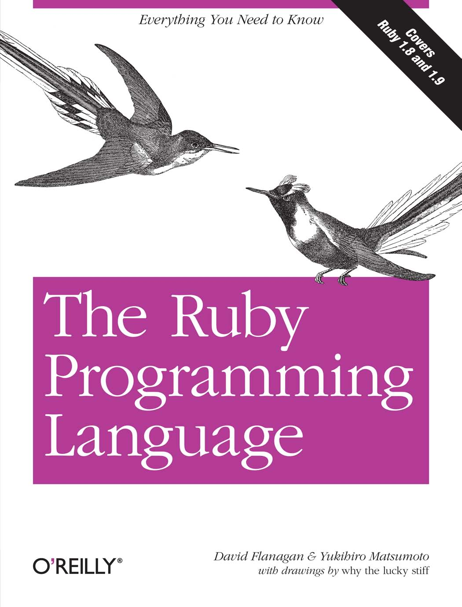
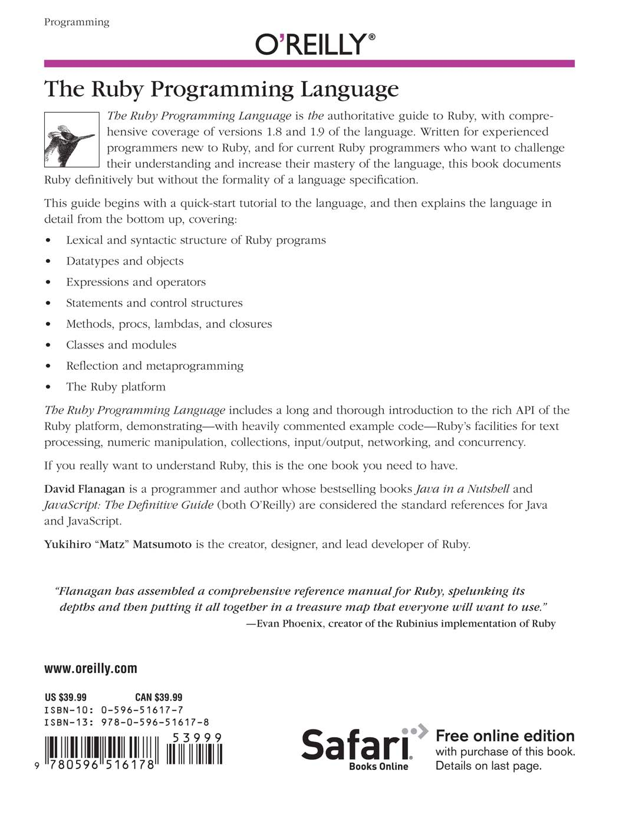
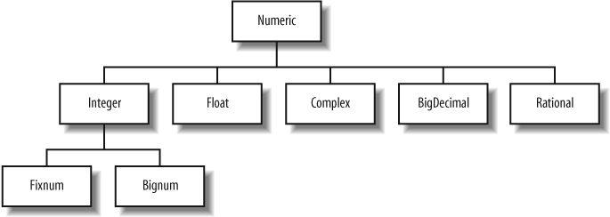
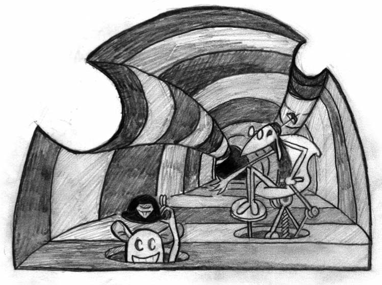
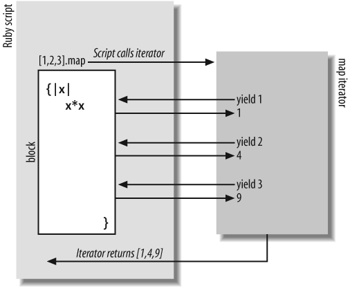
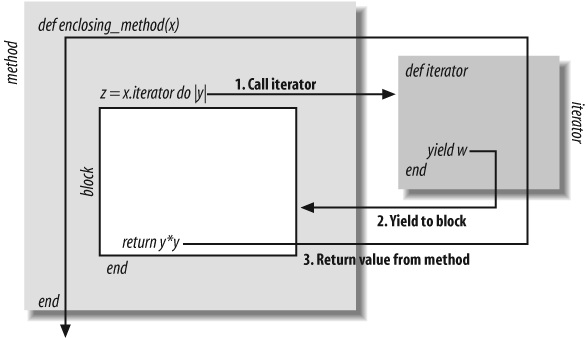
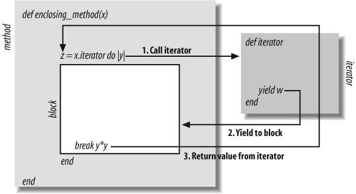
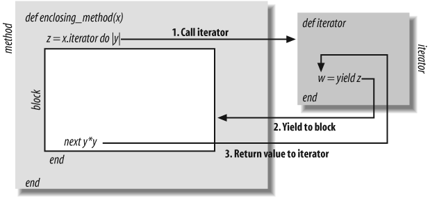

The Ruby Programming Language
The Ruby Programming Language
David Flanagan and Yukihiro Matsumoto
Beijing • Cambridge • Farnham • Köln • Sebastopol • Taipei • Tokyo
The Ruby Programming Language
by David Flanagan and Yukihiro Matsumoto
with drawings by why the lucky stiff
Copyright © 2008 David Flanagan and Yukihiro Matsumoto. All rights reserved.
Printed in the United States of America.
Published by O’Reilly Media, Inc., 1005 Gravenstein Highway North, Sebastopol, CA 95472
O’Reilly books may be purchased for educational, business, or sales promotional use. Online editions
are also available for most titles (http://safari.oreilly.com). For more information, contact our corporate/
institutional sales department: (800) 998-9938 or corporate@oreilly.com.
Editor: Mike Loukides
Indexer: Joe Wizda
Production Editor: Sarah Schneider
Cover Designer: Karen Montgomery
Proofreader: Sarah Schneider
Interior Designer: David Futato
Illustrators: Rob Romano and why the lucky stiff
Printing History:
January 2008:
First Edition.
Nutshell Handbook, the Nutshell Handbook logo, and the O’Reilly logo are registered trademarks of
O’Reilly Media, Inc. The Ruby Programming Language, the image of Horned Sungem hummingbirds,
and related trade dress are trademarks of O’Reilly Media, Inc.
Java™ and all Java-based trademarks are registered trademarks of Sun Microsystems, Inc., in the United
States and other countries. O’Reilly Media, Inc. is independent of Sun Microsystems.
Many of the designations uses by manufacturers and sellers to distinguish their products are claimed as
trademarks. Where those designations appear in this book, and O’Reilly Media, Inc. was aware of a
trademark claim, the designations have been printed in caps or initial caps.
While every precaution has been taken in the preparation of this book, the publisher and authors assume
no responsibility for errors or omissions, or for damages resulting from the use of the information con-
tained herein. The drawings on the chapter title pages were drawn by why the lucky stiff and are licensed
under the Creative Commons Attribution-ShareAlike 3.0 License. To view a copy of this license, visit
http://creativecommons.org/licenses/by-sa/3.0/legalcode or send a letter to Creative Commons, 171 2nd
Street, Suite 300, San Francisco, California, 94105, USA.
TM
This book uses RepKover™, a durable and flexible lay-flat binding.
ISBN-13: 978-0-596-51617-8
[M]
[12/08]
1264438633
Table of Contents
Preface . . . . . . . . . . . . . . . . . . . . . . . . . . . . . . . . . . . . . . . . . . . . . . . . . . . . . . . . . . . . . . . . . . . . . ix
1.
Introduction . . . . . . . . . . . . . . . . . . . . . . . . . . . . . . . . . . . . . . . . . . . . . . . . . . . . . . . . . . . . 1
1.1 A Tour of Ruby
2
1.2 Try Ruby
11
1.3 About This Book
15
1.4 A Sudoku Solver in Ruby
17
2.
The Structure and Execution of Ruby Programs . . . . . . . . . . . . . . . . . . . . . . . . . . . . . . 25
2.1 Lexical Structure
26
2.2 Syntactic Structure
33
2.3 File Structure
35
2.4 Program Encoding
36
2.5 Program Execution
39
3.
Datatypes and Objects . . . . . . . . . . . . . . . . . . . . . . . . . . . . . . . . . . . . . . . . . . . . . . . . . . . 41
3.1 Numbers
42
3.2 Text
46
3.3 Arrays
64
3.4 Hashes
67
3.5 Ranges
68
3.6 Symbols
70
3.7 True, False, and Nil
72
3.8 Objects
72
4.
Expressions and Operators . . . . . . . . . . . . . . . . . . . . . . . . . . . . . . . . . . . . . . . . . . . . . . . 85
4.1 Literals and Keyword Literals
86
4.2 Variable References
87
4.3 Constant References
88
4.4 Method Invocations
89
4.5 Assignments
92
4.6 Operators
100
v
5.
Statements and Control Structures . . . . . . . . . . . . . . . . . . . . . . . . . . . . . . . . . . . . . . . 117
5.1 Conditionals
118
5.2 Loops
127
5.3 Iterators and Enumerable Objects
130
5.4 Blocks
140
5.5 Altering Control Flow
146
5.6 Exceptions and Exception Handling
154
5.7 BEGIN and END
165
5.8 Threads, Fibers, and Continuations
166
6.
Methods, Procs, Lambdas, and Closures . . . . . . . . . . . . . . . . . . . . . . . . . . . . . . . . . . . 175
6.1 Defining Simple Methods
177
6.2 Method Names
180
6.3 Methods and Parentheses
183
6.4 Method Arguments
185
6.5 Procs and Lambdas
192
6.6 Closures
200
6.7 Method Objects
203
6.8 Functional Programming
205
7.
Classes and Modules . . . . . . . . . . . . . . . . . . . . . . . . . . . . . . . . . . . . . . . . . . . . . . . . . . . 213
7.1 Defining a Simple Class
214
7.2 Method Visibility: Public, Protected, Private
232
7.3 Subclassing and Inheritance
234
7.4 Object Creation and Initialization
241
7.5 Modules
247
7.6 Loading and Requiring Modules
252
7.7 Singleton Methods and the Eigenclass
257
7.8 Method Lookup
258
7.9 Constant Lookup
261
8.
Reflection and Metaprogramming . . . . . . . . . . . . . . . . . . . . . . . . . . . . . . . . . . . . . . . 265
8.1 Types, Classes, and Modules
266
8.2 Evaluating Strings and Blocks
268
8.3 Variables and Constants
271
8.4 Methods
272
8.5 Hooks
277
8.6 Tracing
279
8.7 ObjectSpace and GC
281
8.8 Custom Control Structures
281
8.9 Missing Methods and Missing Constants
284
8.10 Dynamically Creating Methods
287
8.11 Alias Chaining
290
vi | Table of Contents
8.12 Domain-Specific Languages
296
9.
The Ruby Platform . . . . . . . . . . . . . . . . . . . . . . . . . . . . . . . . . . . . . . . . . . . . . . . . . . . . . 303
9.1 Strings
304
9.2 Regular Expressions
310
9.3 Numbers and Math
321
9.4 Dates and Times
325
9.5 Collections
328
9.6 Files and Directories
350
9.7 Input/Output
356
9.8 Networking
366
9.9 Threads and Concurrency
373
10. The Ruby Environment . . . . . . . . . . . . . . . . . . . . . . . . . . . . . . . . . . . . . . . . . . . . . . . . . 389
10.1 Invoking the Ruby Interpreter
390
10.2 The Top-Level Environment
395
10.3 Practical Extraction and Reporting Shortcuts
403
10.4 Calling the OS
405
10.5 Security
409
Index . . . . . . . . . . . . . . . . . . . . . . . . . . . . . . . . . . . . . . . . . . . . . . . . . . . . . . . . . . . . . . . . . . . . . 415
Table of Contents | vii
Preface
This book is an updated and expanded version of Ruby in a Nutshell (O’Reilly) by
Yukihiro Matsumoto, who is better known as Matz. It is loosely modeled after the
classic The C Programming Language (Prentice Hall) by Brian Kernighan and Dennis
Ritchie, and aims to document the Ruby language comprehensively but without the
formality of a language specification. It is written for experienced programmers who
are new to Ruby, and for current Ruby programmers who want to take their under-
standing and mastery of the language to the next level.
You’ll find a guide to the structure and organization of this book in Chapter 1.
Acknowledgments
David Flanagan
Before anything else, I must thank Matz for the beautiful language he has designed, for
his help understanding that language, and for the Nutshell that this book grew out of.
Thanks also to:
• why the lucky stiff for the delightful drawings that grace these pages (you’ll find
them on the chapter title pages) and, of course, for his own book on Ruby, why’s
(poignant) guide to Ruby, which you can find online at http://poignantguide.net/
ruby/.
• My technical reviewers: David A. Black, director of Ruby Power and Light, LLC
(http://www.rubypal.com); Charles Oliver Nutter of the JRuby team (http://
www.jruby.org) at Sun Microsystems; Shyouhei Urabe, the maintainer of the Ruby
1.8.6 branch; and Ken Cooper. Their comments helped improve the quality and
clarity of the book. Any errors that remain are, of course, my own.
• My editor, Mike Loukides, for asking and persistently encouraging me to write this
book, and for his patience while I did so.
ix
Finally, of course, my love and thanks to my family.
—David Flanagan
http://www.davidflanagan.com
January 2008
Yukihiro Matsumoto
In addition to the people listed by David (except myself), I appreciate the help from
community members all around the world, especially from Japan: Koichi Sasada,
Nobuyoshi Nakada, Akira Tanaka, Shugo Maeda, Usaku Nakamura, and Shyouhei
Urabe to name a few (not in any particular order).
And finally, I thank my family, who hopefully forgive their husband and father for
dedicating time to Ruby development.
—Yukihiro Matsumoto
January 2008
Conventions Used in This Book
The following typographical conventions are used in this book:
Italic
Indicates new terms, URLs, email addresses, filenames, and file extensions.
Constant width
Used for program listings, as well as within paragraphs to refer to program elements
such as variable or function names, datatypes, environment variables, statements,
and keywords.
Constant width bold
Shows commands or other text that should be typed literally by the user.
Constant width italic
Shows text that should be replaced with user-supplied values or by values deter-
mined by context.
Using Code Examples
This book is here to help you get your job done. In general, you may use the code in
this book in your programs and documentation. You do not need to contact us for
permission unless you’re reproducing a significant portion of the code. For example,
writing a program that uses several chunks of code from this book does not require
permission. Selling or distributing a CD-ROM of examples from O’Reilly books does
require permission. Answering a question by citing this book and quoting example
x | Preface
code does not require permission. Incorporating a significant amount of example code
from this book into your product’s documentation does require permission.
We appreciate, but do not require, attribution. An attribution usually includes the title,
author, publisher, and ISBN. For example: “The Ruby Programming Language by David
Flanagan and Yukihiro Matsumoto. Copyright 2008 David Flanagan and Yukihiro
Matsumoto, 978-0-596-51617-8.”
If you feel your use of code examples falls outside fair use or the permission given above,
feel free to contact us at permissions@oreilly.com.
How to Contact Us
Please address comments and questions concerning this book to the publisher:
O’Reilly Media, Inc.
1005 Gravenstein Highway North
Sebastopol, CA 95472
800-998-9938 (in the United States or Canada)
707-829-0515 (international or local)
707 829-0104 (fax)
We have a web page for this book, where we list errata, examples, and any additional
information. You can access this page at:
http://www.oreilly.com/catalog/9780596516178
To comment or ask technical questions about this book, send email to:
bookquestions@oreilly.com
For more information about our books, conferences, Resource Centers, and the
O’Reilly Network, see our web site at:
http://www.oreilly.com
Safari® Enabled
When you see a Safari® Enabled icon on the cover of your favorite tech-
nology book, that means the book is available online through the O’Reilly
Network Safari Bookshelf.
Safari offers a solution that’s better than e-books. It’s a virtual library that lets you easily
search thousands of top tech books, cut and paste code samples, download chapters,
and find quick answers when you need the most accurate, current information. Try it
for free at http://safari.oreilly.com.
Preface | xi
CHAPTER 1
Introduction
1
Ruby is a dynamic programming language with a complex but expressive grammar and
a core class library with a rich and powerful API. Ruby draws inspiration from Lisp,
Smalltalk, and Perl, but uses a grammar that is easy for C and Java™ programmers to
learn. Ruby is a pure object-oriented language, but it is also suitable for procedural and
functional programming styles. It includes powerful metaprogramming capabilities
and can be used to create domain-specific languages or DSLs.
Matz on Ruby
Yukihiro Matsumoto, known as Matz to the English-speaking Ruby community, is the
creator of Ruby and the author of Ruby in a Nutshell (O’Reilly) (which has been updated
and expanded into the present book). He says:
I knew many languages before I created Ruby, but I was never fully satisfied with
them. They were uglier, tougher, more complex, or more simple than I expected. I
wanted to create my own language that satisfied me, as a programmer. I knew a lot
about the language’s target audience: myself. To my surprise, many programmers
all over the world feel very much like I do. They feel happy when they discover and
program in Ruby.
Throughout the development of the Ruby language, I've focused my energies on
making programming faster and easier. All features in Ruby, including object-
oriented features, are designed to work as ordinary programmers (e.g., me) expect
them to work. Most programmers feel it is elegant, easy to use, and a pleasure to
program.
Matz’s guiding philosophy for the design of Ruby is summarized in an oft-quoted
remark of his:
Ruby is designed to make programmers happy.
1.1 A Tour of Ruby
This section is a guided, but meandering, tour through some of the most interesting
features of Ruby. Everything discussed here will be documented in detail later in the
book, but this first look will give you the flavor of the language.
1.1.1 Ruby Is Object-Oriented
We’ll begin with the fact that Ruby is a completely object-oriented language. Every value
is an object, even simple numeric literals and the values true, false, and nil (nil is a
special value that indicates the absence of value; it is Ruby’s version of null). Here we
invoke a method named class on these values. Comments begin with # in Ruby, and
the => arrows in the comments indicate the value returned by the commented code (this
is a convention used throughout this book):
1.class # => Fixnum: the number 1 is a Fixnum
0.0.class # => Float: floating-point numbers have class Float
2 | Chapter 1: Introduction
true.class # => TrueClass: true is a the singleton instance of TrueClass
false.class # => FalseClass
nil.class # => NilClass
In many languages, function and method invocations require parentheses, but there
are no parentheses in any of the code above. In Ruby, parentheses are usually optional
and they are commonly omitted, especially when the method being invoked takes no
arguments. The fact that the parentheses are omitted in the method invocations here
makes them look like references to named fields or named variables of the object. This
is intentional, but the fact is, Ruby is very strict about encapsulation of its objects; there
is no access to the internal state of an object from outside the object. Any such access
must be mediated by an accessor method, such as the class method shown above.
1.1.2 Blocks and Iterators
The fact that we can invoke methods on integers isn’t just an esoteric aspect of Ruby.
It is actually something that Ruby programmers do with some frequency:
3.times { print "Ruby! " } # Prints "Ruby! Ruby! Ruby! "
1.upto(9) {|x| print x } # Prints "123456789"
times and upto are methods implemented by integer objects. They are a special kind of
method known as an iterator, and they behave like loops. The code within curly braces
—known as a block—is associated with the method invocation and serves as the body
of the loop. The use of iterators and blocks is another notable feature of Ruby; although
the language does support an ordinary while loop, it is more common to perform loops
with constructs that are actually method calls.
Integers are not the only values that have iterator methods. Arrays (and similar “enu-
merable” objects) define an iterator named each, which invokes the associated block
once for each element in the array. Each invocation of the block is passed a single
element from the array:
a = [3, 2, 1] # This is an array literal
a[3] = a[2] - 1 # Use square brackets to query and set array elements
a.each do |elt| # each is an iterator. The block has a parameter elt
print elt+1 # Prints "4321"
end # This block was delimited with do/end instead of {}
Various other useful iterators are defined on top of each:
a = [1,2,3,4] # Start with an array
b = a.map {|x| x*x } # Square elements: b is [1,4,9,16]
c = a.select {|x| x%2==0 } # Select even elements: c is [2,4]
a.inject do |sum,x| # Compute the sum of the elements => 10
sum + x
end
Hashes, like arrays, are a fundamental data structure in Ruby. As their name implies,
they are based on the hashtable data structure and serve to map arbitrary key objects
to value objects. (To put this another way, we can say that a hash associates arbitrary
1.1 A Tour of Ruby | 3
value objects with key objects.) Hashes use square brackets, like arrays do, to query
and set values in the hash. Instead of using an integer index, they expect key objects
within the square brackets. Like the Array class, the Hash class also defines an each
iterator method. This method invokes the associated block of code once for each key/
value pair in the hash, and (this is where it differs from Array) passes both the key and
the value as parameters to the block:
h = { # A hash that maps number names to digits
:one => 1, # The "arrows" show mappings: key=>value
:two => 2 # The colons indicate Symbol literals
}
h[:one] # => 1. Access a value by key
h[:three] = 3 # Add a new key/value pair to the hash
h.each do |key,value| # Iterate through the key/value pairs
print "#{value}:#{key}; " # Note variables substituted into string
end # Prints "1:one; 2:two; 3:three; "
Ruby’s hashes can use any object as a key, but Symbol objects are the most commonly
used. Symbols are immutable, interned strings. They can be compared by identity
rather than by textual content (because two distinct Symbol objects will never have the
same content).
The ability to associate a block of code with a method invocation is a fundamental and
very powerful feature of Ruby. Although its most obvious use is for loop-like constructs,
it is also useful for methods that only invoke the block once. For example:
File.open("data.txt") do |f| # Open named file and pass stream to block
line = f.readline # Use the stream to read from the file
end # Stream automatically closed at block end
t = Thread.new do # Run this block in a new thread
File.read("data.txt") # Read a file in the background
end # File contents available as thread value
As an aside, notice that the Hash.each example previously included this interesting line
of code:
print "#{value}:#{key}; " # Note variables substituted into string
Double-quoted strings can include arbitrary Ruby expressions delimited by #{ and }.
The value of the expression within these delimiters is converted to a string (by calling
its to_s method, which is supported by all objects). The resulting string is then used to
replace the expression text and its delimiters in the string literal. This substitution of
expression values into strings is usually called string interpolation.
1.1.3 Expressions and Operators in Ruby
Ruby’s syntax is expression-oriented. Control structures such as if that would be called
statements in other languages are actually expressions in Ruby. They have values like
other simpler expressions do, and we can write code like this:
minimum = if x < y then x else y end
4 | Chapter 1: Introduction
Although all “statements” in Ruby are actually expressions, they do not all return
meaningful values. while loops and method definitions, for example, are expressions
that normally return the value nil.
As in most languages, expressions in Ruby are usually built out of values and operators.
For the most part, Ruby’s operators will be familiar to anyone who knows C, Java,
JavaScript, or any similar programming language. Here are examples of some
commonplace and some more unusual Ruby operators:
1 + 2 # => 3: addition
1 * 2 # => 2: multiplication
1 + 2 == 3 # => true: == tests equality
2 ** 1024 # 2 to the power 1024: Ruby has arbitrary size ints
"Ruby" + " rocks!" # => "Ruby rocks!": string concatenation
"Ruby! " * 3 # => "Ruby! Ruby! Ruby! ": string repetition
"%d %s" % [3, "rubies"] # => "3 rubies": Python-style, printf formatting
max = x > y ? x : y # The conditional operator
Many of Ruby’s operators are implemented as methods, and classes can define (or
redefine) these methods however they want. (They can’t define completely new oper-
ators, however; there is only a fixed set of recognized operators.) As examples, notice
that the + and * operators behave differently for integers and strings. And you can define
these operators any way you want in your own classes. The << operator is another good
example. The integer classes Fixnum and Bignum use this operator for the bitwise left-
shift operation, following the C programming language. At the same time (following
C++), other classes—such as strings, arrays, and streams—use this operator for an
append operation. If you create a new class that can have values appended to it in some
way, it is a very good idea to define <<.
One of the most powerful operators to override is []. The Array and Hash classes use
this operator to access array elements by index and hash values by key. But you can
define [] in your classes for any purpose you want. You can even define it as a method
that expects multiple arguments, comma-separated between the square brackets. (The
Array class accepts an index and a length between the square brackets to indicate a
subarray or “slice” of the array.) And if you want to allow square brackets to be used
on the lefthand side of an assignment expression, you can define the corresponding
[]= operator. The value on the righthand side of the assignment will be passed as the
final argument to the method that implements this operator.
1.1.4 Methods
Methods are defined with the def keyword. The return value of a method is the value
of the last expression evaluated in its body:
def square(x) # Define a method named square with one parameter x
x*x # Return x squared
end # End of the method
1.1 A Tour of Ruby | 5
When a method, like the one above, is defined outside of a class or a module, it is
effectively a global function rather than a method to be invoked on an object. (Tech-
nically, however, a method like this becomes a private method of the Object class.)
Methods can also be defined on individual objects by prefixing the name of the method
with the object on which it is defined. Methods like these are known as single-
tonmethods, and they are how Ruby defines class methods:
def Math.square(x) # Define a class method of the Math module
x*x
end
The Math module is part of the core Ruby library, and this code adds a new method to
it. This is a key feature of Ruby—classes and modules are “open” and can be modified
and extended at runtime.
Method parameters may have default values specified, and methods may accept
arbitrary numbers of arguments.
1.1.5 Assignment
The (nonoverridable) = operator in Ruby assigns a value to a variable:
x = 1
Assignment can be combined with other operators such as + and -:
x += 1 # Increment x: note Ruby does not have ++.
y -= 1 # Decrement y: no -- operator, either.
Ruby supports parallel assignment, allowing more than one value and more than one
variable in assignment expressions:
x, y = 1, 2 # Same as x = 1; y = 2
a, b = b, a # Swap the value of two variables
x,y,z = [1,2,3] # Array elements automatically assigned to variables
Methods in Ruby are allowed to return more than one value, and parallel assignment
is helpful in conjunction with such methods. For example:
# Define a method to convert Cartesian (x,y) coordinates to Polar
def polar(x,y)
theta = Math.atan2(y,x) # Compute the angle
r = Math.hypot(x,y) # Compute the distance
[r, theta] # The last expression is the return value
end
# Here's how we use this method with parallel assignment
distance, angle = polar(2,2)
Methods that end with an equals sign (=) are special because Ruby allows them to be
invoked using assignment syntax. If an object o has a method named x=, then the
following two lines of code do the very same thing:
6 | Chapter 1: Introduction
o.x=(1) # Normal method invocation syntax
o.x = 1 # Method invocation through assignment
1.1.6 Punctuation Suffixes and Prefixes
We saw previously that methods whose names end with = can be invoked by assignment
expressions. Ruby methods can also end with a question mark or an exclamation point.
A question mark is used to mark predicates—methods that return a Boolean value. For
example, the Array and Hash classes both define methods named empty? that test
whether the data structure has any elements. An exclamation mark at the end of a
method name is used to indicate that caution is required with the use of the method.
A number of core Ruby classes define pairs of methods with the same name, except
that one ends with an exclamation mark and one does not. Usually, the method without
the exclamation mark returns a modified copy of the object it is invoked on, and the
one with the exclamation mark is a mutator method that alters the object in place. The
Array class, for example, defines methods sort and sort!.
In addition to these punctuation characters at the end of method names, you’ll notice
punctuation characters at the start of Ruby variable names: global variables are prefixed
with $, instance variables are prefixed with @, and class variables are prefixed with @@.
These prefixes can take a little getting used to, but after a while you may come to
appreciate the fact that the prefix tells you the scope of the variable. The prefixes are
required in order to disambiguate Ruby’s very flexible grammar. One way to think of
variable prefixes is that they are one price we pay for being able to omit parentheses
around method invocations.
1.1.7 Regexp and Range
We mentioned arrays and hashes earlier as fundamental data structures in Ruby. We
demonstrated the use of numbers and strings as well. Two other datatypes are worth
mentioning here. A Regexp (regular expression) object describes a textual pattern and
has methods for determining whether a given string matches that pattern or not. And
a Range represents the values (usually integers) between two endpoints. Regular
expressions and ranges have a literal syntax in Ruby:
/[Rr]uby/ # Matches "Ruby" or "ruby"
/\d{5}/ # Matches 5 consecutive digits
1..3 # All x where 1 <= x <= 3
1...3 # All x where 1 <= x < 3
Regexp and Range objects define the normal == operator for testing equality. In addition,
they also define the === operator for testing matching and membership. Ruby’s case
statement (like the switch statement of C or Java) matches its expression against each
of the possible cases using ===, so this operator is often called the case equality opera-
tor. It leads to conditional tests like these:
1.1 A Tour of Ruby | 7
# Determine US generation name based on birth year
# Case expression tests ranges with ===
generation = case birthyear
when 1946..1963: "Baby Boomer"
when 1964..1976: "Generation X"
when 1978..2000: "Generation Y"
else nil
end
# A method to ask the user to confirm something
def are_you_sure? # Define a method. Note question mark!
while true # Loop until we explicitly return
print "Are you sure? [y/n]: " # Ask the user a question
response = gets # Get her answer
case response # Begin case conditional
when /^[yY]/ # If response begins with y or Y
return true # Return true from the method
when /^[nN]/, /^$/ # If response begins with n,N or is empty
return false # Return false
end
end
end
1.1.8 Classes and Modules
A class is a collection of related methods that operate on the state of an object. An
object’s state is held by its instance variables: variables whose names begin with @ and
whose values are specific to that particular object. The following code defines an ex-
ample class named Sequence and demonstrates how to write iterator methods and
define operators:
#
# This class represents a sequence of numbers characterized by the three
# parameters from, to, and by. The numbers x in the sequence obey the
# following two constraints:
#
# from <= x <= to
# x = from + n*by, where n is an integer
#
class Sequence
# This is an enumerable class; it defines an each iterator below.
include Enumerable # Include the methods of this module in this class
# The initialize method is special; it is automatically invoked to
# initialize newly created instances of the class
def initialize(from, to, by)
# Just save our parameters into instance variables for later use
@from, @to, @by = from, to, by # Note parallel assignment and @ prefix
end
# This is the iterator required by the Enumerable module
def each
x = @from # Start at the starting point
while x <= @to # While we haven't reached the end
8 | Chapter 1: Introduction
yield x # Pass x to the block associated with the iterator
x += @by # Increment x
end
end
# Define the length method (following arrays) to return the number of
# values in the sequence
def length
return 0 if @from > @to # Note if used as a statement modifier
Integer((@to-@from)/@by) + 1 # Compute and return length of sequence
end
# Define another name for the same method.
# It is common for methods to have multiple names in Ruby
alias size length # size is now a synonym for length
# Override the array-access operator to give random access to the sequence
def[](index)
return nil if index < 0 # Return nil for negative indexes
v = @from + index*@by # Compute the value
if v <= @to # If it is part of the sequence
v # Return it
else # Otherwise...
nil # Return nil
end
end
# Override arithmetic operators to return new Sequence objects
def *(factor)
Sequence.new(@from*factor, @to*factor, @by*factor)
end
def +(offset)
Sequence.new(@from+offset, @to+offset, @by)
end
end
Here is some code that uses this Sequence class:
s = Sequence.new(1, 10, 2) # From 1 to 10 by 2's
s.each {|x| print x } # Prints "13579"
print s[s.size-1] # Prints 9
t = (s+1)*2 # From 4 to 22 by 4's
The key feature of our Sequence class is its each iterator. If we are only interested in the
iterator method, there is no need to define the whole class. Instead, we can simply write
an iterator method that accepts the from, to, and by parameters. Instead of making this
a global function, let’s define it in a module of its own:
module Sequences # Begin a new module
def self.fromtoby(from, to, by) # A singleton method of the module
x = from
while x <= to
yield x
x += by
end
1.1 A Tour of Ruby | 9
end
end
With the iterator defined this way, we write code like this:
Sequences.fromtoby(1, 10, 2) {|x| print x } # Prints "13579"
An iterator like this makes it unnecessary to create a Sequence object to iterate a
sequence of numbers. But the name of the method is quite long, and its invocation
syntax is unsatisfying. What we really want is a way to iterate numeric Range objects
by steps other than 1. One of the amazing features of Ruby is that its classes, even the
built-in core classes, are open: any program can add methods to them. So we really can
define a new iterator method for ranges:
class Range # Open an existing class for additions
def by(step) # Define an iterator named by
x = self.begin # Start at one endpoint of the range
if exclude_end? # For ... ranges that exclude the end
while x < self.end # Test with the < operator
yield x
x += step
end
else # Otherwise, for .. ranges that include the end
while x <= self.end # Test with <= operator
yield x
x += step
end
end
end # End of method definition
end # End of class modification
# Examples
(0..10).by(2) {|x| print x} # Prints "0246810"
(0...10).by(2) {|x| print x} # Prints "02468"
This by method is convenient but unnecessary; the Range class already defines an iterator
named step that serves the same purpose. The core Ruby API is a rich one, and it is
worth taking the time to study the platform (see Chapter 9) so you don’t end up
spending time writing methods that have already been implemented for you!
1.1.9 Ruby Surprises
Every language has features that trip up programmers who are new to the language.
Here we describe two of Ruby’s surprising features.
Ruby’s strings are mutable, which may be surprising to Java programmers in particular.
The []= operator allows you to alter the characters of a string or to insert, delete, and
replace substrings. The << operator allows you to append to a string, and the String
class defines various other methods that alter strings in place. Because strings are mu-
table, string literals in a program are not unique objects. If you include a string literal
within a loop, it evaluates to a new object on each iteration of the loop. Call the
10 | Chapter 1: Introduction
freeze method on a string (or on any object) to prevent any future modifications to
that object.
Ruby’s conditionals and loops (such as if and while) evaluate conditional expressions
to determine which branch to evaluate or whether to continue looping. Conditional
expressions often evaluate to true or false, but this is not required. The value of nil is
treated the same as false, and any other value is the same as true. This is likely to
surprise C programmers who expect 0 to work like false, and JavaScript programmers
who expect the empty string "" to be the same as false.
1.2 Try Ruby
We hope our tour of Ruby’s key features has piqued your interest and you are eager to
try Ruby out. To do that, you’ll need a Ruby interpreter, and you’ll also want to know
how to use three tools—irb, ri, and gem—that are bundled with the interpreter. This
section explains how to get and use them.
1.2.1 The Ruby Interpreter
The official web site for Ruby is http://www.ruby-lang.org. If Ruby is not already
installed on your computer, you can follow the download link on the ruby-lang.org
(http://ruby-lang.org) home page for instructions on downloading and installing the
standard C-based reference implementation of Ruby.
Once you have Ruby installed, you can invoke the Ruby interpreter with the ruby
command:
% ruby -e 'puts "hello world!"'
hello world!
The -e command-line option causes the interpreter to execute a single specified line of
Ruby code. More commonly, you’d place your Ruby program in a file and tell the
interpreter to invoke it:
% ruby hello.rb
hello world!
Other Ruby Implementations
In the absence of a formal specification for the Ruby language, the Ruby interpreter
from ruby-lang.org (http://ruby-lang.org) is the reference implementation that defines
the language. It is sometimes known as MRI, or “Matz’s Ruby Implementation.” For
Ruby 1.9, the original MRI interpreter was merged with YARV (“Yet Another Ruby
Virtual machine”) to produce a new reference implementation that performs internal
compilation to bytecode and then executes that bytecode on a virtual machine.
The reference implementation is not the only one available, however. At the time of
this writing, there is one alternative implementation (JRuby) released and several other
implementations under development:
1.2 Try Ruby | 11
JRuby
JRuby is a Java-based implementation of Ruby, available from http://jruby.org. At
the time of this writing, the current release is JRuby 1.1, which is compatible with
Ruby 1.8. A 1.9-compatible release of JRuby may be available by the time you read
this. JRuby is open source software, developed primarily at Sun Microsystems.
IronRuby
IronRuby is Microsoft’s implementation of Ruby for their .NET framework and
DLR (Dynamic Language Runtime). The source code for IronRuby is available
under the Microsoft Permissive License. At the time of this writing, IronRuby is
not yet at a 1.0 release level. The project home page is http://www.ironruby.net.
Rubinius
Rubinius is an open source project that describes itself as “an alternative Ruby
implementation written largely in Ruby. The Rubinius virtual machine, named
shotgun, is based loosely on the Smalltalk-80 VM architecture.” At the time of this
writing, Rubinius is not at version 1.0. The home page for the Rubinius project is
http://rubini.us.
Cardinal
Cardinal is a Ruby implementation intended to run on the Parrot VM (which aims
to power Perl 6 and a number of other dynamic languages). At the time of this
writing, neither Parrot nor Cardinal have released a 1.0 version. Cardinal does not
have its own home page; it is hosted as part of the open source Parrot project at
http://www.parrotcode.org.
1.2.2 Displaying Output
In order to try out Ruby features, you need a way to display output so that your test
programs can print their results. The puts function—used in the “hello world” code
earlier—is one way to do this. Loosely speaking, puts prints a string of text to the
console and appends a newline (unless the string already ends with one). If passed an
object that is not a string, puts calls the to_s method of that object and prints the string
returned by that method. print does more or less the same thing, but it does not append
a newline. For example, type the following two-line program in a text editor and save
it in a file named count.rb:
9.downto(1) {|n| print n } # No newline between numbers
puts " blastoff!" # End with a newline
Now run the program with your Ruby interpreter:
% ruby count.rb
It should produce the following output:
987654321 blastoff!
You may find the function p to be a useful alternative to puts. Not only is it shorter to
type, but it converts objects to strings with the inspect method, which sometimes
12 | Chapter 1: Introduction
returns more programmer-friendly representations than to_s does. When printing an
array, for example, p outputs it using array literal notation, whereas puts simply prints
each element of the array on a line by itself.
1.2.3 Interactive Ruby with irb
irb (short for “interactive Ruby”) is a Ruby shell. Type any Ruby expression at its
prompt and it will evaluate it and display its value for you. This is often the easiest way
to try out the language features you read about in this book. Here is an example irb
session, with annotations:
$ irb --simple-prompt # Start irb from the terminal
>> 2**3 # Try exponentiation
=> 8 # This is the result
>> "Ruby! " * 3 # Try string repetition
=> "Ruby! Ruby! Ruby! " # The result
>> 1.upto(3){|x| puts x } # Try an iterator
1 # Three lines of output
2 # Because we called puts 3 times
3
=> 1 # The return value of 1.upto(3)
>> quit # Exit irb
$ # Back to the terminal prompt
This example session shows you all you need to know about irb to make productive
use of it while exploring Ruby. It does have a number of other important features,
however, including subshells (type “irb” at the prompt to start a subshell) and
configurability.
1.2.4 Viewing Ruby Documentation with ri
Another critical Ruby tool is the ri* documentation viewer. Invoke ri on the command
line followed by the name of a Ruby class, module, or method, and ri will display
documentation for you. You may specify a method name without a qualifying class or
module name, but this will just show you a list of all methods by that name (unless the
method is unique). Normally, you can separate a class or module name from a method
name with a period. If a class defines a class method and an instance method by the
same name, you must instead use :: to refer to the class method or # to refer to the
instance method. Here are some example invocations of ri:
ri Array
ri Array.sort
ri Hash#each
ri Math::sqrt
* Opinions differ as to what “ri” stands for. It has been called “Ruby Index,” “Ruby Information,” and “Ruby
Interactive.”
1.2 Try Ruby | 13
This documentation displayed by ri is extracted from specially formatted comments in
Ruby source code. See §2.1.1.2 for details.
1.2.5 Ruby Package Management with gem
Ruby’s package management system is known as RubyGems, and packages or modules
distributed using RubyGems are called “gems.” RubyGems makes it easy to install Ruby
software and can automatically manage complex dependencies between packages.
The frontend script for RubyGems is gem, and it’s distributed with Ruby 1.9 just as
irb and ri are. In Ruby 1.8, you must install it separately—see http://rubygems.org. Once
the gem program is installed, you might use it like this:
# gem install rails
Successfully installed activesupport-1.4.4
Successfully installed activerecord-1.15.5
Successfully installed actionpack-1.13.5
Successfully installed actionmailer-1.3.5
Successfully installed actionwebservice-1.2.5
Successfully installed rails-1.2.5
6 gems installed
Installing ri documentation for activesupport-1.4.4...
Installing ri documentation for activerecord-1.15.5...
...etc...
As you can see, the gem install command installs the most recent version of the gem
you request and also installs any gems that the requested gem requires. gem has other
useful subcommands as well. Some examples:
gem list # List installed gems
gem enviroment # Display RubyGems configuration information
gem update rails # Update a named gem
gem update # Update all installed gems
gem update --system # Update RubyGems itself
gem uninstall rails # Remove an installed gem
In Ruby 1.8, the gems you install cannot be automatically loaded by Ruby’s require
method. (See §7.6 for more about loading modules of Ruby code with the require
method.) If you’re writing a program that will be using modules installed as gems, you
must first require the rubygems module. Some Ruby 1.8 distributions are preconfigured
with the RubyGems library, but you may need to download and install this manually.
Loading this rubygems module alters the require method itself so that it searches the
set of installed gems before it searches the standard library. You can also automatically
enable RubyGems support by running Ruby with the -rubygems command-line option.
And if you add -rubygems to the RUBYOPT environment variable, then the RubyGems
library will be loaded on every invocation of Ruby.
The rubygems module is part of the standard library in Ruby 1.9, but it is no longer
required to load gems. Ruby 1.9 knows how to find installed gems on its own, and you
do not have to put require 'rubygems' in your programs that use gems.
14 | Chapter 1: Introduction
When you load a gem with require (in either 1.8 or 1.9), it loads the most recent
installed version of the gem you specify. If you have more specific version requirements,
you can use the gem method before calling require. This finds a version of the gem
matching the version constraints you specify and “activates” it, so that a subsequent
require will load that version:
require 'rubygems' # Not necessary in Ruby 1.9
gem 'RedCloth', '> 2.0', '< 4.0' # Activate RedCloth version 2.x or 3.x
require 'RedCloth' # And now load it
You’ll find more about require and gems in §7.6.1. Complete coverage of RubyGems,
the gem program, and the rubygems module are beyond the scope of this book. The
gem command is self-documenting—start by running gem help. For details on the gem
method, try ri gem. And for complete details, see the documentation at http://ruby
gems.org.
1.2.6 More Ruby Tutorials
This chapter began with a tutorial introduction to the Ruby language. You can try out
the code snippets of that tutorial using irb. If you want more tutorials before diving
into the language more formally, there are two good ones available by following links
on the http://www.ruby-lang.org home page. One irb-based tutorial is called “Ruby in
Twenty Minutes.”* Another tutorial, called “Try Ruby!”, is interesting because it works
in your web browser and does not require you to have Ruby or irb installed on your
system.†
1.2.7 Ruby Resources
The Ruby web site (http://www.ruby-lang.org) is the place to find links to other Ruby
resources, such as online documentation, libraries, mailing lists, blogs, IRC channels,
user groups, and conferences. Try the “Documentation,” “Libraries,” and
“Community” links on the home page.
1.3 About This Book
As its title implies, this book covers the Ruby programming language and aspires to do
so comprehensively and accessibly. This edition of the book covers language versions
1.8 and 1.9. Ruby blurs the distinction between language and platform, and so our
coverage of the language includes a detailed overview of the core Ruby API. But this
book is not an API reference and does not cover the core classes comprehensively. Also,
* At the time of this writing, the direct URL for this tutorial is http://www.ruby-lang.org/en/documentation/
quickstart/.
† If you can’t find the “Try Ruby!” link on the Ruby home page, try this URL: http://tryruby.hobix.com.
1.3 About This Book | 15
this is not a book about Ruby frameworks (like Rails), nor a book about Ruby tools
(like rake and gem).
This chapter concludes with a heavily commented extended example demonstrating a
nontrivial Ruby program. The chapters that follow cover Ruby from the bottom up:
• Chapter 2 covers the lexical and syntactic structure of Ruby, including basic issues
like character set, case sensitivity, and reserved words.
• Chapter 3 explains the kinds of data—numbers, strings, ranges, arrays, and so on
—that Ruby programs can manipulate, and it covers the basic features of all Ruby
objects.
• Chapter 4 covers primary expressions in Ruby—literals, variable references, meth-
od invocations, and assignments—and it explains the operators used to combine
primary expressions into compound expressions.
• Chapter 5 explains conditionals, loops (including blocks and iterator methods),
exceptions, and the other Ruby expressions that would be called statements or
control structures in other languages.
• Chapter 6 formally documents Ruby’s method definition and invocation syntax,
and it also covers the invocable objects known as procs and lambdas. This chapter
includes an explanation of closures and an exploration of functional programming
techniques in Ruby.
• Chapter 7 explains how to define classes and modules in Ruby. Classes are fun-
damental to object-oriented programming, and this chapter also covers topics such
as inheritance, method visibility, mixin modules, and the method name resolution
algorithm.
• Chapter 8 covers Ruby’s APIs that allow a program to inspect and manipulate itself,
and then demonstrates metaprogramming techniques that use those APIs to make
programming easier. The chapter includes an example of domain-specific
language.
• Chapter 9 demonstrates the most important classes and methods of the core Ruby
platform with simple code fragments. This is not a reference but a detailed overview
of the core classes. Topics include text processing, numeric computation, collec-
tions (such as arrays and hashes), input/output, networking, and threads. After
reading this chapter, you’ll understand the breadth of the Ruby platform, and you’ll
be able to use the ri tool or an online reference to explore the platform in depth.
• Chapter 10 covers the top-level Ruby programming environment, including global
variables and global functions, command-line arguments supported by the Ruby
interpreter, and Ruby’s security mechanism.
16 | Chapter 1: Introduction
1.3.1 How to Read This Book
It is easy to program in Ruby, but Ruby is not a simple language. Because this book
documents Ruby comprehensively, it is not a simple book (though we hope that you
find it easy to read and understand). It is intended for experienced programmers who
want to master Ruby and are willing to read carefully and thoughtfully to achieve that
goal.
Like all similar programming books, this book contains forward and backward refer-
ences throughout. Programming languages are not linear systems, and it is impossible
to document them linearly. As you can see from the chapter outline, this book takes a
bottom-up approach to Ruby: it starts with the simplest elements of Ruby’s grammar
and moves on to document successively higher-level syntactic structures—from tokens
to values to expressions and control structures to methods and classes. This is a classic
approach to documenting programming languages, but it does not avoid the problem
of forward references.
The book is intended to be read in the order it is written, but some advanced topics are
best skimmed or skipped on the first reading; they will make much more sense when
you come back to them after having read the chapters that follow. On the other hand,
don’t let every forward reference scare you off. Many of them are simply informative,
letting you know that more details will be presented later. The reference does not nec-
essarily imply that those future details are required to understand the current material.
1.4 A Sudoku Solver in Ruby
This chapter concludes with a nontrivial Ruby application to give you a better idea of
what Ruby programs actually look like. We’ve chosen a Sudoku* solver as a good short
to medium-length program that demonstrates a number of features of Ruby. Don’t
expect to understand every detail of Example 1-1, but do read through the code; it is
very thoroughly commented, and you should have little difficulty following along.
Example 1-1. A Sudoku solver in Ruby
#
# This module defines a Sudoku::Puzzle class to represent a 9x9
# Sudoku puzzle and also defines exception classes raised for
# invalid input and over-constrained puzzles. This module also defines
# the method Sudoku.solve to solve a puzzle. The solve method uses
# the Sudoku.scan method, which is also defined here.
#
# Use this module to solve Sudoku puzzles with code like this:
* Sudoku is a logic puzzle that takes the form of a 9 × 9 grid of numbers and blank squares. The task is to fill
each blank with a digit 1 to 9 so that no row or column or 3 × 3 subgrid includes the same digit twice. Sudoku
has been popular in Japan for some time, but it gained sudden popularity in the English-speaking world in
2004 and 2005. If you are unfamiliar with Sudoku, try reading the Wikipedia entry (http://en.wikipedia.org/
wiki/Sudoku) and try an online puzzle (http://websudoku.com/).
1.4 A Sudoku Solver in Ruby | 17
#
# require 'sudoku'
# puts Sudoku.solve(Sudoku::Puzzle.new(ARGF.readlines))
#
module Sudoku
#
# The Sudoku::Puzzle class represents the state of a 9x9 Sudoku puzzle.
#
# Some definitions and terminology used in this implementation:
#
# - Each element of a puzzle is called a "cell".
# - Rows and columns are numbered from 0 to 8, and the coordinates [0,0]
# refer to the cell in the upper-left corner of the puzzle.
# - The nine 3x3 subgrids are known as "boxes" and are also numbered from
# 0 to 8, ordered from left to right and top to bottom. The box in
# the upper-left is box 0. The box in the upper-right is box 2. The
# box in the middle is box 4. The box in the lower-right is box 8.
#
# Create a new puzzle with Sudoku::Puzzle.new, specifying the initial
# state as a string or as an array of strings. The string(s) should use
# the characters 1 through 9 for the given values, and '.' for cells
# whose value is unspecified. Whitespace in the input is ignored.
#
# Read and write access to individual cells of the puzzle is through the
# [] and []= operators, which expect two-dimensional [row,column] indexing.
# These methods use numbers (not characters) 0 to 9 for cell contents.
# 0 represents an unknown value.
#
# The has_duplicates? predicate returns true if the puzzle is invalid
# because any row, column, or box includes the same digit twice.
#
# The each_unknown method is an iterator that loops through the cells of
# the puzzle and invokes the associated block once for each cell whose
# value is unknown.
#
# The possible method returns an array of integers in the range 1..9.
# The elements of the array are the only values allowed in the specified
# cell. If this array is empty, then the puzzle is over-specified and
# cannot be solved. If the array has only one element, then that element
# must be the value for that cell of the puzzle.
#
class Puzzle
# These constants are used for translating between the external
# string representation of a puzzle and the internal representation.
ASCII = ".123456789"
BIN = "\000\001\002\003\004\005\006\007\010\011"
# This is the initialization method for the class. It is automatically
# invoked on new Puzzle instances created with Puzzle.new. Pass the input
# puzzle as an array of lines or as a single string. Use ASCII digits 1
# to 9 and use the '.' character for unknown cells. Whitespace,
# including newlines, will be stripped.
def initialize(lines)
18 | Chapter 1: Introduction
if (lines.respond_to? :join) # If argument looks like an array of lines
s = lines.join # Then join them into a single string
else # Otherwise, assume we have a string
s = lines.dup # And make a private copy of it
end
# Remove whitespace (including newlines) from the data
# The '!' in gsub! indicates that this is a mutator method that
# alters the string directly rather than making a copy.
s.gsub!(/\s/, "") # /\s/ is a Regexp that matches any whitespace
# Raise an exception if the input is the wrong size.
# Note that we use unless instead of if, and use it in modifier form.
raise Invalid, "Grid is the wrong size" unless s.size == 81
# Check for invalid characters, and save the location of the first.
# Note that we assign and test the value assigned at the same time.
if i = s.index(/[^123456789\.]/)
# Include the invalid character in the error message.
# Note the Ruby expression inside #{} in string literal.
raise Invalid, "Illegal character #{s[i,1]} in puzzle"
end
# The following two lines convert our string of ASCII characters
# to an array of integers, using two powerful String methods.
# The resulting array is stored in the instance variable @grid
# The number 0 is used to represent an unknown value.
s.tr!(ASCII, BIN) # Translate ASCII characters into bytes
@grid = s.unpack('c*') # Now unpack the bytes into an array of numbers
# Make sure that the rows, columns, and boxes have no duplicates.
raise Invalid, "Initial puzzle has duplicates" if has_duplicates?
end
# Return the state of the puzzle as a string of 9 lines with 9
# characters (plus newline) each.
def to_s
# This method is implemented with a single line of Ruby magic that
# reverses the steps in the initialize() method. Writing dense code
# like this is probably not good coding style, but it demonstrates
# the power and expressiveness of the language.
#
# Broken down, the line below works like this:
# (0..8).collect invokes the code in curly braces 9 times--once
# for each row--and collects the return value of that code into an
# array. The code in curly braces takes a subarray of the grid
# representing a single row and packs its numbers into a string.
# The join() method joins the elements of the array into a single
# string with newlines between them. Finally, the tr() method
# translates the binary string representation into ASCII digits.
(0..8).collect{|r| @grid[r*9,9].pack('c9')}.join("\n").tr(BIN,ASCII)
end
# Return a duplicate of this Puzzle object.
# This method overrides Object.dup to copy the @grid array.
1.4 A Sudoku Solver in Ruby | 19
def dup
copy = super # Make a shallow copy by calling Object.dup
@grid = @grid.dup # Make a new copy of the internal data
copy # Return the copied object
end
# We override the array access operator to allow access to the
# individual cells of a puzzle. Puzzles are two-dimensional,
# and must be indexed with row and column coordinates.
def [](row, col)
# Convert two-dimensional (row,col) coordinates into a one-dimensional
# array index and get and return the cell value at that index
@grid[row*9 + col]
end
# This method allows the array access operator to be used on the
# lefthand side of an assignment operation. It sets the value of
# the cell at (row, col) to newvalue.
def []=(row, col, newvalue)
# Raise an exception unless the new value is in the range 0 to 9.
unless (0..9).include? newvalue
raise Invalid, "illegal cell value"
end
# Set the appropriate element of the internal array to the value.
@grid[row*9 + col] = newvalue
end
# This array maps from one-dimensional grid index to box number.
# It is used in the method below. The name BoxOfIndex begins with a
# capital letter, so this is a constant. Also, the array has been
# frozen, so it cannot be modified.
BoxOfIndex = [
0,0,0,1,1,1,2,2,2,0,0,0,1,1,1,2,2,2,0,0,0,1,1,1,2,2,2,
3,3,3,4,4,4,5,5,5,3,3,3,4,4,4,5,5,5,3,3,3,4,4,4,5,5,5,
6,6,6,7,7,7,8,8,8,6,6,6,7,7,7,8,8,8,6,6,6,7,7,7,8,8,8
].freeze
# This method defines a custom looping construct (an "iterator") for
# Sudoku puzzles. For each cell whose value is unknown, this method
# passes ("yields") the row number, column number, and box number to the
# block associated with this iterator.
def each_unknown
0.upto 8 do |row| # For each row
0.upto 8 do |col| # For each column
index = row*9+col # Cell index for (row,col)
next if @grid[index] != 0 # Move on if we know the cell's value
box = BoxOfIndex[index] # Figure out the box for this cell
yield row, col, box # Invoke the associated block
end
end
end
# Returns true if any row, column, or box has duplicates.
# Otherwise returns false. Duplicates in rows, columns, or boxes are not
# allowed in Sudoku, so a return value of true means an invalid puzzle.
20 | Chapter 1: Introduction
def has_duplicates?
# uniq! returns nil if all the elements in an array are unique.
# So if uniq! returns something then the board has duplicates.
0.upto(8) {|row| return true if rowdigits(row).uniq! }
0.upto(8) {|col| return true if coldigits(col).uniq! }
0.upto(8) {|box| return true if boxdigits(box).uniq! }
false # If all the tests have passed, then the board has no duplicates
end
# This array holds a set of all Sudoku digits. Used below.
AllDigits = [1, 2, 3, 4, 5, 6, 7, 8, 9].freeze
# Return an array of all values that could be placed in the cell
# at (row,col) without creating a duplicate in the row, column, or box.
# Note that the + operator on arrays does concatenation but that the -
# operator performs a set difference operation.
def possible(row, col, box)
AllDigits - (rowdigits(row) + coldigits(col) + boxdigits(box))
end
private # All methods after this line are private to the class
# Return an array of all known values in the specified row.
def rowdigits(row)
# Extract the subarray that represents the row and remove all zeros.
# Array subtraction is set difference, with duplicate removal.
@grid[row*9,9] - [0]
end
# Return an array of all known values in the specified column.
def coldigits(col)
result = [] # Start with an empty array
col.step(80, 9) {|i| # Loop from col by nines up to 80
v = @grid[i] # Get value of cell at that index
result << v if (v != 0) # Add it to the array if non-zero
}
result # Return the array
end
# Map box number to the index of the upper-left corner of the box.
BoxToIndex = [0, 3, 6, 27, 30, 33, 54, 57, 60].freeze
# Return an array of all the known values in the specified box.
def boxdigits(b)
# Convert box number to index of upper-left corner of the box.
i = BoxToIndex[b]
# Return an array of values, with 0 elements removed.
[
@grid[i], @grid[i+1], @grid[i+2],
@grid[i+9], @grid[i+10], @grid[i+11],
@grid[i+18], @grid[i+19], @grid[i+20]
] - [0]
end
end # This is the end of the Puzzle class
1.4 A Sudoku Solver in Ruby | 21
# An exception of this class indicates invalid input,
class Invalid < StandardError
end
# An exception of this class indicates that a puzzle is over-constrained
# and that no solution is possible.
class Impossible < StandardError
end
#
# This method scans a Puzzle, looking for unknown cells that have only
# a single possible value. If it finds any, it sets their value. Since
# setting a cell alters the possible values for other cells, it
# continues scanning until it has scanned the entire puzzle without
# finding any cells whose value it can set.
#
# This method returns three values. If it solves the puzzle, all three
# values are nil. Otherwise, the first two values returned are the row and
# column of a cell whose value is still unknown. The third value is the
# set of values possible at that row and column. This is a minimal set of
# possible values: there is no unknown cell in the puzzle that has fewer
# possible values. This complex return value enables a useful heuristic
# in the solve() method: that method can guess at values for cells where
# the guess is most likely to be correct.
#
# This method raises Impossible if it finds a cell for which there are
# no possible values. This can happen if the puzzle is over-constrained,
# or if the solve() method below has made an incorrect guess.
#
# This method mutates the specified Puzzle object in place.
# If has_duplicates? is false on entry, then it will be false on exit.
#
def Sudoku.scan(puzzle)
unchanged = false # This is our loop variable
# Loop until we've scanned the whole board without making a change.
until unchanged
unchanged = true # Assume no cells will be changed this time
rmin,cmin,pmin = nil # Track cell with minimal possible set
min = 10 # More than the maximal number of possibilities
# Loop through cells whose value is unknown.
puzzle.each_unknown do |row, col, box|
# Find the set of values that could go in this cell
p = puzzle.possible(row, col, box)
# Branch based on the size of the set p.
# We care about 3 cases: p.size==0, p.size==1, and p.size > 1.
case p.size
when 0 # No possible values means the puzzle is over-constrained
raise Impossible
when 1 # We've found a unique value, so set it in the grid
puzzle[row,col] = p[0] # Set that position on the grid to the value
unchanged = false # Note that we've made a change
22 | Chapter 1: Introduction
else # For any other number of possibilities
# Keep track of the smallest set of possibilities.
# But don't bother if we're going to repeat this loop.
if unchanged && p.size < min
min = p.size # Current smallest size
rmin, cmin, pmin = row, col, p # Note parallel assignment
end
end
end
end
# Return the cell with the minimal set of possibilities.
# Note multiple return values.
return rmin, cmin, pmin
end
# Solve a Sudoku puzzle using simple logic, if possible, but fall back
# on brute-force when necessary. This is a recursive method. It either
# returns a solution or raises an exception. The solution is returned
# as a new Puzzle object with no unknown cells. This method does not
# modify the Puzzle it is passed. Note that this method cannot detect
# an under-constrained puzzle.
def Sudoku.solve(puzzle)
# Make a private copy of the puzzle that we can modify.
puzzle = puzzle.dup
# Use logic to fill in as much of the puzzle as we can.
# This method mutates the puzzle we give it, but always leaves it valid.
# It returns a row, a column, and set of possible values at that cell.
# Note parallel assignment of these return values to three variables.
r,c,p = scan(puzzle)
# If we solved it with logic, return the solved puzzle.
return puzzle if r == nil
# Otherwise, try each of the values in p for cell [r,c].
# Since we're picking from a set of possible values, the guess leaves
# the puzzle in a valid state. The guess will either lead to a solution
# or to an impossible puzzle. We'll know we have an impossible
# puzzle if a recursive call to scan throws an exception. If this happens
# we need to try another guess, or re-raise an exception if we've tried
# all the options we've got.
p.each do |guess| # For each value in the set of possible values
puzzle[r,c] = guess # Guess the value
begin
# Now try (recursively) to solve the modified puzzle.
# This recursive invocation will call scan() again to apply logic
# to the modified board, and will then guess another cell if needed.
# Remember that solve() will either return a valid solution or
# raise an exception.
return solve(puzzle) # If it returns, we just return the solution
rescue Impossible
next # If it raises an exception, try the next guess
end
1.4 A Sudoku Solver in Ruby | 23
end
# If we get here, then none of our guesses worked out
# so we must have guessed wrong sometime earlier.
raise Impossible
end
end
Example 1-1 is 345 lines long. Because the example was written for this introductory
chapter, it has particularly verbose comments. Strip away the comments and the blank
lines and you’re left with just 129 lines of code, which is pretty good for an object-
oriented Sudoku solver that does not rely on a simple brute-force algorithm. We hope
that this example demonstrates the power and expressiveness of Ruby.
24 | Chapter 1: Introduction
CHAPTER 2
The Structure and Execution of Ruby
Programs
25
This chapter explains the structure of Ruby programs. It starts with the lexical structure,
covering tokens and the characters that comprise them. Next, it covers the syntactic
structure of a Ruby program, explaining how expressions, control structures, methods,
classes, and so on are written as a series of tokens. Finally, the chapter describes files
of Ruby code, explaining how Ruby programs can be split across multiple files and how
the Ruby interpreter executes a file of Ruby code.
2.1 Lexical Structure
The Ruby interpreter parses a program as a sequence of tokens. Tokens include com-
ments, literals, punctuation, identifiers, and keywords. This section introduces these
types of tokens and also includes important information about the characters that
comprise the tokens and the whitespace that separates the tokens.
2.1.1 Comments
Comments in Ruby begin with a # character and continue to the end of the line. The
Ruby interpreter ignores the # character and any text that follows it (but does not ignore
the newline character, which is meaningful whitespace and may serve as a statement
terminator). If a # character appears within a string or regular expression literal (see
Chapter 3), then it is simply part of the string or regular expression and does not
introduce a comment:
# This entire line is a comment
x = "#This is a string" # And this is a comment
y = /#This is a regular expression/ # Here's another comment
Multiline comments are usually written simply by beginning each line with a separate
# character:
#
# This class represents a Complex number
# Despite its name, it is not complex at all.
#
Note that Ruby has no equivalent of the C-style /*...*/ comment. There is no way to
embed a comment in the middle of a line of code.
2.1.1.1 Embedded documents
Ruby supports another style of multiline comment known as an embedded document.
These start on a line that begins =begin and continue until (and include) a line that
begins =end. Any text that appears after =begin or =end is part of the comment and is
also ignored, but that extra text must be separated from the =begin and =end by at least
one space.
Embedded documents are a convenient way to comment out long blocks of code with-
out prefixing each line with a # character:
26 | Chapter 2: The Structure and Execution of Ruby Programs
=begin Someone needs to fix the broken code below!
Any code here is commented out
=end
Note that embedded documents only work if the = signs are the first characters of each
line:
# =begin This used to begin a comment. Now it is itself commented out!
The code that goes here is no longer commented out
# =end
As their name implies, embedded documents can be used to include long blocks of
documentation within a program, or to embed source code of another language (such
as HTML or SQL) within a Ruby program. Embedded documents are usually intended
to be used by some kind of postprocessing tool that is run over the Ruby source code,
and it is typical to follow =begin with an identifier that indicates which tool the
comment is intended for.
2.1.1.2 Documentation comments
Ruby programs can include embedded API documentation as specially formatted com-
ments that precede method, class, and module definitions. You can browse this
documentation using the ri tool described earlier in §1.2.4. The rdoc tool extracts doc-
umentation comments from Ruby source and formats them as HTML or prepares them
for display by ri. Documentation of the rdoc tool is beyond the scope of this book; see
the file lib/rdoc/README in the Ruby source code for details.
Documentation comments must come immediately before the module, class, or
method whose API they document. They are usually written as multiline comments
where each line begins with #, but they can also be written as embedded documents
that start =begin rdoc. (The rdoc tool will not process these comments if you leave out
the “rdoc”.)
The following example comment demonstrates the most important formatting ele-
ments of the markup grammar used in Ruby’s documentation comments; a detailed
description of the grammar is available in the README file mentioned previously:
#
# Rdoc comments use a simple markup grammar like those used in wikis.
#
# Separate paragraphs with a blank line.
#
# = Headings
#
# Headings begin with an equals sign
#
# == Sub-Headings
# The line above produces a subheading.
# === Sub-Sub-Heading
# And so on.
#
# = Examples
2.1 Lexical Structure | 27
#
# Indented lines are displayed verbatim in code font.
# Be careful not to indent your headings and lists, though.
#
# = Lists and Fonts
#
# List items begin with * or -. Indicate fonts with punctuation or HTML:
# * _italic_ or <i>multi-word italic</i>
# * *bold* or <b>multi-word bold</b>
# * +code+ or <tt>multi-word code</tt>
#
# 1. Numbered lists begin with numbers.
# 99. Any number will do; they don't have to be sequential.
# 1. There is no way to do nested lists.
#
# The terms of a description list are bracketed:
# [item 1] This is a description of item 1
# [item 2] This is a description of item 2
#
2.1.2 Literals
Literals are values that appear directly in Ruby source code. They include numbers,
strings of text, and regular expressions. (Other literals, such as array and hash values,
are not individual tokens but are more complex expressions.) Ruby number and string
literal syntax is actually quite complicated, and is covered in detail in Chapter 3. For
now, an example suffices to illustrate what Ruby literals look like:
1 # An integer literal
1.0 # A floating-point literal
'one' # A string literal
"two" # Another string literal
/three/ # A regular expression literal
2.1.3 Punctuation
Ruby uses punctuation characters for a number of purposes. Most Ruby operators are
written using punctuation characters, such as + for addition, * for multiplication, and
|| for the Boolean OR operation. See §4.6 for a complete list of Ruby operators. Punc-
tuation characters also serve to delimit string, regular expression, array, and hash
literals, and to group and separate expressions, method arguments, and array indexes.
We’ll see miscellaneous other uses of punctuation scattered throughout Ruby syntax.
2.1.4 Identifiers
An identifier is simply a name. Ruby uses identifiers to name variables, methods, classes,
and so forth. Ruby identifiers consist of letters, numbers, and underscore characters,
but they may not begin with a number. Identifiers may not include whitespace or
28 | Chapter 2: The Structure and Execution of Ruby Programs
nonprinting characters, and they may not include punctuation characters except as
described here.
Identifiers that begin with a capital letter A–Z are constants, and the Ruby interpreter
will issue a warning (but not an error) if you alter the value of such an identifier. Class
and module names must begin with initial capital letters. The following are identifiers:
i
x2
old_value
_internal # Identifiers may begin with underscores
PI # Constant
By convention, multiword identifiers that are not constants are written with under-
scores like_this, whereas multiword constants are written LikeThis or LIKE_THIS.
2.1.4.1 Case sensitivity
Ruby is a case-sensitive language. Lowercase letters and uppercase letters are distinct.
The keyword end, for example, is completely different from the keyword END.
2.1.4.2 Unicode characters in identifiers
Ruby’s rules for forming identifiers are defined in terms of ASCII characters that are
not allowed. In general, all characters outside of the ASCII character set are valid in
identifiers, including characters that appear to be punctuation. In a UTF-8 encoded
file, for example, the following Ruby code is valid:
def ×(x,y) # The name of this method is the Unicode multiplication sign
x*y # The body of this method multiplies its arguments
end
Similarly, a Japanese programmer writing a program encoded in SJIS or EUC can
include Kanji characters in her identifiers. See §2.4.1 for more about writing Ruby
programs using encodings other than ASCII.
The special rules about forming identifiers are based on ASCII characters and are not
enforced for characters outside of that set. An identifier may not begin with an ASCII
digit, for example, but it may begin with a digit from a non-Latin alphabet. Similarly,
an identifier must begin with an ASCII capital letter in order to be considered a constant.
The identifier Å, for example, is not a constant.
Two identifiers are the same only if they are represented by the same sequence of bytes.
Some character sets, such as Unicode, have more than one codepoint that represents
the same character. No Unicode normalization is performed in Ruby, and two distinct
codepoints are treated as distinct characters, even if they have the same meaning or are
represented by the same font glyph.
2.1 Lexical Structure | 29
2.1.4.3 Punctuation in identifiers
Punctuation characters may appear at the start and end of Ruby identifiers. They have
the following meanings:
$
Global variables are prefixed with a dollar sign. Following Perl’s example, Ruby defines a number of global variables that
include other punctuation characters, such as $_ and $-K. See Chapter 10 for a list of these special globals.
@
Instance variables are prefixed with a single at sign, and class variables are prefixed with two at signs. Instance variables
and class variables are explained in Chapter 7.
?
As a helpful convention, methods that return Boolean values often have names that end with a question mark.
!
Method names may end with an exclamation point to indicate that they should be used cautiously. This naming convention
is often to distinguish mutator methods that alter the object on which they are invoked from variants that return a modified
copy of the original object.
=
Methods whose names end with an equals sign can be invoked by placing the method name, without the equals sign, on
the left side of an assignment operator. (You can read more about this in §4.5.3 and §7.1.5.)
Here are some example identifiers that contain leading or trailing punctuation
characters:
$files # A global variable
@data # An instance variable
@@counter # A class variable
empty? # A Boolean-valued method or predicate
sort! # An in-place alternative to the regular sort method
timeout= # A method invoked by assignment
A number of Ruby’s operators are implemented as methods, so that classes can redefine
them for their own purposes. It is therefore possible to use certain operators as method
names as well. In this context, the punctuation character or characters of the operator
are treated as identifiers rather than operators. See §4.6 for more about Ruby’s
operators.
2.1.5 Keywords
The following keywords have special meaning in Ruby and are treated specially by the
Ruby parser:
__LINE__ case ensure not then
__ENCODING__ class false or true
__FILE__ def for redo undef
BEGIN defined? if rescue unless
END do in retry until
alias else module return when
and elsif next self while
begin end nil super yield
break
30 | Chapter 2: The Structure and Execution of Ruby Programs
In addition to those keywords, there are three keyword-like tokens that are treated
specially by the Ruby parser when they appear at the beginning of a line:
=begin =end __END__
As we’ve seen, =begin and =end at the beginning of a line delimit multiline comments.
And the token __END__ marks the end of the program (and the beginning of a data
section) if it appears on a line by itself with no leading or trailing whitespace.
In most languages, these words would be called “reserved words” and they would be
never allowed as identifiers. The Ruby parser is flexible and does not complain if you
prefix these keywords with @, @@, or $ prefixes and use them as instance, class, or global
variable names. Also, you can use these keywords as method names, with the caveat
that the method must always be explicitly invoked through an object. Note, however,
that using these keywords in identifiers will result in confusing code. The best practice
is to treat these keywords as reserved.
Many important features of the Ruby language are actually implemented as methods
of the Kernel, Module, Class, and Object classes. It is good practice, therefore, to treat
the following identifiers as reserved words as well:
# These are methods that appear to be statements or keywords
at_exit catch private require
attr include proc throw
attr_accessor lambda protected
attr_reader load public
attr_writer loop raise
# These are commonly used global functions
Array chomp! gsub! select
Float chop iterator? sleep
Integer chop! load split
String eval open sprintf
URI exec p srand
abort exit print sub
autoload exit! printf sub!
autoload? fail putc syscall
binding fork puts system
block_given? format rand test
callcc getc readline trap
caller gets readlines warn
chomp gsub scan
# These are commonly used object methods
allocate freeze kind_of? superclass
clone frozen? method taint
display hash methods tainted?
dup id new to_a
enum_for inherited nil? to_enum
eql? inspect object_id to_s
equal? instance_of? respond_to? untaint
extend is_a? send
2.1 Lexical Structure | 31
2.1.6 Whitespace
Spaces, tabs, and newlines are not tokens themselves but are used to separate tokens
that would otherwise merge into a single token. Aside from this basic token-separating
function, most whitespace is ignored by the Ruby interpreter and is simply used to
format programs so that they are easy to read and understand. Not all whitespace is
ignored, however. Some is required, and some whitespace is actually forbidden. Ruby’s
grammar is expressive but complex, and there are a few cases in which inserting or
removing whitespace can change the meaning of a program. Although these cases do
not often arise, it is important to know about them.
2.1.6.1 Newlines as statement terminators
The most common form of whitespace dependency has to do with newlines as state-
ment terminators. In languages like C and Java, every statement must be terminated
with a semicolon. You can use semicolons to terminate statements in Ruby, too, but
this is only required if you put more than one statement on the same line. Convention
dictates that semicolons be omitted elsewhere.
Without explicit semicolons, the Ruby interpreter must figure out on its own where
statements end. If the Ruby code on a line is a syntactically complete statement, Ruby
uses the newline as the statement terminator. If the statement is not complete, then
Ruby continues parsing the statement on the next line. (In Ruby 1.9, there is one
exception, which is described later in this section.)
This is no problem if all your statements fit on a single line. When they don’t, however,
you must take care that you break the line in such a way that the Ruby interpreter
cannot interpret the first line as a statement of its own. This is where the whitespace
dependency lies: your program may behave differently depending on where you insert
a newline. For example, the following code adds x and y and assigns the sum to total:
total = x + # Incomplete expression, parsing continues
y
But this code assigns x to total, and then evaluates y, doing nothing with it:
total = x # This is a complete expression
+ y # A useless but complete expression
As another example, consider the return and break statements. These statements may
optionally be followed by an expression that provides a return value. A newline between
the keyword and the expression will terminate the statement before the expression.
You can safely insert a newline without fear of prematurely terminating your statement
after an operator or after a period or comma in a method invocation, array literal, or
hash literal.
You can also escape a line break with a backslash, which prevents Ruby from auto-
matically terminating the statement:
32 | Chapter 2: The Structure and Execution of Ruby Programs
var total = first_long_variable_name + second_long_variable_name \
+ third_long_variable_name # Note no statement terminator above
In Ruby 1.9, the statement terminator rules change slightly. If the first nonspace char-
acter on a line is a period, then the line is considered a continuation line, and the newline
before it is not a statement terminator. Lines that start with periods are useful for the
long method chains sometimes used with “fluent APIs,” in which each method invo-
cation returns an object on which additional invocations can be made. For example:
animals = Array.new
.push("dog") # Does not work in Ruby 1.8
.push("cow")
.push("cat")
.sort
2.1.6.2 Spaces and method invocations
Ruby’s grammar allows the parentheses around method invocations to be omitted in
certain circumstances. This allows Ruby methods to be used as if they were statements,
which is an important part of Ruby’s elegance. Unfortunately, however, it opens up a
pernicious whitespace dependency. Consider the following two lines, which differ only
by a single space:
f(3+2)+1
f (3+2)+1
The first line passes the value 5 to the function f and then adds 1 to the result. Since
the second line has a space after the function name, Ruby assumes that the parentheses
around the method call have been omitted. The parentheses that appear after the space
are used to group a subexpression, but the entire expression (3+2)+1 is used as the
method argument. If warnings are enabled (with -w), Ruby issues a warning whenever
it sees ambiguous code like this.
The solution to this whitespace dependency is straightforward:
• Never put a space between a method name and the opening parenthesis.
• If the first argument to a method begins with an open parenthesis, always use
parentheses in the method invocation. For example, write f((3+2)+1).
• Always run the Ruby interpreter with the -w option so it will warn you if you forget
either of the rules above!
2.2 Syntactic Structure
So far, we’ve discussed the tokens of a Ruby program and the characters that make
them up. Now we move on to briefly describe how those lexical tokens combine into
the larger syntactic structures of a Ruby program. This section describes the syntax of
Ruby programs, from the simplest expressions to the largest modules. This section is,
in effect, a roadmap to the chapters that follow.
2.2 Syntactic Structure | 33
The basic unit of syntax in Ruby is the expression. The Ruby interpreter evaluates ex-
pressions, producing values. The simplest expressions are primary expressions, which
represent values directly. Number and string literals, described earlier in this chapter,
are primary expressions. Other primary expressions include certain keywords such as
true, false, nil, and self. Variable references are also primary expressions; they eval-
uate to the value of the variable.
More complex values can be written as compound expressions:
[1,2,3] # An Array literal
{1=>"one", 2=>"two"} # A Hash literal
1..3 # A Range literal
Operators are used to perform computations on values, and compound expressions
are built by combining simpler subexpressions with operators:
1 # A primary expression
x # Another primary expression
x = 1 # An assignment expression
x = x + 1 # An expression with two operators
Chapter 4 covers operators and expressions, including variables and assignment
expressions.
Expressions can be combined with Ruby’s keywords to create statements, such as the
if statement for conditionally executing code and the while statement for repeatedly
executing code:
if x < 10 then # If this expression is true
x = x + 1 # Then execute this statement
end # Marks the end of the conditional
while x < 10 do # While this expression is true...
print x # Execute this statement
x = x + 1 # Then execute this statement
end # Marks the end of the loop
In Ruby, these statements are technically expressions, but there is still a useful distinc-
tion between expressions that affect the control flow of a program and those that do
not. Chapter 5 explains Ruby’s control structures.
In all but the most trivial programs, we usually need to group expressions and state-
ments into parameterized units so that they can be executed repeatedly and operate on
varying inputs. You may know these parameterized units as functions, procedures, or
subroutines. Since Ruby is an object-oriented language, they are called methods. Meth-
ods, along with related structures called procs and lambdas, are the topic of Chapter 6.
Finally, groups of methods that are designed to interoperate can be combined into
classes, and groups of related classes and methods that are independent of those classes
can be organized into modules. Classes and modules are the topic of Chapter 7.
34 | Chapter 2: The Structure and Execution of Ruby Programs
2.2.1 Block Structure in Ruby
Ruby programs have a block structure. Module, class, and method definitions, and
most of Ruby’s statements, include blocks of nested code. These blocks are delimited
by keywords or punctuation and, by convention, are indented two spaces relative to
the delimiters. There are two kinds of blocks in Ruby programs. One kind is formally
called a “block.” These blocks are the chunks of code associated with or passed to
iterator methods:
3.times { print "Ruby! " }
In this code, the curly braces and the code inside them are the block associated with
the iterator method invocation 3.times. Formal blocks of this kind may be delimited
with curly braces, or they may be delimited with the keywords do and end:
1.upto(10) do |x|
print x
end
do and end delimiters are usually used when the block is written on more than one line.
Note the two-space indentation of the code within the block. Blocks are covered in §5.4.
To avoid ambiguity with these true blocks, we can call the other kind of block a body
(in practice, however, the term “block” is often used for both). A body is just the list
of statements that comprise the body of a class definition, a method definition, a
while loop, or whatever. Bodies are never delimited with curly braces in Ruby—key-
words usually serve as the delimiters instead. The specific syntax for statement bodies,
method bodies, and class and module bodies are documented in Chapters 5, 6, and 7.
Bodies and blocks can be nested within each other, and Ruby programs typically have
several levels of nested code, made readable by their relative indentation. Here is a
schematic example:
module Stats # A module
class Dataset # A class in the module
def initialize(filename) # A method in the class
IO.foreach(filename) do |line| # A block in the method
if line[0,1] == "#" # An if statement in the block
next # A simple statement in the if
end # End the if body
end # End the block
end # End the method body
end # End the class body
end # End the module body
2.3 File Structure
There are only a few rules about how a file of Ruby code must be structured. These
rules are related to the deployment of Ruby programs and are not directly relevant to
the language itself.
2.3 File Structure | 35
First, if a Ruby program contains a “shebang” comment, to tell the (Unix-like) operating
system how to execute it, that comment must appear on the first line.
Second, if a Ruby program contains a “coding” comment (as described in §2.4.1), that
comment must appear on the first line or on the second line if the first line is a shebang.
Third, if a file contains a line that consists of the single token __END__ with no whitespace
before or after, then the Ruby interpreter stops processing the file at that point. The
remainder of the file may contain arbitrary data that the program can read using the
IO stream object DATA. (See Chapter 10 and §9.7 for more about this global constant.)
Ruby programs are not required to fit in a single file. Many programs load additional
Ruby code from external libraries, for example. Programs use require to load code from
another file. require searches for specified modules of code against a search path, and
prevents any given module from being loaded more than once. See §7.6 for details.
The following code illustrates each of these points of Ruby file structure:
#!/usr/bin/ruby -w shebang comment
# -*- coding: utf-8 -*- coding comment
require 'socket' load networking library
... program code goes here
__END__ mark end of code
... program data goes here
2.4 Program Encoding
At the lowest level, a Ruby program is simply a sequence of characters. Ruby’s lexical
rules are defined using characters of the ASCII character set. Comments begin with the
# character (ASCII code 35), for example, and allowed whitespace characters are hor-
izontal tab (ASCII 9), newline (10), vertical tab (11), form feed (12), carriage return
(13), and space (32). All Ruby keywords are written using ASCII characters, and all
operators and other punctuation are drawn from the ASCII character set.
By default, the Ruby interpreter assumes that Ruby source code is encoded in ASCII.
This is not required, however; the interpreter can also process files that use other en-
codings, as long as those encodings can represent the full set of ASCII characters. In
order for the Ruby interpreter to be able to interpret the bytes of a source file as char-
acters, it must know what encoding to use. Ruby files can identify their own encodings
or you can tell the interpreter how they are encoded. Doing so is explained shortly.
The Ruby interpreter is actually quite flexible about the characters that appear in a
Ruby program. Certain ASCII characters have specific meanings, and certain ASCII
characters are not allowed in identifiers, but beyond that, a Ruby program may contain
any characters allowed by the encoding. We explained earlier that identifiers may con-
tain characters outside of the ASCII character set. The same is true for comments and
string and regular expression literals: they may contain any characters other than the
36 | Chapter 2: The Structure and Execution of Ruby Programs
delimiter character that marks the end of the comment or literal. In ASCII-encoded
files, strings may include arbitrary bytes, including those that represent nonprinting
control characters. (Using raw bytes like this is not recommended, however; Ruby
string literals support escape sequences so that arbitrary characters can be included by
numeric code instead.) If the file is written using the UTF-8 encoding, then comments,
strings, and regular expressions may include arbitrary Unicode characters. If the file is
encoded using the Japanese SJIS or EUC encodings, then strings may include Kanji
characters.
2.4.1 Specifying Program Encoding
By default, the Ruby interpreter assumes that programs are encoded in ASCII. In Ruby
1.8, you can specify a different encoding with the -K command-line option. To run a
Ruby program that includes Unicode characters encoded in UTF-8, invoke the inter-
preter with the -Ku option. Programs that include Japanese characters in EUC-JP or
SJIS encodings can be run with the -Ke and -Ks options.
Ruby 1.9 also supports the -K option, but it is no longer the preferred way to specify
the encoding of a program file. Rather than have the user of a script specify the encoding
when they invoke Ruby, the author of the script can specify the encoding of the script
by placing a special “coding comment” at the start of the file.* For example:
# coding: utf-8
The comment must be written entirely in ASCII, and must include the string coding
followed by a colon or equals sign and the name of the desired encoding (which cannot
include spaces or punctuation other than hyphen and underscore). Whitespace is al-
lowed on either side of the colon or equals sign, and the string coding may have any
prefix, such as en to spell encoding. The entire comment, including coding and the
encoding name, is case-insensitive and can be written with upper- or lowercase letters.
Encoding comments are usually written so that they also inform a text editor of the file
encoding. Emacs users might write:
# -*- coding: utf-8 -*-
And vi users can write:
# vi: set fileencoding=utf-8 :
An encoding comment like this one is usually only valid on the first line of the file. It
may appear on the second line, however, if the first line is a shebang comment (which
makes a script executable on Unix-like operating systems):
#!/usr/bin/ruby -w
# coding: utf-8
* Ruby follows Python’s conventions in this; see http://www.python.org/dev/peps/pep-0263/.
2.4 Program Encoding | 37
Encoding names are not case-sensitive and may be written in uppercase, lowercase, or
a mix. Ruby 1.9 supports at least the following source encodings: ASCII-8BIT (also
known as BINARY), US-ASCII (7-bit ASCII), the European encodings ISO-8859-1
through ISO-8859-15, the Unicode encoding UTF-8, and the Japanese encodings
SHIFT_JIS (also known as SJIS) and EUC-JP. Your build or distribution of Ruby may
support additional encodings as well.
As a special case, UTF-8-encoded files identify their encoding if the first three bytes of
the file are 0xEF 0xBB 0xBF. These bytes are known as the BOM or “Byte Order Mark”
and are optional in UTF-8-encoded files. (Certain Windows programs add these bytes
when saving Unicode files.)
In Ruby 1.9, the language keyword __ENCODING__ (there are two underscores at the
beginning and at the end) evaluates to the source encoding of the currently executing
code. The resulting value is an Encoding object. (See §3.2.6.2 for more on the
Encoding class.)
2.4.2 Source, External, and Internal Encodings
In Ruby 1.9, it is important to understand the difference between the source encoding
of a single Ruby file and the default external and default internal encodings of the entire
Ruby process. The source encoding is what we described earlier: it tells the Ruby in-
terpreter how to read characters in a script. Source encodings are typically set with
coding comments. A Ruby program may consist of more than one file, and different
files may have different source encodings. The source encoding of a file affects the
encoding of the string literals in that file. For more about the encoding of strings, see
§3.2.6.
The default external encoding is something different: this is the encoding that Ruby
uses by default when reading from files and streams. The default external encoding is
global to the Ruby process and does not change from file to file. Normally, the default
external encoding is set based on the locale that your computer is configured to. But
you can also explicitly specify the default external encoding with command-line op-
tions, as we’ll describe shortly. The default external encoding does not affect the
encoding of string literals, but it is quite important for I/O, as we’ll see in §9.7.2.
When a Ruby program reads text from a file or network socket, it normally leaves the
text in its native encoding. If you prefer to have all text automatically transcoded to a
single common encoding, you can specify a default internal encoding using the com-
mand-line options described below. See §9.7.2 for more details.
We described the -K interpreter option earlier as a way to set the source encoding. In
fact, what this option really does is set the default external encoding of the process and
then uses that encoding as the default source encoding.
In Ruby 1.9, the -K option exists for compatibility with Ruby 1.8 but is not the preferred
way to set the default external encoding. Two new options, -E and --encoding, allow
38 | Chapter 2: The Structure and Execution of Ruby Programs
you to set both the default external and the default internal encoding and to specify an
encoding by its full name rather than by a one-character abbreviation. For example:
ruby -E utf-8 # Default external encoding name follows -E
ruby -Eutf-8 # The space is optional
ruby -E utf-8:binary # Specify external and internal encodings
ruby -E :sjis # Specify default internal encoding only
ruby --encoding utf-8 # --encoding is just like -E
ruby --encoding=utf-8 # Or use an equals sign with --encoding
The -U (for Unicode) option specifies a default internal encoding of UTF-8. It is a
shortcut for -E:utf-8. See §10.1 for complete details on these interpreter command-
line options.
You can query the default external and default internal encodings with
Encoding.default_external and Encoding.default_internal. These class methods re-
turn an Encoding object. Use Encoding.locale_charmap to obtain the name (as a string)
of the character encoding derived from the locale. This method is always based on the
locale setting and ignores command-line options that override the default external en-
coding.
2.5 Program Execution
Ruby is a scripting language. This means that Ruby programs are simply lists, or scripts,
of statements to be executed. By default, these statements are executed sequentially, in
the order they appear. Ruby’s control structures (described in Chapter 5) alter this
default execution order and allow statements to be executed conditionally or repeat-
edly, for example.
Programmers who are used to traditional static compiled languages like C or Java may
find this slightly confusing. There is no special main method in Ruby from which exe-
cution begins. The Ruby interpreter is given a script of statements to execute, and it
begins executing at the first line and continues to the last line.
(Actually, that last statement is not quite true. The Ruby interpreter first scans the file
for BEGIN statements, and executes the code in their bodies. Then it goes back to line 1
and starts executing sequentially. See §5.7 for more on BEGIN.)
Another difference between Ruby and compiled languages has to do with module, class,
and method definitions. In compiled languages, these are syntactic structures that are
processed by the compiler. In Ruby, they are statements like any other. When the Ruby
interpreter encounters a class definition, it executes it, causing a new class to come into
existence. Similarly, when the Ruby interpreter encounters a method definition, it
executes it, causing a new method to be defined. Later in the program, the interpreter
will probably encounter and execute a method invocation expression for the method,
and this invocation will cause the statements in the method body to be executed.
2.5 Program Execution | 39
The Ruby interpreter is invoked from the command line and given a script to execute.
Very simple one-line scripts are sometimes written directly on the command line. More
commonly, however, the name of the file containing the script is specified. The Ruby
interpreter reads the file and executes the script. It first executes any BEGIN blocks. Then
it starts at the first line of the file and continues until one of the following happens:
• It executes a statement that causes the Ruby program to terminate.
• It reaches the end of the file.
• It reads a line that marks the logical end of the file with the token __END__.
Before it quits, the Ruby interpreter typically (unless the exit! method was called)
executes the bodies of any END statements it has encountered and any other “shutdown
hook” code registered with the at_exit function.
40 | Chapter 2: The Structure and Execution of Ruby Programs
CHAPTER 3
Datatypes and Objects
41

In order to understand a programming language, you have to know what kinds of data
it can manipulate and what it can do with that data. This chapter is about the values
manipulated by Ruby programs. It begins with comprehensive coverage of numeric and
textual values. Next, it explains arrays and hashes—two important data structures that
are a fundamental part of Ruby. The chapter then moves on to explain ranges, symbols,
and the special values true, false, and nil. All Ruby values are objects, and this chapter
concludes with detailed coverage of the features that all objects share.
The classes described in this chapter are the fundamental datatypes of the Ruby lan-
guage. This chapter explains the basic behavior of those types: how literal values are
written in a program, how integer and floating-point arithmetic work, how textual data
is encoded, how values can serve as hash keys, and so on. Although we cover numbers,
strings, arrays, and hashes here, this chapter makes no attempt to explain the APIs
defined by those types. Instead, Chapter 9 demonstrates those APIs by example, and
it also covers many other important (but nonfundamental) classes.
3.1 Numbers
Ruby includes five built-in classes for representing numbers, and the standard library
includes three more numeric classes that are sometimes useful. Figure 3-1 shows the
class hierarchy.
Figure 3-1. Numeric class hierarchy
All number objects in Ruby are instances of Numeric. All integers are instances of
Integer. If an integer value fits within 31 bits (on most implementations), it is an
instance of Fixnum. Otherwise, it is a Bignum. Bignum objects represent integers of arbi-
trary size, and if the result of an operation on Fixnum operands is too big to fit in a
Fixnum, that result is transparently converted to a Bignum. Similarly, if the result of an
operation on Bignum objects falls within the range of Fixnum, then the result is a
Fixnum. Real numbers are approximated in Ruby with the Float class, which uses the
native floating-point representation of the platform.
42 | Chapter 3: Datatypes and Objects
The Complex class represents complex numbers, of course. BigDecimal represents real
numbers with arbitrary precision, using a decimal representation rather than a binary
representation. And Rational represents rational numbers: one integer divided by an-
other. In Ruby 1.8 these classes are in the standard library. In Ruby 1.9, Complex and
Rational are built-in.
All numeric objects are immutable; there are no methods that allow you to change the
value held by the object. If you pass a reference to a numeric object to a method, you
need not worry that the method will modify the object. Fixnum objects are commonly
used, and Ruby implementations typically treat them as immediate values rather than
as references. Because numbers are immutable, however, there is really no way to tell
the difference.
3.1.1 Integer Literals
An integer literal is simply a sequence of digits:
0
123
12345678901234567890
If the integer values fit within the range of the Fixnum class, the value is a Fixnum.
Otherwise, it is a Bignum, which supports integers of any size. Underscores may be
inserted into integer literals (though not at the beginning or end), and this feature is
sometimes used as a thousands separator:
1_000_000_000 # One billion (or 1,000 million in the UK)
If an integer literal begins with zero and has more than one digit, then it is interpreted
in some base other than base 10. Numbers beginning with 0x or 0X are hexadecimal
(base 16) and use the letters a through f (or A through F) as digits for 10 through 15.
Numbers beginning 0b or 0B are binary (base 2) and may only include digits 0 and 1.
Numbers beginning with 0 and no subsequent letter are octal (base 8) and should
consist of digits between 0 and 7. Examples:
0377 # Octal representation of 255
0b1111_1111 # Binary representation of 255
0xFF # Hexadecimal representation of 255
To represent a negative number, simply begin an integer literal with a minus sign.
Literals may also begin with a plus sign, although this never changes the meaning of
the literal.
3.1.2 Floating-Point Literals
A floating-point literal is an optional sign followed by one or more decimal digits, a
decimal point (the . character), one or more additional digits, and an optional expo-
nent. An exponent begins with the letter e or E, and is followed by an optional sign and
one or more decimal digits. As with integer literals, underscores may be used within
3.1 Numbers | 43
floating-point literals. Unlike integer literals, it is not possible to express floating-point
values in any radix other than base 10. Here are some examples of floating-point literals:
0.0
-3.14
6.02e23 # This means 6.02 × 1023
1_000_000.01 # One million and a little bit more
Ruby requires that digits appear before and after the decimal point. You cannot simply
write .1, for example; you must explicitly write 0.1. This is necessary to avoid ambiguity
in Ruby’s complex grammar. Ruby differs from many other languages in this way.
3.1.3 Arithmetic in Ruby
All numeric types in Ruby define standard +, –, *, and / operators for addition, sub-
traction, multiplication, and division. When an integer result is too large for a Fixnum,
Ruby automatically converts to a Bignum, and as a result, integer arithmetic in Ruby
never overflows as it does in many other languages. Floating-point numbers (at least
on platforms that use the standard IEEE-754 floating-point representation) overflow
to special positive or negative infinity values, and underflow to zero.
The division operator depends on the class of the operands: if both operands are inte-
gers, then truncating integer division is performed. If either operand is a Float, then
floating-point division is performed. There are also three division methods: div per-
forms integer division, fdiv performs floating-point division, and quo returns a
Rational when possible, and otherwise returns a Float (this requires the “rational”
module in Ruby 1.8):
[5/2, 5.0/2, 5/2.0] # => [2, 2.5, 2.5]
[5.0.div(2), 5.0.fdiv(2), 5.quo(2)] # => [2, 2.5, Rational(5,2)]
Integer division by zero causes a ZeroDivisionError to be thrown. Floating-point divi-
sion by zero does not cause an error; it simply returns the value Infinity. The case of
0.0/0.0 is special; on most modern hardware, and with most operating systems, it
evaluates to another special floating-point value known as NaN, or Not-a-Number.
The modulo (%) operator (and the synonymous modulo method) compute the remain-
der after integer division. They can also be used with Float and Rational operands. The
divmod method returns both quotient and modulo :
x = 5%2 # => 1: quotient is 2, with 1 left over
q,r = 10.divmod 3 # => [3,1]: quotient is 3, remainder is 1
Ruby uses the ** operator for exponentiation. Exponents need not be integers:
x**4 # This is the same thing as x*x*x*x
x**-1 # The same thing as 1/x
x**(1/3.0) # The cube root of x. Use Math.cbrt in Ruby 1.9
x**(1/4) # Oops! Integer division means this is x**0, which is always 1
x**(1.0/4.0) # This is the fourth-root of x
44 | Chapter 3: Datatypes and Objects
When multiple exponentiations are combined into a single expression, they are eval-
uated from right to left. Thus, 4**3**2 is the same as 4**9, not 64**2.
Exponentiation can result in very large values. Remember that integers can become
arbitrarily large, but Float objects cannot represent numbers larger than Float::MAX.
Thus, the expression 10**1000 yields an exact integer result, but the expression
9.9**1000 overflows to the Float value Infinity.
Fixnum and Bignum values support the standard bit-manipulation operators—~, &, |, ^,
>>, and <<—that are common in C, Java, and many other languages. (See §4.6 for
details.) In addition, integer values can also be indexed like arrays to query (but not
set) individual bits. The index 0 returns the least significant bit:
even = (x[0] == 0) # A number is even if the least-significant bit is 0
Division, Modulo, and Negative Numbers
When one (but not both) of the operands is negative, Ruby performs the integer division
and modulo operations differently than languages like C, C++, and Java do (but the
same as the languages Python and Tcl). Consider the quotient -7/3. Ruby rounds to-
ward negative infinity and returns –3. C and related languages round toward zero
instead and return –2. In Ruby, -a/b equals a/-b but may not equal -(a/b).
Ruby’s definition of the modulo operation also differs from that of C and Java. In Ruby,
–7%3 is 2. In C and Java, the result is -1 instead. The magnitude of the result differs,
because the quotient differed. But the sign of the result differs, too. In Ruby, the sign
of the result is always the sign of the second operand. In C and Java, the sign of the
result is always the sign of the first operand. (Ruby’s remainder method behaves like
the C modulo operator.)
3.1.4 Binary Floating-Point and Rounding Errors
Most computer hardware and most computer languages (including Ruby) approximate
real numbers using a floating-point representation like Ruby’s Float class. For hardware
efficiency, most floating-point representations are binary representations, which can
exactly represent fractions like 1/2, 1/4, and 1/1024. Unfortunately, the fractions we
use most commonly (especially when performing financial calculations) are 1/10, 1/100,
1/1000, and so on. Binary floating-point representations cannot exactly represent num-
bers as simple as 0.1.
Float objects have plenty of precision and can approximate 0.1 very well, but the fact
that this number cannot be represented exactly leads to problems. Consider the
following simple Ruby expression:
0.4 - 0.3 == 0.1 # Evaluates to false in most implementations
Because of rounding error, the difference between the approximations of 0.4 and 0.3
is not quite the same as the approximation of 0.1. This problem is not specific to Ruby:
3.1 Numbers | 45
C, Java, JavaScript, and all languages that use IEEE-754 floating-point numbers suffer
from it as well.
One solution to this problem is to use a decimal representation of real numbers rather
than a binary representation. The BigDecimal class from Ruby’s standard library is one
such representation. Arithmetic on BigDecimal objects is many times slower than arith-
metic on Float values. It is fast enough for typical financial calculations, but not for
scientific number crunching. §9.3.3 includes a short example of the use of the
BigDecimal library.
3.2 Text
Text is represented in Ruby by objects of the String class. Strings are mutable objects,
and the String class defines a powerful set of operators and methods for extracting
substrings, inserting and deleting text, searching, replacing, and so on. Ruby provides
a number of ways to express string literals in your programs, and some of them support
a powerful string interpolation syntax by which the values of arbitrary Ruby expressions
can be substituted into string literals. The sections that follow explain string and
character literals and string operators. The full string API is covered in §9.1.
Textual patterns are represented in Ruby as Regexp objects, and Ruby defines a syntax
for including regular expressions literally in your programs. The code /[a-z]\d+/, for
example, represents a single lowercase letter followed by one or more digits. Regular
expressions are a commonly used feature of Ruby, but regexps are not a fundamental
datatype in the way that numbers, strings, and arrays are. See §9.2 for documentation
of regular expression syntax and the Regexp API.
Text in Ruby 1.8 and Ruby 1.9
The biggest change between Ruby 1.8 and Ruby 1.9 is that 1.9 offers comprehensive
built-in support for Unicode and other multibyte text representations. The ramifica-
tions of this change are extensive and will be mentioned throughout this section,
especially in §3.2.6.
3.2.1 String Literals
Ruby provides quite a few ways to embed strings literally into your programs.
3.2.1.1 Single-quoted string literals
The simplest string literals are enclosed in single quotes (the apostrophe character).
The text within the quote marks is the value of the string:
'This is a simple Ruby string literal'
46 | Chapter 3: Datatypes and Objects
If you need to place an apostrophe within a single-quoted string literal, precede it with
a backslash so that the Ruby interpreter does not think that it terminates the string:
'Won\'t you read O\'Reilly\'s book?'
The backslash also works to escape another backslash, so that the second backslash is
not itself interpreted as an escape character. Here are some situations in which you
need to use a double backslash:
'This string literal ends with a single backslash: \\'
'This is a backslash-quote: \\\''
'Two backslashes: \\\\'
In single-quoted strings, a backslash is not special if the character that follows it is
anything other than a quote or a backslash. Most of the time, therefore, backslashes
need not be doubled (although they can be) in string literals. For example, the following
two string literals are equal:
'a\b' == 'a\\b'
Single-quoted strings may extend over multiple lines, and the resulting string literal
includes the newline characters. It is not possible to escape the newlines with a
backslash:
'This is a long string literal \
that includes a backslash and a newline'
If you want to break a long single-quoted string literal across multiple lines without
embedding newlines in it, simply break it into multiple adjacent string literals; the Ruby
interpreter will concatenate them during the parsing process. Remember, though, that
you must escape the newlines (see Chapter 2) between the literals so that Ruby does
not interpret the newline as a statement terminator:
message =
'These three literals are '\
'concatenated into one by the interpreter. '\
'The resulting string contains no newlines.'
3.2.1.2 Double-quoted string literals
String literals delimited by double quotation marks are much more flexible than single-
quoted literals. Double-quoted literals support quite a few backslash escape sequences,
such as \n for newline, \t for tab, and \" for a quotation mark that does not terminate
the string:
"\t\"This quote begins with a tab and ends with a newline\"\n"
"\\" # A single backslash
In Ruby 1.9, the \u escape embeds arbitrary Unicode characters, specified by their
codepoint, into a double-quoted string. This escape sequence is complex enough that
we’ll describe it in its own section (see §3.2.1.3). Many of the other backslash escape
sequences are obscure and are used for encoding binary data into strings. The complete
list of escape sequences is shown in Table 3-1.
3.2 Text | 47
More powerfully, double-quoted string literals may also include arbitrary Ruby
expressions. When the string is created, the expression is evaluated, converted to a
string, and inserted into the string in place of the expression text itself. This substitution
of an expression with its value is known in Ruby as “string interpolation.” Expressions
within double-quoted strings begin with the # character and are enclosed within
curly braces:
"360 degrees=#{2*Math::PI} radians" # "360 degrees=6.28318530717959 radians"
When the expression to be interpolated into the string literal is simply a reference to a
global, instance, or class variable, then the curly braces may be omitted:
$salutation = 'hello' # Define a global variable
"#$salutation world" # Use it in a double-quoted string
Use a backslash to escape the # character if you do not want it to be treated specially.
Note that this only needs to be done if the character after # is {, $, or @:
"My phone #: 555-1234" # No escape needed
"Use \#{ to interpolate expressions" # Escape #{ with backslash
String Interpolation with sprintf
C programmers may be happy to know that Ruby also supports printf and sprintf*
functions for interpolating formatted values into strings:
sprintf("pi is about %.4f", Math::PI) # Returns "pi is about 3.1416"
The advantage of this style of interpolation is that the format string can specify options,
such as the number of decimal places to display in a Float. In true Ruby style, there is
even an operator form of the sprintf method: simply use a % operator between a format
string and the arguments to be interpolated into it:
"pi is about %.4f" % Math::PI # Same as example above
"%s: %f" % ["pi", Math::PI] # Array on righthand side for multiple args
Double-quoted string literals may span multiple lines, and line terminators become
part of the string literal, unless escaped with a backslash:
"This string literal
has two lines \
but is written on three"
You may prefer to explicitly encode the line terminators in your strings—in order to
enforce network CRLF (Carriage Return Line Feed) line terminators, as used in the
HTTP protocol, for example. To do this, write all your string literals on a single line
and explicitly include the line endings with the \r and \n escape sequences. Remember
that adjacent string literals are automatically concatenated, but if they are written on
separate lines, the newline between them must be escaped:
* Use ri to learn more: ri Kernel.sprintf
48 | Chapter 3: Datatypes and Objects
"This string has three lines.\r\n" \
"It is written as three adjacent literals\r\n" \
"separated by escaped newlines\r\n"
Table 3-1. Backslash escapes in double-quoted strings
Escape sequence
Meaning
\ x
A backslash before any character x is equivalent to the character x by itself, unless x is a line terminator
or one of the special characters abcefnrstuvxCM01234567. This syntax is useful to escape the
special meaning of the \, #, and " characters.
\a
The BEL character (ASCII code 7). Rings the console bell. Equivalent to \C-g or \007.
\b
The Backspace character (ASCII code 8). Equivalent to \C-h or \010.
\e
The ESC character (ASCII code 27). Equivalent to \033.
\f
The Form Feed character (ASCII code 12). Equivalent to \C-l and \014.
\n
The Newline character (ASCII code 10). Equivalent to \C-j and \012.
\r
The Carriage Return character (ASCII code 13). Equivalent to \C-m and \015.
\s
The Space character (ASCII code 32).
\t
The TAB character (ASCII code 9). Equivalent to \C-i and \011.
\u nnnn
The Unicode codepoint nnnn, where each n is one hexadecimal digit. Leading zeros may not be dropped;
all four digits are required in this form of the \u escape. Supported in Ruby 1.9 and later.
\u{ hexdigits }
The Unicode codepoint(s) specified by hexdigits. See the description of this escape in the main text.
Ruby 1.9 and later.
\v
The vertical tab character (ASCII code 11). Equivalent to \C-k and \013.
\ nnn
The byte nnn, where nnn is three octal digits between 000 and 377.
\ nn
Same as \0nn, where nn is two octal digits between 00 and 77.
\ n
Same as \00n, where n is an octal digit between 0 and 7.
\x nn
The byte nn, where nn is two hexadecimal digits between 00 and FF. (Both lowercase and uppercase
letters are allowed as hexadecimal digits.)
\x n
Same as \x0n, where n is a hexadecimal digit between 0 and F (or f).
\c x
Shorthand for \C-x.
\C- x
The character whose character code is formed by zeroing the sixth and seventh bits of x, retaining the
high-order bit and the five low bits. x can be any character, but this sequence is usually used to represent
control characters Control-A through Control-Z (ASCII codes 1 through 26). Because of the layout of the
ASCII table, you can use either lowercase or uppercase letters for x. Note that \cx is shorthand. x can
be any single character or an escape other than \C \u, \x, or \nnn.
\M- x
The character whose character code is formed by setting the high bit of the code of x. This is used to
represent “meta” characters, which are not technically part of the ASCII character set. x can be any single
character or an escape other than \M \u, \x, or \nnn. \M can be combined with \C as in \M-\C-A.
\ eol
A backslash before a line terminator escapes the terminator. Neither the backslash nor the terminator
appear in the string.
3.2 Text | 49
3.2.1.3 Unicode escapes
In Ruby 1.9, double-quoted strings can include arbitrary Unicode characters with \u
escapes. In its simplest form, \u is followed by exactly four hexadecimal digits (letters
can be upper- or lowercase), which represent a Unicode codepoint between 0000 and
FFFF. For example:
"\u00D7" # => "×": leading zeros cannot be dropped
"\u20ac" # => "€": lowercase letters are okay
A second form of the \u escape is followed by an open curly brace, one to six hexadec-
imal digits, and a close curly brace. The digits between the braces can represent any
Unicode codepoint between 0 and 10FFFF, and leading zeros can be dropped in this
form:
"\u{A5}" # => "¥": same as "\u00A5"
"\u{3C0}" # Greek lowercase pi: same as "\u03C0"
"\u{10ffff}" # The largest Unicode codepoint
Finally, the \u{} form of this escape allows multiple codepoints to be embedded within
a single escape. Simply place multiple runs of one to six hexadecimal digits, separated
by a single space or tab character, within the curly braces. Spaces are not allowed after
the opening curly brace or before the closing brace:
money = "\u{20AC A3 A5}" # => "€£¥"
Note that spaces within the curly braces do not encode spaces in the string itself. You
can, however, encode the ASCII space character with Unicode codepoint 20:
money = "\u{20AC 20 A3 20 A5}" # => "€ £ ¥"
Strings that use the \u escape are encoded using the Unicode UTF-8 encoding. (See
§3.2.6 for more on the encoding of strings.)
\u escapes are usually, but not always, legal in strings. If the source file uses an encoding
other than UTF-8, and a string contains multibyte characters in that encoding (literal
characters, not characters created with escapes), then it is not legal to use \u in that
string—it is just not possible for one string to encode characters in two different
encodings. You can always use \u if the source encoding (see §2.4.1) is UTF-8. And
you can always use \u in a string that only contains ASCII characters.
\u escapes may appear in double-quoted strings, and also in other forms of quoted text
(described shortly) such as regular expressions, characters literals, %- and %Q-delimited
strings, %W-delimited arrays, here documents, and backquote-delimited command
strings. Java programmers should note that Ruby’s \u escape can only appear in quoted
text, not in program identifiers.
3.2.1.4 Arbitrary delimiters for string literals
When working with text that contains apostrophes and quotation marks, it is awkward
to use it as single- and double-quoted string literals. Ruby supports a generalized quot-
ing syntax for string literals (and, as we’ll see later, for regular expression and array
50 | Chapter 3: Datatypes and Objects
literals as well). The sequence %q begins a string literal that follows single-quoted string
rules, and the sequence %Q (or just %) introduces a literal that follows double-quoted
string rules. The first character following q or Q is the delimiter character, and the string
literal continues until a matching (unescaped) delimiter is found. If the opening
delimiter is (, [, {, or <, then the matching delimiter is ), ], }, or >. (Note that the backtick
` and apostrophe ' are not a matched pair.) Otherwise, the closing delimiter is the same
as the opening delimiter. Here are some examples:
%q(Don't worry about escaping ' characters!)
%Q|"How are you?", he said|
%-This string literal ends with a newline\n- # Q omitted in this one
If you find that you need to escape the delimiter character, you can use a backslash
(even in the stricter %q form) or just choose a different delimiter:
%q_This string literal contains \_underscores\__
%Q!Just use a _different_ delimiter\!!
If you use paired delimiters, you don’t need to escape those delimiters in your literals,
as long as they appear in properly nested pairs:
# XML uses paired angle brackets:
%<<book><title>Ruby in a Nutshell</title></book>> # This works
# Expressions use paired, nested parens:
%((1+(2*3)) = #{(1+(2*3))}) # This works, too
%(A mismatched paren \( must be escaped) # Escape needed here
3.2.1.5 Here documents
For long string literals, there may be no single character delimiter that can be used
without worrying about remembering to escape characters within the literal. Ruby’s
solution to this problem is to allow you to specify an arbitrary sequence of characters
to serve as the delimiter for the string. This kind of literal is borrowed from Unix shell
syntax and is historically known as a here document. (Because the document is right
here in the source code rather than in an external file.)
Here documents begin with << or <<-. These are followed immediately (no space is
allowed, to prevent ambiguity with the left-shift operator) by an identifier or string that
specifies the ending delimiter. The text of the string literal begins on the next line and
continues until the text of the delimiter appears on a line by itself. For example:
document = <<HERE # This is how we begin a here document
This is a string literal.
It has two lines and abruptly ends...
HERE
The Ruby interpreter gets the contents of a string literal by reading a line at a time from
its input. This does not mean, however, that the << must be the last thing on its own
line. In fact, after reading the content of a here document, the Ruby interpreter goes
back to the line it was on and continues parsing it. The following Ruby code, for
3.2 Text | 51
example, creates a string by concatenating two here documents (and the newlines that
terminate them) and a regular single-quoted string:
greeting = <<HERE + <<THERE + "World"
Hello
HERE
There
THERE
The <<HERE on line 1 causes the interpreter to read lines 2 and 3. And the <<THERE causes
the interpreter to read lines 4 and 5. After these lines have been read, the three string
literals are concatenated into one.
The ending delimiter of a here document really must appear on a line by itself: no
comment may follow the delimiter. If the here document begins with <<, then the de-
limiter must start at the beginning of the line. If the literal begins with <<- instead, then
the delimiter may have whitespace in front of it. The newline at the beginning of a here
document is not part of the literal, but the newline at the end of the document is.
Therefore, every here document ends with a line terminator, except for an empty here
document, which is the same as "":
empty = <<END
END
If you use an unquoted identifier as the terminator, as in the previous examples, then
the here document behaves like a double-quoted string for the purposes of interpreting
backslash escapes and the # character. If you want to be very, very literal, allowing no
escape characters whatsoever, place the delimiter in single quotes. Doing this also
allows you to use spaces in your delimiter:
document = <<'THIS IS THE END, MY ONLY FRIEND, THE END'
.
. lots and lots of text goes here
. with no escaping at all.
.
THIS IS THE END, MY ONLY FRIEND, THE END
The single quotes around the delimiter hint that this string literal is like a single-quoted
string. In fact, this kind of here document is even stricter. Because the single quote is
not a delimiter, there is never a need to escape a single quote with a backslash. And
because the backslash is never needed as an escape character, there is never a need to
escape the backslash itself. In this kind of here document, therefore, backslashes are
simply part of the string literal.
You may also use a double-quoted string literal as the delimiter for a here document.
This is the same as using a single identifier, except that it allows spaces within the
delimiter:
document = <<-"# # #" # This is the only place we can put a comment
<html><head><title>#{title}</title></head>
<body>
<h1>#{title}</h1>
52 | Chapter 3: Datatypes and Objects
#{body}
</body>
</html>
# # #
Note that there is no way to include a comment within a here document except on the
first line after the << token and before the start of the literal. Of all the # characters in
this code, one introduces a comment, three interpolate expressions into the literal, and
the rest are the delimiter.
3.2.1.6 Backtick command execution
Ruby supports another syntax involving quotes and strings. When text is enclosed in
backquotes (the ` character, also known as backticks), that text is treated as a double-
quoted string literal. The value of that literal is passed to the specially named
Kernel.` method. This method executes the text as an operating system shell command
and returns the command’s output as a string.
Consider the following Ruby code:
`ls`
On a Unix system, these four characters yield a string that lists the names of the files
in the current directory. This is highly platform-dependent, of course. A rough equiv-
alent in Windows might be `dir`.
Ruby supports a generalized quote syntax you can use in place of backticks. This is like
the %Q syntax introduced earlier, but uses %x (for execute) instead:
%x[ls]
Note that the text within the backticks (or following %x) is processed like a double-
quoted literal, which means that arbitrary Ruby expressions can be interpolated into
the string. For example:
if windows
listcmd = 'dir'
else
listcmd = 'ls'
end
listing = `#{listcmd}`
In a case like this, however, it is simpler just to invoke the backtick method directly:
listing = Kernel.`(listcmd) # irb doesn't support this legal syntax
3.2.1.7 String literals and mutability
Strings are mutable in Ruby. Therefore, the Ruby interpreter cannot use the same object
to represent two identical string literals. (If you are a Java programmer, you may find
this surprising.) Each time Ruby encounters a string literal, it creates a new object. If
you include a literal within the body of a loop, Ruby will create a new object for each
iteration. You can demonstrate this for yourself as follows:
3.2 Text | 53
10.times { puts "test".object_id }
For efficiency, you should avoid using literals within loops.
3.2.1.8 The String.new method
In addition to all the string literal options described earlier, you can also create new
strings with the String.new method. With no arguments, this method returns a newly
created string with no characters. With a single string argument, it creates and returns
a new String object that represents the same text as the argument object.
3.2.2 Character Literals
Single characters can be included literally in a Ruby program by preceding the character
with a question mark. No quotation marks of any kind are used:
?A # Character literal for the ASCII character A
?" # Character literal for the double-quote character
?? # Character literal for the question mark character
Although Ruby has a character literal syntax, it does not have a special class to represent
single characters. Also, the interpretation of character literals has changed between
Ruby 1.8 and Ruby 1.9. In Ruby 1.8, character literals evaluate to the integer encoding
of the specified character. ?A, for example, is the same as 65 because the ASCII encoding
for the capital letter A is the integer 65. In Ruby 1.8, the character literal syntax only
works with ASCII and single-byte characters.
In Ruby 1.9 and later, characters are simply strings of length 1. That is, the literal ?A is
the same as the literal 'A', and there is really no need for this character literal syntax in
new code. In Ruby 1.9, the character literal syntax works with multibyte characters and
can also be used with the \u Unicode escape (though not with the multicodepoint form
\u{a b c}):
?\u20AC == ?€ # => true: Ruby 1.9 only
?€ == "\u20AC" # => true
The character literal syntax can actually be used with any of the character escapes listed
earlier in Table 3-1:
?\t # Character literal for the TAB character
?\C-x # Character literal for Ctrl-X
?\111 # Literal for character whose encoding is 0111 (octal)
3.2.3 String Operators
The String class defines several useful operators for manipulating strings of text. The
+ operator concatenates two strings and returns the result as a new String object:
planet = "Earth"
"Hello" + " " + planet # Produces "Hello Earth"
54 | Chapter 3: Datatypes and Objects
Java programmers should note that the + operator does not convert its righthand
operand to a string; you must do that yourself:
"Hello planet #" + planet_number.to_s # to_s converts to a string
Of course, in Ruby, string interpolation is usually simpler than string concatenation
with +. With string interpolation, the call to to_s is done automatically:
"Hello planet ##{planet_number}"
The << operator appends its second operand to its first, and should be familiar to
C++ programmers. This operator is very different from +; it alters the lefthand operand
rather than creating and returning a new object:
greeting = "Hello"
greeting << " " << "World"
puts greeting # Outputs "Hello World"
Like +, the << operator does no type conversion on the righthand operand. If the right-
hand operand is an integer, however, it is taken to be a character code, and the
corresponding character is appended. In Ruby 1.8, only integers between 0 and 255
are allowed. In Ruby 1.9, any integer that represents a valid codepoint in the string’s
encoding can be used:
alphabet = "A"
alphabet << ?B # Alphabet is now "AB"
alphabet << 67 # And now it is "ABC"
alphabet << 256 # Error in Ruby 1.8: codes must be >=0 and < 256
The * operator expects an integer as its righthand operand. It returns a String that
repeats the text specified on the lefthand side the number of times specified by the
righthand side:
ellipsis = '.'*3 # Evaluates to '...'
If the lefthand side is a string literal, any interpolation is performed just once before the
repetition is done. This means that the following too-clever code does not do what you
might want it to:
a = 0;
"#{a=a+1} " * 3 # Returns "1 1 1 ", not "1 2 3 "
String defines all the standard comparison operators. == and != compare strings for
equality and inequality. Two strings are equal if—and only if—they have the same
length and all characters are equal. <, <=, >, and >= compare the relative order of strings
by comparing the character codes of the characters that make up a string. If one string
is a prefix of another, the shorter string is less than the longer string. Comparison is
based strictly on character codes. No normalization is done, and natural language col-
lation order (if it differs from the numeric sequence of character codes) is ignored.
String comparison is case-sensitive.* Remember that in ASCII, the uppercase letters all
have lower codes than the lowercase letters. This means, for example, that "Z" < "a".
For case-insensitive comparison of ASCII characters, use the casecmp method (see
3.2 Text | 55
§9.1) or convert your strings to the same case with downcase or upcase methods before
comparing them. (Keep in mind that Ruby’s knowledge of upper- and lowercase letters
is limited to the ASCII character set.)
3.2.4 Accessing Characters and Substrings
Perhaps the most important operator supported by String is the square-bracket array-
index operator [], which is used for extracting or altering portions of a string. This
operator is quite flexible and can be used with a number of different operand types. It
can also be used on the lefthand side of an assignment, as a way of altering string
content.
In Ruby 1.8, a string is like an array of bytes or 8-bit character codes. The length of this
array is given by the length or size method, and you get or set elements of the array
simply by specifying the character number within square brackets:
s = 'hello'; # Ruby 1.8
s[0] # 104: the ASCII character code for the first character 'h'
s[s.length-1] # 111: the character code of the last character 'o'
s[-1] # 111: another way of accessing the last character
s[-2] # 108: the second-to-last character
s[-s.length] # 104: another way of accessing the first character
s[s.length] # nil: there is no character at that index
Notice that negative array indexes specify a 1-based position from the end of the string.
Also notice that Ruby does not throw an exception if you try to access a character
beyond the end of the string; it simply returns nil instead.
Ruby 1.9 returns single-character strings rather than character codes when you index
a single character. Keep in mind that when working with multibyte strings, with char-
acters encoded using variable numbers of bytes, random access to characters is less
efficient than access to the underlying bytes:
s = 'hello'; # Ruby 1.9
s[0] # 'h': the first character of the string, as a string
s[s.length-1] # 'o': the last character 'o'
s[-1] # 'o': another way of accessing the last character
s[-2] # 'l': the second-to-last character
s[-s.length] # 'h': another way of accessing the first character
s[s.length] # nil: there is no character at that index
To alter individual characters of a string, simply use brackets on the lefthand side of
an assignment expression. In Ruby 1.8, the righthand side may be an ASCII character
code or a string. In Ruby 1.9, the righthand side must be a string. You can use character
literals in either version of the language:
* In Ruby 1.8, setting the deprecated global variable $= to true makes the ==, <, and related comparison
operators perform case-insensitive comparisons. You should not do this, however; setting this variable
produces a warning message, even if the Ruby interpreter is invoked without the -w flag. And in Ruby 1.9,
$= is no longer supported.
56 | Chapter 3: Datatypes and Objects
s[0] = ?H # Replace first character with a capital H
s[-1] = ?O # Replace last character with a capital O
s[s.length] = ?! # ERROR! Can't assign beyond the end of the string
The righthand side of an assignment statement like this need not be a character code:
it may be any string, including a multicharacter string or the empty string. Again, this
works in both Ruby 1.8 and Ruby 1.9:
s = "hello" # Begin with a greeting
s[-1] = "" # Delete the last character; s is now "hell"
s[-1] = "p!" # Change new last character and add one; s is now "help!"
More often than not, you want to retrieve substrings from a string rather than individual
character codes. To do this, use two comma-separated operands between the square
brackets. The first operand specifies an index (which may be negative), and the second
specifies a length (which must be nonnegative). The result is the substring that begins
at the specified index and continues for the specified number of characters:
s = "hello"
s[0,2] # "he"
s[-1,1] # "o": returns a string, not the character code ?o
s[0,0] # "": a zero-length substring is always empty
s[0,10] # "hello": returns all the characters that are available
s[s.length,1] # "": there is an empty string immediately beyond the end
s[s.length+1,1] # nil: it is an error to read past that
s[0,-1] # nil: negative lengths don't make any sense
If you assign a string to a string indexed like this, you replace the specified substring
with the new string. If the righthand side is the empty string, this is a deletion, and if
the lefthand side has zero-length, this is an insertion:
s = "hello"
s[0,1] = "H" # Replace first letter with a capital letter
s[s.length,0] = " world" # Append by assigning beyond the end of the string
s[5,0] = "," # Insert a comma, without deleting anything
s[5,6] = "" # Delete with no insertion; s == "Hellod"
Another way to extract, insert, delete, or replace a substring is by indexing a string
with a Range object. We’ll explain ranges in detail in §3.5 later. For our purposes here,
a Range is two integers separated by dots. When a Range is used to index a string, the
return value is the substring whose characters fall within the Range:
s = "hello"
s[2..3] # "ll": characters 2 and 3
s[-3..-1] # "llo": negative indexes work, too
s[0..0] # "h": this Range includes one character index
s[0...0] # "": this Range is empty
s[2..1] # "": this Range is also empty
s[7..10] # nil: this Range is outside the string bounds
s[-2..-1] = "p!" # Replacement: s becomes "help!"
s[0...0] = "Please " # Insertion: s becomes "Please help!"
s[6..10] = "" # Deletion: s becomes "Please!"
3.2 Text | 57
Don’t confuse string indexing with two comma-separated integers with this form that
uses a single Range object. Although both involve two integers, there is an important
difference: the form with the comma specifies an index and a length; the form that uses
a Range object specifies two indexes.
It is also possible to index a string with a string. When you do this, the return value is
the first substring of the target string that matches the index string, or nil, if no match
is found. This form of string indexing is really only useful on the lefthand side of an
assignment statement when you want to replace the matched string with some other
string:
s = "hello" # Start with the word "hello"
while(s["l"]) # While the string contains the substring "l"
s["l"] = "L"; # Replace first occurrence of "l" with "L"
end # Now we have "heLLo"
Finally, you can index a string using a regular expression. (Regular expression objects
are covered in §9.2.) The result is the first substring of the string that matches the
pattern, and again, this form of string indexing is most useful when used on the
lefthand side of an assignment:
s[/[aeiou]/] = '*' # Replace first vowel with an asterisk
3.2.5 Iterating Strings
In Ruby 1.8, the String class defines an each method that iterates a string line-by-line.
The String class includes the methods of the Enumerable module, and they can be used
to process the lines of a string. You can use the each_byte iterator in Ruby 1.8 to iterate
through the bytes of a string, but there is little advantage to using each_byte over the
[] operator because random access to bytes is as quick as sequential access in 1.8.
The situation is quite different in Ruby 1.9, which removes the each method, and in
which the String class is no longer Enumerable. In place of each, Ruby 1.9 defines three
clearly named string iterators: each_byte iterates sequentially through the individual
bytes that comprise a string; each_char iterates the characters; and each_line iterates
the lines. If you want to process a string character-by-character, it may be more efficient
to use each_char than to use the [] operator and character indexes:
s = "¥1000"
s.each_char {|x| print "#{x} " } # Prints "¥ 1 0 0 0". Ruby 1.9
0.upto(s.size-1) {|i| print "#{s[i]} "} # Inefficient with multibyte chars
3.2.6 String Encodings and Multibyte Characters
Strings are fundamentally different in Ruby 1.8 and Ruby 1.9:
• In Ruby 1.8, strings are a sequence of bytes. When strings are used to represent
text (instead of binary data), each byte of the string is assumed to represent a single
58 | Chapter 3: Datatypes and Objects
ASCII character. In 1.8, the individual elements of a string are not characters, but
numbers—the actual byte value or character encoding.
• In Ruby 1.9, on the other hand, strings are true sequences of characters, and those
characters need not be confined to the ASCII character set. In 1.9, the individual
elements of a string are characters—represented as strings of length 1—rather than
integer character codes. Every string has an encoding that specifies the corre-
spondence between the bytes in the string and the characters those bytes represent.
Encodings such as the UTF-8 encoding of Unicode characters use variable numbers
of bytes for each character, and there is no longer a 1-to-1 (nor even a 2-to-1)
correspondence between bytes and characters.
The subsections that follow explain the encoding-related features of strings in Ruby
1.9, and also demonstrate rudimentary support for multibyte characters in Ruby 1.8
using the jcode library.
3.2.6.1 Multibyte characters in Ruby 1.9
The String class has been rewritten in Ruby 1.9 to be aware of and properly handle
multibyte characters. Although multibyte support is the biggest change in Ruby 1.9, it
is not a highly visible change: code that uses multibyte strings just works. It is worth
understanding why it works, however, and this section explains the details.
If a string contains multibyte characters, then the number of bytes does not correspond
to the number of characters. In Ruby 1.9, the length and size methods return the
number of characters in a string, and the new bytesize method returns the number of
bytes. The [] and []= operators allow you to query and set the characters of a string,
and the new methods getbyte and setbyte allow you to query and set individual bytes
(though you should not often need to do this):
# -*- coding: utf-8 -*- # Specify Unicode UTF-8 characters
# This is a string literal containing a multibyte multiplication character
s = "2×2=4"
# The string contains 6 bytes which encode 5 characters
s.bytesize # => 6
s.bytesize.times {|i| print s.getbyte(i), " "} # Prints "50 195 151 50 61 52"
s.length # => 5
s.length.times { |i| print s[i], " "} # Prints "2 × 2 = 4"
s.setbyte(5, s.getbyte(5)+1); # s is now "2×2=5"
Note that the first line in this code is a coding comment that sets the source encoding
(see §2.4.1) to UTF-8. Without this comment, the Ruby interpreter would not know
how to decode the sequence of bytes in the string literal into a sequence of characters.
When a string contains characters encoded with varying numbers of bytes, it is no
longer possible to map directly from character index to byte offset in the string. In the
string above, for example, the second character begins at the second byte. But the third
character begins at the fourth byte. This means that you cannot assume that random
3.2 Text | 59
access to arbitrary characters within a string is a fast operation. When you use the []
operator, as we did in the code above, to access a character or substring within a mul-
tibyte string, the Ruby implementation must internally iterate sequentially through the
string to find the desired character index. In general, therefore, you should try to do
your string processing using sequential algorithms when possible. That is: use the
each_char iterator when possible instead of repeated calls to the [] operator. On the
other hand, it is usually not necessary to worry too much about this. Ruby implemen-
tations optimize the cases that can be optimized, and if a string consists entirely of 1-
byte characters, random access to those characters will be efficient. If you want to
attempt your own optimizations, you can use the instance method ascii_only? to de-
termine whether a string consists entirely of 7-bit ASCII characters.
The Ruby 1.9 String class defines an encoding method that returns the encoding of a
string (the return value is an Encoding object, which is described below):
# -*- coding: utf-8 -*-
s = "2×2=4" # Note multibyte multiplication character
s.encoding # => <Encoding: UTF-8>
The encoding of string literals is always the same as the source encoding of the file,
except that literals that contain \u escapes are always encoded in UTF-8, regardless of
the source encoding.
ASCII and BINARY encodings
The “ASCII-8BIT” encoding shown earlier is Ruby 1.9’s name for the legacy encoding
used by Ruby 1.8; it is the ASCII character set with no restrictions on the use of non-
printing and control characters. In this encoding, one byte always equals one character,
and strings can hold binary data or character data.
Certain Ruby 1.9 methods require you to specify an encoding name (or Encoding object
—see below). You can specify this ASCII encoding as “ASCII-8BIT” or by its alias
“BINARY”. This may seem surprising, but it’s true: as far as Ruby is concerned, a
sequence of bytes with no encoding (“BINARY”) is the same as a sequence of 8-bit
ASCII characters.
Ruby 1.9 also supports an encoding named “US-ASCII”, which is true 7-bit ASCII; it
differs from ASCII-8BIT in that it does not allow any bytes with their 8th bit set. The
encoding name “ASCII” is an alias for “US-ASCII”.
Certain string operations, such as concatenation and pattern matching, require that
two strings (or a string and a regular expression) have compatible encodings. If you
concatenate an ASCII string with a UTF-8 string, for example, you obtain a UTF-8
string. It is not possible, however, to concatenate a UTF-8 string and an SJIS string: the
encodings are not compatible, and an exception will be raised. You can test whether
two strings (or a string and a regular expression) have compatible encodings by using
the class method Encoding.compatible?. If the encodings of the two arguments are
60 | Chapter 3: Datatypes and Objects
compatible, it returns the one that is the superset of the other. If the encodings are
incompatible, it returns nil.
You can explicitly set the encoding of a string with force_encoding. This is useful if you
have a string of bytes (read from an I/O stream, perhaps) and want to tell Ruby how
they should be interpreted as characters. Or, if you have a string of multibyte characters,
but you want to index individual bytes with []:
text = stream.readline.force_encoding("utf-8")
bytes = text.dup.force_encoding("binary")
force_encoding does not make a copy of its receiver; it modifies the encoding of the
string and returns the string. This method does not do any character conversion—the
underlying bytes of the string are not changed, only Ruby’s interpretation of them is
changed. The argument to force_encoding can be the name of an encoding or an
Encoding object.
force_encoding does no validation; it does not check that the underlying bytes of the
string represent a valid sequence of characters in the specified encoding. Use
valid_encoding? to perform validation. This instance method takes no arguments and
checks whether the bytes of a string can be interpreted as a valid sequence of characters
using the string’s encoding:
s = "\xa4".force_encoding("utf-8") # This is not a valid UTF-8 string
s.valid_encoding? # => false
The encode method (and the mutating encode! variant) of a string is quite different from
force_encoding. It returns a string that represents the same sequence of characters as
its receiver, but using a different encoding. In order to change the encoding of—or
transcode—a string like this, the encode method must alter the underlying bytes that
make up the string. Here is an example:
# -*- coding: utf-8 -*-
euro1 = "\u20AC" # Start with the Unicode Euro character
puts euro1 # Prints "€"
euro1.encoding # => <Encoding:UTF-8>
euro1.bytesize # => 3
euro2 = euro1.encode("iso-8859-15") # Transcode to Latin-15
puts euro2.inspect # Prints "\xA4"
euro2.encoding # => <Encoding:iso-8859-15>
euro2.bytesize # => 1
euro3 = euro2.encode("utf-8") # Transcode back to UTF-8
euro1 == euro3 # => true
Note that you should not often need to use the encode method. The most common time
to transcode strings is before writing them to a file or sending them across a network
connection. And, as we’ll see in §9.7.2, Ruby’s I/O stream classes support the auto-
matic transcoding of text when it is written out.
3.2 Text | 61
If the string that you are calling encode on consists of unencoded bytes, you need to
specify the encoding by which to interpret those bytes before transcoding them to an-
other encoding. Do this by passing two arguments to encode. The first argument is the
desired encoding, and the second argument is the current encoding of the string. For
example:
# Interpret a byte as an iso-8859-15 codepoint, and transcode to UTF-8
byte = "\xA4"
char = byte.encode("utf-8", "iso-8859-15")
That is, the following two lines of code have the same effect:
text = bytes.encode(to, from)
text = bytes.dup.force_encoding(from).encode(to)
If you call encode with no arguments, it transcodes its receiver to the default internal
encoding, if one has been set with the -E or -U interpreter options (see §10.1.3). This
allows library modules (for example) to transcode their public string constants to a
common encoding for interoperability.
Character encodings differ not only in their mapping from bytes to characters, but in
the set of characters that they can represent. Unicode (also known as UCS—the Uni-
versal Character Set) tries to allow all characters, but character encodings not based on
Unicode can only represent a subset of characters. It is not possible, therefore, to trans-
code all UTF-8 strings to EUC-JP (for example); Unicode characters that are neither
Latin nor Japanese cannot be translated.
If the encode or encode! method encounters a character that it cannot transcode, it raises
an exception:
"\u20AC".encode("iso-8859-1") # No euro sign in Latin-1, so raise exception
encode and encode! accept a hash of transcoding options as their final argument. At the
time of this writing, the only defined option name is :invalid, and the only defined
value for that key is :ignore. “ri String.encode” will give details when more options are
implemented.
3.2.6.2 The Encoding class
The Encoding class of Ruby 1.9 represents a character encoding. Encoding objects act
as opaque identifiers for an encoding and do not have many methods of their own. The
name method returns the name of an encoding. to_s is a synonym for name, and
inspect converts an Encoding object to a string in a more verbose way than name does.
Ruby defines a constant for each of the built-in encodings it supports, and these are the
easiest way to specify a hardcoded encoding in your program. The predefined constants
include at least the following:
Encoding::ASCII_8BIT # Also ::BINARY
Encoding::UTF_8 # UTF-8-encoded Unicode characters
Encoding::EUC_JP # EUC-encoded Japanese
Encoding::SHIFT_JIS # Japanese: also ::SJIS, ::WINDOWS_31J, ::CP932
62 | Chapter 3: Datatypes and Objects
Note that because these are constants, they must be written in uppercase, and hyphens
in the encoding names must be converted to underscores. Ruby 1.9 also supports the
US-ASCII encoding, the European encodings ISO-8859-1 through ISO-8859-15, and
the Unicode UTF-16 and UTF-32 encodings in big-endian and little-endian variants.
If you have an encoding name as a string and want to obtain the corresponding
Encoding object, use the Encoding.find factory method:
encoding = Encoding.find("utf-8")
Using Encoding.find causes the named encoding to be dynamically loaded, if necessary.
Encoding.find accepts encoding names that are in either upper- or lowercase. Call the
name method of an Encoding to obtain the name of the encoding as a string.
Encoding.list returns an array of all available encoding objects. Encoding.name_list
returns an array of the names (as strings) of all available encodings. Many encodings
have more than one name in common use, and Encoding.aliases returns a hash that
maps encoding aliases to the official encoding names for which they are synonyms. The
array returned by Encoding.name_list includes the aliases in the Encoding.aliases hash.
Use Encoding.default_external and Encoding.default_internal to obtain the
Encoding objects that represent the default external and default internal encodings (see
§2.4.2). To obtain the encoding for the current locale, call Encoding.locale_charmap
and pass the resulting string to Encoding.find.
Most methods that expect an Encoding object will also accept a case-insensitive encod-
ing name (such as ascii, binary, utf-8, euc-jp, or sjis) in place of an Encoding object.
3.2.6.3 Multibyte characters in Ruby 1.8
Normally, Ruby 1.8 treats all strings as sequences of 8-bit bytes. There is rudimentary
support for multibyte characters (using the UTF-8, EUC, or SJIS encodings) in the
jcode module of the standard library.
To use this library, require the jcode module, and set the global $KCODE variable to the
encoding that your multibyte characters use. (Alternatively, use the -K command-line
option when you start the Ruby interpreter.) The jcode library defines a new jlength
method for String objects: it returns the length of the string in characters rather than
in bytes. The existing 1.8 length and size methods are unchanged—they return the
string length in bytes.
The jcode library does not modify the array indexing operator on strings, and does not
allow random access to the characters that comprise a multibyte string. But it does
define a new iterator named each_char, which works like the standard each_byte but
passes each character of the string (as a string instead of as a character code) to the
block of code you supply:
$KCODE = "u" # Specify Unicode UTF-8, or start Ruby with -Ku option
require "jcode" # Load multibyte character support
3.2 Text | 63
mb = "2\303\2272=4" # This is "2×2=4" with a Unicode multiplication sign
mb.length # => 6: there are 6 bytes in this string
mb.jlength # => 5: but only 5 characters
mb.mbchar? # => 1: position of the first multibyte char, or nil
mb.each_byte do |c| # Iterate through the bytes of the string.
print c, " " # c is Fixnum
end # Outputs "50 195 151 50 61 52 "
mb.each_char do |c| # Iterate through the characters of the string
print c, " " # c is a String with jlength 1 and variable length
end # Outputs "2 × 2 = 4 "
The jcode library also modifies several existing String methods, such as chop, delete,
and tr, to work with multibyte strings.
3.3 Arrays
An array is a sequence of values that allows values to be accessed by their position, or
index, in the sequence. In Ruby, the first value in an array has index 0. The size and
length methods return the number of elements in an array. The last element of the array
is at index size-1. Negative index values count from the end of the array, so the last
element of an array can also be accessed with an index of –1. The second-to-last has an
index of –2, and so on. If you attempt to read an element beyond the end of an array
(with an index >= size) or before the beginning of an array (with an index < -size),
Ruby simply returns nil and does not throw an exception.
Ruby’s arrays are untyped and mutable. The elements of an array need not all be of the
same class, and they can be changed at any time. Furthermore, arrays are dynamically
resizeable; you can append elements to them and they grow as needed. If you assign a
value to an element beyond the end of the array, the array is automatically extended
with nil elements. (It is an error, however, to assign a value to an element before the
beginning of an array.)
An array literal is a comma-separated list of values, enclosed in square brackets:
[1, 2, 3] # An array that holds three Fixnum objects
[-10...0, 0..10,] # An array of two ranges; trailing commas are allowed
[[1,2],[3,4],[5]] # An array of nested arrays
[x+y, x-y, x*y] # Array elements can be arbitrary expressions
[] # The empty array has size 0
Ruby includes a special-case syntax for expressing array literals whose elements are
short strings without spaces:
words = %w[this is a test] # Same as: ['this', 'is', 'a', 'test']
open = %w| ( [ { < | # Same as: ['(', '[', '{', '<']
white = %W(\s \t \r \n) # Same as: ["\s", "\t", "\r", "\n"]
%w and %W introduce an array literal, much like %q and %Q introduce a String literal. In
particular, the delimiter rules for %w and %W are the same as for %q and %Q. Within the
delimiters, no quotation marks are required around the array element strings, and no
64 | Chapter 3: Datatypes and Objects
commas are required between the elements. Array elements are delimited by
whitespace.
You can also create arrays with the Array.new constructor, and this provides options
for programmatically initializing the array elements:
empty = Array.new # []: returns a new empty array
nils = Array.new(3) # [nil, nil, nil]: new array with 3 nil elements
zeros = Array.new(4, 0) # [0, 0, 0, 0]: new array with 4 0 elements
copy = Array.new(nils) # Make a new copy of an existing array
count = Array.new(3) {|i| i+1} # [1,2,3]: 3 elements computed from index
To obtain the value of an array element, use a single integer within square brackets:
a = [0, 1, 4, 9, 16] # Array holds the squares of the indexes
a[0] # First element is 0
a[-1] # Last element is 16
a[-2] # Second to last element is 9
a[a.size-1] # Another way to query the last element
a[-a.size] # Another way to query the first element
a[8] # Querying beyond the end returns nil
a[-8] # Querying before the start returns nil, too
All of the expressions above, except for the last, can also be used on the lefthand side
of an assignment:
a[0] = "zero" # a is ["zero", 1, 4, 9, 16]
a[-1] = 1..16 # a is ["zero", 1, 4, 9, 1..16]
a[8] = 64 # a is ["zero", 1, 4, 9, 1..16, nil, nil, nil, 64]
a[-10] = 100 # Error: can't assign before the start of an array
Like strings, arrays can also be indexed with two integers that represent a starting index
and a number of elements, or a Range object. In either case, the expression returns the
specified subarray:
a = ('a'..'e').to_a # Range converted to ['a', 'b', 'c', 'd', 'e']
a[0,0] # []: this subarray has zero elements
a[1,1] # ['b']: a one-element array
a[-2,2] # ['d','e']: the last two elements of the array
a[0..2] # ['a', 'b', 'c']: the first three elements
a[-2..-1] # ['d','e']: the last two elements of the array
a[0...-1] # ['a', 'b', 'c', 'd']: all but the last element
When used on the lefthand side of an assignment, a subarray can be replaced by the
elements of the array on the righthand side. This basic operation works for insertions
and deletions as well:
a[0,2] = ['A', 'B'] # a becomes ['A', 'B', 'c', 'd', 'e']
a[2...5]=['C', 'D', 'E'] # a becomes ['A', 'B', 'C', 'D', 'E']
a[0,0] = [1,2,3] # Insert elements at the beginning of a
a[0..2] = [] # Delete those elements
a[-1,1] = ['Z'] # Replace last element with another
a[-1,1] = 'Z' # For single elements, the array is optional
a[-2,2] = nil # Delete last 2 elements in 1.8; replace with nil in 1.9
3.3 Arrays | 65
In addition to the square bracket operator for indexing an array, the Array class defines
a number of other useful operators. Use + to concatenate two arrays:
a = [1, 2, 3] + [4, 5] # [1, 2, 3, 4, 5]
a = a + [[6, 7, 8]] # [1, 2, 3, 4, 5, [6, 7, 8]]
a = a + 9 # Error: righthand side must be an array
The + operator creates a new array that contains the elements of both its operands. Use
<< to append an element to the end of an existing array, and use concat to append the
elements of an array:
a = [] # Start with an empty array
a << 1 # a is [1]
a << 2 << 3 # a is [1, 2, 3]
a << [4,5,6] # a is [1, 2, 3, [4, 5, 6]]
a.concat [7,8] # a is [1, 2, 3, [4, 5, 6], 7, 8]
The - operator subtracts one array from another. It begins by making a copy of its
lefthand array, and then removes any elements from that copy if they appear anywhere
in the righthand array:
['a', 'b', 'c', 'b', 'a'] - ['b', 'c', 'd'] # ['a', 'a']
Like the String class, Array also uses the multiplication operator for repetition:
a = [0] * 8 # [0, 0, 0, 0, 0, 0, 0, 0]
The Array class borrows the Boolean operators | and & and uses them for union and
intersection. | concatenates its arguments and then removes all duplicate elements from
the result. & returns an array that holds elements that appear in both of the operand
arrays. The returned array does not contain any duplicate elements:
a = [1, 1, 2, 2, 3, 3, 4]
b = [5, 5, 4, 4, 3, 3, 2]
a | b # [1, 2, 3, 4, 5]: duplicates are removed
b | a # [5, 4, 3, 2, 1]: elements are the same, but order is different
a & b # [2, 3, 4]
b & a # [4, 3, 2]
Note that these operators are not transitive: a|b is not the same as b|a, for example. If
you ignore the ordering of the elements, however, and consider the arrays to be unor-
dered sets, then these operators make more sense. Note also that the algorithm by which
union and intersection are performed is not specified, and there are no guarantees about
the order of the elements in the returned arrays.
The Array class defines quite a few useful methods. The only one we’ll discuss here is
the each iterator, used for looping through the elements of an array:
a = ('A'..'Z').to_a # Begin with an array of letters
a.each {|x| print x } # Print the alphabet, one letter at a time
Other Array methods you may want to look up include clear, compact!, delete_if,
each_index, empty?, fill, flatten!, include?, index, join, pop, push, reverse,
reverse_each, rindex, shift, sort, sort!, uniq!, and unshift.
66 | Chapter 3: Datatypes and Objects
We’ll see arrays again when we consider parallel assignment in §4.5.5 and method
invocation in Chapter 6. And we’ll explore the Array API in detail in §9.5.2.
3.4 Hashes
A hash is a data structure that maintains a set of objects known as keys, and associates
a value with each key. Hashes are also known as maps because they map keys to values.
They are sometimes called associative arrays because they associate values with each
of the keys, and can be thought of as arrays in which the array index can be any object
instead of an integer. An example makes this clearer:
# This hash will map the names of digits to the digits themselves
numbers = Hash.new # Create a new, empty, hash object
numbers["one"] = 1 # Map the String "one" to the Fixnum 1
numbers["two"] = 2 # Note that we are using array notation here
numbers["three"] = 3
sum = numbers["one"] + numbers["two"] # Retrieve values like this
This introduction to hashes documents Ruby’s hash literal syntax and explains the
requirements for an object to be used as a hash key. More information on the API
defined by the Hash class is provided in §9.5.3.
3.4.1 Hash Literals
A hash literal is written as a comma-separated list of key/value pairs, enclosed within
curly braces. Keys and values are separated with a two-character “arrow”: =>. The
Hash object created earlier could also be created with the following literal:
numbers = { "one" => 1, "two" => 2, "three" => 3 }
In general, Symbol objects work more efficiently as hash keys than strings do:
numbers = { :one => 1, :two => 2, :three => 3 }
Symbols are immutable interned strings, written as colon-prefixed identifiers; they are
explained in more detail in §3.6 later in this chapter.
Ruby 1.8 allows commas in place of arrows, but this deprecated syntax is no longer
supported in Ruby 1.9:
numbers = { :one, 1, :two, 2, :three, 3 } # Same, but harder to read
Both Ruby 1.8 and Ruby 1.9 allow a single trailing comma at the end of the key/value
list:
numbers = { :one => 1, :two => 2, } # Extra comma ignored
Ruby 1.9 supports a very useful and succinct hash literal syntax when the keys are
symbols. In this case, the colon moves to the end of the hash key and replaces the arrow:*
numbers = { one: 1, two: 2, three: 3 }
3.4 Hashes | 67
Note that there may not be any space between the hash key identifier and the colon.
3.4.2 Hash Codes, Equality, and Mutable Keys
Ruby’s hashes are implemented, unsurprisingly, with a data structure known as a hash
table. Objects used as keys in a hash must have a method named hash that returns a
Fixnum hashcode for the key. If two keys are equal, they must have the same hashcode.
Unequal keys may also have the same hashcode, but hash tables are most efficient when
duplicate hashcodes are rare.
The Hash class compares keys for equality with the eql? method. For most Ruby classes,
eql? works like the == operator (see §3.8.5 for details). If you define a new class that
overrides the eql? method, you must also override the hash method, or else instances
of your class will not work as keys in a hash. (We’ll see examples of writing a hash
method in Chapter 7.)
If you define a class and do not override eql?, then instances of that class are compared
for object identity when used as hash keys. Two distinct instances of your class are
distinct hash keys even if they represent the same content. In this case, the default
hash method is appropriate: it returns the unique object_id of the object.
Note that mutable objects are problematic as hash keys. Changing the content of an
object typically changes its hashcode. If you use an object as a key and then alter that
object, the internal hash table becomes corrupted, and the hash no longer works
correctly.
Because strings are mutable but commonly used hash keys, Ruby treats them as a special
case and makes private copies of all strings used as keys. This is the only special case,
however; you must be very cautious when using any other mutable object as a hash
key. Consider making a private copy or calling the freeze method. If you must use
mutable hash keys, call the rehash method of the Hash every time you mutate a key.
3.5 Ranges
A Range object represents the values between a start value and an end value. Range
literals are written by placing two or three dots between the start and end value. If two
dots are used, then the range is inclusive and the end value is part of the range. If three
dots are used, then the range is exclusive and the end value is not part of the range:
1..10 # The integers 1 through 10, including 10
1.0...10.0 # The numbers between 1.0 and 10.0, excluding 10.0 itself
Test whether a value is included in a range with the include? method (but see below
for a discussion of alternatives):
* The result is a syntax much like that used by JavaScript objects.
68 | Chapter 3: Datatypes and Objects
cold_war = 1945..1989
cold_war.include? birthdate.year
Implicit in the definition of a range is the notion of ordering. If a range is the values
between two endpoints, there obviously must be some way to compare values to those
endpoints. In Ruby, this is done with the comparison operator <=>, which compares
its two operands and evaluates to –1, 0, or 1, depending on their relative order (or
equality). Classes such as numbers and strings that have an ordering define the <=>
operator. A value can only be used as a range endpoint if it responds to this operator.
The endpoints of a range and the values “in” the range are typically all of the same class.
Technically, however, any value that is compatible with the <=> operators of the range
endpoints can be considered a member of the range.
The primary purpose for ranges is comparison: to be able to determine whether a value
is in or out of the range. An important secondary purpose is iteration: if the class of the
endpoints of a range defines a succ method (for successor), then there is a discrete set
of range members, and they can be iterated with each, step, and Enumerable methods.
Consider the range 'a'..'c', for example:
r = 'a'..'c'
r.each {|l| print "[#{l}]"} # Prints "[a][b][c]"
r.step(2) { |l| print "[#{l}]"} # Prints "[a][c]"
r.to_a # => ['a','b','c']: Enumerable defines to_a
The reason this works is that the String class defines a succ method and 'a'.succ is
'b' and 'b'.succ is 'c'. Ranges that can be iterated like this are discrete ranges. Ranges
whose endpoints do not define a succ method cannot be iterated, and so they can be
called continuous. Note that ranges with integer endpoints are discrete, but floating-
point numbers as endpoints are continuous.
Ranges with integer endpoints are the most commonly used in typical Ruby programs.
Because they are discrete, integer ranges can be used to index strings and arrays. They
are also a convenient way to represent an enumerable collection of ascending values.
Notice that the code assigns a range literal to a variable, and then invokes methods on
the range through the variable. If you want to invoke a method directly on a range
literal, you must parenthesize the literal, or the method invocation is actually on the
endpoint of the range rather than on the Range object itself:
1..3.to_a # Tries to call to_a on the number 3
(1..3).to_a # => [1,2,3]
3.5.1 Testing Membership in a Range
The Range class defines methods for determining whether an arbitrary value is a member
of (i.e., is included in) a range. Before going into detail on these methods, it is necessary
to explain that range membership can be defined in two different ways that are related
to the difference between continuous and discrete ranges. A value x is a member of the
range begin..end by the first definition if:
3.5 Ranges | 69
begin <= x <= end
And x is a member of the range begin...end (with three dots) if:
begin <= x < end
All range endpoint values must implement the <=> operator, so this definition of mem-
bership works for any Range object and does not require the endpoints to implement
the succ method. We’ll call this the continuous membership test.
The second definition of membership—discrete membership—does depend on succ.
It treats a Range begin..end as a set that includes begin, begin.succ, begin.succ.succ,
and so on. By this definition, range membership is set membership, and a value x is
included in a range only if it is a value returned by one of the succ invocations. Note
that testing for discrete membership is potentially a much more expensive operation
than testing for continuous membership.
With that as background, we can describe the Range methods for testing membership.
Ruby 1.8 supports two methods, include? and member?. They are synonyms, and both
use the continuous membership test:
r = 0...100 # The range of integers 0 through 99
r.member? 50 # => true: 50 is a member of the range
r.include? 100 # => false: 100 is excluded from the range
r.include? 99.9 # => true: 99.9 is less than 100
The situation is different in Ruby 1.9. That version of the language introduces a new
method, cover?, which works like include? and member? do in Ruby 1.8: it always uses
the continuous membership test. include? and member? are still synonyms in Ruby 1.9.
If the endpoints of the range are numbers, these methods use the continuous mem-
bership test, just as they did in Ruby 1.8. If the endpoints are not numeric, however,
they instead use the discrete membership test. We can illustrate these changes with a
discrete range of strings (you may want to use ri to understand how String.succ works):
triples = "AAA".."ZZZ"
triples.include? "ABC" # true; fast in 1.8 and slow in 1.9
triples.include? "ABCD" # true in 1.8, false in 1.9
triples.cover? "ABCD" # true and fast in 1.9
triples.to_a.include? "ABCD" # false and slow in 1.8 and 1.9
In practice, most ranges have numeric endpoints, and the Range API changes between
Ruby 1.8 and 1.9 have little impact.
3.6 Symbols
A typical implementation of a Ruby interpreter maintains a symbol table in which it
stores the names of all the classes, methods, and variables it knows about. This allows
such an interpreter to avoid most string comparisons: it refers to method names (for
example) by their position in this symbol table. This turns a relatively expensive string
operation into a relatively cheap integer operation.
70 | Chapter 3: Datatypes and Objects
These symbols are not purely internal to the interpreter; they can also be used by Ruby
programs. A Symbol object refers to a symbol. A symbol literal is written by prefixing
an identifier or string with a colon:
:symbol # A Symbol literal
:"symbol" # The same literal
:'another long symbol' # Quotes are useful for symbols with spaces
s = "string"
sym = :"#{s}" # The Symbol :string
Symbols also have a %s literal syntax that allows arbitrary delimiters in the same way
that %q and %Q can be used for string literals:
%s["] # Same as :'"'
Symbols are often used to refer to method names in reflective code. For example,
suppose we want to know if some object has an each method:
o.respond_to? :each
Here’s another example. It tests whether a given object responds to a specified method,
and, if so, invokes that method:
name = :size
if o.respond_to? name
o.send(name)
end
You can convert a String to a Symbol using the intern or to_sym methods. And you can
convert a Symbol back into a String with the to_s method or its alias id2name:
str = "string" # Begin with a string
sym = str.intern # Convert to a symbol
sym = str.to_sym # Another way to do the same thing
str = sym.to_s # Convert back to a string
str = sym.id2name # Another way to do it
Two strings may hold the same content and yet be completely distinct objects. This is
never the case with symbols. Two strings with the same content will both convert to
exactly the same Symbol object. Two distinct Symbol objects will always have different
content.
Whenever you write code that uses strings not for their textual content but as a kind
of unique identifier, consider using symbols instead. Rather than writing a method that
expects an argument to be either the string “AM” or “PM”, for example, you could
write it to expect the symbol :AM or the symbol :PM. Comparing two Symbol objects for
equality is much faster than comparing two strings for equality. For this reason, symbols
are generally preferred to strings as hash keys.
In Ruby 1.9, the Symbol class defines a number of String methods, such as length,
size, the comparison operators, and even the [] and =~ operators. This makes symbols
somewhat interchangeable with strings and allows their use as a kind of immutable
(and not garbage-collected) string.
3.6 Symbols | 71
3.7 True, False, and Nil
We saw in §2.1.5 that true, false, and nil are keywords in Ruby. true and false are
the two Boolean values, and they represent truth and falsehood, yes and no, on and
off. nil is a special value reserved to indicate the absence of value.
Each of these keywords evaluates to a special object. true evaluates to an object that is
a singleton instance of TrueClass. Likewise, false and nil are singleton instances of
FalseClass and NilClass. Note that there is no Boolean class in Ruby. TrueClass and
FalseClass both have Object as their superclass.
If you want to check whether a value is nil, you can simply compare it to nil, or use
the method nil?:
o == nil # Is o nil?
o.nil? # Another way to test
Note that true, false, and nil refer to objects, not numbers. false and nil are not the
same thing as 0, and true is not the same thing as 1. When Ruby requires a Boolean
value, nil behaves like false, and any value other than nil or false behaves like true.
3.8 Objects
Ruby is a very pure object-oriented language: all values are objects, and there is no
distinction between primitive types and object types as there are in many other lan-
guages. In Ruby, all objects inherit from a class named Object and share the methods
defined by that class. This section explains the common features of all objects in Ruby.
It is dense in parts, but it’s required reading; the information here is fundamental.
3.8.1 Object References
When we work with objects in Ruby, we are really working with object references. It
is not the object itself we manipulate but a reference to it.* When we assign a value to
a variable, we are not copying an object “into” that variable; we are merely storing a
reference to an object into that variable. Some code makes this clear:
s = "Ruby" # Create a String object. Store a reference to it in s.
t = s # Copy the reference to t. s and t both refer to the same object.
t[-1] = "" # Modify the object through the reference in t.
print s # Access the modified object through s. Prints "Rub".
t = "Java" # t now refers to a different object.
print s,t # Prints "RubJava".
* If you are familiar with C or C++, you can think of a reference as a pointer: the address of the object in
memory. Ruby does not use pointers, however. References in Ruby are opaque and internal to the
implementation. There is no way to take the address of a value, dereference a value, or do pointer arithmetic.
72 | Chapter 3: Datatypes and Objects
When you pass an object to a method in Ruby, it is an object reference that is passed
to the method. It is not the object itself, and it is not a reference to the reference to the
object. Another way to say this is that method arguments are passed by value rather
than by reference, but that the values passed are object references.
Because object references are passed to methods, methods can use those references to
modify the underlying object. These modifications are then visible when the method
returns.
3.8.1.1 Immediate values
We’ve said that all values in Ruby are objects and all objects are manipulated by ref-
erence. In the reference implementation, however, Fixnum and Symbol objects are
actually “immediate values” rather than references. Neither of these classes have
mutator methods, so Fixnum and Symbol objects are immutable, which means that there
is really no way to tell that they are manipulated by value rather than by reference.
The existence of immediate values should be considered an implementation detail. The
only practical difference between immediate values and reference values is that imme-
diate values cannot have singleton methods defined on them. (Singleton methods are
explained in §6.1.4.)
3.8.2 Object Lifetime
The built-in Ruby classes described in this chapter have literal syntaxes, and instances
of these classes are created simply by including their values literally in your code. Ob-
jects of other classes need to be explicitly created, and this is most often done with a
method named new:
myObject = myClass.new
new is a method of the Class class. It allocates memory to hold the new object, then it
initializes the state of that newly allocated “empty” object by invoking its initialize
method. The arguments to new are passed directly on to initialize. Most classes define
an initialize method to perform whatever initialization is necessary for instances.
The new and initialize methods provide the default technique for creating new classes,
but classes may also define other methods, known as “factory methods,” that return
instances. We’ll learn more about new, initialize, and factory methods in §7.4.
Ruby objects never need to be explicitly deallocated, as they do in languages like C and
C++. Ruby uses a technique called garbage collection to automatically destroy objects
that are no longer needed. An object becomes a candidate for garbage collection when
it is unreachable—when there are no remaining references to the object except from
other unreachable objects.
The fact that Ruby uses garbage collection means that Ruby programs are less suscep-
tible to memory leaks than programs written in languages that require objects and
3.8 Objects | 73
memory to be explicitly deallocated and freed. But garbage collection does not mean
that memory leaks are impossible: any code that creates long-lived references to objects
that would otherwise be short-lived can be a source of memory leaks. Consider a hash
used as a cache. If the cache is not pruned using some kind of least-recently-used
algorithm, then cached objects will remain reachable as long as the hash itself is reach-
able. If the hash is referenced through a global variable, then it will be reachable as long
as the Ruby interpreter is running.
3.8.3 Object Identity
Every object has an object identifier, a Fixnum, that you can obtain with the object_id
method. The value returned by this method is constant and unique for the lifetime of
the object. While the object is accessible, it will always have the same ID, and no other
object will share that ID.
The method id is a deprecated synonym for object_id. Ruby 1.8 issues a warning if
you use it, and it has been removed in Ruby 1.9.
__id__ is a valid synonym for object_id. It exists as a fallback, so you can access an
object’s ID even if the object_id method has been undefined or overridden.
The Object class implements the hash method to simply return an object’s ID.
3.8.4 Object Class and Object Type
There are several ways to determine the class of an object in Ruby. The simplest is
simply to ask for it:
o = "test" # This is a value
o.class # Returns an object representing the String class
If you are interested in the class hierarchy of an object, you can ask any class what its
superclass is:
o.class # String: o is a String object
o.class.superclass # Object: superclass of String is Object
o.class.superclass.superclass # nil: Object has no superclass
In Ruby 1.9, Object is no longer the true root of the class hierarchy:
# Ruby 1.9 only
Object.superclass # BasicObject: Object has a superclass in 1.9
BasicObject.superclass # nil: BasicObject has no superclass
See §7.3 for more on BasicObject.
So a particularly straightforward way to check the class of an object is by direct
comparison:
o.class == String # true if o is a String
The instance_of? method does the same thing and is a little more elegant:
74 | Chapter 3: Datatypes and Objects
o.instance_of? String # true if o is a String
Usually when we test the class of an object, we would also like to know if the object is
an instance of any subclass of that class. To test this, use the is_a? method, or its
synonym kind_of?:
x = 1 # This is the value we're working with
x.instance_of? Fixnum # true: is an instance of Fixnum
x.instance_of? Numeric # false: instance_of? doesn't check inheritance
x.is_a? Fixnum # true: x is a Fixnum
x.is_a? Integer # true: x is an Integer
x.is_a? Numeric # true: x is a Numeric
x.is_a? Comparable # true: works with mixin modules, too
x.is_a? Object # true for any value of x
The Class class defines the === operator in such a way that it can be used in place of
is_a?:
Numeric === x # true: x is_a Numeric
This idiom is unique to Ruby and is probably less readable than using the more
traditional is_a? method.
Every object has a well-defined class in Ruby, and that class never changes during the
lifetime of the object. An object’s type, on the other hand, is more fluid. The type of an
object is related to its class, but the class is only part of an object’s type. When we talk
about the type of an object, we mean the set of behaviors that characterize the object.
Another way to put it is that the type of an object is the set of methods it can respond
to. (This definition becomes recursive because it is not just the name of the methods
that matter, but also the types of arguments that those methods can accept.)
In Ruby programming, we often don’t care about the class of an object, we just want
to know whether we can invoke some method on it. Consider, for example, the <<
operator. Arrays, strings, files, and other I/O-related classes define this as an append
operator. If we are writing a method that produces textual output, we might write it
generically to use this operator. Then our method can be invoked with any argument
that implements <<. We don’t care about the class of the argument, just that we can
append to it. We can test for this with the respond_to? method:
o.respond_to? :"<<" # true if o has an << operator
The shortcoming of this approach is that it only checks the name of a method, not the
arguments for that method. For example, Fixnum and Bignum implement << as a left-shift
operator and expect the argument to be a number instead of a string. Integer objects
appear to be “appendable” when we use a respond_to? test, but they produce an error
when our code appends a string. There is no general solution to this problem, but an
ad-hoc remedy, in this case, is to explicitly rule out Numeric objects with the is_a?
method:
o.respond_to? :"<<" and not o.is_a? Numeric
3.8 Objects | 75
Another example of the type-versus-class distinction is the StringIO class (from Ruby’s
standard library). StringIO enables reading from and writing to string objects as if they
were IO objects. StringIO mimics the IO API—StringIO objects define the same methods
that IO objects do. But StringIO is not a subclass of IO. If you write a method that expects
a stream argument, and test the class of the argument with is_a? IO, then your method
won’t work with StringIO arguments.
Focusing on types rather than classes leads to a programming style known in Ruby as
“duck typing.” We’ll see duck typing examples in Chapter 7.
3.8.5 Object Equality
Ruby has a surprising number of ways to compare objects for equality, and it is
important to understand how they work, so you know when to use each method.
3.8.5.1 The equal? method
The equal? method is defined by Object to test whether two values refer to exactly the
same object. For any two distinct objects, this method always returns false:
a = "Ruby" # One reference to one String object
b = c = "Ruby" # Two references to another String object
a.equal?(b) # false: a and b are different objects
b.equal?(c) # true: b and c refer to the same object
By convention, subclasses never override the equal? method.
Another way to determine if two objects are, in fact, the same object is to check their
object_id:
a.object_id == b.object_id # Works like a.equal?(b)
3.8.5.2 The == operator
The == operator is the most common way to test for equality. In the Object class, it is
simply a synonym for equal?, and it tests whether two object references are identical.
Most classes redefine this operator to allow distinct instances to be tested for equality:
a = "Ruby" # One String object
b = "Ruby" # A different String object with the same content
a.equal?(b) # false: a and b do not refer to the same object
a == b # true: but these two distinct objects have equal values
Note that the single equals sign in this code is the assignment operator. It takes two
equals signs to test for equality in Ruby (this is a convention that Ruby shares with
many other programming languages).
Most standard Ruby classes define the == operator to implement a reasonable definition
of equality. This includes the Array and Hash classes. Two arrays are equal according
to == if they have the same number of elements, and if their corresponding elements
are all equal according to ==. Two hashes are == if they contain the same number of
76 | Chapter 3: Datatypes and Objects
key/value pairs, and if the keys and values are themselves equal. (Values are compared
with the == operator, but hash keys are compared with the eql? method, described later
in this chapter.)
Equality for Java Programmers
If you are a Java programmer, you are used to using the == operator to test if two objects
are the same object, and you are used to using the equals method to test whether two
distinct objects have the same value. Ruby’s convention is just about the opposite of
Java’s.
The Numeric classes perform simple type conversions in their == operators, so that (for
example) the Fixnum 1 and the Float 1.0 compare as equal. The == operator of classes,
such as String and Array, normally requires both operands to be of the same class. If
the righthand operand defines a to_str or to_ary conversion function (see §3.8.7), then
these operators invoke the == operator defined by the righthand operand, and let that
object decide whether it is equal to the lefthand string or array. Thus, it is possible
(though not common) to define classes with string-like or array-like comparison
behavior.
!= (“not-equal”) is used in Ruby to test for inequality. When Ruby sees !=, it simply
uses the == operator and then inverts the result. This means that a class only needs to
define the == operator to define its own notion of equality. Ruby gives you the != op-
erator for free. In Ruby 1.9, however, classes can explicitly define their own !=
operators.
3.8.5.3 The eql? method
The eql? method is defined by Object as a synonym for equal?. Classes that override it
typically use it as a strict version of == that does no type conversion. For example:
1 == 1.0 # true: Fixnum and Float objects can be ==
1.eql?(1.0) # false: but they are never eql!
The Hash class uses eql? to check whether two hash keys are equal. If two objects are
eql?, their hash methods must also return the same value. Typically, if you create a class
and define the == operator, you can simply write a hash method and define eql? to use
==.
3.8.5.4 The === operator
The === operator is commonly called the “case equality” operator and is used to test
whether the target value of a case statement matches any of the when clauses of that
statement. (The case statement is a multiway branch and is explained in Chapter 5.)
Object defines a default === operator so that it invokes the == operator. For many classes,
therefore, case equality is the same as == equality. But certain key classes define ===
3.8 Objects | 77
differently, and in these cases it is more of a membership or matching operator. Range
defines === to test whether a value falls within the range. Regexp defines === to test
whether a string matches the regular expression. And Class defines === to test whether
an object is an instance of that class. In Ruby 1.9, Symbol defines === to return true if
the righthand operand is the same symbol as the left or if it is a string holding the same
text. Examples:
(1..10) === 5 # true: 5 is in the range 1..10
/\d+/ === "123" # true: the string matches the regular expression
String === "s" # true: "s" is an instance of the class String
:s === "s" # true in Ruby 1.9
It is uncommon to see the === operator used explicitly like this. More commonly, its
use is simply implicit in a case statement.
3.8.5.5 The =~ operator
The =~ operator is defined by String and Regexp (and Symbol in Ruby 1.9) to perform
pattern matching, and it isn’t really an equality operator at all. But it does have an equals
sign in it, so it is listed here for completeness. Object defines a no-op version of =~ that
always returns false. You can define this operator in your own class, if that class defines
some kind of pattern-matching operation or has a notion of approximate equality, for
example. !~ is defined as the inverse of =~. It is definable in Ruby 1.9 but not in Ruby 1.8.
3.8.6 Object Order
Practically every class can define a useful == method for testing its instances for equality.
Some classes can also define an ordering. That is: for any two instances of such a class,
the two instances must be equal, or one instance must be “less than” the other. Num-
bers are the most obvious classes for which such an ordering is defined. Strings are also
ordered, according to the numeric ordering of the character codes that comprise the
strings. (With the ASCII text, this is a rough kind of case-sensitive alphabetical order.)
If a class defines an ordering, then instances of the class can be compared and sorted.
In Ruby, classes define an ordering by implementing the <=> operator. This operator
should return –1 if its left operand is less than its right operand, 0 if the two operands
are equal, and 1 if the left operand is greater than the right operand. If the two operands
cannot be meaningfully compared (if the right operand is of a different class, for
example), then the operator should return nil:
1 <=> 5 # -1
5 <=> 5 # 0
9 <=> 5 # 1
"1" <=> 5 # nil: integers and strings are not comparable
The <=> operator is all that is needed to compare values. But it isn’t particularly intuitive.
So classes that define this operator typically also include the Comparable module as a
78 | Chapter 3: Datatypes and Objects
mixin. (Modules and mixins are covered in §7.5.2.) The Comparable mixin defines the
following operators in terms of <=>:
<
Less than
<=
Less than or equal
==
Equal
>=
Greater than or equal
>
Greater than
Comparable does not define the != operator; Ruby automatically defines that operator
as the negation of the == operator. In addition to these comparison operators,
Comparable also defines a useful comparison method named between?:
1.between?(0,10) # true: 0 <= 1 <= 10
If the <=> operator returns nil, all the comparison operators derived from it return
false. The special Float value NaN is an example:
nan = 0.0/0.0; # zero divided by zero is not-a-number
nan < 0 # false: it is not less than zero
nan > 0 # false: it is not greater than zero
nan == 0 # false: it is not equal to zero
nan == nan # false: it is not even equal to itself!
nan.equal?(nan) # this is true, of course
Note that defining <=> and including the Comparable module defines a == operator for
your class. Some classes define their own == operator, typically when they can imple-
ment this more efficiently than an equality test based on <=>. It is possible to define
classes that implement different notions of equality in their == and <=> operators. A
class might do case-sensitive string comparisons for the == operator, for example, but
then do case-insensitive comparisons for <=>, so that instances of the class would sort
more naturally. In general, though, it is best if <=> returns 0 if and only if == returns true.
3.8.7 Object Conversion
Many Ruby classes define methods that return a representation of the object as a value
of a different class. The to_s method, for obtaining a String representation of an object,
is probably the most commonly implemented and best known of these methods. The
subsections that follow describe various categories of conversions.
3.8.7.1 Explicit conversions
Classes define explicit conversion methods for use by application code that needs to
convert a value to another representation. The most common methods in this category
are to_s, to_i, to_f, and to_a to convert to String, Integer, Float, and Array,
respectively. Ruby 1.9 adds to_c and to_r methods to convert to Complex and Rational.
3.8 Objects | 79
Built-in methods do not typically invoke these methods for you. If you invoke a method
that expects a String and pass an object of some other kind, that method is not expected
to convert the argument with to_s. (Values interpolated into double-quoted strings,
however, are automatically converted with to_s.)
to_s is easily the most important of the conversion methods because string represen-
tations of objects are so commonly used in user interfaces. An important alternative to
to_s is the inspect method. to_s is generally intended to return a human-readable
representation of the object, suitable for end users. inspect, on the other hand, is in-
tended for debugging use, and should return a representation that is helpful to Ruby
developers. The default inspect method, inherited from Object, simply calls to_s.
3.8.7.2 Implicit conversions
Sometimes a class has strong characteristics of some other class. The Ruby Exception
class represents an error or unexpected condition in a program and encapsulates an
error message. In Ruby 1.8, Exception objects are not merely convertible to strings; they
are string-like objects and can be treated as if they were strings in many contexts.* For
example:
# Ruby 1.8 only
e = Exception.new("not really an exception")
msg = "Error: " + e # String concatenation with an Exception
Because Exception objects are string-like, they can be used with the string concatenation
operator. This does not work with most other Ruby classes. The reason that
Exception objects can behave like String objects is that, in Ruby 1.8, Exception imple-
ments the implicit conversion method to_str, and the + operator defined by String
invokes this method on its righthand operand.
Other implicit conversion methods are to_int for objects that want to be integer-like,
to_ary for objects that want to be array-like, and to_hash for objects that want to be
hash-like. Unfortunately, the circumstances under which these implicit conversion
methods are called are not well documented. Among the built-in classes, these implicit
conversion methods are not commonly implemented, either.
We noted earlier in passing that the == operator can perform a weak kind of type con-
version when testing for equality. The == operators defined by String, Array, and
Hash check to see if the righthand operand is of the same class as the lefthand operand.
If so, they compare them. If not, they check to see if the righthand operand has a to_str,
to_ary, or to_hash method. They don’t invoke this method, but if it exists, they invoke
the == method of the righthand operand and allow it to decide whether it is equal to
the lefthand operand.
* Doing so is discouraged, however, and Ruby 1.9 no longer allows the implicit conversion of Exception to
String.
80 | Chapter 3: Datatypes and Objects
In Ruby 1.9, the built-in classes String, Array, Hash, Regexp, and IO all define a class
method named try_convert. These methods convert their argument if it defines an
appropriate implicit conversion method, or they return nil otherwise.
Array.try_convert(o) returns o.to_ary if o defines that method; otherwise, it returns
nil. These try_convert methods are convenient if you want to write methods that allow
implicit conversions on their arguments.
3.8.7.3 Conversion functions
The Kernel module defines four conversion methods that behave as global conversion
functions. These functions—Array, Float, Integer, and String—have the same names
as the classes that they convert to, and they are unusual in that they begin with a capital
letter.
The Array function attempts to convert its argument to an array by calling to_ary. If
that method is not defined or returns nil, it tries the to_a method. If to_a is not defined
or returns nil, the Array function simply returns a new array containing the argument
as its single element.
The Float function converts Numeric arguments to Float objects directly. For any non-
Numeric value, it calls the to_f method.
The Integer function converts its argument to a Fixnum or Bignum. If the argument is a
Numeric value, it is converted directly. Floating-point values are truncated rather than
rounded. If the argument is a string, it looks for a radix indicator (a leading 0 for octal,
0x for hexadecimal, or 0b for binary) and converts the string accordingly. Unlike
String.to_i it does not allow nonnumeric trailing characters. For any other kind of
argument, the Integer function first attempts conversion with to_int and then with
to_i.
Finally, the String function converts its argument to a string simply by calling its
to_s method.
3.8.7.4 Arithmetic operator type coercions
Numeric types define a conversion method named coerce. The intent of this method
is to convert the argument to the same type as the numeric object on which the method
is invoked, or to convert both objects to some more general compatible type. The
coerce method always returns an array that holds two numeric values of the same type.
The first element of the array is the converted value of the argument to coerce. The
second element of the returned array is the value (converted, if necessary) on which
coerce was invoked:
1.1.coerce(1) # [1.0, 1.1]: coerce Fixnum to Float
require "rational" # Use Rational numbers
r = Rational(1,3) # One third as a Rational number
r.coerce(2) # [Rational(2,1), Rational(1,3)]: Fixnum to Rational
3.8 Objects | 81
The coerce method is used by the arithmetic operators. The + operator defined by
Fixnum doesn’t know about Rational numbers, for example, and if its righthand oper-
and is a Rational value, it doesn’t know how to add it. coerce provides the solution.
Numeric operators are written so that if they don’t know the type of the righthand
operand, they invoke the coerce method of the righthand operand, passing the lefthand
operand as an argument. Returning to our example of adding a Fixnum and a
Rational, the coerce method of Rational returns an array of two Rational values. Now
the + operator defined by Fixnum can simply invoke + on the values in the array.
3.8.7.5 Boolean type conversions
Boolean values deserve a special mention in the context of type conversion. Ruby is
very strict with its Boolean values: true and false have to_s methods, which return
“true” and “false” but define no other conversion methods. And there is no to_b method
to convert other values to Booleans.
In some languages, false is the same thing as 0, or can be converted to and from 0. In
Ruby, the values true and false are their own distinct objects, and there are no implicit
conversions that convert other values to true or false. This is only half the story, how-
ever. Ruby’s Boolean operators and its conditional and looping constructs that use
Boolean expressions can work with values other than true and false. The rule is simple:
in Boolean expressions, any value other than false or nil behaves like (but is not
converted to) true. nil, on the other hand behaves like false.
Suppose you want to test whether the variable x is nil or not. In some languages, you
must explicitly write a comparison expression that evaluates to true or false:
if x != nil # Expression "x != nil" returns true or false to the if
puts x # Print x if it is defined
end
This code works in Ruby, but it is more common simply to take advantage of the fact
that all values other than nil and false behave like true:
if x # If x is non-nil
puts x # Then print it
end
It is important to remember that values like 0, 0.0, and the empty string "" behave like
true in Ruby, which is surprising if you are used to languages like C or JavaScript.
3.8.8 Copying Objects
The Object class defines two closely related methods for copying objects. Both clone
and dup return a shallow copy of the object on which they are invoked. If the copied
object includes internal state that refers to other objects, only the object references are
copied, not the referenced objects themselves.
82 | Chapter 3: Datatypes and Objects
If the object being copied defines an initialize_copy method, then clone and dup sim-
ply allocate a new, empty instance of the class and invoke the initialize_copy method
on this empty instance. The object to be copied is passed as an argument, and this
“copy constructor” can initialize the copy however it desires. For example, the
initialize_copy method could recursively copy the internal data of an object so that
the resulting object is not a simple shallow copy of the original.
Classes can also override the clone and dup methods directly to produce any kind of
copy they desire.
There are two important differences between the clone and dup methods defined by
Object. First, clone copies both the frozen and tainted state (defined shortly) of an
object, whereas dup only copies the tainted state; calling dup on a frozen object returns
an unfrozen copy. Second, clone copies any singleton methods of the object, whereas
dup does not.
3.8.9 Marshaling Objects
You can save the state of an object by passing it to the class method Marshal.dump.* If
you pass an I/O stream object as the second argument, Marshal.dump writes the state
of the object (and, recursively, any objects it references) to that stream. Otherwise, it
simply returns the encoded state as a binary string.
To restore a marshaled object, pass a string or an I/O stream containing the object to
Marshal.load.
Marshaling an object is a very simple way to save its state for later use, and these meth-
ods can be used to provide an automatic file format for Ruby programs. Note, however,
that the binary format used by Marshal.dump and Marshal.load is version-dependent,
and newer versions of Ruby are not guaranteed to be able to read marshaled objects
written by older versions of Ruby.
Another use for Marshal.dump and Marshal.load is to create deep copies of objects:
def deepcopy(o)
Marshal.load(Marshal.dump(o))
end
Note that files and I/O streams, as well as Method and Binding objects, are too dynamic
to be marshaled; there would be no reliable way to restore their state.
YAML (“YAML Ain’t Markup Language”) is a commonly used alternative to the
Marshal module that dumps objects to (and loads objects from) a human-readable text
format. It is in the standard library, and you must require 'yaml' to use it.
* The word “marshal” and its variants are sometimes spelled with two ls: marshall, marshalled, etc. If you spell
the word this way, you’ll need to remember that the name of the Ruby class has only a single l.
3.8 Objects | 83
3.8.10 Freezing Objects
Any object may be frozen by calling its freeze method. A frozen object becomes
immutable—none of its internal state may be changed, and an attempt to call any of
its mutator methods fails:
s = "ice" # Strings are mutable objects
s.freeze # Make this string immutable
s.frozen? # true: it has been frozen
s.upcase! # TypeError: can't modify frozen string
s[0] = "ni" # TypeError: can't modify frozen string
Freezing a class object prevents the addition of any methods to that class.
You can check whether an object is frozen with the frozen? method. Once frozen, there
is no way to “thaw” an object. If you copy a frozen object with clone, the copy will also
be frozen. If you copy a frozen object with dup, however, the copy will not be frozen.
3.8.11 Tainted and Untrusted Objects
Web applications must often keep track of data derived from untrusted user input to
avoid SQL injection attacks and similar security risks. Ruby provides a simple solution
to this problem: any object may be marked as tainted by calling its taint method. Once
an object is tainted, any objects derived from it will also be tainted. The taint of an
object can be tested with the tainted? method:
s = "untrusted" # Objects are normally untainted
s.taint # Mark this untrusted object as tainted
s.tainted? # true: it is tainted
s.upcase.tainted? # true: derived objects are tainted
s[3,4].tainted? # true: substrings are tainted
User input—such as command-line arguments, environment variables, and strings read
with gets—are automatically tainted. When the global variable $SAFE is set to a value
greater than zero, Ruby restricts various built-in methods so that they will not work
with tainted data. Copies of tainted objects made with clone and dup remain tainted.
A tainted object may be untainted with the untaint method. You should only do this,
of course, if you have examined the object and are convinced that it presents no security
risks.
In Ruby 1.9, objects can be untrusted in addition to being tainted. The methods
untrusted?, untrust, and trust check and set the trustedness of an object. Untrusted
code creates untrusted, tainted objects and is not allowed to modify trusted objects.
See §10.5 for details on taint, trust, and $SAFE.
84 | Chapter 3: Datatypes and Objects
CHAPTER 4
Expressions and Operators
85
An expression is a chunk of Ruby code that the Ruby interpreter can evaluate to produce
a value. Here are some sample expressions:
2 # A numeric literal
x # A local variable reference
Math.sqrt(2) # A method invocation
x = Math.sqrt(2) # Assignment
x*x # Multiplication with the * operator
As you can see, primary expressions—such as literals, variable references, and method
invocations—can be combined into larger expressions with operators, such as the
assignment operator and the multiplication operator.
Many programming languages distinguish between low-level expressions and higher-
level statements, such as conditionals and loops. In these languages, statements control
the flow of a program, but they do not have values. They are executed, rather than
evaluated. In Ruby, there is no clear distinction between statements and expressions;
everything in Ruby, including class and method definitions, can be evaluated as an
expression and will return a value. It is still useful, however, to distinguish syntax typ-
ically used as expressions from syntax typically used as statements. Ruby expressions
that affect flow-of-control are documented in Chapter 5. Ruby expressions that define
methods and classes are covered in Chapters 6 and 7.
This chapter covers the simpler, more traditional sort of expressions. The simplest
expressions are literal values, which we already documented in Chapter 3. This chapter
explains variable and constant references, method invocations, assignment, and
compound expressions created by combining smaller expressions with operators.
4.1 Literals and Keyword Literals
Literals are values such as 1.0, 'hello world', and [] that are embedded directly into
your program text. We introduced them in Chapter 2 and documented them in detail
in Chapter 3.
It is worth noting that many literals, such as numbers, are primary expressions—the
simplest possible expressions not composed of simpler expressions. Other literals, such
as array and hash literals and double-quoted strings that use interpolation, include
subexpressions and are therefore not primary expressions.
Certain Ruby keywords are primary expressions and can be considered keyword
literals or specialized forms of variable reference:
nil
Evaluates to the nil value, of class NilClass.
true
Evaluates to the singleton instance of class TrueClass, an object that represents the Boolean value true.
false
Evaluates to the singleton instance of class FalseClass, an object that represents the Boolean value
false.
self
Evaluates to the current object. (See Chapter 7 for more about self.)
86 | Chapter 4: Expressions and Operators
__FILE__
Evaluates to a string that names the file that the Ruby interpreter is executing. This can be useful in error
messages.
__LINE__
Evaluates to an integer that specifies the line number within __FILE__ of the current line of code.
__ENCODING__
Evaluates to an Encoding object that specifies the encoding of the current file. (Ruby 1.9 only.)
4.2 Variable References
A variable is simply a name for a value. Variables are created and values assigned to
them by assignment expressions, which are covered later in this chapter. When the
name of a variable appears in a program anywhere other than the lefthand side of an
assignment, it is a variable reference expression and evaluates to the value of the
variable:
one = 1.0 # This is an assignment expression
one # This variable reference expression evaluates to 1.0
As explained in Chapter 2, there are four kinds of variables in Ruby, and lexical rules
govern their names. Variables that begin with $ are global variables, visible throughout
a Ruby program. Variables that begin with @ and @@ are instance variables and class
variables, used in object-oriented programming and explained in Chapter 7. And var-
iables whose names begin with an underscore or a lowercase letter are local variables,
defined only within the current method or block. (See §5.4.3 for more about the scope
of local variables.)
Variables always have simple, unqualified names. If a . or :: appears in an expression,
then that expression is either a reference to a constant or a method invocation. For
example, Math::PI is a reference to a constant, and the expression item.price is an
invocation of the method named price on the value held by the variable item.
The Ruby interpreter predefines a number of global variables when it starts up. See
Chapter 10 for a list of these variables.
4.2.1 Uninitialized Variables
In general, you should always assign a value to, or initialize, your variables before using
them in expressions. In some circumstances, however, Ruby will allow you to use var-
iables that have not yet been initialized. The rules are different for different kinds of
variables:
Class variables
Class variables must always have a value assigned to them before they are used.
Ruby raises a NameError if you refer to a class variable to which no value has been
assigned.
4.2 Variable References | 87
Instance variables
If you refer to an uninitialized instance variable, Ruby returns nil. It is considered
bad programming to rely on this behavior, however. Ruby will issue a warning
about the uninitialized variable if you run it with the -w option.
Global variables
Uninitialized global variables are like uninitialized instance variables: they evaluate
to nil, but cause a warning when Ruby is run with the -w flag.
Local variables
This case is more complicated than the others because local variables don’t have
a punctuation character as a prefix. This means that local variable references look
just like method invocation expressions. If the Ruby interpreter has seen an
assignment to a local variable, it knows it is a variable and not a method, and it
can return the value of the variable. If there has been no assignment, then Ruby
treats the expression as a method invocation. If no method by that name exists,
Ruby raises a NameError.
In general, therefore, attempting to use a local variable before it has been initialized
results in an error. There is one quirk—a variable comes into existence when the
Ruby interpreter sees an assignment expression for that variable. This is the case
even if that assignment is not actually executed. A variable that exists but has not
been assigned a value is given the default value nil. For example:
a = 0.0 if false # This assignment is never executed
print a # Prints nil: the variable exists but is not assigned
print b # NameError: no variable or method named b exists
4.3 Constant References
A constant in Ruby is like a variable, except that its value is supposed to remain constant
for the duration of a program. The Ruby interpreter does not actually enforce the con-
stancy of constants, but it does issue a warning if a program changes the value of a
constant. Lexically, the names of constants look like the names of local variables, except
that they begin with a capital letter. By convention, most constants are written in all
uppercase with underscores to separate words, LIKE_THIS. Ruby class and module
names are also constants, but they are conventionally written using initial capital letters
and camel case, LikeThis.
Although constants look like local variables with capital letters, they have the visibility
of global variables: they can be used anywhere in a Ruby program without regard to
scope. Unlike global variables, however, constants can be defined by classes and
modules and can therefore have qualified names.
A constant reference is an expression that evaluates to the value of the named constant.
The simplest constant references are primary expressions—they consist simply of the
name of the constant:
88 | Chapter 4: Expressions and Operators
CM_PER_INCH = 2.54 # Define a constant.
CM_PER_INCH # Refer to the constant. Evaluates to 2.54.
In addition to simple references like this one, constant references can also be compound
expressions. In this case, :: is used to separate the name of the constant from the class
or module in which it is defined. The lefthand side of the :: may be an arbitrary ex-
pression that evaluates to a class or module object. (Usually, however, this expression
is a simple constant reference that just names the class or module.) The righthand side
of the :: is the name of a constant defined by the class or module. For example:
Conversions::CM_PER_INCH # Constant defined in the Conversions module
modules[0]::NAME # Constant defined by an element of an array
Modules may be nested, which means that constants may be defined in nested name-
spaces like this:
Conversions::Area::HECTARES_PER_ACRE
The lefthand side of the :: may be omitted, in which case the constant is looked up in
the global scope:
::ARGV # The global constant ARGV
Note that there is not actually a “global scope” for constants. Like global functions,
global constants are defined (and looked up) within the Object class. The
expression ::ARGV, therefore, is simply shorthand for Object::ARGV.
When a constant reference expression is qualified with a ::, Ruby knows exactly where
to look up the specified constant. When there is no qualifying ::, however, the Ruby
interpreter must search for an appropriate definition of the constant. It searches the
lexically enclosing scope as well as the inheritance hierarchy of the enclosing class or
module. Complete details are in §7.9.
When Ruby evaluates a constant reference expression, it returns the value of the con-
stant, or it raises a NameError exception if no constant by that name could be found.
Note that constants do not exist until a value is actually assigned to them. This is unlike
variables that can come into existence when the interpreter sees, but does not execute,
an assignment.
The Ruby interpreter predefines some constants when it starts up. See Chapter 10 for
a list.
4.4 Method Invocations
A method invocation expression has four parts:
• An arbitrary expression whose value is the object on which the method is invoked.
This expression is followed by . or :: to separate it from the method name that
follows. The expression and separator are optional; if omitted, the method is
invoked on self.
4.4 Method Invocations | 89
• The name of the method being invoked. This is the only required piece of a method
invocation expression.
• The argument values being passed to the method. The list of arguments may be
enclosed in parentheses, but these are usually optional. (Optional and required
parentheses are discussed in detail in §6.3.) If there is more than one argument,
they are separated from each other with commas. The number and type of argu-
ments required depend on the method definition. Some methods expect no
arguments.
• An optional block of code delimited by curly braces or by a do/end pair. The method
may invoke this code using the yield keyword. This ability to associate arbitrary
code with any method invocation is the basis for Ruby’s powerful iterator methods.
We’ll learn much more about blocks associated with method invocations in §5.3
and §5.4.
A method name is usually separated from the object on which it is invoked with
a .. :: is also allowed, but it is rarely used because it can make method invocations
look more like constant reference expressions.
When the Ruby interpreter has the name of a method and an object on which it is to
be invoked, it finds the appropriate definition of that named method using a process
known as “method lookup” or “method name resolution.” The details are not
important here, but they are explained thoroughly in §7.8.
The value of a method invocation expression is the value of the last evaluated expression
in the body of the method. We’ll have more to say about method definitions, method
invocations, and method return values in Chapter 6. Here, however, are some examples
of method invocations:
puts "hello world" # "puts" invoked on self, with one string arg
Math.sqrt(2) # "sqrt" invoked on object Math with one arg
message.length # "length" invoked on object message; no args
a.each {|x| p x } # "each" invoked on object a, with an associated block
Invoking Global Functions
Look again at this method invocation shown earlier:
puts "hello world"
This is an invocation of the Kernel method puts. Methods defined by Kernel are global
functions, as are any methods defined at the top-level, outside of any classes. Global
functions are defined as private methods of the Object class. We’ll learn about private
methods in Chapter 7. For now, you just need to know that private methods are not
allowed to be explicitly invoked on a receiver object—they are always implicitly in-
voked on self. self is always defined, and no matter what its value is, that value is an
Object. Because global functions are methods of Object, these methods can always be
invoked (implicitly) in any context, regardless of the value of self.
90 | Chapter 4: Expressions and Operators
One of the method invocation examples shown earlier was message.length. You may
be tempted to think of it as a variable reference expression, evaluating to the value of
the variable length in the object message. This is not the case, however. Ruby has a very
pure object-oriented programming model: Ruby objects may encapsulate any number
of internal instance variables, but they expose only methods to the outside world. Be-
cause the length method expects no arguments and is invoked without optional
parentheses, it looks like a variable reference. In fact, this is intentional. Methods like
these are called attribute accessor methods, and we say that the message object has a
length attribute.* As we’ll see, it is possible for the message object to define a method
named length=. If this method expects a single argument, then it is an attribute setter
method and Ruby invokes it in response to assignment. If such a method is defined,
then these two lines of code would both invoke the same method:
message.length=(3) # Traditional method invocation
message.length = 3 # Method invocation masquerading as assignment
Now consider the following line of code, assuming that the variable a holds an array:
a[0]
You might again think that this is a special kind of variable reference expression, where
the variable in question is actually an array element. Again, however, this is method
invocation. The Ruby interpreter converts the array access into this:
a.[](0)
The array access becomes an invocation of the method named [] on the array, with the
array index as its argument. This array access syntax is not limited to arrays. Any object
is allowed to define a method named []. When the object is “indexed” with square
brackets, any values within the brackets will be passed to the method. If the [] method
is written to expect three arguments, then you should put three comma-separated
expressions within the square brackets.
Assignment to arrays is also done via method invocation. If the object o defines a
method named []=, then the expression o[x]=y becomes o.[]=(x,y), and the expression
o[x,y]=z becomes o.[]=(x,y,z).
We’ll see later in this chapter that many of Ruby’s operators are defined as methods,
and expressions like x+y are evaluated as x.+(y), where the method name is +. The fact
that many of Ruby’s operators are defined as methods means that you can redefine
these operators in your own classes.
Now let’s consider this very simple expression:
x
* This is not to say that every no-argument method is an attribute accessor. The sort method of an array, for
example, has no arguments, but it cannot be said to return an attribute value.
4.4 Method Invocations | 91
If a variable named x exists (that is, if the Ruby interpreter has seen an assignment to
x), then this is a variable reference expression. If no such variable exists, then this is an
invocation of the method x, with no arguments, on self.
The Ruby-reserved word super is a special kind of method invocation expression. This
keyword is used when creating a subclass of another class. By itself, super passes the
arguments of the current method to the method with the same name in the superclass.
It can also be used as if it were actually the name of a method and can be followed by
an arbitrary argument list. The super keyword is covered in detail in §7.3.3.
4.5 Assignments
An assignment expression specifies one or more values for one or more lvalues.
lvalue is the term for something that can appear on the lefthand side of an assignment
operator. (Values on the righthand side of an assignment operator are sometimes called
rvalues by contrast.) Variables, constants, attributes, and array elements are lvalues in
Ruby. The rules for and the meaning of assignment expressions are somewhat different
for different kinds of lvalues, and each kind is described in detail in this section.
There are three different forms of assignment expressions in Ruby. Simple assignment
involves one lvalue, the = operator, and one rvalue. For example:
x = 1 # Set the lvalue x to the value 1
Abbreviated assignment is a shorthand expression that updates the value of a variable
by applying some other operation (such as addition) to the current value of the variable.
Abbreviated assignment uses assignment operators like += and *= that combine binary
operators with an equals sign:
x += 1 # Set the lvalue x to the value x + 1
Finally, parallel assignment is any assignment expression that has more than one lvalue
or more than one rvalue. Here is a simple example:
x,y,z = 1,2,3 # Set x to 1, y to 2 and z to 3
Parallel assignment is more complicated when the number of lvalues is not the same
as the number of rvalues or when there is an array on the right. Complete details follow.
The value of an assignment expression is the value (or an array of the values) assigned.
Also, the assignment operator is “right-associative”—if multiple assignments appear
in a single expression, they are evaluated from right to left. This means that the assign-
ment can be chained to assign the same value to multiple variables:
x = y = 0 # Set x and y to 0
Note that this is not a case of parallel assignment—it is two simple assignments, chained
together: y is assigned the value 0, and then x is assigned the value (also 0) of that first
assignment.
92 | Chapter 4: Expressions and Operators
Assignment and Side Effects
More important than the value of an assignment expression is the fact that assignments
set the value of a variable (or other lvalue) and thereby affect program state. This effect
on program state is called a side effect of the assignment.
Many expressions have no side effects and do not affect program state. They are idem-
potent. This means that the expression may be evaluated over and over again and will
return the same value each time. And it means that evaluating the expression has no
effect on the value of other expressions. Here are some expressions without side effects:
x + y
Math.sqrt(2)
It is important to understand that assignments are not idempotent:
x = 1 # Affects the value of other expressions that use x
x += 1 # Returns a different value each time it is evaluated
Some methods, such as Math.sqrt, are idempotent: they can be invoked without side
effects. Other methods are not, and this largely depends on whether those methods
perform assignments to nonlocal variables.
4.5.1 Assigning to Variables
When we think of assignment, we usually think of variables, and indeed, these are the
most common lvalues in assignment expressions. Recall that Ruby has four kinds of
variables: local variables, global variables, instance variables, and class variables. These
are distinguished from each other by the first character in the variable name. Assign-
ment works the same for all four kinds of variables, so we do not need to distinguish
between the types of variables here.
Keep in mind that the instance variables of Ruby’s objects are never visible outside of
the object, and variable names are never qualified with an object name. Consider this
assignment:
point.x, point.y = 1, 2
The lvalues in this expression are not variables; they are attributes, and are explained
shortly.
Assignment to a variable works as you would expect: the variable is simply set to the
specified value. The only wrinkle has to do with variable declaration and an ambiguity
between local variable names and method names. Ruby has no syntax to explicitly
declare a variable: variables simply come into existence when they are assigned. Also,
local variable names and method names look the same—there is no prefix like $ to
distinguish them. Thus, a simple expression such as x could refer to a local variable
named x or a method of self named x. To resolve this ambiguity, Ruby treats an iden-
tifier as a local variable if it has seen any previous assignment to the variable. It does
this even if that assignment was never executed. The following code demonstrates:
4.5 Assignments | 93
class Ambiguous
def x; 1; end # A method named "x". Always returns 1
def test
puts x # No variable has been seen; refers to method above: prints 1
# The line below is never evaluated, because of the "if false" clause. But
# the parser sees it and treats x as a variable for the rest of the method.
x = 0 if false
puts x # x is a variable, but has never been assigned to: prints nil
x = 2 # This assignment does get evaluated
puts x # So now this line prints 2
end
end
4.5.2 Assigning to Constants
Constants are different from variables in an obvious way: their values are intended to
remain constant throughout the execution of a program. Therefore, there are some
special rules for assignment to constants:
• Assignment to a constant that already exists causes Ruby to issue a warning. Ruby
does execute the assignment, however, which means that constants are not really
constant.
• Assignment to constants is not allowed within the body of a method. Ruby assumes
that methods are intended to be invoked more than once; if you could assign to a
constant in a method, that method would issue warnings on every invocation after
the first. So, this is simply not allowed.
Unlike variables, constants do not come into existence until the Ruby interpreter
actually executes the assignment expression. A nonevaluated expression like the
following does not create a constant:
N = 100 if false
Note that this means a constant is never in an uninitialized state. If a constant exists,
then it has a value assigned to it. A constant will only have the value nil if that is actually
the value it was given.
4.5.3 Assigning to Attributes and Array Elements
Assignment to an attribute or array element is actually Ruby shorthand for method
invocation. Suppose an object o has a method named m=: the method name has an equals
sign as its last character. Then o.m can be used as an lvalue in an assignment expression.
Suppose, furthermore, that the value v is assigned:
o.m = v
94 | Chapter 4: Expressions and Operators
The Ruby interpreter converts this assignment to the following method invocation:
o.m=(v) # If we omit the parens and add a space, this looks like assignment!
That is, it passes the value v to the method m=. That method can do whatever it wants
with the value. Typically, it will check that the value is of the desired type and within
the desired range, and it will then store it in an instance variable of the object. Methods
like m= are usually accompanied by a method m, which simply returns the value most
recently passed to m=. We say that m= is a setter method and m is a getter method. When
an object has this pair of methods, we say that it has an attribute m. Attributes are
sometimes called “properties” in other languages. We’ll learn more about attributes in
Ruby in §7.1.5.
Assigning values to array elements is also done by method invocation. If an object o
defines a method named []= (the method name is just those three punctuation char-
acters) that expects two arguments, then the expression o[x] = y is actually executed as:
o.[]=(x,y)
If an object has a []= method that expects three arguments, then it can be indexed with
two values between the square brackets. The following two expressions are equivalent
in this case:
o[x,y] = z
o.[]=(x,y,z)
4.5.4 Abbreviated Assignment
Abbreviated assignment is a form of assignment that combines assignment with some
other operation. It is used most commonly to increment variables:
x += 1
+= is not a real Ruby operator, and the expression above is simply an abbreviation for:
x = x + 1
Abbreviated assignment cannot be combined with parallel assignment: it only works
when there is a single lvalue on the left and a single value on the right. It should not be
used when the lvalue is a constant because it will reassign the constant and cause a
warning. Abbreviated assignment can, however, be used when the lvalue is an attribute.
The following two expressions are equivalent:
o.m += 1
o.m=(o.m()+1)
Abbreviated assignment even works when the lvalue is an array element. These two
expressions are equivalent:
o[x] -= 2
o.[]=(x, o.[](x) - 2)
4.5 Assignments | 95
Note that this code uses -= instead of +=. As you might expect, the -= pseudooperator
subtracts its rvalue from its lvalue.
In addition to += and -=, there are 11 other pseudooperators that can be used for
abbreviated assignment. They are listed in Table 4-1. Note that these are not true op-
erators themselves, they are simply shorthand for expressions that use other operators.
The meanings of those other operators are described in detail later in this chapter. Also,
as we’ll see later, many of these other operators are defined as methods. If a class defines
a method named +, for example, then that changes the meaning of abbreviated
assignment with += for all instances of that class.
Table 4-1. Abbreviated assignment pseudooperators
Assignment
Expansion
x += y
x = x + y
x -= y
x = x - y
x *= y
x = x * y
x /= y
x = x / y
x %= y
x = x % y
x **= y
x = x ** y
x &&= y
x = x && y
x ||= y
x = x || y
x &= y
x = x & y
x |= y
x = x | y
x ^= y
x = x ^ y
x <<= y
x = x << y
x >>= y
x = x >> y
The ||= Idiom
As noted at the beginning of this section, the most common use of abbreviated assign-
ment is to increment a variable with +=. Variables are also commonly decremented with
-=. The other pseudooperators are much less commonly used. One idiom is worth
knowing about, however. Suppose you are writing a method that computes some val-
ues, appends them to an array, and returns the array. You want to allow the user to
specify the array that the results should be appended to. But if the user does not specify
the array, you want to create a new, empty array. You might use this line:
results ||= []
Think about this for a moment. It expands to:
results = results || []
96 | Chapter 4: Expressions and Operators
If you know the || operator from other languages, or if you’ve read ahead to learn about
|| in Ruby, then you know that the righthand side of this assignment evaluates to the
value of results, unless that is nil or false. In that case, it evaluates to a new, empty
array. This means that the abbreviated assignment shown here leaves results
unchanged, unless it is nil or false, in which case it assigns a new array.
The abbreviated assignment operator ||= actually behaves slightly differently than the
expansion shown here. If the lvalue of ||= is not nil or false, no assignment is actually
performed. If the lvalue is an attribute or array element, the setter method that performs
assignment is not invoked.
4.5.5 Parallel Assignment
Parallel assignment is any assignment expression that has more than one lvalue, more
than one rvalue, or both. Multiple lvalues and multiple rvalues are separated from each
other with commas. lvalues and rvalues may be prefixed with *, which is sometimes
called the splat operator, though it is not a true operator. The meaning of * is
explained later in this section.
Most parallel assignment expressions are straightforward, and it is obvious what they
mean. There are some complicated cases, however, and the following subsections
explain all the possibilities.
4.5.5.1 Same number of lvalues and rvalues
Parallel assignment is at its simplest when there are the same number of lvalues and
rvalues:
x, y, z = 1, 2, 3 # x=1; y=2; z=3
In this case, the first rvalue is assigned to the first lvalue; the second rvalue is assigned
to the second lvalue; and so on.
These assignments are effectively performed in parallel, not sequentially. For example,
the following two lines are not the same:
x,y = y,x # Parallel: swap the value of two variables
x = y; y = x # Sequential: both variables have same value
4.5.5.2 One lvalue, multiple rvalues
When there is a single lvalue and more than one rvalue, Ruby creates an array to hold
the rvalues and assigns that array to the lvalue:
x = 1, 2, 3 # x = [1,2,3]
You can place an * before the lvalue without changing the meaning or the return value
of this assignment.
4.5 Assignments | 97
If you want to prevent the multiple rvalues from being combined into a single array,
follow the lvalue with a comma. Even with no lvalue after that comma, this makes Ruby
behave as if there were multiple lvalues:
x, = 1, 2, 3 # x = 1; other values are discarded
4.5.5.3 Multiple lvalues, single array rvalue
When there are multiple lvalues and only a single rvalue, Ruby attempts to expand the
rvalue into a list of values to assign. If the rvalue is an array, Ruby expands the array so
that each element becomes its own rvalue. If the rvalue is not an array but implements
a to_ary method, Ruby invokes that method and then expands the array it returns:
x, y, z = [1, 2, 3] # Same as x,y,z = 1,2,3
The parallel assignment has been transformed so that there are multiple lvalues and
zero (if the expanded array was empty) or more rvalues. If the number of lvalues and
rvalues are the same, then assignment occurs as described earlier in §4.5.5.1. If the
numbers are different, then assignment occurs as described next in §4.5.5.4.
We can use the trailing-comma trick described above to transform an ordinary non-
parallel assignment into a parallel assignment that automatically unpacks an array on
the right:
x = [1,2] # x becomes [1,2]: this is not parallel assignment
x, = [1,2] # x becomes 1: the trailing comma makes it parallel
4.5.5.4 Different numbers of lvalues and rvalues
If there are more lvalues than rvalues, and no splat operator is involved, then the first
rvalue is assigned to the first lvalue, the second rvalue is assigned to the second lvalue,
and so on, until all the rvalues have been assigned. Next, each of the remaining lvalues
is assigned nil, overwriting any existing value for that lvalue:
x, y, z = 1, 2 # x=1; y=2; z=nil
If there are more rvalues than lvalues, and no splat operator is involved, then rvalues
are assigned—in order—to each of the lvalues, and the remaining rvalues are discarded:
x, y = 1, 2, 3 # x=1; y=2; 3 is not assigned anywhere
4.5.5.5 The splat operator
When an rvalue is preceded by an asterisk, it means that that value is an array (or an
array-like object) and that its elements should each be rvalues. The array elements
replace the array in the original rvalue list, and assignment proceeds as described above:
x, y, z = 1, *[2,3] # Same as x,y,z = 1,2,3
In Ruby 1.8, a splat may only appear before the last rvalue in an assignment. In Ruby
1.9, the list of rvalues in a parallel assignment may have any number of splats, and they
98 | Chapter 4: Expressions and Operators
may appear at any position in the list. It is not legal, however, in either version of the
language, to attempt a “double splat” on a nested array:
x,y = **[[1,2]] # SyntaxError!
Array, range and hash rvalues can be splatted. In general, any rvalue that defines a
to_a method can be prefixed with a splat. Any Enumerable object, including enumera-
tors (see §5.3.4) can be splatted, for example. When a splat is applied to an object that
does not define a to_a method, no expansion is performed and the splat evaluates to
the object itself.
When an lvalue is preceded by an asterisk, it means that all extra rvalues should be
placed into an array and assigned to this lvalue. The value assigned to that lvalue is
always an array, and it may have zero, one, or more elements:
x,*y = 1, 2, 3 # x=1; y=[2,3]
x,*y = 1, 2 # x=1; y=[2]
x,*y = 1 # x=1; y=[]
In Ruby 1.8, a splat may only precede the last lvalue in the list. In Ruby 1.9, the lefthand
side of a parallel assignment may include one splat operator, but it may appear at any
position in the list:
# Ruby 1.9 only
*x,y = 1, 2, 3 # x=[1,2]; y=3
*x,y = 1, 2 # x=[1]; y=2
*x,y = 1 # x=[]; y=1
Note that splats may appear on both sides of a parallel assignment expression:
x, y, *z = 1, *[2,3,4] # x=1; y=2; z=[3,4].
Finally, recall that earlier we described two simple cases of parallel assignment in which
there is a single lvalue or a single rvalue. Note that both of these cases behave as if there
is a splat before the single lvalue or rvalue. Explicitly including a splat in these cases
has no additional effect.
4.5.5.6 Parentheses in parallel assignment
One of the least-understood features of parallel assignment is that the lefthand side can
use parentheses for “subassignment.” If a group of two or more lvalues is enclosed in
parentheses, then it is initially treated as a single lvalue. Once the corresponding rvalue
has been determined, the rules of parallel assignment are applied recursively—that
rvalue is assigned to the group of lvalues that was in parentheses. Consider the
following assignment:
x,(y,z) = a, b
This is effectively two assignments executed at the same time:
x = a
y,z = b
4.5 Assignments | 99
But note that the second assignment is itself a parallel assignment. Because we used
parentheses on the lefthand side, a recursive parallel assignment is performed. In order
for it to work, b must be a splattable object such as an array or enumerator.
Here are some concrete examples that should make this clearer. Note that parentheses
on the left act to “unpack” one level of nested array on the right:
x,y,z = 1,[2,3] # No parens: x=1;y=[2,3];z=nil
x,(y,z) = 1,[2,3] # Parens: x=1;y=2;z=3
a,b,c,d = [1,[2,[3,4]]] # No parens: a=1;b=[2,[3,4]];c=d=nil
a,(b,(c,d)) = [1,[2,[3,4]]] # Parens: a=1;b=2;c=3;d=4
4.5.5.7 The value of parallel assignment
The return value of a parallel assignment expression is the array of rvalues (after being
augmented by any splat operators).
Parallel Assignment and Method Invocation
As an aside, note that if a parallel assignment is prefixed with the name of a method,
the Ruby interpreter will interpret the commas as method argument separators rather
than as lvalue and rvalue separators. If you want to test the return value of a parallel
assignment, you might write the following code to print it out:
puts x,y=1,2
This doesn’t do what you want, however; Ruby thinks you’re invoking the puts method
with three arguments: x, y=1, and 2. Next, you might try putting the parallel assignment
within parentheses for grouping:
puts (x,y=1,2)
This doesn’t work, either; the parentheses are interpreted as part of the method invo-
cation (though Ruby complains about the space between the method name and the
opening parenthesis). To actually accomplish what you want, you must use nested
parentheses:
puts((x,y=1,2))
This is one of those strange corner cases in the Ruby grammar that comes as part of the
expressiveness of the grammar. Fortunately, the need for syntax like this rarely arises.
4.6 Operators
An operator is a token in the Ruby language that represents an operation (such as
addition or comparison) to be performed on one or more operands. The operands are
expressions, and operators allow us to combine these operand expressions into larger
expressions. The numeric literal 2 and the operator +, for example, can be combined
into the expression 2+2. And the following expression combines a numeric literal, a
100 | Chapter 4: Expressions and Operators
method invocation expression, and a variable reference expression with the multipli-
cation operator and the less-than operator:
2 * Math.sqrt(2) < limit
Table 4-2 later in this section summarizes each of Ruby’s operators, and the sections
that follow describe each one in detail. To fully understand operators, however, you
need to understand operator arity, precedence, and associativity.
The arity of an operator is the number of operands it operates on. Unary operators
expect a single operand. Binary operators expect two operands. Ternary operators
(there is only one of these) expect three operands. The arity of each operator is listed
in column N of Table 4-2. Note that the operators + and – have both unary and binary
forms.
The precedence of an operator specifies how “tightly” an operator is bound to its op-
erands, and affects the order of evaluation of an expression. Consider this expression,
for example:
1 + 2 * 3 # => 7
The multiplication operator has higher precedence than the addition operator, so the
multiplication is performed first and the expression evaluates to 7. Table 4-2 is arranged
in order from high-precedence operators to low-precedence operators. Note that there
are both high- and low-precedence operators for Boolean AND, OR, and NOT
operations.
Operator precedence only specifies the default order of evaluation for an expression.
You can always use parentheses to group subexpressions and specify your own order
of evaluation. For example:
(1 + 2) * 3 # => 9
The associativity of an operator specifies the order of evaluation when the same operator
(or operators with the same precedence) appear sequentially in an expression. Column
A of Table 4-2 specifies the associativity of each operator. The value “L” means that
expressions are evaluated from left to right. The value “R” means that expressions are
evaluated from right to left. And the value “N” means that the operator is nonassocia-
tive and cannot be used multiple times in an expression without parentheses to specify
the evaluation order.
Most arithmetic operators are left-associative, which means that 10-5-2 is evaluated as
(10-5)-2 instead of 10-(5-2). Exponentiation, on the other hand, is right-associative,
so 2**3**4 is evaluated as 2**(3**4). Assignment is another right-associative operator.
In the expression a=b=0, the value 0 is first assigned to the variable b. Then the value of
that expression (also 0) is assigned to the variable a.
Ruby implements a number of its operators as methods, allowing classes to define new
meanings for those operators. Column M of Table 4-2 specifies which operators are
methods. Operators marked with a “Y” are implemented with methods and may be
4.6 Operators | 101
redefined, and operators marked with an “N” may not. In general, classes may define
their own arithmetic, ordering, and equality operators, but they may not redefine the
various Boolean operators. We categorize operators in this chapter according to their
most common purpose for the standard Ruby classes. Other classes may define different
meanings for the operators. The + operator, for example, performs numeric addition
and is categorized as an arithmetic operator. But it is also used to concatenate strings
and arrays. A method-based operator is invoked as a method of its lefthand operand
(or its only operand, in the case of unary operators). The righthand operand is passed
as an argument to the method. You can look up a class’s definition of any method-
based operator as you would look up any other method of a class. For example, use
ri to look up the definition of the * operator for strings:
ri 'String.*'
To define unary + and unary – operators, use method names +@ and -@ to avoid ambi-
guity with the binary operators that use the same symbols. The != and !~ operators are
defined as the negation of the == and =~ operators. In Ruby 1.9, you can redefine !=
and !~. In earlier versions of the language, you cannot. Ruby 1.9 also allows the
unary ! operator to be redefined.
Table 4-2. Ruby operators, by precedence (high to low), with arity (N), associativity (A), and
definability (M)
Operator(s)
N
A
M
Operation
! ~ +
1
R
Y
Boolean NOT, bitwise complement, unary plusa
**
2
R
Y
Exponentiation
-
1
R
Y
Unary minus (define with -@)
* / %
2
L
Y
Multiplication, division, modulo (remainder)
+ -
2
L
Y
Addition (or concatenation), subtraction
<< >>
2
L
Y
Bitwise shift-left (or append), bitwise shift-right
&
2
L
Y
Bitwise AND
| ^
2
L
Y
Bitwise OR, bitwise XOR
< <= >= >
2
L
Y
Ordering
== === != =~ !~ <=>
2
N
Y
Equality, pattern matching, comparisonb
&&
2
L
N
Boolean AND
||
2
L
N
Boolean OR
.. ...
2
N
N
Range creation and Boolean flip-flops
?:
3
R
N
Conditional
rescue
2
L
N
Exception-handling modifier
=
2
R
N
Assignment
**= *= /= %= += -=
<<= >>=
&&= &= ||= |= ^=
102 | Chapter 4: Expressions and Operators
Operator(s)
N
A
M
Operation
defined?
1
N
N
Test variable definition and type
not
1
R
N
Boolean NOT (low precedence)
and or
2
L
N
Boolean AND, Boolean OR (low precedence)
if unless while until
2
N
N
Conditional and loop modifiers
a ! may not be redefined prior to Ruby 1.9. Define unary plus with +@.
b != and !~ may not be redefined prior to Ruby 1.9.
4.6.1 Unary + and –
The unary minus operator changes the sign of its numeric argument. The unary plus
is allowed, but it has no effect on numeric operands—it simply returns the value of its
operand. It is provided for symmetry with unary minus, and can, of course, be rede-
fined. Note that unary minus has slightly lower precedence than unary plus; this is
described in the next section on the ** operator.
The names of these unary operators as methods are -@ and +@. Use these names when
redefining the operators, invoking the operators as methods, or looking up documen-
tation for the operators. These special names are necessary to disambiguate the unary
plus and minus operators from binary plus and minus.
4.6.2 Exponentiation: **
** performs exponentiation, raising its first argument to the power of the second. Note
that you can compute roots of a number by using a fractional number as the second
operand. For example, the cube root of x is x**(1.0/3.0). Similarly, x**-y is the same
as 1/(x**y). The ** operator is right-associative, so x**y**z is the same thing as
x**(y**z). Finally, note that ** has higher precedence than the unary minus operator,
so -1**0.5 is the same thing as -(1**0.5). If you really want to take the square root of
-1, you must use parentheses: (-1)**0.5. (The imaginary result is not-a-number, and
the expression evaluates to NaN.)
4.6.3 Arithmetic: +, –, *, /, and %
The operators +, –, *, and / perform addition, subtraction, multiplication, and division
on all Numeric classes. Integer division returns an integer result and discards any re-
mainder. The remainder can be computed with the modulo operator %. Integer division
by zero raises ZeroDivisionError. Floating-point division by zero returns plus or minus
Infinity. Floating-point division of zero by zero returns NaN. See §3.1.3 for further
details on Ruby’s integer and floating-point arithmetic.
The String class uses the + operator for string concatenation, the * operator for string
repetition, and the % operator for sprintf argument substitution into a string.
4.6 Operators | 103
The Array class uses + for array concatenation and – for array subtraction. Array uses
the * operator in different ways, depending on the class of the second operand. When
an array is “multiplied” by a number, the result is a new array that repeats the contents
of the operand array the specified number of times. But when an array is multiplied by
a string, the result is the same as calling the join method of the array and passing that
string as the argument.
4.6.4 Shift and Append: << and >>
The Fixnum and Bignum classes define the << and >> operators to shift the bits of the
lefthand argument to the left and to the right. The righthand argument is the number
of positions to shift the bits, and negative values result in a shift in the opposite direc-
tion: a left-shift of –2 is the same as a right-shift of 2. High-order bits are never “shifted
off” when a Fixnum is shifted left. If the result of a shift does not fit in a Fixnum, a
Bignum value is returned. Right shifts, however, always discard the low-order bits of the
argument.
Shifting a number left by 1 bit is the same as multiplication by 2. Shifting a number
right by 1 bit is the same as integer division by 2. Here are some examples that express
numbers in binary notation and then convert their results back to binary form:
(0b1011 << 1).to_s(2) # => "10110" 11 << 1 => 22
(0b10110 >> 2).to_s(2) # => "101" 22 >> 2 => 5
The << operator is also used as an append operator, and it’s probably more common
in this form. The String, Array, and IO classes define it in this way, as do a number of
other “appendable” classes from the standard library, such as Queue and Logger:
message = "hello" # A string
messages = [] # An empty array
message << " world" # Append to the string
messages << message # Append message to the array
STDOUT << message # Print the message to standard output stream
4.6.5 Complement, Union, Intersection: ~, &, |, and ^
Fixnum and Bignum define these operators to perform bitwise NOT, AND, OR, and XOR
operations. ~ is a high-precedence unary operator, and the others are medium-
precedence binary operators.
~ changes each 0 bit of its integer operand to a 1, and each 1 bit to a 0, producing the
binary 1s-complement of a number. For any integer x, ~x is the same as -x-1.
& is the bitwise AND operator for two numbers. The bits of the result are set to 1 only
if the corresponding bit in each operand is set to 1. For example:
(0b1010 & 0b1100).to_s(2) # => "1000"
| is the bitwise OR operator for two integers. A bit in the result is 1 if either corre-
sponding bit in the operands is 1. For example:
104 | Chapter 4: Expressions and Operators
(0b1010 | 0b1100).to_s(2) # => "1110"
^ is the bitwise XOR (exclusive-OR) for integers. A bit in the result is 1 if one (but not
both) of the corresponding bits in the operands is 1. For example:
(0b1010 ^ 0b1100).to_s(2) # => "110"
Other classes use these operators as well, usually in ways that are compatible with their
logical AND, OR, and NOT meanings. Arrays use & and | for set intersection and union
operations. When & is applied to two arrays, it returns a new array that contains only
those elements that appear in the lefthand array AND the righthand array. When | is
applied to two arrays, it returns a new array that contains any elements that appear in
either the lefthand array OR the righthand array. See §9.5.2.7 for details and
examples.
TrueClass, FalseClass, and NilClass define &, |, and ^ (but not ~), so that they can be
used as Boolean operators. Note, however, that this is rarely the correct thing to do.
The Boolean operators && and || (described later in §4.6.8) are intended for Boolean
operands, and are more efficient because they do not evaluate their righthand operand
unless its value will affect the result of the operation.
4.6.6 Comparison: <, <=, >, >=, and <=>
Some classes define a natural order for their values. Numbers are ordered by magnitude;
strings are ordered alphabetically; dates are ordered chronologically. The less-than
(<), less-than-or-equal-to (<=), greater-than-or-equal-to (>=), and greater-than (>) op-
erators make assertions about the relative order of two values. They evaluate to true if
the assertion is true, and they evaluate to false otherwise. (And they typically raise an
exception if their arguments are of incomparable types.)
Classes may define the comparison operators individually. It is easier and more com-
mon, however, for a class to define the single <=> operator. This is a general-purpose
comparison operator, and its return value indicates the relative order of the two oper-
ands. If the lefthand operand is less than the righthand operand, then <=> returns –1.
If the lefthand operand is greater, it returns +1. If the two operands are equal, the op-
erator returns 0. And if the two operands are not comparable, it returns nil.* Once the
<=> operator is defined, a class may simply include the module Comparable, which
defines the other comparison operators (including the == operator) in terms of <=>.
The Module class deserves special mention: it implements the comparison operators to
indicate subclass relationships (Module is the superclass of Class). For classes A and B,
A < B is true if A is a subclass or descendant of B. In this case, “less than” means “is
* Some implementations of this operator may return any value less than 0 or any value greater than 0, instead
of –1 and +1. If you implement <=>, your implementation should return –1, 0, or +1. But if you use <=>, you
should test for values less than or greater than zero, rather than assuming that the result will always be –1,
0, or +1.
4.6 Operators | 105
more specialized than” or “is a narrower type than.” As a mnemonic, note that (as we’ll
learn in Chapter 7) the < character is also used when declaring a subclass:
# Declare class A as a subclass of B
class A < B
end
Module defines > to work like < with its operands reversed. And it defines <= and >= so
that they also return true if the two operands are the same class. The most interesting
things about these Module comparison operators is that Module only defines a partial
ordering on its values. Consider the classes String and Numeric. Both are subclasses of
Object, and neither one is a subclass of the other. In this case, when the two operands
are unrelated, the comparison operators return nil instead of true or false:
String < Object # true: String is more specialized than Object
Object > Numeric # true: Object is more general than Numeric
Numeric < Integer # false: Numeric is not more specialized than Integer
String < Numeric # nil: String and Numeric are not related
If a class defines a total ordering on its values, and a < b is not true, then you can be
sure that a >= b is true. But when a class, like Module, defines only a partial ordering,
you must not make this assumption.
4.6.7 Equality: ==, !=, =~, !~, and ===
== is the equality operator. It determines whether two values are equal, according to
the lefthand operand’s definition of “equal.” The != operator is simply the inverse of
==: it calls == and then returns the opposite. You can redefine != in Ruby 1.9 but not in
Ruby 1.8. See §3.8.5 for a more detailed discussion of object equality in Ruby.
=~ is the pattern-matching operator. Object defines this operator so that it always re-
turns false. String redefines it so that it expects a Regexp as its righthand argument.
And Regexp redefines the operator so that it expects a String as its righthand argument.
Both of these operators return nil if the string does not match the pattern. If the string
does match the pattern, the operators return the integer index at which the match
begins. (Note that in Boolean expressions, nil works like false and any integer works
like true.)
The !~ operator is the inverse of =~: it calls =~ and returns true if =~ returned nil or
false if =~ returned an integer. You can redefine !~ in Ruby 1.9 but not in Ruby 1.8.
The === operator is the case-equality operator. It is used implicitly by case statements
(see Chapter 5). Its explicit use is much less common than ==. Range, Class, and
Regexp define this operator as a kind of membership or pattern-matching operator.
Other classes inherit Object’s definition, which simply invokes the == operator instead.
See §3.8.5. Note that there is no !== operator; if you want to negate ===, you must do
it yourself.
106 | Chapter 4: Expressions and Operators
4.6.8 Boolean Operators: &&, ||, !, and, or, not
Ruby’s Boolean operators are built into the language and are not based on methods:
classes, for example, cannot define their own && method. The reason for this is that
Boolean operators can be applied to any value and must behave consistently for any
kind of operand. Ruby defines special true and false values but does not have a Boolean
type. For the purposes of all Boolean operators, the values false and nil are considered
false. And every other value, including true, 0, NaN, "", [], and {}, is considered true.
Note that ! is an exception; you can redefine this operator in Ruby 1.9 (but not in Ruby
1.8). Note also that you can define methods named and, or, and not, but these methods
are ordinary methods and do not alter the behavior of the operators with the same name.
Another reason that Ruby’s Boolean operators are a core part of the language rather
than redefinable methods is that the binary operators are “short-circuiting.” If the value
of the operation is completely determined by the lefthand operand, then the righthand
operand is ignored and is never even evaluated. If the righthand operand is an expres-
sion with side effects (such as assignment, or an invocation of a method with side
effects), then that side effect may or may not occur, based on the value of the lefthand
operand.
&& is a Boolean AND operator. It returns a true value if both its left operand AND its
right operand are true values. Otherwise, it returns a false value. Note that this de-
scription says “a true value” and “a false value” instead of “the true value” and “the
false value.” && is often used in conjunction with comparison operators, such as ==
and <, in expressions like this:
x == 0 && y > 1
The comparison and equality operators actually evaluate to the values true and
false, and in this case, the && operator is operating on actual Boolean values. But this
is not always the case. The operator can also be used like this:
x && y
In this case, x and y can be anything. The value of the expression is either the value of
x or it is the value of y. If both x and y are true values, then the value of the expression
is the value of y. If x is a false value, then the value of the expression is x. Otherwise,
y must be a false value, and the value of the expression is y.
Here’s how the && operator actually works. First, it evaluates its lefthand operand. If
this operand is nil or false, then it returns that value and skips the righthand operand
altogether. Otherwise, the lefthand operand is a true value and the overall value of the
&& operator depends on the value of the righthand operand. In this case, the operator
evaluates its righthand operand and returns that value.
The fact that && may skip its righthand operand can be used to advantage in your code.
Consider this expression:
x && print(x.to_s)
4.6 Operators | 107
This code prints the value of x as a string, but only if x is not nil or false.*
The || operator returns the Boolean OR of its operands. It returns a true value if either
of its operands is a true value. If both operands are false values, then it returns a false
value. Like &&, the || operator ignores its righthand operand if its value has no impact
on the value of the operation. The || operator works like this: first, it evaluates its
lefthand operand. If this is any value other than nil or false, it simply returns that
value. Otherwise, it evaluates its righthand operand and returns that value.
|| can be used as a conjunction to join multiple comparison or equality expressions:
x < 0 || y < 0 || z < 0 # Are any of the coordinates negative?
In this case, the operands to || will be actual true or false values, and the result will
also be true or false. But || is not restricted to working with true and false. One
idiomatic use of || is to return the first non-nil value in a series of alternatives:
# If the argument x is nil, then get its value from a hash of user preferences
# or from a constant default value.
x = x || preferences[:x] || Defaults::X
Note that && has higher precedence than ||. Consider this expression:
1 || 2 && nil # => 1
The && is performed first, and the value of this expression is 1. If the || was performed
first, however, the value would be nil:
(1 || 2) && nil # => nil
The ! operator performs a unary Boolean NOT. If the operand is nil or false, then
the ! operator returns true. Otherwise, ! returns false.
The ! operator is at the highest precedence. This means that if you want to compute
the logical inverse of an expression that itself uses operators, you must use parentheses:
!(a && b)
Incidentally, one of the principles of Boolean logic allows the expression above to be
rewritten as:
!a || !b
The and, or, and not operators are low-precedence versions of &&, ||, and !. One reason
to use these variants is simply that their names are English and this can make your code
easier to read. Try reading this line of code, for example:
if x > 0 and y > 0 and not defined? d then d = Math.sqrt(x*x + y*y) end
Another reason for these alternate versions of the Boolean operators is the fact that they
have lower precedence than the assignment operator. This means that you can write a
* Just because an expression can be written this way doesn’t mean that it should be. In Chapter 5, we’ll see
that this expression is better written as:
print(x.to_s) if x
108 | Chapter 4: Expressions and Operators
Boolean expression such as the following that assigns values to variables until it
encounters a false value:
if a = f(x) and b = f(y) and c = f(z) then d = g(a,b,c) end
This expression simply would not work if written with && instead of and.
You should note that and and or have the same precedence (and not is just slightly
higher). Because and and or have the same precedence, and && and || have different
precedences, the following two expressions compute different values:
x || y && nil # && is performed first => x
x or y and nil # evaluated left-to-right => nil
4.6.9 Ranges and Flip-Flops: .. and ...
We’ve seen .. and ... before in §3.5 where they were described as part of the Range
literal syntax. When the start and end points of a range are themselves integer literals,
as in 1..10, the Ruby interpreter creates a literal Range object while parsing. But if the
start and end point expressions are anything more complicated than integer literals, as
in x..2*x, then it is not really accurate to call this a Range literal. Instead, it is a range
creation expression. It follows, therefore, that .. and ... are operators rather than just
range literal syntax.
The .. and ... operators are not method-based and cannot be redefined. They have
relatively low precedence, which means that they can usually be used without putting
parentheses around the left or right operands:
x+1..x*x
The value of these operators is a Range object. x..y is the same as:
Range.new(x,y)
And x...y is the same as:
Range.new(x,y,true)
4.6.9.1 Boolean flip-flops
When the .. and ... operators are used in a conditional, such as an if statement, or
in a loop, such as a while loop (see Chapter 5 for more about conditionals and loops),
they do not create Range objects. Instead, they create a special kind of Boolean
expression called a flip-flop. A flip-flop expression evaluates to true or false, just as
comparison and equality expressions do. The extraordinarily unusual thing about a
flip-flop expression, however, is that its value depends on the value of previous evalu-
ations. This means that a flip-flop expression has state associated with it; it must
remember information about previous evaluations. Because it has state, you would
expect a flip-flop to be an object of some sort. But it isn’t—it’s a Ruby expression, and
the Ruby interpreter stores the state (just a single Boolean value) it requires in its internal
parsed representation of the expression.
4.6 Operators | 109
With that background in mind, consider the flip-flop in the following code. Note that
the first .. in the code creates a Range object. The second one creates the flip-flop
expression:
(1..10).each {|x| print x if x==3..x==5 }
The flip-flop consists of two Boolean expressions joined with the .. operator, in the
context of a conditional or loop. A flip-flop expression is false unless and until the
lefthand expression evaluates to true. Once that expression has become true, the ex-
pression “flips” into a persistent true state. It remains in that state, and subsequent
evaluations return true until the righthand expression evaluates to true. When that
happens, the flip-flop “flops” back to a persistent false state. Subsequent evaluations
of the expression return false until the lefthand expression becomes true again.
In the code example, the flip-flop is evaluated repeatedly, for values of x from 1 to
10. It starts off in the false state, and evaluates to false when x is 1 and 2. When
x==3, the flip-flop flips to true and returns true. It continues to return true when x is
4 and 5. When x==5, however, the flip-flop flops back to false, and returns false for
the remaining values of x. The result is that this code prints 345.
Flip-flops can be written with either .. or .... The difference is that when a .. flip-flop
flips to true, it returns true but also tests its righthand expression to see if it should
flop its internal state back to false. The ... form waits for its next evaluation before
testing the righthand expression. Consider these two lines:
# Prints "3". Flips and flops back when x==3
(1..10).each {|x| print x if x==3..x>=3 }
# Prints "34". Flips when x == 3 and flops when x==4
(1..10).each {|x| print x if x==3...x>=3 } # Prints "34"
Flip-flops are a fairly obscure feature of Ruby and are probably best avoided in your
code. They are not unique to Ruby, however. Ruby inherits this feature from Perl, which
in turn inherits them from the Unix text-processing tools sed and awk.* Flip-flops were
originally intended for matching the lines of a text file between a start pattern and an
end pattern. This continues to be a useful way to use them. The following simple Ruby
program demonstrates a flip-flop. It reads a text file line-by-line and prints any line that
contains the text “TODO”. It then continues printing lines until it reads a blank line:
ARGF.each do |line| # For each line of standard in or of named files
print line if line=~/TODO/..line=~/^$/ # Print lines when flip-flop is true
end
It is difficult to formally describe the precise behavior of a flip-flop. It is easier to un-
derstand flip-flops by studying code that behaves in an equivalent way. The following
function behaves like the flip-flop x==3..x==5. It hardcodes the lefthand and righthand
conditions into the function itself, and it uses a global variable to store the state of the
flip-flop:
* .. creates an awk-style flip-flop, and ... creates a sed-style flip-flop.
110 | Chapter 4: Expressions and Operators
$state = false # Global storage for flip-flop state
def flipflop(x) # Test value of x against flip-flop
if !$state # If saved state is false
result = (x == 3) # Result is value of lefthand operand
if result # If that result is true
$state = !(x == 5) # Then saved state is not of the righthand operand
end
result # Return result
else # Otherwise, if saved state is true
$state = !(x == 5) # Then save the inverse of the righthand operand
true # And return true without testing lefthand
end
end
With this flip-flop function defined, we can write the following code, which prints
345 just like our earlier example:
(1..10).each {|x| print x if flipflop(x) }
The following function simulates the behavior of the three-dot flip-flop x==3...x>=3:
$state2 = false
def flipflop2(x)
if !$state2
$state2 = (x == 3)
else
$state2 = !(x >= 3)
true
end
end
# Now try it out
(1..10).each {|x| print x if x==3...x>=3 } # Prints "34"
(1..10).each {|x| print x if flipflop2(x) } # Prints "34"
4.6.10 Conditional: ?:
The ?: operator is known as the conditional operator. It is the only ternary operator
(three operands) in Ruby. The first operand appears before the question mark. The
second operand appears between the question mark and the colon. And the third
operand appears after the colon.
The ?: operator always evaluates its first operand. If the first operand is anything other
than false or nil, the value of the expression is the value of the second operand.
Otherwise, if the first operand is false or nil, then the value of the expression is the
value of the third operand. In either case, one of the operands is never evaluated (which
matters if it includes side effects like assignment). Here is an example use of this
operator:
"You have #{n} #{n==1 ? 'message' : 'messages'}"
As you can see, the ?: operator acts like a compact if/then/else statement. (Ruby’s
if conditional is described in Chapter 5.) The first operand is the condition that is being
4.6 Operators | 111
tested, like the expression after the if. The second operand is like the code that follows
the then. And the third operand is like the code that follows the else. The difference
between the ?: operator and the if statement, of course, is that the if statement allows
arbitrary amounts of code in its then and else clauses, whereas the ?: operator allows
only single expressions.
The ?: operator has fairly low precedence, which means that it is usually not necessary
to put parentheses around the operands. If the first operand uses the defined? operator,
or if the second and third operands perform assignments, then parentheses are neces-
sary. Remember that Ruby allows method names to end with a question mark. If the
first operand of the ?: operator ends with an identifier, you must put parentheses
around the first operand or include a disambiguating space between that operand and
the question mark. If you don’t do this, the Ruby interpreter thinks that the question
mark of the operator is part of the previous identifier. For example:
x==3?y:z # This is legal
3==x?y:z # Syntax error: x? is interpreted as a method name
(3==x)?y:z # Okay: parentheses fix the problem
3==x ?y:z # Spaces also resolve the problem
The question mark must appear on the same line as the first argument. In Ruby 1.8,
the colon must appear on the same line as the second argument. In Ruby 1.9, however,
a newline is allowed before the colon. You must follow the colon by a space in this case,
however, so it doesn’t appear to introduce a symbol literal.
Table 4-2 (earlier in this chapter) says that the ?: operator is right-associative. If the
operator is used twice in the same expression, the rightmost one is grouped:
a ? b : c ? d : e # This expression...
a ? b : (c ? d : e) # is evaluated like this..
(a ? b : c) ? d : e # NOT like this
This kind of ambiguity is actually fairly rare with the ?: operator. The following ex-
pression uses three conditional operators to compute the maximum value of three
variables. No parentheses are required (although spaces are required before the
question marks), as there is only one possible way to parse the statement:
max = x>y ? x>z ? x : z : y>z ? y : z
max = x>y ? (x>z ? x : z) : (y>z ? y : z) # With explicit parentheses
4.6.11 Assignment Operators
You’ve already read about assignment expressions in §4.5. It is worth noting here a
few points about the assignment operators used in those expressions. First, the value
of an assignment expression is the value (or an array of the values) that appears on the
righthand side of the assignment operator. Second, assignment operators are right-
associative. Points one and two together are what make expressions like this one work:
x = y = z = 0 # Assign zero to variables x, y, and z
x = (y = (z = 0)) # This equivalent expression shows order of evaluation
112 | Chapter 4: Expressions and Operators
Third, note that assignment has very low precedence. Precedence rules mean that just
about anything that follows an assignment operator will be evaluated before the
assignment is performed. The main exceptions are the and, or, and not operators.
Finally, note that although assignment operators cannot be defined as methods, the
compound assignment operators like += use redefinable operators like +. Redefining
the + operator does not affect the assignment performed by the += operator, but it does
affect the addition performed by that operator.
4.6.12 The defined? Operator
defined? is a unary operator that tests whether its operand is defined or not. Normally,
using an undefined variable or method raises an exception. When the expression on
the right of the defined? operator uses an undefined variable or method (including
operators defined as methods), defined? simply returns nil. Similarly, defined? returns
nil if the operand is an expression that uses yield or super in an inappropriate context
(i.e., when there is no block to yield to, or no superclass method to invoke). It is
important to understand that the expression that is the operand to defined? is not
actually evaluated; it is simply checked to see whether it could be evaluated without
error. Here is a typical use of the defined? operator:
# Compute f(x), but only if f and x are both defined
y = f(x) if defined? f(x)
If the operand is defined, the defined? operator returns a string. The content of this
returned string is usually unimportant; what matters is that it is a true value—neither
nil nor false. It is possible, however, to inspect the value returned by this operator to
learn something about the type of the expression on the righthand side. Table 4-3 lists
the possible return values of this operator.
Table 4-3. Return values of the defined? operator
Operand expression type
Return value
Reference to defined local variable
"local-variable"
Reference to defined block local variable (Ruby 1.8 only)
"local-variable(in-
block)"
Reference to defined global variable
"global-variable"
Special regular expression global variables, $&, $+, $`, $', and $1 to $9, when defined
Name of variable, as a string
following a successful match (Ruby 1.8 only)
Reference to defined constant
"constant"
Reference to defined instance variable
"instance-variable"
Reference to defined class variable
"class variable" (note
no hyphen)
nil
"nil" (note this is a string)
true, false
"true", "false"
4.6 Operators | 113
Operand expression type
Return value
self
"self"
yield when there is a block to yield to (see also Kernel method block_given?)
"yield"
super when in context where it is allowed
"super"
Assignment (assignment is not actually performed)
"assignment"
Method invocation, including operators defined as methods (method is not actually invoked
"method"
and need not have correct number of arguments; see also Object.respond_to?)
Any other valid expression, including literals and built-in operators
"expression"
Any expression that uses an undefined variable or method name, or that uses yield or
nil
super where they are not allowed
The defined? operator has very low precedence. If you want to test whether two
variables are defined, use and instead of &&:
defined? a and defined? b # This works
defined? a && defined? b # Evaluated as: defined?((a && defined? b))
4.6.13 Statement Modifiers
rescue, if, unless, while, and until are conditional, looping, and exception-handling
statements that affect the flow-of-control of a Ruby program. They can also be used as
statement modifiers, in code like this:
print x if x
In this modifier form, they can be considered operators in which the value of the right-
hand expression affects the execution of the lefthand expression. (Or, in the case of the
rescue modifier, the exception status of the lefthand expression affects the execution
of the righthand operand.)
It is not particularly useful to describe these keywords as operators. They are docu-
mented, in both their statement and expression modifier form, in Chapter 5. The
keywords are listed in Table 4-2 simply to show their precedence relative to other
operators. Note that they all have very low precedence, but that the rescue statement
modifier has higher precedence than assignment.
4.6.14 Nonoperators
Most of Ruby’s operators are written using punctuation characters. Ruby’s grammar
also uses a number of punctuation characters that are not operators. Although we’ve
seen (or will see) much of this nonoperator punctuation elsewhere in this book, let’s
review it here:
114 | Chapter 4: Expressions and Operators
()
Parentheses are an optional part of method definition and invocation syntax. It is
better to think of method invocation as a special kind of expression than to think
of () as a method-invocation operator. Parentheses are also used for grouping to
affect the order of evaluation of subexpressions.
[]
Square brackets are used in array literals and for querying and setting array and
hash values. In that context, they are syntactic sugar for method invocation and
behave somewhat like redefinable operators with arbitrary arity. See §4.4 and
§4.5.3.
{}
Curly braces are an alternative to do/end in blocks, and are also used in hash literals.
In neither case do they act as operators.
. and ::
. and :: are used in qualified names, separating the name of a method from the
object on which it is invoked, or the name of a constant from the module in which
it is defined. These are not operators because the righthand side is not a value but
an identifier.
;, ,, and =>
These punctuation characters are separators rather than operators. The semicolon
(;) is used to separate statements on the same line; the comma (,) is used to separate
method arguments and the elements of array and hash literals; and the arrow (=>)
is used to separate hash keys from hash values in hash literals.
:
A colon is used to prefix symbol literals and is also used in Ruby 1.9 hash syntax.
*, &, and <
These punctuation characters are operators in some contexts, but they are also
used in ways that are not operators. Putting * before an array in an assignment or
method invocation expression expands or unpacks the array into its individual
elements. Although it is sometimes known as the splat operator, it is not really an
operator; *a cannot stand alone as an expression.
& can be used in a method declaration before the name of the last method argument,
and this causes any block passed to the method to be assigned to that argument.
(See Chapter 6.) It can also be used in method invocation to pass a proc to a method
as if it were a block.
< is used in class definitions to specify the superclass of class.
4.6 Operators | 115

CHAPTER 5
Statements and Control Structures
117
Consider the following Ruby program. It adds two numbers passed to it on the
command line and prints the sum:
x = ARGV[0].to_f # Convert first argument to a number
y = ARGV[1].to_f # Convert second argument to a number
sum = x + y # Add the arguments
puts sum # Print the sum
This is a simple program that consists primarily of variable assignment and method
invocations. What makes it particularly simple is its purely sequential execution. The
four lines of code are executed one after the other without branching or repetition. It
is a rare program that can be this simple. This chapter introduces Ruby’s control struc-
tures, which alter the sequential execution, or flow-of-control, of a program. We cover:
• Conditionals
• Loops
• Iterators and blocks
• Flow-altering statements like return and break
• Exceptions
• The special-case BEGIN and END statements
• The esoteric control structures known as fibers and continuations
5.1 Conditionals
The most common control structure, in any programming language, is the
conditional. This is a way of telling the computer to conditionally execute some code:
to execute it only if some condition is satisfied. The condition is an expression—if it
evaluates to any value other than false or nil, then the condition is satisfied.
Ruby has a rich vocabulary for expressing conditionals. The syntax choices are
described in the subsections that follow. When writing Ruby code, you can choose the
one that seems most elegant for the task at hand.
5.1.1 if
The most straightforward of the conditionals is if. In its simplest form, it looks like this:
if expression
code
end
The code between if and end is executed if (and only if) the expression evaluates to
something other than false or nil. The code must be separated from the expression
118 | Chapter 5: Statements and Control Structures
with a newline or semicolon or the keyword then.* Here are two ways to write the same
simple conditional:
# If x is less than 10, increment it
if x < 10 # newline separator
x += 1
end
if x < 10 then x += 1 end # then separator
You can also use then as the separator token, and follow it with a newline. Doing so
makes your code robust; it will work even if the newline is subsequently removed:
if x < 10 then
x += 1
end
Programmers who are used to C, or languages whose syntax is derived from C, should
note two important things about Ruby’s if statement:
• Parentheses are not required (and typically not used) around the conditional
expression. The newline, semicolon, or then keyword serves to delimit the expres-
sion instead.
• The end keyword is required, even when the code to be conditionally executed
consists of a single statement. The modifier form of if, described below, provides
a way to write simple conditionals without the end keyword.
5.1.1.1 else
An if statement may include an else clause to specify code to be executed if the
condition is not true:
if expression
code
else
code
end
The code between the if and else is executed if expression evaluates to anything other
than false or nil. Otherwise (if expression is false or nil), the code between the
else and end is executed. As in the simple form of if, the expression must be separated
from the code that follows it by a newline, a semicolon, or the keyword then. The
else and end keywords fully delimit the second chunk of code, and no newlines or
additional delimiters are required.
Here is an example of a conditional that includes an else clause:
if data # If the array exists
data << x # then append a value to it.
else # Otherwise...
* Ruby 1.8 also allows a colon, but this syntax is no longer legal in 1.9.
5.1 Conditionals | 119
data = [x] # create a new array that holds the value.
end # This is the end of the conditional.
5.1.1.2 elsif
If you want to test more than one condition within a conditional, you can add one or
more elsif clauses between an if and an else. elsif is a shortened form of “else if.”
Note that there is only one e in elsif. A conditional using elsif looks like this:
if expression1
code1
elsif expression2
code2
.
.
.
elsif expressionN
codeN
else
code
end
If expression1 evaluates to anything other than false or nil, then code1 is executed.
Otherwise, expression2 is evaluated. If it is anything other than false or nil, then
code2 is executed. This process continues until an expression evaluates to something
other than false or nil, or until all elsif clauses have been tested. If the expression
associated with the last elsif clause is false or nil, and the elsif clause is followed by
an else clause, then the code between else and end is executed. If no else clause is
present, then no code is executed at all.
elsif is like if: the expression must be separated from the code by a newline, a semi-
colon, or a then keyword. Here is an example of a multiway conditional using elsif:
if x == 1
name = "one"
elsif x == 2
name = "two"
elsif x == 3 then name = "three"
elsif x == 4; name = "four"
else
name = "many"
end
5.1.1.3 Return value
In most languages, the if conditional is a statement. In Ruby, however, everything is
an expression, even the control structures that are commonly called statements. The
return value of an if “statement” (i.e., the value that results from evaluating an if
expression) is the value of the last expression in the code that was executed, or nil if
no block of code was executed.
120 | Chapter 5: Statements and Control Structures
The fact that if statements return a value means that, for example, the multiway
conditional shown previously can be elegantly rewritten as follows:
name = if x == 1 then "one"
elsif x == 2 then "two"
elsif x == 3 then "three"
elsif x == 4 then "four"
else "many"
end
5.1.2 if As a Modifier
When if is used in its normal statement form, Ruby’s grammar requires that it be
terminated with the end keyword. For simple, single-line conditionals, this is somewhat
awkward. This is just a parsing problem, and the solution is to use the if keyword itself
as the delimiter that separates the code to be executed from the conditional
expression. Instead of writing:
if expression then code end
we can simply write:
code if expression
When used in this form, if is known as a statement (or expression) modifier. If you’re
a Perl programmer, you may be accustomed to this syntax. If not, please note that the
code to execute comes first, and the expression follows. For example:
puts message if message # Output message, if it is defined
This syntax places more emphasis on the code to be executed, and less emphasis on
the condition under which it will be executed. Using this syntax can make your code
more readable when the condition is a trivial one or when the condition is almost always
true.
Even though the condition is written last, it is evaluated first. If it evaluates to anything
other than false or nil, then the code is evaluated, and its value is used as the return
value of the modified expression. Otherwise, the code is not executed, and the return
value of the modified expression is nil. Obviously, this syntax does not allow any kind
of else clause.
To use if as a modifier, it must follow the modified statement or expression immedi-
ately, with no intervening line break. Inserting a newline into the previous example
turns it into an unmodified method invocation followed by an incomplete if statement:
puts message # Unconditional
if message # Incomplete!
The if modifier has very low precedence and binds more loosely than the assignment
operator. Be sure you know just what expression you are modifying when you use it.
For example, the following two lines of code are different:
5.1 Conditionals | 121
y = x.invert if x.respond_to? :invert
y = (x.invert if x.respond_to? :invert)
In the first line, the modifier applies to the assignment expression. If x does not have a
method named invert, then nothing happens at all, and the value of y is not modified.
In the second line, the if modifier applies only to the method call. If x does not have
an invert method, then the modified expression evaluates to nil, and this is the value
that is assigned to y.
An if modifier binds to the single nearest expression. If you want to modify more than
one expression, you can use parentheses or a begin statement for grouping. But this
approach is problematic because readers don’t know that the code is part of a condi-
tional until they reach the bottom. Also, using an if modifier in this way gives up the
conciseness that is the primary benefit of this syntax. When more than one line of code
is involved, you should typically use a traditional if statement rather than an if modi-
fier. Compare the following three side-by-side alternatives:
if expression begin (
line1 line1 line1
line2 line2 line2
end end if expression ) end if expression
Note that an expression modified with an if clause is itself an expression that can be
modified. It is therefore possible to attach multiple if modifiers to an expression:
# Output message if message exists and the output method is defined
puts message if message if defined? puts
Repeating an if modifier like this is hard to read, however, and it makes more sense to
combine the two conditions into a single expression:
puts message if message and defined? puts
5.1.3 unless
unless, as a statement or a modifier, is the opposite of if: it executes code only if an
associated expression evaluates to false or nil. Its syntax is just like if, except that
elsif clauses are not allowed:
# single-way unless statement
unless condition
code
end
# two-way unless statement
unless condition
code
else
code
end
# unless modifier
code unless condition
122 | Chapter 5: Statements and Control Structures
The unless statement, like the if statement, requires that the condition and the code
are separated by a newline, a semicolon, or the then keyword. Also like if, unless
statements are expressions and return the value of the code they execute, or nil if they
execute nothing:
# Call the to_s method on object o, unless o is nil
s = unless o.nil? # newline separator
o.to_s
end
s = unless o.nil? then o.to_s end # then separator
For single-line conditionals like this, the modifier form of unless is usually clearer:
s = o.to_s unless o.nil?
Ruby has no equivalent of the elsif clause for an unless conditional. You can still write
a multiway unless statement, however, if you’re willing to be a little more verbose:
unless x == 0
puts "x is not 0"
else
unless y == 0
puts "y is not 0"
else
unless z == 0
puts "z is not 0"
else
puts "all are 0"
end
end
end
5.1.4 case
The case statement is a multiway conditional. There are two forms of this statement.
The simple (and infrequently used) form is nothing more than an alternative syntax for
if/elsif/else. These two side-by-side expressions are equivalent:
name = case name = if x == 1 then "one"
when x == 1 then "one" elsif x == 2 then "two"
when x == 2 then "two" elsif x == 3 then "three"
when x == 3 then "three" elsif x == 4 then "four"
when x == 4 then "four" else "many"
else "many" end
end
As you can see from this code, the case statement returns a value, just as the if statement
does. As with the if statement, the then keyword following the when clauses can be
replaced with a newline or semicolon:*
* Ruby 1.8 also allows a colon in place of then, as it does for the if statement. But this syntax is no longer
allowed in Ruby 1.9.
5.1 Conditionals | 123
case
when x == 1
"one"
when x == 2
"two"
when x == 3
"three"
end
The case statement tests each of its when expressions in the order they are written until
it finds one that evaluates to true. If it finds one, it evaluates the statements that come
between that when and the following when, else, or end. The last expression evaluated
becomes the return value of the case statement. Once a when clause that evaluates to
true has been found, no other when clauses are considered.
The else clause of a case statement is optional, but if it appears, it must come at the
end of the statement, after all when clauses. If no when clause is true, and there is an
else clause, then the code between else and end is executed. The value of the last
expression evaluated in this code becomes the value of the case statement. If no when
clause is true and there is no else clause, then no code is executed and the value of the
case statement is nil.
A when clause within a case statement may have more than one (comma-separated)
expression associated with it. If any one of these expressions evaluates to true, then
the code associated with that when is executed. In this simple form of the case statement,
the commas aren’t particularly useful and act just like the || operator:
case
when x == 1, y == 0 then "x is one or y is zero" # Obscure syntax
when x == 2 || y == 1 then "x is two or y is one" # Easier to understand
end
All the case examples we’ve seen so far demonstrate the simpler, less common form of
the statement. case is really more powerful than this. Notice that in most of the exam-
ples, the left side of each when clause expression is the same. In the common form of
case, we factor this repeated lefthand expression of the when clause and associate it with
the case itself:
name = case x
when 1 # Just the value to compare to x
"one"
when 2 then "two" # Then keyword instead of newline
when 3; "three" # Semicolon instead of newline
else "many" # Optional else clause at end
end
In this form of the case statement, the expression associated with the case is evaluated
once, and then it’s compared to the values obtained by evaluating the when expression.
The comparisons are performed in the order in which the when clauses are written, and
the code associated with the first matching when is executed. If no match is found, the
code associated with the else clause (if there is one) is executed. The return value of
124 | Chapter 5: Statements and Control Structures
this form of the case statement is the same as the return value of the simpler form: the
value of the last expression evaluated, or nil if no when or else matches.
The important thing to understand about the case statement is how the values of the
when clauses are compared to the expression that follows the case keyword. This com-
parison is done using the === operator. This operator is invoked on the value of the
when expression and is passed the value of the case expression. Therefore, the case
statement above is equivalent to the following (except that x is only evaluated once in
the code above):
name = case
when 1 === x then "one"
when 2 === x then "two"
when 3 === x then "three"
else "many"
end
=== is the case equality operator. For many classes, such as the Fixnum class used earlier,
the === operator behaves just the same as ==. But certain classes define this operator in
interesting ways. The Class class defines === so that it tests whether the righthand
operand is an instance of the class named by the lefthand operand. Range defines this
operator to test whether the value on the right falls within the range on the left.
Regexp defines it so that it tests whether the text on the right matches the pattern on
the left. In Ruby 1.9,Symbol defines === so that it tests for symbol or string equality.
With these definitions of case equality, we are able to write interesting case statements
like the following:
# Take different actions depending on the class of x
puts case x
when String then "string"
when Numeric then "number"
when TrueClass, FalseClass then "boolean"
else "other"
end
# Compute 2006 U.S. income tax using case and Range objects
tax = case income
when 0..7550
income * 0.1
when 7550..30650
755 + (income-7550)*0.15
when 30650..74200
4220 + (income-30655)*0.25
when 74200..154800
15107.5 + (income-74201)*0.28
when 154800..336550
37675.5 + (income-154800)*0.33
else
97653 + (income-336550)*0.35
end
# Get user's input and process it, ignoring comments and exiting
5.1 Conditionals | 125
# when the user enters the word "quit"
while line=gets.chomp do # Loop, asking the user for input each time
case line
when /^\s*#/ # If input looks like a comment...
next # skip to the next line.
when /^quit$/i # If input is "quit" (case insensitive)...
break # exit the loop.
else # Otherwise...
puts line.reverse # reverse the user's input and print it.
end
end
A when clause can have more than one expression associated with it. Multiple expres-
sions are separated by commas, and the === operator is invoked on each one. That is,
it is possible to trigger the same block of code with more than one value:
def hasValue?(x) # Define a method named hasValue?
case x # Multiway conditional based on value of x
when nil, [], "", 0 # if nil===x || []===x || ""===x || 0===x then
false # method return value is false
else # Otherwise
true # method return value is true
end
end
case versus switch
Java programmers and others accustomed to C-derived language syntax are familiar
with a multiway conditional switch statement, which is similar to Ruby’s case state-
ment. There are, however, a number of important differences:
• In Java and related languages, the name of the statement is switch and its clauses
are labeled with case and default. Ruby uses case as the name of the statement,
and when and else for the clauses.
• The switch statement of other languages simply transfers control to the start of the
appropriate case. From there, control continues and can “fall through” to other
cases, until it reaches the end of the switch statement or encounters a break or
return statement. This fall-through behavior allows multiple case clauses to refer
to the same block of code. In Ruby, this same purpose is served by allowing mul-
tiple comma-separated expressions to be associated with each when clause. Ruby’s
case statement never allows fall-through.
• In Java and most compiled languages with C-like syntax, the expressions associ-
ated with each case label must be compile-time constants rather than arbitrary
runtime expressions. This often allows the compiler to implement the switch
statement using a very fast lookup table. There is no such restriction on Ruby’s
case statement, and its performance is equivalent to using an if statement with
repeated elsif clauses.
126 | Chapter 5: Statements and Control Structures
5.1.5 The ?: Operator
The conditional operator ?:, described earlier in §4.6.10, behaves much like an if
statement, with ? replacing then and : replacing else. It provides a succinct way to
express conditionals:
def how_many_messages(n) # Handle singular/plural
"You have " + n.to_s + (n==1 ? " message." : " messages.")
end
5.2 Loops
This section documents Ruby’s simple looping statements: while, until, and for. Ruby
also includes the ability to define custom looping constructs known as iterators. Iter-
ators (see §5.3) are probably more commonly used than Ruby’s built-in looping
statements; they are documented later in this chapter.
5.2.1 while and until
Ruby’s basic looping statements are while and until. They execute a chunk of code
while a certain condition is true, or until the condition becomes true. For example:
x = 10 # Initialize a loop counter variable
while x >= 0 do # Loop while x is greater than or equal to 0
puts x # Print out the value of x
x = x - 1 # Subtract 1 from x
end # The loop ends here
# Count back up to 10 using an until loop
x = 0 # Start at 0 (instead of -1)
until x > 10 do # Loop until x is greater than 10
puts x
x = x + 1
end # Loop ends here
The loop condition is the Boolean expression that appears between the while or until
and do keywords. The loop body is the Ruby code that appears between the do and the
end keyword. The while loop evaluates its condition. If the value is anything other than
false or nil, it executes its body, and then loops to evaluate its condition again. In this
way, the body is executed repeatedly, zero or more times, while the condition remains
true (or, more strictly, non-false and non-nil).
The until loop is the reverse. The condition is tested and the body is executed if the
condition evaluates to false or nil. This means that the body is executed zero or more
times while the condition is false or nil. Note that any until loop can be converted to
a while simply by negating the condition. Most programmers are familiar with while
loops, but many have not used until loops before. For this reason, you may want to
use while loops except when until truly improves the clarity of your code.
5.2 Loops | 127
The do keyword in a while or until loop is like the then keyword in an if statement: it
may be omitted altogether as long as a newline (or semicolon) appears between the
loop condition and the loop body.*
5.2.2 while and until As Modifiers
If the body of a loop is a single Ruby expression, you can express that loop in a partic-
ularly compact form by using while or until as a modifier after the expression. For
example:
x = 0 # Initialize loop variable
puts x = x + 1 while x < 10 # Output and increment in a single expression
This modifier syntax uses the while keyword itself to separate the loop body from the
loop condition, and avoids the need for the do (or newline) and end keywords. Contrast
this code with the more traditional while loop written on a single line:
x = 0
while x < 10 do puts x = x + 1 end
until can be used as a modifier just as while can be:
a = [1,2,3] # Initialize an array
puts a.pop until a.empty? # Pop elements from array until empty
Note that when while and until are used as modifiers, they must appear on the same
line as the loop body that they modify. If there is a newline between the loop body and
the while or until keyword, the Ruby interpreter will treat the loop body as an
unmodified expression and the while or until as the beginning of a regular loop.
When while and until are used as modifiers for a single Ruby expression, the loop
condition is tested first, even though it is written after the loop body. The loop body is
executed zero or more times, just as if it were formatted as a regular while or until loop.
There is a special-case exception to this rule. When the expression being evaluated is
a compound expression delimited by begin and end keywords, then the body is executed
first before the condition is tested:
x = 10 # Initialize loop variable
begin # Start a compound expression: executed at least once
puts x # output x
x = x - 1 # decrement x
end until x == 0 # End compound expression and modify it with a loop
This results in a construct much like the do/while loop of C, C++, and Java. Despite
its similarity to the do/while loop of other languages, this special-case behavior of loop
modifiers with the begin statement is counterintuitive and its use is discouraged.
Future releases of Ruby may forbid the use of while and until modifiers with begin/end.
* In Ruby 1.8, a colon may be used in place of the do keyword. This is no longer allowed in Ruby 1.9.
128 | Chapter 5: Statements and Control Structures
Note that if you group multiple statements with parentheses and apply an until modifier
to that grouped expression, you do not get this special case behavior:
x = 0 # Initialize loop variable
( # Start a compound expression: may be executed 0 times
puts x # output x
x = x - 1 # decrement x
) until x == 0 # End compound expression and modify it with a loop
5.2.3 The for/in Loop
The for loop, or for/in loop, iterates through the elements of an enumerable object
(such as an array). On each iteration, it assigns an element to a specified loop variable
and then executes the body of the loop. A for loop looks like this:
for var in collection do
body
end
var is a variable or a comma-separated list of variables. collection is any object that
has an each iterator method. Arrays and hashes define the each method, and many other
Ruby objects do, too. The for/in loop calls the each method of the specified object. As
that iterator yields values, the for loop assigns each value (or each set of values) to the
specified variable (or variables) and then executes the code in body. As with the while
and until loops, the do keyword is optional and may be replaced with a newline or
semicolon.
Here are some sample for loops:
# Print the elements in an array
array = [1,2,3,4,5]
for element in array
puts element
end
# Print the keys and values in a hash
hash = {:a=>1, :b=>2, :c=>3}
for key,value in hash
puts "#{key} => #{value}"
end
The loop variable or variables of a for loop are not local to the loop; they remain defined
even after the loop exits. Similarly, new variables defined within the body of the loop
continue to exist after the loop exits.
The fact that the for loop depends on the each iterator method implies that for loops
are much like iterators. For example, the for loop shown above for enumerating the
keys and values of a hash could also be written with an explicit use of the each iterator:
hash = {:a=>1, :b=>2, :c=>3}
hash.each do |key,value|
puts "#{key} => #{value}"
end
5.2 Loops | 129
The only difference between the for version of the loop and the each version is that the
block of code that follows an iterator does define a new variable scope. Details are in
the discussion of iterators later in this chapter.
5.3 Iterators and Enumerable Objects
Although while, until, and for loops are a core part of the Ruby language, it is probably
more common to write loops using special methods known as iterators. Iterators are
one of the most noteworthy features of Ruby, and examples such as the following are
common in introductory Ruby tutorials:
3.times { puts "thank you!" } # Express gratitude three times
data.each {|x| puts x } # Print each element x of data
[1,2,3].map {|x| x*x } # Compute squares of array elements
factorial = 1 # Compute the factorial of n
2.upto(n) {|x| factorial *= x }
The times, each, map, and upto methods are all iterators, and they interact with the
block of code that follows them. The complex control structure behind this is yield.
The yield statement temporarily returns control from the iterator method to the meth-
od that invoked the iterator. Specifically, control flow goes from the iterator to the block
of code associated with the invocation of the iterator. When the end of the block is
reached, the iterator method regains control and execution resumes at the first state-
ment following the yield. In order to implement some kind of looping construct, an
iterator method will typically invoke the yield statement multiple times. Figure 5-1
illustrates this complex flow of control. Blocks and yield are described in detail in
§5.4 below; for now, we focus on the iteration itself rather than the control structure
that enables it.
As you can see from the previous examples, blocks may be parameterized. Vertical bars
at the start of a block are like parentheses in a method definition—they hold a list of
parameter names. The yield statement is like a method invocation; it is followed by
zero or more expressions whose values are assigned to the block parameters.
Iterators that Don’t Iterate
We use the term iterator in this book to mean any method that uses the yield statement.
They do not actually have to serve an iteration or looping function.* The tap method
defined (in Ruby 1.9 and 1.8.7) by the Object class is an example. It invokes the asso-
ciated block once, passing the receiver as the only argument. Then it returns the
receiver. It is handy for “tapping into” a method chain, as in the following code which
uses tap to output debugging messages:
* Within the Japanese Ruby community, the term “iterator” has fallen out of use because it implies an
iteration that is not actually required. A phrase like “method that expects an associated block” is verbose
but more precise.
130 | Chapter 5: Statements and Control Structures

Figure 5-1. An iterator yielding to its invoking method
chars = "hello world".tap {|x| puts "original object: #{x.inspect}"}
.each_char .tap {|x| puts "each_char returns: #{x.inspect}"}
.to_a .tap {|x| puts "to_a returns: #{x.inspect}"}
.map {|c| c.succ } .tap {|x| puts "map returns: #{x.inspect}" }
.sort .tap {|x| puts "sort returns: #{x.inspect}"}
Another common function for iterators is automatic resource deallocation. The
File.open method can be used as an iterator, for example. It opens the named file,
creating a File object to represent it. If no block is associated with the invocation, it
simply returns the File object and leaves the responsibility for closing the file with the
calling code. If there is a block associated with the File.open call, however, it passes
the new File object to that block and then automatically closes the file when the block
returns. This ensures that files will always be closed and frees programmers from this
housekeeping detail. In this case, when a block is associated with the call to
File.open, the return value of method is not a File object but whatever value the block
returned.
5.3.1 Numeric Iterators
The core Ruby API provides a number of standard iterators. The Kernel method loop
behaves like an infinite loop, running its associated block repeatedly until the block
executes a return, break, or other statement that exits from the loop.
The Integer class defines three commonly used iterators. The upto method invokes its
associated block once for each integer between the integer on which it is invoked and
the integer which is passed as an argument. For example:
5.3 Iterators and Enumerable Objects | 131
4.upto(6) {|x| print x} # => prints "456"
As you can see, upto yields each integer to the associated block, and it includes both
the starting point and the end point in the iteration. In general, n.upto(m) runs its block
m-n+1 times.
The downto method is just like upto but iterates from a larger number down to a smaller
number.
When the Integer.times method is invoked on the integer n, it invokes its block n times,
passing values 0 through n-1 on successive iterations. For example:
3.times {|x| print x } # => prints "012"
In general, n.times is equivalent to 0.upto(n-1).
If you want to do a numeric iteration using floating-point numbers, you can use the
more complex step method defined by the Numeric class. The following iterator, for
example, starts at 0 and iterates in steps of 0.1 until it reaches Math::PI:
0.step(Math::PI, 0.1) {|x| puts Math.sin(x) }
5.3.2 Enumerable Objects
Array, Hash, Range, and a number of other classes define an each iterator that passes
each element of the collection to the associated block. This is perhaps the most com-
monly used iterator in Ruby; as we saw earlier, the for loop only works for iterating
over objects that have each methods. Examples of each iterators:
[1,2,3].each {|x| print x } # => prints "123"
(1..3).each {|x| print x } # => prints "123" Same as 1.upto(3)
The each iterator is not only for traditional “data structure” classes. Ruby’s IO class
defines an each iterator that yields lines of text read from the Input/Output object. Thus,
you can process the lines of a file in Ruby with code like this:
File.open(filename) do |f| # Open named file, pass as f
f.each {|line| print line } # Print each line in f
end # End block and close file
Most classes that define an each method also include the Enumerable module, which
defines a number of more specialized iterators that are implemented on top of the
each method. One such useful iterator is each_with_index, which allows us to add line
numbering to the previous example:
File.open(filename) do |f|
f.each_with_index do |line,number|
print "#{number}: #{line}"
end
end
Some of the most commonly used Enumerable iterators are the rhyming methods
collect, select, reject, and inject. The collect method (also known as map) executes
132 | Chapter 5: Statements and Control Structures
its associated block for each element of the enumerable object, and collects the return
values of the blocks into an array:
squares = [1,2,3].collect {|x| x*x} # => [1,4,9]
The select method invokes the associated block for each element in the enumerable
object, and returns an array of elements for which the block returns a value other than
false or nil. For example:
evens = (1..10).select {|x| x%2 == 0} # => [2,4,6,8,10]
The reject method is simply the opposite of select; it returns an array of elements for
which the block returns nil or false. For example:
odds = (1..10).reject {|x| x%2 == 0} # => [1,3,5,7,9]
The inject method is a little more complicated than the others. It invokes the associated
block with two arguments. The first argument is an accumulated value of some sort
from previous iterations. The second argument is the next element of the enumerable
object. The return value of the block becomes the first block argument for the next
iteration, or becomes the return value of the iterator after the last iteration. The initial
value of the accumulator variable is either the argument to inject, if there is one, or
the first element of the enumerable object. (In this case, the block is invoked just once
for the first two elements.) Examples make inject more clear:
data = [2, 5, 3, 4]
sum = data.inject {|sum, x| sum + x } # => 14 (2+5+3+4)
floatprod = data.inject(1.0) {|p,x| p*x } # => 120.0 (1.0*2*5*3*4)
max = data.inject {|m,x| m>x ? m : x } # => 5 (largest element)
See §9.5.1 for further details on the Enumerable module and its iterators.
5.3.3 Writing Custom Iterators
The defining feature of an iterator method is that it invokes a block of code associated
with the method invocation. You do this with the yield statement. The following
method is a trivial iterator that just invokes its block twice:
def twice
yield
yield
end
To pass argument values to the block, follow the yield statement with a comma-
separated list of expressions. As with method invocation, the argument values may
optionally be enclosed in parentheses. The following simple iterator shows a use of
yield:
# This method expects a block. It generates n values of the form
# m*i + c, for i from 0..n-1, and yields them, one at a time,
# to the associated block.
def sequence(n, m, c)
5.3 Iterators and Enumerable Objects | 133
i = 0
while(i < n) # Loop n times
yield m*i + c # Invoke the block, and pass a value to it
i += 1 # Increment i each time
end
end
# Here is an invocation of that method, with a block.
# It prints the values 1, 6, and 11
sequence(3, 5, 1) {|y| puts y }
Nomenclature: yield and Iterators
Depending on your programming background, you may find the terms “yield” and
“iterator” confusing. The sequence method shown earlier is a fairly clear example of
why yield has the name it does. After computing each number in the sequence, the
method yields control (and yields the computed number) to the block, so that the block
can work with it. It is not always this clear, however; in some code it may seem as if it
is the block that is yielding a result back to the method that invoked it.
A method such as sequence that expects a block and invokes it multiple times is called
an iterator because it looks and behaves like a loop. This may be confusing if you are
used to languages like Java in which iterators are objects. In Java, the client code that
uses the iterator is in control and “pulls” values from the iterator when it needs them.
In Ruby, the iterator method is in control and “pushes” values to the block that wants
them.
This nomenclature issue is related to the distinction between “internal iterators” and
“external iterators,” which is discussed later in this section.
Here is another example of a Ruby iterator; it passes two arguments to its block. It is
worth noticing that the implementation of this iterator uses another iterator internally:
# Generate n points evenly spaced around the circumference of a
# circle of radius r centered at (0,0). Yield the x and y coordinates
# of each point to the associated block.
def circle(r,n)
n.times do |i| # Notice that this method is implemented with a block
angle = Math::PI * 2 * i / n
yield r*Math.cos(angle), r*Math.sin(angle)
end
end
# This invocation of the iterator prints:
# (1.00, 0.00) (0.00, 1.00) (-1.00, 0.00) (-0.00, -1.00)
circle(1,4) {|x,y| printf "(%.2f, %.2f) ", x, y }
Using the yield keyword really is a lot like invoking a method. (See Chapter 6 for
complete details on method invocation.) Parentheses around the arguments are op-
tional. You can use * to expand an array into individual arguments. yield even allows
you to pass a hash literal without the curly braces around it. Unlike a method
134 | Chapter 5: Statements and Control Structures
invocation, however, a yield expression may not be followed by a block. You cannot
pass a block to a block.
If a method is invoked without a block, it is an error for that method to yield, because
there is nothing to yield to. Sometimes you want to write a method that yields to a block
if one is provided but takes some default action (other than raising an error) if invoked
with no block. To do this, use block_given? to determine whether there is a block
associated with the invocation. block_given?, and its synonym iterator?, are Kernel
methods, so they act like global functions. Here is an example:
# Return an array with n elements of the form m*i+c
# If a block is given, also yield each element to the block
def sequence(n, m, c)
i, s = 0, [] # Initialize variables
while(i < n) # Loop n times
y = m*i + c # Compute value
yield y if block_given? # Yield, if block
s << y # Store the value
i += 1
end
s # Return the array of values
end
5.3.4 Enumerators
An enumerator is an Enumerable object whose purpose is to enumerate some other
object. To use enumerators in Ruby 1.8, you must require 'enumerator'. In Ruby 1.9
(and also 1.8.7), enumerators are built-in and no require is necessary. (As we’ll see
later, the built-in enumerators have substantially more functionality than that provided
by the enumerator library.)
Enumerators are of class Enumerable::Enumerator. Although this class can be instanti-
ated directly with new, this is not how enumerators are typically created. Instead, use
to_enum or its synonym enum_for, which are methods of Object. With no arguments,
to_enum returns an enumerator whose each method simply calls the each method of the
target object. Suppose you have an array and a method that expects an enumerable
object. You don’t want to pass the array object itself, because it is mutable, and you
don’t trust the method not to modify it. Instead of making a defensive deep copy of the
array, just call to_enum on it, and pass the resulting enumerator instead of the array
itself. In effect, you’re creating an enumerable but immutable proxy object for your
array:
# Call this method with an Enumerator instead of a mutable array.
# This is a useful defensive strategy to avoid bugs.
process(data.to_enum) # Instead of just process(data)
You can also pass arguments to to_enum, although the enum_for synonym seems more
natural in this case. The first argument should be a symbol that identifies an iterator
method. The each method of the resulting Enumerator will invoke the named method
5.3 Iterators and Enumerable Objects | 135
of the original object. Any remaining arguments to enum_for will be passed to that
named method. In Ruby 1.9, the String class is not Enumerable, but it defines three
iterator methods: each_char, each_byte, and each_line. Suppose we want to use an
Enumerable method, such as map, and we want it to be based on the each_char iterator.
We do this by creating an enumerator:
s = "hello"
s.enum_for(:each_char).map {|c| c.succ } # => ["i", "f", "m", "m", "p"]
In Ruby 1.9 (and 1.8.7), it is usually not even necessary to use to_enum or enum_for
explicitly as we did in the previous examples. This is because the built-in iterator meth-
ods of Ruby 1.9 (which include the numeric iterators times, upto, downto, and step, as
well as each and related methods of Enumerable) automatically return an enumerator
when invoked with no block. So, to pass an array enumerator to a method rather than
the array itself, you can simply call the each method:
process(data.each_char) # Instead of just process(data)
This syntax is even more natural if we use the chars alias in place of each_char. To map
the characters of a string to an array of characters, for example, just use .chars.map:
"hello".chars.map {|c| c.succ } # => ["i", "f", "m", "m", "p"]
Here are some other examples that rely on enumerator objects returned by iterator
methods. Note that it is not just iterator methods defined by Enumerable that can return
enumerator objects; numeric iterators like times and upto do the same:
enumerator = 3.times # An enumerator object
enumerator.each {|x| print x } # Prints "012"
# downto returns an enumerator with a select method
10.downto(1).select {|x| x%2==0} # => [10,8,6,4,2]
# each_byte iterator returns an enumerator with a to_a method
"hello".each_byte.to_a # => [104, 101, 108, 108, 111]
You can duplicate this behavior in your own iterator methods by returning
self.to_enum when no block is supplied. Here, for example, is a version of the twice
iterator shown earlier that can return an enumerator if no block is provided:
def twice
if block_given?
yield
yield
else
self.to_enum(:twice)
end
end
In Ruby 1.9, enumerator objects define a with_index method that is not available in the
Ruby 1.8 enumerator module. with_index simply returns a new enumerator that adds
an index parameter to the iteration. For example, the following returns an enumerator
that yields the characters of a string and their index within the string:
136 | Chapter 5: Statements and Control Structures
enumerator = s.each_char.with_index
Finally, keep in mind that enumerators, in both Ruby 1.8 and 1.9, are Enumerable
objects that can be used with the for loop. For example:
for line, number in text.each_line.with_index
print "#{number+1}: #{line}"
end
5.3.5 External Iterators
Our discussion of enumerators has focused on their use as Enumerable proxy objects.
In Ruby 1.9, (and 1.8.7, though the implementation is not as efficient) however, enu-
merators have another very important use: they are external iterators. You can use an
enumerator to loop through the elements of a collection by repeatedly calling the
next method. When there are no more elements, this method raises a StopIteration
exception:
iterator = 9.downto(1) # An enumerator as external iterator
begin # So we can use rescue below
print iterator.next while true # Call the next method repeatedly
rescue StopIteration # When there are no more values
puts "...blastoff!" # An expected, nonexceptional condition
end
Internal versus External Iterators
The “gang of four” define and contrast internal and external iterators quite clearly in
their design patterns book:*
A fundamental issue is deciding which party controls the iteration, the iterator or
the client that uses the iterator. When the client controls the iteration, the iterator
is called an external iterator, and when the iterator controls it, the iterator is an
internal iterator. Clients that use an external iterator must advance the traversal
and request the next element explicitly from the iterator. In contrast, the client
hands an internal iterator an operation to perform, and the iterator applies that
operation to every element....
External iterators are more flexible than internal iterators. It’s easy to compare
two collections for equality with an external iterator, for example, but it’s practi-
cally impossible with internal iterators…. But on the other hand, internal iterators
are easier to use, because they define the iteration logic for you.
In Ruby, iterator methods like each are internal iterators; they control the iteration and
“push” values to the block of code associated with the method invocation. Enumerators
have an each method for internal iteration, but in Ruby 1.9 and later, they also work
as external iterators—client code can sequentially “pull” values from an enumerator
with next.
* Design Patterns: Elements of Reusable Object-Oriented Software, by Gamma, Helm, Johnson, and
Vlissides (Addison-Wesley).
5.3 Iterators and Enumerable Objects | 137
External iterators are quite simple to use: just call next each time you want another
element. When there are no more elements left, next will raise a StopIteration excep-
tion. This may seem unusual—an exception is raised for an expected termination
condition rather than an unexpected and exceptional event. (StopIteration is a de-
scendant of StandardError and IndexError; note that it is one of the only exception
classes that does not have the word “error” in its name.) Ruby follows Python in this
external iteration technique. By treating loop termination as an exception, it makes
your looping logic extremely simple; there is no need to check the return value of
next for a special end-of-iteration value, and there is no need to call some kind of
next? predicate before calling next.
To simplify looping with external iterators, the Kernel.loop method includes (in Ruby
1.9) an implicit rescue clause and exits cleanly when StopIteration is raised. Thus, the
countdown code shown earlier could more easily be written like this:
iterator = 9.downto(1)
loop do # Loop until StopIteration is raised
print iterator.next # Print next item
end
puts "...blastoff!"
Many external iterators can be restarted by calling the rewind method. Note, however,
that rewind is not effective for all enumerators. If an enumerator is based on an object
like a File which reads lines sequentially, calling rewind will not restart the iteration
from the beginning. In general, if new invocations of each on the underlying
Enumerable object do not restart the iteration from the beginning, then calling rewind
will not restart it either.
Once an external iteration has started (i.e., after next has been called for the first time),
an enumerator cannot be cloned or duplicated. It is typically possible to clone an enu-
merator before next is called, or after StopIteration has been raised or rewind is called.
Normally, enumerators with next methods are created from Enumerable objects that
have an each method. If, for some reason, you define a class that provides a next method
for external iteration instead of an each method for internal iteration, you can easily
implement each in terms of next. In fact, turning an externally iterable class that im-
plements next into an Enumerable class is as simple as mixing in (with include—see
§7.5) a module like this:
module Iterable
include Enumerable # Define iterators on top of each
def each # And define each on top of next
loop { yield self.next }
end
end
Another way to use an external iterator is to pass it to an internal iterator method like
this one:
def iterate(iterator)
loop { yield iterator.next }
138 | Chapter 5: Statements and Control Structures
end
iterate(9.downto(1)) {|x| print x }
The earlier quote from Design Patterns alluded to one of the key features of external
iterators: they solve the parallel iteration problem. Suppose you have two Enumerable
collections and need to iterate their elements in pairs: the first elements of each collec-
tion, then the second elements, and so on. Without an external iterator, you must
convert one of the collections to an array (with the to_a method defined by
Enumerable) so that you can access its elements while iterating the other collection with
each.
Example 5-1 shows the implementation of three iterator methods. All three accept an
arbitrary number of Enumerable objects and iterate them in different ways. One is a
simple sequential iteration using only internal iterators; the other two are parallel
iterations and can only be done using the external iteration features of Ruby 1.9.
Example 5-1. Parallel iteration with external iterators
# Call the each method of each collection in turn.
# This is not a parallel iteration and does not require enumerators.
def sequence(*enumerables, &block)
enumerables.each do |enumerable|
enumerable.each(&block)
end
end
# Iterate the specified collections, interleaving their elements.
# This can't be done efficiently without external iterators.
# Note the use of the uncommon else clause in begin/rescue.
def interleave(*enumerables)
# Convert enumerable collections to an array of enumerators.
enumerators = enumerables.map {|e| e.to_enum }
# Loop until we don't have any more enumerators.
until enumerators.empty?
begin
e = enumerators.shift # Take the first enumerator
yield e.next # Get its next and pass to the block
rescue StopIteration # If no more elements, do nothing
else # If no exception occurred
enumerators << e # Put the enumerator back
end
end
end
# Iterate the specified collections, yielding tuples of values,
# one value from each of the collections. See also Enumerable.zip.
def bundle(*enumerables)
enumerators = enumerables.map {|e| e.to_enum }
loop { yield enumerators.map {|e| e.next} }
end
# Examples of how these iterator methods work
a,b,c = [1,2,3], 4..6, 'a'..'e'
5.3 Iterators and Enumerable Objects | 139
sequence(a,b,c) {|x| print x} # prints "123456abcde"
interleave(a,b,c) {|x| print x} # prints "14a25b36cde"
bundle(a,b,c) {|x| print x} # '[1, 4, "a"][2, 5, "b"][3, 6, "c"]'
The bundle method of Example 5-1 is similar to the Enumerable.zip method. In Ruby
1.8, zip must first convert its Enumerable arguments to arrays and then use those arrays
while iterating through the Enumerable object it is called on. In Ruby 1.9, however,
the zip method can use external iterators. This makes it (typically) more efficient in
space and time, and also allows it to work with unbounded collections that could not
be converted into an array of finite size.
5.3.6 Iteration and Concurrent Modification
In general, Ruby’s core collection of classes iterate over live objects rather than private
copies or “snapshots” of those objects, and they make no attempt to detect or prevent
concurrent modification to the collection while it is being iterated. If you call the
each method of an array, for example, and the block associated with that invocation
calls the shift method of the same array, the results of the iteration may be surprising:
a = [1,2,3,4,5]
a.each {|x| puts "#{x},#{a.shift}" } # prints "1,1\n3,2\n5,3"
You may see similarly surprising behavior if one thread modifies a collection while
another thread is iterating it. One way to avoid this is to make a defensive copy of the
collection before iterating it. The following code, for example, adds a method
each_in_snapshot to the Enumerable module:
module Enumerable
def each_in_snapshot &block
snapshot = self.dup # Make a private copy of the Enumerable object
snapshot.each &block # And iterate on the copy
end
end
5.4 Blocks
The use of blocks is fundamental to the use of iterators. In the previous section, we
focused on iterators as a kind of looping construct. Blocks were implicit to our discus-
sion but were not the subject of it. Now we turn our attention to the block themselves.
The subsections that follow explain:
• The syntax for associating a block with a method invocation
• The “return value” of a block
• The scope of variables in blocks
• The difference between block parameters and method parameters
140 | Chapter 5: Statements and Control Structures
5.4.1 Block Syntax
Blocks may not stand alone; they are only legal following a method invocation. You
can, however, place a block after any method invocation; if the method is not an iterator
and never invokes the block with yield, the block will be silently ignored. Blocks are
delimited with curly braces or with do and end keywords. The opening curly brace or
the do keyword must be on the same line as the method invocation, or else Ruby in-
terprets the line terminator as a statement terminator and invokes the method without
the block:
# Print the numbers 1 to 10
1.upto(10) {|x| puts x } # Invocation and block on one line with braces
1.upto(10) do |x| # Block delimited with do/end
puts x
end
1.upto(10) # No block specified
{|x| puts x } # Syntax error: block not after an invocation
One common convention is to use curly braces when a block fits on a single line, and
to use do and end when the block extends over multiple lines.This is not completely a
matter of convention, however; the Ruby parser binds { tightly to the token that pre-
cedes it. If you omit the parentheses around method arguments and use curly brace
delimiters for a block, then the block will be associated with the last method argument
rather than the method itself, which is probably not what you want. To avoid this case,
put parentheses around the arguments or delimit the block with do and end:
1.upto(3) {|x| puts x } # Parens and curly braces work
1.upto 3 do |x| puts x end # No parens, block delimited with do/end
1.upto 3 {|x| puts x } # Syntax Error: trying to pass a block to 3!
Blocks can be parameterized, just as methods can. Block parameters are separated with
commas and delimited with a pair of vertical bar (|) characters, but they are otherwise
much like method parameters (see §5.4.5 for details):
# The Hash.each iterator passes two arguments to its block
hash.each do |key, value| # For each (key,value) pair in the hash
puts "#{key}: #{value}" # Print the key and the value
end # End of the block
It is a common convention to write the block parameters on the same line as the method
invocation and the opening brace or do keyword, but this is not required by the syntax.
5.4.2 The Value of a Block
In the iterator examples shown so far in this chapter, the iterator method has yielded
values to its associated block but has ignored the value returned by the block. This is
not always the case, however. Consider the Array.sort method. If you associate a block
with an invocation of this method, it will yield pairs of elements to the block, and it is
the block’s job to sort them. The block’s return value (–1, 0, or 1) indicates the ordering
5.4 Blocks | 141
of the two arguments. The “return value” of the block is available to the iterator method
as the value of the yield statement.
The “return value” of a block is simply the value of the last expression evaluated in the
block. So, to sort an array of words from longest to shortest, we could write:
# The block takes two words and "returns" their relative order
words.sort! {|x,y| y.length <=> x.length}
We’ve been placing the phrase “return value” in quotes for a very important reason:
you should not normally use the return keyword to return from a block. A return inside
a block causes the containing method (not the iterator method that yields to the block,
but the method that the block is part of) to return. There are, of course, times when
this is exactly what you want to do. But don’t use return if you just want to return from
a block to the method that called yield. If you need to force a block to return to the
invoking method before it reaches the last expression, or if you want to return more
than one value, you can use next instead of return. (return, next, and the related state-
ment break are explained in detail in §5.5.) Here is an example that uses next to return
from the block:
array.collect do |x|
next 0 if x == nil # Return prematurely if x is nil
next x, x*x # Return two values
end
Note that it is not particularly common to use next in this way, and the code above is
easily rewritten without it:
array.collect do |x|
if x == nil
0
else
[x, x*x]
end
end
5.4.3 Blocks and Variable Scope
Blocks define a new variable scope: variables created within a block exist only within
that block and are undefined outside of the block. Be cautious, however; the local
variables in a method are available to any blocks within that method. So if a block
assigns a value to a variable that is already defined outside of the block, this does not
create a new block-local variable but instead assigns a new value to the already-existing
variable. Sometimes, this is exactly the behavior we want:
total = 0
data.each {|x| total += x } # Sum the elements of the data array
puts total # Print out that sum
Sometimes, however, we do not want to alter variables in the enclosing scope, but we
do so inadvertently. This problem is a particular concern for block parameters in Ruby
142 | Chapter 5: Statements and Control Structures
1.8. In Ruby 1.8, if a block parameter shares the name of an existing variable, then
invocations of the block simply assign a value to that existing variable rather than cre-
ating a new block-local variable. The following code, for example, is problematic
because it uses the same identifier i as the block parameter for two nested blocks:
1.upto(10) do |i| # 10 rows
1.upto(10) do |i| # Each has 10 columns
print "#{i} " # Print column number
end
print " ==> Row #{i}\n" # Try to print row number, but get column number
end
Ruby 1.9 is different: block parameters are always local to their block, and invocations
of the block never assign values to existing variables. If Ruby 1.9 is invoked with the
-w flag, it will warn you if a block parameter has the same name as an existing variable.
This helps you avoid writing code that runs differently in 1.8 and 1.9.
Ruby 1.9 is different in another important way, too. Block syntax has been extended
to allow you to declare block-local variables that are guaranteed to be local, even if a
variable by the same name already exists in the enclosing scope. To do this, follow the
list of block parameters with a semicolon and a comma-separated list of block local
variables. Here is an example:
x = y = 0 # local variables
1.upto(4) do |x;y| # x and y are local to block
# x and y "shadow" the outer variables
y = x + 1 # Use y as a scratch variable
puts y*y # Prints 4, 9, 16, 25
end
[x,y] # => [0,0]: block does not alter these
In this code, x is a block parameter: it gets a value when the block is invoked with yield.
y is a block-local variable. It does not receive any value from a yield invocation, but it
has the value nil until the block actually assigns some other value to it. The point of
declaring these block-local variables is to guarantee that you will not inadvertently
clobber the value of some existing variable. (This might happen if a block is cut-and-
pasted from one method to another, for example.) If you invoke Ruby 1.9 with the -w
option, it will warn you if a block-local variable shadows an existing variable.
Blocks can have more than one parameter and more than one local variable, of course.
Here is a block with two parameters and three local variables:
hash.each {|key,value; i,j,k| ... }
5.4.4 Passing Arguments to a Block
We’ve said previously that the parameters to a block are much like the parameters to
a method. They are not strictly the same, however. The argument values that follow a
yield keyword are assigned to block parameters following rules that are closer to the
rules for variable assignment than to the rules for method invocation. Thus, when an
5.4 Blocks | 143
iterator executes yield k,v to invoke a block declared with parameters |key, value|,
it is equivalent to this assignment statement:
key,value = k,v
The Hash.each_pair iterator yields a key/value pair like this:*
{:one=>1}.each_pair {|key,value| ... } # key=:one, value=1
In Ruby 1.8, it is even more clear that block invocation uses variable assignment. Recall
that in Ruby 1.8 parameters are only local to the block if they are not already in use as
local variables of the containing method. If they are already local variables, then they
are simply assigned to. In fact, Ruby 1.8 allows any kind of variable to be used as a
block parameter, including global variables and instance variables:
{:one=>1}.each_pair {|$key, @value| ... } # No longer works in Ruby 1.9
This iterator sets the global variable $key to :one and sets the instance variable @value
to 1. As already noted, Ruby 1.9 makes block parameters local to the block. This also
means that block parameters can no longer be global or instance variables.
The Hash.each iterator yields key/value pairs as two elements of a single array. It is very
common, however, to see code like this:
hash.each {|k,v| ... } # key and value assigned to params k and v
This also works by parallel assignment. The yielded value, a two-element array, is
assigned to the variables k and v:
k,v = [key, value]
By the rules of parallel assignment (see §4.5.5), a single array on the right is expanded
to and its elements assigned to the multiple variables on the left.
Block invocation does not work exactly like parallel assignment. Imagine an iterator
that passes two values to its block. By the rules of parallel assignment, we might expect
to be able to declare a block with a single parameter and have the two values automat-
ically filled into an array for us. But it does not work that way:
def two; yield 1,2; end # An iterator that yields two values
two {|x| p x } # Ruby 1.8: warns and prints [1,2],
two {|x| p x } # Ruby 1.9: prints 1, no warning
two {|*x| p x } # Either version: prints [1,2]; no warning
two {|x,| p x } # Either version: prints 1; no warning
In Ruby 1.8, multiple arguments are packed into an array when there is a single block
parameter, but this is deprecated and generates a warning message. In Ruby 1.9, the
first value yielded is assigned to the block parameter and the second value is silently
discarded. If we want multiple yielded values to be packed into an array and assigned
* The Ruby 1.8 each_pair yields two separate values to the block. In Ruby 1.9, the each_pair iterator is a
synonym for each and passes a single array argument, as will be explained shortly. The code shown here,
however, works correctly in both versions.
144 | Chapter 5: Statements and Control Structures
to a single block parameter, we must explicitly indicate this by prefixing the parameter
with an *, exactly as we’d do in a method declaration. (See Chapter 6 for a thorough
discussion of method parameters and method declaration.) Also note that we can
explicitly discard the second yielded value by declaring a block parameter list that ends
with a comma, as if to say: “There is another parameter, but it is unused and I can’t be
bothered to pick a name for it.”
Although block invocation does not behave like parallel assignment in this case, it does
not behave like method invocation, either. If we declare a method with one argument
and then pass two arguments to it, Ruby doesn’t just print a warning, it raises an error.
The yield statement allows bare hashes as the last argument value, just as method
invocations (see §6.4.4) do. That is, if the last argument to yield is a hash literal, you
may omit the curly braces. Because it is not common for iterators to yield hashes, we
have to contrive an example to demonstrate this:
def hashiter; yield :a=>1, :b=>2; end # Note no curly braces
hashiter {|hash| puts hash[:a] } # Prints 1
5.4.5 Block Parameters in Ruby 1.9
In Ruby 1.8, only the last block parameter may have an * prefix. Ruby 1.9 lifts this
restriction and allows any one block parameter, regardless of its position in the list, to
have an * prefix:
def five; yield 1,2,3,4,5; end # Yield 5 values
five do |head, *body, tail| # Extra values go into body array
print head, body, tail # Prints "1[2,3,4]5"
end
In Ruby 1.9 block parameters can have default values just like method parameters can.
Suppose, for example, that you want to iterate the values of an object o but you don’t
know if o is an array or a hash. You could use a block like this:
o.each {|key=nil,value| puts value}
If the each iterator yields a single value, it is assigned to the second block parameter. If
each yields a pair of values, they are assigned to both parameters.
In Ruby 1.9, the final block parameter may be prefixed with & to indicate that it is to
receive any block associated with the invocation of the block. Recall, however, that a
yield invocation may not have a block associated with it. We’ll learn in Chapter 6 that
a block can be converted into a Proc, and blocks can be associated with Proc invocations.
The following code example should make sense once you have read Chapter 6:
# This Proc expects a block
printer = lambda {|&b| puts b.call } # Print value returned by b
printer.call { "hi" } # Pass a block to the block!
5.4 Blocks | 145
5.5 Altering Control Flow
In addition to conditionals, loops, and iterators, Ruby supports a number of statements
that alter the flow-of-control in a Ruby program. These statements are:
return
Causes a method to exit and return a value to its caller.
break
Causes a loop (or iterator) to exit.
next
Causes a loop (or iterator) to skip the rest of the current iteration and move on to
the next iteration.
redo
Restarts a loop or iterator from the beginning.
retry
Restarts an iterator, reevaluating the entire expression. The retry keyword can also
be used in exception handling, as we’ll see later in the chapter.
throw/catch
A very general control structure that is named like and works like an exception
propagation and handling mechanism. throw and catch are not Ruby’s primary
exception mechanism (that would be raise and rescue, described later in this
chapter). Instead, they are used as a kind of multilevel or labeled break.
The subsections that follow describe each of these statements in detail.
5.5.1 return
The return statement causes the enclosing method to return to its caller. If you know
C, Java, or a related language, you probably already have an intuitive understanding of
the return statement. Don’t skip this section, however, because the behavior of
return within a block may not be intuitive to you.
return may optionally be followed by an expression, or a comma-separated list of ex-
pressions. If there is no expression, then the return value of the method is nil. If there
is one expression, then the value of that expression becomes the return value of the
method. If there is more than one expression after the return keyword, then the return
value of the method is an array containing the values of those expressions.
Note that most methods do not require the return statement. When flow-of-control
reaches the end of a method, the method automatically returns to its caller. The return
value in this case is the value of the last expression in the method. Most Ruby pro-
grammers omit return when it is not necessary. Instead of writing return x as the last
line of a method, they would simply write x.
146 | Chapter 5: Statements and Control Structures

Figure 5-2. The return statement in a block
return is useful if you want to return from a method prematurely, or if you want to
return more than one value. For example:
# Return two copies of x, if x is not nil
def double(x)
return nil if x == nil # Return prematurely
return x, x.dup # Return multiple values
end
When first learning about Ruby blocks, it is natural to think of them as some kind of
nested function or mini-method. And if you think of them this way, you might expect
return simply to cause the block to return to the iterator that yielded to it. But blocks
are not methods, and the return keyword does not work this way. In fact, return is
remarkably consistent; it always causes the enclosing method to return, regardless of
how deeply nested within blocks it is.*
Note that the enclosing method is not the same thing as the invoking method. When
the return statement is used in a block, it does not just cause the block to return. And
it does not just cause the iterator that invokes the block to return. return always causes
the enclosing method to return. The enclosing method, also called the lexically enclos-
ing method, is the method that the block appears inside of when you look at the source
code. Figure 5-2 illustrates the behavior of the return statement in a block.
The following code defines a method that uses return to return from inside a block:
# Return the index of the first occurrence of target within array or nil
# Note that this code just duplicates the Array.index method
def find(array, target)
array.each_with_index do |element,index|
* We’ll see an exception when we consider lambdas in §6.5.5.1. A lambda is a kind of a function created from
a block, and the behavior of return within a lambda is different from its behavior in an ordinary block.
5.5 Altering Control Flow | 147
return index if (element == target) # return from find
end
nil # If we didn't find the element, return nil
end
The return statement in this code does not just cause the block to return to the iterator
that invoked it. And it does not just cause the each_with_index iterator to return. It
causes the find method to return a value to its caller.
5.5.2 break
When used within a loop, the break statement transfers control out of the loop to the
first expression following the loop. Readers who know C, Java, or a similar language
will already be familiar with the use of break in a loop:
while(line = gets.chop) # A loop starts here
break if line == "quit" # If this break statement is executed...
puts eval(line)
end
puts "Good bye" # ...then control is transferred here
When used in a block, break transfers control out of the block, out of the iterator that
invoked the block, and to the first expression following the invocation of the iterator.
For example:
f.each do |line| # Iterate over the lines in file f
break if line == "quit\n" # If this break statement is executed...
puts eval(line)
end
puts "Good bye" # ...then control is transferred here
As you can see, using break inside a block is lexically the same as using it inside a loop.
If you consider the call stack, however, break in a block is more complicated because
it forces the iterator method that the block is associated with to return. Figure 5-3
illustrates this.
Note that unlike return, break never causes the lexically enclosing method to return.
break can only appear within a lexically enclosing loop or within a block. Using it in
any other context causes a LocalJumpError.
5.5.2.1 break with a value
Recall that all syntactic constructs in Ruby are expressions, and all can have a value.
The break statement can specify a value for the loop or iterator it is breaking out of.
The break keyword may be followed by an expression or a comma-separated list of
expressions. If break is used with no expression, then the value of the loop expression,
or the return value of the iterator method, is nil. If break is used with a single expression,
then the value of that expression becomes the value of the loop expression or the return
value of the iterator. And if break is used with multiple expressions, then the values of
148 | Chapter 5: Statements and Control Structures

Figure 5-3. The break statement in a block
those expressions are placed into an array, and that array becomes the value of the loop
expression or the return value of the iterator.
By contrast, a while loop that terminates normally with no break always has a value of
nil. The return value of an iterator that terminates normally is defined by the iterator
method. Many iterators, such as times and each, simply return the object on which they
were invoked.
5.5.3 next
The next statement causes a loop or iterator to end the current iteration and begin the
next. C and Java programmers know this control structure by the name continue. Here
is next in a loop:
while(line = gets.chop) # A loop starts here
next if line[0,1] == "#" # If this line is a comment, go on to the next
puts eval(line)
# Control goes here when the next statement is executed
end
When next is used within a block, it causes the block to exit immediately, returning
control to the iterator method, which may then begin a new iteration by invoking the
block again:
f.each do |line| # Iterate over the lines in file f
next if line[0,1] == "#" # If this line is a comment, go to the next
puts eval(line)
# Control goes here when the next statement is executed
end
Using next in a block is lexically the same as using it in a while, until, or for/in loop.
When you consider the calling sequence, however, the block case is more complicated,
as Figure 5-4 illustrates.
5.5 Altering Control Flow | 149

Figure 5-4. The next statement in a block
next, break, and return
It is instructive to contrast Figure 5-4 with Figures 5-2 and 5-3. The next statement
causes a block to return to the iterator method that invoked it. The break statement
causes the block to return to its iterator and the iterator to return to the enclosing
method. And the return statement causes the block to return to the iterator, the iterator
to return to the enclosing method, and the enclosing method to return to its caller.
next may only be used within a loop or a block; it raises a LocalJumpError when used
in any other context.
5.5.3.1 next and block value
Like the return and break keywords, next may be used alone, or it may be followed by
an expression or a comma-separated list of expressions. When next is used in a loop,
any values following next are ignored. In a block, however, the expression or expres-
sions become the “return value” of the yield statement that invoked the block. If
next is not followed by an expression, then the value of the yield is nil. If next is
followed by one expression, then the value of that expression becomes the value of the
yield. And if next is followed by a list of expressions, then the value of the yield is an
array of the value of those expressions.
In our earlier discussion of the return statement, we were careful to explain that blocks
are not functions, and that the return statement does not make a block return to the
iterator that invoked it. As you can see, this is exactly what the next statement does.
Here is code where you might use it in this way:
squareroots = data.collect do |x|
next 0 if x < 0 # Return 0 for negative values
150 | Chapter 5: Statements and Control Structures
Math.sqrt(x)
end
Normally, the value of a yield expression is the value of the last expression in the block.
As with the return statement, it is not often necessary to explicitly use next to specify
a value. This code could also have been written like this, for example:
squareroots = data.collect do |x|
if (x < 0) then 0 else Math.sqrt(x) end
end
5.5.4 redo
The redo statement restarts the current iteration of a loop or iterator. This is not the
same thing as next. next transfers control to the end of a loop or block so that the next
iteration can begin, whereas redo transfers control back to the top of the loop or block
so that the iteration can start over. If you come to Ruby from C-like languages, then
redo is probably a new control structure for you.
redo transfers control to the first expression in the body of the loop or in a block. It
does not retest the loop condition, and it does not fetch the next element from an
iterator. The following while loop would normally terminate after three iterations, but
a redo statement makes it iterate four times:
i = 0
while(i < 3) # Prints "0123" instead of "012"
# Control returns here when redo is executed
print i
i += 1
redo if i == 3
end
redo is not a commonly used statement, and many examples, like this one, are con-
trived. One use, however, is to recover from input errors when prompting a user for
input. The following code uses redo within a block for this purpose:
puts "Please enter the first word you think of"
words = %w(apple banana cherry) # shorthand for ["apple", "banana", "cherry"]
response = words.collect do |word|
# Control returns here when redo is executed
print word + "> " # Prompt the user
response = gets.chop # Get a response
if response.size == 0 # If user entered nothing
word.upcase! # Emphasize the prompt with uppercase
redo # And skip to the top of the block
end
response # Return the response
end
5.5 Altering Control Flow | 151
5.5.5 retry
The retry statement is normally used in a rescue clause to reexecute a block of code
that raised an exception. This is described in §5.6.3.5. In Ruby 1.8, however, retry has
another use: it restarts an iterator-based iteration (or any method invocation) from the
beginning. This use of the retry statement is extremely rare, and it has been removed
from the language in Ruby 1.9. It should, therefore, be considered a deprecated
language feature and should not be used in new code.
In a block, the retry statement does not just redo the current invocation of the block;
it causes the block and the iterator method to exit and then reevaluates the iterator
expression to restart the iteration. Consider the following code:
n = 10
n.times do |x| # Iterate n times from 0 to n–1
print x # Print iteration number
if x == 9 # If we've reached 9
n -= 1 # Decrement n (we won't reach 9 the next time!)
retry # Restart the iteration
end
end
The code uses retry to restart the iterator, but it is careful to avoid an infinite loop. On
the first invocation, it prints the numbers 0123456789 and then restarts. On the second
invocation, it prints the numbers 012345678 and does not restart.
The magic of the retry statement is that it does not retry the iterator in exactly the same
way each time. It completely reevaluates the iterator expression, which means that the
arguments to the iterator (and even the object on which it is invoked) may be different
each time the iterator is retried. If you are not used to highly dynamic languages like
Ruby, this reevaluation may seem counterintuitive to you.
The retry statement is not restricted to use in blocks; it always just reevaluates the
nearest containing method invocation. This means that it can be used (prior to Ruby
1.9) to write iterators like the following that works like a while loop:
# This method behaves like a while loop: if x is non-nil and non-false,
# invoke the block and then retry to restart the loop and test the
# condition again. This method is slightly different than a true while loop:
# you can use C-style curly braces to delimit the loop body. And
# variables used only within the body of the loop remain local to the block.
def repeat_while(x)
if x # If the condition was not nil or false
yield # Run the body of the loop
retry # Retry and re-evaluate loop condition
end
end
152 | Chapter 5: Statements and Control Structures
5.5.6 throw and catch
throw and catch are Kernel methods that define a control structure that can be thought
of as a multilevel break. throw doesn’t just break out of the current loop or block but
can actually transfer out any number of levels, causing the block defined with a catch
to exit. The catch need not even be in the same method as the throw. It can be in the
calling method, or somewhere even further up the call stack.
Languages like Java and JavaScript allow loops to be named or labeled with an arbitrary
prefix. When this is done, a control structure known as a “labeled break” causes the
named loop to exit. Ruby’s catch method defines a labeled block of code, and Ruby’s
throw method causes that block to exit. But throw and catch are much more general
than a labeled break. For one, it can be used with any kind of statement and is not
restricted to loops. More profoundly, a throw can propagate up the call stack to cause
a block in an invoking method to exit.
If you are familiar with languages like Java and JavaScript, then you probably recognize
throw and catch as the keywords those languages use for raising and handling excep-
tions. Ruby does exceptions differently, using raise and rescue, which we’ll learn about
later in this chapter. But the parallel to exceptions is intentional. Calling throw is very
much like raising an exception. And the way a throw propagates out through the lexical
scope and then up the call stack is very much the same as the way an exception prop-
agates out and up. (We’ll see much more about exception propagation later in the
chapter.) Despite the similarity to exceptions, it is best to consider throw and catch as
a general-purpose (if perhaps infrequently used) control structure rather than an ex-
ception mechanism. If you want to signal an error or exceptional condition, use
raise instead of throw.
The following code demonstrates how throw and catch can be used to “break out” of
nested loops:
for matrix in data do # Process a deeply nested data structure.
catch :missing_data do # Label this statement so we can break out.
for row in matrix do
for value in row do
throw :missing_data unless value # Break out of two loops at once.
# Otherwise, do some actual data processing here.
end
end
end
# We end up here after the nested loops finish processing each matrix.
# We also get here if :missing_data is thrown.
end
Note that the catch method takes a symbol argument and a block. It executes the block
and returns when the block exits or when the specified symbol is thrown. throw also
expects a symbol as its argument and causes the corresponding catch invocation to
return. If no catch call matches the symbol passed to throw, then a NameError exception
5.5 Altering Control Flow | 153
is raised. Both catch and throw can be invoked with string arguments instead of symbols.
These are converted internally to symbols.
One of the features of throw and catch is that they work even when the throw and
catch are in different methods. We could refactor this code to put the innermost loop
into a separate method, and the control flow would still work correctly.
If throw is never called, a catch invocation returns the value of the last expression in its
block. If throw is called, then the return value of the corresponding catch is, by default,
nil. You can, however, specify an arbitrary return value for catch by passing a second
argument to throw. The return value of catch can help you distinguish normal com-
pletion of the block from abnormal completion with throw, and this allows you to write
code that does any special processing necessary to respond to the throw.
throw and catch are not commonly used in practice. If you find yourself using catch
and throw within the same method, consider refactoring the catch into a separate
method definition and replacing the throw with a return.
5.6 Exceptions and Exception Handling
An exception is an object that represents some kind of exceptional condition; it indicates
that something has gone wrong. This could be a programming error—attempting to
divide by zero, attempting to invoke a method on an object that does not define the
method, or passing an invalid argument to a method. Or it could be the result from
some kind of external condition—making a network request when the network is
down, or trying to create an object when the system is out of memory.
When one of these errors or conditions occurs, an exception is raised (or thrown). By
default, Ruby programs terminate when an exception occurs. But it is possible to de-
clare exception handlers. An exception handler is a block of code that is executed if an
exception occurs during the execution of some other block of code. In this sense,
exceptions are a kind of control statement. Raising an exception transfers the flow-of-
control to exception handling code. This is like using the break statement to exit from
a loop. As we’ll see, though, exceptions are quite different from the break statement;
they may transfer control out of many enclosing blocks and even up the call stack in
order to reach the exception handler.
Ruby uses the Kernel method raise to raise exceptions, and uses a rescue clause to
handle exceptions. Exceptions raised by raise are instances of the Exception class or
one of its many subclasses. The throw and catch methods described earlier in this chap-
ter are not intended to signal and handle exceptions, but a symbol thrown by throw
propagates in the same way that an exception raised by raise does. Exception objects,
exception propagation, the raise method, and the rescue clause are described in detail
in the subsections that follow.
154 | Chapter 5: Statements and Control Structures
5.6.1 Exception Classes and Exception Objects
Exception objects are instances of the Exception class or one of its subclasses. Numer-
ous subclasses exist. These subclasses do not typically define new methods or new
behavior, but they allow exceptions to be categorized by type. The class hierarchy is
illustrated in Figure 5-5.
Object
+--Exception
+--NoMemoryError
+--ScriptError
| +--LoadError
| +--NotImplementedError
| +--SyntaxError
+--SecurityError # Was a StandardError in 1.8
+--SignalException
| +--Interrupt
+--SystemExit
+--SystemStackError # Was a StandardError in 1.8
+--StandardError
+--ArgumentError
+--FiberError # New in 1.9
+--IOError
| +--EOFError
+--IndexError
| +--KeyError # New in 1.9
| +--StopIteration # New in 1.9
+--LocalJumpError
+--NameError
| +--NoMethodError
+--RangeError
| +--FloatDomainError
+--RegexpError
+--RuntimeError
+--SystemCallError
+--ThreadError
+--TypeError
+--ZeroDivisionError
Figure 5-5. The Ruby Exception Class Hierarchy
You don’t need to be familiar with each of these exception subclasses. Their names tell
you what they are used for. It is important to note that most of these subclasses extend
a class known as StandardError. These are the “normal” exceptions that typical Ruby
programs try to handle. The other exceptions represent lower-level, more serious, or
less recoverable conditions, and normal Ruby programs do not typically attempt to
handle them.
If you use ri to find documentation for these exception classes, you’ll find that most of
them are undocumented. This is in part because most of them add no new methods to
5.6 Exceptions and Exception Handling | 155
those defined by the base Exception class. The important thing to know about a given
exception class is when it can be raised. This is typically documented by the methods
that raise the exception rather than by the exception class itself.
5.6.1.1 The methods of exception objects
The Exception class defines two methods that return details about the exception. The
message method returns a string that may provide human-readable details about what
went wrong. If a Ruby program exits with an unhandled exception, this message will
typically be displayed to the end user, but the primary purpose of this message is to aid
a programmer in diagnosing the problem.
The other important method of exception objects is backtrace. This method returns
an array of strings that represents the call stack at the point that the exception was
raised. Each element of the array is a string of the form:
filename : linenumber in methodname
The first element of the array specifies the position at which the exception was raised;
the second element specifies the position at which the method that raised the exception
was called; the third element specifies the position at which that method was called;
and so on. (The Kernel method caller returns a stack trace in this same format; you
can try it out in irb.) Exception objects are typically created by the raise method. When
this is done, the raise method sets the stack trace of the exception appropriately. If you
create your own exception object, you can set the stack trace to whatever you want
with the set_backtrace method.
5.6.1.2 Creating exception objects
Exception objects are typically created by the raise method, as we’ll see below. How-
ever, you can create your own objects with the normal new method, or with another
class method named exception. Both accept a single optional string argument. If speci-
fied, the string becomes the value of the message method.
5.6.1.3 Defining new exception classes
If you are defining a module of Ruby code, it is often appropriate to define your own
subclass of StandardError for exceptions that are specific to your module. This may be
a trivial, one-line subclass:
class MyError < StandardError; end
5.6.2 Raising Exceptions with raise
The Kernel method raise raises an exception. fail is a synonym that is sometimes used
when the expectation is that the exception will cause the program to exit. There are
several ways to invoke raise:
156 | Chapter 5: Statements and Control Structures
• If raise is called with no arguments, it creates a new RuntimeError object (with no
message) and raises it. Or, if raise is used with no arguments inside a rescue clause,
it simply re-raises the exception that was being handled.
• If raise is called with a single Exception object as its argument, it raises that
exception. Despite its simplicity, this is not actually a common way to use raise.
• If raise is called with a single string argument, it creates a new RuntimeError
exception object, with the specified string as its message, and raises that exception.
This is a very common way to use raise.
• If the first argument to raise is an object that has an exception method, then
raise invokes that method and raises the Exception object that it returns. The
Exception class defines an exception method, so you can specify the class object
for any kind of exception as the first argument to raise.
raise accepts a string as its optional second argument. If a string is specified, it is
passed to the exception method of the first argument. This string is intended for
use as the exception message.
raise also accepts an optional third argument. An array of strings may be specified
here, and they will be used as the backtrace for the exception object. If this third
argument is not specified, raise sets the backtrace of the exception itself (using the
Kernel method caller).
The following code defines a simple method that raises an exception if invoked with a
parameter whose value is invalid:
def factorial(n) # Define a factorial method with argument n
raise "bad argument" if n < 1 # Raise an exception for bad n
return 1 if n == 1 # factorial(1) is 1
n * factorial(n-1) # Compute other factorials recursively
end
This method invokes raise with a single string argument. These are some equivalent
ways to raise the same exception:
raise RuntimeError, "bad argument" if n < 1
raise RuntimeError.new("bad argument") if n < 1
raise RuntimeError.exception("bad argument") if n < 1
In this example, an exception of class ArgumentError is probably more appropriate than
RuntimeError:
raise ArgumentError if n < 1
And a more detailed error message would be helpful:
raise ArgumentError, "Expected argument >= 1. Got #{n}" if n < 1
The intent of the exception we’re raising here is to point out a problem with the invo-
cation of the factorial method, not with the code inside the method. The exception
raised by the code here will have a backtrace whose first element identifies where
raise was called. The second element of the array will actually identify the code that
5.6 Exceptions and Exception Handling | 157
called factorial with the bad argument. If we want to point directly to the problem
code, we can provide a custom stack trace as the third argument to raise with the
Kernel method caller:
if n < 1
raise ArgumentError, "Expected argument >= 1. Got #{n}", caller
end
Note that the factorial method checks whether its argument is in the correct range,
but it does not check whether it is of the right type. We might add more careful error-
checking by adding the following as the first line of the method:
raise TypeError, "Integer argument expected" if not n.is_a? Integer
On the other hand, notice what happens if we pass a string argument to the
factorial method as it is written above. Ruby compares the argument n to the integer
1 with the < operator. If the argument is a string, the comparison makes no sense, and
it fails by raising a TypeError. If the argument is an instance of some class that does not
define the < operator, then we get a NoMethodError instead.
The point here is that exceptions can occur even if we do not call raise in our own
code. It is important, therefore, to know how to handle exceptions, even if we never
raise them ourselves. Handling exceptions is covered in the next section.
5.6.3 Handling Exceptions with rescue
raise is a Kernel method. A rescue clause, by contrast, is a fundamental part of the
Ruby language. rescue is not a statement in its own right, but rather a clause that can
be attached to other Ruby statements. Most commonly, a rescue clause is attached to
a begin statement. The begin statement exists simply to delimit the block of code within
which exceptions are to be handled. A begin statement with a rescue clause looks like
this:
begin
# Any number of Ruby statements go here.
# Usually, they are executed without exceptions and
# execution continues after the end statement.
rescue
# This is the rescue clause; exception-handling code goes here.
# If an exception is raised by the code above, or propagates up
# from one of the methods called above, then execution jumps here.
end
5.6.3.1 Naming the exception object
In a rescue clause, the global variable $! refers to the Exception object that is being
handled. The exclamation mark is a mnemonic: an exception is kind of like an
exclamation. If your program includes the line:
require 'English'
158 | Chapter 5: Statements and Control Structures
then you can use the global variable $ERROR_INFO instead.
A better alternative to $! or $ERROR_INFO is to specify a variable name for the exception
object in the rescue clause itself:
rescue => ex
The statements of this rescue clause can now use the variable ex to refer to the
Exception object that describes the exception. For example:
begin # Handle exceptions in this block
x = factorial(-1) # Note illegal argument
rescue => ex # Store exception in variable ex
puts "#{ex.class}: #{ex.message}" # Handle exception by printing message
end # End the begin/rescue block
Note that a rescue clause does not define a new variable scope, and a variable named
in the rescue clause is visible even after the end of the rescue clause. If you use a variable
in a rescue clause, then an exception object may be visible after the rescue is complete,
even when $! is no longer set.
5.6.3.2 Handling exceptions by type
The rescue clauses shown here handle any exception that is a StandardError (or sub-
class) and ignore any Exception object that is not a StandardError. If you want to handle
nonstandard exceptions outside the StandardError hierarchy, or if you want to handle
only specific types of exceptions, you must include one or more exception classes in
the rescue clause. Here’s how you would write a rescue clause that would handle any
kind of exception:
rescue Exception
Here’s how you would write a rescue clause to handle an ArgumentError and assign the
exception object to the variable e:
rescue ArgumentError => e
Recall that the factorial method we defined earlier can raise ArgumentError or
TypeError. Here’s how we would write a rescue clause to handle exceptions of either
of these types and assign the exception object to the variable error:
rescue ArgumentError, TypeError => error
Here, finally, we see the syntax of the rescue clause at its most general. The rescue
keyword is followed by zero or more comma-separated expressions, each of which must
evaluate to a class object that represents the Exception class or a subclass. These
expressions are optionally followed by => and a variable name.
Now suppose we want to handle both ArgumentError and TypeError, but we want to
handle these two exceptions in different ways. We might use a case statement to run
different code based on the class of the exception object. It is more elegant, however,
to simply use multiple rescue clauses. A begin statement can have zero or more of them:
5.6 Exceptions and Exception Handling | 159
begin
x = factorial(1)
rescue ArgumentError => ex
puts "Try again with a value >= 1"
rescue TypeError => ex
puts "Try again with an integer"
end
Note that the Ruby interpreter attempts to match exceptions to rescue clauses in the
order they are written. Therefore, you should list your most specific exception sub-
classes first and follow these with more general types. If you want to handle EOFError
differently than IOError, for example, be sure to put the rescue clause for EOFError first
or the IOError code will handle it. If you want a “catch-all” rescue clause that handles
any exception not handled by previous clauses, use rescue Exception as the last
rescue clause.
5.6.3.3 Propagation of exceptions
Now that we’ve introduced rescue clauses, we can explain in more detail the propa-
gation of exceptions. When an exception is raised, control is immediately transferred
outward and upward until a suitable rescue clause is found to handle the exception.
When the raise method executes, the Ruby interpreter looks to see whether the con-
taining block has a rescue clause associated with it. If not (or if the rescue clause is not
declared to handle that kind of exception), then the interpreter looks at the containing
block of the containing block. If there is no suitable rescue clause anywhere in the
method that called raise, then the method itself exits.
When a method exits because of an exception, it is not the same thing as a normal
return. The method does not have a return value, and the exception object continues
propagating from the site of the method invocation. The exception propagates outward
through the enclosing blocks, looking for a rescue clause declared to handle it. And if
no such clause is found, then this method returns to its caller. This continues up the
call stack. If no exception handler is ever located, then the Ruby interpreter prints the
exception message and backtrace and exits. For a concrete example, consider the
following code:
def explode # This method raises a RuntimeError 10% of the time
raise "bam!" if rand(10) == 0
end
def risky
begin # This block
10.times do # contains another block
explode # that might raise an exception.
end # No rescue clause here, so propagate out.
rescue TypeError # This rescue clause cannot handle a RuntimeError..
puts $! # so skip it and propagate out.
end
"hello" # This is the normal return value, if no exception occurs.
end # No rescue clause here, so propagate up to caller.
160 | Chapter 5: Statements and Control Structures
def defuse
begin # The following code may fail with an exception.
puts risky # Try to invoke and print the return value.
rescue RuntimeError => e # If we get an exception
puts e.message # print the error message instead.
end
end
defuse
An exception is raised in the method explode. That method has no rescue clause, so
the exception propagates out to its caller, a method named risky. risky has a rescue
clause, but it is only declared to handle TypeError exceptions, not RuntimeError
exceptions. The exception propagates out through the lexical blocks of risky and then
propagates up to the caller, a method named defuse. defuse has a rescue clause for
RuntimeError exceptions, so control is transferred to this rescue clause and the
exception stops propagating.
Note that this code includes the use of an iterator (the Integer.times method) with an
associated block. For simplicity, we said that the exception simply propagated outward
through this lexical block. The truth is that blocks behave more like method invocations
for the purposes of exception propagation. The exception propagates from the block
up to the iterator that invoked the block. Predefined looping iterators like
Integer.times do no exception handling of their own, so the exception propagates up
the call stack from the times iterator to the risky method that invoked it.
5.6.3.4 Exceptions during exception handling
If an exception occurs during the execution of a rescue clause, the exception that was
originally being handled is discarded, and the new exception propagates from the point
at which it was raised. Note that this new exception cannot be handled by rescue clauses
that follow the one in which it occurred.
5.6.3.5 retry in a rescue clause
When the retry statement is used within a rescue clause, it reruns the block of code to
which the rescue is attached. When an exception is caused by a transient failure, such
as an overloaded server, it might make sense to handle the exception by simply trying
again. Many other exceptions, however, reflect programming errors (TypeError,
ZeroDivisionError) or nontransient failures (EOFError or NoMemoryError). retry is not
a suitable handling technique for these exceptions.
Here is a simple example that uses retry in an attempt to wait for a network failure to
be resolved. It tries to read the contents of a URL, and retries upon failure. It never tries
more than four times in all, and it uses “exponential backoff” to increase the wait time
between attempts:
5.6 Exceptions and Exception Handling | 161
require 'open-uri'
tries = 0 # How many times have we tried to read the URL
begin # This is where a retry begins
tries += 1 # Try to print out the contents of a URL
open('http://www.example.com/') {|f| puts f.readlines }
rescue OpenURI::HTTPError => e # If we get an HTTP error
puts e.message # Print the error message
if (tries < 4) # If we haven't tried 4 times yet...
sleep(2**tries) # Wait for 2, 4, or 8 seconds
retry # And then try again!
end
end
5.6.4 The else Clause
A begin statement may include an else clause after its rescue clauses. You might guess
that the else clause is a catch-all rescue: that it handles any exception that does not
match a previous rescue clause. This is not what else is for. The else clause is an
alternative to the rescue clauses; it is used if none of the rescue clauses are needed. That
is, the code in an else clause is executed if the code in the body of the begin statement
runs to completion without exceptions.
Putting code in an else clause is a lot like simply tacking it on to the end of the begin
clause. The only difference is that when you use an else clause, any exceptions raised
by that clause are not handled by the rescue statements.
The use of an else clause is not particularly common in Ruby, but they can be stylis-
tically useful to emphasize the difference between normal completion of a block of code
and exceptional completion of a block of code.
Note that it does not make sense to use an else clause without one or more rescue
clauses. The Ruby interpreter allows it but issues a warning. No rescue clause may
appear after an else clause.
Finally, note that the code in an else clause is only executed if the code in the begin
clause runs to completion and “falls off” the end. If an exception occurs, then the
else clause will obviously not be executed. But break, return, next, and similar state-
ments in the begin clause may also prevent the execution of the else clause.
5.6.5 The ensure Clause
A begin statement may have one final clause. The optional ensure clause, if it appears,
must come after all rescue and else clauses. It may also be used by itself without any
rescue or else clauses.
The ensure clause contains code that always runs, no matter what happens with the
code following begin:
162 | Chapter 5: Statements and Control Structures
• If that code runs to completion, then control jumps to the else clause—if there is
one—and then to the ensure clause.
• If the code executes a return statement, then the execution skips the else clause
and jumps directly to the ensure clause before returning.
• If the code following begin raises an exception, then control jumps to the appro-
priate rescue clause, and then to the ensure clause.
• If there is no rescue clause, or if no rescue clause can handle the exception, then
control jumps directly to the ensure clause. The code in the ensure clause is exe-
cuted before the exception propagates out to containing blocks or up the call stack.
The purpose of the ensure clause is to ensure that housekeeping details such as closing
files, disconnecting database connections, and committing or aborting transactions get
taken care of. It is a powerful control structure, and you should use it whenever you
allocate a resource (such as a file handle or database connection) to ensure that proper
deallocation or cleanup occurs.
Note that ensure clauses complicate the propagation of exceptions. In our earlier ex-
planation, we omitted any discussion of ensure clauses. When an exception propagates,
it does not simply jump magically from the point where it is raised to the point where
it is handled. There really is a propagation process. The Ruby interpreter searches out
through containing blocks and up through the call stack. At each begin statement, it
looks for a rescue clause that can handle the exception. And it looks for associated
ensure clauses, and executes all of them that it passes through.
An ensure clause can cancel the propagation of an exception by initiating some other
transfer of control. If an ensure clause raises a new exception, then that new exception
propagates in place of the original. If an ensure clause includes a return statement, then
exception propagation stops, and the containing method returns. Control statements
such as break and next have similar effects: exception propagation is abandoned, and
the specified control transfer takes place.
An ensure clause also complicates the idea of a method return value. Although
ensure clauses are usually used to ensure that code will run even if an exception occurs,
they also work to ensure that code will be run before a method returns. If the body of
a begin statement includes a return statement, the code in the ensure clause will be run
before the method can actually return to its caller. Furthermore, if an ensure clause
contains a return statement of its own, it will change the return value of the method.
The following code, for example, returns the value 2:
begin
return 1 # Skip to the ensure clause before returning to caller
ensure
return 2 # Replace the return value with this new value
end
Note that an ensure clause does not alter the return value of a method unless it explicitly
uses a return statement. The following method, for example, returns 1, not 2:
5.6 Exceptions and Exception Handling | 163
def test
begin return 1 ensure 2 end
end
If a begin statement does not propagate an exception, then the value of the statement
is the value of the last expression evaluated in the begin, rescue, or else clauses. The
code in the ensure clause is guaranteed to run, but it does not affect the value of the
begin statement.
5.6.6 rescue with Method, Class, and Module Definitions
Throughout this discussion of exception handling, we have described the rescue,
else, and ensure keywords as clauses of a begin statement. In fact, they can also be used
as clauses of the def statement (defines a method), the class statement (defines a class),
and the module statement (defines a module). Method definitions are covered in Chap-
ter 6; class and module definitions are covered in Chapter 7.
The following code is a sketch of a method definition with rescue, else, and ensure
clauses:
def method_name(x)
# The body of the method goes here.
# Usually, the method body runs to completion without exceptions
# and returns to its caller normally.
rescue
# Exception-handling code goes here.
# If an exception is raised within the body of the method, or if
# one of the methods it calls raises an exception, then control
# jumps to this block.
else
# If no exceptions occur in the body of the method
# then the code in this clause is executed.
ensure
# The code in this clause is executed no matter what happens in the
# body of the method. It is run if the method runs to completion, if
# it throws an exception, or if it executes a return statement.
end
5.6.7 rescue As a Statement Modifier
In addition to its use as a clause, rescue can also be used as a statement modifier. Any
statement can be followed by the keyword rescue and another statement. If the first
statement raises an exception, the second statement is executed instead. For example:
# Compute factorial of x, or use 0 if the method raises an exception
y = factorial(x) rescue 0
This is equivalent to:
y = begin
factorial(x)
rescue
164 | Chapter 5: Statements and Control Structures
0
end
The advantage of the statement modifier syntax is that the begin and end keywords are
not required. When used in this way, rescue must be used alone, with no exception
class names and no variable name. A rescue modifier handles any StandardError
exception but does not handle exceptions of other types. Unlike if and while modifiers,
the rescue modifier has higher precedence (see Table 4-2 in the previous chapter) than
assignment operators. This means that it applies only to the righthand side of an as-
signment (like the example above) rather than to the assignment expression as a whole.
5.7 BEGIN and END
BEGIN and ENDare reserved words in Ruby that declare code to be executed at the very
beginning and very end of a Ruby program. (Note that BEGIN and END in capital letters
are completely different from begin and end in lowercase.) If there is more than one
BEGIN statement in a program, they are executed in the order in which the interpreter
encounters them. If there is more than one END statement, they are executed in the
reverse of the order in which they are encountered—that is, the first one is executed
last. These statements are not commonly used in Ruby. They are inherited from Perl,
which in turn inherited them from the awk text-processing language.
BEGIN and END must be followed by an open curly brace, any amount of Ruby code, and
a close curly brace. The curly braces are required; do and end are not allowed here. For
example:
BEGIN {
# Global initialization code goes here
}
END {
# Global shutdown code goes here
}
The BEGIN and END statements are different from each other in subtle ways. BEGIN state-
ments are executed before anything else, including any surrounding code. This means
that they define a local variable scope that is completely separate from the surrounding
code. It only really makes sense to put BEGIN statements in top-level code; a BEGIN within
a conditional or loop will be executed without regard for the conditions that surround
it. Consider this code:
if (false)
BEGIN {
puts "if"; # This will be printed
a = 4; # This variable only defined here
}
else
BEGIN { puts "else" } # Also printed
end
5.7 BEGIN and END | 165
10.times {BEGIN { puts "loop" }} # Only printed once
The code associated with all three BEGIN statements will be executed once, and only
once, regardless of the context in which it appears. Variables defined within BEGIN
blocks will not be visible outside the block, and no variables outside the block will have
been defined yet.
END statements are different. They are executed during normal program execution, so
they share local variables with the surrounding code. If an END statement is within a
conditional that is not executed, then the code associated with it is never registered for
execution at program termination. If an END statement is within a loop and is executed
more than once, then the code associated with it is still only registered once:
a = 4;
if (true)
END { # This END is executed
puts "if"; # This code is registered
puts a # The variable is visible; prints "4"
}
else
END { puts "else" } # This is not executed
end
10.times {END { puts "loop" }} # Only executed once
The Kernel method at_exit provides an alternative to the END statement; it registers a
block of code to be executed just before the interpreter exits. As with END blocks, the
code associated with the first at_exit call will be executed last. If the at_exit method
is called multiple times within a loop, then the block associated with it will be executed
multiple times when the interpreter exits.
5.8 Threads, Fibers, and Continuations
This section introduces threads, which are Ruby’s control structure for concurrent
execution, and also two more esoteric control structures, called fibers and
continuations.
5.8.1 Threads for Concurrency
A thread of execution is a sequence of Ruby statements that run (or appear to run) in
parallel with the main sequence of statements that the interpreter is running. Threads
are represented by Thread objects, but they can also be thought of as control structures
for concurrency. Concurrent programming in Ruby is covered in detail in §9.9. This
section is just a simple overview that shows how to create threads.
Ruby’s use of blocks makes it very easy to create new threads. Simply call Thread.new
and associate a block with it. A new thread of execution will be created and will start
running the code in the block. Meanwhile, the original thread will return from the
166 | Chapter 5: Statements and Control Structures
Thread.new call and will continue with the following statement. The newly created
thread will exit when the block exits. The return value of the block becomes available
through the value method of the Thread object. (If you call this method before the thread
has completed, the caller will block until the thread returns a value.)
The following code shows how you might use threads to read the contents of multiple
files in parallel:
# This method expects an array of filenames.
# It returns an array of strings holding the content of the named files.
# The method creates one thread for each named file.
def readfiles(filenames)
# Create an array of threads from the array of filenames.
# Each thread starts reading a file.
threads = filenames.map do |f|
Thread.new { File.read(f) }
end
# Now create an array of file contents by calling the value
# method of each thread. This method blocks, if necessary,
# until the thread exits with a value.
threads.map {|t| t.value }
end
See §9.9 for much more about threads and concurrency in Ruby.
5.8.2 Fibers for Coroutines
Ruby 1.9 introduces a control structure known as a fiber and represented by an object
of class Fiber. The name “fiber” has been used elsewhere for a kind of lightweight
thread, but Ruby’s fibers are better described as coroutines or, more accurately, semi-
coroutines. The most common use for coroutines is to implement generators: objects
that can compute a partial result, yield the result back to the caller, and save the state
of the computation so that the caller can resume that computation to obtain the next
result. In Ruby, the Fiber class is used to enable the automatic conversion of internal
iterators, such as the each method, into enumerators or external iterators.
Note that fibers are an advanced and relatively obscure control structure; the majority
of Ruby programmers will never need to use the Fiber class directly. If you have never
programed with coroutines or generators before, you may find them difficult to
understand at first. If so, study the examples carefully and try out some examples of
your own.
A fiber has a body of code like a thread does. Create a fiber with Fiber.new, and associate
a block with it to specify the code that the fiber is to run. Unlike a thread, the body of
a fiber does not start executing right away. To run a fiber, call the resume method of
the Fiber object that represents it. The first time resume is called on a fiber, control is
transferred to the beginning of the fiber body. That fiber then runs until it reaches the
end of the body, or until it executes the class method Fiber.yield. The Fiber.yield
5.8 Threads, Fibers, and Continuations | 167
method transfers control back to the caller and makes the call to resume return. It also
saves the state of the fiber, so that the next call to resume makes the fiber pick up where
it left off. Here is a simple example:
f = Fiber.new { # Line 1: Create a new fiber
puts "Fiber says Hello" # Line 2:
Fiber.yield # Line 3: goto line 9
puts "Fiber says Goodbye" # Line 4:
} # Line 5: goto line 11
# Line 6:
puts "Caller says Hello" # Line 7:
f.resume # Line 8: goto line 2
puts "Caller says Goodbye" # Line 9:
f.resume # Line 10: goto line 4
# Line 11:
The body of the fiber does not run when it is first created, so this code creates a fiber
but does not produce any output until it reaches line 7. The resume and Fiber.yield
calls then transfer control back and forth so that the messages from the fiber and the
caller are interleaved. The code produces the following output:
Caller says Hello
Fiber says Hello
Caller says Goodbye
Fiber says Goodbye
It is worth noting here that the “yielding” performed by Fiber.yield is completely
different than the yielding performed by the yield statement. Fiber.yield yields control
from the current fiber back to the caller that invoked it. The yield statement, on the
other hand, yields control from an iterator method to the block associated with the
method.
5.8.2.1 Fiber arguments and return values
Fibers and their callers can exchange data through the arguments and return values of
resume and yield. The arguments to the first call to resume are passed to the block
associated with the fiber: they become the values of the block parameters. On
subsequent calls, the arguments to resume become the return value of Fiber.yield.
Conversely, any arguments to Fiber.yield become the return value of resume. And
when the block exits, the value of the last expression evaluated also becomes the return
value of resume. The following code demonstrates this:
f = Fiber.new do |message|
puts "Caller said: #{message}"
message2 = Fiber.yield("Hello") # "Hello" returned by first resume
puts "Caller said: #{message2}"
"Fine" # "Fine" returned by second resume
end
response = f.resume("Hello") # "Hello" passed to block
puts "Fiber said: #{response}"
168 | Chapter 5: Statements and Control Structures
response2 = f.resume("How are you?") # "How are you?" returned by Fiber.yield
puts "Fiber said: #{response2}"
The caller passes two messages to the fiber, and the fiber returns two responses to the
caller. It prints:
Caller said: Hello
Fiber said: Hello
Caller said: How are you?
Fiber said: Fine
In the caller’s code, the messages are always arguments to resume, and the responses
are always the return value of that method. In the body of the fiber, all messages but
the first are received as the return value of Fiber.yield, and all responses but the last
are passed as arguments to Fiber.yield. The first message is received through block
parameters, and the last response is the return value of the block itself.
5.8.2.2 Implementing generators with fibers
The fiber examples shown so far have not been terribly realistic. Here we demonstrate
some more typical uses. First, we write a Fibonacci number generator—a Fiber object
that returns successive members of the Fibonacci sequence on each call to resume:
# Return a Fiber to compute Fibonacci numbers
def fibonacci_generator(x0,y0) # Base the sequence on x0,y0
Fiber.new do
x,y = x0, y0 # Initialize x and y
loop do # This fiber runs forever
Fiber.yield y # Yield the next number in the sequence
x,y = y,x+y # Update x and y
end
end
end
g = fibonacci_generator(0,1) # Create a generator
10.times { print g.resume, " " } # And use it
The code above prints the first 10 Fibonacci numbers:
1 1 2 3 5 8 13 21 34 55
Because Fiber is a confusing control structure, we might prefer to hide its API when
writing generators. Here is another version of a Fibonacci number generator. It defines
its own class and implements the same next and rewind API that enumerators do:
class FibonacciGenerator
def initialize
@x,@y = 0,1
@fiber = Fiber.new do
loop do
@x,@y = @y, @x+@y
Fiber.yield @x
end
end
end
5.8 Threads, Fibers, and Continuations | 169
def next # Return the next Fibonacci number
@fiber.resume
end
def rewind # Restart the sequence
@x,@y = 0,1
end
end
g = FibonacciGenerator.new # Create a generator
10.times { print g.next, " " } # Print first 10 numbers
g.rewind; puts # Start over, on a new line
10.times { print g.next, " " } # Print the first 10 again
Note that we can make this FibonacciGenerator class Enumerable by including the
Enumerable module and adding the following each method (which we first used in
§5.3.5):
def each
loop { yield self.next }
end
Conversely, suppose we have an Enumerable object and want to make an enumerator-
style generator out of it. We can use this class:
class Generator
def initialize(enumerable)
@enumerable = enumerable # Remember the enumerable object
create_fiber # Create a fiber to enumerate it
end
def next # Return the next element
@fiber.resume # by resuming the fiber
end
def rewind # Start the enumeration over
create_fiber # by creating a new fiber
end
private
def create_fiber # Create the fiber that does the enumeration
@fiber = Fiber.new do # Create a new fiber
@enumerable.each do |x| # Use the each method
Fiber.yield(x) # But pause during enumeration to return values
end
raise StopIteration # Raise this when we're out of values
end
end
end
g = Generator.new(1..10) # Create a generator from an Enumerable like this
loop { print g.next } # And use it like an enumerator like this
g.rewind # Start over like this
g = (1..10).to_enum # The to_enum method does the same thing
loop { print g.next }
170 | Chapter 5: Statements and Control Structures
Although it is useful to study the implementation of this Generator class, the class itself
doesn’t provide any functionality over that provided by the to_enum method.
5.8.2.3 Advanced fiber features
The fiber module in the standard library enables additional, more powerful features
of the fibers. To use these features, you must:
require 'fiber'
However, you should avoid using these additional features wherever possible, because:
• They are not supported by all implementations. JRuby, for example, cannot
support them on current Java VMs.
• They are so powerful that misusing them can crash the Ruby VM.
The core features of the Fiber class implement semicoroutines. These are not true co-
routines because there is a fundamental asymmetry between the caller and the fiber:
the caller uses resume and the fiber uses yield. If you require the fiber library, however,
the Fiber class gets a transfer method that allows any fiber to transfer control to any
other fiber. Here is an example in which two fibers use the transfer method to pass
control (and values) back and forth:
require 'fiber'
f = g = nil
f = Fiber.new {|x| # 1:
puts "f1: #{x}" # 2: print "f1: 1"
x = g.transfer(x+1) # 3: pass 2 to line 8
puts "f2: #{x}" # 4: print "f2: 3"
x = g.transfer(x+1) # 5: return 4 to line 10
puts "f3: #{x}" # 6: print "f3: 5"
x + 1 # 7: return 6 to line 13
}
g = Fiber.new {|x| # 8:
puts "g1: #{x}" # 9: print "g1: 2"
x = f.transfer(x+1) #10: return 3 to line 3
puts "g2: #{x}" #11: print "g2: 4"
x = f.transfer(x+1) #12: return 5 to line 5
}
puts f.transfer(1) #13: pass 1 to line 1
This code produces the following output:
f1: 1
g1: 2
f2: 3
g2: 4
f3: 5
6
You will probably never need to use this transfer method, but its existence helps ex-
plain the name “fiber.” Fibers can be thought of as independent paths of execution
5.8 Threads, Fibers, and Continuations | 171
within a single thread of execution. Unlike threads, however, there is no scheduler to
transfer control among fibers; fibers must explicitly schedule themselves with transfer.
In addition to the transfer method, the fiber library also defines an instance method
alive?, to determine if the body of a fiber is still running, and a class method current,
to return the Fiber object that currently has control.
5.8.3 Continuations
A continuation is another complex and obscure control structure that most program-
mers will never need to use. A continuation takes the form of the Kernel method
callcc and the Continuation object. Continuations are part of the core platform in Ruby
1.8, but they have been replaced by fibers and moved to the standard library in Ruby
1.9. To use them in Ruby 1.9, you must explicitly require them with:
require 'continuation'
Implementation difficulties prevent other implementations of Ruby (such as JRuby,
the Java-based implementation) from supporting continuations. Because they are no
longer well supported, continuations should be considered a curiosity, and new Ruby
code should not use them. If you have Ruby 1.8 code that relies on continuations, you
may be able to convert it to use fibers in Ruby 1.9.
The Kernel method callcc executes its block, passing a newly created Continuation
object as the only argument. The Continuation object has a call method, which makes
the callcc invocation return to its caller. The value passed to call becomes the return
value of the callcc invocation. In this sense, callcc is like catch, and the call method
of the Continuation object is like throw.
Continuations are different, however, because the Continuation object can be saved
into a variable outside of the callcc block. The call method of this object may be called
repeatedly, and causes control to jump to the first statement following the callcc
invocation.
The following code demonstrates how continuations can be used to define a method
that works like the goto statement in the BASIC programming language:
# Global hash for mapping line numbers (or symbols) to continuations
$lines = {}
# Create a continuation and map it to the specified line number
def line(symbol)
callcc {|c| $lines[symbol] = c }
end
# Look up the continuation associated with the number, and jump there
def goto(symbol)
$lines[symbol].call
end
# Now we can pretend we're programming in BASIC
172 | Chapter 5: Statements and Control Structures
i = 0
line 10 # Declare this spot to be line 10
puts i += 1
goto 10 if i < 5 # Jump back to line 10 if the condition is met
line 20 # Declare this spot to be line 20
puts i -= 1
goto 20 if i > 0
5.8 Threads, Fibers, and Continuations | 173
CHAPTER 6
Methods, Procs, Lambdas, and Closures
175
A method is a named block of parameterized code associated with one or more objects.
A method invocation specifies the method name, the object on which it is to be invoked
(sometimes called the receiver), and zero or more argument values that are assigned to
the named method parameters. The value of the last expression evaluated in the method
becomes the value of the method invocation expression.
Many languages distinguish between functions, which have no associated object, and
methods, which are invoked on a receiver object. Because Ruby is a purely object-
oriented language, all methods are true methods and are associated with at least one
object. We have not covered class definitions in Ruby yet, so the example methods
defined in this chapter look like global functions with no associated object. In fact,
Ruby implicitly defines and invokes them as private methods of the Object class.
Methods are a fundamental part of Ruby’s syntax, but they are not values that Ruby
programs can operate on. That is, Ruby’s methods are not objects in the way that
strings, numbers, and arrays are. It is possible, however, to obtain a Method object that
represents a given method, and we can invoke methods indirectly through Method
objects.
Methods are not Ruby’s only form of parameterized executable code. Blocks, which
we introduced in §5.4, are executable chunks of code and may have parameters. Unlike
methods, blocks do not have names, and they can only be invoked indirectly through
an iterator method.
Blocks, like methods, are not objects that Ruby can manipulate. But it’s possible to
create an object that represents a block, and this is actually done with some frequency
in Ruby programs. A Proc object represents a block. Like a Method object, we can execute
the code of a block through the Proc that represents it. There are two varieties of Proc
objects, called procs and lambdas, which have slightly different behavior. Both procs
and lambdas are functions rather than methods invoked on an object. An important
feature of procs and lambdas is that they are closures: they retain access to the local
variables that were in scope when they were defined, even when the proc or lambda is
invoked from a different scope.
Methods have a rich and fairly complex syntax in Ruby, and the first four sections of
this chapter are dedicated to them. We begin by explaining how to define simple meth-
ods, and then follow this introductory section with three more advanced sections
covering methods names, method parentheses, and method parameters. Note that
method invocation is a kind of expression, covered earlier in §4.4. Further details on
method invocation are provided throughout the first four sections of this chapter.
After covering methods, we turn our attention to procs and lambdas, explaining how
to create and invoke them, and also detailing the somewhat subtle differences between
them. A separate section covers the use of procs and lambdas as closures. This is fol-
lowed by a section on the Method object, which actually behaves much like a lambda.
The chapter ends with an advanced exploration of functional programming in Ruby.
176 | Chapter 6: Methods, Procs, Lambdas, and Closures
6.1 Defining Simple Methods
You’ve seen many method invocations in examples throughout this book, and method
invocation syntax was described in detail in §4.4. Now we turn to the syntax for de-
fining methods. This section explains method definition basics. It is followed by three
more sections that cover method names, method parentheses, and method arguments
in more detail. These additional sections explain more advanced material and are
relevant to both method definition and method invocation.
Methods are defined with the def keyword. This is followed by the method name and
an optional list of parameter names in parentheses. The Ruby code that constitutes the
method body follows the parameter list, and the end of the method is marked with the
end keyword. Parameter names can be used as variables within the method body, and
the values of these named parameters come from the arguments to a method invocation.
Here is an example method:
# Define a method named 'factorial' with a single parameter 'n'
def factorial(n)
if n < 1 # Test the argument value for validity
raise "argument must be > 0"
elsif n == 1 # If the argument is 1
1 # then the value of the method invocation is 1
else # Otherwise, the factorial of n is n times
n * factorial(n-1) # the factorial of n-1
end
end
This code defines a method named factorial. The method has a single parameter
named n. The identifier n is used as a variable within the body of the method. This is a
recursive method, so the body of the method includes an invocation of the method.
The invocation is simply the name of the method followed by the argument value in
parentheses.
6.1.1 Method Return Value
Methods may terminate normally or abnormally. Abnormal termination occurs when
the method raises an exception. The factorial method shown earlier terminates ab-
normally if we pass it an argument less than 1. If a method terminates normally, then
the value of the method invocation expression is the value of the last expression eval-
uated within the method body. In the factorial method, that last expression will either
be 1 or n*factorial(n-1).
The return keyword is used to force a return prior to the end of the method. If an
expression follows the return keyword, then the value of that expression is returned.
If no expression follows, then the return value is nil. In the following variant of the
factorial method, the return keyword is required:
def factorial(n)
raise "bad argument" if n < 1
6.1 Defining Simple Methods | 177
return 1 if n == 1
n * factorial(n-1)
end
We could also use return on the last line of this method body to emphasize that this
expression is the method’s return value. In common practice, however, return is
omitted where it is not required.
Ruby methods may return more than one value. To do this, use an explicit return
statement, and separate the values to be returned with commas:
# Convert the Cartesian point (x,y) to polar (magnitude, angle) coordinates
def polar(x,y)
return Math.hypot(y,x), Math.atan2(y,x)
end
When there is more than one return value, the values are collected into an array, and
the array becomes the single return value of the method. Instead of using the return
statement with multiple values, we can simply create an array of values ourselves:
# Convert polar coordinates to Cartesian coordinates
def cartesian(magnitude, angle)
[magnitude*Math.cos(angle), magnitude*Math.sin(angle)]
end
Methods of this form are typically intended for use with parallel assignment (see
§4.5.5) so that each return value is assigned to a separate variable:
distance, theta = polar(x,y)
x,y = cartesian(distance,theta)
6.1.2 Methods and Exception Handling
A def statement that defines a method may include exception-handling code in the
form of rescue, else, and ensure clauses, just as a begin statement can. These exception-
handling clauses go after the end of the method body but before the end of the def
statement. In short methods, it can be particularly tidy to associate your rescue clauses
with the def statement. This also means you don’t have to use a begin statement and
the extra level of indentation that comes with it. See §5.6.6 for further details.
6.1.3 Invoking a Method on an Object
Methods are always invoked on an object. (This object is sometimes called the
receiver in a reference to an object-oriented paradigm in which methods are called
“messages” and are “sent to” receiver objects.) Within the body of a method, the key-
word self refers to the object on which the method was invoked. If we don’t specify
an object when invoking a method, then the method is implicitly invoked on self.
You’ll learn how to define methods for classes of objects in Chapter 7. Notice, however,
that you’ve already seen examples of invoking methods on objects, in code like this:
first = text.index(pattern)
178 | Chapter 6: Methods, Procs, Lambdas, and Closures
Like most object-oriented languages, Ruby uses . to separate the object from the meth-
od to be invoked on it. This code passes the value of the variable pattern to the method
named index of the object stored in the variable text, and stores the return value in the
variable first.
6.1.4 Defining Singleton Methods
The methods we’ve defined so far are all global methods. If we place a def statement
like the ones shown earlier inside a class statement, then the methods that are defined
are instance methods of the class; these methods are defined on all objects that are
instances of the class. (Classes and instance methods are explained in Chapter 7.)
It is also possible, however, to use the def statement to define a method on a single
specified object. Simply follow the def keyword with an expression that evaluates to
an object. This expression should be followed by a period and the name of the method
to be defined. The resulting method is known as a singleton method because it is
available only on a single object:
o = "message" # A string is an object
def o.printme # Define a singleton method for this object
puts self
end
o.printme # Invoke the singleton
Class methods (covered in Chapter 7) such as Math.sin and File.delete are actually
singleton methods. Math is a constant that refers to a Module object, and File is a constant
that refers to a Class object. These two objects have singleton methods named sin and
delete, respectively.
Ruby implementations typically treat Fixnum and Symbol values as immediate values
rather than as true object references. (See §3.8.1.1.) For this reason, singleton methods
may not be defined on Fixnum and Symbol objects. For consistency, singletons are also
prohibited on other Numeric objects.
6.1.5 Undefining Methods
Methods are defined with the def statement and may be undefined with the undef
statement:
def sum(x,y); x+y; end # Define a method
puts sum(1,2) # Use it
undef sum # And undefine it
In this code, the def statement defines a global method, and undef undefines it. undef
also works within classes (which are the subject of Chapter 7) to undefine the instance
methods of the class. Interestingly, undef can be used to undefine inherited methods,
without affecting the definition of the method in the class from which it is inherited.
Suppose class A defines a method m, and class B is a subclass of A and therefore inherits
m. (Subclasses and inheritance are also explained in Chapter 7.) If you don’t want to
6.1 Defining Simple Methods | 179
allow instances of class B to be able to invoke m, you can use undef m within the body
of the subclass.
undef is not a commonly used statement. In practice, it is much more common to
redefine a method with a new def statement than it is to undefine or delete the method.
Note that the undef statement must be followed by a single identifier that specifies the
method name. It cannot be used to undefine a singleton method in the way that def
can be used to define such a method.
Within a class or module, you can also use undef_method (a private method of Module)
to undefine methods. Pass a symbol representing the name of the method to be
undefined.
6.2 Method Names
By convention, method names begin with a lowercase letter. (Method names can begin
with a capital letter, but that makes them look like constants.) When a method name
is longer than one word, the usual convention is to separate the words with underscores
like_this rather than using mixed case likeThis.
Method Name Resolution
This section describes the names you give to methods when you define them. A related
topic is method name resolution: how does the Ruby interpreter find the definition of
the method named in a method invocation expression? The answer to that question
must wait until we’ve discussed classes in Ruby. It is covered in §7.8.
Method names may (but are not required to) end with an equals sign, a question mark,
or an exclamation point. An equals sign suffix signifies that the method is a setter that
can be invoked using assignment syntax. Setter methods are described in §4.5.3 and
additional examples are provided in §7.1.5. The question mark and exclamation point
suffixes have no special meaning to the Ruby interpreter, but they are allowed because
they enable two extraordinarily useful naming conventions.
The first convention is that any method whose name ends with a question mark returns
a value that answers the question posed by the method invocation. The empty? method
of an array, for example, returns true if the array has no elements. Methods like these
are called predicates. Predicates typically return one of the Boolean values true or
false, but this is not required, as any value other than false or nil works like true
when a Boolean value is required. (The Numeric method nonzero?, for example, returns
nil if the number it is invoked on is zero, and just returns the number otherwise.)
The second convention is that any method whose name ends with an exclamation mark
should be used with caution. The Array object, for example, has a sort method that
makes a copy of the array, and then sorts that copy. It also has a sort! method that
180 | Chapter 6: Methods, Procs, Lambdas, and Closures
sorts the array in place. The exclamation mark indicates that you need to be more
careful when using that version of the method.
Often, methods that end with an exclamation mark are mutators, which alter the in-
ternal state of an object. But this is not always the case; there are many mutators that
do not end with an exclamation mark, and a number of nonmutators that do. Mutating
methods (such as Array.fill) that do not have a nonmutating variant do not typically
have an exclamation point.
Consider the global function exit: it makes the Ruby program stop running in a con-
trolled way. There is also a variant named exit! that aborts the program immediately
without running any END blocks or shutdown hooks registered with at_exit. exit! isn’t
a mutator; it’s the “dangerous” variant of the exit method and is flagged with ! to
remind a programmer using it to be careful.
6.2.1 Operator Methods
Many of Ruby’s operators, such as +, *, and even the array index operator [], are im-
plemented with methods that you can define in your own classes. You define an
operator by defining a method with the same “name” as the operator. (The only ex-
ceptions are the unary plus and minus operators, which use method names +@ and
-@.) Ruby allows you to do this even though the method name is all punctuation. You
might end up with a method definition like this:
def +(other) # Define binary plus operator: x+y is x.+(y)
self.concatenate(other)
end
Table 4-2 in Chapter 4 specifies which of Ruby’s operators are defined as methods.
These operators are the only punctuation-based method names that you can use: you
can’t invent new operators or define methods whose names consist of other sequences
of punctuation characters. There are additional examples of defining method-based
operators in §7.1.6.
Methods that define a unary operator are passed no arguments. Methods that define
binary operators are passed one argument and should operate on self and the argu-
ment. The array access operators [] and []= are special because they can be invoked
with any number of arguments. For []=, the last argument is always the value being
assigned.
6.2.2 Method Aliases
It is not uncommon for methods in Ruby to have more than one name. The language
has a keyword alias that serves to define a new name for an existing method. Use it
like this:
alias aka also_known_as # alias new_name existing_name
6.2 Method Names | 181
After executing this statement, the identifier aka will refer to the same method thats
also_known_as does.
Method aliasing is one of the things that makes Ruby an expressive and natural lan-
guage. When there are multiple names for a method, you can choose the one that seems
most natural in your code. The Range class, for example, defines a method for testing
whether a value falls within the range. You can call this method with the name
include? or with the name member?. If you are treating a range as a kind of set, the name
member? may be the most natural choice.
A more practical reason for aliasing methods is to insert new functionality into a
method. The following is a common idiom for augmenting existing methods:
def hello # A nice simple method
puts "Hello World" # Suppose we want to augment it...
end
alias original_hello hello # Give the method a backup name
def hello # Now we define a new method with the old name
puts "Your attention please" # That does some stuff
original_hello # Then calls the original method
puts "This has been a test" # Then does some more stuff
end
In this code, we’re working on global methods. It is more common to use alias with
the instance methods of a class. (We’ll learn about this in Chapter 7.) In this situation,
alias must be used within the class whose method is to be renamed. Classes in Ruby
can be “reopened” (again, this is discussed in Chapter 7)—which means that your code
can take an existing class, ‘open’ it with a class statement, and then use alias as shown
in the example to augment or alter the existing methods of that class. This is called
“alias chaining” and is covered in detail in §8.11.
Aliasing Is Not Overloading
A Ruby method may have two names, but two methods cannot share a single name. In
statically typed languages, methods can be distinguished by the number and type of
their arguments, and two or more methods may share the same name as long as they
expect different numbers or types of arguments. This kind of overloading is not possible
in Ruby.
On the other hand, method overloading is not really necessary in Ruby. Methods can
accept arguments of any class and can be written to do different things based on the
type of the arguments they are passed. Also (as we’ll see later), Ruby’s method argu-
ments can be declared with default values, and these arguments may be omitted form
method invocations. This allows a single method to be invoked with differing numbers
of arguments.
182 | Chapter 6: Methods, Procs, Lambdas, and Closures
6.3 Methods and Parentheses
Ruby allows parentheses to be omitted from most method invocations. In simple cases,
this results in clean-looking code. In complex cases, however, it causes syntactic am-
biguities and confusing corner cases. We’ll consider these in the sections that follow.
6.3.1 Optional Parentheses
Parentheses are omitted from method invocations in many common Ruby idioms. The
following two lines of code, for example, are equivalent:
puts "Hello World"
puts("Hello World")
In the first line, puts looks like a keyword, statement, or command built in to the
language. The equivalent second line demonstrates that it is simply the invocation of
a global method, with the parentheses omitted. Although the second form is clearer,
the first form is more concise, more commonly used, and arguably more natural.
Next, consider this code:
greeting = "Hello"
size = greeting.length
If you are accustomed to other object-oriented languages, you may think that length
is a property, field, or variable of string objects. Ruby is strongly object oriented, how-
ever, and its objects are fully encapsulated; the only way to interact with them is by
invoking their methods. In this code, greeting.length is a method invocation. The
length method expects no arguments and is invoked without parentheses. The
following code is equivalent:
size = greeting.length()
Including the optional parentheses emphasizes that a method invocation is occurring.
Omitting the parentheses in method invocations with no arguments gives the illusion
of property access, and is a very common practice.
Parentheses are very commonly omitted when there are zero or one arguments to the
invoked method. Although it is less common, the parentheses may be omitted even
when there are multiple arguments, as in the following code:
x = 3 # x is a number
x.between? 1,5 # same as x.between?(1,5)
Parentheses may also be omitted around the parameter list in method definitions,
though it is hard to argue that this makes your code clearer or more readable. The
following code, for example, defines a method that returns the sum of its arguments:
def sum x, y
x+y
end
6.3 Methods and Parentheses | 183
6.3.2 Required Parentheses
Some code is ambiguous if the parentheses are omitted, and here Ruby requires that
you include them. The most common case is nested method invocations of the form
f g x, y. In Ruby, invocations of that form mean f(g(x,y)). Ruby 1.8 issues a warning,
however, because the code could also be interpreted as f(g(x),y). The warning has
been removed in Ruby 1.9. The following code, using the sum method defined above,
prints 4, but issues a warning in Ruby 1.8:
puts sum 2, 2
To remove the warning, rewrite the code with parentheses around the arguments:
puts sum(2,2)
Note that using parentheses around the outer method invocation does not resolve the
ambiguity:
puts(sum 2,2) # Does this mean puts(sum(2,2)) or puts(sum(2), 2)?
An expression involving nested function calls is only ambiguous when there is more
than one argument. The Ruby interpreter can only interpret the following code in one
way:
puts factorial x # This can only mean puts(factorial(x))
Despite the lack of ambiguity here, Ruby 1.8 still issues a warning if you omit the
parentheses around the x.
Sometimes omitting parentheses is a true syntax error rather than a simple warning.
The following expressions, for example, are completely ambiguous without parenthe-
ses, and Ruby doesn’t even attempt to guess what you mean:
puts 4, sum 2,2 # Error: does the second comma go with the 1st or 2nd method?
[sum 2,2] # Error: two array elements or one?
There is another wrinkle that arises from the fact that parentheses are optional. When
you do use parentheses in a method invocation, the opening parenthesis must imme-
diately follow the method name, with no intervening space. This is because parentheses
do double-duty: they can be used around an argument list in a method invocation, and
they can be used for grouping expressions. Consider the following two expressions,
which differ only by a single space:
square(2+2)*2 # square(4)*2 = 16*2 = 32
square (2+2)*2 # square(4*2) = square(8) = 64
In the first expression, the parentheses represent method invocation. In the second,
they represent expression grouping. To reduce the potential for confusion, you should
always use parentheses around a method invocation if any of the arguments use
parentheses. The second expression would be written more clearly as:
square((2+2)*2)
184 | Chapter 6: Methods, Procs, Lambdas, and Closures
We’ll end this discussion of parentheses with one final twist. Recall that the following
expression is ambiguous and causes a warning:
puts(sum 2,2) # Does this mean puts(sum(2,2)) or puts(sum(2), 2)?
The best way to resolve this ambiguity is to put parentheses around the arguments to
the sum method. Another way is to add a space between puts and the opening
parenthesis:
puts (sum 2,2)
Adding the space converts the method invocation parentheses into expression grouping
parentheses. Because these parentheses group a subexpression, the comma can no
longer be interpreted as an argument delimiter for the puts invocation.
6.4 Method Arguments
Simple method declarations include a comma-separated list of argument names (in
optional parentheses) after the method name. But there is much more to Ruby’s method
arguments. The subsections that follow explain:
• How to declare an argument that has a default value, so that the argument can be
omitted when the method is invoked
• How to declare a method that accepts any number of arguments
• How to simulate named method arguments with special syntax for passing a hash
to a method
• How to declare a method so that the block associated with an invocation of the
method is treated as a method argument
6.4.1 Parameter Defaults
When you define a method, you can specify default values for some or all of the
parameters. If you do this, then your method may be invoked with fewer argument
values than the declared number of parameters. If arguments are omitted, then the
default value of the parameter is used in its place. Specify a default value by following
the parameter name with an equals sign and a value:
def prefix(s, len=1)
s[0,len]
end
This method declares two parameters, but the second one has a default. This means
that we can invoke it with either one argument or two:
prefix("Ruby", 3) # => "Rub"
prefix("Ruby") # => "R"
6.4 Method Arguments | 185
Argument defaults need not be constants: they may be arbitrary expressions, and can
refer to instance variables and to previous parameters in the parameter list. For exam-
ple:
# Return the last character of s or the substring from index to the end
def suffix(s, index=s.size-1)
s[index, s.size-index]
end
Parameter defaults are evaluated when a method is invoked rather than when it is
parsed. In the following method, the default value [] produces a new empty array on
each invocation, rather than reusing a single array created when the method is defined:
# Append the value x to the array a, return a.
# If no array is specified, start with an empty one.
def append(x, a=[])
a << x
end
In Ruby 1.8, method parameters with default values must appear after all ordinary
parameters in the parameter list. Ruby 1.9 relaxes this restriction and allows ordinary
parameters to appear after parameters with defaults. It still requires all parameters with
defaults to be adjacent in the parameter list—you can’t declare two parameters with
default values with an ordinary parameter between them, for example. When a method
has more than one parameter with a default value, and you invoke the method with an
argument for some, but not all, of these parameters, they are filled in from left to right.
Suppose a method has two parameters, and both of those parameters have defaults.
You can invoke this method with zero, one, or two arguments. If you specify one ar-
gument, it is assigned to the first parameter and the second parameter uses its default
value. There is no way, however, to specify a value for the second parameter and use
the default value of the first parameter.
6.4.2 Variable-Length Argument Lists and Arrays
Sometimes we want to write methods that can accept an arbitrary number of argu-
ments. To do this, we put an * before one of the method’s parameters. Within the body
of the method, this parameter will refer to an array that contains the zero or more
arguments passed at that position. For example:
# Return the largest of the one or more arguments passed
def max(first, *rest)
# Assume that the required first argument is the largest
max = first
# Now loop through each of the optional arguments looking for bigger ones
rest.each {|x| max = x if x > max }
# Return the largest one we found
max
end
186 | Chapter 6: Methods, Procs, Lambdas, and Closures
The max method requires at least one argument, but it may accept any number of ad-
ditional arguments. The first argument is available through the first parameter. Any
additional arguments are stored in the rest array. We can invoke max like this:
max(1) # first=1, rest=[]
max(1,2) # first=1, rest=[2]
max(1,2,3) # first=1, rest=[2,3]
Note that in Ruby, all Enumerable objects automatically have a max method, so the
method defined here is not particularly useful.
No more than one parameter may be prefixed with an *. In Ruby 1.8, this parameter
must appear after all ordinary parameters and after all parameters with defaults speci-
fied. It should be the last parameter of the method, unless the method also has a
parameter with an & prefix (see below). In Ruby 1.9, a parameter with an * prefix must
still appear after any parameters with defaults specified, but it may be followed by
additional ordinary parameters. It must also still appear before any &-prefixed
parameter.
6.4.2.1 Passing arrays to methods
We’ve seen how * can be used in a method declaration to cause multiple arguments to
be gathered or coalesced into a single array. It can also be used in a method invocation
to scatter, expand, or explode the elements of an array (or range or enumerator) so that
each element becomes a separate method argument. The * is sometimes called the splat
operator, although it is not a true operator. We’ve seen it used before in the discussion
of parallel assignment in §4.5.5.
Suppose we wanted to find the maximum value in an array (and that we didn’t know
that Ruby arrays have a built-in max method!). We could pass the elements of the array
to the max method (defined earlier) like this:
data = [3, 2, 1]
m = max(*data) # first = 3, rest=[2,1] => 3
Consider what happens without the *:
m = max(data) # first = [3,2,1], rest=[] => [3,2,1]
In this case, we’re passing an array as the first and only argument, and our max method
returns that first argument without performing any comparisons on it.
The * can also be used with methods that return arrays to expand those arrays for use
in another method invocation. Consider the polar and cartesian methods defined
earlier in this chapter:
# Convert the point (x,y) to Polar coordinates, then back to Cartesian
x,y = cartesian(*polar(x, y))
In Ruby 1.9, enumerators are splattable objects. To find the largest letter in a string,
for example, we could write:
max(*"hello world".each_char) # => 'w'
6.4 Method Arguments | 187
6.4.3 Mapping Arguments to Parameters
When a method definition includes parameters with default values or a parameter pre-
fixed with an *, the assignment of argument values to parameters during method
invocation gets a little bit tricky.
In Ruby 1.8, the position of the special parameters is restricted so that argument values
are assigned to parameters from left to right. The first arguments are assigned to the
ordinary parameters. If there are any remaining arguments, they are assigned to the
parameters that have defaults. And if there are still more arguments, they are assigned
to the array argument.
Ruby 1.9 has to be more clever about the way it maps arguments to parameters because
the order of the parameters is no longer constrained. Suppose we have a method that
is declared with o ordinary parameters, d parameters with default values, and one array
parameter prefixed with *, and that these parameters appear in some arbitrary order.
Now assume that we invoke this method with a arguments.
If a is less than o, an ArgumentError is raised; we have not supplied the minimum
required number of arguments.
If a is greater than or equal to o and less than or equal to o+d, then the leftmost a–o
parameters with defaults will have arguments assigned to them. The remaining (to the
right) o+d–a parameters with defaults will not have arguments assigned to them, and
will just use their default values.
If a is greater than o+d, then the array parameter whose name is prefixed with an * will
have a–o–d arguments stored in it; otherwise, it will be empty.
Once these calculations are performed, the arguments are mapped to parameters from
left to right, assigning the appropriate number of arguments to each parameter.
6.4.4 Hashes for Named Arguments
When a method requires more than two or three arguments, it can be difficult for the
programmer invoking the method to remember the proper order for those arguments.
Some languages allow you to write method invocations that explicitly specify a pa-
rameter name for each argument that is passed. Ruby does not support this method
invocation syntax, but it can be approximated if you write a method that expects a hash
as its argument or as one of its arguments:
# This method returns an array a of n numbers. For any index i, 0 <= i < n,
# the value of element a[i] is m*i+c. Arguments n, m, and c are passed
# as keys in a hash, so that it is not necessary to remember their order.
def sequence(args)
# Extract the arguments from the hash.
# Note the use of the || operator to specify defaults used
# if the hash does not define a key that we are interested in.
n = args[:n] || 0
m = args[:m] || 1
188 | Chapter 6: Methods, Procs, Lambdas, and Closures
c = args[:c] || 0
a = [] # Start with an empty array
n.times {|i| a << m*i+c } # Calculate the value of each array element
a # Return the array
end
You might invoke this method with a hash literal argument like this:
sequence({:n=>3, :m=>5}) # => [0, 5, 10]
In order to better support this style of programming, Ruby allows you to omit the curly
braces around the hash literal if it is the last argument to the method (or if the only
argument that follows it is a block argument, prefixed with &). A hash without braces
is sometimes called a bare hash, and when we use one it looks like we are passing
separate named arguments, which we can reorder however we like:
sequence(:m=>3, :n=>5) # => [0, 3, 6, 9, 12]
As with other ruby methods, we can omit the parentheses, too:
# Ruby 1.9 hash syntax
sequence c:1, m:3, n:5 # => [1, 4, 7, 10, 13]
If you omit the parentheses, then you must omit the curly braces. If curly braces follow
the method name outside of parentheses, Ruby thinks you’re passing a block to the
method:
sequence {:m=>3, :n=>5} # Syntax error!
6.4.5 Block Arguments
Recall from §5.3 that a block is a chunk of Ruby code associated with a method invo-
cation, and that an iterator is a method that expects a block. Any method invocation
may be followed by a block, and any method that has a block associated with it may
invoke the code in that block with the yield statement. To refresh your memory, the
following code is a block-oriented variant on the sequence method developed earlier in
the chapter:
# Generate a sequence of n numbers m*i + c and pass them to the block
def sequence2(n, m, c)
i = 0
while(i < n) # loop n times
yield i*m + c # pass next element of the sequence to the block
i += 1
end
end
# Here is how you might use this version of the method
sequence2(5, 2, 2) {|x| puts x } # Print numbers 2, 4, 6, 8, 10
One of the features of blocks is their anonymity. They are not passed to the method in
a traditional sense, they have no name, and they are invoked with a keyword rather
than with a method. If you prefer more explicit control over a block (so that you can
6.4 Method Arguments | 189
pass it on to some other method, for example), add a final argument to your method,
and prefix the argument name with an ampersand.* If you do this, then that argument
will refer to the block—if any—that is passed to the method. The value of the argument
will be a Proc object, and instead of using yield, you invoke the call method of the Proc:
def sequence3(n, m, c, &b) # Explicit argument to get block as a Proc
i = 0
while(i < n)
b.call(i*m + c) # Invoke the Proc with its call method
i += 1
end
end
# Note that the block is still passed outside of the parentheses
sequence3(5, 2, 2) {|x| puts x }
Notice that using the ampersand in this way changes only the method definition. The
method invocation remains the same. We end up with the block argument being
declared inside the parentheses of the method definition, but the block itself is still
specified outside the parentheses of the method invocation.
Passing Proc Objects Explicitly
If you create your own Proc object (we’ll see how to do this later in the chapter) and
want to pass it explicitly to a method, you can do this as you would pass any other
value—a Proc is an object like any other. In this case, you should not use an ampersand
in the method definition:
# This version expects an explicitly-created Proc object, not a block
def sequence4(n, m, c, b) # No ampersand used for argument b
i = 0
while(i < n)
b.call(i*m + c) # Proc is called explicitly
i += 1
end
end
p = Proc.new {|x| puts x } # Explicitly create a Proc object
sequence4(5, 2, 2, p) # And pass it as an ordinary argument
Twice before in this chapter, we’ve said that a special kind of parameter must be the
last one in the parameter list. Block arguments prefixed with ampersands must really
be the last one. Because blocks are passed unusually in method invocations, named
block arguments are different and do not interfere with array or hash parameters in
which the brackets and braces have been omitted. The following two methods are legal,
for example:
* We use the term “block argument” instead of “block parameter” for method parameters prefixed with &.
This is because the phrase “block parameter” refers to the parameter list (such as |x|) of the block itself.
190 | Chapter 6: Methods, Procs, Lambdas, and Closures
def sequence5(args, &b) # Pass arguments as a hash and follow with a block
n, m, c = args[:n], args[:m], args[:c]
i = 0
while(i < n)
b.call(i*m + c)
i += 1
end
end
# Expects one or more arguments, followed by a block
def max(first, *rest, &block)
max = first
rest.each {|x| max = x if x > max }
block.call(max)
max
end
These methods work fine, but notice that you can avoid the complexity of these cases
by simply leaving your blocks anonymous and calling them with yield.
It is also worth noting that the yield statement still works in a method defined with an
& parameter. Even if the block has been converted to a Proc object and passed as an
argument, it can still be invoked as an anonymous block, as if the block argument was
not there.
6.4.5.1 Using & in method invocation
We saw earlier that you can use * in a method definition to specify that multiple argu-
ments should be packed into an array, and that you can use * in a method invocation
to specify that an array should be unpacked so that its elements become separate
arguments. & can also be used in definitions and invocations. We’ve just seen that & in
a method definition allows an ordinary block associated with a method invocation to
be used as a named Proc object inside the method. When & is used before a Proc object
in a method invocation, it treats the Proc as if it was an ordinary block following the
invocation.
Consider the following code which sums the contents of two arrays:
a, b = [1,2,3], [4,5] # Start with some data.
sum = a.inject(0) {|total,x| total+x } # => 6. Sum elements of a.
sum = b.inject(sum) {|total,x| total+x } # => 15. Add the elements of b in.
We described the inject iterator earlier in §5.3.2. If you don’t remember, you can look
up its documentation with ri Enumerable.inject. The important thing to notice about
this example is that the two blocks are identical. Rather than having the Ruby inter-
preter parse the same block twice, we can create a Proc to represent the block, and use
the single Proc object twice:
a, b = [1,2,3], [4,5] # Start with some data.
summation = Proc.new {|total,x| total+x } # A Proc object for summations.
sum = a.inject(0, &summation) # => 6
sum = b.inject(sum, &summation) # => 15
6.4 Method Arguments | 191
If you use & in a method invocation, it must appear before the last argument in the
invocation. Blocks can be associated with any method call, even when the method is
not expecting a block, and never uses yield. In the same way, any method invocation
may have an & argument as its last argument.
In a method invocation an & typically appears before a Proc object. But it is actually
allowed before any object with a to_proc method. The Method class (covered later in
this chapter) has such a method, so Method objects can be passed to iterators just as
Proc objects can.
In Ruby 1.9, the Symbol class defines a to_proc method, allowing symbols to be prefixed
with & and passed to iterators. When a symbol is passed like this, it is assumed to be
the name of a method. The Proc object returned by the to_proc method invokes the
named method of its first argument, passing any remaining arguments to that named
method. The canonical case is this: given an array of strings, create a new array of those
strings, converted to uppercase. Symbol.to_proc allows us to accomplish this elegantly
as follows:
words = ['and', 'but', 'car'] # An array of words
uppercase = words.map &:upcase # Convert to uppercase with String.upcase
upper = words.map {|w| w.upcase } # This is the equivalent code with a block
6.5 Procs and Lambdas
Blocks are syntactic structures in Ruby; they are not objects, and cannot be manipulated
as objects. It is possible, however, to create an object that represents a block. Depending
on how the object is created, it is called a proc or a lambda. Procs have block-like
behavior and lambdas have method-like behavior. Both, however, are instances of class
Proc.
The subsections that follow explain:
• How to create Proc objects in both proc and lambda forms
• How to invoke Proc objects
• How to determine how many arguments a Proc expects
• How to determine if two Proc objects are the same
• How procs and lambdas differ from each other
6.5.1 Creating Procs
We’ve already seen one way to create a Proc object: by associating a block with a method
that is defined with an ampersand-prefixed block argument. There is nothing prevent-
ing such a method from returning the Proc object for use outside the method:
# This method creates a proc from a block
def makeproc(&p) # Convert associated block to a Proc and store in p
192 | Chapter 6: Methods, Procs, Lambdas, and Closures
p # Return the Proc object
end
With a makeproc method like this defined, we can create a Proc object for ourselves:
adder = makeproc {|x,y| x+y }
The variable adder now refers to a Proc object. Proc objects created in this way are procs,
not lambdas. All Proc objects have a call method that, when invoked, runs the code
contained by the block from which the proc was created. For example:
sum = adder.call(2,2) # => 4
In addition to being invoked, Proc objects can be passed to methods, stored in data
structures and otherwise manipulated like any other Ruby object.
As well as creating procs by method invocation, there are three methods that create
Proc objects (both procs and lambdas) in Ruby. These methods are commonly used,
and it is not actually necessary to define a makeproc method like the one shown earlier.
In addition to these Proc-creation methods, Ruby 1.9 also supports a new literal syntax
for defining lambdas. The subsections that follow discuss the methods Proc.new,
lambda, and proc, and also explain the Ruby 1.9 lambda literal syntax.
6.5.1.1 Proc.new
We’ve already seen Proc.new used in some of the previous examples in this chapter.
This is the normal new method that most classes support, and it’s the most obvious way
to create a new instance of the Proc class. Proc.new expects no arguments, and returns
a Proc object that is a proc (not a lambda). When you invoke Proc.new with an associated
block, it returns a proc that represents the block. For example:
p = Proc.new {|x,y| x+y }
If Proc.new is invoked without a block from within a method that does have an asso-
ciated block, then it returns a proc representing the block associated with the containing
method. Using Proc.new in this way provides an alternative to using an ampersand-
prefixed block argument in a method definition. The following two methods are
equivalent, for example:
def invoke(&b) def invoke
b.call Proc.new.call
end end
6.5.1.2 Kernel.lambda
Another technique for creating Proc objects is with the lambda method. lambda is a
method of the Kernel module, so it behaves like a global function. As its name suggests,
the Proc object returned by this method is a lambda rather than a proc. lambda expects
no arguments, but there must be a block associated with the invocation:
is_positive = lambda {|x| x > 0 }
6.5 Procs and Lambdas | 193
Lambda History
Lambdas and the lambda method are so named in reference to lambda calculus, a branch
of mathematical logic that has been applied to functional programming languages. Lisp
also uses the term “lambda” to refer to functions that can be manipulated as objects.
6.5.1.3 Kernel.proc
In Ruby 1.8, the global proc method is a synonym for lambda. Despite its name, it returns
a lambda, not a proc. Ruby 1.9 fixes this; in that version of the language, proc is a
synonym for Proc.new.
Because of this ambiguity, you should never use proc in Ruby 1.8 code. The behavior
of your code might change if the interpreter was upgraded to a newer version. If you
are using Ruby 1.9 code and are confident that it will never be run with a Ruby 1.8
interpreter, you can safely use proc as a more elegant shorthand for Proc.new.
6.5.1.4 Lambda Literals
Ruby 1.9 supports an entirely new syntax for defining lambdas as literals. We’ll begin
with a Ruby 1.8 lambda, created with the lambda method:
succ = lambda {|x| x+1}
In Ruby 1.9, we can convert this to a literal as follows:
• Replace the method name lambda with the punctuation ->.
• Move the list of arguments outside of and just before the curly braces.
• Change the argument list delimiters from || to ().
With these changes, we get a Ruby 1.9 lambda literal:
succ = ->(x){ x+1 }
succ now holds a Proc object, which we can use just like any other:
succ.call(2) # => 3
The introduction of this syntax into Ruby was controversial, and it takes some getting
used to. Note that the arrow characters -> are different from those used in hash literals.
If you squint at the arrow, you may be able to convince yourself that the greater-than
sign is the Greek letter lambda (λ) with its right-hand leg chopped off, turned into a
hyphen and moved to the left!
As with blocks in Ruby 1.9, the argument list of a lambda literal may include the dec-
laration of block-local variables that are guaranteed not to overwrite variables with the
same name in the enclosing scope. Simply follow the parameter list with a semicolon
and a list of local variables:
194 | Chapter 6: Methods, Procs, Lambdas, and Closures
# This lambda takes 2 args and declares 3 local vars
f = ->(x,y; i,j,k) { ... }
Lambda literals can be declared with argument defaults, just as methods can:
zoom = ->(x,y,factor=2) { [x*factor, y*factor] }
The parentheses around the argument list of a lambda literal are only required if the
argument list includes a semicolon and block-local variable names. Otherwise paren-
theses may be omitted, resulting in a more compact syntax:
succ = ->x { x+1 }
zoom = ->x,y,factor=2 { [x*factor, y*factor] }
If the argument list of a lambda literal has parentheses around it, there must not be a
space between the -> and the open parenthesis.
Lambda parameters and local variables are optional, of course, and a lambda literal can
omit this altogether. The minimal lambda, which takes no arguments and returns
nil, is the following:
->{}
One benefit of this new syntax is its succinctness. It can be helpful when you want to
pass a lambda as an argument to a method or to another lambda:
def compose(f,g) # Compose 2 lambdas
->(x) { f.call(g.call(x)) }
end
succOfSquare = compose(->x{x+1}, ->x{x*x})
succOfSquare.call(4) # => 17: Computes (4*4)+1
Lambda literals create Proc objects and are not the same thing as blocks. If you want
to pass a lambda literal to a method that expects a block, prefix the literal with &, just
as you would with any other Proc object. Here is how we might sort an array of numbers
into descending order using both a block and a lambda literal:
data.sort {|a,b| b-a } # The block version
data.sort &->(a,b){ b-a } # The lambda literal version
In this case, as you can see, regular block syntax is simpler.
6.5.2 Invoking Procs and Lambdas
Procs and lambdas are objects, not methods, and they cannot be invoked in the same
way that methods are. If p refers to a Proc object, you cannot invoke p as a method. But
because p is an object, you can invoke a method of p. We’ve already mentioned that
the Proc class defines a method named call. Invoking this method executes the code
in the original block. The arguments you pass to the call method become arguments
to the block, and the return value of the block becomes the return value of the call
method:
f = Proc.new {|x,y| 1.0/(1.0/x + 1.0/y) }
z = f.call(x,y)
6.5 Procs and Lambdas | 195
The Proc class also defines the array access operator to work the same way as call. This
means that you can invoke a proc or lambda using a syntax that is like method
invocation, where parentheses have been replaced with square brackets. The proc
invocation above, for example, could be replaced with this code:
z = f[x,y]
Ruby 1.9 offers an additional way to invoke a Proc object; as an alternative to square
brackets, you can use parentheses prefixed with a period:
z = f.(x,y)
.() looks like a method invocation missing the method name. This is not an operator
that can be defined, but rather is syntactic-sugar that invokes the call method. It can
be used with any object that defines a call method and is not limited to Proc objects.
Ruby 1.9 adds a curry method to the Proc class. Calling this method returns a curried
version of a proc or lambda. When a curried proc or lambda is invoked with insufficient
arguments it returns a new Proc object (also curried) with the given arguments applied.
Currying is a common technique in the functional programming paradigm:
product = ->(x,y){ x*y } # Define a lambda
triple = product.curry[3] # Curry it, then specify the first argument
[triple[10],triple[20]] # => [30,60]:
lambda {|w,x,y,z| w+x+y+z}.curry[1][2,3][4] # => 10
6.5.3 The Arity of a Proc
The arity of a proc or lambda is the number of arguments it expects. (The word is
derived from the “ary” suffix of unary, binary, ternary, etc.) Proc objects have an
arity method that returns the number of arguments they expect. For example:
lambda{||}.arity # => 0. No arguments expected
lambda{|x| x}.arity # => 1. One argument expected
lambda{|x,y| x+y}.arity # => 2. Two arguments expected
The notion of arity gets confusing when a Proc accepts an arbitrary number of argu-
ments in an *-prefixed final argument. When a Proc allows optional arguments, the
arity method returns a negative number of the form -n-1. A return value of this form
indicates that the Proc requires n arguments, but it may optionally take additional ar-
guments as well. -n-1 is known as the one’s-complement of n, and you can invert it
with the ~ operator. So if arity returns a negative number m, then ~m (or -m-1) gives you
the number of required arguments:
lambda {|*args|}.arity # => -1. ~-1 = -(-1)-1 = 0 arguments required
lambda {|first, *rest|}.arity # => -2. ~-2 = -(-2)-1 = 1 argument required
There is one final wrinkle to the arity method. In Ruby 1.8, a Proc declared without
any argument clause at all (that is, without any || characters) may be invoked with any
number of arguments (and these arguments are ignored). The arity method returns
–1 to indicate that there are no required arguments. This has changed in Ruby 1.9: a
196 | Chapter 6: Methods, Procs, Lambdas, and Closures
Proc declared like this has an arity of 0. If it is a lambda, then it is an error to invoke it
with any arguments:
puts lambda {}.arity # –1 in Ruby 1.8; 0 in Ruby 1.9
6.5.4 Proc Equality
The Proc class defines an == method to determine whether two Proc objects are equal.
It is important to understand, however, that merely having the same source code is not
enough to make two procs or lambdas equal to each other:
lambda {|x| x*x } == lambda {|x| x*x } # => false
The == method only returns true if one Proc is a clone or duplicate of the other:
p = lambda {|x| x*x }
q = p.dup
p == q # => true: the two procs are equal
p.object_id == q.object_id # => false: they are not the same object
6.5.5 How Lambdas Differ from Procs
A proc is the object form of a block, and it behaves like a block. A lambda has slightly
modified behavior and behaves more like a method than a block. Calling a proc is like
yielding to a block, whereas calling a lambda is like invoking a method. In Ruby 1.9,
you can determine whether a Proc object is a proc or a lambda with the instance method
lambda?. This predicate returns true for lambdas and false for procs. The subsections
that follow explain the differences between procs and lambdas in detail.
6.5.5.1 Return in blocks, procs, and lambdas
Recall from Chapter 5 that the return statement returns from the lexically enclosing
method, even when the statement is contained within a block. The return statement
in a block does not just return from the block to the invoking iterator, it returns from
the method that invoked the iterator. For example:
def test
puts "entering method"
1.times { puts "entering block"; return } # Makes test method return
puts "exiting method" # This line is never executed
end
test
A proc is like a block, so if you call a proc that executes a return statement, it attempts
to return from the method that encloses the block that was converted to the proc. For
example:
def test
puts "entering method"
p = Proc.new { puts "entering proc"; return }
p.call # Invoking the proc makes method return
puts "exiting method" # This line is never executed
6.5 Procs and Lambdas | 197
end
test
Using a return statement in a proc is tricky, however, because procs are often passed
around between methods. By the time a proc is invoked, the lexically enclosing method
may already have returned:
def procBuilder(message) # Create and return a proc
Proc.new { puts message; return } # return returns from procBuilder
# but procBuilder has already returned here!
end
def test
puts "entering method"
p = procBuilder("entering proc")
p.call # Prints "entering proc" and raises LocalJumpError!
puts "exiting method" # This line is never executed
end
test
By converting a block into an object, we are able to pass that object around and use it
“out of context.” If we do this, we run the risk of returning from a method that has
already returned, as was the case here. When this happens, Ruby raises a
LocalJumpError.
The fix for this contrived example is to remove the unnecessary return statement, of
course. But a return statement is not always unnecessary, and another fix is to use a
lambda instead of a proc. As we said earlier, lambdas work more like methods than
blocks. A return statement in a lambda, therefore, returns from the lambda itself, not
from the method that surrounds the creation site of the lambda:
def test
puts "entering method"
p = lambda { puts "entering lambda"; return }
p.call # Invoking the lambda does not make the method return
puts "exiting method" # This line *is* executed now
end
test
The fact that return in a lambda only returns from the lambda itself means that we
never have to worry about LocalJumpError:
def lambdaBuilder(message) # Create and return a lambda
lambda { puts message; return } # return returns from the lambda
end
def test
puts "entering method"
l = lambdaBuilder("entering lambda")
l.call # Prints "entering lambda"
puts "exiting method" # This line is executed
end
test
198 | Chapter 6: Methods, Procs, Lambdas, and Closures
6.5.5.2 Break in blocks, procs and lambdas
Figure 5-3 illustrated the behavior of the break statement in a block; it causes the block
to return to its iterator and the iterator to return to the method that invoked it. Because
procs work like blocks, we expect break to do the same thing in a proc. We can’t easily
test this, however. When we create a proc with Proc.new, Proc.new is the iterator that
break would return from. And by the time we can invoke the proc object, the iterator
has already returned. So it never makes sense to have a top-level break statement in a
proc created with Proc.new:
def test
puts "entering test method"
proc = Proc.new { puts "entering proc"; break }
proc.call # LocalJumpError: iterator has already returned
puts "exiting test method"
end
test
If we create a proc object with an & argument to the iterator method, then we can invoke
it and make the iterator return:
def iterator(&proc)
puts "entering iterator"
proc.call # invoke the proc
puts "exiting iterator" # Never executed if the proc breaks
end
def test
iterator { puts "entering proc"; break }
end
test
Lambdas are method-like, so putting a break statement at the top-level of a lambda,
without an enclosing loop or iteration to break out of, doesn’t actually make any sense!
We might expect the following code to fail because there is nothing to break out of in
the lambda. In fact, the top-level break just acts like a return:
def test
puts "entering test method"
lambda = lambda { puts "entering lambda"; break; puts "exiting lambda" }
lambda.call
puts "exiting test method"
end
test
6.5.5.3 Other control-flow statements
A top-level next statement works the same in a block, proc, or lambda: it causes the
yield statement or call method that invoked the block, proc, or lambda to return. If
next is followed by an expression, then the value of that expression becomes the return
value of the block, proc, or lambda.
6.5 Procs and Lambdas | 199
redo also works the same in procs and lambdas: it transfers control back to the begin-
ning of the proc or lambda.
retry is never allowed in procs or lambdas: using it always results in a LocalJumpError.
raise behaves the same in blocks, procs, and lambdas. Exceptions always propagate
up the call stack. If a block, proc, or lambda raises an exception and there is no local
rescue clause, the exception first propagates to the method that invoked the block with
yield or that invoked the proc or lambda with call.
6.5.5.4 Argument passing to procs and lambdas
Invoking a block with yield is similar to, but not the same as, invoking a method. There
are differences in the way argument values in the invocation are assigned to the argu-
ment variables declared in the block or method. The yield statement uses yield
semantics, whereas method invocation uses invocation semantics. Yield semantics are
similar to parallel assignment and are described in §5.4.4. As you might expect,
invoking a proc uses yield semantics and invoking a lambda uses invocation semantics:
p = Proc.new {|x,y| print x,y }
p.call(1) # x,y=1: nil used for missing rvalue: Prints 1nil
p.call(1,2) # x,y=1,2: 2 lvalues, 2 rvalues: Prints 12
p.call(1,2,3) # x,y=1,2,3: extra rvalue discarded: Prints 12
p.call([1,2]) # x,y=[1,2]: array automatically unpacked: Prints 12
This code demonstrates that the call method of a proc handles the arguments it
receives flexibly: silently discarding extras, silently adding nil for omitted arguments,
and even unpacking arrays. (Or, not demonstrated here, packing multiple arguments
into a single array when the proc expects only a single argument.)
Lambdas are not flexible in this way; like methods, they must be invoked with precisely
the number of arguments they are declared with:
l = lambda {|x,y| print x,y }
l.call(1,2) # This works
l.call(1) # Wrong number of arguments
l.call(1,2,3) # Wrong number of arguments
l.call([1,2]) # Wrong number of arguments
l.call(*[1,2]) # Works: explicit splat to unpack the array
6.6 Closures
In Ruby, procs and lambdas are closures. The term “closure” comes from the early days
of computer science; it refers to an object that is both an invocable function and a
variable binding for that function. When you create a proc or a lambda, the resulting
Proc object holds not just the executable block but also bindings for all the variables
used by the block.
200 | Chapter 6: Methods, Procs, Lambdas, and Closures
You already know that blocks can use local variables and method arguments that are
defined outside the block. In the following code, for example, the block associated with
the collect iterator uses the method argument n:
# multiply each element of the data array by n
def multiply(data, n)
data.collect {|x| x*n }
end
puts multiply([1,2,3], 2) # Prints 2,4,6
What is more interesting, and possibly even surprising, is that if the block were turned
into a proc or lambda, it could access n even after the method to which it is an argument
had returned. The following code demonstrates:
# Return a lambda that retains or "closes over" the argument n
def multiplier(n)
lambda {|data| data.collect{|x| x*n } }
end
doubler = multiplier(2) # Get a lambda that knows how to double
puts doubler.call([1,2,3]) # Prints 2,4,6
The multiplier method returns a lambda. Because this lambda is used outside of the
scope in which it is defined, we call it a closure; it encapsulates or “closes over” (or just
retains) the binding for the method argument n.
6.6.1 Closures and Shared Variables
It is important to understand that a closure does not just retain the value of the variables
it refers to—it retains the actual variables and extends their lifetime. Another way to
say this is that the variables used in a lambda or proc are not statically bound when the
lambda or proc is created. Instead, the bindings are dynamic, and the values of the
variables are looked up when the lambda or proc is executed.
As an example, the following code defines a method that returns two lambdas. Because
the lambdas are defined in the same scope, they share access to the variables in that
scope. When one lambda alters the value of a shared variable, the new value is available
to the other lambda:
# Return a pair of lambdas that share access to a local variable.
def accessor_pair(initialValue=nil)
value = initialValue # A local variable shared by the returned lambdas.
getter = lambda { value } # Return value of local variable.
setter = lambda {|x| value = x } # Change value of local variable.
return getter,setter # Return pair of lambdas to caller.
end
getX, setX = accessor_pair(0) # Create accessor lambdas for initial value 0.
puts getX[] # Prints 0. Note square brackets instead of call.
setX[10] # Change the value through one closure.
puts getX[] # Prints 10. The change is visible through the other.
6.6 Closures | 201
The fact that lambdas created in the same scope share access to variables can be a feature
or a source of bugs. Any time you have a method that returns more than one closure,
you should pay particular attention to the variables they use. Consider the following
code:
# Return an array of lambdas that multiply by the arguments
def multipliers(*args)
x = nil
args.map {|x| lambda {|y| x*y }}
end
double,triple = multipliers(2,3)
puts double.call(2) # Prints 6 in Ruby 1.8
This multipliers method uses the map iterator and a block to return an array of lambdas
(created inside the block). In Ruby 1.8, block arguments are not always local to the
block (see §5.4.3), and so all of the lambdas that are created end up sharing access to
x, which is a local variable of the multipliers method. As noted above, closures don't
capture the current value of the variable: they capture the variable itself. Each of the
lambdas created here share the variable x. That variable has only one value, and all of
the returned lambdas use that same value. That is why the lambda we name double
ends up tripling its argument instead of doubling it.
In this particular code, the issue goes away in Ruby 1.9 because block arguments are
always block-local in that version of the language. Still, you can get yourself in trouble
any time you create lambdas within a loop and use loop variables (such as an array
index) within the lambda.
6.6.2 Closures and Bindings
The Proc class defines a method named binding. Calling this method on a proc or
lambda returns a Binding object that represents the bindings in effect for that closure.
More About Bindings
We’ve been discussing the bindings of a closure as if they were simply a mapping from
variable names to variable values. In fact, bindings involve more than just variables.
They hold all the information necessary to execute a method, such as the value of
self, and the block, if any, that would be invoked by a yield.
A Binding object doesn’t have interesting methods of its own, but it can be used as the
second argument to the global eval function (see §8.2), providing a context in which
to evaluate a string of Ruby code. In Ruby 1.9, Binding has its own eval method, which
you may prefer to use. (Use ri to learn more about Kernel.eval and Binding.eval.)
The use of a Binding object and the eval method gives us a back door through which
we can manipulate the behavior of a closure. Take another look at this code from earlier:
202 | Chapter 6: Methods, Procs, Lambdas, and Closures
# Return a lambda that retains or "closes over" the argument n
def multiplier(n)
lambda {|data| data.collect{|x| x*n } }
end
doubler = multiplier(2) # Get a lambda that knows how to double
puts doubler.call([1,2,3]) # Prints 2,4,6
Now suppose we want to alter the behavior of doubler:
eval("n=3", doubler.binding) # Or doubler.binding.eval("n=3") in Ruby 1.9
puts doubler.call([1,2,3]) # Now this prints 3,6,9!
As a shortcut, the eval method allows you to pass a Proc object directly instead of
passing the Binding object of the Proc. So we could replace the eval invocation above
with:
eval("n=3", doubler)
Bindings are not only a feature of closures. The Kernel.binding method returns a
Binding object that represents the bindings in effect at whatever point you happen to
call it.
6.7 Method Objects
Ruby’s methods and blocks are executable language constructs, but they are not ob-
jects. Procs and lambdas are object versions of blocks; they can be executed and also
manipulated as data. Ruby has powerful metaprogramming (or reflection) capabilities,
and methods can actually be represented as instances of the Method class. (Metaprog-
ramming is covered in Chapter 8, but Method objects are introduced here.) You should
note that invoking a method through a Method object is less efficient than invoking it
directly. Method objects are not typically used as often as lambdas and procs.
The Object class defines a method named method. Pass it a method name, as a string or
a symbol, and it returns a Method object representing the named method of the receiver
(or throws a NameError if there is no such method). For example:
m = 0.method(:succ) # A Method representing the succ method of Fixnum 0
In Ruby 1.9, you can also use public_method to obtain a Method object. It works like
method does but ignores protected and private methods (see §7.2).
The Method class is not a subclass of Proc, but it behaves much like it. Method objects
are invoked with the call method (or the [] operator), just as Proc objects are. And
Method defines an arity method just like the arity method of Proc. To invoke the Method
m:
puts m.call # Same as puts 0.succ. Or use puts m[].
Invoking a method through a Method object does not change the invocation semantics,
nor does it alter the meaning of control-flow statements such as return and break. The
6.7 Method Objects | 203
call method of a Method object uses method-invocation semantics, not yield semantics.
Method objects, therefore, behave more like lambdas than like procs.
Method objects work very much like Proc objects and can usually be used in place of
them. When a true Proc is required, you can use Method.to_proc to convert a Method to
a Proc. This is why Method objects can be prefixed with an ampersand and passed to a
method in place of a block. For example:
def square(x); x*x; end
puts (1..10).map(&method(:square))
Defining Methods with Procs
In addition to obtaining a Method object that represents a method and converting it to
a Proc, we can also go in the other direction. The define_method method (of Module)
expects a Symbol as an argument, and creates a method with that name using the asso-
ciated block as the method body. Instead of using a block, you can also pass a Proc or
a Method object as the second argument.
One important difference between Method objects and Proc objects is that Method objects
are not closures. Ruby’s methods are intended to be completely self-contained, and
they never have access to local variables outside of their own scope. The only binding
retained by a Method object, therefore, is the value of self—the object on which the
method is to be invoked.
In Ruby 1.9, the Method class defines three methods that are not available in 1.8: name
returns the name of the method as a string; owner returns the class in which the method
was defined; and receiver returns the object to which the method is bound. For any
method object m, m.receiver.class must be equal to or a subclass of m.owner.
6.7.1 Unbound Method Objects
In addition to the Method class, Ruby also defines an UnboundMethod class. As its name
suggests, an UnboundMethod object represents a method, without a binding to the object
on which it is to be invoked. Because an UnboundMethod is unbound, it cannot be
invoked, and the UnboundMethod class does not define a call or [] method.
To obtain an UnboundMethod object, use the instance_method method of any class or
module:
unbound_plus = Fixnum.instance_method("+")
In Ruby 1.9, you can also use public_instance_method to obtain an UnboundMethod
object. It works like instance_method does, but it ignores protected and private methods
(see §7.2).
In order to invoke an unbound method, you must first bind it to an object using the
bind method:
204 | Chapter 6: Methods, Procs, Lambdas, and Closures
plus_2 = unbound_plus.bind(2) # Bind the method to the object 2
The bind method returns a Method object, which can be invoked with its call method:
sum = plus_2.call(2) # => 4
Another way to obtain an UnboundMethod object is with the unbind method of the
Method class:
plus_3 = plus_2.unbind.bind(3)
In Ruby 1.9, UnboundMethod has name and owner methods that work just as they do for
the Method class.
6.8 Functional Programming
Ruby is not a functional programming language in the way that languages like Lisp and
Haskell are, but Ruby’s blocks, procs, and lambdas lend themselves nicely to a func-
tional programming style. Any time you use a block with an Enumerable iterator like
map or inject, you’re programming in a functional style. Here are examples using the
map and inject iterators:
# Compute the average and standard deviation of an array of numbers
mean = a.inject {|x,y| x+y } / a.size
sumOfSquares = a.map{|x| (x-mean)**2 }.inject{|x,y| x+y }
standardDeviation = Math.sqrt(sumOfSquares/(a.size-1))
If the functional programming style is attractive to you, it is easy to add features to
Ruby’s built-in classes to facilitate functional programming. The rest of this chapter
explores some possibilities for working with functions. The code in this section is dense
and is presented as a mind-expanding exploration, not as a prescription for good
programming style. In particular, redefining operators as heavily as the code in the next
section does is likely to result in programs that are difficult for others to read and
maintain!
This is advanced material and the code that follows assumes familiarity with Chap-
ter 7. You may, therefore, want to skip the rest of this chapter the first time through
the book.
6.8.1 Applying a Function to an Enumerable
mapand inject are two of the most important iterators defined by Enumerable. Each
expects a block. If we are to write programs in a function-centric way, we might like
methods on our functions that allow us to apply those functions to a specified
Enumerable object:
# This module defines methods and operators for functional programming.
module Functional
# Apply this function to each element of the specified Enumerable,
# returning an array of results. This is the reverse of Enumerable.map.
6.8 Functional Programming | 205
# Use | as an operator alias. Read "|" as "over" or "applied over".
#
# Example:
# a = [[1,2],[3,4]]
# sum = lambda {|x,y| x+y}
# sums = sum|a # => [3,7]
def apply(enum)
enum.map &self
end
alias | apply
# Use this function to "reduce" an enumerable to a single quantity.
# This is the inverse of Enumerable.inject.
# Use <= as an operator alias.
# Mnemonic: <= looks like a needle for injections
# Example:
# data = [1,2,3,4]
# sum = lambda {|x,y| x+y}
# total = sum<=data # => 10
def reduce(enum)
enum.inject &self
end
alias <= reduce
end
# Add these functional programming methods to Proc and Method classes.
class Proc; include Functional; end
class Method; include Functional; end
Notice that we define methods in a module named Functional, and then we include
this module into both the Proc and Method classes. In this way, apply and reduce work
for both proc and method objects. Most of the methods that follow also define methods
in this Functional module, so that they work for both Proc and Method.
With apply and reduce defined as above, we could refactor our statistical computations
as follows:
sum = lambda {|x,y| x+y } # A function to add two numbers
mean = (sum<=a)/a.size # Or sum.reduce(a) or a.inject(&sum)
deviation = lambda {|x| x-mean } # Function to compute difference from mean
square = lambda {|x| x*x } # Function to square a number
standardDeviation = Math.sqrt((sum<=square|(deviation|a))/(a.size-1))
Notice that the last line is succinct but that all the nonstandard operators make it hard
to read. Also notice that the | operator is left-associative, even when we define it our-
selves. The syntax, therefore, for applying multiple functions to an Enumerable requires
parentheses. That is, we must write square|(deviation|a) instead of
square|deviation|a.
206 | Chapter 6: Methods, Procs, Lambdas, and Closures
6.8.2 Composing Functions
If we have two functions f and g, we sometimes want to define a new function h which
is f(g()), or f composed with g. We can write a method that performs function
composition automatically, as follows:
module Functional
# Return a new lambda that computes self[f[args]].
# Use * as an operator alias for compose.
# Examples, using the * alias for this method.
#
# f = lambda {|x| x*x }
# g = lambda {|x| x+1 }
# (f*g)[2] # => 9
# (g*f)[2] # => 5
#
# def polar(x,y)
# [Math.hypot(y,x), Math.atan2(y,x)]
# end
# def cartesian(magnitude, angle)
# [magnitude*Math.cos(angle), magnitude*Math.sin(angle)]
# end
# p,c = method :polar, method :cartesian
# (c*p)[3,4] # => [3,4]
#
def compose(f)
if self.respond_to?(:arity) && self.arity == 1
lambda {|*args| self[f[*args]] }
else
lambda {|*args| self[*f[*args]] }
end
end
# * is the natural operator for function composition.
alias * compose
end
The example code in the comment demonstrates the use of compose with Method objects
as well as lambdas. We can use this new * function composition operator to slightly
simplify our computation of standard deviation. Using the same definitions of the
lambdas sum, square, and deviation, the computation becomes:
standardDeviation = Math.sqrt((sum<=square*deviation|a)/(a.size-1))
The difference is that we compose square and deviation into a single function before
applying it to the array a.
6.8.3 Partially Applying Functions
In functional programming, partial application is the process of taking a function and
a partial set of argument values and producing a new function that is equivalent to the
original function with the specified arguments fixed. This is similar to, but not quite
the same as currying with the Proc.curry method. For example:
6.8 Functional Programming | 207
product = lambda {|x, y| x*y } # A function of two arguments
double = lambda {|x| product(2,x) } # Apply one argument
Partial application can be simplified with appropriate methods (and operators) in our
Functional module:
module Functional
#
# Return a lambda equivalent to this one with one or more initial
# arguments applied. When only a single argument
# is being specified, the >> alias may be simpler to use.
# Example:
# product = lambda {|x,y| x*y}
# doubler = product >> 2
#
def apply_head(*first)
lambda {|*rest| self[*first.concat(rest)]}
end
#
# Return a lambda equivalent to this one with one or more final arguments
# applied. When only a single argument is being specified,
# the << alias may be simpler.
# Example:
# difference = lambda {|x,y| x-y }
# decrement = difference << 1
#
def apply_tail(*last)
lambda {|*rest| self[*rest.concat(last)]}
end
# Here are operator alternatives for these methods. The angle brackets
# point to the side on which the argument is shifted in.
alias >> apply_head # g = f >> 2 -- set first arg to 2
alias << apply_tail # g = f << 2 -- set last arg to 2
end
Using these methods and operators, we can define our double function simply as
product>>2. We can use partial application to make our standard deviation computa-
tion somewhat more abstract, by building our deviation function from a more general-
purpose difference function:
difference = lambda {|x,y| x-y } # Compute difference of two numbers
deviation = difference<<mean # Apply second argument
6.8.4 Memoizing Functions
Memoization is a functional programming term for caching the results of a function
invocation. If a function always returns the same value when passed the same argu-
ments, if there is reason to believe that the same arguments will be used repeatedly,
and if the computation it performs is somewhat expensive, then memoization may be
a useful optimization. We can automate memoization for Proc and Method objects with
the following method:
208 | Chapter 6: Methods, Procs, Lambdas, and Closures
module Functional
#
# Return a new lambda that caches the results of this function and
# only calls the function when new arguments are supplied.
#
def memoize
cache = {} # An empty cache. The lambda captures this in its closure.
lambda {|*args|
# notice that the hash key is the entire array of arguments!
unless cache.has_key?(args) # If no cached result for these args
cache[args] = self[*args] # Compute and cache the result
end
cache[args] # Return result from cache
}
end
# A (probably unnecessary) unary + operator for memoization
# Mnemonic: the + operator means "improved"
alias +@ memoize # cached_f = +f
end
Here’s how we might use the memoize method or the unary + operator:
# A memoized recursive factorial function
factorial = lambda {|x| return 1 if x==0; x*factorial[x-1]; }.memoize
# Or, using the unary operator syntax
factorial = +lambda {|x| return 1 if x==0; x*factorial[x-1]; }
Note that the factorial function here is a recursive function. It calls the memoized
version of itself, which produces optimal caching. It would not work as well if you
defined a recursive nonmemoized version of the function and then defined a distinct
memoized version of that:
factorial = lambda {|x| return 1 if x==0; x*factorial[x-1]; }
cached_factorial = +factorial # Recursive calls aren't cached!
6.8.5 Symbols, Methods, and Procs
There is a close relationship between the Symbol, Method, and Proc classes. We’ve already
seen the method method, which takes a Symbol argument and returns a Method object.
Ruby 1.9 adds a useful to_proc method to the Symbol class. This method allows a symbol
to be prefixed with & and passed as a block to an iterator. The symbol is assumed to
name a method. When the Proc created with this to_proc method is invoked, it calls
the named method of its first argument, passing any remaining arguments to that
named method. Here’s how you might use it:
# Increment an array of integers with the Fixnum.succ method
[1,2,3].map(&:succ) # => [2,3,4]
Without Symbol.to_proc, we’d have to be slightly more verbose:
[1,2,3].map {|n| n.succ }
6.8 Functional Programming | 209
Symbol.to_proc was originally devised as an extension for Ruby 1.8, and it is typically
implemented like this:
class Symbol
def to_proc
lambda {|receiver, *args| receiver.send(self, *args)}
end
end
This implementation uses the send method (see §8.4.3) to invoke a method named by
a symbol. We could also do it like this:
class Symbol
def to_proc
lambda {|receiver, *args| receiver.method(self)[*args]}
end
end
In addition to to_proc, we can define some related and possibly useful utilities. Let’s
start with the Module class:
class Module
# Access instance methods with array notation. Returns UnboundMethod,
alias [] instance_method
end
Here, we’re simply defining a shorthand for the instance_method method of the
Module class. Recall that that method returns an UnboundMethod object, that cannot be
invoked until bound to a particular instance of its class. Here’s an example using this
new notation (notice the appeal of indexing a class with the names of its methods!):
String[:reverse].bind("hello").call # => "olleh"
Binding an unbound method can also be made simpler with a bit of the same syntactic
sugar:
class UnboundMethod
# Allow [] as an alternative to bind.
alias [] bind
end
With this alias in place, and using the existing [] alias for calling a method, this code
becomes:
String[:reverse]["hello"][] # => "olleh"
The first pair of brackets indexes the method, the second pair binds it, and the third
pair calls it.
Next, if we’re going to use the [] operator for looking up the instance methods of a
class, how about using []= for defining instance methods:
class Module
# Define a instance method with name sym and body f.
# Example: String[:backwards] = lambda { reverse }
def []=(sym, f)
210 | Chapter 6: Methods, Procs, Lambdas, and Closures
self.instance_eval { define_method(sym, f) }
end
end
The definition of this []= operator may be confusing—this is advanced Ruby.
define_method is a private method of Module. We use instance_eval (a public method
of Object) to run a block (including the invocation of a private method) as if it were
inside the module on which the method is being defined. We’ll see instance_eval and
define_method again in Chapter 8.
Let’s use this new []= operator to define a new Enumerable.average method:
Enumerable[:average] = lambda do
sum, n = 0.0, 0
self.each {|x| sum += x; n += 1 }
if n == 0
nil
else
sum/n
end
end
We’ve used the [] and []= operators here to get and set instance methods of a class or
module. We can do something similar for the singleton methods of an object (which
include the class methods of a class or module). Any object can have a singleton method,
but it doesn’t make sense to define an [] operator on the Object class, as so many
subclasses define that operator. For singleton methods, therefore, we could take the
opposite approach and define operators on the Symbol class:
#
# Add [] and []= operators to the Symbol class for accessing and setting
# singleton methods of objects. Read : as "method" and [] as "of".
# So :m[o] reads "method m of o".
#
class Symbol
# Return the Method of obj named by this symbol. This may be a singleton
# method of obj (such as a class method) or an instance method defined
# by obj.class or inherited from a superclass.
# Examples:
# creator = :new[Object] # Class method Object.new
# doubler = :*[2] # * method of Fixnum 2
#
def [](obj)
obj.method(self)
end
# Define a singleton method on object o, using Proc or Method f as its body.
# This symbol is used as the name of the method.
# Examples:
#
# :singleton[o] = lambda { puts "this is a singleton method of o" }
# :class_method[String] = lambda { puts "this is a class method" }
#
# Note that you can't create instance methods this way. See Module.[]=
6.8 Functional Programming | 211
#
def []=(o,f)
# We can't use self in the block below, as it is evaluated in the
# context of a different object. So we have to assign self to a variable.
sym = self
# This is the object we define singleton methods on.
eigenclass = (class << o; self end)
# define_method is private, so we have to use instance_eval to execute it.
eigenclass.instance_eval { define_method(sym, f) }
end
end
With this Symbol.[] method defined, along with the Functional module described
previously, we can write clever (and unreadable) code like this:
dashes = :*['-'] # Method * of '-'
puts dashes[10] # Prints "----------"
y = (:+[1]*:*[2])[x] # Another way to write y = 2*x + 1
The definition of []= for Symbol is like that of []= for Module, in that it uses
instance_eval to invoke the define_method method. The difference is that singleton
methods are not defined within a class, as instance methods are, but in the eigenclass
of the object. We’ll encounter the eigenclass again in Chapter 7.
212 | Chapter 6: Methods, Procs, Lambdas, and Closures
CHAPTER 7
Classes and Modules
213
Ruby is an object-oriented language in a very pure sense: every value in Ruby is (or at
least behaves like) an object. Every object is an instance of a class. A class defines a set
of methods that an object responds to. Classes may extend or subclass other classes,
and inherit or override the methods of their superclass. Classes can also include—or
inherit methods from—modules.
Ruby’s objects are strictly encapsulated: their state can be accessed only through the
methods they define. The instance variables manipulated by those methods cannot be
directly accessed from outside of the object. It is possible to define getter and setter
accessor methods that appear to access object state directly. These pairs of accessor
methods are known as attributes and are distinct from instance variables. The methods
defined by a class may have “public,” “protected,” or “private” visibility, which affects
how and where they may be invoked.
In contrast to the strict encapsulation of object state, Ruby’s classes are very open. Any
Ruby program can add methods to existing classes, and it is even possible to add
“singleton methods” to individual objects.
Much of Ruby’s OO architecture is part of the core language. Other parts, such as the
creation of attributes and the declaration of method visibility, are done with methods
rather than true language keywords. This chapter begins with an extended tutorial that
demonstrates how to define a class and add methods to it. This tutorial is followed by
sections on more advanced topics, including:
• Method visibility
• Subclassing and inheritance
• Object creation and initialization
• Modules, both as namespaces and as includable “mixins”
• Singleton methods and the eigenclass
• The method name resolution algorithm
• The constant name resolution algorithm
7.1 Defining a Simple Class
We begin our coverage of classes with an extended tutorial that develops a class named
Point to represent a geometric point with X and Y coordinates. The subsections that
follow demonstrate how to:
• Define a new class
• Create instances of that class
• Write an initializer method for the class
• Add attribute accessor methods to the class
• Define operators for the class
214 | Chapter 7: Classes and Modules
• Define an iterator method and make the class Enumerable
• Override important Object methods such as to_s, ==, hash, and <=>
• Define class methods, class variables, class instance variables, and constants
7.1.1 Creating the Class
Classes are created in Ruby with the class keyword:
class Point
end
Like most Ruby constructs, a class definition is delimited with an end. In addition to
defining a new class, the class keyword creates a new constant to refer to the class. The
class name and the constant name are the same, so all class names must begin with a
capital letter.
Within the body of a class, but outside of any instance methods defined by the class,
the self keyword refers to the class being defined.
Like most statements in Ruby, class is an expression. The value of a class expression
is the value of the last expression within the class body. Typically, the last expression
within a class is a def statement that defines a method. The value of a def statement is
always nil.
7.1.2 Instantiating a Point
Even though we haven’t put anything in our Point class yet, we can still instantiate it:
p = Point.new
The constant Point holds a class object that represents our new class. All class objects
have a method named new that creates a new instance.
We can’t do anything very interesting with the newly created Point object we’ve stored
in the local variable p, because we haven’t yet defined any methods for the class. We
can, however, ask the new object what kind of object it is:
p.class # => Point
p.is_a? Point # => true
7.1.3 Initializing a Point
When we create new Point objects, we want to initialize them with two numbers that
represent their X and Y coordinates. In many object-oriented languages, this is done
with a “constructor.” In Ruby, it is done with an initialize method:
class Point
def initialize(x,y)
@x, @y = x, y
7.1 Defining a Simple Class | 215
end
end
This is only three new lines of code, but there are a couple of important things to point
out here. We explained the def keyword in detail in Chapter 6. But that chapter focused
on defining global functions that could be used from anywhere. When def is used like
this with an unqualified method name inside of a class definition, it defines an instance
method for the class. An instance method is a method that is invoked on an instance of
the class. When an instance method is called, the value of self is an instance of the
class in which the method is defined.
The next point to understand is that the initialize method has a special purpose in
Ruby. The new method of the class object creates a new instance object, and then it
automatically invokes the initialize method on that instance. Whatever arguments
you passed to new are passed on to initialize. Because our initialize method expects
two arguments, we must now supply two values when we invoke Point.new:
p = Point.new(0,0)
In addition to being automatically invoked by Point.new, the initialize method is
automatically made private. An object can call initialize on itself, but you cannot
explicitly call initialize on p to reinitialize its state.
Now, let’s look at the body of the initialize method. It takes the two values we’ve
passed it, stored in local variables x and y, and assigns them to instance variables @x
and @y. Instance variables always begin with @, and they always “belong to” whatever
object self refers to. Each instance of our Point class has its own copy of these two
variables, which hold its own X and Y coordinates.
Instance Variable Encapsulation
The instance variables of an object can only be accessed by the instance methods of
that object. Code that is not inside an instance method cannot read or set the value of
an instance variable (unless it uses one of the reflective techniques that are described
in Chapter 8).
Finally, a caution for programmers who are used to Java and related languages. In
statically typed languages, you must declare your variables, including instance varia-
bles. You know that Ruby variables don’t need to be declared, but you might still feel
that you have to write something like this:
# Incorrect code!
class Point
@x = 0 # Create instance variable @x and assign a default. WRONG!
@y = 0 # Create instance variable @y and assign a default. WRONG!
def initialize(x,y)
@x, @y = x, y # Now initialize previously created @x and @y.
end
end
216 | Chapter 7: Classes and Modules
This code does not do at all what a Java programmer expects. Instance variables are
always resolved in the context of self. When the initialize method is invoked, self
holds an instance of the Point class. But the code outside of that method is executed
as part of the definition of the Point class. When those first two assignments are exe-
cuted, self refers to the Point class itself, not to an instance of the class. The @x and
@y variables inside the initialize method are completely different from those outside
it.
7.1.4 Defining a to_s Method
Just about any class you define should have a to_s instance method to return a string
representation of the object. This ability proves invaluable when debugging. Here’s
how we might do this for Point:
class Point
def initialize(x,y)
@x, @y = x, y
end
def to_s # Return a String that represents this point
"(#@x,#@y)" # Just interpolate the instance variables into a string
end
end
With this new method defined, we can create points and print them out:
p = Point.new(1,2) # Create a new Point object
puts p # Displays "(1,2)"
7.1.5 Accessors and Attributes
Our Point class uses two instance variables. As we’ve noted, however, the value of these
variables are only accessible to other instance methods. If we want users of the Point
class to be able to use the X and Y coordinates of a point, we’ve got to provide accessor
methods that return the value of the variables:
class Point
def initialize(x,y)
@x, @y = x, y
end
def x # The accessor (or getter) method for @x
@x
end
def y # The accessor method for @y
@y
end
end
With these methods defined, we can write code like this:
7.1 Defining a Simple Class | 217
p = Point.new(1,2)
q = Point.new(p.x*2, p.y*3)
The expressions p.x and p.y may look like variable references, but they are, in fact,
method invocations without parentheses.
If we wanted our Point class to be mutable (which is probably not a good idea), we
would also add setter methods to set the value of the instance variables:
class MutablePoint
def initialize(x,y); @x, @y = x, y; end
def x; @x; end # The getter method for @x
def y; @y; end # The getter method for @y
def x=(value) # The setter method for @x
@x = value
end
def y=(value) # The setter method for @y
@y = value
end
end
Recall that assignment expressions can be used to invoke setter methods like these. So
with these methods defined, we can write:
p = Point.new(1,1)
p.x = 0
p.y = 0
Using Setters Inside a Class
Once you’ve defined a setter method like x= for your class, you might be tempted to
use it within other instance methods of your class. That is, instead of writing @x=2, you
might write x=2, intending to invoke x=(2) implicitly on self. It doesn’t work, of course;
x=2 simply creates a new local variable.
This is a not-uncommon mistake for novices who are just learning about setter methods
and assignment in Ruby. The rule is that assignment expressions will only invoke a
setter method when invoked through an object. If you want to use a setter from within
the class that defines it, invoke it explicitly through self. For example: self.x=2.
This combination of instance variable with trivial getter and setter methods is so com-
mon that Ruby provides a way to automate it. The attr_reader and attr_accessor
methods are defined by the Module class. All classes are modules, (the Class class is a
subclass of Module) so you can invoke these methods inside any class definition. Both
methods take any number of symbols naming attributes. attr_reader creates trivial
getter methods for the instance variables with the same name. attr_accessor creates
getter and setter methods. (The infrequently used attr_writer creates setter methods
only.) Thus, if we were defining a mutable Point class, we could write:
218 | Chapter 7: Classes and Modules
class Point
attr_accessor :x, :y # Define accessor methods for our instance variables
end
And if we were defining an immutable version of the class, we’d write:
class Point
attr_reader :x, :y # Define reader methods for our instance variables
end
Each of these methods can accept an attribute name or names as a string rather than
as a symbol. The accepted style is to use symbols, but we can also write code like this:
attr_reader "x", "y"
attr is a similar method with a shorter name but with behavior that differs in Ruby
1.8 and Ruby 1.9. In 1.8, attr can define only a single attribute at a time. With a single
symbol argument, it defines a getter method. If the symbol is followed by the value
true, then it defines a setter method as well:
attr :x # Define a trivial getter method x for @x
attr :y, true # Define getter and setter methods for @y
In Ruby 1.9, attr can be used as it is in 1.8, or it can be used as a synonym for
attr_reader.
The attr, attr_reader, and attr_accessor methods create instance methods for us.
This is an example of metaprogramming, and the ability to do it is a powerful feature
of Ruby. There are more examples of metaprogramming in Chapter 8. Note that attr
and its related methods are invoked within a class definition but outside of any method
definitions. They are only executed once, when the class is being defined. There are no
efficiency concerns here: the getter and setter methods they create are just as fast as
handcoded ones. Remember that these methods are only able to create trivial getters
and setters that map directly to the value of an instance variable with the same name.
If you need more complicated accessors, such as setters that set a differently named
variable, or getters that return a value computed from two different variables, then
you’ll have to define those yourself.
7.1.6 Defining Operators
We’d like the + operator to perform vector addition of two Point objects, the * operator
to multiply a Point by a scalar, and the unary – operator to do the equivalent of mul-
tiplying by –1. Method-based operators such as + are simply methods with punctuation
for names. Because there are unary and binary forms of the – operator, Ruby uses the
method name –@ for unary minus. Here is a version of the Point class with mathematical
operators defined:
class Point
attr_reader :x, :y # Define accessor methods for our instance variables
def initialize(x,y)
7.1 Defining a Simple Class | 219
@x,@y = x, y
end
def +(other) # Define + to do vector addition
Point.new(@x + other.x, @y + other.y)
end
def -@ # Define unary minus to negate both coordinates
Point.new(-@x, -@y)
end
def *(scalar) # Define * to perform scalar multiplication
Point.new(@x*scalar, @y*scalar)
end
end
Take a look at the body of the + method. It is able to use the @x instance variable of self
—the object that the method is invoked on. But it cannot access @x in the other Point
object. Ruby simply does not have a syntax for this; all instance variable references
implicitly use self. Our + method, therefore, is dependent on the x and y getter meth-
ods. (We’ll see later that it is possible to restrict the visibility of methods so that objects
of the same class can use each other’s methods, but code outside the class cannot use
them.)
Type Checking and Duck Typing
Our + method does not do any type checking; it simply assumes that it has been passed
a suitable object. It is fairly common in Ruby programming to be loose about the def-
inition of “suitable.” In the case of our + method, any object that has methods named
x and y will do, as long as those methods expect no arguments and return a number of
some sort. We don’t care if the argument actually is a point, as long as it looks and
behaves like a point. This approach is sometimes called “duck typing,” after the adage
“if it walks like a duck and quacks like a duck, it must be a duck.”
If we pass an object to + that is not suitable, Ruby will raise an exception. Attempting
to add 3 to a point, for example, results in this error message:
NoMethodError: undefined method `x' for 3:Fixnum
from ./point.rb:37:in `+'
Translated, this tells us that the Fixnum 3 does not have a method named x, and that
this error arose in the + method of the Point class. This is all the information we need
to figure out the source of the problem, but it is somewhat obscure. Checking the class
of method arguments may make it easier to debug code that uses that method. Here is
a version of the method with class verification:
def +(other)
raise TypeError, "Point argument expected" unless other.is_a? Point
Point.new(@x + other.x, @y + other.y)
end
Here is a looser version of type checking that provides improved error messages but
still allows duck typing:
220 | Chapter 7: Classes and Modules
def +(other)
raise TypeError, "Point-like argument expected" unless
other.respond_to? :x and other.respond_to? :y
Point.new(@x + other.x, @y + other.y)
end
Note that this version of the method still assumes that the x and y methods return
numbers. We’d get an obscure error message if one of these methods returned a string,
for example.
Another approach to type checking occurs after the fact. We can simply handle any
exceptions that occur during execution of the method and raise a more appropriate
exception of our own:
def +(other) # Assume that other looks like a Point
Point.new(@x + other.x, @y + other.y)
rescue # If anything goes wrong above
raise TypeError, # Then raise our own exception
"Point addition with an argument that does not quack like a Point!"
end
Note that our * method expects a numeric operand, not a Point. If p is point, then we
can write p*2. As our class is written, however, we cannot write 2*p. That second
expression invokes the * method of the Integer class, which doesn’t know how to work
with Point objects. Because the Integer class doesn’t know how to multiply by a
Point, it asks the point for help by calling its coerce method. (See §3.8.7.4 for more
details.) If we want the expression 2*p to return the same result as p*2, we can define
a coerce method:
# If we try passing a Point to the * method of an Integer, it will call
# this method on the Point and then will try to multiply the elements of
# the array. Instead of doing type conversion, we switch the order of
# the operands, so that we invoke the * method defined above.
def coerce(other)
[self, other]
end
7.1.7 Array and Hash Access with [ ]
Ruby uses square brackets for array and hash access, and allows any class to define a
[] method and use these brackets itself. Let’s define a [] method for our class to allow
Point objects to be treated as read-only arrays of length 2, or as read-only hashes with
keys :x and :y:
# Define [] method to allow a Point to look like an array or
# a hash with keys :x and :y
def [](index)
case index
when 0, -2: @x # Index 0 (or -2) is the X coordinate
when 1, -1: @y # Index 1 (or -1) is the Y coordinate
when :x, "x": @x # Hash keys as symbol or string for X
when :y, "y": @y # Hash keys as symbol or string for Y
7.1 Defining a Simple Class | 221
else nil # Arrays and hashes just return nil on bad indexes
end
end
7.1.8 Enumerating Coordinates
If a Point object can behave like an array with two elements, then perhaps we ought to
be able to iterate through those elements as we can with a true array. Here is a definition
of the each iterator for our Point class. Because a Point always has exactly two elements,
our iterator doesn’t have to loop; it can simply call yield twice:
# This iterator passes the X coordinate to the associated block, and then
# passes the Y coordinate, and then returns. It allows us to enumerate
# a point as if it were an array with two elements. This each method is
# required by the Enumerable module.
def each
yield @x
yield @y
end
With this iterator defined, we can write code like this:
p = Point.new(1,2)
p.each {|x| print x } # Prints "12"
More importantly, defining the each iterator allows us to mix in the methods of the
Enumerable module, all of which are defined in terms of each. Our class gains over 20
iterators by adding a single line:
include Enumerable
If we do this, then we can write interesting code like this:
# Is the point P at the origin?
p.all? {|x| x == 0 } # True if the block is true for all elements
7.1.9 Point Equality
As our class is currently defined, two distinct Point instances are never equal to each
other, even if their X and Y coordinates are the same. To remedy this, we must provide
an implementation of the == operator. (You may want to reread §3.8.5 in Chapter 3 to
refresh your memory about Ruby’s various notions of equality.)
Here is an == method for Point:
def ==(o) # Is self == o?
if o.is_a? Point # If o is a Point object
@x==o.x && @y==o.y # then compare the fields.
else # If o is not a Point
false # then, by definition, self != o.
end
end
222 | Chapter 7: Classes and Modules
Duck Typing and Equality
The + operator we defined earlier did no type checking at all: it works with any argument
object with x and y methods that return numbers. This == method is implemented
differently; instead of allowing duck typing, it requires that the argument is a Point.
This is an implementation choice. The implementation of == above chooses to define
equality so that an object cannot be equal to a Point unless it is itself a Point.
Implementations may be stricter or more liberal than this. The implementation above
uses the is_a? predicate to test the class of the argument. This allows an instance of a
subclass of Point to be equal to a Point. A stricter implementation would use
instance_of? to disallow subclass instances. Similarly, the implementation above uses
== to compare the X and Y coordinates. For numbers, the == operator allows type
conversion, which means that the point (1,1) is equal to (1.0,1.0). This is probably
as it should be, but a stricter definition of equality could use eql? to compare the
coordinates.
A more liberal definition of equality would support duck typing. Some caution is
required, however. Our == method should not raise a NoMethodError if the argument
object does not have x and y methods. Instead, it should simply return false:
def ==(o) # Is self == o?
@x == o.x && @y == o.y # Assume o has proper x and y methods
rescue # If that assumption fails
false # Then self != o
end
Recall from §3.8.5 that Ruby objects also define an eql? method for testing equality.
By default, the eql? method, like the == operator, tests object identity rather than
equality of object content. Often, we want eql? to work just like the == operator, and
we can accomplish this with an alias:
class Point
alias eql? ==
end
On the other hand, there are two reasons we might want eql? to be different from ==.
First, some classes define eql? to perform a stricter comparison than ==. In Numeric and
its subclasses, for example, == allows type conversion and eql? does not. If we believe
that the users of our Point class might want to be able to compare instances in two
different ways, then we might follow this example. Because points are just two num-
bers, it would make sense to follow the example set by Numeric here. Our eql? method
would look much like the == method, but it would use eql? to compare point coordi-
nates instead of ==:
def eql?(o)
if o.instance_of? Point
@x.eql?(o.x) && @y.eql?(o.y)
else
false
7.1 Defining a Simple Class | 223
end
end
As an aside, note that this is the right approach for any classes that implement collec-
tions (sets, lists, trees) of arbitrary objects. The == operator should compare the
members of the collection using their == operators, and the eql? method should
compare the members using their eql? methods.
The second reason to implement an eql? method that is different from the == operator
is if you want instances of your class to behave specially when used as a hash key. The
Hash class uses eql? to compare hash keys (but not values). If you leave eql? undefined,
then hashes will compare instances of your class by object identity. This means that if
you associate a value with a key p, you will only be able to retrieve that value with the
exact same object p. An object q won’t work, even if p == q. Mutable objects do not
work well as hash keys, but leaving eql? undefined neatly sidesteps the problem. (See
§3.4.2 for more on hashes and mutable keys.)
Because eql? is used for hashes, you must never implement this method by itself. If you
define an eql? method, you must also define a hash method to compute a hashcode for
your object. If two objects are equal according to eql?, then their hash methods must
return the same value. (Two unequal objects may return the same hashcode, but you
should avoid this to the extent possible.)
Implementing optimal hash methods can be very tricky. Fortunately, there is a simple
way to compute perfectly adequate hashcodes for just about any class: simply combine
the hashcodes of all the objects referenced by your class. (More precisely: combine the
hashcodes of all the objects compared by your eql? method.) The trick is to combine
the hashcodes in the proper way. The following hash method is not a good one:
def hash
@x.hash + @y.hash
end
The problem with this method is that it returns the same hashcode for the point
(1,0) as it does for the point (0,1). This is legal, but it leads to poor performance when
points are used as hash keys. Instead, we should mix things up a bit:
def hash
code = 17
code = 37*code + @x.hash
code = 37*code + @y.hash
# Add lines like this for each significant instance variable
code # Return the resulting code
end
This general-purpose hashcode recipe should be suitable for most Ruby classes. It, and
its constants 17 and 37, are adapted from the book Effective Java by Joshua Bloch
(Prentice Hall).
224 | Chapter 7: Classes and Modules
7.1.10 Ordering Points
Suppose we wish to define an ordering for Point objects so that we can compare them
and sort them. There are a number of ways to order points, but we’ll chose to arrange
them based on their distance from the origin. This distance (or magnitude) is computed
by the Pythagorean theorem: the square root of the sum of the squares of the X and Y
coordinates.
To define this ordering for Point objects, we need only define the <=> operator (see
§4.6.6) and include the Comparable module. Doing this mixes in implementations of
the equality and relational operators that are based on our implementation of the gen-
eral <=> operator we defined. The <=> operator should compare self to the object it is
passed. If self is less than that object (closer to the origin, in this case), it should return
–1. If the two objects are equal, it should return 0. And if self is greater than the argu-
ment object, the method should return 1. (The method should return nil if the
argument object and self are of incomparable types.) The following code is our im-
plementation of <=>. There are two things to note about it. First, it doesn’t bother with
the Math.sqrt method and instead simply compares the sum of the squares of the co-
ordinates. Second, after computing the sums of the squares, it simply delegates to the
<=> operator of the Float class:
include Comparable # Mix in methods from the Comparable module.
# Define an ordering for points based on their distance from the origin.
# This method is required by the Comparable module.
def <=>(other)
return nil unless other.instance_of? Point
@x**2 + @y**2 <=> other.x**2 + other.y**2
end
Note that the Comparable module defines an == method that uses our definition of
<=>. Our distance-based comparison operator results in an == method that considers
the points (1,0) and (0,1) to be equal. Because our Point class explicitly defines its
own == method, however, the == method of Comparable is never invoked. Ideally, the
== and <=> operators should have consistent definitions of equality. This was not pos-
sible in our Point class, and we end up with operators that allow the following:
p,q = Point.new(1,0), Point.new(0,1)
p == q # => false: p is not equal to q
p < q # => false: p is not less than q
p > q # => false: p is not greater than q
Finally, It is worth noting here that the Enumerable module defines several methods,
such as sort, min, and max, that only work if the objects being enumerated define the
<=> operator.
7.1 Defining a Simple Class | 225
7.1.11 A Mutable Point
The Point class we’ve been developing is immutable: once a point object has been cre-
ated, there is no public API to change the X and Y coordinates of that point. This is
probably as it should be. But let’s detour and investigate some methods we might add
if we wanted points to be mutable.
First of all, we’d need x= and y= setter methods to allow the X and Y coordinates to be
set directly. We could define these methods explicitly, or simply change our
attr_reader line to attr_accessor:
attr_accessor :x, :y
Next, we’d like an alternative to the + operator for when we want to add the coordinates
of point q to the coordinates of point p, and modify point p rather than creating and
returning a new Point object. We’ll call this method add!, with the exclamation mark
indicating that it alters the internal state of the object on which it is invoked:
def add!(p) # Add p to self, return modified self
@x += p.x
@y += p.y
self
end
When defining a mutator method, we normally only add an exclamation mark to the
name if there is a nonmutating version of the same method. In this case, the name
add! makes sense if we also define an add method that returns a new object, rather than
altering its receiver. A nonmutating version of a mutator method is often written simply
by creating a copy of self and invoking the mutator on the copied object:
def add(p) # A nonmutating version of add!
q = self.dup # Make a copy of self
q.add!(p) # Invoke the mutating method on the copy
end
In this trivial example, our add method works just like the + operator we’ve already
defined, and it’s not really necessary. So if we don’t define a nonmutating add, we should
consider dropping the exclamation mark from add! and allowing the name of the
method itself (“add” instead of “plus”) to indicate that it is a mutator.
7.1.12 Quick and Easy Mutable Classes
If you want a mutable Point class, one way to create it is with Struct. Struct is a core
Ruby class that generates other classes. These generated classes have accessor methods
for the named fields you specify. There are two ways to create a new class with
Struct.new:
Struct.new("Point", :x, :y) # Creates new class Struct::Point
Point = Struct.new(:x, :y) # Creates new class, assigns to Point
226 | Chapter 7: Classes and Modules
Naming Anonymous Classes
The second line in the code relies on a curious fact about Ruby classes: if you assign an
unnamed class object to a constant, the name of that constant becomes the name of a
class. You can observe this same behavior if you use the Class.new constructor:
C = Class.new # A new class with no body, assigned to a constant
c = C.new # Create an instance of the class
c.class.to_s # => "C": constant name becomes class name
Once a class has been created with Struct.new, you can use it like any other class. Its
new method will expect values for each of the named fields you specify, and its instance
methods provide read and write accessors for those fields:
p = Point.new(1,2) # => #<struct Point x=1, y=2>
p.x # => 1
p.y # => 2
p.x = 3 # => 3
p.x # => 3
Structs also define the [] and []= operators for array and hash-style indexing, and even
provide each and each_pair iterators for looping through the values held in an instance
of the struct:
p[:x] = 4 # => 4: same as p.x =
p[:x] # => 4: same as p.x
p[1] # => 2: same as p.y
p.each {|c| print c} # prints "42"
p.each_pair {|n,c| print n,c } # prints "x4y2"
Struct-based classes have a working == operator, can be used as hash keys (though
caution is necessary because they are mutable), and even define a helpful to_s method:
q = Point.new(4,2)
q == p # => true
h = {q => 1} # Create a hash using q as a key
h[p] # => 1: extract value using p as key
q.to_s # => "#<struct Point x=4, y=2>"
A Point class defined as a struct does not have point-specific methods like add! or the
<=> operator defined earlier in this chapter. There is no reason we can’t add them,
though. Ruby class definitions are not static. Any class (including classes defined with
Struct.new) can be “opened” and have methods added to it. Here’s a Point class initially
defined as a Struct, with point-specific methods added:
Point = Struct.new(:x, :y) # Create new class, assign to Point
class Point # Open Point class for new methods
def add!(other) # Define an add! method
self.x += other.x
self.y += other.y
self
end
7.1 Defining a Simple Class | 227
include Comparable # Include a module for the class
def <=>(other) # Define the <=> operator
return nil unless other.instance_of? Point
self.x**2 + self.y**2 <=> other.x**2 + other.y**2
end
end
As noted at the beginning of this section, the Struct class is designed to create mutable
classes. With just a bit of work, however, we can make a Struct-based class immutable:
Point = Struct.new(:x, :y) # Define mutable class
class Point # Open the class
undef x=,y=,[]= # Undefine mutator methods
end
7.1.13 A Class Method
Let’s take another approach to adding Point objects together. Instead of invoking an
instance method of one point and passing another point to that method, let’s write a
method named sum that takes any number of Point objects, adds them together, and
returns a new Point. This method is not an instance method invoked on a Point object.
Rather, it is a class method, invoked through the Point class itself. We might invoke the
sum method like this:
total = Point.sum(p1, p2, p3) # p1, p2 and p3 are Point objects
Keep in mind that the expression Point refers to a Class object that represents our point
class. To define a class method for the Point class, what we are really doing is defining
a singleton method of the Point object. (We covered singleton methods in §6.1.4.) To
define a singleton method, use the def statement as usual, but specify the object on
which the method is to be defined as well as the name of the method. Our class method
sum is defined like this:
class Point
attr_reader :x, :y # Define accessor methods for our instance variables
def Point.sum(*points) # Return the sum of an arbitrary number of points
x = y = 0
points.each {|p| x += p.x; y += p.y }
Point.new(x,y)
end
# ...the rest of class omitted here...
end
This definition of the class method names the class explicitly, and mirrors the syntax
used to invoke the method. Class methods can also be defined using self instead of
the class name. Thus, this method could also be written like this:
def self.sum(*points) # Return the sum of an arbitrary number of points
x = y = 0
points.each {|p| x += p.x; y += p.y }
228 | Chapter 7: Classes and Modules
Point.new(x,y)
end
Using self instead of Point makes the code slightly less clear, but it’s an application of
the DRY (Don’t Repeat Yourself) principle. If you use self instead of the class name,
you can change the name of a class without having to edit the definition of its class
methods.
There is yet another technique for defining class methods. Though it is less clear than
the previously shown technique, it can be handy when defining multiple class methods,
and you are likely to see it used in existing code:
# Open up the Point object so we can add methods to it
class << Point # Syntax for adding methods to a single object
def sum(*points) # This is the class method Point.sum
x = y = 0
points.each {|p| x += p.x; y += p.y }
Point.new(x,y)
end
# Other class methods can be defined here
end
This technique can also be used inside the class definition, where we can use self
instead of repeating the class name:
class Point
# Instance methods go here
class << self
# Class methods go here
end
end
We’ll learn more about this syntax in §7.7.
7.1.14 Constants
Many classes can benefit from the definition of some associated constants. Here are
some constants that might be useful for our Point class:
class Point
def initialize(x,y) # Initialize method
@x,@y = x, y
end
ORIGIN = Point.new(0,0)
UNIT_X = Point.new(1,0)
UNIT_Y = Point.new(0,1)
# Rest of class definition goes here
end
7.1 Defining a Simple Class | 229
Inside the class definition, these constants can be referred to by their unqualified names.
Outside the definition, they must be prefixed by the name of the class, of course:
Point::UNIT_X + Point::UNIT_Y # => (1,1)
Note that because our constants in this example refer to instances of the class, we
cannot define the constants until after we’ve defined the initialize method of the class.
Also, keep in mind that it is perfectly legal to define constants in the Point class from
outside the class:
Point::NEGATIVE_UNIT_X = Point.new(-1,0)
7.1.15 Class Variables
Class variables are visible to, and shared by, the class methods and the instance methods
of a class, and also by the class definition itself. Like instance variables, class variables
are encapsulated; they can be used by the implementation of a class, but they are not
visible to the users of a class. Class variables have names that begin with @@.
There is no real need to use class variables in our Point class, but for the purposes of
this tutorial, let’s suppose that we want to collect data about the number of Point
objects that are created and their average coordinates. Here’s how we might write the
code:
class Point
# Initialize our class variables in the class definition itself
@@n = 0 # How many points have been created
@@totalX = 0 # The sum of all X coordinates
@@totalY = 0 # The sum of all Y coordinates
def initialize(x,y) # Initialize method
@x,@y = x, y # Sets initial values for instance variables
# Use the class variables in this instance method to collect data
@@n += 1 # Keep track of how many Points have been created
@@totalX += x # Add these coordinates to the totals
@@totalY += y
end
# A class method to report the data we collected
def self.report
# Here we use the class variables in a class method
puts "Number of points created: #@@n"
puts "Average X coordinate: #{@@totalX.to_f/@@n}"
puts "Average Y coordinate: #{@@totalY.to_f/@@n}"
end
end
The thing to notice about this code is that class variables are used in instance methods,
class methods, and in the class definition itself, outside of any method. Class variables
are fundamentally different than instance variables. We’ve seen that instance variables
are always evaluated in reference to self. That is why an instance variable reference in
230 | Chapter 7: Classes and Modules
a class definition or class method is completely different from an instance variable
reference in an instance method. Class variables, on the other hand, are always evalu-
ated in reference to the class object created by the enclosing class definition statement.
7.1.16 Class Instance Variables
Classes are objects and can have instance variables just as other objects can. The
instance variables of a class—often called class instance variables—are not the same as
class variables. But they are similar enough that they can often be used instead of class
variables.
An instance variable used inside a class definition but outside an instance method
definition is a class instance variable. Like class variables, class instance variables are
associated with the class rather than with any particular instance of the class. A
disadvantage of class instance variables is that they cannot be used within instance
methods as class variables can. Another disadvantage is the potential for confusing
them with ordinary instance variables. Without the distinctive punctuation prefixes, it
may be more difficult to remember whether a variable is associated with instances or
with the class object.
One of the most important advantages of class instance variables over class variables
has to do with the confusing behavior of class variables when subclassing an existing
class. We’ll return to this point later in the chapter.
Let’s port our statistics-gathering version of the Point class to use class instance varia-
bles instead of class variables. The only difficulty is that because class instance variables
cannot be used from instance methods, we must move the statistics gathering code out
of the initialize method (which is an instance method) and into the new class method
used to create points:
class Point
# Initialize our class instance variables in the class definition itself
@n = 0 # How many points have been created
@totalX = 0 # The sum of all X coordinates
@totalY = 0 # The sum of all Y coordinates
def initialize(x,y) # Initialize method
@x,@y = x, y # Sets initial values for instance variables
end
def self.new(x,y) # Class method to create new Point objects
# Use the class instance variables in this class method to collect data
@n += 1 # Keep track of how many Points have been created
@totalX += x # Add these coordinates to the totals
@totalY += y
super # Invoke the real definition of new to create a Point
# More about super later in the chapter
end
7.1 Defining a Simple Class | 231
# A class method to report the data we collected
def self.report
# Here we use the class instance variables in a class method
puts "Number of points created: #@n"
puts "Average X coordinate: #{@totalX.to_f/@n}"
puts "Average Y coordinate: #{@totalY.to_f/@n}"
end
end
Because class instance variables are just instance variables of class objects, we can use
attr, attr_reader, and attr_accessor to create accessor methods for them. The trick,
however, is to invoke these metaprogramming methods in the right context. Recall that
one way to define class methods uses the syntax class << self. This same syntax allows
us to define attribute accessor methods for class instance variables:
class << self
attr_accessor :n, :totalX, :totalY
end
With these accessors defined, we can refer to our raw data as Point.n, Point.totalX,
and Point.totalY.
7.2 Method Visibility: Public, Protected, Private
Instance methods may be public, private, or protected. If you’ve programmed with other
object-oriented languages, you may already be familiar with these terms. Pay attention
anyway, because these words have a somewhat different meaning in Ruby than they
do in other languages.
Methods are normally public unless they are explicitly declared to be private or pro-
tected. One exception is the initialize method, which is always implicitly private.
Another exception is any “global” method declared outside of a class definition—those
methods are defined as private instance methods of Object. A public method can be
invoked from anywhere—there are no restrictions on its use.
A private method is internal to the implementation of a class, and it can only be called
by other instance methods of the class (or, as we’ll see later, its subclasses). Private
methods are implicitly invoked on self, and may not be explicitly invoked on an object.
If m is a private method, then you must invoke it in functional style as m. You cannot
write o.m or even self.m.
A protected method is like a private method in that it can only be invoked from within
the implementation of a class or its subclasses. It differs from a private method in that
it may be explicitly invoked on any instance of the class, and it is not restricted to
implicit invocation on self. A protected method can be used, for example, to define
an accessor that allows instances of a class to share internal state with each other, but
does not allow users of the class to access that state.
232 | Chapter 7: Classes and Modules
Protected methods are the least commonly defined and also the most difficult to
understand. The rule about when a protected method can be invoked can be more
formally described as follows: a protected method defined by a class C may be invoked
on an object o by a method in an object p if and only if the classes of o and p are both
subclasses of, or equal to, the class C.
Method visibility is declared with three methods named public, private, and
protected. These are instance methods of the Module class. All classes are modules, and
inside a class definition (but outside method definitions), self refers to the class being
defined. Thus, public, private, and protected may be used bare as if they were key-
words of the language. In fact, however, they are method invocations on self. There
are two ways to invoke these methods. With no arguments, they specify that all sub-
sequent method definitions will have the specified visibility. A class might use them
like this:
class Point
# public methods go here
# The following methods are protected
protected
# protected methods go here
# The following methods are private
private
# private methods go here
end
The methods may also be invoked with the names of one or more methods (as symbols
or strings) as arguments. When invoked like this, they alter the visibility of the named
methods. In this usage, the visibility declaration must come after the definition of the
method. One approach is to declare all private and protected methods at once, at the
end of a class. Another approach is to declare the visibility of each private or protected
method immediately after it is defined. Here, for example, is a class with a private utility
method and a protected accessor method:
class Widget
def x # Accessor method for @x
@x
end
protected :x # Make it protected
def utility_method # Define a method
nil
end
private :utility_method # And make it private
end
Remember that public, private, and protected apply only to methods in Ruby. Instance
and class variables are encapsulated and effectively private, and constants are effectively
7.2 Method Visibility: Public, Protected, Private | 233
public. There is no way to make an instance variable accessible from outside a class
(except by defining an accessor method, of course). And there is no way to define a
constant that is inaccessible to outside use.
Occasionally, it is useful to specify that a class method should be private. If your class
defines factory methods, for example, you might want to make the new method private.
To do this, use the private_class_method method, specifying one or more method
names as symbols:
private_class_method :new
You can make a private class method public again with public_class_method. Neither
method can be invoked without arguments in the way that public, protected, and
private can be.
Ruby is, by design, a very open language. The ability to specify that some methods are
private and protected encourages good programming style, and prevents inadvertent
use of methods that are not part of the public API of a class. It is important to under-
stand, however, that Ruby’s metaprogramming capabilities make it trivial to invoke
private and protected methods and even to access encapsulated instance variables. To
invoke the private utility method defined in the previous code, you can use the send
method, or you can use instance_eval to evaluate a block in the context of the object:
w = Widget.new # Create a Widget
w.send :utility_method # Invoke private method!
w.instance_eval { utility_method } # Another way to invoke it
w.instance_eval { @x } # Read instance variable of w
If you want to invoke a method by name, but you don’t want to inadvertently invoke
a private method that you don’t know about, you can (in Ruby 1.9) use public_send
instead of send. It works like send, but does not invoke private methods when called
with an explicit receiver. public_send is covered in Chapter 8, as are send and
instance_eval.
7.3 Subclassing and Inheritance
Most object-oriented programming languages, including Ruby, provide a subclassing
mechanism that allows us to create new classes whose behavior is based on, but modi-
fied from, the behavior of an existing class. We’ll begin this discussion of subclassing
with definitions of basic terminology. If you’ve programmed in Java, C++, or a similar
language, you are probably already familiar with these terms.
When we define a class, we may specify that it extends—or inherits from—another
class, known as the superclass. If we define a class Ruby that extends a class Gem, we say
that Ruby is a subclass of Gem, and that Gem is the superclass of Ruby. If you do not specify
a superclass when you define a class, then your class implicitly extends Object. A class
may have any number of subclasses, and every class has a single superclass except
Object, which has none.
234 | Chapter 7: Classes and Modules
The fact that classes may have multiple subclasses but only a single superclass means
that they can be arranged in a tree structure, which we call the Ruby class hierarchy.
The Object class is the root of this hierarchy, and every class inherits directly or indi-
rectly from it. The descendants of a class are the subclasses of the class plus the
subclasses of the subclasses, and so on recursively. The ancestors of a class are the
superclass, plus the superclass of the superclass, and so on up to Object. Figure 5-5 in
Chapter 5 illustrates the portion of the Ruby class hierarchy that includes Exception
and all of its descendants. In that figure, you can see that the ancestors of EOFError
are IOError, StandardError, Exception, and Object.
BasicObject in Ruby 1.9
In Ruby 1.9, Object is no longer the root of the class hierarchy. A new class named
BasicObject serves that purpose, and Object is a subclass of BasicObject. BasicObject
is a very simple class, with almost no methods of its own, and it is useful as the superclass
of delegating wrapper classes (like the one shown in Example 8-5 in Chapter 8).
When you create a class in Ruby 1.9, you still extend Object unless you explicitly specify
the superclass, and most programmers will never need to use or extend BasicObject.
Methods such as ==, equal?, instance_eval, and __send__ are normally considered to
be Object methods even though they are actually defined by BasicObject.
The syntax for extending a class is simple. Just add a < character and the name of the
superclass to your class statement. For example:
class Point3D < Point # Define class Point3D as a subclass of Point
end
We’ll flesh out this three-dimensional Point class in the subsections that follow, show-
ing how methods are inherited from the superclass, and how to override or augment
the inherited methods to define new behavior for the subclass.
Subclassing a Struct
Earlier in this chapter, we saw how to use Struct.new to automatically generate simple
classes. It is also possible to subclass a struct-based class, so that methods other than
the automatically generated ones can be added:
class Point3D < Struct.new("Point3D", :x, :y, :z)
# Superclass struct gives us accessor methods, ==, to_s, etc.
# Add point-specific methods here
end
7.3.1 Inheriting Methods
The Point3D class we have defined is a trivial subclass of Point. It declares itself an
extension of Point, but there is no class body, so it adds nothing to that class. A
7.3 Subclassing and Inheritance | 235
Point3D object is effectively the same thing as a Point object. One of the only observable
differences is in the value returned by the class method:
p2 = Point.new(1,2)
p3 = Point3D.new(1,2)
print p2.to_s, p2.class # prints "(1,2)Point"
print p3.to_s, p3.class # prints "(1,2)Point3D"
The value returned by the class method is different, but what’s more striking about
this example is what is the same. Our Point3D object has inherited the to_s method
defined by Point. It has also inherited the initialize method—this is what allows us
to create a Point3D object with the same new call that we use to create a Point object.*
There is another example of method inheritance in this code: both Point and Point3D
inherit the class method from Object.
7.3.2 Overriding Methods
When we define a new class, we add new behavior to it by defining new methods. Just
as importantly, however, we can customize the inherited behavior of the class by
redefining inherited methods.
For example, the Object class defines a to_s method to convert an object to a string in
a very generic way:
o = Object.new
puts o.to_s # Prints something like "#<Object:0xb7f7fce4>"
When we defined a to_s method in the Point class, we were overriding the to_s method
inherited from Object.
One of the important things to understand about object-oriented programming and
subclassing is that when methods are invoked, they are looked up dynamically so that
the appropriate definition or redefinition of the method is found. That is, method in-
vocations are not bound statically at the time they are parsed, but rather, are looked
up at the time they are executed. Here is an example to demonstrate this important
point:
# Greet the World
class WorldGreeter
def greet # Display a greeting
puts "#{greeting} #{who}"
end
def greeting # What greeting to use
"Hello"
end
* If you’re a Java programmer, this may be surprising to you. Java classes define special constructor methods
for initialization, and those methods are not inherited. In Ruby, initialize is an ordinary method and is
inherited like any other.
236 | Chapter 7: Classes and Modules
def who # Who to greet
"World"
end
end
# Greet the world in Spanish
class SpanishWorldGreeter < WorldGreeter
def greeting # Override the greeting
"Hola"
end
end
# We call a method defined in WorldGreeter, which calls the overridden
# version of greeting in SpanishWorldGreeter, and prints "Hola World"
SpanishWorldGreeter.new.greet
If you’ve done object-oriented programming before, the behavior of this program is
probably obvious and trivial to you. But if you’re new to it, it may be profound. We
call the greet method inherited from WorldGreeter. This greet method calls the
greeting method. At the time that greet was defined, the greeting method returned
“Hello”. But we’ve subclassed WorldGreeter, and the object we’re calling greet on has
a new definition of greeting. When we invoke greeting, Ruby looks up the appropriate
definition of that method for the object it is being invoked on, and we end up with a
proper Spanish greeting rather than an English one. This runtime lookup of the ap-
propriate definition of a method is called method name resolution, and is described in
detail in §7.8 at the end of this chapter.
Notice that it is also perfectly reasonable to define an abstract class that invokes certain
undefined “abstract” methods, which are left for subclasses to define. The opposite of
abstract is concrete. A class that extends an abstract class is concrete if it defines all of
the abstract methods of its ancestors. For example:
# This class is abstract; it doesn't define greeting or who
# No special syntax is required: any class that invokes methods that are
# intended for a subclass to implement is abstract.
class AbstractGreeter
def greet
puts "#{greeting} #{who}"
end
end
# A concrete subclass
class WorldGreeter < AbstractGreeter
def greeting; "Hello"; end
def who; "World"; end
end
WorldGreeter.new.greet # Displays "Hello World"
7.3 Subclassing and Inheritance | 237
7.3.2.1 Overriding private methods
Private methods cannot be invoked from outside the class that defines them. But they
are inherited by subclasses. This means that subclasses can invoke them and can
override them.
Be careful when you subclass a class that you did not write yourself. Classes often use
private methods as internal helper methods. They are not part of the public API of the
class and are not intended to be visible. If you haven’t read the source code of the class,
you won’t even know the names of the private methods it defines for its own use. If
you happen to define a method (whatever its visibility) in your subclass that has the
same name as a private method in the superclass, you will have inadvertently overridden
the superclass’s internal utility method, and this will almost certainly cause unintended
behavior.
The upshot is that, in Ruby, you should only subclass when you are familiar with the
implementation of the superclass. If you only want to depend on the public API of a
class and not on its implementation, then you should extend the functionality of the
class by encapsulating and delegating to it, not by inheriting from it.
7.3.3 Augmenting Behavior by Chaining
Sometimes when we override a method, we don’t want to replace it altogether, we just
want to augment its behavior by adding some new code. In order to do this, we need
a way to invoke the overridden method from the overriding method. This is known
as chaining, and it is accomplished with the keyword super.
super works like a special method invocation: it invokes a method with the same name
as the current one, in the superclass of the current class. (Note that the superclass need
not define that method itself—it can inherit it from one of its ancestors.) You may
specify arguments for super just as you would for a normal method invocation. One
common and important place for method chaining is the initialize method of a class.
Here is how we might write the initialize method of our Point3D class:
class Point3D < Point
def initialize(x,y,z)
# Pass our first two arguments along to the superclass initialize method
super(x,y)
# And deal with the third argument ourself
@z = z
end
end
If you use super as a bare keyword—with no arguments and no parentheses—then all
of the arguments that were passed to the current method are passed to the superclass
method. Note, however, that it’s the current values of the method parameters that are
passed to the superclass method. If the method has modified the values in its parameter
variables, then the modified values are passed to the invocation of the superclass
method.
238 | Chapter 7: Classes and Modules
As with normal method invocations, the parentheses around super arguments are op-
tional. Because a bare super has special meaning, however, you must explicitly use a
pair of empty parentheses if you want to pass zero arguments from a method that itself
has one or more arguments.
7.3.4 Inheritance of Class Methods
Class methods may be inherited and overridden just as instance methods can be. If our
Point class defines a class method sum, then our Point3D subclass inherits that method.
That is, if Point3D does not define its own class method named sum, then the expression
Point3D.sum invokes the same method as the expression Point.sum.
As a stylistic matter, it is preferable to invoke class methods through the class object
on which they are defined. A code maintainer seeing an expression Point3D.sum would
go looking for a definition of the sum method in the Point3D class, and he might have a
hard time finding it in the Point class. When invoking a class method with an explicit
receiver, you should avoid relying on inheritance—always invoke the class method
through the class that defines it.*
Within the body of a class method, you may invoke the other class methods of the class
without an explicit receiver—they are invoked implicitly on self, and the value of
self in a class method is the class on which it was invoked. It is here, inside the body
of a class method, that the inheritance of class methods is useful: it allows you to
implicitly invoke a class method even when that class method is defined by a superclass.
Finally, note that class methods can use super just as instance methods can to invoke
the same-named method in the superclass.
7.3.5 Inheritance and Instance Variables
Instance variables often appear to be inherited in Ruby. Consider this code, for
example:
class Point3D < Point
def initialize(x,y,z)
super(x,y)
@z = z
end
def to_s
"(#@x, #@y, #@z)" # Variables @x and @y inherited?
end
end
The to_s method in Point3D references the @x and @y variables from the superclass
Point. This code works as you probably expect it to:
* The Class.new method is an exception—it is inherited by and invoked on just about every new class we define.
7.3 Subclassing and Inheritance | 239
Point3D.new(1,2,3).to_s # => "(1, 2, 3)"
Because this code behaves as expected, you may be tempted to say that these variables
are inherited. That is not how Ruby works, though. All Ruby objects have a set of
instance variables. These are not defined by the object’s class—they are simply created
when a value is assigned to them. Because instance variables are not defined by a class,
they are unrelated to subclassing and the inheritance mechanism.
In this code, Point3D defines an initialize method that chains to the initialize meth-
od of its superclass. The chained method assigns values to the variables @x and @y, which
makes those variables come into existence for a particular instance of Point3D.
Programmers coming from Java—or from other strongly typed languages in which a
class defines a set of fields for its instances—may find that this takes some getting used
to. Really, though, it is quite simple: Ruby’s instance variables are not inherited and
have nothing to do with the inheritance mechanism. The reason that they sometimes
appear to be inherited is that instance variables are created by the methods that first
assign values to them, and those methods are often inherited or chained.
There is an important corollary. Because instance variables have nothing to do with
inheritance, it follows that an instance variable used by a subclass cannot “shadow” an
instance variable in the superclass. If a subclass uses an instance variable with the same
name as a variable used by one of its ancestors, it will overwrite the value of its ancestor’s
variable. This can be done intentionally, to alter the behavior of the ancestor, or it can
be done inadvertently. In the latter case, it is almost certain to cause bugs. As with the
inheritance of private methods described earlier, this is another reason why it is only
safe to extend Ruby classes when you are familiar with (and in control of) the
implementation of the superclass.
Finally, recall that class instance variables are simply instance variables of the Class
object that represents a class. As such, they are not inherited. Furthermore, the Point
and Point3D objects (we’re talking about the Class objects themselves, not the classes
they represent) are both just instances of Class. There is no relationship between them,
and no way that one could inherit variables from the other.
7.3.6 Inheritance and Class Variables
Class variables are shared by a class and all of its subclasses. If a class A defines a variable
@@a, then subclass B can use that variable. Although this may appear, superficially, to
be inheritance, it is actually something different.
The difference becomes clear when we think about setting the value of a class variable.
If a subclass assigns a value to a class variable already in use by a superclass, it does not
create its own private copy of the class variable, but instead alters the value seen by the
superclass. It also alters the shared value seen by all other subclasses of the superclass.
Ruby 1.8 prints a warning about this if you run it with -w. Ruby 1.9 does not issue this
warning.
240 | Chapter 7: Classes and Modules
If a class uses class variables, then any subclass can alter the behavior of the class and
all its descendants by changing the value of the shared class variable. This is a strong
argument for the use of class instance variables instead of class variables.
The following code demonstrates the sharing of class variables. It outputs 123:
class A
@@value = 1 # A class variable
def A.value; @@value; end # An accessor method for it
end
print A.value # Display value of A's class variable
class B < A; @@value = 2; end # Subclass alters shared class variable
print A.value # Superclass sees altered value
class C < A; @@value = 3; end # Another alters shared variable again
print B.value # 1st subclass sees value from 2nd subclass
7.3.7 Inheritance of Constants
Constants are inherited and can be overridden, much like instance methods can. There
is, however, a very important difference between the inheritance of methods and the
inheritance of constants.
Our Point3D class can use the ORIGIN constant defined by its Point superclass, for ex-
ample. Although the clearest style is to qualify constants with their defining class,
Point3D could also refer to this constant with an unqualified ORIGIN or even as
Point3D::ORIGIN.
Where inheritance of constants becomes interesting is when a class like Point3D
redefines a constant. A three-dimensional point class probably wants a constant named
ORIGIN to refer to a three-dimensional point, so Point3D is likely to include a line like this:
ORIGIN = Point3D.new(0,0,0)
As you know, Ruby issues a warning when a constant is redefined. In this case, however,
this is a newly created constant. We now have two constants Point::ORIGIN and
Point3D::ORIGIN.
The important difference between constants and methods is that constants are looked
up in the lexical scope of the place they are used before they are looked up in the
inheritance hierarchy (§7.9 has details). This means that if Point3D inherits methods
that use the constant ORIGIN, the behavior of those inherited methods will not change
when Point3D defines its own version of ORIGIN.
7.4 Object Creation and Initialization
Objects are typically created in Ruby by calling the new method of their class. This
section explains exactly how that works, and it also explains other mechanisms (such
as cloning and unmarshaling) that create objects. Each subsection explains how you
can customize the initialization of the newly created objects.
7.4 Object Creation and Initialization | 241
7.4.1 new, allocate, and initialize
Every class inherits the class method new. This method has two jobs: it must allocate a
new object—actually bring the object into existence—and it must initialize the object.
It delegates these two jobs to the allocate and initialize methods, respectively. If the
new method were actually written in Ruby, it would look something like this:
def new(*args)
o = self.allocate # Create a new object of this class
o.initialize(*args) # Call the object's initialize method with our args
o # Return new object; ignore return value of initialize
end
allocate is an instance method of Class, and it is inherited by all class objects. Its
purpose is to create a new instance of the class. You can call this method yourself to
create uninitialized instances of a class. But don’t try to override it; Ruby always invokes
this method directly, ignoring any overriding versions you may have defined.
initialize is an instance method. Most classes need one, and every class that extends
a class other than Object should use super to chain to the initialize method of the
superclass. The usual job of the initialize method is to create instance variables for
the object and set them to their initial values. Typically, the value of these instance
variables are derived from the arguments that the client code passed to new and that
new passed to initialize. initialize does not need to return the initialized object. In
fact, the return value of initialize is ignored. Ruby implicitly makes the initialize
method private, which means that you cannot explicitly invoke it on an object.
Class::new and Class#new
Class defines two methods named new. One, Class#new, is an instance method, and the
other, Class::new, is a class method (we use the disambiguating naming convention of
the ri tool here). The first is the instance method that we’ve been describing here; it is
inherited by all class objects, becoming a class method of the class, and is used to create
and initialize new instances.
The class method Class::new is the Class class’ own version of the method, and it can
be used to create new classes.
7.4.2 Factory Methods
It is often useful to allow instances of a class to be initialized in more than one way.
You can often do this by providing parameter defaults on the initialize method. With
an initialize method defined as follows, for example, you can invoke new with either
two or three arguments:
class Point
# Initialize a Point with two or three coordinates
def initialize(x, y, z=nil)
242 | Chapter 7: Classes and Modules
@x,@y,@z = x, y, z
end
end
Sometimes, however, parameter defaults are not enough, and we need to write factory
methods other than new for creating instances of our class. Suppose that we want to be
able to initialize Point objects using either Cartesian or polar coordinates:
class Point
# Define an initialize method as usual...
def initialize(x,y) # Expects Cartesian coordinates
@x,@y = x,y
end
# But make the factory method new private
private_class_method :new
def Point.cartesian(x,y) # Factory method for Cartesian coordinates
new(x,y) # We can still call new from other class methods
end
def Point.polar(r, theta) # Factory method for polar coordinates
new(r*Math.cos(theta), r*Math.sin(theta))
end
end
This code still relies on new and initialize, but it makes new private, so that users of
the Point class can’t call it directly. Instead, they must use one of the custom factory
methods.
7.4.3 dup, clone, and initialize_copy
Another way that new objects come into existence is as a result of the dup and clone
methods (see §3.8.8). These methods allocate a new instance of the class of the object
on which they are invoked. They then copy all the instance variables and the taintedness
of the receiver object to the newly allocated object. clone takes this copying a step
further than dup—it also copies singleton methods of the receiver object and freezes
the copy object if the original is frozen.
If a class defines a method named initialize_copy, then clone and dup will invoke that
method on the copied object after copying the instance variables from the original.
(clone calls initialize_copy before freezing the copy object, so that initialize_copy
is still allowed to modify it.) The initialize_copy method is passed the original object
as an argument and has the opportunity to make any changes it desires to the copied
object. It cannot create its own copy object, however; the return value of
initialize_copy is ignored. Like initialize, Ruby ensures that initialize_copy is
always private.
When clone and dup copy instance variables from the original object to the copy, they
copy references to the values of those variables; they do not copy the actual values. In
7.4 Object Creation and Initialization | 243
other words, these methods perform a shallow copy. And this is one reason that many
classes might want to alter the behavior of these methods. Here is code that defines an
initialize_copy method to do a deeper copy of internal state:
class Point # A point in n-space
def initialize(*coords) # Accept an arbitrary # of coordinates
@coords = coords # Store the coordinates in an array
end
def initialize_copy(orig) # If someone copies this Point object
@coords = @coords.dup # Make a copy of the coordinates array, too
end
end
The class shown here stores its internal state in an array. Without an
initialize_copy method, if an object were copied using clone or dup, the copied object
would refer to the same array of state that the original object did. Mutations performed
on the copy would affect the state of the original. As this is not the behavior we want,
we must define initialize_copy to create a copy of the array as well.
Some classes, such as those that define enumerated types, may want to strictly limit the
number of instances that exist. Classes like these need to make their new method private
and also probably want to prevent copies from being made. The following code
demonstrates one way to do that:
class Season
NAMES = %w{ Spring Summer Autumn Winter } # Array of season names
INSTANCES = [] # Array of Season objects
def initialize(n) # The state of a season is just its
@n = n # index in the NAMES and INSTANCES arrays
end
def to_s # Return the name of a season
NAMES[@n]
end
# This code creates instances of this class to represent the seasons
# and defines constants to refer to those instances.
# Note that we must do this after initialize is defined.
NAMES.each_with_index do |name,index|
instance = new(index) # Create a new instance
INSTANCES[index] = instance # Save it in an array of instances
const_set name, instance # Define a constant to refer to it
end
# Now that we have created all the instances we'll ever need, we must
# prevent any other instances from being created
private_class_method :new,:allocate # Make the factory methods private
private :dup, :clone # Make copying methods private
end
244 | Chapter 7: Classes and Modules
This code involves some metaprogramming techniques that will make more sense after
you have read Chapter 8. The main point of the code is the line at the end that makes
the dup and clone methods private.
Another technique to prevent copying of objects is to use undef to simply remove the
clone and dup methods. Yet another approach is to redefine the clone and dup methods
so that they raise an exception with an error message that specifically says that copies
are not permitted. Such an error message might be helpful to programmers who are
using your class.
7.4.4 marshal_dump and marshal_load
A third way that objects are created is when Marshal.load is called to re-create objects
previously marshaled (or “serialized”) with Marshal.dump. Marshal.dump saves the class
of an object and recursively marshals the value of each of its instance variables. This
works well—most objects can be saved and restored using these two methods.
Some classes need to alter the way marshaling (and unmarshaling) is done. One reason
is to provide a more compact representation of an object’s state. Another reason is to
avoid saving volatile data, such as the contents of a cache that would just need to be
cleared when the object was unmarshaled. You can customize the way an object is
marshaled by defining a marshal_dump instance method in the class; it should return a
different object (such as a string or an array of selected instance variable values) to be
marshaled in place of the receiver object.
If you define a custom marshal_dump method, you must define a matching
marshal_load method, of course. marshal_load will be invoked on a newly allocated
(with allocate) but uninitialized instance of the class. It will be passed a reconstituted
copy of the object returned by marshal_dump, and it must initialize the state of the
receiver object based on the state of the object it is passed.
As an example, let’s return to the multidimensional Point class we started earlier. If we
add the constraint that all coordinates are integers, then we can shave a few bytes off
the size of the marshaled object by packing the array of integer coordinates into a string
(you may want to use ri to read about Array.pack to help you understand this code):
class Point # A point in n-space
def initialize(*coords) # Accept an arbitrary # of coordinates
@coords = coords # Store the coordinates in an array
end
def marshal_dump # Pack coords into a string and marshal that
@coords.pack("w*")
end
def marshal_load(s) # Unpack coords from unmarshaled string
@coords = s.unpack("w*") # and use them to initialize the object
end
end
7.4 Object Creation and Initialization | 245
If you are writing a class—such as the Season class shown previously—for which you
have disabled the clone and dup methods, you will also need to implement custom
marshaling methods because dumping and loading an object is an easy way to create
a copy of it. You can prevent marshaling completely by defining marshal_dump and
marshal_load methods that raise an exception, but that is rather heavy-handed. A more
elegant solution is to customize the unmarshaling so that Marshal.load returns an
existing object rather than creating a copy.
To accomplish this, we must define a different pair of custom marshaling methods
because the return value of marshal_load is ignored. _dump is an instance method that
must return the state of the object as a string. The matching _load method is a class
method that accepts the string returned by _dump and returns an object. _load is allowed
to create a new object or return a reference to an existing one.
To allow marshaling, but prevent copying, of Season objects, we add these methods to
the class:
class Season
# We want to allow Season objects to be marshaled, but we don't
# want new instances to be created when they are unmarshaled.
def _dump(limit) # Custom marshaling method
@n.to_s # Return index as a string
end
def self._load(s) # Custom unmarshaling method
INSTANCES[Integer(s)] # Return an existing instance
end
end
7.4.5 The Singleton Pattern
A singleton is a class that has only a single instance. Singletons can be used to store
global program state within an object-oriented framework and can be useful
alternatives to class methods and class variables.
Singleton Terminology
This section discusses the “Singleton Pattern,” a well-known design pattern in object-
oriented programming. In Ruby, we have to be careful with the term “singleton”
because it is overloaded. A method added to a single object rather than to a class of
objects is known as a singleton method (see §6.1.4). The implicit class object to which
such singleton methods are added is sometimes called a singleton class (though this
book uses the term eigenclass instead; see §7.7).
Properly implementing a singleton requires a number of the tricks shown earlier. The
new and allocate methods must be made private, dup and clone must be prevented from
making copies, and so on. Fortunately, the Singleton module in the standard library
does this work for us; just require 'singleton' and then include Singleton into your
246 | Chapter 7: Classes and Modules
class. This defines a class method named instance, which takes no arguments and
returns the single instance of the class. Define an initialize method to perform initi-
alization of the single instance of the class. Note, however, that no arguments will be
passed to this method.
As an example, let’s return to the Point class with which we started this chapter and
revisit the problem of collecting point creation statistics. Instead of storing those sta-
tistics in class variables of the Point class itself, we’ll use a singleton instance of a
PointStats class:
require 'singleton' # Singleton module is not built-in
class PointStats # Define a class
include Singleton # Make it a singleton
def initialize # A normal initialization method
@n, @totalX, @totalY = 0, 0.0, 0.0
end
def record(point) # Record a new point
@n += 1
@totalX += point.x
@totalY += point.y
end
def report # Report point statistics
puts "Number of points created: #@n"
puts "Average X coordinate: #{@totalX/@n}"
puts "Average Y coordinate: #{@totalY/@n}"
end
end
With a class like this in place, we might write the initialize method for our Point class
like this:
def initialize(x,y)
@x,@y = x,y
PointStats.instance.record(self)
end
The Singleton module automatically creates the instance class method for us, and we
invoke the regular instance method record on that singleton instance. Similarly, when
we want to query the point statistics, we write:
PointStats.instance.report
7.5 Modules
Like a class, a module is a named group of methods, constants, and class variables.
Modules are defined much like classes are, but the module keyword is used in place of
the class keyword. Unlike a class, however, a module cannot be instantiated, and it
7.5 Modules | 247
cannot be subclassed. Modules stand alone; there is no “module hierarchy” of
inheritance.
Modules are used as namespaces and as mixins. The subsections that follow explain
these two uses.
Just as a class object is an instance of the Class class, a module object is an instance of
the Module class. Class is a subclass of Module. This means that all classes are modules,
but not all modules are classes. Classes can be used as namespaces, just as modules
can. Classes cannot, however, be used as mixins.
7.5.1 Modules as Namespaces
Modules are a good way to group related methods when object-oriented programming
is not necessary. Suppose, for example, you were writing methods to encode and decode
binary data to and from text using the Base64 encoding. There is no need for special
encoder and decoder objects, so there is no reason to define a class here. All we need
are two methods: one to encode and one to decode. We could define just two global
methods:
def base64_encode
end
def base64_decode
end
To prevent namespace collisions with other encoding and decoding methods, we’ve
given our method names the base64 prefix. This solution works, but most programmers
prefer to avoid adding methods to the global namespace when possible. A better sol-
ution, therefore, is to define the two methods within a Base64 module:
module Base64
def self.encode
end
def self.decode
end
end
Note that we define our methods with a self. prefix, which makes them “class meth-
ods” of the module. We could also explicitly reuse the module name and define the
methods like this:
module Base64
def Base64.encode
end
def Base64.decode
end
end
248 | Chapter 7: Classes and Modules
Defining the methods this way is more repetitive, but it more closely mirrors the
invocation syntax of these methods:
# This is how we invoke the methods of the Base64 module
text = Base64.encode(data)
data = Base64.decode(text)
Note that module names must begin with a capital letter, just as class names do.
Defining a module creates a constant with the same name as the module. The value of
this constant is the Module object that represents the module.
Modules may also contain constants. Our Base64 implementation would likely use a
constant to hold a string of the 64 characters used as digits in Base64:
module Base64
DIGITS = 'ABCDEFGHIJKLMNOPQRSTUVWXYZ' \
'abcdefghijklmnopqrstuvwxyz' \
'0123456789+/'
end
Outside the Base64 module, this constant can be referred to as Base64::DIGITS. Inside
the module, our encode and decode methods can refer to it by its simple name DIGITS.
If the two methods had some need to share nonconstant data, they could use a class
variable (with a @@ prefix), just as they could if they were defined in a class.
7.5.1.1 Nested namespaces
Modules, including classes, may be nested. This creates nested namespaces but has no
other effect: a class or module nested within another has no special access to the class
or module it is nested within. To continue with our Base64 example, let’s suppose that
we wanted to define special classes for encoding and decoding. Because the Encoder
and Decoder classes are still related to each other, we’ll nest them within a module:
module Base64
DIGITS = 'ABCDEFGHIJKLMNOPQRSTUVWXYZabcdefghijklmnopqrstuvwxyz0123456789+/'
class Encoder
def encode
end
end
class Decoder
def decode
end
end
# A utility function for use by both classes
def Base64.helper
end
end
By structuring our code this way, we’ve defined two new classes, Base64::Encoder and
Base64::Decoder. Inside the Base64 module, the two classes can refer to each other by
7.5 Modules | 249
their unqualified names, without the Base64 prefix. And each of the classes can use the
DIGITS constant without a prefix.
On the other hand, consider the Base64.helper utility function. The nested Encoder and
Decoder classes have no special access to the methods of the containing module, and
they must refer to this helper method by its fully qualified name: Base64.helper.
Because classes are modules, they too can be nested. Nesting one class within another
only affects the namespace of the inner class; it does not give that class any special
access to the methods or variables of the outer class. If your implementation of a class
requires a helper class, a proxy class, or some other class that is not part of a public
API, you may want to consider nesting that internal class within the class that uses it.
This keeps the namespace tidy but does not actually make the nested class private in
any way.
See §7.9 for an explanation of how constant names are resolved when modules are
nested.
7.5.2 Modules As Mixins
The second use of modules is more powerful than the first. If a module defines instance
methods instead of the class methods, those instance methods can be mixed in to other
classes. Enumerable and Comparable are well-known examples of mixin modules.
Enumerable defines useful iterators that are implemented in terms of an each iterator.
Enumerable doesn’t define the each method itself, but any class that defines it can mix
in the Enumerable module to instantly add many useful iterators. Comparable is similar;
it defines comparison operators in terms of the general-purpose comparator <=>. If your
class defines <=>, you can mix in Comparable to get <, <=, == >, >=, and between? for free.
To mix a module into a class, use include. include is usually used as if it were a language
keyword:
class Point
include Comparable
end
In fact, it is a private instance method of Module, implicitly invoked on self—the class
into which the module is being included. In method form, this code would be:
class Point
include(Comparable)
end
Because include is a private method, it must be invoked as a function, and we cannot
write self.include(Comparable). The include method accepts any number of Module
objects to mix in, so a class that defines each and <=> might include the line:
include Enumerable, Comparable
250 | Chapter 7: Classes and Modules
The inclusion of a module affects the type-checking method is_a? and the switch-
equality operator ===. For example, String mixes in the Comparable module and, in
Ruby 1.8, also mixes in the Enumerable module:
"text".is_a? Comparable # => true
Enumerable === "text" # => true in Ruby 1.8, false in 1.9
Note that instance_of? only checks the class of its receiver, not superclasses or mod-
ules, so the following is false:
"text".instance_of? Comparable # => false
Although every class is a module, the include method does not allow a class to be
included within another class. The arguments to include must be modules declared
with module, not classes.
It is legal, however, to include one module into another. Doing this simply makes the
instance methods of the included modules into instance methods of the including
module. As an example, consider this code from Chapter 5:
module Iterable # Classes that define next can include this module
include Enumerable # Define iterators on top of each
def each # And define each on top of next
loop { yield self.next }
end
end
The normal way to mix in a module is with the Module.include method. Another way
is with Object.extend. This method makes the instance methods of the specified mod-
ule or modules into singleton methods of the receiver object. (And if the receiver object
is a Class instance, then the methods of the receiver become class methods of that class.)
Here is an example:
countdown = Object.new # A plain old object
def countdown.each # The each iterator as a singleton method
yield 3
yield 2
yield 1
end
countdown.extend(Enumerable) # Now the object has all Enumerable methods
print countdown.sort # Prints "[1, 2, 3]"
7.5.3 Includable Namespace Modules
It is possible to define modules that define a namespace but still allow their methods
to be mixed in. The Math module works like this:
Math.sin(0) # => 0.0: Math is a namespace
include Math # The Math namespace can be included
sin(0) # => 0.0: Now we have easy access to the functions
The Kernel module also works like this: we can invoke its methods through the
Kernel namespace, or as private methods of Object, into which it is included.
7.5 Modules | 251
If you want to create a module like Math or Kernel, define your methods as instance
methods of the module. Then use module_function to convert those methods to
“module functions.” module_function is a private instance method of Module, much like
the public, protected, and private methods. It accepts any number of method names
(as symbols or strings) as arguments. The primary effect of calling module_function is
that it makes class method copies of the specified methods. A secondary effect is that
it makes the instance methods private (we’ll have more to say about this shortly).
Like the public, protected, and private methods, the module_function method can also
be invoked with no arguments. When invoked in this way, any instance methods sub-
sequently defined in the module will be module functions: they will become public
class methods and private instance methods. Once you have invoked
module_function with no arguments, it remains in effect for the rest of the module
definition—so if you want to define methods that are not module functions, define
those first.
It may seem surprising at first that module_function makes the instance methods of a
module private. The reason to do this is not really for access control, as obviously the
methods are also available publicly through the module’s namespace. Instead, the
methods are made private to restrict them to function-style invocation without an
explicit receiver. (The reason that these are called module functions instead of module
methods is that they must be invoked in functional style.) Forcing included module
functions to be invoked without a receiver makes it less likely that they’ll be mistaken
for true instance methods. Suppose we’re defining a class whose methods perform a
lot of trigonometry. For our own convenience, we include the Math module. Then we
can invoke the sin method as a function instead of calling Math.sin. The sin method
is implicitly invoked on self, but we don’t actually expect it to do anything to self.
When defining a module function, you should avoid using self, because the value of
self will depend on how it is invoked. It is certainly possible to define a module function
that behaves differently depending on how it is invoked. But if you are going to do that,
then it makes more sense to simply define one class method and one instance method.
7.6 Loading and Requiring Modules
Ruby programs may be broken up into multiple files, and the most natural way to
partition a program is to place each nontrivial class or module into a separate file. These
separate files can then be reassembled into a single program (and, if well-designed, can
be reused by other programs) using require or load. These are global functions defined
in Kernel, but are used like language keywords. The same require method is also used
for loading files from the standard library.
load and require serve similar purposes, though require is much more commonly used
than load. Both functions can load and execute a specified file of Ruby source code. If
the file to load is specified with an absolute path, or is relative to ~ (the user’s home
252 | Chapter 7: Classes and Modules
directory), then that specific file is loaded. Usually, however, the file is specified as a
relative path, and load and require search for it relative to the directories of Ruby’s
load path (details on the load path appear below).
Ruby 1.9 also defines a require_relative method. It works like require, except that it
ignores the load path and searches for the named file relative to the directory from
which the invoking code was loaded.
Despite their overall similarities, there are important differences between load and
require:
• In addition to loading source code, require can also load binary extensions to
Ruby. Binary extensions are, of course, implementation-dependent, but in C-based
implementations, they typically take the form of shared library files with exten-
sions like .so or .dll.
• load expects a complete filename including an extension. require is usually passed
a library name, with no extension, rather than a filename. In that case, it searches
for a file that has the library name as its base name and an appropriate source or
native library extension. If a directory contains both an .rb source file and a binary
extension file, require will load the source file instead of the binary file.
• load can load the same file multiple times. require tries to prevent multiple loads
of the same file. (require can be fooled, however, if you use two different, but
equivalent, paths to the same library file. In Ruby 1.9, require expands relative
paths to absolute paths, which makes it somewhat harder to fool.) require keeps
track of the files that have been loaded by appending them to the global array
$" (also known as $LOADED_FEATURES). load does not do this.
• load loads the specified file at the current $SAFE level. require loads the specified
library with $SAFE set to 0, even if the code that called require has a higher value
for that variable. See §10.5 for more on $SAFE and Ruby’s security system. (Note
that if $SAFE is set to a value higher than 0, require will refuse to load any file with
a tainted filename or from a world-writable directory. In theory, therefore, it should
be safe for require to load files with a reduced $SAFE level.)
The subsections that follow provide further details about the behavior of load and
require.
7.6.1 The Load Path
Ruby’s load path is an array that you can access using either of the global variables
$LOAD_PATH or $:. (The mnemonic for this global is that colons are used as path separator
characters on Unix-like operating systems.) Each element of the array is the name of a
directory that Ruby will search for files to load. Directories at the start of the array are
searched before directories at the end of the array. The elements of $LOAD_PATH must be
strings in Ruby 1.8, but in Ruby 1.9, they may be strings or any object that has a
to_path method that returns a string.
7.6 Loading and Requiring Modules | 253
The default value of $LOAD_PATH depends on your implementation of Ruby, on the op-
erating system it is running on, and even on where in your filesystem you installed it.
Here is a typical value for Ruby 1.8, obtained with ruby -e 'puts $:':
/usr/lib/site_ruby/1.8
/usr/lib/site_ruby/1.8/i386-linux
/usr/lib/site_ruby
/usr/lib/ruby/1.8
/usr/lib/ruby/1.8/i386-linux
.
The /usr/lib/ruby/1.8/ directory is where the Ruby standard library is installed.
The /usr/lib/ruby/1.8/i386-linux/ directory holds Linux binary extensions for the stand-
ard library. The site_ruby directories in the path are for site-specific libraries that you
have installed. Note that site-specific directories are searched first, which means that
you can override the standard library with files installed here. The current working
directory “.” is at the end of the search path. This is the directory from which a user
invokes your Ruby program; it is not the same as the directory in which your Ruby
program is installed.
In Ruby 1.9, the default load path is more complicated. Here is a typical value:
/usr/local/lib/ruby/gems/1.9/gems/rake-0.7.3/lib
/usr/local/lib/ruby/gems/1.9/gems/rake-0.7.3/bin
/usr/local/lib/ruby/site_ruby/1.9
/usr/local/lib/ruby/site_ruby/1.9/i686-linux
/usr/local/lib/ruby/site_ruby
/usr/local/lib/ruby/vendor_ruby/1.9
/usr/local/lib/ruby/vendor_ruby/1.9/i686-linux
/usr/local/lib/ruby/vendor_ruby
/usr/local/lib/ruby/1.9
/usr/local/lib/ruby/1.9/i686-linux
.
One minor load path change in Ruby 1.9 is the inclusion of vendor_ruby directories
that are searched after site_ruby and before the standard library. These are intended for
customizations provided by operating system vendors.
The more significant load path change in Ruby 1.9 is the inclusion of RubyGems in-
stallation directories. In the path shown here, the first two directories searched are for
the rake package installed with the gem command of the RubyGems package manage-
ment system. There is only one gem installed in this example, but if you have many
gems on your system, your default load path may become quite long. (When running
programs that do not use gems, you may get a minor speed boost by invoking Ruby
with the --disable-gems command-line option, which prevents these directories from
being added to the load path.) If more than one version of a gem is installed, the version
with the highest version number is included in the default load path. Use the
Kernel.gem method to alter this default.
RubyGems is built into Ruby 1.9: the gem command is distributed with Ruby and can
be used to install new packages whose installation directories are automatically added
254 | Chapter 7: Classes and Modules
to the default load path. In Ruby 1.8, RubyGems must be installed separately (though
some distributions of Ruby 1.8 may automatically bundle it), and gem installation di-
rectories are never added to the load path. Instead, Ruby 1.8 programs require the
rubygems module. Doing this replaces the default require method with a new version
that knows where to look for installed gems. See §1.2.5 for more on RubyGems.
You can add new directories to the start of Ruby’s search path with the –I command-
line option to the Ruby interpreter. Use multiple –I options to specify multiple
directories, or use a single –I and separate multiple directories from each other with
colons (or semicolons on Windows).
Ruby programs can also modify their own load path by altering the contents of the
$LOAD_PATH array. Here are some examples:
# Remove the current directory from the load path
$:.pop if $:.last == '.'
# Add the installation directory for the current program to
# the beginning of the load path instead of using require_relative.
$LOAD_PATH.unshift File.expand_path($PROGRAM_NAME)
# Add the value of an environment variable to the end of the path
$LOAD_PATH << ENV['MY_LIBRARY_DIRECTORY']
Finally, keep in mind that you can bypass the load path entirely by passing absolute
filenames (that begin with / or ~) to load or require.
7.6.2 Executing Loaded Code
loadandrequireexecute the code in the specified file immediately. Calling these meth-
ods is not, however, equivalent to simply replacing the call to load or require with the
code contained by the file.*
Files loaded with load or require are executed in a new top-level scope that is different
from the one in which load or require was invoked. The loaded file can see all global
variables and constants that have been defined at the time it is loaded, but it does not
have access to the local scope from which the load was initiated. The implications of
this include the following:
• The local variables defined in the scope from which load or require is invoked are
not visible to the loaded file.
• Any local variables created by the loaded file are discarded once the load is
complete; they are never visible outside the file in which they are defined.
* To put this another way for C programmers: load and require are different from C’s #include directive.
Passing a file of loaded code to the global eval function is closer to including it directly in a file:
eval(File.read(filename)). But even this is not the same, as eval does not set local variables.
7.6 Loading and Requiring Modules | 255
• At the start of the loaded file, the value of self is always the main object, just as it
is when the Ruby interpreter starts running. That is, invoking load or require
within a method invocation does not propagate the receiver object to the loaded
file.
• The current module nesting is ignored within the loaded file. You cannot, for ex-
ample, open a class and then load a file of method definitions. The file will be
processed in a top-level scope, not inside any class or module.
7.6.2.1 Wrapped loads
The load method has an infrequently used feature that we did not describe earlier. If
called with a second argument that is anything other than nil or false, then it “wraps”
the specified file and loads it into an anonymous module. This means that the loaded
file cannot affect the global namespace; any constants (including classes and modules)
it defines are trapped within the anonymous module. You can use wrapped loads as a
security precaution (or as a way to minimize bugs caused by namespace collisions).
We’ll see in §10.5 that when Ruby is running untrusted code in a “sandbox,” that code
is not allowed to call require and can use load only for wrapped loads.
When a file is loaded into an anonymous module, it can still set global variables, and
the variables it sets will be visible to the code that loaded it. Suppose you write a file
util.rb that defines a Util module of useful utility methods. If you want those methods
to be accessible even if your file is loaded wrapped, you might add the following line
to the end of the file:
$Util = Util # Store a reference to this module in a global variable
Now, the code that loads util.rb into an anonymous namespace can access the utility
functions through the global $Util instead of the constant Util.
In Ruby 1.8, it is even possible to pass the anonymous module itself back to the loading
code:
if Module.nesting.size > 0 # If we're loaded into a wrapper module
$wrapper = Module.nesting[0] # Pass the module back to the loading code
end
See §8.1.1 for more on Module.nesting.
7.6.3 Autoloading Modules
The autoload methods of Kernel and Module allow lazy loading of files on an as-needed
basis. The global autoload function allows you to register the name of an undefined
constant (typically a class or module name) and a name of the library that defines it.
When that constant is first referenced, the named library is loaded using require. For
example:
# Require 'socket' if and when the TCPSocket is first used
autoload :TCPSocket, "socket"
256 | Chapter 7: Classes and Modules
The Module class defines its own version of autoload to work with constants nested
within another module.
Use autoload? or Module.autoload? to test whether a reference to a constant will cause
a file to be loaded. This method expects a symbol argument. If a file will be loaded
when the constant named by the symbol is referenced, then autoload? returns the name
of the file. Otherwise (if no autoload was requested, or if the file has already been
loaded), autoload? returns nil.
7.7 Singleton Methods and the Eigenclass
We learned in Chapter 6 that it is possible to define singleton methods—methods that
are defined for only a single object rather than a class of objects. To define a singleton
method sum on an object Point, we’d write:
def Point.sum
# Method body goes here
end
As noted earlier in this chapter, the class methods of a class are nothing more than
singleton methods on the Class instance that represents that class.
The singleton methods of an object are not defined by the class of that object. But they
are methods and they must be associated with a class of some sort. The singleton
methods of an object are instance methods of the anonymous eigenclass associated with
that object. “Eigen” is a German word meaning (roughly) “self,” “own,” “particular
to,” or “characteristic of.” The eigenclass is also called the singleton class or (less com-
monly) the metaclass. The term “eigenclass” is not uniformly accepted within the Ruby
community, but it is the term we’ll use in this book.
Ruby defines a syntax for opening the eigenclass of an object and adding methods to
it. This provides an alternative to defining singleton methods one by one; we can instead
define any number of instance methods of the eigenclass. To open the eigenclass of the
object o, use class << o. For example, we can define class methods of Point like this:
class << Point
def class_method1 # This is an instance method of the eigenclass.
end # It is also a class method of Point.
def class_method2
end
end
If you open the eigenclass of a class object within the definition of a class itself, then
you can use self instead of repeating the name of the class. To repeat an example from
earlier in this chapter:
class Point
# instance methods go here
class << self
7.7 Singleton Methods and the Eigenclass | 257
# class methods go here as instance methods of the eigenclass
end
end
Be careful with your syntax. Note that there is considerable difference between the
following three lines:
class Point # Create or open the class Point
class Point3D < Point # Create a subclass of Point
class << Point # Open the eigenclass of the object Point
In general, it is clearer to define class methods as individual singleton methods without
explicitly opening the eigenclass.
When you open the eigenclass of an object, self refers to the eigenclass object. The
idiom for obtaining the eigenclass of an object o is therefore:
eigenclass = class << o; self; end
We can formalize this into a method of Object, so that we can ask for the eigenclass of
any object:
class Object
def eigenclass
class << self; self; end
end
end
Unless you are doing sophisticated metaprogramming with Ruby, you are unlikely to
really need an eigenclass utility function like the one shown here. It is worth under-
standing eigenclasses, however, because you’ll occasionally see them used in existing
code, and because they’re an important part of Ruby’s method name resolution
algorithm, which we describe next.
7.8 Method Lookup
When Ruby evaluates a method invocation expression, it must first figure out which
method is to be invoked. The process for doing this is called method lookup or method
name resolution. For the method invocation expression o.m, Ruby performs name
resolution with the following steps:
1. First, it checks the eigenclass of o for singleton methods named m.
2. If no method m is found in the eigenclass, Ruby searches the class of o for an instance
method named m.
3. If no method m is found in the class, Ruby searches the instance methods of any
modules included by the class of o. If that class includes more than one module,
then they are searched in the reverse of the order in which they were included. That
is, the most recently included module is searched first.
4. If no instance method m is found in the class of o or in its modules, then the search
moves up the inheritance hierarchy to the superclass. Steps 2 and 3 are repeated
258 | Chapter 7: Classes and Modules
for each class in the inheritance hierarchy until each ancestor class and its included
modules have been searched.
5. If no method named m is found after completing the search, then a method named
method_missing is invoked instead. In order to find an appropriate definition of this
method, the name resolution algorithm starts over at step 1. The Kernel module
provides a default implementation of method_missing, so this second pass of name
resolution is guaranteed to succeed. The method_missing method is covered in more
detail in §8.4.5.
Let’s consider a concrete example of this algorithm. Suppose we have the following
code:
message = "hello"
message.world
We want to invoke a method named world on the String instance "hello". Name
resolution proceeds as follows:
1. Check the eigenclass for singleton methods. There aren’t any in this case.
2. Check the String class. There is no instance method named world.
3. Check the Comparable and Enumerable modules of the String class for an instance
method named world. Neither module defines such a method.
4. Check the superclass of String, which is Object. The Object class does not define
a method named world, either.
5. Check the Kernel module included by Object. The world method is not found here
either, so we now switch to looking for a method named method_missing.
6. Look for method_missing in each of the spots above (the eigenclass of the String
object, the String class, the Comparable and Enumerable modules, the Object class,
and the Kernel module). The first definition of method_missing we find is in the
Kernel module, so this is the method we invoke. What it does is raise an exception:
NoMethodError: undefined method `world' for "hello":String
This may seem like it requires Ruby to perform an exhaustive search every time it
invokes a method. In typical implementations, however, successful method lookups
will be cached so that subsequent lookups of the same name (with no intervening
method definitions) will be very quick.
7.8.1 Class Method Lookup
The name resolution algorithm for class methods is exactly the same as it is for instance
methods, but there is a twist. Let’s start with a simple case, without the twist. Here is
a class C that defines no class methods of its own:
class C
end
7.8 Method Lookup | 259
Remember that after we define a class like this, the constant C refers to an object that
is an instance of Class. Any class methods we define are simply singleton methods of
the object C.
Once we have defined a class C, we are likely to write a method invocation expression
involving the class method new:
c = C.new
To resolve the method new, Ruby first looks for singleton methods in the eigenclass of
the object C. Our class does not have any class methods, so nothing is found there. After
searching the eigenclass, the name resolution algorithm searches the class object of C.
The class of C is Class, so Ruby next looks for methods in Class, and it finds an instance
method named new there.
You read that right. The method name resolution algorithm for the class method
C.new ends up locating the instance method Class.new. The distinction between instance
methods and class methods is a useful one to draw in the object-oriented programming
paradigm, but the truth is that in Ruby—where classes are represented by objects—
the distinction is somewhat artificial. Every method invocation, whether instance
method or class method, has a receiver object and a method name. The name resolution
algorithm finds the appropriate method definition for that object. Our object C is an
instance of class Class, so we can of course invoke the instance methods of Class
through C. Furthermore, Class inherits the instance methods of Module, Object, and
Kernel, so those inherited methods are also available as methods of C. The only reason
we call these “class methods” is that our object C happens to be a class.
Our class method C.new is found as an instance method of Class. If it had not been
found there, however, the name resolution algorithm would have continued just as it
would have for an instance method. After searching Class unsuccessfully, we would
have looked at modules (Class doesn’t include any) and then at the superclass
Module. Next, we would search the modules of Module (there aren’t any), and finally the
superclass of Module, Object, and its module Kernel.
The twist mentioned at the beginning of this section has to do with the fact that class
methods are inherited just like instance methods are. Let’s define a class method
Integer.parse to use as an example:
def Integer.parse(text)
text.to_i
end
Because Fixnum is a subclass of Integer, we can invoke this method with an expression
like this:
n = Fixnum.parse("1")
From the description of the method name resolution algorithm that we’ve seen previ-
ously, we know that Ruby would first search the eigenclass of Fixnum for singleton
methods. Next, it would search for instance methods of Class, Module, Object, and
260 | Chapter 7: Classes and Modules
Kernel. So where does it find the parse method? A class method of Integer is just a
singleton method of the Integer object, which means that it is defined by the eigenclass
of Integer. So how does this eigenclass of Integer get involved in the name resolution
algorithm?
Class objects are special: they have superclasses. The eigenclasses of class objects are
also special: they have superclasses, too. The eigenclass of an ordinary object stands
alone and has no superclass. Let’s use the names Fixnum' and Integer' to refer to the
eigenclasses of Fixnum and Integer. The superclass of Fixnum' is Integer'.
With that twist in mind, we can now more fully explain the method name resolution
algorithm and say that when Ruby searches for singleton methods in the eigenclass of
an object, it also searches the superclass (and all ancestors) of the eigenclass as well. So
when looking for a class method of Fixnum, Ruby first checks the singleton methods of
Fixnum, Integer, Numeric, and Object, and then checks the instance methods of Class,
Module, Object, and Kernel.
7.9 Constant Lookup
When a constant is referenced without any qualifying namespace, the Ruby interpreter
must find the appropriate definition of the constant. To do so, it uses a name resolution
algorithm, just as it does to find method definitions. However, constants are resolved
much differently than methods.
Ruby first attempts to resolve a constant reference in the lexical scope of the reference.
This means that it first checks the class or module that encloses the constant reference
to see if that class or module defines the constant. If not, it checks the next enclosing
class or module. This continues until there are no more enclosing classes or modules.
Note that top-level or “global” constants are not considered part of the lexical scope
and are not considered during this part of constant lookup. The class method
Module.nesting returns the list of classes and modules that are searched in this step, in
the order they are searched.
If no constant definition is found in the lexically enclosing scope, Ruby next tries to
resolve the constant in the inheritance hierarchy by checking the ancestors of the class
or module that referred to the constant. The ancestors method of the containing class
or module returns the list of classes and modules searched in this step.
If no constant definition is found in the inheritance hierarchy, then top-level constant
definitions are checked.
If no definition can be found for the desired constant, then the const_missing method
—if there is one—of the containing class or module is called and given the opportunity
to provide a value for the constant. This const_missing hook is covered in Chapter 8,
and Example 8-3 illustrates its use.
7.9 Constant Lookup | 261
There are a few points about this constant lookup algorithm that are worth noting in
more detail:
• Constants defined in enclosing modules are found in preference to constants
defined in included modules.
• The modules included by a class are searched before the superclass of the class.
• The Object class is part of the inheritance hierarchy of all classes. Top-level con-
stants, defined outside of any class or module, are like top-level methods: they are
implicitly defined in Object. When a top-level constant is referenced from within
a class, therefore, it is resolved during the search of the inheritance hierarchy. If
the constant is referenced within a module definition, however, an explicit check
of Object is needed after searching the ancestors of the module.
• The Kernel module is an ancestor of Object. This means that constants defined in
Kernel behave like top-level constants but can be overridden by true top-level
constants, that are defined in Object.
Example 7-1 defines and resolves constants in six different scopes and demonstrates
the constant name lookup algorithm described previously.
Example 7-1. Constant name resolution
module Kernel
# Constants defined in Kernel
A = B = C = D = E = F = "defined in kernel"
end
# Top-level or "global" constants defined in Object
A = B = C = D = E = "defined at toplevel"
class Super
# Constants defined in a superclass
A = B = C = D = "defined in superclass"
end
module Included
# Constants defined in an included module
A = B = C = "defined in included module"
end
module Enclosing
# Constants defined in an enclosing module
A = B = "defined in enclosing module"
class Local < Super
include Included
# Locally defined constant
A = "defined locally"
# The list of modules searched, in the order searched
# [Enclosing::Local, Enclosing, Included, Super, Object, Kernel]
262 | Chapter 7: Classes and Modules
search = (Module.nesting + self.ancestors + Object.ancestors).uniq
puts A # Prints "defined locally"
puts B # Prints "defined in enclosing module"
puts C # Prints "defined in included module"
puts D # Prints "defined in superclass"
puts E # Prints "defined at toplevel"
puts F # Prints "defined in kernel"
end
end
7.9 Constant Lookup | 263
CHAPTER 8
Reflection and Metaprogramming
265
We’ve seen that Ruby is a very dynamic language; you can insert new methods into
classes at runtime, create aliases for existing methods, and even define methods on
individual objects. In addition, it has a rich API for reflection. Reflection, also called
introspection, simply means that a program can examine its state and its structure. A
Ruby program can, for example, obtain the list of methods defined by the Hash class,
query the value of a named instance variable within a specified object, or iterate through
all Regexp objects currently defined by the interpreter. The reflection API actually goes
further and allows a program to alter its state and structure. A Ruby program can
dynamically set named variables, invoke named methods, and even define new classes
and new methods.
Ruby’s reflection API—along with its generally dynamic nature, its blocks-and-
iterators control structures, and its parentheses-optional syntax—makes it an ideal
language for metaprogramming. Loosely defined, metaprogramming is writing pro-
grams (or frameworks) that help you write programs. To put it another way, meta-
programming is a set of techniques for extending Ruby’s syntax in ways that make
programming easier. Metaprogramming is closely tied to the idea of writing domain-
specific languages, or DSLs. DSLs in Ruby typically use method invocations and blocks
as if they were keywords in a task-specific extension to the language.
This chapter starts with several sections that introduce Ruby’s reflection API. This API
is surprisingly rich and consists of quite a few methods. These methods are defined,
for the most part, by Kernel, Object, and Module.
As you read these introductory sections, keep in mind that reflection is not, by itself,
metaprogramming. Metaprogramming typically extends the syntax or the behavior of
Ruby in some way, and often involves more than one kind of reflection. After intro-
ducing Ruby’s core reflection API, this chapter moves on to demonstrate, by example,
common metaprogramming techniques that use that API.
Note that this chapter covers advanced topics. You can be a productive Ruby pro-
grammer without ever reading this chapter. You may find it helpful to read the
remaining chapters of this book first, and then return to this chapter. Consider this
chapter a kind of final exam: if you understand the examples (particularly the longer
ones at the end), then you have mastered Ruby!
8.1 Types, Classes, and Modules
The most commonly used reflective methods are those for determining the type of an
object—what class it is an instance of and what methods it responds to. We introduced
most of these important methods early in this book in §3.8.4. To review:
o.class
Returns the class of an object o.
c.superclass
Returns the superclass of a class c.
266 | Chapter 8: Reflection and Metaprogramming
o.instance_of? c
Determines whether the object o.class == c.
o.is_a? c
Determines whether o is an instance of c, or of any of its subclasses. If c is a module,
this method tests whether o.class (or any of its ancestors) includes the module.
o.kind_of? c
kind_of? is a synonym for is_a?.
c === o
For any class or module c, determines if o.is_a?(c).
o.respond_to? name
Determines whether the object o has a public or protected method with the speci-
fied name. Pass true as the second argument to check private methods as well.
8.1.1 Ancestry and Modules
In addition to these methods that you’ve already seen, there are a few related reflective
methods for determining the ancestors of a class or module and for determining which
modules are included by a class or module. These methods are easy to understand when
demonstrated:
module A; end # Empty module
module B; include A; end; # Module B includes A
class C; include B; end; # Class C includes module B
C < B # => true: C includes B
B < A # => true: B includes A
C < A # => true
Fixnum < Integer # => true: all fixnums are integers
Integer < Comparable # => true: integers are comparable
Integer < Fixnum # => false: not all integers are fixnums
String < Numeric # => nil: strings are not numbers
A.ancestors # => [A]
B.ancestors # => [B, A]
C.ancestors # => [C, B, A, Object, Kernel]
String.ancestors # => [String, Enumerable, Comparable, Object, Kernel]
# Note: in Ruby 1.9 String is no longer Enumerable
C.include?(B) # => true
C.include?(A) # => true
B.include?(A) # => true
A.include?(A) # => false
A.include?(B) # => false
A.included_modules # => []
B.included_modules # => [A]
C.included_modules # => [B, A, Kernel]
8.1 Types, Classes, and Modules | 267
This code demonstrates include?, which is a public instance method defined by the
Module class. But it also features two invocations of the include method (without the
question mark), which is a private instance method of Module. As a private method, it
can only be invoked implicitly on self, which restricts its usage to the body of a class or
module definition. This use of the method include as if it were a keyword is a meta-
programming example in Ruby’s core syntax.
A method related to the private include method is the public Object.extend. This
method extends an object by making the instance methods of each of the specified
modules into singleton methods of the object:
module Greeter; def hi; "hello"; end; end # A silly module
s = "string object"
s.extend(Greeter) # Add hi as a singleton method to s
s.hi # => "hello"
String.extend(Greeter) # Add hi as a class method of String
String.hi # => "hello"
The class method Module.nesting is not related to module inclusion or ancestry; in-
stead, it returns an array that specifies the nesting of modules at the current location.
Module.nesting[0] is the current class or module, Module.nesting[1] is the containing
class or module, and so on:
module M
class C
Module.nesting # => [M::C, M]
end
end
8.1.2 Defining Classes and Modules
Classes and modules are instances of the Class and Module classes. As such, you can
create them dynamically:
M = Module.new # Define a new module M
C = Class.new # Define a new class C
D = Class.new(C) { # Define a subclass of C
include M # that includes module M
}
D.to_s # => "D": class gets constant name by magic
One nice feature of Ruby is that when a dynamically created anonymous module or
class is assigned to a constant, the name of that constant is used as the name of the
module or class (and is returned by its name and to_s methods).
8.2 Evaluating Strings and Blocks
One of the most powerful and straightforward reflective features of Ruby is its eval
method. If your Ruby program can generate a string of valid Ruby code, the
Kernel.eval method can evaluate that code:
268 | Chapter 8: Reflection and Metaprogramming
x = 1
eval "x + 1" # => 2
eval is a very powerful function, but unless you are actually writing a shell program
(like irb) that executes lines of Ruby code entered by a user you are unlikely to really
need it. (And in a networked context, it is almost never safe to call eval on text received
from a user, as it could contain malicious code.) Inexperienced programmers some-
times end up using eval as a crutch. If you find yourself using it in your code, see if
there isn’t a way to avoid it. Having said that, there are some more useful ways to use
eval and eval-like methods.
8.2.1 Bindings and eval
A Binding object represents the state of Ruby’s variable bindings at some moment. The
Kernel.binding object returns the bindings in effect at the location of the call. You may
pass a Binding object as the second argument to eval, and the string you specify will
be evaluated in the context of those bindings. If, for example, we define an instance
method that returns a Binding object that represents the variable bindings inside an
object, then we can use those bindings to query and set the instance variables of that
object. We might accomplish this as follows:
class Object # Open Object to add a new method
def bindings # Note plural on this method
binding # This is the predefined Kernel method
end
end
class Test # A simple class with an instance variable
def initialize(x); @x = x; end
end
t = Test.new(10) # Create a test object
eval("@x", t.bindings) # => 10: We've peeked inside t
Note that it is not actually necessary to define an Object.bindings method of this sort
to peek at the instance variables of an object. Several other methods described shortly
offer easier ways to query (and set) the value of the instance variables of an object.
As described in §6.6.2, the Proc object defines a public binding method that returns a
Binding object representing the variable bindings in effect for the body of that Proc.
Furthermore, the eval method allows you to pass a Proc object instead of a Binding
object as the second argument.
Ruby 1.9 defines an eval method on Binding objects, so instead of passing a Binding as
the second argument to the global eval, you can instead invoke the eval method on a
Binding. Which one you choose is purely a stylistic matter; the two techniques are
equivalent.
8.2 Evaluating Strings and Blocks | 269
8.2.2 instance_eval and class_eval
The Object class defines a method named instance_eval, and the Module class defines
a method named class_eval. (module_eval is a synonym for class_eval.) Both of these
methods evaluate Ruby code, like eval does, but there are two important differences.
The first difference is that they evaluate the code in the context of the specified object
or in the context of the specified module—the object or module is the value of self
while the code is being evaluated. Here are some examples:
o.instance_eval("@x") # Return the value of o's instance variable @x
# Define an instance method len of String to return string length
String.class_eval("def len; size; end")
# Here's another way to do that
# The quoted code behaves just as if it was inside "class String" and "end"
String.class_eval("alias len size")
# Use instance_eval to define class method String.empty
# Note that quotes within quotes get a little tricky...
String.instance_eval("def empty; ''; end")
Note the subtle but crucial difference between instance_eval and class_eval when the
code being evaluated contains a method definition. instance_eval defines singleton
methods of the object (and this results in class methods when it is called on a class
object). class_eval defines regular instance methods.
The second important difference between these two methods and the global eval is
that instance_eval and class_eval can accept a block of code to evaluate. When passed
a block instead of a string, the code in the block is executed in the appropriate context.
Here, therefore, are alternatives to the previously shown invocations:
o.instance_eval { @x }
String.class_eval {
def len
size
end
}
String.class_eval { alias len size }
String.instance_eval { def empty; ""; end }
8.2.3 instance_exec and class_exec
Ruby 1.9 defines two more evaluation methods: instance_exec and class_exec (and its
alias, module_exec). These methods evaluate a block (but not a string) of code in the
context of the receiver object, as instance_eval and class_eval do. The difference is
that the exec methods accept arguments and pass them to the block. Thus, the block
of code is evaluated in the context of the specified object, with parameters whose values
come from outside the object.
270 | Chapter 8: Reflection and Metaprogramming
8.3 Variables and Constants
Kernel, Object, and Moduledefine reflective methods for listing the names (as strings) of
all defined global variables, currently defined local variables, all instance variables of
an object, all class variables of a class or module, and all constants of a class or module:
global_variables # => ["$DEBUG", "$SAFE", ...]
x = 1 # Define a local variable
local_variables # => ["x"]
# Define a simple class
class Point
def initialize(x,y); @x,@y = x,y; end # Define instance variables
@@classvar = 1 # Define a class variable
ORIGIN = Point.new(0,0) # Define a constant
end
Point::ORIGIN.instance_variables # => ["@y", "@x"]
Point.class_variables # => ["@@classvar"]
Point.constants # => ["ORIGIN"]
The global_variables, local_variables, instance_variables, class_variables, and
constants methods return arrays of strings in Ruby 1.8 and arrays of symbols in Ruby
1.9.
8.3.1 Querying, Setting, and Testing Variables
In addition to listing defined variables and constants, Ruby Object and Module also
define reflective methods for querying, setting, and removing instance variables, class
variables, and constants. There are no special purpose methods for querying or setting
local variables or global variables, but you can use the eval method for this purpose:
x = 1
varname = "x"
eval(varname) # => 1
eval("varname = '$g'") # Set varname to "$g"
eval("#{varname} = x") # Set $g to 1
eval(varname) # => 1
Note that eval evaluates its code in a temporary scope. eval can alter the value of local
variables that already exist. But any new local variables defined by the evaluated code
are local to the invocation of eval and cease to exist when it returns. (It is as if the
evaluated code is run in the body of a block—variables local to a block do not exist
outside the block.)
You can query, set, and test the existence of instance variables on any object and of
class variables and constants on any class or module:
o = Object.new
o.instance_variable_set(:@x, 0) # Note required @ prefix
o.instance_variable_get(:@x) # => 0
o.instance_variable_defined?(:@x) # => true
8.3 Variables and Constants | 271
Object.class_variable_set(:@@x, 1) # Private in Ruby 1.8
Object.class_variable_get(:@@x) # Private in Ruby 1.8
Object.class_variable_defined?(:@@x) # => true; Ruby 1.9 and later
Math.const_set(:EPI, Math::E*Math::PI)
Math.const_get(:EPI) # => 8.53973422267357
Math.const_defined? :EPI # => true
In Ruby 1.9, you can pass false as the second argument to const_get and
const_defined? to specify that these methods should only look at the current class or
module and should not consider inherited constants.
The methods for querying and setting class variables are private in Ruby 1.8. In that
version, you can invoke them with class_eval:
String.class_eval { class_variable_set(:@@x, 1) } # Set @@x in String
String.class_eval { class_variable_get(:@@x) } # => 1
Object and Module define private methods for undefining instance variables, class var-
iables, and constants. They all return the value of the removed variable or constant.
Because these methods are private, you can’t invoke them directly on an object, class,
or module, and you must use an eval method or the send method (described later in
this chapter):
o.instance_eval { remove_instance_variable :@x }
String.class_eval { remove_class_variable(:@@x) }
Math.send :remove_const, :EPI # Use send to invoke private method
The const_missing method of a module is invoked, if there is one, when a reference is
made to an undefined constant. You can define this method to return the value of the
named constant. (This feature can be used, for example, to implement an autoload
facility in which classes or modules are loaded on demand.) Here is a simpler example:
def Symbol.const_missing(name)
name # Return the constant name as a symbol
end
Symbol::Test # => :Test: undefined constant evaluates to a Symbol
8.4 Methods
The Object and Module classes define a number of methods for listing, querying,
invoking, and defining methods. We’ll consider each category in turn.
8.4.1 Listing and Testing For Methods
Object defines methods for listing the names of methods defined on the object. These
methods return arrays of methods names. Those name are strings in Ruby 1.8 and
symbols in Ruby 1.9:
o = "a string"
o.methods # => [ names of all public methods ]
272 | Chapter 8: Reflection and Metaprogramming
o.public_methods # => the same thing
o.public_methods(false) # Exclude inherited methods
o.protected_methods # => []: there aren't any
o.private_methods # => array of all private methods
o.private_methods(false) # Exclude inherited private methods
def o.single; 1; end # Define a singleton method
o.singleton_methods # => ["single"] (or [:single] in 1.9)
It is also possible to query a class for the methods it defines rather than querying an
instance of the class. The following methods are defined by Module. Like the Object
methods, they return arrays of strings in Ruby 1.8 and arrays of symbols in 1.9:
String.instance_methods == "s".public_methods # => true
String.instance_methods(false) == "s".public_methods(false) # => true
String.public_instance_methods == String.instance_methods # => true
String.protected_instance_methods # => []
String.private_instance_methods(false) # => ["initialize_copy",
# "initialize"]
Recall that the class methods of a class or module are singleton methods of the Class
or Module object. So to list class methods, use Object.singleton_methods:
Math.singleton_methods # => ["acos", "log10", "atan2", ... ]
In addition to these listing methods, the Module class defines some predicates for testing
whether a specified class or module defines a named instance method:
String.public_method_defined? :reverse # => true
String.protected_method_defined? :reverse # => false
String.private_method_defined? :initialize # => true
String.method_defined? :upcase! # => true
Module.method_defined? checks whether the named method is defined as a public or
protected method. It serves essentially the same purpose as Object.respond_to?. In
Ruby 1.9, you can pass false as the second argument to specify that inherited methods
should not be considered.
8.4.2 Obtaining Method Objects
To query a specific named method, call method on any object or instance_method on
any module. The former returns a callable Method object bound to the receiver, and the
latter returns an UnboundMethod. In Ruby 1.9, you can limit your search to public meth-
ods by calling public_method and public_instance_method. We covered these methods
and the objects they return in §6.7:
"s".method(:reverse) # => Method object
String.instance_method(:reverse) # => UnboundMethod object
8.4 Methods | 273
8.4.3 Invoking Methods
As noted earlier, and in §6.7, you can use the method method of any object to obtain a
Method object that represents a named method of that object. Method objects have a
call method just like Proc objects do; you can use it to invoke the method.
Usually, it is simpler to invoke a named method of a specified object with send:
"hello".send :upcase # => "HELLO": invoke an instance method
Math.send(:sin, Math::PI/2) # => 1.0: invoke a class method
send invokes on its receiver the method named by its first argument, passing any
remaining arguments to that method. The name “send” derives from the object-
oriented idiom in which invoking a method is called “sending a message” to an object.
send can invoke any named method of an object, including private and protected meth-
ods. We saw send used earlier to invoke the private method remove_const of a Module
object. Because global functions are really private methods of Object, we can use
send to invoke these methods on any object (though this is not anything that we’d ever
actually want to do):
"hello".send :puts, "world" # prints "world"
Ruby 1.9 defines public_send as an alternative to send. This method works like send,
but will only invoke public methods, not private or protected methods:
"hello".public_send :puts, "world" # raises NoMethodError
send is a very fundamental method of Object, but it has a common name that might be
overridden in subclasses. Therefore, Ruby defines __send__ as a synonym, and issues a
warning if you attempt to delete or redefine __send__.
8.4.4 Defining, Undefining, and Aliasing Methods
If you want to define a new instance method of a class or module, use define_method.
This instance method of Module takes the name of the new method (as a Symbol) as its
first argument. The body of the method is provided either by a Method object passed as
the second argument or by a block. It is important to understand that define_method is
private. You must be inside the class or module you want to use it on in order to call it:
# Add an instance method named m to class c with body b
def add_method(c, m, &b)
c.class_eval {
define_method(m, &b)
}
end
add_method(String, :greet) { "Hello, " + self }
"world".greet # => "Hello, world"
274 | Chapter 8: Reflection and Metaprogramming
Defining Attribute Accessor Methods
The attr_reader and attr_accessor methods (see §7.1.5) also define new methods for
a class. Like define_method, these are private methods of Module and can easily be im-
plemented in terms of define_method. These method-creation methods are an excellent
example of how define_method is useful. Notice that because these methods are inten-
ded to be used inside a class definition, they are not hampered by the fact that
define_method is private.
To define a class method (or any singleton method) with define_method, invoke it on
the eigenclass:
def add_class_method(c, m, &b)
eigenclass = class << c; self; end
eigenclass.class_eval {
define_method(m, &b)
}
end
add_class_method(String, :greet) {|name| "Hello, " + name }
String.greet("world") # => "Hello, world"
In Ruby 1.9, you can more easily use define_singleton_method, which is a method of
Object:
String.define_singleton_method(:greet) {|name| "Hello, " + name }
One shortcoming of define_method is that it does not allow you to specify a method
body that expects a block. If you need to dynamically create a method that accepts a
block, you will need to use the def statement with class_eval. And if the method you
are creating is sufficiently dynamic, you may not be able to pass a block to
class_eval and will instead have to specify the method definition as a string to be
evaluated. We’ll see examples of this later in the chapter.
To create a synonym or an alias for an existing method, you can normally use the
alias statement:
alias plus + # Make "plus" a synonym for the + operator
When programming dynamically, however, you sometimes need to use alias_method
instead. Like define_method, alias_method is a private method of Module. As a method,
it can accept two arbitrary expressions as its arguments, rather than requiring two
identifiers to be hardcoded in your source code. (As a method, it also requires a comma
between its arguments.) alias_method is often used for alias chaining existing
methods. Here is a simple example; we’ll see more later in the chapter:
# Create an alias for the method m in the class (or module) c
def backup(c, m, prefix="original")
n = :"#{prefix}_#{m}" # Compute the alias
c.class_eval { # Because alias_method is private
8.4 Methods | 275
alias_method n, m # Make n an alias for m
}
end
backup(String, :reverse)
"test".original_reverse # => "tset"
As we learned in §6.1.5, you can use the undef statement to undefine a method. This
works only if you can express the name of a method as a hardcoded identifier in your
program. If you need to dynamically delete a method whose name has been computed
by your program, you have two choices: remove_method or undef_method. Both are pri-
vate methods of Module. remove_method removes the definition of the method from the
current class. If there is a version defined by a superclass, that version will now be
inherited. undef_method is more severe; it prevents any invocation of the specified
method through an instance of the class, even if there is an inherited version of that
method.
If you define a class and want to prevent any dynamic alterations to it, simply invoke
the freeze method of the class. Once frozen, a class cannot be altered.
8.4.5 Handling Undefined Methods
When the method name resolution algorithm (see §7.8) fails to find a method, it looks
up a method named method_missing instead. When this method is invoked, the first
argument is a symbol that names the method that could not be found. This symbol is
followed by all the arguments that were to be passed to the original method. If there is
a block associated with the method invocation, that block is passed to
method_missing as well.
The default implementation of method_missing, in the Kernel module, simply raises a
NoMethodError. This exception, if uncaught, causes the program to exit with an error
message, which is what you would normally expect to happen when you try to invoke
a method that does not exist.
Defining your own method_missing method for a class allows you an opportunity to
handle any kind of invocation on instances of the class. The method_missing hook is
one of the most powerful of Ruby’s dynamic capabilities, and one of the most com-
monly used metaprogramming techniques. We’ll see examples of its use later in this
chapter. For now, the following example code adds a method_missing method to the
Hash class. It allows us to query or set the value of any named key as if the key were the
name of a method:
class Hash
# Allow hash values to be queried and set as if they were attributes.
# We simulate attribute getters and setters for any key.
def method_missing(key, *args)
text = key.to_s
if text[-1,1] == "=" # If key ends with = set a value
276 | Chapter 8: Reflection and Metaprogramming
self[text.chop.to_sym] = args[0] # Strip = from key
else # Otherwise...
self[key] # ...just return the key value
end
end
end
h = {} # Create an empty hash object
h.one = 1 # Same as h[:one] = 1
puts h.one # Prints 1. Same as puts h[:one]
8.4.6 Setting Method Visibility
§7.2 introducedpublic, protected, and private. These look like language keywords but
are actually private instance methods defined by Module. These methods are usually
used as a static part of a class definition. But, with class_eval, they can also be used
dynamically:
String.class_eval { private :reverse }
"hello".reverse # NoMethodError: private method 'reverse'
private_class_method and public_class_method are similar, except that they operate
on class methods and are themselves public:
# Make all Math methods private
# Now we have to include Math in order to invoke its methods
Math.private_class_method *Math.singleton_methods
8.5 Hooks
Module, Class, and Objectimplement several callback methods, or hooks. These meth-
ods are not defined by default, but if you define them for a module, class, or object,
then they will be invoked when certain events occur. This gives you an opportunity to
extend Ruby’s behavior when classes are subclassed, when modules are included, or
when methods are defined. Hook methods (except for some deprecated ones not
described here) have names that end in “ed.”
When a new class is defined, Ruby invokes the class method inherited on the superclass
of the new class, passing the new class object as the argument. This allows classes to
add behavior to or enforce constraints on their descendants. Recall that class methods
are inherited, so that the an inherited method will be invoked if it is defined by any of
the ancestors of the new class. Define Object.inherited to receive notification of all
new classes that are defined:
def Object.inherited(c)
puts "class #{c} < #{self}"
end
When a module is included into a class or into another module, the included class
method of the included module is invoked with the class or module object into which
8.5 Hooks | 277
it was included as an argument. This gives the included module an opportunity to
augment or alter the class in whatever way it wants—it effectively allows a module to
define its own meaning for include. In addition to adding methods to the class into
which it is included, a module with an included method might also alter the existing
methods of that class, for example:
module Final # A class that includes Final can't be subclassed
def self.included(c) # When included in class c
c.instance_eval do # Define a class method of c
def inherited(sub) # To detect subclasses
raise Exception, # And abort with an exception
"Attempt to create subclass #{sub} of Final class #{self}"
end
end
end
end
Similarly, if a module defines a class method named extended, that method will be
invoked any time the module is used to extend an object (with Object.extend). The
argument to the extended method will be the object that was extended, of course, and
the extended method can take whatever actions it wants on that object.
In addition to hooks for tracking classes and the modules they include, there are also
hooks for tracking the methods of classes and modules and the singleton methods of
arbitrary objects. Define a class method named method_added for any class or module
and it will be invoked when an instance method is defined for that class or module:
def String.method_added(name)
puts "New instance method #{name} added to String"
end
Note that the method_added class method is inherited by subclasses of the class on which
it is defined. But no class argument is passed to the hook, so there is no way to tell
whether the named method was added to the class that defines method_added or whether
it was added to a subclass of that class. A workaround for this problem is to define an
inherited hook on any class that defines a method_added hook. The inherited method
can then define a method_added method for each subclass.
When a singleton method is defined for any object, the method
singleton_method_added is invoked on that object, passing the name of the new method.
Remember that for classes, singleton methods are class methods:
def String.singleton_method_added(name)
puts "New class method #{name} added to String"
end
Interestingly, Ruby invokes this singleton_method_added hook when the hook method
itself is first defined. Here is another use of the hook. In this case,
singleton_method_added is defined as an instance method of any class that includes a
module. It is notified of any singleton methods added to instances of that class:
278 | Chapter 8: Reflection and Metaprogramming
# Including this module in a class prevents instances of that class
# from having singleton methods added to them. Any singleton methods added
# are immediately removed again.
module Strict
def singleton_method_added(name)
STDERR.puts "Warning: singleton #{name} added to a Strict object"
eigenclass = class << self; self; end
eigenclass.class_eval { remove_method name }
end
end
In addition to method_added and singleton_method_added, there are hooks for tracking
when instance methods and singleton methods are removed or undefined. When an
instance method is removed or undefined on a class or module, the class methods
method_removed and method_undefined are invoked on that module. When a singleton
method
is
removed
or
undefined
on
an
object,
the
methods
singleton_method_removed and singleton_method_undefined are invoked on that object.
Finally, note that the method_missing and const_missing methods documented
elsewhere in this chapter also behave like hook methods.
8.6 Tracing
Ruby defines a number of features for tracing the execution of a program. These are
mainly useful for debugging code and printing informative error messages. Two of the
simplest features are actual language keywords: __FILE__ and __LINE__. These keyword
expressions always evaluate to the name of the file and the line number within that file
on which they appear, and they allow an error message to specify the exact location at
which it was generated:
STDERR.puts "#{__FILE__}:#{__LINE__): invalid data"
As an aside, note that the methods Kernel.eval, Object.instance_eval, and
Module.class_eval all accept a filename (or other string) and a line number as their final
two arguments. If you are evaluating code that you have extracted from a file of some
sort, you can use these arguments to specify the values of __FILE__ and __LINE__ for
the evaluation.
You have undoubtedly noticed that when an exception is raised and not handled, the
error message printed to the console contains filename and line number information.
This information is based on __FILE__ and __LINE__, of course. Every Exception object
has a backtrace associated with it that shows exactly where it was raised, where the
method that raised the exception was invoked, where that method was invoked, and
so on. The Exception.backtrace method returns an array of strings containing this
information. The first element of this array is the location at which the exception
occurred, and each subsequent element is one stack frame higher.
You needn’t raise an exception to obtain a current stack trace, however. The
Kernel.caller method returns the current state of the call stack in the same form as
8.6 Tracing | 279
Exception.backtrace. With no argument, caller returns a stack trace whose first ele-
ment is the method that invoked the method that calls caller. That is, caller[0]
specifies the location from which the current method was invoked. You can also invoke
caller with an argument that specifies how many stack frames to drop from the start
of the backtrace. The default is 1, and caller(0)[0] specifies the location at which the
caller method is invoked. This means, for example, that caller[0] is the same thing
as caller(0)[1] and that caller(2) is the same as caller[1..-1].
Stack traces returned by Exception.backtrace and Kernel.caller also include method
names. Prior to Ruby 1.9, you must parse the stack trace strings to extract method
names. In Ruby 1.9, however, you can obtain the name (as a symbol) of the currently
executing method with Kernel.__method__ or its synonym, Kernel.__callee__.
__method__ is useful in conjunction with __FILE__ and __LINE__:
raise "Assertion failed in #{__method__} at #{__FILE__}:#{__LINE__}"
Note that __method__ returns the name by which a method was originally defined, even
if the method was invoked through an alias.
Instead of simply printing the filename and number at which an error occurs, you can
take it one step further and display the actual line of code. If your program defines a
global constant named SCRIPT_LINES__ and sets it equal to a hash, then the require and
load methods add an entry to this hash for each file they load. The hash keys are file-
names and the values associated with those keys are arrays that contain the lines of
those files. If you want to include the main file (rather than just the files it requires) in
the hash, initialize it like this:
SCRIPT_LINES__ = {__FILE__ => File.readlines(__FILE__)}
If you do this, then you can obtain the current line of source code anywhere in your
program with this expression:
SCRIPT_LINES__[__FILE__][__LINE__-1]
Ruby allows you to trace assignments to global variables with Kernel.trace_var. Pass
this method a symbol that names a global variable and a string or block of code. When
the value of the named variable changes, the string will be evaluated or the block will
be invoked. When a block is specified, the new value of the variable is passed as an
argument. To stop tracing the variable, call Kernel.untrace_var. In the following
example, note the use of caller[1] to determine the program location at which the
variable tracing block was invoked:
# Print a message every time $SAFE changes
trace_var(:$SAFE) {|v|
puts "$SAFE set to #{v} at #{caller[1]}"
}
The final tracing method is Kernel.set_trace_func, which registers a Proc to be invoked
after every line of a Ruby program. set_trace_func is useful if you want to write a
280 | Chapter 8: Reflection and Metaprogramming
debugger module that allows line-by-line stepping through a program, but we won’t
cover it in any detail here.
8.7 ObjectSpace and GC
The ObjectSpace module defines a handful of low-level methods that can be occasion-
ally useful for debugging or metaprogramming. The most notable method is
each_object, an iterator that can yield every object (or every instance of a specified class)
that the interpreter knows about:
# Print out a list of all known classes
ObjectSpace.each_object(Class) {|c| puts c }
ObjectSpace._id2ref is the inverse of Object.object_id: it takes an object ID as its
argument and returns the corresponding object, or raises a RangeError if there is no
object with that ID.
ObjectSpace.define_finalizer allows the registration of a Proc or a block of code to be
invoked when a specified object is garbage collected. You must be careful when regis-
tering such a finalizer, however, as the finalizer block is not allowed to use the garbage
collected object. Any values required to finalize the object must be captured in the scope
of the finalizer block, so that they are available without dereferencing the object. Use
ObjectSpace.undefine_finalizer to delete all finalizer blocks registered for an object.
The final ObjectSpace method is ObjectSpace.garbage_collect, which forces Ruby’s
garbage collector to run. Garbage collection functionality is also available through the
GC module. GC.start is a synonym for ObjectSpace.garbage_collect. Garbage collection
can be temporarily disabled with GC.disable, and it can be enabled again with
GC.enable.
The combination of the _id2ref and define_finalizer methods allows the definition
of “weak reference” objects, which hold a reference to a value without preventing the
value from being garbage collected if they become otherwise unreachable. See the
WeakRef class in the standard library (in lib/weakref.rb) for an example.
8.8 Custom Control Structures
Ruby’s use of blocks, coupled with its parentheses-optional syntax, make it very easy
to define iterator methods that look like and behave like control structures. The loop
method of Kernel is a simple example. In this section we develop three more examples.
The examples here use Ruby’s threading API; you may need to read §9.9 to understand
all the details.
8.7 ObjectSpace and GC | 281
8.8.1 Delaying and Repeating Execution: after and every
Example 8-1 defines global methods named after and every. Each takes a numeric
argument that represents a number of seconds and should have a block associated with
it. after creates a new thread and returns the Thread object immediately. The newly
created thread sleeps for the specified number of seconds and then calls (with no
arguments) the block you provided. every is similar, but it calls the block repeatedly,
sleeping the specified number of seconds between calls. The second argument to
every is a value to pass to the first invocation of the block. The return value of each
invocation becomes the value passed for the next invocation. The block associated with
every can use break to prevent any future invocations.
Here is some example code that uses after and every:
require 'afterevery'
1.upto(5) {|i| after i { puts i} } # Slowly print the numbers 1 to 5
sleep(5) # Wait five seconds
every 1, 6 do |count| # Now slowly print 6 to 10
puts count
break if count == 10
count + 1 # The next value of count
end
sleep(6) # Give the above time to run
The sleep call at the end of this code prevents the example program from exiting before
the thread created by every can complete its count. With that example of how after
and every are used, we are now ready to present their implementation. Remember to
consult §9.9 if you don’t understand Thread.new.
Example 8-1. The after and every methods
#
# Define Kernel methods after and every for deferring blocks of code.
# Examples:
#
# after 1 { puts "done" }
# every 60 { redraw_clock }
#
# Both methods return Thread objects. Call kill on the returned objects
# to cancel the execution of the code.
#
# Note that this is a very naive implementation. A more robust
# implementation would use a single global timer thread for all tasks,
# would allow a way to retrieve the value of a deferred block, and would
# provide a way to wait for all pending tasks to complete.
#
# Execute block after sleeping the specified number of seconds.
def after(seconds, &block)
Thread.new do # In a new thread...
sleep(seconds) # First sleep
block.call # Then call the block
282 | Chapter 8: Reflection and Metaprogramming
end # Return the Thread object right away
end
# Repeatedly sleep and then execute the block.
# Pass value to the block on the first invocation.
# On subsequent invocations, pass the value of the previous invocation.
def every(seconds, value=nil, &block)
Thread.new do # In a new thread...
loop do # Loop forever (or until break in block)
sleep(seconds) # Sleep
value = block.call(value) # And invoke block
end # Then repeat..
end # every returns the Thread
end
8.8.2 Thread Safety with Synchronized Blocks
When writing programs that use multiple threads, it is important that two threads do
not attempt to modify the same object at the same time. One way to do this is to place
the code that must be made thread-safe in a block associated with a call to the
synchronize method of a Mutex object. Again, this is discussed in detail in §9.9. In
Example 8-2 we take this a step further, and emulate Java’s synchronized keyword with
a global method named synchronized. This synchronized method expects a single object
argument and a block. It obtains a Mutex associated with the object, and uses
Mutex.synchronize to invoke the block. The tricky part is that Ruby’s object, unlike
Java’s objects, do not have a Mutex associated with them. So Example 8-2 also defines
an instance method named mutex in Object. Interestingly, the implementation of this
mutex method uses synchronized in its new keyword-style form!
Example 8-2. Simple synchronized blocks
require 'thread' # Ruby 1.8 keeps Mutex in this library
# Obtain the Mutex associated with the object o, and then evaluate
# the block under the protection of that Mutex.
# This works like the synchronized keyword of Java.
def synchronized(o)
o.mutex.synchronize { yield }
end
# Object.mutex does not actually exist. We've got to define it.
# This method returns a unique Mutex for every object, and
# always returns the same Mutex for any particular object.
# It creates Mutexes lazily, which requires synchronization for
# thread safety.
class Object
# Return the Mutex for this object, creating it if necessary.
# The tricky part is making sure that two threads don't call
# this at the same time and end up creating two different mutexes.
def mutex
# If this object already has a mutex, just return it
return @__mutex if @__mutex
8.8 Custom Control Structures | 283
# Otherwise, we've got to create a mutex for the object.
# To do this safely we've got to synchronize on our class object.
synchronized(self.class) {
# Check again: by the time we enter this synchronized block,
# some other thread might have already created the mutex.
@__mutex = @__mutex || Mutex.new
}
# The return value is @__mutex
end
end
# The Object.mutex method defined above needs to lock the class
# if the object doesn't have a Mutex yet. If the class doesn't have
# its own Mutex yet, then the class of the class (the Class object)
# will be locked. In order to prevent infinite recursion, we must
# ensure that the Class object has a mutex.
Class.instance_eval { @__mutex = Mutex.new }
8.9 Missing Methods and Missing Constants
The method_missing method is a key part of Ruby’s method lookup algorithm (see
§7.8) and provides a powerful way to catch and handle arbitrary invocations on an
object. The const_missing method of Module performs a similar function for the con-
stant lookup algorithm and allows us to compute or lazily initialize constants on the
fly. The examples that follow demonstrate both of these methods.
8.9.1 Unicode Codepoint Constants with const_missing
Example 8-3 defines a Unicode module that appears to define a constant (a UTF-8
encoded string) for every Unicode codepoint from U+0000 to U+10FFFF. The only prac-
tical way to support this many constants is to use the const_missing method. The code
makes the assumption that if a constant is referenced once, it is likely to be used again,
so the const_missing method calls Module.const_set to define a real constant to refer
to each value it computes.
Example 8-3. Unicode codepoint constants with const_missing
# This module provides constants that define the UTF-8 strings for
# all Unicode codepoints. It uses const_missing to define them lazily.
# Examples:
# copyright = Unicode::U00A9
# euro = Unicode::U20AC
# infinity = Unicode::U221E
module Unicode
# This method allows us to define Unicode codepoint constants lazily.
def self.const_missing(name) # Undefined constant passed as a symbol
# Check that the constant name is of the right form.
# Capital U followed by a hex number between 0000 and 10FFFF.
if name.to_s =~ /^U([0-9a-fA-F]{4,5}|10[0-9a-fA-F]{4})$/
# $1 is the matched hexadecimal number. Convert to an integer.
284 | Chapter 8: Reflection and Metaprogramming
codepoint = $1.to_i(16)
# Convert the number to a UTF-8 string with the magic of Array.pack.
utf8 = [codepoint].pack("U")
# Make the UTF-8 string immutable.
utf8.freeze
# Define a real constant for faster lookup next time, and return
# the UTF-8 text for this time.
const_set(name, utf8)
else
# Raise an error for constants of the wrong form.
raise NameError, "Uninitialized constant: Unicode::#{name}"
end
end
end
8.9.2 Tracing Method Invocations with method_missing
Earlier in this chapter, we demonstrated an extension to the Hash class using
method_missing. Now, in Example 8-4, we demonstrate the use of method_missing to
delegate arbitrary calls on one object to another object. In this example, we do this in
order to output tracing messages for the object.
Example 8-4 defines an Object.trace instance method and a TracedObject class. The
trace method returns an instance of TracedObject that uses method_missingto catch
invocations, trace them, and delegate them to the object being traced. You might use
it like this:
a = [1,2,3].trace("a")
a.reverse
puts a[2]
puts a.fetch(3)
This produces the following tracing output:
Invoking: a.reverse() at trace1.rb:66
Returning: [3, 2, 1] from a.reverse to trace1.rb:66
Invoking: a.fetch(3) at trace1.rb:67
Raising: IndexError:index 3 out of array from a.fetch
Notice that in addition to demonstrating method_missing, Example 8-4 also demon-
strates Module.instance_methods, Module.undef_method, and Kernel.caller.
Example 8-4. Tracing method invocations with method_missing
# Call the trace method of any object to obtain a new object that
# behaves just like the original, but which traces all method calls
# on that object. If tracing more than one object, specify a name to
# appear in the output. By default, messages will be sent to STDERR,
# but you can specify any stream (or any object that accepts strings
# as arguments to <<).
class Object
def trace(name="", stream=STDERR)
# Return a TracedObject that traces and delegates everything else to us.
TracedObject.new(self, name, stream)
8.9 Missing Methods and Missing Constants | 285
end
end
# This class uses method_missing to trace method invocations and
# then delegate them to some other object. It deletes most of its own
# instance methods so that they don't get in the way of method_missing.
# Note that only methods invoked through the TracedObject will be traced.
# If the delegate object calls methods on itself, those invocations
# will not be traced.
class TracedObject
# Undefine all of our noncritical public instance methods.
# Note the use of Module.instance_methods and Module.undef_method.
instance_methods.each do |m|
m = m.to_sym # Ruby 1.8 returns strings, instead of symbols
next if m == :object_id || m == :__id__ || m == :__send__
undef_method m
end
# Initialize this TracedObject instance.
def initialize(o, name, stream)
@o = o # The object we delegate to
@n = name # The object name to appear in tracing messages
@trace = stream # Where those tracing messages are sent
end
# This is the key method of TracedObject. It is invoked for just
# about any method invocation on a TracedObject.
def method_missing(*args, &block)
m = args.shift # First arg is the name of the method
begin
# Trace the invocation of the method.
arglist = args.map {|a| a.inspect}.join(', ')
@trace << "Invoking: #{@n}.#{m}(#{arglist}) at #{caller[0]}\n"
# Invoke the method on our delegate object and get the return value.
r = @o.send m, *args, &block
# Trace a normal return of the method.
@trace << "Returning: #{r.inspect} from #{@n}.#{m} to #{caller[0]}\n"
# Return whatever value the delegate object returned.
r
rescue Exception => e
# Trace an abnormal return from the method.
@trace << "Raising: #{e.class}:#{e} from #{@n}.#{m}\n"
# And re-raise whatever exception the delegate object raised.
raise
end
end
# Return the object we delegate to.
def __delegate
@o
end
end
286 | Chapter 8: Reflection and Metaprogramming
8.9.3 Synchronized Objects by Delegation
In Example 8-2, we saw a global method synchronized, which accepts an object and
executes a block under the protection of the Mutex associated with that object. Most of
the example consisted of the implementation of the Object.mutex method. The
synchronized method was trivial:
def synchronized(o)
o.mutex.synchronize { yield }
end
Example 8-5 modifies this method so that, when invoked without a block, it returns a
SynchronizedObject wrapper around the object. SynchronizedObject is a delegating
wrapper class based on method_missing. It is much like the TracedObject class of Ex-
ample 8-4, but it is written as a subclass of Ruby 1.9’s BasicObject, so there is no need
to explicitly delete the instance methods of Object. Note that the code in this example
does not stand alone; it requires the Object.mutex method defined earlier.
Example 8-5. Synchronizing methods with method_missing
def synchronized(o)
if block_given?
o.mutex.synchronize { yield }
else
SynchronizedObject.new(o)
end
end
# A delegating wrapper class using method_missing for thread safety
# Instead of extending Object and deleting our methods we just extend
# BasicObject, which is defined in Ruby 1.9. BasicObject does not
# inherit from Object or Kernel, so the methods of a BasicObject cannot
# invoke any top-level methods: they are just not there.
class SynchronizedObject < BasicObject
def initialize(o); @delegate = o; end
def __delegate; @delegate; end
def method_missing(*args, &block)
@delegate.mutex.synchronize {
@delegate.send *args, &block
}
end
end
8.10 Dynamically Creating Methods
One important metaprogramming technique is the use of methods that create methods.
The attr_reader and attr_accessor methods (see §7.1.5) are examples. These private
instance methods of Module are used like keywords within class definitions. They accept
attribute names as their arguments, and dynamically create methods with those names.
8.10 Dynamically Creating Methods | 287
The examples that follow are variants on these attribute accessor creation methods and
demonstrate two different ways to dynamically create methods like this.
8.10.1 Defining Methods with class_eval
Example 8-6defines private instance methods of Module named readonly and
readwrite. These methods work like attr_reader and attr_accessor do, and they are
here to demonstrate how those methods are implemented. The implementation is ac-
tually quite simple: readonly and readwrite first build a string of Ruby code containing
the def statements required to define appropriate accessor methods. Next, they evaluate
that string of code using class_eval (described earlier in the chapter). Using
class_eval like this incurs the slight overhead of parsing the string of code. The benefit,
however, is that the methods we define need not use any reflective APIs themselves;
they can query or set the value of an instance variable directly.
Example 8-6. Attribute methods with class_eval
class Module
private # The methods that follow are both private
# This method works like attr_reader, but has a shorter name
def readonly(*syms)
return if syms.size == 0 # If no arguments, do nothing
code = "" # Start with an empty string of code
# Generate a string of Ruby code to define attribute reader methods.
# Notice how the symbol is interpolated into the string of code.
syms.each do |s| # For each symbol
code << "def #{s}; @#{s}; end\n" # The method definition
end
# Finally, class_eval the generated code to create instance methods.
class_eval code
end
# This method works like attr_accessor, but has a shorter name.
def readwrite(*syms)
return if syms.size == 0
code = ""
syms.each do |s|
code << "def #{s}; @#{s} end\n"
code << "def #{s}=(value); @#{s} = value; end\n"
end
class_eval code
end
end
8.10.2 Defining Methods with define_method
Example 8-7 is a different take on attribute accessors. The attributes method is some-
thing like the readwrite method defined in Example 8-6. Instead of taking any number
of attribute names as arguments, it expects a single hash object. This hash should have
288 | Chapter 8: Reflection and Metaprogramming
attribute names as its keys, and should map those attribute names to the default values
for the attributes. The class_attrs method works like attributes, but defines class
attributes rather than instance attributes.
Remember that Ruby allows the curly braces to be omitted around hash literals when
they are the final argument in a method invocation. So the attributes method might
be invoked with code like this:
class Point
attributes :x => 0, :y => 0
end
In Ruby 1.9, we can use the more succinct hash syntax:
class Point
attributes x:0, y:0
end
This is another example that leverages Ruby’s flexible syntax to create methods that
behave like language keywords.
The implementation of the attributes method in Example 8-7 is quite a bit different
than that of the readwrite method in Example 8-6. Instead of defining a string of Ruby
code and evaluating it with class_eval, the attributes method defines the body of the
attribute accessors in a block and defines the methods using define_method. Because
this method definition technique does not allow us to interpolate identifiers directly
into the method body, we must rely on reflective methods such as
instance_variable_get. Because of this, the accessors defined with attributes are likely
to be less efficient than those defined with readwrite.
An interesting point about the attributes method is that it does not explicitly store the
default values for the attributes in a class variable of any kind. Instead, the default value
for each attribute is captured by the scope of the block used to define the method. (See
§6.6 for more about closures like this.)
The class_attrs method defines class attributes very simply: it invokes attributes on
the eigenclass of the class. This means that the resulting methods use class instance
variables (see §7.1.16) instead of regular class variables.
Example 8-7. Attribute methods with define_method
class Module
# This method defines attribute reader and writer methods for named
# attributes, but expects a hash argument mapping attribute names to
# default values. The generated attribute reader methods return the
# default value if the instance variable has not yet been defined.
def attributes(hash)
hash.each_pair do |symbol, default| # For each attribute/default pair
getter = symbol # Name of the getter method
setter = :"#{symbol}=" # Name of the setter method
variable = :"@#{symbol}" # Name of the instance variable
define_method getter do # Define the getter method
if instance_variable_defined? variable
8.10 Dynamically Creating Methods | 289
instance_variable_get variable # Return variable, if defined
else
default # Otherwise return default
end
end
define_method setter do |value| # Define setter method
instance_variable_set variable, # Set the instance variable
value # To the argument value
end
end
end
# This method works like attributes, but defines class methods instead
# by invoking attributes on the eigenclass instead of on self.
# Note that the defined methods use class instance variables
# instead of regular class variables.
def class_attrs(hash)
eigenclass = class << self; self; end
eigenclass.class_eval { attributes(hash) }
end
# Both methods are private
private :attributes, :class_attrs
end
8.11 Alias Chaining
As we’ve seen, metaprogramming in Ruby often involves the dynamic definition of
methods. Just as common is the dynamic modification of methods. Methods are modi-
fied with a technique we’ll call alias chaining.* It works like this:
• First, create an alias for the method to be modified. This alias provides a name for
the unmodified version of the method.
• Next, define a new version of the method. This new version should call the
unmodified version through the alias, but it can add whatever functionality is
needed before and after it does that.
Note that these steps can be applied repeatedly (as long as a different alias is used each
time), creating a chain of methods and aliases.
This section includes three alias chaining examples. The first performs the alias chain-
ing statically; i.e., using regular alias and def statements. The second and third
examples are more dynamic; they alias chain arbitrarily named methods using
alias_method, define_method, and class_eval.
* It has also been called monkey patching, but since that term was originally used with derision, we avoid it
here. The term duck punching is sometimes used as a humorous alternative.
290 | Chapter 8: Reflection and Metaprogramming
8.11.1 Tracing Files Loaded and Classes Defined
Example 8-8 is code that keeps track of all files loaded and all classes defined in a
program. When the program exits, it prints a report. You can use this code to “instru-
ment” an existing program so that you better understand what it is doing. One way to
use this code is to insert this line at the beginning of the program:
require 'classtrace'
An easier solution, however, is to use the -r option to your Ruby interpreter:
ruby -rclasstrace my_program.rb --traceout /tmp/trace
The -r option loads the specified library before it starts running the program. See
§10.1 for more on the Ruby interpreter’s command-line arguments.
Example 8-8 uses static alias chaining to trace all invocations of the Kernel.require and
Kernel.load methods. It defines an Object.inherited hook to track definitions of new
classes. And it uses Kernel.at_exit to execute a block of code when the program ter-
minates. (The END statement described in §5.7 would work here as well.) Besides alias
chaining require and load and defining Object.inherited, the only modification to the
global namespace made by this code is the definition of a module named ClassTrace.
All state required for tracing is stored in constants within this module, so that we don’t
pollute the namespace with global variables.
Example 8-8. Tracing files loaded and classes defined
# We define this module to hold the global state we require, so that
# we don't alter the global namespace any more than necessary.
module ClassTrace
# This array holds our list of files loaded and classes defined.
# Each element is a subarray holding the class defined or the
# file loaded and the stack frame where it was defined or loaded.
T = [] # Array to hold the files loaded
# Now define the constant OUT to specify where tracing output goes.
# This defaults to STDERR, but can also come from command-line arguments
if x = ARGV.index("--traceout") # If argument exists
OUT = File.open(ARGV[x+1], "w") # Open the specified file
ARGV[x,2] = nil # And remove the arguments
else
OUT = STDERR # Otherwise default to STDERR
end
end
# Alias chaining step 1: define aliases for the original methods
alias original_require require
alias original_load load
# Alias chaining step 2: define new versions of the methods
def require(file)
ClassTrace::T << [file,caller[0]] # Remember what was loaded where
original_require(file) # Invoke the original method
end
8.11 Alias Chaining | 291
def load(*args)
ClassTrace::T << [args[0],caller[0]] # Remember what was loaded where
original_load(*args) # Invoke the original method
end
# This hook method is invoked each time a new class is defined
def Object.inherited(c)
ClassTrace::T << [c,caller[0]] # Remember what was defined where
end
# Kernel.at_exit registers a block to be run when the program exits
# We use it to report the file and class data we collected
at_exit {
o = ClassTrace::OUT
o.puts "="*60
o.puts "Files Loaded and Classes Defined:"
o.puts "="*60
ClassTrace::T.each do |what,where|
if what.is_a? Class # Report class (with hierarchy) defined
o.puts "Defined: #{what.ancestors.join('<-')} at #{where}"
else # Report file loaded
o.puts "Loaded: #{what} at #{where}"
end
end
}
8.11.2 Chaining Methods for Thread Safety
Two earlier examples in this chapter have involved thread safety. Example 8-2 defined
a synchronized method (based on an Object.mutex method) that executed a block under
the protection of a Mutex object. Then, Example 8-5 redefined the synchronized method
so that when it was invoked without a block, it would return a SynchronizedObject
wrapper around an object, protecting access to any methods invoked through that
wrapper object. Now, in Example 8-9, we augment the synchronized method again so
that when it is invoked within a class or module definition, it alias chains the named
methods to add synchronization.
The alias chaining is done by our method Module.synchronize_method, which in turn
uses a helper method Module.create_alias to define an appropriate alias for any given
method (including operator methods like +).
After defining these new Module methods, Example 8-9 redefines the synchronized
method again. When the method is invoked within a class or a module, it calls
synchronize_method on each of the symbols it is passed. Interestingly, however, it can
also be called with no arguments; when used this way, it adds synchronization to
whatever instance method is defined next. (It uses the method_added hook to receive
notifications when a new method is added.) Note that the code in this example depends
on the Object.mutex method of Example 8-2 and the SynchronizedObject class of Ex-
ample 8-5.
292 | Chapter 8: Reflection and Metaprogramming
Example 8-9. Alias chaining for thread safety
# Define a Module.synchronize_method that alias chains instance methods
# so they synchronize on the instance before running.
class Module
# This is a helper function for alias chaining.
# Given a method name (as a string or symbol) and a prefix, create
# a unique alias for the method, and return the name of the alias
# as a symbol. Any punctuation characters in the original method name
# will be converted to numbers so that operators can be aliased.
def create_alias(original, prefix="alias")
# Stick the prefix on the original name and convert punctuation
aka = "#{prefix}_#{original}"
aka.gsub!(/([\=\|\&\+\-\*\/\^\!\?\~\%\<\>\[\]])/) {
num = $1[0] # Ruby 1.8 character -> ordinal
num = num.ord if num.is_a? String # Ruby 1.9 character -> ordinal
'_' + num.to_s
}
# Keep appending underscores until we get a name that is not in use
aka += "_" while method_defined? aka or private_method_defined? aka
aka = aka.to_sym # Convert the alias name to a symbol
alias_method aka, original # Actually create the alias
aka # Return the alias name
end
# Alias chain the named method to add synchronization
def synchronize_method(m)
# First, make an alias for the unsynchronized version of the method.
aka = create_alias(m, "unsync")
# Now redefine the original to invoke the alias in a synchronized block.
# We want the defined method to be able to accept blocks, so we
# can't use define_method, and must instead evaluate a string with
# class_eval. Note that everything between %Q{ and the matching }
# is a double-quoted string, not a block.
class_eval %Q{
def #{m}(*args, &block)
synchronized(self) { #{aka}(*args, &block) }
end
}
end
end
# This global synchronized method can now be used in three different ways.
def synchronized(*args)
# Case 1: with one argument and a block, synchronize on the object
# and execute the block
if args.size == 1 && block_given?
args[0].mutex.synchronize { yield }
# Case two: with one argument that is not a symbol and no block
# return a SynchronizedObject wrapper
elsif args.size == 1 and not args[0].is_a? Symbol and not block_given?
SynchronizedObject.new(args[0])
8.11 Alias Chaining | 293
# Case three: when invoked on a module with no block, alias chain the
# named methods to add synchronization. Or, if there are no arguments,
# then alias chain the next method defined.
elsif self.is_a? Module and not block_given?
if (args.size > 0) # Synchronize the named methods
args.each {|m| self.synchronize_method(m) }
else
# If no methods are specified synchronize the next method defined
eigenclass = class<<self; self; end
eigenclass.class_eval do # Use eigenclass to define class methods
# Define method_added for notification when next method is defined
define_method :method_added do |name|
# First remove this hook method
eigenclass.class_eval { remove_method :method_added }
# Next, synchronize the method that was just added
self.synchronize_method name
end
end
end
# Case 4: any other invocation is an error
else
raise ArgumentError, "Invalid arguments to synchronize()"
end
end
8.11.3 Chaining Methods for Tracing
Example 8-10 is a variant on Example 8-4 that supports tracing of named methods of
an object. Example 8-4 used delegation and method_missing to define an
Object.trace method that would return a traced wrapper object. This version uses
chaining to alter methods of an object in place. It defines trace! and untrace! to chain
and unchain named methods of an object.
The interesting thing about this example is that it does its chaining in a different way
from Example 8-9; it simply defines singleton methods on the object and uses super
within the singleton to chain to the original instance method definition. No method
aliases are created.
Example 8-10. Chaining with singleton methods for tracing
# Define trace! and untrace! instance methods for all objects.
# trace! "chains" the named methods by defining singleton methods
# that add tracing functionality and then use super to call the original.
# untrace! deletes the singleton methods to remove tracing.
class Object
# Trace the specified methods, sending output to STDERR.
def trace!(*methods)
@_traced = @_traced || [] # Remember the set of traced methods
# If no methods were specified, use all public methods defined
# directly (not inherited) by the class of this object
methods = public_methods(false) if methods.size == 0
294 | Chapter 8: Reflection and Metaprogramming
methods.map! {|m| m.to_sym } # Convert any strings to symbols
methods -= @_traced # Remove methods that are already traced
return if methods.empty? # Return early if there is nothing to do
@_traced |= methods # Add methods to set of traced methods
# Trace the fact that we're starting to trace these methods
STDERR << "Tracing #{methods.join(', ')} on #{object_id}\n"
# Singleton methods are defined in the eigenclass
eigenclass = class << self; self; end
methods.each do |m| # For each method m
# Define a traced singleton version of the method m.
# Output tracing information and use super to invoke the
# instance method that it is tracing.
# We want the defined methods to be able to accept blocks, so we
# can't use define_method, and must instead evaluate a string.
# Note that everything between %Q{ and the matching } is a
# double-quoted string, not a block. Also note that there are
# two levels of string interpolations here. #{} is interpolated
# when the singleton method is defined. And \#{} is interpolated
# when the singleton method is invoked.
eigenclass.class_eval %Q{
def #{m}(*args, &block)
begin
STDERR << "Entering: #{m}(\#{args.join(', ')})\n"
result = super
STDERR << "Exiting: #{m} with \#{result}\n"
result
rescue
STDERR << "Aborting: #{m}: \#{$!.class}: \#{$!.message}"
raise
end
end
}
end
end
# Untrace the specified methods or all traced methods
def untrace!(*methods)
if methods.size == 0 # If no methods specified untrace
methods = @_traced # all currently traced methods
STDERR << "Untracing all methods on #{object_id}\n"
else # Otherwise, untrace
methods.map! {|m| m.to_sym } # Convert string to symbols
methods &= @_traced # all specified methods that are traced
STDERR << "Untracing #{methods.join(', ')} on #{object_id}\n"
end
@_traced -= methods # Remove them from our set of traced methods
# Remove the traced singleton methods from the eigenclass
# Note that we class_eval a block here, not a string
(class << self; self; end).class_eval do
8.11 Alias Chaining | 295
methods.each do |m|
remove_method m # undef_method would not work correctly
end
end
# If no methods are traced anymore, remove our instance var
if @_traced.empty?
remove_instance_variable :@_traced
end
end
end
8.12 Domain-Specific Languages
The goal of metaprogramming in Ruby is often the creation of domain-specific lan-
guages, or DSLs. A DSL is just an extension of Ruby’s syntax (with methods that look
like keywords) or API that allows you to solve a problem or represent data more nat-
urally than you could otherwise. For our examples, we’ll take the problem domain to
be the output of XML formatted data, and we’ll define two DSLs—one very simple and
one more clever—to tackle this problem.*
8.12.1 Simple XML Output with method_missing
We begin with a simple class named XML for generating XML output. Here’s an example
of how the XML can be used:
pagetitle = "Test Page for XML.generate"
XML.generate(STDOUT) do
html do
head do
title { pagetitle }
comment "This is a test"
end
body do
h1(:style => "font-family:sans-serif") { pagetitle }
ul :type=>"square" do
li { Time.now }
li { RUBY_VERSION }
end
end
end
end
This code doesn’t look like XML, and it only sort of looks like Ruby. Here’s the output
it generates (with some line breaks added for legibility):
<html><head>
<title>Test Page for XML.generate</title>
<!-- This is a test -->
* For a fully realized solution to this problem, see Jim Weirich’s Builder API at http://builder.rubyforge.org.
296 | Chapter 8: Reflection and Metaprogramming
</head><body>
<h1 style='font-family:sans-serif'>Test Page for XML.generate</h1>
<ul type='square'>
<li>2007-08-19 16:19:58 -0700</li>
<li>1.9.0</li>
</ul></body></html>
To implement this class and the XML generation syntax it supports, we rely on:
• Ruby’s block structure
• Ruby’s parentheses-optional method invocations
• Ruby’s syntax for passing hash literals to methods without curly braces
• The method_missing method
Example 8-11 shows the implementation for this simple DSL.
Example 8-11. A simple DSL for generating XML output
class XML
# Create an instance of this class, specifying a stream or object to
# hold the output. This can be any object that responds to <<(String).
def initialize(out)
@out = out # Remember where to send our output
end
# Output the specified object as CDATA, return nil.
def content(text)
@out << text.to_s
nil
end
# Output the specified object as a comment, return nil.
def comment(text)
@out << "<!-- #{text} -->"
nil
end
# Output a tag with the specified name and attributes.
# If there is a block invoke it to output or return content.
# Return nil.
def tag(tagname, attributes={})
# Output the tag name
@out << "<#{tagname}"
# Output the attributes
attributes.each {|attr,value| @out << " #{attr}='#{value}'" }
if block_given?
# This block has content
@out << '>' # End the opening tag
content = yield # Invoke the block to output or return content
if content # If any content returned
@out << content.to_s # Output it as a string
end
@out << "</#{tagname}>" # Close the tag
8.12 Domain-Specific Languages | 297
else
# Otherwise, this is an empty tag, so just close it.
@out << '/>'
end
nil # Tags output themselves, so they don't return any content
end
# The code below is what changes this from an ordinary class into a DSL.
# First: any unknown method is treated as the name of a tag.
alias method_missing tag
# Second: run a block in a new instance of the class.
def self.generate(out, &block)
XML.new(out).instance_eval(&block)
end
end
8.12.2 Validated XML Output with Method Generation
The XML class of Example 8-11 is helpful for generating well-formed XML, but it does
no error checking to ensure that the output is valid according to any particular XML
grammar. In the next example, Example 8-12, we add some simple error checking
(though not nearly enough to ensure complete validity—that would require a much
longer example). This example is really two DSLs in one. The first is a DSL for defining
an XML grammar: a set of tags and the allowed attributes for each tag. You use it like
this:
class HTMLForm < XMLGrammar
element :form, :action => REQ,
:method => "GET",
:enctype => "application/x-www-form-urlencoded",
:name => OPT
element :input, :type => "text", :name => OPT, :value => OPT,
:maxlength => OPT, :size => OPT, :src => OPT,
:checked => BOOL, :disabled => BOOL, :readonly => BOOL
element :textarea, :rows => REQ, :cols => REQ, :name => OPT,
:disabled => BOOL, :readonly => BOOL
element :button, :name => OPT, :value => OPT,
:type => "submit", :disabled => OPT
end
This first DSL is defined by the class method XMLGrammar.element. You use it by sub-
classing XMLGrammar to create a new class. The element method expects the name of a
tag as its first argument and a hash of legal attributes as the second argument. The keys
of the hash are attribute names. These names may map to default values for the
attribute, to the constant REQ for required attributes, or to the constant OPT for optional
attributes. Calling element generates a method with the specified name in the subclass
you are defining.
The subclass of XMLGrammar you define is the second DSL, and you can use it to generate
XML output that is valid according to the rules you specified. The XMLGrammar class does
298 | Chapter 8: Reflection and Metaprogramming
not have a method_missing method so it won’t allow you to use a tag that is not part of
the grammar. And the tag method for outputting tags performs error checking on your
attributes. Use the generated grammar subclass like the XML class of Example 8-11:
HTMLForm.generate(STDOUT) do
comment "This is a simple HTML form"
form :name => "registration",
:action => "http://www.example.com/register.cgi" do
content "Name:"
input :name => "name"
content "Address:"
textarea :name => "address", :rows=>6, :cols=>40 do
"Please enter your mailing address here"
end
button { "Submit" }
end
end
Example 8-12 shows the implementation of the XMLGrammar class.
Example 8-12. A DSL for validated XML output
class XMLGrammar
# Create an instance of this class, specifying a stream or object to
# hold the output. This can be any object that responds to <<(String).
def initialize(out)
@out = out # Remember where to send our output
end
# Invoke the block in an instance that outputs to the specified stream.
def self.generate(out, &block)
new(out).instance_eval(&block)
end
# Define an allowed element (or tag) in the grammar.
# This class method is the grammar-specification DSL
# and defines the methods that constitute the XML-output DSL.
def self.element(tagname, attributes={})
@allowed_attributes ||= {}
@allowed_attributes[tagname] = attributes
class_eval %Q{
def #{tagname}(attributes={}, &block)
tag(:#{tagname},attributes,&block)
end
}
end
# These are constants used when defining attribute values.
OPT = :opt # for optional attributes
REQ = :req # for required attributes
BOOL = :bool # for attributes whose value is their own name
def self.allowed_attributes
@allowed_attributes
end
8.12 Domain-Specific Languages | 299
# Output the specified object as CDATA, return nil.
def content(text)
@out << text.to_s
nil
end
# Output the specified object as a comment, return nil.
def comment(text)
@out << "<!-- #{text} -->"
nil
end
# Output a tag with the specified name and attribute.
# If there is a block, invoke it to output or return content.
# Return nil.
def tag(tagname, attributes={})
# Output the tag name
@out << "<#{tagname}"
# Get the allowed attributes for this tag.
allowed = self.class.allowed_attributes[tagname]
# First, make sure that each of the attributes is allowed.
# Assuming they are allowed, output all of the specified ones.
attributes.each_pair do |key,value|
raise "unknown attribute: #{key}" unless allowed.include?(key)
@out << " #{key}='#{value}'"
end
# Now look through the allowed attributes, checking for
# required attributes that were omitted and for attributes with
# default values that we can output.
allowed.each_pair do |key,value|
# If this attribute was already output, do nothing.
next if attributes.has_key? key
if (value == REQ)
raise "required attribute '#{key}' missing in <#{tagname}>"
elsif value.is_a? String
@out << " #{key}='#{value}'"
end
end
if block_given?
# This block has content
@out << '>' # End the opening tag
content = yield # Invoke the block to output or return content
if content # If any content returned
@out << content.to_s # Output it as a string
end
@out << "</#{tagname}>" # Close the tag
else
# Otherwise, this is an empty tag, so just close it.
@out << '/>'
end
300 | Chapter 8: Reflection and Metaprogramming
nil # Tags output themselves, so they don't return any content.
end
end
8.12 Domain-Specific Languages | 301
CHAPTER 9
The Ruby Platform
303
Ruby’s core library defines a rich and powerful API that serves as a platform on which
to create your programs. It is well worth your time to study and master this API, par-
ticularly the key classes such as String, Array, Hash, Enumerable, and IO. If you aren’t
familiar with the methods defined by these classes, you may end up spending time
reinventing functionality that is already provided for you.
This chapter documents those methods. It is not a comprehensive API reference, but
attempts to illustrate, with short code snippets, the use of the important methods of
all the important core classes and modules, and a few of the most commonly used
classes from the standard library. The aim is to familiarize you with the broad range of
existing methods, so that when you need one of them, you will remember that it exists
and will be able to find its documentation with ri.
This is a long chapter, broken down into sections that cover the following:
• Strings and text processing
• Regular expressions
• Numbers and math
• Dates and times
• The Enumerable module and the Array, Hash and Set collections
• Input/output and files
• Networking
• Threads and concurrency
You’ll find that the code early in the chapter takes the form of one-line snippets dem-
onstrating individual methods. Toward the end, however, when documenting
networking and threads, the examples become longer and demonstrate how to accom-
plish common tasks like creating a network client or using threads to concurrently
process the items in a collection.
9.1 Strings
Chapter 3explained Ruby’s string literal syntax, as well as the String operators for
concatenation (+), appends (<<), repetition (*), and indexing ([]). In this section we
expand on that coverage by demonstrating the named methods of the String class. The
subsections that follow this API overview cover specific areas in more detail.
We begin with methods that provide named alternatives to some of the operators
documented in Chapter 3:
s = "hello"
s.concat(" world") # Synonym for <<. Mutating append to s. Returns new s.
s.insert(5, " there") # Same as s[5,0] = " there". Alters s. Returns new s.
s.slice(0,5) # Same as s[0,5]. Returns a substring.
s.slice!(5,6) # Deletion. Same as s[5,6]="". Returns deleted substring.
s.eql?("hello world") # True. Same as ==.
304 | Chapter 9: The Ruby Platform
There are several methods for querying the length of a string:
s.length # => 11: counts characters in 1.9, bytes in 1.8
s.size # => 11: size is a synonym
s.bytesize # => 11: length in bytes; Ruby 1.9 only
s.empty? # => false
"".empty? # => true
String methods for searching a string and for replacing content include the following.
We’ll revisit some of these when we consider regular expressions later in this section:
s = "hello"
# Finding the position of a substring or pattern match
s.index('l') # => 2: index of first l in string
s.index(?l) # => 2: works with character codes as well
s.index(/l+/) # => 2: works with regular expressions, too
s.index('l',3) # => 3: index of first l in string at or after position 3
s.index('Ruby') # => nil: search string not found
s.rindex('l') # => 3: index of rightmost l in string
s.rindex('l',2) # => 2: index of rightmost l in string at or before 2
# Checking for prefixes and suffixes: Ruby 1.9 and later
s.start_with? "hell" # => true. Note start_with not starts_with
s.end_with? "bells" # => false
# Testing for presence of substring
s.include?("ll") # => true: "hello" includes "ll"
s.include?(?H) # => false: "hello" does not include character H
# Pattern matching with regular expressions
s =~ /[aeiou]{2}/ # => nil: no double vowels in "hello"
s.match(/[aeiou]/) {|m| m.to_s} # => "e": return first vowel
# Splitting a string into substrings based on a delimiter string or pattern
"this is it".split # => ["this", "is", "it"]: split on spaces by default
"hello".split('l') # => ["he", "", "o"]
"1, 2,3".split(/,\s*/) # => ["1","2","3"]: comma and optional space delimiter
# Split a string into two parts plus a delimiter. Ruby 1.9 only.
# These methods always return arrays of 3 strings:
"banana".partition("an") # => ["b", "an", "ana"]
"banana".rpartition("an") # => ["ban", "an", "a"]: start from right
"a123b".partition(/\d+/) # => ["a", "123", "b"]: works with Regexps, too
# Search and replace the first (sub, sub!) or all (gsub, gsub!)
# occurrences of the specified string or pattern.
# More about sub and gsub when we cover regular expressions later.
s.sub("l", "L") # => "heLlo": Just replace first occurrence
s.gsub("l", "L") # => "heLLo": Replace all occurrences
s.sub!(/(.)(.)/, '\2\1') # => "ehllo": Match and swap first 2 letters
s.sub!(/(.)(.)/, "\\2\\1") # => "hello": Double backslashes for double quotes
# sub and gsub can also compute a replacement string with a block
# Match the first letter of each word and capitalize it
"hello world".gsub(/\b./) {|match| match.upcase } # => "Hello World"
# In Ruby 1.9, you can specify a hash to map matches to replacements
s.gsub(/[aeiou]/,"a"=>0, "e"=>1, "i"=>2) # => "h1ll"
9.1 Strings | 305
The last line of this example uses the upcase method to convert a string to uppercase.
The String class defines a number of methods for working with case (but it does not
define methods for testing the case or category of a character):
# Case modification methods
s = "world" # These methods work with ASCII characters only
s.upcase # => "WORLD"
s.upcase! # => "WORLD"; alter s in place
s.downcase # => "world"
s.capitalize # => "World": first letter upper, rest lower
s.capitalize! # => "World": alter s in place
s.swapcase # => "wORLD": alter case of each letter
# Case insensitive comparison. (ASCII text only)
# casecmp works like <=> and returns -1 for less, 0 for equal, +1 for greater
"world".casecmp("WORLD") # => 0
"a".casecmp("B") # => -1 (<=> returns 1 in this case)
String defines a number of useful methods for adding and removing whitespace. Most
exist in mutating (end with !) and nonmutating versions:
s = "hello\r\n" # A string with a line terminator
s.chomp! # => "hello": remove one line terminator from end
s.chomp # => "hello": no line terminator so no change
s.chomp! # => nil: return of nil indicates no change made
s.chomp("o") # => "hell": remove "o" from end
$/ = ";" # Set global record separator $/ to semicolon
"hello;".chomp # => "hello": now chomp removes semicolons and end
# chop removes trailing character or line terminator (\n, \r, or \r\n)
s = "hello\n"
s.chop! # => "hello": line terminator removed. s modified.
s.chop # => "hell": last character removed. s not modified.
"".chop # => "": no characters to remove
"".chop! # => nil: nothing changed
# Strip all whitespace (including \t, \r, \n) from left, right, or both
# strip!, lstrip! and rstrip! modify the string in place.
s = "\t hello \n" # Whitespace at beginning and end
s.strip # => "hello"
s.lstrip # => "hello \n"
s.rstrip # => "\t hello"
# Left-justify, right-justify, or center a string in a field n-characters wide.
# There are no mutator versions of these methods. See also printf method.
s = "x"
s.ljust(3) # => "x "
s.rjust(3) # => " x"
s.center(3) # => " x "
s.center(5, '-') # => "--x--": padding other than space are allowed
s.center(7, '-=') # => "-=-x-=-": multicharacter padding allowed
Strings may be enumerated byte-by-byte or line-by-line with the each_byte and
each_line iterators. In Ruby 1.8, the each method is a synonym for each_line, and the
String class includes Enumerable. Avoid using each and its related iterators because
306 | Chapter 9: The Ruby Platform
Ruby 1.9 removes the each method and no longer makes strings Enumerable. Ruby 1.9
(and the jcode library in Ruby 1.8) adds an each_char iterator and enables character-
by-character enumeration of strings:
s = "A\nB" # Three ASCII characters on two lines
s.each_byte {|b| print b, " " } # Prints "65 10 66 "
s.each_line {|l| print l.chomp} # Prints "AB"
# Sequentially iterate characters as 1-character strings
# Works in Ruby 1.9, or in 1.8 with the jcode library:
s.each_char { |c| print c, " " } # Prints "A \n B "
# Enumerate each character as a 1-character string
# This does not work for multibyte strings in 1.8
# It works (inefficiently) for multibyte strings in 1.9:
0.upto(s.length-1) {|n| print s[n,1], " "}
# In Ruby 1.9, bytes, lines, and chars are aliases
s.bytes.to_a # => [65,10,66]: alias for each_byte
s.lines.to_a # => ["A\n","B"]: alias for each_line
s.chars.to_a # => ["A", "\n", "B"] alias for each_char
String defines a number of methods for parsing numbers from strings, and for
converting strings to symbols:
"10".to_i # => 10: convert string to integer
"10".to_i(2) # => 2: argument is radix: between base-2 and base-36
"10x".to_i # => 10: nonnumeric suffix is ignored. Same for oct, hex
" 10".to_i # => 10: leading whitespace ignored
"ten".to_i # => 0: does not raise exception on bad input
"10".oct # => 8: parse string as base-8 integer
"10".hex # => 16: parse string as hexadecimal integer
"0xff".hex # => 255: hex numbers may begin with 0x prefix
" 1.1 dozen".to_f # => 1.1: parse leading floating-point number
"6.02e23".to_f # => 6.02e+23: exponential notation supported
"one".to_sym # => :one -- string to symbol conversion
"two".intern # => :two -- intern is a synonym for to_sym
Finally, here are some miscellaneous String methods:
# Increment a string:
"a".succ # => "b": the successor of "a". Also, succ!
"aaz".next # => "aba": next is a synonym. Also, next!
"a".upto("e") {|c| print c } # Prints "abcde". upto iterator based on succ.
# Reverse a string:
"hello".reverse # => "olleh". Also reverse!
# Debugging
"hello\n".dump # => "\"hello\\n\"": Escape special characters
"hello\n".inspect # Works much like dump
# Translation from one set of characters to another
"hello".tr("aeiou", "AEIOU") # => "hEllO": capitalize vowels. Also tr!
"hello".tr("aeiou", " ") # => "h ll ": convert vowels to spaces
9.1 Strings | 307
"bead".tr_s("aeiou", " ") # => "b d": convert and remove duplicates
# Checksums
"hello".sum # => 532: weak 16-bit checksum
"hello".sum(8) # => 20: 8 bit checksum instead of 16 bit
"hello".crypt("ab") # => "abl0JrMf6tlhw": one way cryptographic checksum
# Pass two alphanumeric characters as "salt"
# The result may be platform-dependent
# Counting letters, deleting letters, and removing duplicates
"hello".count('aeiou') # => 2: count lowercase vowels
"hello".delete('aeiou') # => "hll": delete lowercase vowels. Also delete!
"hello".squeeze('a-z') # => "helo": remove runs of letters. Also squeeze!
# When there is more than one argument, take the intersection.
# Arguments that begin with ^ are negated.
"hello".count('a-z', '^aeiou') # => 3: count lowercase consonants
"hello".delete('a-z', '^aeiou') # => "eo: delete lowercase consonants
9.1.1 Formatting Text
As you know, Ruby’s double-quoted string literals allow arbitrary Ruby expressions to
be interpolated into strings. For example:
n, animal = 2, "mice"
"#{n+1} blind #{animal}" # => '3 blind mice'
This string-literal interpolation syntax was documented in Chapter 3. Ruby also sup-
ports another technique for interpolating values into strings: the String class defines a
format operator %, and the Kernel module defines global printf and sprintf meth-
ods. These methods and the % operator are very much like the printf function
popularized by the C programming language. One advantage of printf-style formatting
over regular string literal interpolation is that it allows precise control over field widths,
which makes it useful for ASCII report generation. Another advantage is that it allows
you to specify the number of significant digits to display in floating-point numbers,
which is useful in scientific (and sometimes financial) applications. Finally, printf-style
formatting decouples the values to be formatted from the string into which they are
interpolated. This can be helpful for internationalization and localization of
applications.
Examples using the % operator follow. See Kernel.sprintf for complete documentation
of the formatting directives used by these methods:
# Alternatives to the interpolation above
printf('%d blind %s', n+1, animal) # Prints '3 blind mice', returns nil
sprintf('%d blind %s', n+1, animal) # => '3 blind mice'
'%d blind %s' % [n+1, animal] # Use array on right if more than one argument
# Formatting numbers
'%d' % 10 # => '10': %d for decimal integers
'%x' % 10 # => 'a': hexadecimal integers
'%X' % 10 # => 'A': uppercase hexadecimal integers
'%o' % 10 # => '12': octal integers
308 | Chapter 9: The Ruby Platform
'%f' % 1234.567 # => '1234.567000': full-length floating-point numbers
'%e' % 1234.567 # => '1.234567e+03': force exponential notation
'%E' % 1234.567 # => '1.234567e+03': exponential with uppercase E
'%g' % 1234.567 # => '1234.57': six significant digits
'%g' % 1.23456E12 # => '1.23456e+12': Use %f or %e depending on magnitude
# Field width
'%5s' % '<<<' # ' <<<': right-justify in field five characters wide
'%-5s' % '>>>' # '>>> ': left-justify in field five characters wide
'%5d' % 123 # ' 123': field is five characters wide
'%05d' % 123 # '00123': pad with zeros in field five characters wide
# Precision
'%.2f' % 123.456 # '123.46': two digits after decimal place
'%.2e' % 123.456 # '1.23e+02': two digits after decimal = three significant digits
'%.6e' % 123.456 # '1.234560e+02': note added zero
'%.4g' % 123.456 # '123.5': four significant digits
# Field and precision combined
'%6.4g' % 123.456 # ' 123.5': four significant digits in field six chars wide
'%3s' % 'ruby' # 'ruby': string argument exceeds field width
'%3.3s' % 'ruby' # 'rub': precision forces truncation of string
# Multiple arguments to be formatted
args = ['Syntax Error', 'test.rb', 20] # An array of arguments
"%s: in '%s' line %d" % args # => "Syntax Error: in 'test.rb' line 20"
# Same args, interpolated in different order! Good for internationalization.
"%2$s:%3$d: %1$s" % args # => "test.rb:20: Syntax Error"
9.1.2 Packing and Unpacking Binary Strings
Ruby’s strings can hold binary data as well as textual data. A pair of methods,
Array.pack and String.unpack, can be helpful if you are working with binary file formats
or binary network protocols. Use Array.pack to encode the elements of an array into a
binary string. And use String.unpack to decode a binary string, extracting values from
it and returning those values in an array. Both the encoding and decoding operations
are under the control of a format string where letters specify the datatype and encoding
and numbers specify the number of repetitions. The creation of these format strings is
fairly arcane, and you can find a complete list of letter codes in the documentation for
Array.pack and String.unpack. Here are some simple examples:
a = [1,2,3,4,5,6,7,8,9,10] # An array of 10 integers
b = a.pack('i10') # Pack 10 4-byte integers (i) into binary string b
c = b.unpack('i*') # Decode all (*) the 4-byte integers from b
c == a # => true
m = 'hello world' # A message to encode
data = [m.size, m] # Length first, then the bytes
template = 'Sa*' # Unsigned short, any number of ASCII chars
b = data.pack(template) # => "\v\000hello world"
b.unpack(template) # => [11, "hello world"]
9.1 Strings | 309
9.1.3 Strings and Encodings
The String methods encoding, encode, encode!, and force_encoding and the Encoding
class were described in §3.2.6. You may want to reread that section now if you will be
writing programs using Unicode or other multibyte character encodings.
9.2 Regular Expressions
A regular expression (also known as a regexp or regex) describes a textual pattern.
Ruby’s Regexp class* implements regular expressions, and both Regexp and String de-
fine pattern matching methods and operators. Like most languages that support regular
expressions, Ruby’s Regexp syntax follows closely (but not precisely) the syntax of Perl
5.
9.2.1 Regexp Literals
Regular expression literals are delimited by forward slash characters:
/Ruby?/ # Matches the text "Rub" followed by an optional "y"
The closing slash character isn’t a true delimiter because a regular expression literal
may be followed by one or more optional flag characters that specify additional infor-
mation about the how pattern matching is to be done. For example:
/ruby?/i # Case-insensitive: matches "ruby" or "RUB", etc.
/./mu # Matches Unicode characters in Multiline mode
The allowed modifier characters are shown in Table 9-1.
Table 9-1. Regular expression modifier characters
Modifier
Description
i
Ignore case when matching text.
m
The pattern is to be matched against multiline text, so treat newline as an ordinary character: allow . to match
newlines.
x
Extended syntax: allow whitespace and comments in regexp.
o
Perform #{} interpolations only once, the first time the regexp literal is evaluated.
u,e,s,n
Interpret the regexp as Unicode (UTF-8), EUC, SJIS, or ASCII. If none of these modifiers is specified, the regular
expression is assumed to use the source encoding.
Like string literals delimited with %Q, Ruby allows you to begin your regular expres-
sions with %r followed by a delimiter of your choice. This is useful when the pattern
you are describing contains a lot of forward slash characters that you don’t want to
escape:
* JavaScript programmers should note that the Ruby class has a lowercase e, unlike the JavaScript RegExp class.
310 | Chapter 9: The Ruby Platform
%r|/| # Matches a single slash character, no escape required
%r[</(.*)>]i # Flag characters are allowed with this syntax, too
Regular expression syntax gives special meaning to the characters (), [], {}, ., ?, +, *,
|, ^, and $. If you want to describe a pattern that includes one of these characters
literally, use a backslash to escape it. If you want to describe a pattern that includes a
backslash, double the backslash:
/\(\)/ # Matches open and close parentheses
/\\/ # Matches a single backslash
Regular expression literals behave like double-quoted string literals and can include
escape characters such as \n, \t, and (in Ruby 1.9) \u (see Table 3-1 in Chapter 3 for a
complete list of escape sequences):
money = /[$\u20AC\u{a3}\u{a5}]/ # match dollar,euro,pound, or yen sign
Also like double-quoted string literals, Regexp literals allow the interpolation of arbi-
trary Ruby expressions with the #{} syntax:
prefix = ","
/#{prefix}\t/ # Matches a comma followed by an ASCII TAB character
Note that interpolation is done early, before the content of the regular expression is
parsed. This means that any special characters in the interpolated expression become
part of the regular expression syntax. Interpolation is normally done anew each time a
regular expression literal is evaluated. If you use the o modifier, however, this interpo-
lation is only performed once, the first time the code is parsed. The behavior of the o
modifier is best demonstrated by example:
[1,2].map{|x| /#{x}/} # => [/1/, /2/]
[1,2].map{|x| /#{x}/o} # => [/1/, /1/]
9.2.2 Regexp Factory Methods
As an alternative to regexp literals, you can also create regular expressions with
Regexp.new, or its synonym, Regexp.compile:
Regexp.new("Ruby?") # /Ruby?/
Regexp.new("ruby?", Regexp::IGNORECASE) # /ruby?/i
Regexp.compile(".", Regexp::MULTILINE, "u") # /./mu
Use the Regexp.escape to escape special regular expression characters in a string before
passing them to the Regexp constructor:
pattern = "[a-z]+" # One or more letters
suffix = Regexp.escape("()") # Treat these characters literally
r = Regexp.new(pattern + suffix) # /[a-z]+\(\)/
In Ruby 1.9 (and 1.8.7), the factory method Regexp.union creates a pattern that is the
“union” of any number of strings or Regexp objects. (That is, the resulting pattern
matches any of the strings matched by its constituent patterns.) Pass any number of
arguments or a single array of strings and patterns. This factory method is good for
9.2 Regular Expressions | 311
creating patterns that match any word in a list of words. Strings passed to
Regexp.union are automatically escaped, unlike those passed to new and compile:
# Match any one of five language names.
pattern = Regexp.union("Ruby", "Perl", "Python", /Java(Script)?/)
# Match empty parens, brackets, or braces. Escaping is automatic:
Regexp.union("()", "[]", "{}") # => /\(\)|\[\]|\{\}/
9.2.3 Regular Expression Syntax
Many programming languages support regular expressions, using the syntax popular-
ized by Perl. This book does not include a complete discussion of that syntax, but the
following examples walk you through the elements of regular expression grammar. The
tutorial is followed by Table 9-2, which summarizes the syntax. The tutorial’s focus is
on Ruby 1.8 regular expression syntax, but some of the features available only in Ruby
1.9 are demonstrated as well. For book-length coverage of regular expressions, see
Mastering Regular Expressions by Jeffrey E. F. Friedl (O’Reilly).
# Literal characters
/ruby/ # Match "ruby". Most characters simply match themselves.
/¥/ # Matches Yen sign. Multibyte characters are suported
# in Ruby 1.9 and Ruby 1.8.
# Character classes
/[Rr]uby/ # Match "Ruby" or "ruby"
/rub[ye]/ # Match "ruby" or "rube"
/[aeiou]/ # Match any one lowercase vowel
/[0-9]/ # Match any digit; same as /[0123456789]/
/[a-z]/ # Match any lowercase ASCII letter
/[A-Z]/ # Match any uppercase ASCII letter
/[a-zA-Z0-9]/ # Match any of the above
/[^aeiou]/ # Match anything other than a lowercase vowel
/[^0-9] # Match anything other than a digit
# Special character classes
/./ # Match any character except newline
/./m # In multiline mode . matches newline, too
/\d/ # Match a digit /[0-9]/
/\D/ # Match a nondigit: /[^0-9]/
/\s/ # Match a whitespace character: /[ \t\r\n\f]/
/\S/ # Match nonwhitespace: /[^ \t\r\n\f]/
/\w/ # Match a single word character: /[A-Za-z0-9_]/
/\W/ # Match a nonword character: /[^A-Za-z0-9_]/
# Repetition
/ruby?/ # Match "rub" or "ruby": the y is optional
/ruby*/ # Match "rub" plus 0 or more ys
/ruby+/ # Match "rub" plus 1 or more ys
/\d{3}/ # Match exactly 3 digits
/\d{3,}/ # Match 3 or more digits
/\d{3,5}/ # Match 3, 4, or 5 digits
# Nongreedy repetition: match the smallest number of repetitions
312 | Chapter 9: The Ruby Platform
/<.*>/ # Greedy repetition: matches "<ruby>perl>"
/<.*?>/ # Nongreedy: matches "<ruby>" in "<ruby>perl>"
# Also nongreedy: ??, +?, and {n,m}?
# Grouping with parentheses
/\D\d+/ # No group: + repeats \d
/(\D\d)+/ # Grouped: + repeats \D\d pair
/([Rr]uby(, )?)+/ # Match "Ruby", "Ruby, ruby, ruby", etc.
# Backreferences: matching a previously matched group again
/([Rr])uby&\1ails/ # Match ruby&rails or Ruby&Rails
/(['"])[^\1]*\1/ # Single or double-quoted string
# \1 matches whatever the 1st group matched
# \2 matches whatever the 2nd group matched, etc.
# Named groups and backreferences in Ruby 1.9: match a 4-letter palindrome
/(?<first>\w)(?<second>\w)\k<second>\k<first>/
/(?'first'\w)(?'second'\w)\k'second'\k'first'/ # Alternate syntax
# Alternatives
/ruby|rube/ # Match "ruby" or "rube"
/rub(y|le))/ # Match "ruby" or "ruble"
/ruby(!+|\?)/ # "ruby" followed by one or more ! or one ?
# Anchors: specifying match position
/^Ruby/ # Match "Ruby" at the start of a string or internal line
/Ruby$/ # Match "Ruby" at the end of a string or line
/\ARuby/ # Match "Ruby" at the start of a string
/Ruby\Z/ # Match "Ruby" at the end of a string
/\bRuby\b/ # Match "Ruby" at a word boundary
/\brub\B/ # \B is nonword boundary:
# match "rub" in "rube" and "ruby" but not alone
/Ruby(?=!)/ # Match "Ruby", if followed by an exclamation point
/Ruby(?!!)/ # Match "Ruby", if not followed by an exclamation point
# Special syntax with parentheses
/R(?#comment)/ # Matches "R". All the rest is a comment
/R(?i)uby/ # Case-insensitive while matching "uby"
/R(?i:uby)/ # Same thing
/rub(?:y|le))/ # Group only without creating \1 backreference
# The x option allows comments and ignores whitespace
/ # This is not a Ruby comment. It is a literal part
# of the regular expression, but is ignored.
R # Match a single letter R
(uby)+ # Followed by one or more "uby"s
\ # Use backslash for a nonignored space
/x # Closing delimiter. Don't forget the x option!
Table 9-2 summarizes the syntax rules demonstrated by this code.
9.2 Regular Expressions | 313
Table 9-2. Regular expression syntax
Syntax
Matches
Character classes
.
Matches any single character except newline. Using m option allows it to match newline as well.
[...]
Matches any single character in brackets.
[^...]
Matches any single character not in brackets.
\w
Matches word characters.
\W
Matches nonword characters.
\s
Matches whitespace. Equivalent to [ \t\n\r\f].
\S
Matches nonwhitespace.
\d
Matches digits. Equivalent to [0–9].
\D
Matches nondigits.
Sequences, alternatives, groups, and references
ab
Matches expression a followed by expression b.
a | b
Matches either expression a or expression b.
( re )
Grouping: groups re into a single syntactic unit that can be used with *, +, ?, |, and so on. Also “captures”
the text that matches re for later use.
(?: re )
Groups as with (), but does not capture the matched text.
(?< name > re )
Groups a subexpression and captures the text that matches re as with (), and also labels the
subexpression with name. Ruby 1.9.
(?' name ' re )
A named capture, as above. Single quotes may optionally replace angle brackets around name. Ruby 1.9.
\1...\9
Matches the same text that matched the nth grouped subexpression.
\10...
Matches the same text that matched the nth grouped subexpression if there are that many previous
subexpressions. Otherwise, matches the character with the specified octal encoding.
\k< name >
Matches the same text that matched the named capturing group name.
\g< n >
Matches group n again. n can be a group name or a group number. Contrast \g, which rematches or
reexecutes the specified group, with an ordinary back reference that tries to match the same text that
matched the first time. Ruby 1.9.
Repetition
By default, repetition is “greedy”—as many occurrences as possible are matched. For “reluctant” matching,
follow a * , + , ? , or {} quantifier with a ? . This will match as few occurrences as possible while still
allowing the rest of the expression to match. In Ruby 1.9, follow a quantifier with a + for “possessive” (non-
backtracking) behavior.
re *
Matches zero or more occurrences of re.
re +
Matches one or more occurrences of re.
re ?
Optional: matches zero or one occurrence of re.
re { n }
Matches exactly n occurrences of re.
re { n ,}
Matches n or more occurrences of re.
re { n , m }
Matches at least n and at most m occurrences of re.
314 | Chapter 9: The Ruby Platform
Syntax
Matches
Anchors
Anchors do not match characters but instead match the zero-width positions between characters,
“anchoring” the match to a position at which a specific condition holds.
^
Matches beginning of line.
$
Matches end of line.
\A
Matches beginning of string.
\Z
Matches end of string. If string ends with a newline, it matches just before newline.
\z
Matches end of string.
\G
Matches point where last match finished.
\b
Matches word boundaries when outside brackets. Matches backspace (0x08) when inside brackets.
\B
Matches nonword boundaries.
(?= re )
Positive lookahead assertion: ensures that the following characters match re, but doesn’t include those
characters in the matched text.
(?! re )
Negative lookahead assertion: ensures that the following characters do not match re.
(?<= re )
Positive lookbehind assertion: ensures that the preceeding characters match re, but doesn’t include those
characters in the matched text. Ruby 1.9.
(?<! re )
Negative lookbehind assertion: ensures that the preceeding characters do not match re. Ruby 1.9.
Miscellaneous
(? onflags -
Doesn’t match anything, but turns on the flags specified by onflags, and turns off the flags specified by
offflags )
offflags. These two strings are combinations in any order of the modifier letters i, m, and x. Flag
settings specified in this way take effect at the point that they appear in the expression and persist until
the end of the expression, or until the end of the parenthesized group of which they are a part, or until
overridden by another flag setting expression.
(? onflags -
Matches x, applying the specified flags to this subexpression only. This is a noncapturing group, like
offflags : x )
(?:...), with the addition of flags.
(?#...)
Comment: all text within parentheses is ignored.
(?> re )
Matches re independently of the rest of the expression, without considering whether the match causes
the rest of the expression to fail to match. Useful to optimize certain complex regular expressions. The
parentheses do not capture the matched text.
9.2.4 Pattern Matching with Regular Expressions
=~ is Ruby’s basic pattern-matching operator. One operand must be a regular expres-
sion and one must be a string. (It is implemented equivalently by both Regexp and
String, so it doesn’t matter whether the regular expression is on the left or the right.)
The =~ operator checks its string operand to see if it, or any substring, matches the
pattern specified by the regular expression. If a match is found, the operator returns
the string index at which the first match begins. Otherwise, it returns nil:
pattern = /Ruby?/i # Match "Rub" or "Ruby", case-insensitive
pattern =~ "backrub" # Returns 4.
9.2 Regular Expressions | 315
"rub ruby" =~ pattern # 0
pattern =~ "r" # nil
After using the =~ operator, we may be interested in things other than the position at
which the matched text begins. After any successful (non-nil) match, the global vari-
able $~ holds a MatchData object which contains complete information about the match:
"hello" =~ /e\w{2}/ # 1: Match an e followed by 2 word characters
$~.string # "hello": the complete string
$~.to_s # "ell": the portion that matched
$~.pre_match # "h": the portion before the match
$~.post_match # "o": the portion after the match
$~ is a special thread-local and method-local variable. Two threads running concur-
rently will see distinct values of this variable. And a method that uses the =~ operator
does not alter the value of $~ seen by the calling method. We’ll have more to say about
$~ and related global variables later. An object-oriented alternative to this magical and
somewhat cryptic variable is Regexp.last_match. Invoking this method with no
arguments returns the same value as a reference to $~.
A MatchData object is more powerful when the Regexp that was matched contains sub-
expressions in parentheses. In this case, the MatchData object can tell us the text (and
the starting and ending offsets of that text) that matched each subexpression:
# This is a pattern with three subpatterns
pattern = /(Ruby|Perl)(\s+)(rocks|sucks)!/
text = "Ruby\trocks!" # Text that matches the pattern
pattern =~ text # => 0: pattern matches at the first character
data = Regexp.last_match # => Get match details
data.size # => 4: MatchData objects behave like arrays
data[0] # => "Ruby\trocks!": the complete matched text
data[1] # => "Ruby": text matching first subpattern
data[2] # => "\t": text matching second subpattern
data[3] # => "rocks": text matching third subpattern
data[1,2] # => ["Ruby", "\t"]
data[1..3] # => ["Ruby", "\t", "rocks"]
data.values_at(1,3) # => ["Ruby", "rocks"]: only selected indexes
data.captures # => ["Ruby", "\t", "rocks"]: only subpatterns
Regexp.last_match(3) # => "rocks": same as Regexp.last_match[3]
# Start and end positions of matches
data.begin(0) # => 0: start index of entire match
data.begin(2) # => 4: start index of second subpattern
data.end(2) # => 5: end index of second subpattern
data.offset(3) # => [5,10]: start and end of third subpattern
In Ruby 1.9, if a pattern includes named captures, then a MatchData obtained from that
pattern can be used like a hash, with the names of capturing groups (as strings or
symbols) as keys. For example:
# Ruby 1.9 only
pattern = /(?<lang>Ruby|Perl) (?<ver>\d(\.\d)+) (?<review>rocks|sucks)!/
if (pattern =~ "Ruby 1.9.1 rocks!")
$~[:lang] # => "Ruby"
316 | Chapter 9: The Ruby Platform
$~[:ver] # => "1.9.1"
$~["review"] # => "rocks"
$~.offset(:ver) # => [5,10] start and end offsets of version number
end
# Names of capturing groups and a map of group names to group numbers
pattern.names # => ["lang", "ver", "review"]
pattern.named_captures # => {"lang"=>[1],"ver"=>[2],"review"=>[3]}
Named Captures and Local Variables
In Ruby 1.9, if a regular expression containing named captures appears literally on the
lefthand side of the =~ operator, then the names of the capturing groups are taken to
be local variables, and the text that matches is assigned to those variables. If the match
fails, then the variables are assigned nil. Here is an example:
# Ruby 1.9 only
if /(?<lang>\w+) (?<ver>\d+\.(\d+)+) (?<review>\w+)/ =~ "Ruby 1.9 rules!"
lang # => "Ruby"
ver # => "1.9"
review # => "rules"
end
This is magical behavior, but it only occurs when a regular expression appears literally
in your code. If a pattern is stored in a variable or a constant or is returned by a method,
or if the pattern appears on the righthand side, then the =~ operator does not perform
this special local variable assignment. If Ruby is invoked with the -w option, then it
issues a warning if the =~ operator overwrites a variable that is already defined.
In addition to the =~ operator, the Regexp and String classes also define a match method.
This method is like the match operator, except that instead of returning the index at
which a match is found, it returns the MatchData object, or nil if no matching text is
found. Use it like this:
if data = pattern.match(text) # Or: data = text.match(pattern)
handle_match(data)
end
In Ruby 1.9, you can also associate a block with a call to match. If no match is found,
the block is ignored, and match returns nil. If a match is found, however, the
MatchData object is passed to the block, and the match method returns whatever the
block returns. So in Ruby 1.9, this code can be more succinctly written like this:
pattern.match(text) {|data| handle_match(data) }
Another change in Ruby 1.9 is that the match methods optionally accept an integer as
the second argument to specify the starting position of the search.
9.2.4.1 Global variables for match data
Ruby adopts Perl’s regular expression syntax and, like Perl, sets special global variables
after each match. If you are a Perl programmer, you may find these special variables
9.2 Regular Expressions | 317
useful. If you are a not a Perl programmer, you may find them unreadable! Table 9-3
summarizes these variables. The variables listed in the second column are aliases that
are available if you require 'English'.
Table 9-3. Special global regular expression variables
Global
English
Alternative
$~
$LAST_MATCH_INFO
Regexp.last_match
$&
$MATCH
Regexp.last_match[0]
$`
$PREMATCH
Regexp.last_match.pre_match
$'
$POSTMATCH
Regexp.last_match.post_match
$1
none
Regexp.last_match[1]
$2, etc.
none
Regexp.last_match[2], etc.
$+
$LAST_PAREN_MATCH
Regexp.last_match[-1]
$~ is the most important of the variables listed in Table 9-3. All the others are derived
from it. If you set $~ to a MatchData object, the values of the other special globals change.
The other global variables are read-only and cannot be set directly. Finally, it is
important to remember that $~ and the variables derived from it are all thread-local and
method-local. This means that two Ruby threads can perform matches at the same time
without interfering with each other and it means that the value of these variables, as
seen by your code, will not change when your code calls a method that performs a
pattern match.
9.2.4.2 Pattern matching with strings
The String class defines a number of methods that accept Regexp arguments. If you
index a string with a regular expression, then the portion of the string that matches the
pattern is returned. If the Regexp is followed by an integer, then the corresponding
element of the MatchData is returned:
"ruby123"[/\d+/] # "123"
"ruby123"[/([a-z]+)(\d+)/,1] # "ruby"
"ruby123"[/([a-z]+)(\d+)/,2] # "123"
The slice method is a synonym for the string index operator []. The slice! variant
returns the same value as slice but also has the side effect of deleting the returned
substring from the string:
r = "ruby123"
r.slice!(/\d+/) # Returns "123", changes r to "ruby"
The split method splits a string into an array of substrings, using a string or regular
expression as its delimiter:
s = "one, two, three"
s.split # ["one,","two,","three"]: whitespace delimiter by default
318 | Chapter 9: The Ruby Platform
s.split(", ") # ["one","two","three"]: hardcoded delimiter
s.split(/\s*,\s*/) # ["one","two","three"]: space is optional around comma
The index method searches a string for a character, substring, or pattern, and returns
the start index. With a Regexp argument, it works much like the =~ operator, but it also
allows a second argument that specifies the character position at which to begin the
search. This allows you to find matches other than the first:
text = "hello world"
pattern = /l/
first = text.index(pattern) # 2: first match starts at char 2
n = Regexp.last_match.end(0) # 3: end position of first match
second = text.index(pattern, n) # 3: search again from there
last = text.rindex(pattern) # 9: rindex searches backward from end
9.2.4.3 Search and replace
Some of the most important String methods that use regular expressions are sub (for
substitute) and gsub (for global substitute), and their in-place variants sub! and gsub!.
All of these methods perform a search-and-replace operation using a Regexp pattern.
sub and sub! replace the first occurrence of the pattern. gsub and gsub! replace all
occurrences. sub and gsub return a new string, leaving the original unmodified. sub!
and gsub! modify the string on which they are called. If any modifications are made to
the string, these mutator methods return the modified string. If no modifications are
made, they return nil (which makes the methods suitable for use in if statements and
while loops):
phone = gets # Read a phone number
phone.sub!(/#.*$/, "") # Delete Ruby-style comments
phone.gsub!(/\D/,' '=>'-') # 1.9: remove non-digits but map space to hyphen
These search-and-replace methods do not require the use of regular expressions; you
can also use an ordinary string as the text to be replaced:
text.gsub!("rails", "Rails") # Change "rails" to "Rails" throughout
However, regular expressions really are more flexible. If you want to capitalize “rails”
without modifying “grails”, for example, use a Regexp:
text.gsub!(/\brails\b/, "Rails") # Capitalize the word "Rails" throughout
The reason that the search-and-replace methods are covered in this subsection on their
own is that the replacement does not need to be an ordinary string of text. (Replacement
strings specified in a hash must be ordinary strings, however.) Suppose you want a
replacement string that depends on the details of the match found. The search-and-
replace methods process the replacement string before performing replacements. If the
string contains a backslash followed by a single digit, then that digit is used as an index
into the $~ object, and the text from the MatchData object is used in place of the backslash
and the digit. For example, if the string contains the escape sequence \0, the entire
matched text is used. If the replacement string contains \1, then the text that matches
the first subexpression is used in the replacement. The following code does a case-
9.2 Regular Expressions | 319
insensitive search for the word “ruby” and puts HTML bold tags around it, preserving
the word’s capitalization:
text.gsub(/\bruby\b/i, '<b>\0</b>')
Note that if you use a double-quoted replacement string, you must double the backslash
character.
You might be tempted to try the same thing using normal double-quoted string
interpolation:
text.gsub(/\bruby\b/i, "<b>#{$&}</b>")
This does not work, however, because in this case the interpolation is performed on
the string literal before it is passed to gsub. This is before the pattern has been matched,
so variables like $& are undefined or hold values from a previous match.
In Ruby 1.9, you can refer to named capturing groups using the \k named backreference
syntax:
# Strip pairs of quotes from a string
re = /(?<quote>['"])(?<body>[^'"]*)\k<quote>/
puts "These are 'quotes'".gsub(re, '\k<body>')
Replacement strings can also refer to text other than that matched by capturing groups.
Use \&, \`, \', and \+ to substitute in the value of $&, $`, $', and $+.
Instead of using a static replacement string, the search-and-replace methods can also
be called with a block of code that computes the replacement string dynamically. The
argument to the block is the text that matched the pattern:
# Use consistent capitalization for the names of programming languages
text = "RUBY Java perl PyThOn" # Text to modify
lang = /ruby|java|perl|python/i # Pattern to match
text.gsub!(lang) {|l| l.capitalize } # Fix capitalization
Within the block of code, you can use $~ and the related global variables listed earlier
in Table 9-3:
pattern = /(['"])([^\1]*)\1/ # Single- or double-quoted string
text.gsub!(pattern) do
if ($1 == '"') # If it was a double-quoted string
"'#$2'" # replace with single-quoted
else # Otherwise, if single-quoted
"\"#$2\"" # replace with double-quoted
end
end
9.2.4.4 Regular expression encoding
In Ruby 1.9, Regexp objects have an encoding method just like strings do. You can
explicitly specify the encoding of a regular expression with modifiers: u for UTF-8, s
for SJIS, e for EUC-JP, and n for none. You can also explicitly specify UTF-8 encoding
by including a \u escape in the regular expression. If you don’t explicitly specify an
320 | Chapter 9: The Ruby Platform
encoding, then the source encoding is used. But if all the characters in the regexp are
ASCII, then ASCII is used, even if the source encoding is some superset of ASCII.
Ruby 1.9 pattern-matching operations raise an exception if you attempt to match a
pattern and a string that have incompatible encodings. The fixed_encoding? method
returns true if a Regexp has an encoding other than ASCII. If fixed_encoding? returns
false, then it is safe to use that pattern to match against any string whose encoding is
ASCII or a superset of ASCII.
9.3 Numbers and Math
Chapter 3 covered the various Numeric subclasses in Ruby, explained how to write
numeric literals in Ruby, and documented Ruby’s integer and floating-point arithmetic.
Here we expand on that chapter to cover numeric APIs and other math-related classes.
9.3.1 Numeric Methods
Numericand its subclasses define a number of useful predicates for determining the class
or testing the value of a number. Some of these predicates work only for Float values,
and some work only for Integervalues:
# General Predicates
0.zero? # => true (is this number zero?)
1.0.zero? # => false
0.0.nonzero? # => nil (works like false)
1.nonzero? # => 1 (works like true)
1.integer? # => true
1.0.integer? # => false
1.scalar? # => true: not a complex number. Ruby 1.9.
1.0.scalar? # => true: not a complex number. Ruby 1.9.
Complex(1,2).scalar? # => false: a complex number. require 'complex' in 1.8
# Integer predicates (Ruby 1.9 and 1.8.7)
0.even? # => true
0.odd? # => false
# Float predicates
ZERO, INF, NAN = 0.0, 1.0/0.0, 0.0/0.0 # Constants for testing
ZERO.finite? # => true: is this number finite?
INF.finite? # => false
NAN.finite? # => false
ZERO.infinite? # => nil: is this number infinite? Positive or negative?
INF.infinite? # => 1
-INF.infinite? # => -1
NAN.infinite? # => nil
ZERO.nan? # => false: is this number not-a-number?
INF.nan? # => false
NAN.nan? # => true
9.3 Numbers and Math | 321
Numeric and its subclasses define various methods for rounding numbers:
# Rounding methods
1.1.ceil # => 2: ceiling: smallest integer >= its argument
-1.1.ceil # => -1: ceiling: smallest integer >= its argument
1.9.floor # => 1: floor: largest integer <= its argument
-1.9.floor # => -2: floor: largest integer <= its argument
1.1.round # => 1: round to nearest integer
0.5.round # => 1: round toward infinity when halfway between integers
-0.5.round # => -1: or round toward negative infinity
1.1.truncate # => 1: chop off fractional part: round toward zero
-1.1.to_i # => -1: synonym for truncate
Here are a few other numeric methods and constants of interest:
# For any Numeric value n, in Ruby 1.9
[n.abs, n<=>0] # Absolute value and sign
[n.abs, n.angle] # Magnitude and angle (or use n.polar)
[n.numerator, n.denominator] # Numerator and denominator
[n.real, n.imag] # Real and imaginary parts
# Floating point constants: may be implementation dependent
[Float::MAX, Float::MIN] # => [1.79769313486232e+308,2.2250738585072e-308]
Float::EPSILON # => 2.22044604925031e-16: difference between adjacent floats
9.3.2 The Math Module
The Math module defines constants PI and E, and methods for trigonometry and
logarithms, plus a few miscellaneous methods. The methods of Math are “module func-
tions” (see §7.5.3), which means that they can be invoked through the Math namespace
or included and invoked as if they were global functions. Here are some examples:
# Constants
Math::PI # => 3.14159265358979
Math::E # => 2.71828182845905
# Roots
Math.sqrt(25.0) # => 5.0: square root
Math.cbrt(27.0) # => 3.0: cube root; Ruby 1.9 and later
27.0**(1.0/3.0) # => 3.0: cube root computed with ** operator
# Logarithms
Math.log10(100.0) # => 2.0: base-10 logarithm
Math.log(Math::E**3) # => 3.0: natural (base-e) logarithm
Math.log2(8) # => 3.0: base-2 logarithm. Ruby 1.9 and later.
Math.log(16, 4) # => 2.0: 2nd arg to log() is the base. Ruby 1.9.
Math.exp(2) # => 7.38905609893065: same as Math::E**2
# Trigonometry
include Math # Save typing: we can now omit Math prefix.
sin(PI/2) # => 1.0: sine. Argument is in radians, not degrees.
cos(0) # => 1.0: cosine.
tan(PI/4) # => 1.0: tangent.
asin(1.0)/PI # => 0.5: arcsine. See also acos and atan.
sinh(0) # => 0.0: hyperbolic sine. Also cosh, tanh.
322 | Chapter 9: The Ruby Platform
asinh(1.0) # => 0.0: inverse sinh. Also acosh, atanh.
# Convert cartesian point (x,y) to polar coordinates (theta, r)
theta = atan2(y,x) # Angle between X axis and line (0,0)-(x,y)
r = hypot(x,y) # Hypotenuse: sqrt(x**2 + y**2)
# Miscellaneous Functions
f,e = frexp(1024.0) # => [0.5, 11]: decompose x into [f,e], x = f*2**e
x = ldexp(f, e) # => 1024: compute x = f*2**e
erf(0.0) # => 0.0: error function
erfc(0.0) # => 1.0: 1-erf(x): complementary error function
gamma(5) # => 24.0: floating-point factorial function
lgamma(100) # => [359.134205369575, 1]: logarithmic gamma
9.3.3 Decimal Arithmetic
The BigDecimal class from the standard library is a useful alternative to Float, partic-
ularly for financial computations where you want to avoid the rounding error inherent
in the use of a binary floating-point arithmetic (see §3.1.4). BigDecimal objects can have
an unlimited number of significant digits and practically unlimited size (exponents over
1 billion are supported). Most importantly, they use decimal arithmetic and offer
precise control over rounding modes. Here is example BigDecimal code:
require "bigdecimal" # Load standard library
dime = BigDecimal("0.1") # Pass a string to constructor, not a Float
4*dime-3*dime == dime # true with BigDecimal, but false if we use Float
# Compute monthly interest payments on a mortgage with BigDecimal.
# Use "Banker's Rounding" mode, and limit computations to 20 digits
BigDecimal.mode(BigDecimal::ROUND_MODE, BigDecimal::ROUND_HALF_EVEN)
BigDecimal.limit(20)
principal = BigDecimal("200000") # Always pass strings to constructor
apr = BigDecimal("6.5") # Annual percentage rate interest
years = 30 # Term of mortgage in years
payments = years*12 # 12 monthly payments in a year
interest = apr/100/12 # Convert APR to monthly fraction
x = (interest+1)**payments # Note exponentiation with BigDecimal
monthly = (principal * interest * x)/(x-1) # Compute monthly payment
monthly = monthly.round(2) # Round to two decimal places
monthly = monthly.to_s("f") # Convert to human-readable string
Use ri for more details on the BigDecimal API, and for complete documentation see the
file ext/bigdecimal/bigdecimal_en.html in the Ruby source distribution.
9.3.4 Complex Numbers
The Complex class represents complex numbers. It is a core class in 1.9 and part of the
standard library in 1.8. Requiring the “complex” module (in either 1.8 or 1.9) redefines
the methods of the Math module so that they can accept and return complex numbers.
In Ruby 1.9 you can instead require “cmath” to define a CMath module that defines
complex-enabled versions of the Math methods. Examples:
9.3 Numbers and Math | 323
require "complex" # Ruby 1.8 and for complex Math methods in 1.9
c = Complex(0.5,-0.2) # => .5-.2i.
Complex.polar(1,Math::PI/2) # => Complex(0.0,1.0): create with polar coords
i = 1.im # => Complex(0,1): multiply by i
(2.re - 3.5.im).to_s # => "2-3.5i": re method in Ruby 1.9 only
r,i = c.real, c.imag # => [0.5,-0.2]: Real part, imaginary part
m,a = c.polar # => [magnitude, angle]: Same as [c.abs,c.angle]
d = c.conj # => .5+.2i: change sign of imaginary part
z = "0+0i".to_c # String-to-Complex conversion function
10.times { z = z*z + c } # Arithmetic operators work on Complex numbers
1.im**2 # => Complex(-1,0): i*i == -1
x = Math.sin(z) # 'complex' module redefines Math functions
require 'cmath' # Ruby 1.9: Define CMath module for complex math
CMath.sqrt(-1)==Complex::I # => true
9.3.5 Rational Numbers
The Rational class represents rational numbers (the quotient of two integers).
Rational is built-in to Ruby 1.9 and is part of the standard library in Ruby 1.8. Division
with the quo method returns a Rational value if both arguments are integers. Some
examples:
require "rational" # Only necessary in Ruby 1.8
penny = Rational(1, 100) # A penny is 1/100th
nickel = "5/100".to_r # String-to-Rational conversion: Ruby 1.9 only
dime = 10.quo 100 # => Rational(1,10)
change = 2*dime + 3*penny # => Rational(23,100)
change.numerator # => 23: top of the fraction
change.denominator # => 100: bottom of the fraction
change.to_f # => 0.23: convert to Float
(nickel * dime).to_s # => "1/200": to_s returns fractions
9.3.6 Vectors and Matrices
The matrix library defines Matrix and Vector classes to represent matrices and vectors
of numbers as well as operators to perform arithmetic on them. A discussion of linear
algebra is well beyond the scope of this book, but the following example code uses the
Vector class to represent a two-dimensional point, and uses 2 × 2 Matrix objects to
represent scaling and rotation transformations of the point:
require "matrix"
# Represent the point (1,1) as the vector [1,1]
unit = Vector[1,1]
# The identity transformation matrix
identity = Matrix.identity(2) # 2x2 matrix
identity*unit == unit # true: no transformation
# This matrix scales a point by sx,sy
sx,sy = 2.0, 3.0;
scale = Matrix[[sx,0], [0, sy]]
324 | Chapter 9: The Ruby Platform
scale*unit # => [2.0, 3.0]: scaled point
# This matrix rotates counterclockwise around the origin
theta = Math::PI/2 # 90 degrees
rotate = Matrix[[Math.cos(theta), -Math.sin(theta)],
[Math.sin(theta), Math.cos(theta)]]
rotate*unit # [-1.0, 1.0]: 90 degree rotation
# Two transformations in one
scale * (rotate*unit) # [-2.0, 3.0]
9.3.7 Random Numbers
Random numbers are generated in Ruby with the global Kernel.rand function. With
no arguments, it returns a pseudorandom Float greater than or equal to 0.0 and less
than 1.0. With an integer argument max, it returns a pseudorandom integer greater than
or equal to 0 and less than max. For example:
rand # => 0.964395196505186
rand # => 0.390523655919935
rand(100) # => 81
rand(100) # => 32
If you need a repeatable sequence of pseudorandom numbers (for testing, perhaps),
seed the random number generator with a known value:
srand(0) # Known seed
[rand(100),rand(100)] # => [44,47]: pseudorandom sequence
srand(0) # Reset the seed to repeat the sequence
[rand(100),rand(100)] # => [44,47]
For cryptographically secure random numbers, use the SecureRandom module, which is
part of the standard library in Ruby 1.9 and 1.8.7.
9.4 Dates and Times
The Time class represents dates and times. It is a thin layer over the system date and
time functionality provided by the operating system. On some platforms, therefore,
this class may be unable to represent dates before 1970 or after 2038. The Date and
DateTime classes in the standard date library are not constrained in this way, but are
not demonstrated here:
# Creating Time objects
Time.now # Returns a time object that represents the current time
Time.new # A synonym for Time.now
Time.local(2007, 7, 8) # July 8, 2007
Time.local(2007, 7, 8, 9, 10) # July 8, 2007, 09:10am, local time
Time.utc(2007, 7, 8, 9, 10) # July 8, 2007, 09:10 UTC
Time.gm(2007, 7, 8, 9, 10, 11) # July 8, 2007, 09:10:11 GMT (same as UTC)
# One microsecond before the new millennium began in London
9.4 Dates and Times | 325
# We'll use this Time object in many examples below.
t = Time.utc(2000, 12, 31, 23, 59, 59, 999999)
# Components of a Time
t.year # => 2000
t.month # => 12: December
t.day # => 31
t.wday # => 0: day of week: 0 is Sunday
t.yday # => 366: day of year: 2000 was a leap year
t.hour # => 23: 24-hour clock
t.min # => 59
t.sec # => 59
t.usec # => 999999: microseconds, not milliseconds
t.zone # => "UTC": timezone name
# Get all components in an array that holds
# [sec,min,hour,day,month,year,wday,yday,isdst,zone]
# Note that we lose microseconds
values = t.to_a # => [59, 59, 23, 31, 12, 2000, 0, 366, false, "UTC"]
# Arrays of this form can be passed to Time.local and Time.utc
values[5] += 1 # Increment the year
Time.utc(*values) # => Mon Dec 31 23:59:59 UTC 2001
# Timezones and daylight savings time
t.zone # => "UTC": return the timezone
t.utc? # => true: t is in UTC time zone
t.utc_offset # => 0: UTC is 0 seconds offset from UTC
t.localtime # Convert to local timezone. Mutates the Time object!
t.zone # => "PST" (or whatever your timezone is)
t.utc? # => false
t.utc_offset # => -28800: 8 hours before UTC
t.gmtime # Convert back to UTC. Another mutator.
t.getlocal # Return a new Time object in local zone
t.getutc # Return a new Time object in UTC
t.isdst # => false: UTC does not have DST. Note no ?.
t.getlocal.isdst # => false: no daylight savings time in winter.
# Weekday predicates: Ruby 1.9
t.sunday? # => true
t.monday? # => false
t.tuesday? # etc.
# Formatting Times and Dates
t.to_s # => "Sun Dec 31 23:59:59 UTC 2000": Ruby 1.8
t.to_s # => "2000-12-31 23:59:59 UTC": Ruby 1.9 uses ISO-8601
t.ctime # => "Sun Dec 31 23:59:59 2000": another basic format
# strftime interpolates date and time components into a template string
# Locale-independent formatting
t.strftime("%Y-%m-%d %H:%M:%S") # => "2000-12-31 23:59:59": ISO-8601 format
t.strftime("%H:%M") # => "23:59": 24-hour time
t.strftime("%I:%M %p") # => "11:59 PM": 12-hour clock
# Locale-dependent formats
326 | Chapter 9: The Ruby Platform
t.strftime("%A, %B %d") # => "Sunday, December 31"
t.strftime("%a, %b %d %y") # => "Sun, Dec 31 00": 2-digit year
t.strftime("%x") # => "12/31/00": locale-dependent format
t.strftime("%X") # => "23:59:59"
t.strftime("%c") # same as ctime
# Parsing Times and Dates
require 'parsedate' # A versatile date/time parsing library
include ParseDate # Include parsedate() as a global function
datestring = "2001-01-01"
values = parsedate(datestring) # [2001, 1, 1, nil, nil, nil, nil, nil]
t = Time.local(*values) # => Mon Jan 01 00:00:00 -0800 2001
s = t.ctime # => "Mon Jan 1 00:00:00 2001"
Time.local(*parsedate(s))==t # => true
s = "2001-01-01 00:00:00-0500" # midnight in New York
v = parsedate(s) # => [2001, 1, 1, 0, 0, 0, "-0500", nil]
t = Time.local(*v) # Loses time zone information!
# Time arithmetic
now = Time.now # Current time
past = now - 10 # 10 seconds ago. Time - number => Time
future = now + 10 # 10 seconds from now Time + number => Time
future - now # => 10 Time - Time => number of seconds
# Time comparisons
past <=> future # => -1
past < future # => true
now >= future # => false
now == now # => true
# Helper methods for working with time units other than seconds
class Numeric
# Convert time intervals to seconds
def milliseconds; self/1000.0; end
def seconds; self; end
def minutes; self*60; end
def hours; self*60*60; end
def days; self*60*60*24; end
def weeks; self*60*60*24*7; end
# Convert seconds to other intervals
def to_milliseconds; self*1000; end
def to_seconds; self; end
def to_minutes; self/60.0; end
def to_hours; self/(60*60.0); end
def to_days; self/(60*60*24.0); end
def to_weeks; self/(60*60*24*7.0); end
end
expires = now + 10.days # 10 days from now
expires - now # => 864000.0 seconds
(expires - now).to_hours # => 240.0 hours
# Time represented internally as seconds since the (platform-dependent) epoch
9.4 Dates and Times | 327
t = Time.now.to_i # => 1184036194 seconds since epoch
Time.at(t) # => seconds since epoch to Time object
t = Time.now.to_f # => 1184036322.90872: includes 908720 microseconds
Time.at(0) # => Wed Dec 31 16:00:00 -0800 1969: epoch in local time
9.5 Collections
This section documents Ruby’s collection classes. A collection is any class that repre-
sents a collection of values. Array and Hash are the key collection classes in Ruby, and
the standard library adds a Set class. Each of these collection classes mixes in the
Enumerable module, which means that Enumerable methods are universal collection
methods.
9.5.1 Enumerable Objects
The Enumerable module is a mixin that implements a number of useful methods on top
of the each iterator. The Array, Hash, and Set classes described below all include
Enumerable and therefore implement all of the methods described here. Range and IO
are other noteworthy enumerable classes. Enumerable was covered briefly in §5.3.2.
This section provides more detailed coverage.
Note that some enumerable classes have a natural enumeration order that their each
method follows. Arrays, for example, enumerate their elements in order of increasing
array index. Range enumerates in ascending order. And IO objects enumerate lines of
text in the order in which they are read from the underlying file or socket. In Ruby 1.9,
Hash and Set (which is based on Hash) enumerate their elements in the order in which
they were inserted. Prior to Ruby 1.9, however, these classes enumerate their elements
in what is essentially an arbitrary order.
Many Enumerable methods return a processed version of the enumerable collection or
a selected subcollection of its elements. Usually, if an Enumerable method returns a
collection (rather than a single value selected from a collection), the collection is an
Array. This is not always the case, however. The Hash class overrides the reject method
so that it returns a Hash object instead of an array, for example. Whatever the precise
return value, it is certain that a collection returned by an Enumerable method will itself
be enumerable.
9.5.1.1 Iterating and converting collections
By definition, any Enumerable object must have an each iterator. Enumerable provides a
simple variant each_with_index, which yields an element of the collection and an inte-
ger. For arrays, the integer is the array index. For IO objects, the integer is the line
number (starting at 0). For other objects, the integer is what the array index would be
if the collection was converted to an array:
(5..7).each {|x| print x } # Prints "567"
(5..7).each_with_index {|x,i| print x,i } # Prints "506172"
328 | Chapter 9: The Ruby Platform
In Ruby 1.9, Enumerable defines cycle, which iterates repeatedly through the elements
of the collection, looping forever until the block you provide explicitly terminates the
iteration with break or return or by raising an exception. During its first pass through
the Enumerable object, cycle saves the elements into an array and then subsequently
iterates from the array. This means that after the first pass through the collection,
modifications to that collection do not affect the behavior of cycle.
each_sliceand each_cons are iterators that yield subarrays of a collection. They are
available in Ruby 1.8 with require 'enumerator' and are part of the core library in Ruby
1.9 (and 1.8.7). each_slice(n) iterates the enumerable values in “slices” of size n:
(1..10).each_slice(4) {|x| print x } # Prints "[1,2,3,4][5,6,7,8][9,10]"
each_cons is similar to each_slice, but it uses a “sliding window” on the enumerable
collection:
(1..5).each_cons(3) {|x| print x } # Prints "[1,2,3][2,3,4][3,4,5]"
The collect method applies a block to each element of a collection and collects the
return values of the block into a new array. map is a synonym; it maps the elements of
a collection to the elements of an array by applying a block to each element:
data = [1,2,3,4] # An enumerable collection
roots = data.collect {|x| Math.sqrt(x)} # Collect roots of our data
words = %w[hello world] # Another collection
upper = words.map {|x| x.upcase } # Map to uppercase
The zip method interleaves the elements of one enumerable collection with the ele-
ments of zero or more other collections, and yields an array of elements (one from each
collection) to the associated block. If no block is provided, the return value is an array
of arrays:
(1..3).zip([4,5,6]) {|x| print x.inspect } # Prints "[1,4][2,5][3,6]"
(1..3).zip([4,5,6],[7,8]) {|x| print x} # Prints "14725836"
(1..3).zip('a'..'c') {|x,y| print x,y } # Prints "1a2b3c"
p (1..3).zip('a'..'z') # Prints [[1,"a"],[2,"b"],[3,"c"]]
p (1..3).zip('a'..'b') # Prints [[1,"a"],[2,"b"],[3,nil]]
Enumerable defines a to_a method (and a synonym entries) that converts any enu-
merable collection into an array. to_a is included in this section because the conversion
obviously involves iterating the collection. The elements of the resulting array appear
in whatever order the each iterator yields them:
(1..3).to_a # => [1,2,3]
(1..3).entries # => [1,2,3]
If you require 'set', all Enumerable objects gain a to_set conversion method as well.
Sets are described in detail in §9.5.4:
require 'set'
(1..3).to_set # => #<Set: {1, 2, 3}>
9.5 Collections | 329
9.5.1.2 Enumerators and external iterators
Enumerators and their use as external iterators are fully documented in §5.3.4 and
§5.3.5. This section is just a brief recap, with examples, of the detailed descriptions in
Chapter 5.
Enumerators are of class Enumerable::Enumerator, which has a surprisingly small num-
ber of methods for such a powerful iteration construct. Enumerators are primarily a
feature of Ruby 1.9 (and 1.8.7) but some enumerator functionality is available in Ruby
1.8 by requiring the enumerator library. Create an Enumerator with to_enum or its alias
enum_for, or simply by calling an iterator method without the block it expects:
e = [1..10].to_enum # Uses Range.each
e = "test".enum_for(:each_byte) # Uses String.each_byte
e = "test".each_byte # Uses String.each_byte
Enumerator objects are Enumerable objects with an each method that is based on some
other iterator method of some other object. In addition to being Enumerable proxy
objects, an enumerator also behaves as an external iterator. To obtain the elements of
a collection using an external iterator, simply call next repeatedly until it raises
StopIteration. The Kernel.loop iterator rescues StopIteration for you. After next raises
StopIteration, a subsequent call will typically begin a new iteration, assuming the un-
derlying iterator method allows repeated iterations (iterators reading from a file don’t
allow that, for example). If repeated iterations are possible, you can restart an external
iterator before StopIteration has been raised by calling rewind:
"Ruby".each_char.max # => "y"; Enumerable method of Enumerator
iter = "Ruby".each_char # Create an Enumerator
loop { print iter.next } # Prints "Ruby"; use it as external iterator
print iter.next # Prints "R": iterator restarts automatically
iter.rewind # Force it to restart now
print iter.next # Prints "R" again
Given any enumerator e, you can obtain a new enumerator with e.with_index. As the
name implies, this new enumerator yields an index (or iteration number) along with
whatever value the original iterator would yield:
# Print "0:R\n1:u\n2:b\n3:y\n"
"Ruby".each_char.with_index.each {|c,i| puts "#{i}:#{c} }
Finally, note that enumerators, like all Enumerable objects, are splattable: you can prefix
an enumerator with an asterisk to expand it into individual values for method invoca-
tion or parallel assignment.
9.5.1.3 Sorting collections
One of the most important methods of Enumerable is sort. It converts the enumerable
collection to an array and sorts the elements of that array. By default, the sort is done
according to the <=> method of the elements. If a block is provided, however, then it is
passed pairs of elements and should return –1, 0, or +1 to indicate their relative order:
330 | Chapter 9: The Ruby Platform
w = Set['apple','Beet','carrot'] # A set of words to sort
w.sort # ['Beet','apple','carrot']: alphabetical
w.sort {|a,b| b<=>a } # ['carrot','apple','Beet']: reverse
w.sort {|a,b| a.casecmp(b) } # ['apple','Beet','carrot']: ignore case
w.sort {|a,b| b.size<=>a.size} # ['carrot','apple','Beet']: reverse length
If the block you associate with sort must do substantial computation in order to per-
form its comparison, then it is more efficient to use sort_by instead. The block
associated with sort_by will be called once for each element in the collection, and
should return a numeric “sort key” for that element. The collection will then be sorted
by ascending order of the sort key. This way, a sort key is only computed once for each
element, rather than twice for each comparison:
# Case-insensitive sort
words = ['carrot', 'Beet', 'apple']
words.sort_by {|x| x.downcase} # => ['apple', 'Beet', 'carrot']
9.5.1.4 Searching collections
Enumerable defines several methods for searching for single elements within a collection.
include? and its synonym member? search for an element equal to (using ==) their
argument:
primes = Set[2, 3, 5, 7]
primes.include? 2 # => true
primes.member? 1 # => false
The find method, and its synonym detect, apply the associated block to each element
of the collection in turn. If the block returns anything other than false or nil, then
find returns that element and stops iterating. If the block always returns nil or false,
then find returns nil:
# Find the first subarray that includes the number 1
data = [[1,2], [0,1], [7,8]]
data.find {|x| x.include? 1} # => [1,2]
data.detect {|x| x.include? 3} # => nil: no such element
The find_index method (new in Ruby 1.9) is like the index method of Array: it returns
the index of a specific element or of the first element that matches a block:
data.find_index [0,1] # => 1: the second element matches
data.find_index {|x| x.include? 1} # => 0: the first element matches
data.find_index {|x| x.include? 3} # => nil: no such element
Note that the return value of find_index is not terribly useful for collections like hashes
and sets that do not use numeric indexes.
Enumerable defines other searching methods that return a collection of matches rather
than a single match. We cover these methods in the next section.
9.5 Collections | 331
9.5.1.5 Selecting subcollections
The select method selects and returns elements of a collection for which a block returns
a non-nil, non-false value. A synonym for this method is find_all; it works like the
find method but returns an array of all matching elements:
(1..8).select {|x| x%2==0} # => [2,4,6,8]: select even elements
(1..8).find_all {|x| x%2==1} # => [1,3,5,7]: find all odd elements
reject is the opposite of select; the elements in the returned array are those for which
the block returns false or nil.
primes = [2,3,5,7]
primes.reject {|x| x%2==0} # => [3,5,7]: reject the even ones
If you want both to select and reject elements of a collection, use partition. It returns
an array of two arrays. The first subarray holds elements for which the block is true,
and the second subarray holds elements for which the block is false:
(1..8).partition {|x| x%2==0} # => [[2, 4, 6, 8], [1, 3, 5, 7]]
The group_by method of Ruby 1.9 is a generalization of partition. Rather than treating
the block as a predicate and returning two groups, group_by takes the return value of
the block and uses it as a hash key. It maps that key to an array of all collection elements
for which the block returned that value. For example:
# Group programming languages by their first letter
langs = %w[ java perl python ruby ]
groups = langs.group_by {|lang| lang[0] }
groups # => {"j"=>["java"], "p"=>["perl", "python"], "r"=>["ruby"]}
grep returns an array of elements that match the argument value, determining matching
with the case equality operator (===) of the argument. When used with a regular
expression argument, this method works like the Unix command-line utility grep. If a
block is associated with the call, it is used to process matching elements, as if collect
or map were called on the results of grep:
langs = %w[ java perl python ruby ]
langs.grep(/^p/) # => [perl, python]: start with 'p'
langs.grep(/^p/) {|x| x.capitalize} # => [Perl, Python]: fix caps
data = [1, 17, 3.0, 4]
ints = data.grep(Integer) # => [1, 17, 4]: only integers
small = ints.grep(0..9) # [1,4]: only in range
In Ruby 1.9, the selection methods described previously are augmented by first, take,
drop, take_while, and drop_while. first returns the first element of an Enumerable ob-
ject, or, given an integer argument n, an array containing the first n elements. take and
drop expect an integer argument. take behaves just like first; it returns an array of the
first n elements of the Enumerable receiver object. drop does the opposite; it returns an
array of all elements of the Enumerable except for the first n:
p (1..5).first(2) # => [1,2]
p (1..5).take(3) # => [1,2,3]
p (1..5).drop(3) # => [4,5]
332 | Chapter 9: The Ruby Platform
take_while and drop_while expect a block instead of an integer argument. take_while
passes elements of the Enumerable object to the block in turn, until the block returns
false or nil for the first time. Then it returns an array of the previous elements for
which the block returned true. drop also passes elements to the block in turn until the
block returns false or nil for the first time. Then, however, it returns an array
containing the element for which the block returned false and all subsequent elements:
[1,2,3,nil,4].take_while {|x| x } # => [1,2,3]: take until nil
[nil, 1, 2].drop_while {|x| !x } # => [1,2]: drop leading nils
The Array class defines its own efficient versions of these taking and dropping methods
that do not require arrays to be iterated with each.
9.5.1.6 Reducing collections
Sometimes we want to reduce an enumerable collection to a single value that captures
some property of the collection. min and max are methods that perform a reduction,
returning the smallest or largest element of the collection (assuming that the elements
are mutually comparable with <=>):
[10, 100, 1].min # => 1
['a','c','b'].max # => 'c'
[10, 'a', []].min # => ArgumentError: elements not comparable
min and max can take a block like sort can, to compare two elements. In Ruby 1.9, it is
easier to use min_by and max_by instead:
langs = %w[java perl python ruby] # Which has the longest name?
langs.max {|a,b| a.size <=> b.size } # => "python": block compares 2
langs.max_by {|word| word.length } # => "python": Ruby 1.9 only
Ruby 1.9 also defines minmax and minmax_by, which compute both the minimum and
maximum value of a collection and return them as a two-element array [min,max]:
(1..100).minmax # => [1,100] min, max as numbers
(1..100).minmax_by {|n| n.to_s } # => [1,99] min, max as strings
any? andall? are predicates that also perform reductions. They apply a predicate block
to elements of the collection. all? returns true if the predicate is true (that is, not nil
and not false) for all elements of the collection. any? returns true if the predicate is
true for any one of the elements. In Ruby 1.9, none? returns true only if the predicate
never returns a true value. Also in 1.9, one? returns true only if the predicate returns a
true value for one, and only one, element of the collection. Invoked without blocks,
these methods simply test the elements of the collection themselves:
c = -2..2
c.all? {|x| x>0} # => false: not all values are > 0
c.any? {|x| x>0} # => true: some values are > 0
c.none? {|x| x>2} # => true: no values are > 2
c.one? {|x| x>0} # => false: more than one value is > 0
c.one? {|x| x>2} # => false: no values are > 2
c.one? {|x| x==2} # => true: one value == 2
[1, 2, 3].all? # => true: no values are nil or false
9.5 Collections | 333
[nil, false].any? # => false: no true values
[].none? # => true: no non-false, non-nil values
Another Ruby 1.9 addition is the count method: it returns the number of elements in
the collection that equal a specified value, or the number for which an associated block
returns true:
a = [1,1,2,3,5,8]
a.count(1) # => 2: two elements equal 1
a.count {|x| x % 2 == 1} # => 4: four elements are odd
Finally, inject is a general purpose method for reducing a collection. Ruby 1.9 defines
reduce as an alias for inject. The block associated with a call to inject expects two
arguments. The first is an accumulated value; the second is an element from the col-
lection. The accumulated value for the first iteration is the argument passed to
inject. The block return value on one iteration becomes the accumulated value for the
next iteration. The return value after the last iteration becomes the return value of
inject. Here are some examples:
# How many negative numbers?
(-2..10).inject(0) {|num, x| x<0 ? num+1 : num } # => 2
# Sum of word lengths
%w[pea queue are].inject(0) {|total, word| total + word.length } # => 11
If no argument is passed to inject, then the first time the block is invoked, it is passed
the first two elements of the collection. (Or, if there is only one element in the collection,
inject simply returns that element.) This form of inject is useful for a number of
common operations:
sum = (1..5).inject {|total,x| total + x} # => 15
prod = (1..5).inject {|total,x| total * x} # => 120
max = [1,3,2].inject {|m,x| m>x ? m : x} # => 3
[1].inject {|total,x| total + x} # => 1: block never called
In Ruby 1.9, you can pass a symbol that names a method (or operator) to inject instead
of specifying a block. Each element in the collection will be passed to the named method
of the accumulated value, and its result will become the new accumulated value. It is
common to use the reduce synonym when invoking the method with a symbol in this
way:
sum = (1..5).reduce(:+) # => 15
prod = (1..5).reduce(:*) # => 120
letters = ('a'..'e').reduce("-", :concat) # => "-abcde"
9.5.2 Arrays
Arrays are probably the most fundamental and commonly used data structure in Ruby
programming. We covered array literals and indexing operators in §3.3. This section
builds on that earlier one, demonstrating the rich API implemented by the Array class.
334 | Chapter 9: The Ruby Platform
9.5.2.1 Creating arrays
Arrays can be created with array literals, or with the classmethod Array.new or the class
operator Array.[]. Examples:
[1,2,3] # Basic array literal
[] # An empty array
[] # Arrays are mutable: this empty array is different
%w[a b c] # => ['a', 'b', 'c']: array of words
Array[1,2,3] # => [1,2,3]: just like an array literal
# Creating arrays with the new() method
empty = Array.new # []: returns a new empty array
nils = Array.new(3) # [nil, nil, nil]: three nil elements
copy = Array.new(nils) # Make a new copy of an existing array
zeros = Array.new(4, 0) # [0, 0, 0, 0]: four 0 elements
count = Array.new(3){|i| i+1} # [1,2,3]: three elements computed by block
# Be careful with repeated objects
a=Array.new(3,'a') # => ['a','a','a']: three references to the same string
a[0].upcase! # Capitalize the first element of the array
a # => ['A','A','A']: they are all the same string!
a=Array.new(3){'b'} # => ['b','b','b']: three distinct string objects
a[0].upcase!; # Capitalize the first one
a # => ['B','b','b']: the others are still lowercase
In addition to the Array factory methods, a number of other classes define to_a methods
that return arrays. In particular, any Enumerable object, such as a Range or Hash, can be
converted to an array with to_a. Also, array operators, such as +, and many array meth-
ods, such as slice, create and return new arrays rather than altering the receiving array
in place.
9.5.2.2 Array size and elements
The following code shows how to determine the length of an array, and demonstrates
a variety of ways to extract elements and subarrays from an array:
# Array length
[1,2,3].length # => 3
[].size # => 0: synonym for length
[].empty? # => true
[nil].empty? # => false
[1,2,nil].nitems # => 2: number of non-nil elements (Ruby 1.8 only)
[1,2,nil].count(nil) # => 1: # of nils (Enumerable method in Ruby 1.9)
[1,2,3].count {|x| x>2} # => 1: # of elts matching block (Ruby 1.9)
# Indexing single elements
a = %w[a b c d] # => ['a', 'b', 'c', 'd']
a[0] # => 'a': first element
a[-1] # => 'd': last element
a[a.size-1] # => 'd': last element
a[-a.size] # => 'a': first element
a[5] # => nil: no such element
a[-5] # => nil: no such element
9.5 Collections | 335
a.at(2) # => 'c': just like [] for single integer argument
a.fetch(1) # => 'b': also like [] and at
a.fetch(-1) # => 'd': works with negative args
a.fetch(5) # => IndexError!: does not allow out-of-bounds
a.fetch(-5) # => IndexError!: does not allow out-of-bounds
a.fetch(5, 0) # => 0: return 2nd arg when out-of-bounds
a.fetch(5){|x|x*x} # => 25: compute value when out-of-bounds
a.first # => 'a': the first element
a.last # => 'd': the last element
a.sample # Ruby 1.9: return one element at random
a.sample(n) # Ruby 1.9: return array of n random elements
# Indexing subarrays
a[0,2] # => ['a','b']: two elements, starting at 0
a[0..2] # => ['a','b','c']: elements with index in range
a[0...2] # => ['a','b']: three dots instead of two
a[1,1] # => ['b']: single element, as an array
a[-2,2] # => ['c','d']: last two elements
a[4,2] # => []: empty array right at the end
a[5,1] # => nil: nothing beyond that
a.slice(0..1) # => ['a','b']: slice is synonym for []
a.first(3) # => ['a','b','c']: first three elements
a.last(1) # => ['d']: last element as an array
# Extracting arbitrary values
a.values_at(0,2) # => ['a','c']
a.values_at(4, 3, 2, 1) # => [nil, 'd','c','b']
a.values_at(0, 2..3, -1) # => ['a','c','d','d']
a.values_at(0..2,1..3) # => ['a','b','c','b','c','d']
9.5.2.3 Altering array elements
The following code demonstrates how to change the value of individual array elements,
insert values into an array, delete values from an array, and replace values with other
values:
a = [1,2,3] # Start with this array
# Changing the value of elements
a[0] = 0 # Alter an existing element: a is [0,2,3]
a[-1] = 4 # Alter the last element: a is [0,2,4]
a[1] = nil # Set the 2nd element to nil: a is [0,nil,4]
# Appending to an array
a = [1,2,3] # Start over with this array
a[3] = 4 # Add a fourth element to it: a is [1,2,3,4]
a[5] = 6 # We can skip elements: a is [1,2,3,4,nil,6]
a << 7 # => [1,2,3,4,nil,6,7]
a << 8 << 9 # => [1,2,3,4,nil,6,7,8,9] operator is chainable
a = [1,2,3] # Start over with short array
a + a # => [1,2,3,1,2,3]: + concatenates into new array
a.concat([4,5]) # => [1,2,3,4,5]: alter a in place: note no !
# Inserting elements with insert
a = ['a', 'b', 'c']
a.insert(1, 1, 2) # a now holds ['a',1,2,'b','c']. Like a[1,0] = [1,2]
336 | Chapter 9: The Ruby Platform
# Removing (and returning) individual elements by index
a = [1,2,3,4,5,6]
a.delete_at(4) # => 5: a is now [1,2,3,4,6]
a.delete_at(-1) # => 6: a is now [1,2,3,4]
a.delete_at(4) # => nil: a is unchanged
# Removing elements by value
a.delete(4) # => 4: a is [1,2,3]
a[1] = 1 # a is now [1,1,3]
a.delete(1) # => 1: a is now [3]: both 1s removed
a = [1,2,3]
a.delete_if {|x| x%2==1} # Remove odd values: a is now [2]
a.reject! {|x| x%2==0} # Like delete_if: a is now []
# Removing elements and subarrays with slice!
a = [1,2,3,4,5,6,7,8]
a.slice!(0) # => 1: remove element 0: a is [2,3,4,5,6,7,8]
a.slice!(-1,1) # => [8]: remove subarray at end: a is [2,3,4,5,6,7]
a.slice!(2..3) # => [4,5]: works with ranges: a is [2,3,6,7]
a.slice!(4,2) # => []: empty array just past end: a unchanged
a.slice!(5,2) # => nil: a now holds [2,3,6,7,nil]!
# Replacing subarrays with []=
# To delete, assign an empty array
# To insert, assign to a zero-width slice
a = ('a'..'e').to_a # => ['a','b','c','d','e']
a[0,2] = ['A','B'] # a now holds ['A', 'B', 'c', 'd', 'e']
a[2...5]=['C','D','E'] # a now holds ['A', 'B', 'C', 'D', 'E']
a[0,0] = [1,2,3] # Insert elements at the beginning of a
a[0..2] = [] # Delete those elements
a[-1,1] = ['Z'] # Replace last element with another
a[-1,1] = 'Z' # For single elements, the array is optional
a[1,4] = nil # Ruby 1.9: a now holds ['A',nil]
# Ruby 1.8: a now holds ['A']: nil works like []
# Other methods
a = [4,5]
a.replace([1,2,3]) # a now holds [1,2,3]: a copy of its argument
a.fill(0) # a now holds [0,0,0]
a.fill(nil,1,3) # a now holds [0,nil,nil,nil]
a.fill('a',2..4) # a now holds [0,nil,'a','a','a']
a[3].upcase! # a now holds [0,nil,'A','A','A']
a.fill(2..4) { 'b' } # a now holds [0,nil,'b','b','b']
a[3].upcase! # a now holds [0,nil,'b','B','b']
a.compact # => [0,'b','B','b']: copy with nils removed
a.compact! # Remove nils in place: a now holds [0,'b','B','b']
a.clear # a now holds []
9.5.2.4 Iterating, searching, and sorting arrays
Array mixes in the Enumerable module, so all of the Enumerable iterators are available.
In addition, the Array class defines some important iterators and related searching and
9.5 Collections | 337
sorting methods of its own. In Ruby 1.9 and 1.8.7, array iterators return an enumerator
when invoked without a block:
a = ['a','b','c']
a.each {| elt| print elt } # The basic each iterator prints "abc"
a.reverse_each {|e| print e} # Array-specific: prints "cba"
a.cycle {|e| print e } # Ruby 1.9, 1.8.7: print "abcabc..." forever
a.each_index {|i| print i} # Array-specific: prints "012"
a.each_with_index{|e,i| print e,i} # Enumerable: prints "a0b1c2"
a.map {|x| x.upcase} # Enumerable: returns ['A','B','C']
a.map! {|x| x.upcase} # Array-specific: alters a in place
a.collect! {|x| x.downcase!} # collect! is synonym for map!
# Searching methods
a = %w[h e l l o]
a.include?('e') # => true
a.include?('w') # => false
a.index('l') # => 2: index of first match
a.index('L') # => nil: no match found
a.rindex('l') # => 3: search backwards
a.index {|c| c =~ /[aeiou]/} # => 1: index of 1st vowel. 1.9 and 1.8.7
a.rindex {|c| c =~ /[aeiou]/} # => 4: index of last vowel. 1.9 and 1.8.7
# Sorting
a.sort # => %w[e h l l o]: copy a and sort the copy
a.sort! # Sort in place: a now holds ['e','h','l','l','o']
a = [1,2,3,4,5] # A new array to sort into evens and odds
a.sort! {|a,b| a%2 <=> b%2} # Compare elements modulo 2
# Shuffling arrays: the opposite of sorting; Ruby 1.9 and 1.8.7
a = [1,2,3] # Start ordered
puts a.shuffle # Shuffle randomly. E.g.: [3,1,2]. Also shuffle!
9.5.2.5 Array comparison
Two arrays are equal if and only if they have the same number of elements, the elements
have the same values, and they appear in the same order. The == method tests the
equality of its elements with ==, and the eql? method tests the equality of its elements
by calling eql? on them. In most cases, these two equality-testing methods return the
same result.
The Array class is not Comparable, but it does implement the <=> operator and defines
an ordering for arrays. This ordering is analogous to string ordering, and arrays of
character codes are sorted in the same way that the corresponding String objects are.
Arrays are compared element-by-element from index 0. If any pair of elements is not
equal, then the array-comparison method returns the same value as the element com-
parison did. If all pairs of elements are equal, and the two arrays have the same length,
then the arrays are equal and <=> returns 0. Otherwise, one of the arrays is a prefix of
the other. In this case, the longer array is greater than the shorter array. Note that the
empty array [] is a prefix of every other array and is always less than any nonempty
338 | Chapter 9: The Ruby Platform
array. Also, if a pair of array elements is incomparable (if one is a number and one is a
string, for example), then <=> returns nil rather than returning –1, 0, or +1:
[1,2] <=> [4,5] # => -1 because 1 < 4
[1,2] <=> [0,0,0] # => +1 because 1 > 0
[1,2] <=> [1,2,3] # => -1 because first array is shorter
[1,2] <=> [1,2] # => 0: they are equal
[1,2] <=> [] # => +1 [] always less than a nonempty array
9.5.2.6 Arrays as stacks and queues
The push and pop add and remove elements from the end of an array. They allow you
to use an array as a last-on-first-off stack:
a = []
a.push(1) # => [1]: a is now [1]
a.push(2,3) # => [1,2,3]: a is now [1,2,3]
a.pop # => 3: a is now [1,2]
a.pop # => 2: a is now [1]
a.pop # => 1: a is now []
a.pop # => nil: a is still []
shift is like pop, but it removes and returns the first element of an array instead of the
last element. unshift is like push, but it adds elements at the beginning of the array
instead of the end. You can use push and shift to implement a first-in-first-out queue:
a = []
a.push(1) # => [1]: a is [1]
a.push(2) # => [1,2]: a is [1,2]
a.shift # => 1: a is [2]
a.push(3) # => [2,3]: a is [2,3]
a.shift # => 2: a is [3]
a.shift # => 3: a is []
a.shift # => nil: a is []
9.5.2.7 Arrays as sets
The Array class implements the &, |, and - operators to perform set-like intersection,
union, and difference operations. Furthermore, it defines include? to test for the pres-
ence (membership) of a value in an array. It even defines uniq and uniq! to remove
duplicate values from an array (sets don’t allow duplicates). Array is not an efficient set
implementation (for that, see the Set class in the standard library), but it may be
convenient to use it to represent small sets:
[1,3,5] & [1,2,3] # => [1,3]: set intersection
[1,1,3,5] & [1,2,3] # => [1,3]: duplicates removed
[1,3,5] | [2,4,6] # => [1,3,5,2,4,6]: set union
[1,3,5,5] | [2,4,6,6] # => [1,3,5,2,4,6]: duplicates removed
[1,2,3] - [2,3] # => [1]: set difference
[1,1,2,2,3,3] - [2, 3] # => [1,1]: not all duplicates removed
small = 0..10.to_a # A set of small numbers
even = 0..50.map {|x| x*2} # A set of even numbers
smalleven = small & even # Set intersection
9.5 Collections | 339
smalleven.include?(8) # => true: test for set membership
[1, 1, nil, nil].uniq # => [1, nil]: remove dups. Also uniq!
Note that the & and | - operators do not specify the order of the elements in the arrays
they return. Only use these operators if your array truly represents an unordered set of
values.
In Ruby 1.9, the Array class defines set combinatorics methods for computing
permutations, combinations, and Cartesian products:
a = [1,2,3]
# Iterate all possible 2-element subarrays (order matters)
a.permutation(2) {|x| print x } # Prints "[1,2][1,3][2,1][2,3][3,1][3,2]"
# Iterate all possible 2-element subsets (order does not matter)
a.combination(2) {|x| print x } # Prints "[1, 2][1, 3][2, 3]"
# Return the Cartesian product of the two sets
a.product(['a','b']) # => [[1,"a"],[1,"b"],[2,"a"],[2,"b"],[3,"a"],[3,"b"]]
[1,2].product([3,4],[5,6]) # => [[1,3,5],[1,3,6],[1,4,5],[1,4,6], etc... ]
9.5.2.8 Associative array methods
The assoc and rassoc methods allow you to treat an array as an associative array or
hash. For this to work, the array must be an array of arrays, typically like this:
[[key1, value1], [key2, value2], [key3, value3], ...]
The Hash class defines methods that convert a hash to a nested array of this form. The
assoc methods looks for a nested array whose first element matches the supplied
argument. It returns the first matching nested array. The rassoc method does the same
thing, but returns the first nested array whose second element matches:
h = { :a => 1, :b => 2} # Start with a hash
a = h.to_a # => [[:b,2], [:a,1]]: associative array
a.assoc(:a) # => [:a,1]: subarray for key :a
a.assoc(:b).last # => 2: value for key :b
a.rassoc(1) # => [:a,1]: subarray for value 1
a.rassoc(2).first # => :b: key for value 2
a.assoc(:c) # => nil
a.transpose # => [[:a, :b], [1, 2]]: swap rows and cols
9.5.2.9 Miscellaneous array methods
Array defines a few miscellaneous methods that do not fit in any of the previous
categories:
# Conversion to strings
[1,2,3].join # => "123": convert elements to string and join
[1,2,3].join(", ") # => "1, 2, 3": optional delimiter
[1,2,3].to_s # => "[1, 2, 3]" in Ruby 1.9
[1,2,3].to_s # => "123" in Ruby 1.8
[1,2,3].inspect # => "[1, 2, 3]": better for debugging in 1.8
340 | Chapter 9: The Ruby Platform
# Binary conversion with pack. See also String.unpack.
[1,2,3,4].pack("CCCC") # => "\001\002\003\004"
[1,2].pack('s2') # => "\001\000\002\000"
[1234].pack("i") # => "\322\004\000\000"
# Other methods
[0,1]*3 # => [0,1,0,1,0,1]: * operator repeats
[1, [2, [3]]].flatten # => [1,2,3]: recursively flatten; also flatten!
[1, [2, [3]]].flatten(1) # => [1,2,[3]]: specify # of levels; Ruby 1.9
[1,2,3].reverse # => [3,2,1]: also reverse!
a=[1,2,3].zip([:a,:b,:c]) # => [[1,:a],[2,:b],[3,:c]]: Enumerable method
a.transpose # => [[1,2,3],[:a,:b,:c]]: swap rows/cols
9.5.3 Hashes
Hashes were introduced in §3.4, which explained hash literal syntax and the [] and
[]= operators for retrieving and storing key/value pairs in a hash. This section covers
the Hash API in more detail. Hashes use the same square-bracket operators as arrays
do, and you’ll notice that many Hash methods are similar to Array methods.
9.5.3.1 Creating hashes
Hashes can be created with literals, the Hash.new method, or the [] operator of the
Hash class itself:
{ :one => 1, :two => 2 } # Basic hash literal syntax
{ :one, 1, :two, 2 } # Same, with deprecated Ruby 1.8 syntax
{ one: 1, two: 2 } # Same, Ruby 1.9 syntax. Keys are symbols.
{} # A new, empty, Hash object
Hash.new # => {}: creates empty hash
Hash[:one, 1, :two, 2] # => {one:1, two:2}
Recall from §6.4.4 that you can omit the curly braces around a hash literal that is the
final argument in a method invocation:
puts :a=>1, :b=>2 # Curly braces omitted in invocation
puts a:1, b:2 # Ruby 1.9 syntax works too
9.5.3.2 Indexing hashes and testing membership
Hashes are very efficient at looking up the value associated with a given key. It is also
possible (though not efficient) to find a key with which a value is associated. Note,
however, that many keys can map to the same value, and in this case, the key returned
is arbitrary:
h = { :one => 1, :two => 2 }
h[:one] # => 1: find value associated with a key
h[:three] # => nil: the key does not exist in the hash
h.assoc :one # => [:one, 1]: find key/value pair. Ruby 1.9.
h.index 1 # => :one: search for key associated with a value
9.5 Collections | 341
h.index 4 # => nil: no mapping to this value exists
h.rassoc 2 # => [:two, 2]: key/value pair matching value. Ruby 1.9.
Hash defines several synonymous methods for testing membership:
h = { :a => 1, :b => 2 }
# Checking for the presence of keys in a hash: fast
h.key?(:a) # true: :a is a key in h
h.has_key?(:b) # true: has_key? is a synonym for key?
h.include?(:c) # false: include? is another synonym
h.member?(:d) # false: member? is yet another synonym
# Checking for the presence of values: slow
h.value?(1) # true: 1 is a value in h
h.has_value?(3) # false: has_value? is a synonym for value?
The fetch method is an alternative to [] when querying values in a hash. It provides
options for handling the case where a key does not exist in the hash:
h = { :a => 1, :b => 2 }
h.fetch(:a) # => 1: works like [] for existing keys
h.fetch(:c) # Raises IndexError for nonexistent key
h.fetch(:c, 33) # => 33: uses specified value if key is not found
h.fetch(:c) {|k| k.to_s } # => "c": calls block if key not found
If you want to extract more than one value from a hash at once, use values_at:
h = { :a => 1, :b => 2, :c => 3 }
h.values_at(:c) # => [3]: values returned in an array
h.values_at(:a, :b) # => [1, 2]: pass any # of args
h.values_at(:d, :d, :a) # => [nil, nil, 1]
You can extract keys and values selected by a block with the select method:
h = { :a => 1, :b => 2, :c => 3 }
h.select {|k,v| v % 2 == 0 } # => [:b,2] Ruby 1.8
h.select {|k,v| v % 2 == 0 } # => {:b=>2} Ruby 1.9
This method overrides Enumerable.select. In Ruby 1.8, select returns an array of key/
value pairs. It has been modified in Ruby 1.9 so that it returns a hash of the selected
keys and values instead.
9.5.3.3 Storing keys and values in a hash
Associate a value with a key in a hash with the []= operator or its synonym, the store
method:
h = {} # Start with an empty hash
h[:a] = 1 # Map :a=>1. h is now {:a=>1}
h.store(:b,2) # More verbose: h is now {:a=>1, :b=>2}
To replace all the key/value pairs in a hash with copies of the pairs from another hash,
use replace:
# Replace all of the pairs in h with those from another hash
h.replace({1=>:a, 2=>:b}) # h is now equal to the argument hash
342 | Chapter 9: The Ruby Platform
The merge, merge!, and update methods allow you to merge the mappings from two
hashes:
# Merge hashes h and j into new hash k.
# If h and j share keys, use values from j
k = h.merge(j)
{:a=>1,:b=>2}.merge(:a=>3,:c=>3) # => {:a=>3,:b=>2,:c=>3}
h.merge!(j) # Modifies h in place.
# If there is a block, use it to decide which value to use
h.merge!(j) {|key,h,j| h } # Use value from h
h.merge(j) {|key,h,j| (h+j)/2 } # Use average of two values
# update is a synonym for merge!
h = {a:1,b:2} # Using Ruby 1.9 syntax and omitting braces
h.update(b:4,c:9) {|key,old,new| old } # h is now {a:1, b:2, c:9}
h.update(b:4,c:9) # h is now {a:1, b:4, c:9}
9.5.3.4 Removing hash entries
You can’t remove a key from a hash simply by mapping it to nil. Instead, use the
delete method:
h = {:a=>1, :b=>2}
h[:a] = nil # h now holds {:a=> nil, :b=>2 }
h.include? :a # => true
h.delete :b # => 2: returns deleted value: h now holds {:a=>nil}
h.include? :b # => false
h.delete :b # => nil: key not found
# Invoke block if key not found
h.delete(:b) {|k| raise IndexError, k.to_s } # IndexError!
You can delete multiple key/value pairs from a hash using the delete_if and reject!
iterators (and the reject iterator which operates on a copy of its receiver). Note that
reject overrides the Enumerable method by the same name and returns a hash rather
than an array:
h = {:a=>1, :b=>2, :c=>3, :d=>"four"}
h.reject! {|k,v| v.is_a? String } # => {:a=>1, :b=>2, :c=>3 }
h.delete_if {|k,v| k.to_s < 'b' } # => {:b=>2, :c=>3 }
h.reject! {|k,v| k.to_s < 'b' } # => nil: no change
h.delete_if {|k,v| k.to_s < 'b' } # => {:b=>2, :c=>3 }: unchanged hash
h.reject {|k,v| true } # => {}: h is unchanged
Finally, you can remove all key/value pairs from a hash with the clear method. This
method does not end with an exclamation mark, but it alters its receiver in place:
h.clear # h is now {}
9.5.3.5 Arrays from hashes
Hash defines methods for extracting hash data into arrays:
h = { :a=>1, :b=>2, :c=>3 }
# Size of hash: number of key/value pairs
9.5 Collections | 343
h.length # => 3
h.size # => 3: size is a synonym for length
h.empty? # => false
{}.empty? # => true
h.keys # => [:b, :c, :a]: array of keys
h.values # => [2,3,1]: array of values
h.to_a # => [[:b,2],[:c,3],[:a,1]]: array of pairs
h.flatten # => [:b, 2, :c, 3, :a, 1]: flattened array. Ruby 1.9
h.sort # => [[:a,1],[:b,2],[:c,3]]: sorted array of pairs
h.sort {|a,b| a[1]<=>b[1] } # Sort pairs by value instead of key
9.5.3.6 Hash iterators
It is not usually necessary to extract hash keys, values, or pairs as an array, because the
Hash class is Enumerable and defines other useful iterators as well. In Ruby 1.8, Hash
objects make no guarantees about the order in which their values are iterated. In Ruby
1.9, however, hash elements are iterated in their insertion order, and that is the order
shown in the following examples:
h = { :a=>1, :b=>2, :c=>3 }
# The each() iterator iterates [key,value] pairs
h.each {|pair| print pair } # Prints "[:a, 1][:b, 2][:c, 3]"
# It also works with two block arguments
h.each do |key, value|
print "#{key}:#{value} " # Prints "a:1 b:2 c:3"
end
# Iterate over keys or values or both
h.each_key {|k| print k } # Prints "abc"
h.each_value {|v| print v } # Prints "123"
h.each_pair {|k,v| print k,v } # Prints "a1b2c3". Like each
The each iterator yields an array containing the key and value. Block invocation syntax
allows this array to be automatically expanded into separate key and value parameters.
In Ruby 1.8, the each_pair iterator yields the key and value as two separate values
(which may have a slight performance advantage). In Ruby 1.9, each_pair is simply a
synonym for each.
Although it is not an iterator, the shift method can be used to iterate through the key/
value pairs of a hash. Like the array method of the same name, it removes and returns
one element (one [key,value] array in this case) from the hash:
h = { :a=> 1, :b=>2 }
print h.shift[1] while not h.empty? # Prints "12"
9.5.3.7 Default values
Normally, if you query the value of a key with which no value has been associated, the
hash returns nil:
344 | Chapter 9: The Ruby Platform
empty = {}
empty["one"] # nil
You can alter this behavior, however, by specifying a default value for the hash:
empty = Hash.new(-1) # Specify a default value when creating hash
empty["one"] # => -1
empty.default = -2 # Change the default value to something else
empty["two"] # => -2
empty.default # => -2: return the default value
Instead of providing a single default value, you can provide a block of code to compute
values for keys that do not have an associated value:
# If the key is not defined, return the successor of the key.
plus1 = Hash.new {|hash, key| key.succ }
plus1[1] # 2
plus1["one"] # "onf": see String.succ
plus1.default_proc # Returns the Proc that computes defaults
plus1.default(10) # => 11: default returned for key 10
When using a default block like this, it is common to associate the computed value
with the key, so that the computation does not need to be redone if the key is queried
again. This is an easy-to-implement form of lazy evaluation (and it explains why the
default block is passed the hash object itself along with the key):
# This lazily initialized hash maps integers to their factorials
fact = Hash.new {|h,k| h[k] = if k > 1: k*h[k-1] else 1 end }
fact # {}: it starts off empty
fact[4] # 24: 4! is 24
fact # {1=>1, 2=>2, 3=>6, 4=>24}: the hash now has entries
Note that setting the default property of a hash overrides any block passed to the
Hash.new constructor.
If you are not interested in default values for a hash, or if you want to override them
with your own default, use the fetch method to retrieve values instead of using square
brackets. fetch was covered earlier:
fact.fetch(5) # IndexError: key not found
9.5.3.8 Hashcodes, key equality, and mutable keys
In order for an object to be used as a hash key, it must have a hash method that returns
an integer “hashcode” for the object. Classes that do not define their own eql? method
can simply use the hash method they inherit from Object. If you define an eql? method
for testing object equality, however, you must define a corresponding hash method. If
two distinct objects are considered equal, their hash methods must return the same
value. Ideally, two objects that are not equal should have different hashcodes. This
topic was covered in §3.4.2, and §7.1.9 includes an example hash implementation.
As noted in §3.4.2, you must be careful any time you use a mutable object as a hash
key. (Strings are a special case: the Hash class makes a private internal copy of string
9.5 Collections | 345
keys.) If you do use mutable keys and mutate one of them, you must call rehash on the
Hash object in order to ensure that it works right:
key = {:a=>1} # This hash will be a key in another hash!
h = { key => 2 } # This hash has a mutable key
h[key] # => 2: get value associated with key
key.clear # Mutate the key
h[key] # => nil: no value found for mutated key
h.rehash # Fix up the hash after mutation
h[key] # => 2: now the value is found again
9.5.3.9 Miscellaneous hash methods
The invert method does not fit into any of the previous categories. invert swaps keys
and values in a hash:
h = {:a=>1, :b=>2}
h.invert # => {1=>:a, 2=>:b}: swap keys and values
As was the case for Array, the Hash.to_s method is not very useful in Ruby 1.8, and you
may prefer to use inspect to convert to a string in hash literal form. In Ruby 1.9, to_s
and inspect are the same:
{:a=>1, :b=>2}.to_s # => "a1b2" in Ruby 1.8; "{:a=>1, :b=>2}" in 1.9
{:a=>1, :b=>2}.inspect # => "{:a=>1, :b=>2}" for both versions
9.5.4 Sets
A set is simply a collection of values, without duplicates. Unlike an array, the elements
of a set have no order. A hash can be considered a set of key/value pairs. Conversely,
a set can be implemented using a hash in which set elements are stored as keys and
values are ignored. A sorted set is a set that imposes an ordering on its elements (but
does not allow random access to them as an array does). A characteristic feature of set
implementations is that they feature fast membership testing, insertion, and deletion
operations.
Ruby does not offer a built-in set type, but the standard library includes the Set and
SortedSet classes, which you can use if you first:
require 'set'
The Set API is similar in many ways to the Array and Hash APIs. A number of Set
methods and operators accept any Enumerable object as their argument.
SortedSet
The SortedSet class inherits from Set and does not define any new methods of its own;
it simply guarantees that the elements of the set will be iterated (or printed or converted
to arrays) in sorted order. SortedSet does not allow you to provide a custom block to
compare set elements, and requires that all set elements are mutually comparable
346 | Chapter 9: The Ruby Platform
according to their default <=> operator. Because the SortedSet API is no different than
the basic Set API, it will not be covered here.
9.5.4.1 Creating sets
Because Set is not a core Ruby class, there is no literal syntax for creating sets. The
set library adds a to_set method to the Enumerable module, and a set can be created
from any enumerable object with this method:
(1..5).to_set # => #<Set: {5, 1, 2, 3, 4}>
[1,2,3].to_set # => #<Set: {1, 2, 3}>
Alternatively, any enumerable object can be passed to Set.new. If a block is provided,
it is used (as with the map iterator) to preprocess the enumerated values before adding
them to the set:
Set.new(1..5) # => #<Set: {5, 1, 2, 3, 4}>
Set.new([1,2,3]) # => #<Set: {1, 2, 3}>
Set.new([1,2,3]) {|x| x+1} # => #<Set: {2, 3, 4}>
If you prefer to enumerate the members of your set without first placing them in an
array or other enumerable object, use the [] operator of the Set class:
Set["cow", "pig", "hen"] # => #<Set: {"cow", "pig", "hen"}>
9.5.4.2 Testing, comparing, and combining Sets
The most common operation on sets is usually membership testing:
s = Set.new(1..3) # => #<Set: {1, 2, 3}>
s.include? 1 # => true
s.member? 0 # => false: member? is a synonym
It is also possible to test sets for membership in other sets. A set S is a subset of T if all
the elements of S are also elements of T. We can also say that T is a superset of S. If two
sets are equal, then they are both subsets and supersets of each other. S is a proper
subset of T if it is a subset of T but not equal to T. In this case, T is a proper superset of
S:
s = Set[2, 3, 5]
t = Set[2, 3, 5, 7]
s.subset? t # => true
t.subset? s # => false
s.proper_subset? t # => true
t.superset? s # => true
t.proper_superset? s # => true
s.subset? s # => true
s.proper_subset? s # => false
Set defines the same size methods as Array and Hash do:
s = Set[2, 3, 5]
s.length # => 3
s.size # => 3: a synonym for length
9.5 Collections | 347
s.empty? # => false
Set.new.empty? # => true
New sets can be created by combining two existing sets. There are several ways this
can be done, and Set defines the operators &, |, –, and ^ (plus named method aliases)
to represent them:
# Here are two simple sets
primes = Set[2, 3, 5, 7]
odds = Set[1, 3, 5, 7, 9]
# The intersection is the set of values that appear in both
primes & odds # => #<Set: {5, 7, 3}>
primes.intersection(odds) # this is an explicitly named alias
# The union is the set of values that appear in either
primes | odds # => #<Set: {5, 1, 7, 2, 3, 9}>
primes.union(odds) # an explicitly named alias
# a-b: is the elements of a except for those also in b
primes-odds # => #<Set: {2}>
odds-primes # => #<Set: {1, 9}>
primes.difference(odds) # A named method alias
# a^b is the set of values that appear in one set but not both: (a|b)-(a&b)
primes ^ odds # => #<Set: {1, 2, 9}>
The Set class also defines mutating variants of some of these methods; we’ll consider
them shortly.
9.5.4.3 Adding and deleting set elements
This section describes methods that add or remove elements from a set. They are
mutator methods that modify the receiver set in place rather than returning a modified
copy and leaving the original unchanged. Because these methods do not exist in non-
mutating versions, they do not have an exclamation point suffix.
The << operator adds a single element to a set:
s = Set[] # start with an empty set
s << 1 # => #<Set: {1}>
s.add 2 # => #<Set: {1, 2}>: add is a synonym for <<
s << 3 << 4 << 5 # => #<Set: {5, 1, 2, 3, 4}>: can be chained
s.add 3 # => #<Set: {5, 1, 2, 3, 4}>: value unchanged
s.add? 6 # => #<Set: {5, 6, 1, 2, 3, 4}>
s.add? 3 # => nil: the set was not changed
To add more than one value to a set, use the merge method, which can take any enu-
merable object as its argument. merge is effectively a mutating version of the union
method:
s = (1..3).to_set # => #<Set: {1, 2, 3}>
s.merge(2..5) # => #<Set: {5, 1, 2, 3, 4}>
348 | Chapter 9: The Ruby Platform
To remove a single element from a set, use delete or delete?, which are analogous to
add and add? but do not have an operator equivalent:
s = (1..3).to_set # => #<Set: {1, 2, 3}>
s.delete 1 # => #<Set: {2, 3}>
s.delete 1 # => #<Set: {2, 3}>: unchanged
s.delete? 1 # => nil: returns nil when no change
s.delete? 2 # => #<Set: {3}>: otherwise returns set
Remove multiple values from a set at once with subtract. The argument to this method
can be any enumerable object, and the method acts as a mutating version of the
difference method:
s = (1..3).to_set # => #<Set: {1, 2, 3}>
s.subtract(2..10) # => #<Set: {1}>
To selectively delete elements from a set, use delete_if or reject!. Just as with the
Array and Hash classes, these two methods are equivalent except for their return value
when the set is unmodified. delete_if always returns the receiver set. reject! returns
the receiver set if it was modified, or nil if no values were removed from it:
primes = Set[2, 3, 5, 7] # set of prime numbers
primes.delete_if {|x| x%2==1} # => #<Set: {2}>: remove odds
primes.delete_if {|x| x%2==1} # => #<Set: {2}>: unchanged
primes.reject! {|x| x%2==1} # => nil: unchanged
# Do an in-place intersection like this:
s = (1..5).to_set
t = (4..8).to_set
s.reject! {|x| not t.include? x} # => #<Set: {5, 4}>
Finally, the clear and replace methods work just as they do for arrays and hashes:
s = Set.new(1..3) # Initial set
s.replace(3..4) # Replace all elements. Argument is any enumerable
s.clear # => #<Set: {}>
s.empty? # => true
9.5.4.4 Set iterators
Sets are Enumerable, and the Set class defines an each iterator that yields each of the set
elements once. In Ruby 1.9, Set behaves like the Hash class on which it is implemented
and iterates elements in the order in which they were inserted. Prior to Ruby 1.9 the
iteration order is arbitrary. For SortedSet, the elements are yielded in their ascending
sorted order. In addition, the map! iterator transforms each element of the set with a
block, altering the set in place. collect! is a synonym:
s = Set[1, 2, 3, 4, 5] # => #<Set: {5, 1, 2, 3, 4}>
s.each {|x| print x } # prints "51234": arbitrary order before Ruby 1.9
s.map! {|x| x*x } # => #<Set: {16, 1, 25, 9, 4}>
s.collect! {|x| x/2 } # => #<Set: {0, 12, 2, 8, 4}>
9.5 Collections | 349
9.5.4.5 Miscellaneous set methods
Set defines powerful methods for partitioning sets into subsets and for flattening sets
of subsets into single larger sets. In addition, it defines a few mundane methods that
we will cover first:
s = (1..3).to_set
s.to_a # => [1, 2, 3]
s.to_s # => "#<Set:0xb7e8f938>": not useful
s.inspect # => "#<Set: {1, 2, 3}>": useful
s == Set[3,2,1] # => true: uses eql? to compare set elements
The classify method expects a block and yields each set element to that block in turn.
The return value is a hash that maps block return values to sets of elements that returned
that value:
# Classify set elements as even or odd
s = (0..3).to_set # => #<Set: {0, 1, 2, 3}>
s.classify {|x| x%2} # => {0=>#<Set: {0, 2}>, 1=>#<Set: {1, 3}>}
The divide method is similar but returns a set of subsets rather than hash mapping
values to subsets:
s.divide {|x| x%2} # => #<Set: {#<Set: {0, 2}>, #<Set: {1, 3}>}>
divide works completely differently if the associated block expects two arguments. In
this case, the block should return true if the two values belong in the same subset, and
false otherwise:
s = %w[ant ape cow hen hog].to_set # A set of words
s.divide {|x,y| x[0] == y[0]} # Divide into subsets by first letter
# => #<Set:{#<Set:{"hog", "hen"}>, #<Set:{"cow"}>, #<Set:{"ape", "ant"}>}>
If you have a set of sets (which may themselves include sets, recursively), you can flatten
it, effectively merging (by union) all the contained sets with the flatten method, or the
flatten! method, which performs the operation in place:
s = %w[ant ape cow hen hog].to_set # A set of words
t = s.divide {|x,y| x[0] == y[0]} # Divide it into subsets
t.flatten! # Flatten the subsets
t == s # => true
9.6 Files and Directories
The File class defines quite a few class methods for working with files as entries in a
filesystem: methods for testing the size or existence of a named file, for example, and
methods for separating a filename from the directory name that precedes it. These are
class methods and they do not operate on File objects; instead, filenames are specified
as strings. Similarly, the Dir class defines class methods for working with and reading
filenames from filesystem directories. The subsections that follow demonstrate how to:
• Work with and manipulate filenames and directory names
350 | Chapter 9: The Ruby Platform
• List directories
• Test files to determine their type, size, modification time, and other attributes
• Delete, rename, and perform similar operations on files and directories
Note that the methods described here query and manipulate files, but do not read or
write file content. Reading and writing files is covered in §9.7.
Specifying Filenames in Ruby 1.9
Many of the file and directory methods described in this section expect one or more
arguments that name files. Normally, you specify filenames and directory paths as
strings. In Ruby 1.9, you can also use nonstring objects if they have a to_path method
that returns a string.
9.6.1 File and Directory Names
The class methods of the File and Dir classes operate on files and directories specified
by name. Ruby uses Unix-style filenames with / as the directory separator character.
You can use the forward slash character in your filenames, even when using Ruby on
a Windows platform. On Windows, Ruby can also handle filenames that use the back-
slash character and that include drive letter prefixes. The constant File::SEPARATOR
should be '/' in all implementations. File::ALT_SEPARATOR is '\' on Windows, and is
nil on other platforms.
The File class defines some methods for manipulating filenames:
full = '/home/matz/bin/ruby.exe'
file=File.basename(full) # => 'ruby.exe': just the local filename
File.basename(full, '.exe') # => 'ruby': with extension stripped
dir=File.dirname(full) # => '/home/matz/bin': no / at end
File.dirname(file) # => '.': current directory
File.split(full) # => ['/home/matz/bin', 'ruby.exe']
File.extname(full) # => '.exe'
File.extname(file) # => '.exe'
File.extname(dir) # => ''
File.join('home','matz') # => 'home/matz': relative
File.join('','home','matz') # => '/home/matz': absolute
The File.expand_path method converts a relative path to a fully qualified path. If the
optional second argument is supplied, it is first prepended as a directory to the first
argument. The result is then converted to an absolute path. If it begins with a Unix-
style ~, the directory is relative to the current user or specified user’s home directory.
Otherwise, the directory is resolved relative to the current working directory (see
Dir.chdir below to change the working directory):
Dir.chdir("/usr/bin") # Current working directory is "/usr/bin"
File.expand_path("ruby") # => "/usr/bin/ruby"
File.expand_path("~/ruby") # => "/home/david/ruby"
File.expand_path("~matz/ruby") # => "/home/matz/ruby"
9.6 Files and Directories | 351
File.expand_path("ruby", "/usr/local/bin") # => "/usr/local/bin/ruby"
File.expand_path("ruby", "../local/bin") # => "/usr/local/bin/ruby"
File.expand_path("ruby", "~/bin") # => "/home/david/bin/ruby"
The File.identical? method tests whether two filenames refer to the same file. This
might be because the names are the same, but it is a more useful method when the
names differ. Two different names might refer to the same file if one is a relative filename
and the other is absolute, for example. One might include “..” to go up a level and
then down again. Or, two different names might refer to the same file if one name is a
symbolic link or shortcut (or hard link on platforms that support it) to the other. Note,
however, that File.identical? only returns true if the two names refer to the same file
and that file actually exists. Also note that File.identical? does not expand the ~
character for home directories the way that File.expand_path does:
File.identical?("ruby", "ruby") # => true if the file exists
File.identical?("ruby", "/usr/bin/ruby") # => true if CWD is /usr/bin
File.identical?("ruby", "../bin/ruby") # => true if CWD is /usr/bin
File.identical?("ruby", "ruby1.9") # => true if there is a link
Finally, File.fnmatch tests whether a filename matches a specified pattern. The pattern
is not a regular expression, but is like the file-matching patterns used in shells. “?”
matches a single character. “*” matches any number of characters. And “**” matches
any number of directory levels. Characters in square brackets are alternatives, as in
regular expressions. fnmatch does not allow alternatives in curly braces (as the
Dir.glob method described below does). fnmatch should usually be invoked with a third
argument of File::FNM_PATHNAME, which prevents “*” from matching “/”. Add
File::FNM_DOTMATCH if you want “hidden” files and directories whose names begin with
“.” to match. Only a few examples of fnmatch are given here. Use ri File.fnmatch for
complete details. Note that File.fnmatch? is a synonym:
File.fnmatch("*.rb", "hello.rb") # => true
File.fnmatch("*.[ch]", "ruby.c") # => true
File.fnmatch("*.[ch]", "ruby.h") # => true
File.fnmatch("?.txt", "ab.txt") # => false
flags = File::FNM_PATHNAME | File::FNM_DOTMATCH
File.fnmatch("lib/*.rb", "lib/a.rb", flags) # => true
File.fnmatch("lib/*.rb", "lib/a/b.rb", flags) # => false
File.fnmatch("lib/**/*.rb", "lib/a.rb", flags) # => true
File.fnmatch("lib/**/*.rb", "lib/a/b.rb", flags) # => true
9.6.2 Listing Directories
The easiest way to list the contents of a directory is with the Dir.entries method or the
Dir.foreach iterator:
# Get the names of all files in the config/ directory
filenames = Dir.entries("config") # Get names as an array
Dir.foreach("config") {|filename| ... } # Iterate names
352 | Chapter 9: The Ruby Platform
The names returned by these methods are not guaranteed to be in any particular order,
and (on Unix-like platforms) include “.” (the current directory) and “..” (the parent
directory). To obtain a list of files that match a given pattern, use the Dir.[] operator:
Dir['*.data'] # Files with the "data" extension
Dir['ruby.*'] # Any filename beginning with "ruby."
Dir['?'] # Any single-character filename
Dir['*.[ch]'] # Any file that ends with .c or .h
Dir['*.{java,rb}'] # Any file that ends with .java or .rb
Dir['*/*.rb'] # Any Ruby program in any direct sub-directory
Dir['**/*.rb'] # Any Ruby program in any descendant directory
A more powerful alternative to Dir[] is Dir.glob. (The verb “glob” is an old Unix term
for filename matching in a shell.) By default, this method works like Dir[], but if passed
a block, it yields the matching filenames one at a time rather than returning an array.
Also, the glob method accepts an optional second argument. If you pass the constant
File::FNM_DOTMATCH (see File.fnmatch previously) as this second argument, then the
result will include files whose names begin with “.” (on Unix systems, these files are
hidden and are not returned by default):
Dir.glob('*.rb') {|f| ... } # Iterate all Ruby files
Dir.glob('*') # Does not include names beginning with '.'
Dir.glob('*',File::FNM_DOTMATCH) # Include . files, just like Dir.entries
The directory listing methods shown here, and all File and Dir methods that resolve
relative pathnames, do so relative to the “current working directory,” which is a value
global to the Ruby interpreter process. Query and set the CWD with the getwd and
chdir methods:
puts Dir.getwd # Print current working directory
Dir.chdir("..") # Change CWD to the parent directory
Dir.chdir("../sibling") # Change again to a sibling directory
Dir.chdir("/home") # Change to an absolute directory
Dir.chdir # Change to user's home directory
home = Dir.pwd # pwd is an alias for getwd
If you pass a block to the chdir method, the directory will be restored to its original
value when the block exits. Note, however, that while the directory change is limited
in duration, it is still global in scope and affects other threads. Two threads may not
call Dir.chdir with a block at the same time.
9.6.3 Testing Files
File defines a slew of methods to obtain metadata about a named file or directory.
Many of the methods return low-level information that is OS-dependent. Only the most
portable and broadly useful are demonstrated here. Use ri on the File and
File::Statclasses for a complete list of methods.
The following simple methods return basic information about a file. Most are predicates
that return true or false:
9.6 Files and Directories | 353
f = "/usr/bin/ruby" # A filename for the examples below
# File existence and types.
File.exist?(f) # Does the named file exist? Also: File.exists?
File.file?(f) # Is it an existing file?
File.directory?(f) # Or is it an existing directory?
File.symlink?(f) # Either way, is it a symbolic link?
# File size methods. Use File.truncate to set file size.
File.size(f) # File size in bytes.
File.size?(f) # Size in bytes or nil if empty file.
File.zero?(f) # True if file is empty.
# File permissions. Use File.chmod to set permissions (system dependent).
File.readable?(f) # Can we read the file?
File.writable?(f) # Can we write the file? No "e" in "writable"
File.executable?(f) # Can we execute the file?
File.world_readable?(f) # Can everybody read it? Ruby 1.9.
File.world_writable?(f) # Can everybody write it? Ruby 1.9.
# File times/dates. Use File.utime to set the times.
File.mtime(f) # => Last modification time as a Time object
File.atime(f) # => Last access time as a Time object
Another way to determine the type (file, directory, symbolic link, etc.) of a filename is
with ftype, which returns a string that names the type. Assume that /usr/bin/ruby is a
symbolic link (or shortcut) to /usr/bin/ruby1.9:
File.ftype("/usr/bin/ruby") # => "link"
File.ftype("/usr/bin/ruby1.9") # => "file"
File.ftype("/usr/lib/ruby") # => "directory"
File.ftype("/usr/bin/ruby3.0") # SystemCallError: No such file or directory
If you are interested in multiple pieces of information about a file, it may be more
efficient to call stat or lstat. (stat follows symbolic links; lstat returns information
about the link itself.) These methods return a File::Stat object, which has instance
methods with the same names (but without arguments) as the class methods of File.
The efficiency of using stat is that Ruby only has to make one call to the OS to obtain
all file metadata. Your Ruby program can then obtain that information from the
File::Stat object as it needs it:
s = File.stat("/usr/bin/ruby")
s.file? # => true
s.directory? # => false
s.ftype # => "file"
s.readable? # => true
s.writable? # => false
s.executable? # => true
s.size # => 5492
s.atime # => Mon Jul 23 13:20:37 -0700 2007
Use ri on File::Stat for a full list of its methods. One final general-purpose file testing
method is Kernel.test. It exists for historical compatibility with the Unix shell
354 | Chapter 9: The Ruby Platform
command test. The test method is largely obviated by the class methods of the File
class, but you may see it used in existing Ruby scripts. Use ri for complete details:
# Testing single files
test ?e, "/usr/bin/ruby" # File.exist?("/usr/bin/ruby")
test ?f, "/usr/bin/ruby" # File.file?("/usr/bin/ruby")
test ?d, "/usr/bin/ruby" # File.directory?("/usr/bin/ruby")
test ?r, "/usr/bin/ruby" # File.readable?("/usr/bin/ruby")
test ?w, "/usr/bin/ruby" # File.writeable?("/usr/bin/ruby")
test ?M, "/usr/bin/ruby" # File.mtime("/usr/bin/ruby")
test ?s, "/usr/bin/ruby" # File.size?("/usr/bin/ruby")
# Comparing two files f and g
test ?-, f, g # File.identical(f,g)
test ?<, f, g # File(f).mtime < File(g).mtime
test ?>, f, g # File(f).mtime > File(g).mtime
test ?=, f, g # File(f).mtime == File(g).mtime
9.6.4 Creating, Deleting, and Renaming Files and Directories
The File class does not define any special methods for creating a file. To create one,
simply open it for writing, write zero or more bytes, and close it again. If you don’t
want to clobber an existing file, open it in append mode:
# Create (or overwrite) a file named "test"
File.open("test", "w") {}
# Create (but do not clobber) a file named "test"
File.open("test", "a") {}
To copy a file, use File.copy_stream, specifying filenames as the source and destina-
tion:
File.copy_stream("test", "test.backup")
To change the name of a file, use File.rename:
File.rename("test", "test.old") # Current name, then new name
To create a symbolic link to a file, use File.symlink:
File.symlink("test.old", "oldtest") # Link target, link name
On systems that support it, you can create a “hard link” with File.link:
File.link("test.old", "test2") # Link target, link name
Finally, to delete a file or link, use File.delete, or its synonym File.unlink:
File.delete("test2") # May also be called with multiple args
File.unlink("oldtest") # to delete multiple named files
On systems that support it, use File.truncate to truncate a file to a specified number
(possibly zero) of bytes. Use File.utime to set the access and modification times of a
file. And use the platform-dependent method File.chmod to change the permissions of
a file:
9.6 Files and Directories | 355
f = "log.messages" # Filename
atime = mtime = Time.now # New access and modify times
File.truncate(f, 0) # Erase all existing content
File.utime(atime, mtime, f) # Change times
File.chmod(0600, f) # Unix permissions -rw-------; note octal arg
To create a new directory, use Dir.mkdir. To delete a directory, use Dir.rmdir or one
of its synonyms, Dir.delete or Dir.unlink. The directory must be empty before it can
be deleted:
Dir.mkdir("temp") # Create a directory
File.open("temp/f", "w") {} # Create a file in it
File.open("temp/g", "w") {} # Create another one
File.delete(*Dir["temp/*"]) # Delete all files in the directory
Dir.rmdir("temp") # Delete the directory
9.7 Input/Output
An IO object is a stream: a readable source of bytes or characters or a writable sink for
bytes or characters. The File class is a subclass of IO. IO objects also represent the
“standard input” and “standard output” streams used to read from and write to the
console. The stringio module in the standard library allows us to create a stream
wrapper around a string object. Finally, the socket objects used in networking
(described later in this chapter) are also IO objects.
9.7.1 Opening Streams
Before we can perform input or output, we must have an IO object to read from or write
to. The IO class defines factory methods new, open, popen, and pipe, but these are low-
level methods with operating system dependencies, and they are not documented here.
The subsections that follow describe more common ways to obtain IO objects. (And
§9.8 includes examples that create IO objects that communicate across the network.)
9.7.1.1 Opening files
One of the most common kinds of IO is the reading and writing of files. The File class
defines some utility methods (described below) that read the entire contents of a file
with one call. Often, however, you will instead open a file to obtain a File object and
then use IO methods to read from or write to the file.
Use File.open (or File.new) to open a file. The first argument is the name of the file.
This is usually specified as a string, but in Ruby 1.9, you can use any object with a
to_path method. Filenames are interpreted relative to the current working directory
unless they are specified with an absolute path. Use forward slash characters to separate
directories—Ruby automatically converts them into backslashes on Windows. The
second argument to File.open is a short string that specifies how the file should be
opened:
356 | Chapter 9: The Ruby Platform
f = File.open("data.txt", "r") # Open file data.txt for reading
out = File.open("out.txt", "w") # Open file out.txt for writing
The second argument to File.open is a string that specifies the “file mode.” It must
begin with one of the values in the following table. Add "b" to the mode string to prevent
automatic line terminator conversion on Windows platforms. For text files, you may
add the name of a character encoding to the mode string. For binary files, you should
add ":binary" to the string. This is explained in §9.7.2.
Mode
Description
"r"
Open for reading. The default mode.
"r+"
Open for reading and writing. Start at beginning of file. Fail if file does not exist.
"w"
Open for writing. Create a new file or truncate an existing one.
"w+"
Like "w", but allows reading of the file as well.
"a"
Open for writing, but append to the end of the file if it already exists.
"a+"
Like "a", but allows reads also.
File.open (but not File.new) may be followed by a block. If a block is provided, then
File.open doesn’t return the File object but instead passes it to the block, and auto-
matically closes it when the block exits. The return value of the block becomes the
return value of File.open:
File.open("log.txt", "a") do |log| # Open for appending
log.puts("INFO: Logging a message") # Output to the file
end # Automatically closed
9.7.1.2 Kernel.open
The Kernel method open works like File.open but is more flexible. If the filename begins
with |, it is treated as an operating system command, and the returned stream is used
for reading from and writing to that command process. This is platform-dependent, of
course:
# How long has the server been up?
uptime = open("|uptime") {|f| f.gets }
If the open-uri library has been loaded, then open can also be used to read from http
and ftp URLs as if they were files:
require "open-uri" # Required library
f = open("http://www.davidflanagan.com/") # Webpage as a file
webpage = f.read # Read it as one big string
f.close # Don't forget to close!
In Ruby 1.9, if the argument to open has a method named to_open, then that method
is called and should return an opened IO object.
9.7 Input/Output | 357
9.7.1.3 StringIO
Another way to obtain an IO object is to use the stringio library to read from or write
to a string:
require "stringio"
input = StringIO.open("now is the time") # Read from this string
buffer = ""
output = StringIO.open(buffer, "w") # Write into buffer
The StringIO class is not a subclass of IO, but it defines many of the same methods as
IO does, and duck typing usually allows us to use a StringIO object in place of an IO
object.
9.7.1.4 Predefined streams
Ruby predefines a number of streams that can be used without being created or opened.
The global constants STDIN, STDOUT, and STDERR are the standard input stream, the
standard output stream, and the standard error stream, respectively. By default, these
streams are connected to the user’s console or a terminal window of some sort. De-
pending on how your Ruby script is invoked, they may instead use a file, or even another
process, as a source of input or a destination for output. Any Ruby program can read
from standard input and write to standard output (for normal program output) or
standard error (for error messages that should be seen even if the standard output is
redirected to a file). The global variables $stdin, $stdout, and $stderr are initially set
to the same values as the stream constants. Global functions like print and puts write
to $stdout by default. If a script alters the value of this global variable, it will change
the behavior of those methods. The true “standard output” will still be available
through STDOUT, however.
Another predefined stream is ARGF, or $<. This stream has special behavior intended to
make it simple to write scripts that read the files specified on the command line or from
standard input. If there are command-line arguments to the Ruby script (in the ARGV or
$* array), then the ARGF stream acts as if those files had been concatenated together and
the single resulting file opened for reading. In order for this to work properly, a Ruby
script that accepts command-line options other than filenames must first process those
options and remove them from the ARGV array. If the ARGV array is empty, then ARGF is
the same as STDIN. (See §10.3.1 for further details about the ARGF stream.)
Finally, the DATA stream is designed for reading text that appears after the end of your
Ruby script. This works only if your script includes the token __END__ on a line by itself.
That token marks the end of the program text. Any lines after the token may be read
with the DATA stream.
358 | Chapter 9: The Ruby Platform
9.7.2 Streams and Encodings
One of the most significant changes in Ruby 1.9 is support for multibyte character
encodings. We saw in §3.2 that there were many changes to the String class. There are
similar changes to the IO class.
In Ruby 1.9, every stream can have two encodings associated with it. These are known
as the external and internal encodings, and are returned by the external_encoding
and internal_encoding methods of an IO object. The external encoding is the encoding
of the text as stored in the file. If you do not explicitly specify an external encoding for
a stream, the default external encoding (see §2.4.2) of the process is used. You can
specify the default external encoding with the -E option (see §10.1.3). If you don’t
specify the default external encoding, an appropriate default encoding is derived from
your locale.
The internal encoding of a stream is the desired encoding for text that is read from the
stream. If you do not explicitly specify an internal encoding, the default internal en-
coding (§2.4.2) will be used. If you did not explicitly specify a default internal encoding
with the -E, or -U options (§10.1.3) then the default internal encoding is unset. If a
stream has an internal encoding, then all strings read from it are automatically trans-
coded, if necessary, to that encoding. If a stream does not have an internal encoding,
then no transcoding is done: strings read from the stream are simply tagged with the
external encoding (as by the String.force_encoding method).
Specify the encoding of any IO object (including pipes and network sockets) with the
set_encoding method. With two arguments, it specifies an external encoding and an
internal encoding. You can also specify two encodings with a single string argument,
which consists of two encoding names separated by a colon. Normally, however, a
single argument specifies just an external encoding. The arguments can be strings or
Encoding objects. The external encoding is always specified first, followed, optionally,
by an internal encoding. For example:
f.set_encoding("iso-8859-1", "utf-8") # Latin-1, transcoded to UTF-8
f.set_encoding("iso-8859-1:utf-8") # Same as above
f.set_encoding(Encoding::UTF-8) # UTF-8 text
set_encoding works for any kind of IO object. For files, however, it is often easiest to
specify encoding when you open the file. You can do this by appending the encoding
names to the file mode string. For example:
in = File.open("data.txt", "r:utf-8"); # Read UTF-8 text
out = File.open("log", "a:utf-8"); # Write UTF-8 text
in = File.open("data.txt", "r:iso8859-1:utf-8"); # Latin-1 transcoded to UTF-8
Note that it is not usually necessary to specify two encodings for a stream that is to be
used for output. In that case, the internal encoding is specified by the String objects
that are written to the stream.
9.7 Input/Output | 359
The default external encoding is, by default, derived from the user’s locale settings and
is often a multibyte encoding. In order to read binary data from a file, therefore, you
must explicitly specify that you want unencoded bytes, or you’ll get characters in the
default external encoding. To do this, open a file with mode "r:binary", or pass
Encoding::BINARY to set_encoding after opening the file:
File.open("data", "r:binary") # Open a file for reading binary data
On Windows, you should open binary files with mode "rb:binary" or call binmode on
the stream. This disables the automatic newline conversion performed by Windows,
and is only necessary on that platform.
Not every stream-reading method honors the encoding of a stream. Some lower-level
reading methods take an argument that specifies the number of bytes to read. By their
nature, these methods return unencoded strings of bytes rather than strings of text. The
methods that do not specify a length to read do honor the encoding.
9.7.3 Reading from a Stream
The IO class defines a number of methods for reading from streams. They work only if
the stream is readable, of course. You can read from STDIN, ARGF, and DATA, but not from
STDOUT or STDERR. Files and StringIO objects are opened for reading by default, unless
you explicitly open them for writing only.
9.7.3.1 Reading lines
IO defines a number of ways to read lines from a stream:
lines = ARGF.readlines # Read all input, return an array of lines
line = DATA.readline # Read one line from stream
print l while l = DATA.gets # Read until gets returns nil, at EOF
DATA.each {|line| print line } # Iterate lines from stream until EOF
DATA.each_line # An alias for each
DATA.lines # An enumerator for each_line: Ruby 1.9
Here are some important notes on these line-reading methods. First, the readline and
the gets method differ only in their handling of EOF (end-of-file: the condition that
occurs when there is no more to read from a stream). gets returns nil if it is invoked
on a stream at EOF. readline instead raises an EOFError. If you do not know how many
lines to expect, use gets. If you expect another line (and it is an error if it is not there),
then use readline. You can check whether a stream is already at EOF with the eof?
method.
Second, gets and readline implicitly set the global variable $_ to the line of text they
return. A number of global methods, such as print, use $_ if they are not explicitly
passed an argument. Therefore, the while loop in the code above could be written more
succinctly as:
print while DATA.gets
360 | Chapter 9: The Ruby Platform
Relying on $_ is useful for short scripts, but in longer programs, it is better style to
explicitly use variables to store the lines of input you’ve read.
Third, these methods are typically used for text (instead of binary) streams, and a “line”
is defined as a sequence of bytes up to and including the default line terminator (newline
on most platforms). The lines returned by these methods include the line terminator
(although the last line in a file may not have one). Use String.chomp! to strip it off. The
special global variable $/ holds the line terminator. You can set $/ to alter the default
behavior of all the line-reading methods, or you can simply pass an alternate separator
to any of the methods (including the each iterator). You might do this when reading
comma-separated fields from a file, for example, or when reading a binary file that has
some kind of “record separator” character. There are two special cases for the line
terminator. If you specify nil, then the line-reading methods keep reading until EOF
and return the entire contents of the stream as a single line. If you specify the empty
string “” as the line terminator, then the line-reading methods read a paragraph at a
time, looking for a blank line as the separator.
In Ruby 1.9, gets and readline accept an optional integer as the first argument or as
the second after a separator string. If specified, this integer specifies the maximum
number of bytes to read from the stream. This limit argument exists to prevent acci-
dental reads of unexpectedly long lines, and these methods are exceptions to the
previously cited rule; they return encoded character strings despite the fact that they
have a limit argument measured in bytes.
Finally, the line-reading methods gets, readline, and the each iterator (and its
each_line alias) keep track of the number of lines they’ve read. You can query the line
number of the most recently read line with the lineno method, and you can set that
line number with lineno= accessor. Note that lineno does not actually count the num-
ber of newlines in a file. It counts the number of times line-reading methods have been
called, and may return different results if you use different line separator characters:
DATA.lineno = 0 # Start from line 0, even though data is at end of file
DATA.readline # Read one line of data
DATA.lineno # => 1
$. # => 1: magic global variable, implicitly set
9.7.3.2 Reading entire files
IO defines three class methods for reading files without ever opening an IO stream.
IO.read reads an entire file (or a portion of a file) and returns it as a single string.
IO.readlines reads an entire named file into an array of lines. And IO.foreach iterates
over the lines of a named file. In Ruby 1.9, you can pass a hash to these methods to
specify the mode string and/or encoding of the file being read:
data = IO.read("data") # Read and return the entire file
data = IO.read("data", mode:"rb") # Open with mode string "rb"
data = IO.read("data", encoding:"binary") # Read unencoded bytes
data = IO.read("data", 4, 2) # Read 4 bytes starting at byte 2
data = IO.read("data", nil, 6) # Read from byte 6 to end-of-file
9.7 Input/Output | 361
# Read lines into an array
words = IO.readlines("/usr/share/dict/words")
# Read lines one at a time and initialize a hash
words = {}
IO.foreach("/usr/share/dict/words") {|w| words[w] = true}
In Ruby 1.9 you can use IO.copy_stream to read a file (or a portion) and write its content
to a stream:
IO.copy_stream("/usr/share/dict/words", STDOUT) # Print the dictionary
IO.copy_stream("/usr/share/dict/words", STDOUT, 10, 100) # Print bytes 100-109
Although these class methods are defined by the IO class, they operate on named files,
and it is also common to see them invoked as class methods of File: File.read,
File.readlines, File.foreach, and File.copy_stream.
The IO class also defines an instance method named read, which is similar to the class
method with the same name; with no arguments it reads text until the end of the stream
and returns it as an encoded string:
# An alternative to text = File.read("data.txt")
f = File.open("data.txt") # Open a file
text = f.read # Read its contents as text
f.close # Close the file
The IO.read instance method can also be used with arguments to read a specified
number of bytes from the stream. That use is described in the next section.
9.7.3.3 Reading bytes and characters
The IO class also defines methods for reading a stream one or more bytes or characters
at a time, but these methods have changed substantially between Ruby 1.8 and Ruby
1.9 because Ruby’s definition of a character has changed.
In Ruby 1.8, bytes and characters are the same thing, and the getc and readchar meth-
ods read a single byte and return it as a Fixnum. Like gets, getc returns nil at EOF. And
like readline, readchar raises EOFError if it is called at EOF.
In Ruby 1.9, getc and readchar have been modified to return a string of length 1 instead
of a Fixnum. When reading from a stream with a multibyte encoding, these methods
read as many bytes as necessary to read a complete character. If you want to read a
string a byte at a time in Ruby 1.9, use the new methods getbyte and readbyte.
getbyte is like getc and gets: it returns nil at EOF. And readbyte is like readchar and
readline: it raises EOFError.
Programs (like parsers) that read a stream one character at a time sometimes need to
push a single character back into the stream’s buffer, so that it will be returned by the
next read call. They can do this with ungetc. This method expects a Fixnum in Ruby 1.8
and a single character string in Ruby 1.9. The character pushed back will be returned
by the next call to getc or readchar:
362 | Chapter 9: The Ruby Platform
f = File.open("data", "r:binary") # Open data file for binary reads
c = f.getc # Read the first byte as an integer
f.ungetc(c) # Push that byte back
c = f.readchar # Read it back again
You can also iterate and enumerate the characters and bytes of a stream:
f.each_byte {|b| ... } # Iterate through remaining bytes
f.bytes # An enumerator for each_byte: Ruby 1.9
f.each_char {|c} ...} # Iterate characters: Ruby 1.9
f.chars # An enumerator for each_char: Ruby 1.9
If you want to read more than one byte at a time, you have a choice of five methods,
each with slightly different behavior:
readbytes(n)
Read exactly n bytes and return them as a string. Block, if necessary, until n bytes
arrive. Raise EOFError if EOF occurs before n bytes are available.
readpartial(n, buffer=nil)
Read between 1 and n bytes and return them as a new binary string, or, if a
String object is passed as the second argument, store them in that string
(overwriting whatever text it contains). If one or more bytes are available for read-
ing, this method returns them (up to a maximum of n) immediately. It blocks only
if no bytes are available. This method raises EOFError if called when the stream is
at EOF.
read(n=nil, buffer=nil)
Read n bytes (or fewer, if EOF is reached), blocking if necessary, until the bytes are
ready. The bytes are returned as a binary string. If the second argument is an
existing String object, then the bytes are stored in that object (replacing any ex-
isting content) and the string is returned. If the stream is at EOF and n is specified,
it returns nil. If called at EOF and n is omitted or is nil, then it returns the empty
string "".
If n is nil or is omitted, then this method reads the rest of the stream and returns
it as an encoded character string rather than an unencoded byte string.
read_nonblock(n, buffer=nil)
Read the bytes (up to a maximum of n) that are currently available for reading, and
return them as a string, using the buffer string if it is specified. This method does
not block. If there is no data ready to be read on the stream (this might occur with
a networking socket or with STDIN, for example) this method raises a
SystemCallError. If called at EOF, this method raises EOFError.
This method is new in Ruby 1.9. (Ruby 1.9 also defines other nonblocking IO
methods, but they are low-level and are not covered here.)
sysread(n)
This method works like readbytes but operates at a lower level without buffering.
Do not mix calls to sysread with any other line- or byte-reading methods; they are
incompatible.
9.7 Input/Output | 363
Here is some example code you might use when reading a binary file:
f = File.open("data.bin", "rb:binary") # No newline conversion, no encoding
magic = f.readbytes(4) # First four bytes identify filetype
exit unless magic == "INTS" # Magic number spells "INTS" (ASCII)
bytes = f.read # Read the rest of the file
# Encoding is binary, so this is a byte string
data = bytes.unpack("i*") # Convert bytes to an array of integers
9.7.4 Writing to a Stream
The IO methods for writing to a stream mirror those for reading. The STDOUT and
STDERR streams are writable, as are files opened in any mode other than "r" or "rb".
IO defines a single putc method for writing single bytes or characters to a stream. This
method accepts either a byte value or a single-character string as its argument, and
therefore has not changed between Ruby 1.8 and 1.9:
o = STDOUT
# Single-character output
o.putc(65) # Write single byte 65 (capital A)
o.putc("B") # Write single byte 66 (capital B)
o.putc("CD") # Write just the first byte of the string
The IO class defines a number of other methods for writing arbitrary strings. These
methods differ from each other in the number of arguments they accept and whether
or not line terminators are added. Recall that in Ruby 1.9, textual output is transcoded
to the external encoding of the stream, if one was specified:
o = STDOUT
# String output
o << x # Output x.to_s
o << x << y # May be chained: output x.to_s + y.to_s
o.print # Output $_ + $\
o.print s # Output s.to_s + $\
o.print s,t # Output s.to_s + t.to_s + $\
o.printf fmt,*args # Outputs fmt%[args]
o.puts # Output newline
o.puts x # Output x.to_s.chomp plus newline
o.puts x,y # Output x.to_s.chomp, newline, y.to_s.chomp, newline
o.puts [x,y] # Same as above
o.write s # Output s.to_s, returns s.to_s.length
o.syswrite s # Low-level version of write
Output streams are appendable, like strings and arrays are, and you can write values
to them with the << operator. puts is one of the most common output methods. It
converts each of its arguments to a string, and writes each one to the stream. If the
string does not already end with a newline character, it adds one. If any of the arguments
to puts is an array, the array is recursively expanded, and each element is printed on its
own line as if it were passed directly as an argument to puts. The print method converts
its arguments to strings, and outputs them to the stream. If the global field separator
$, has been changed from its default value of nil, then that value is output between
364 | Chapter 9: The Ruby Platform
each of the arguments to print. If the output record separator $\ has been changed
from its default value of nil, then that value is output after all arguments are printed.
The printf method expects a format string as its first argument, and interpolates the
values of any additional arguments into that format string using the String % operator.
It then outputs the interpolated string with no newline or record separator.
write simply outputs its single argument as << does, and returns the number of bytes
written. Finally, syswrite is a low-level, unbuffered, nontranscoding version of write.
If you use syswrite, you must use that method exclusively, and not mix it with any
other writing methods.
9.7.5 Random Access Methods
Some streams, such as those that represent network sockets, or user input at the con-
sole, are sequential streams: once you have read or written from them, you cannot go
back. Other streams, such as those that read from or write to files or strings, allow
random access with the methods described here. If you attempt to use these methods
on a stream that does not allow random access, they will raise a SystemCallException:
f = File.open("test.txt")
f.pos # => 0: return the current position in bytes
f.pos = 10 # skip to position 10
f.tell # => 10: a synonym for pos
f.rewind # go back to position 0, reset lineno to 0, also
f.seek(10, IO::SEEK_SET) # Skip to absolute position 10
f.seek(10, IO::SEEK_CUR) # Skip 10 bytes from current position
f.seek(-10, IO::SEEK_END) # Skip to 10 bytes from end
f.seek(0, IO::SEEK_END) # Skip to very end of file
f.eof? # => true: we're at the end
If you use sysread or syswrite in your program, then use sysseek instead of seek for
random access. sysseek is like seek except that it returns the new file position after each
call:
pos = f.sysseek(0, IO::SEEK_CUR) # Get current position
f.sysseek(0, IO::SEEK_SET) # Rewind stream
f.sysseek(pos, IO::SEEK_SET) # Return to original position
9.7.6 Closing, Flushing, and Testing Streams
When you are done reading from or writing to a stream, you must close it with the
close method. This flushes any buffered input or output, and also frees up operating
system resources. A number of stream-opening methods allow you to associate a block
with them. They pass the open stream to the block, and automatically close the stream
when the block exits. Managing streams in this way ensures that they are properly
closed even when exceptions are raised:
File.open("test.txt") do |f|
# Use stream f here
9.7 Input/Output | 365
# Value of this block becomes return value of the open method
end # f is automatically closed for us here
The alternative to using a block is to use an ensure clause of your own:
begin
f = File.open("test.txt")
# use stream f here
ensure
f.close if f
end
Network sockets are implemented using IO objects that have separate read and write
streams internally. You can use close_read and close_write to close these internal
streams individually. Although files can be opened for reading and writing at the same
time, you cannot use close_read and close_write on those IO objects.
Ruby’s output methods (except syswrite) buffer output for efficiency. The output buf-
fer is flushed at reasonable times, such as when a newline is output or when data is read
from a corresponding input stream. There are times, however, when you may need to
explicitly flush the output buffer to force output to be sent right away:
out.print 'wait>' # Display a prompt
out.flush # Manually flush output buffer to OS
sleep(1) # Prompt appears before we go to sleep
out.sync = true # Automatically flush buffer after every write
out.sync = false # Don't automatically flush
out.sync # Return current sync mode
out.fsync # Flush output buffer and ask OS to flush its buffers
# Returns nil if unsupported on current platform
IO defines several predicates for testing the state of a stream:
f.eof? # true if stream is at EOF
f.closed? # true if stream has been closed
f.tty? # true if stream is interactive
The only one of these methods that needs explanation is tty?. This method, and its
alias isatty (with no question mark), returns true if the stream is connected to an
interactive device such as a terminal window or a keyboard with (presumably) a human
at it. They return false if the stream is a noninteractive one, such as a file, pipe, or
socket. A program can use tty? to avoid prompting a user for input if STDIN has actually
been redirected and is coming from a file, for example.
9.8 Networking
Ruby’s networking capabilities are provided by the standard library rather than by core
classes. For this reason, the subsections that follow do not attempt to enumerate each
available class or method. Instead, they demonstrate how to accomplish common net-
working tasks with simple examples. Use ri for more complete documentation.
366 | Chapter 9: The Ruby Platform
At the lowest level, networking is accomplished with sockets, which are a kind of IO
object. Once you have a socket opened, you can read data from, or write data to, another
computer just as if you were reading from or writing to a file. The socket class hierarchy
is somewhat confusing, but the details are not important in the following examples.
Internet clients use the TCPSocket class, and Internet servers use the TCPServer class
(also a socket). All socket classes are part of the standard library, so to use them in your
Ruby program, you must first write:
require 'socket'
9.8.1 A Very Simple Client
To write Internet client applications, use the TCPSocket class. Obtain a TCPSocket
instance with the TCPSocket.open class method, or with its synonym TCPSocket.new.
Pass the name of the host to connect to as the first argument and the port as the second
argument. (The port should be an integer between 1 and 65535, specified as a Fixnum
or String object. Different internet protocols use different ports. Web servers use port
80 by default, for example. You may also pass the name of an Internet service, such as
“http”, as a string, in place of a port number, but this is not well documented and may
be system dependent.)
Once you have a socket open, you can read from it like any IO object. When done,
remember to close it, as you would close a file. The following code is a very simple
client that connects to a given host and port, reads any available data from the socket,
and then exits:
require 'socket' # Sockets are in standard library
host, port = ARGV # Host and port from command line
s = TCPSocket.open(host, port) # Open a socket to host and port
while line = s.gets # Read lines from the socket
puts line.chop # And print with platform line terminator
end
s.close # Close the socket when done
Like File.open, the TCPSocket.open method can be invoked with a block. In that form,
it passes the open socket to the block and automatically closes the socket when the
block returns. So we can also write this code like this:
require 'socket'
host, port = ARGV
TCPSocket.open(host, port) do |s| # Use block form of open
while line = s.gets
puts line.chop
end
end # Socket automatically closed
This client code is for use with services like the old-style (and now defunct) Unix
“daytime” service. With services like these, the client doesn’t make a query; the client
9.8 Networking | 367
simply connects and the server sends a response. If you can’t find an Internet host
running a server to test the client with, don’t despair—the next section shows how to
write an equally simple time server.
9.8.2 A Very Simple Server
To write Internet servers, we use the TCPServer class. In essence, a TCPServer object is
a factory for TCPSocket objects. Call TCPServer.open to specify a port for your service
and create a TCPServer object. Next, call the accept method of the returned TCPServer
object. This method waits until a client connects to the port you specified, and then
returns a TCPSocket object that represents the connection to that client.
The following code shows how we might write a simple time server. It listens for con-
nections on port 2000. When a client connects to that port, it sends the current time
to the client and closes the socket, thereby terminating the connection with the client:
require 'socket' # Get sockets from stdlib
server = TCPServer.open(2000) # Socket to listen on port 2000
loop { # Infinite loop: servers run forever
client = server.accept # Wait for a client to connect
client.puts(Time.now.ctime) # Send the time to the client
client.close # Disconnect from the client
}
To test this code, run it in the background or in another terminal window. Then, run
the simple client code from above with a command like this:
ruby client.rb localhost 2000
9.8.3 Datagrams
Most Internet protocols are implemented using TCPSocket and TCPServer, as shown
earlier. A lower-overhead alternative is to use UDP datagrams, with the UDPSocket class.
UDP allows computers to send individual packets of data to other computers, without
the overhead of establishing a persistent connection. The following client and server
code demonstrate: the client sends a datagram containing a string of text to a specified
host and port. The server, which should be running on that host and listening on that
port, receives the text, converts it to uppercase (not much of a service, I know), and
sends it back in a second datagram.
The client code is first. Note that although UDPSocket objects are IO objects, datagrams
are pretty different from other IO streams. For this reason, we avoid using IO methods
and use the lower-level sending and receiving methods of UDPSocket. The second ar-
gument to the send method specifies flags. It is required, even though we are not setting
any flags. The argument to recvfrom specifies the maximum amount of data we are
interested in receiving. In this case, we limit our client and server to transferring 1
kilobyte:
368 | Chapter 9: The Ruby Platform
require 'socket' # Standard library
host, port, request = ARGV # Get args from command line
ds = UDPSocket.new # Create datagram socket
ds.connect(host, port) # Connect to the port on the host
ds.send(request, 0) # Send the request text
response,address = ds.recvfrom(1024) # Wait for a response (1kb max)
puts response # Print the response
The server code uses the UDPSocket class just as the client code does—there is no special
UDPServer class for datagram-based servers. Instead of calling connect to connect the
socket, our server calls bind to tell the socket what port to listen on. The server then
uses send and recvfrom, just as the client does, but in the opposite order. It calls
recvfrom to wait until it receives a datagram on the specified port. When that happens,
it converts the text it receives to uppercase and sends it back. An important point to
notice is that the recvfrom method returns two values. The first is the received data.
The second is an array containing information about where that data came from. We
extract host and port information from that array and use it to send the response back
to the client:
require 'socket' # Standard library
port = ARGV[0] # The port to listen on
ds = UDPSocket.new # Create new socket
ds.bind(nil, port) # Make it listen on the port
loop do # Loop forever
request,address=ds.recvfrom(1024) # Wait to receive something
response = request.upcase # Convert request text to uppercase
clientaddr = address[3] # What ip address sent the request?
clientname = address[2] # What is the host name?
clientport = address[1] # What port was it sent from
ds.send(response, 0, # Send the response back...
clientaddr, clientport) # ...where it came from
# Log the client connection
puts "Connection from: #{clientname} #{clientaddr} #{clientport}"
end
9.8.4 A More Complex Client
The following code is a more fully developed Internet client in the style of telnet. It
connects to the specified host and port and then loops, reading a line of input from the
console, sending it to the server, and then reading and printing the server’s response.
It demonstrates how to determine the local and remote addresses of the network
connection, adds exception handling, and uses the IO methods read_nonblock and
readpartial described earlier in this chapter. The code is well-commented and should
be self-explanatory:
require 'socket' # Sockets from standard library
9.8 Networking | 369
host, port = ARGV # Network host and port on command line
begin # Begin for exception handling
# Give the user some feedback while connecting.
STDOUT.print "Connecting..." # Say what we're doing
STDOUT.flush # Make it visible right away
s = TCPSocket.open(host, port) # Connect
STDOUT.puts "done" # And say we did it
# Now display information about the connection.
local, peer = s.addr, s.peeraddr
STDOUT.print "Connected to #{peer[2]}:#{peer[1]}"
STDOUT.puts " using local port #{local[1]}"
# Wait just a bit, to see if the server sends any initial message.
begin
sleep(0.5) # Wait half a second
msg = s.read_nonblock(4096) # Read whatever is ready
STDOUT.puts msg.chop # And display it
rescue SystemCallError
# If nothing was ready to read, just ignore the exception.
end
# Now begin a loop of client/server interaction.
loop do
STDOUT.print '> ' # Display prompt for local input
STDOUT.flush # Make sure the prompt is visible
local = STDIN.gets # Read line from the console
break if !local # Quit if no input from console
s.puts(local) # Send the line to the server
s.flush # Force it out
# Read the server's response and print out.
# The server may send more than one line, so use readpartial
# to read whatever it sends (as long as it all arrives in one chunk).
response = s.readpartial(4096) # Read server's response
puts(response.chop) # Display response to user
end
rescue # If anything goes wrong
puts $! # Display the exception to the user
ensure # And no matter what happens
s.close if s # Don't forget to close the socket
end
9.8.5 A Multiplexing Server
The simple time server shown earlier in this section never maintained a connection with
any client—it would simply tell the client the time and disconnect. Many more
sophisticated servers maintain a connection, and in order to be useful, they must allow
multiple clients to connect and interact at the same time. One way to do this is with
threads—each client runs in its own thread. We’ll see an example of a multithreaded
370 | Chapter 9: The Ruby Platform
server later in this chapter. The alternative that we’ll consider here is to write a multi-
plexing server using the Kernel.select method.
When a server has multiple clients connected, it cannot call a blocking method like
gets on the socket of any one client. If it blocks waiting for input from one client, it
won’t be able to receive input from other clients or accept connections from new clients.
The select method solves this problem; it allows us to block on a whole array of IO
objects, and returns when there is activity on any one of those objects. The return value
of select is an array of arrays of IO objects. The first element of the array is the array
of streams (sockets, in this case) that have data to be read (or a connection to be
accepted).
With that explanation of select, you should be able to understand the following server
code. The service it implements is trivial—it simply reverses each line of client input
and sends it back. It is the mechanism for handling multiple connections that is inter-
esting. Note that we use select to monitor both the TCPServer object and each of the
client TCPSocket objects. Also note that the server handles the case where a client asks
to disconnect as well as the case where the client disconnects unexpectedly:
# This server reads a line of input from a client, reverses
# the line and sends it back. If the client sends the string "quit"
# it disconnects. It uses Kernel.select to handle multiple sessions.
require 'socket'
server = TCPServer.open(2000) # Listen on port 2000
sockets = [server] # An array of sockets we'll monitor
log = STDOUT # Send log messages to standard out
while true # Servers loop forever
ready = select(sockets) # Wait for a socket to be ready
readable = ready[0] # These sockets are readable
readable.each do |socket| # Loop through readable sockets
if socket == server # If the server socket is ready
client = server.accept # Accept a new client
sockets << client # Add it to the set of sockets
# Tell the client what and where it has connected.
client.puts "Reversal service v0.01 running on #{Socket.gethostname}"
# And log the fact that the client connected
log.puts "Accepted connection from #{client.peeraddr[2]}"
else # Otherwise, a client is ready
input = socket.gets # Read input from the client
# If no input, the client has disconnected
if !input
log.puts "Client on #{socket.peeraddr[2]} disconnected."
sockets.delete(socket) # Stop monitoring this socket
socket.close # Close it
next # And go on to the next
end
input.chop! # Trim client's input
9.8 Networking | 371
if (input == "quit") # If the client asks to quit
socket.puts("Bye!"); # Say goodbye
log.puts "Closing connection to #{socket.peeraddr[2]}"
sockets.delete(socket) # Stop monitoring the socket
socket.close # Terminate the session
else # Otherwise, client is not quitting
socket.puts(input.reverse) # So reverse input and send it back
end
end
end
end
9.8.6 Fetching Web Pages
We can use the socket library to implement any Internet protocol. Here, for example,
is code to fetch the content of a web page:
require 'socket' # We need sockets
host = 'www.example.com' # The web server
port = 80 # Default HTTP port
path = "/index.html" # The file we want
# This is the HTTP request we send to fetch a file
request = "GET #{path} HTTP/1.0\r\n\r\n"
socket = TCPSocket.open(host,port) # Connect to server
socket.print(request) # Send request
response = socket.read # Read complete response
# Split response at first blank line into headers and body
headers,body = response.split("\r\n\r\n", 2)
print body # And display it
HTTP is a complex protocol, and the simple code above only really handles straight-
forward cases. You might prefer to use a prebuilt library like Net::HTTP for working
with HTTP. Here is code that does the equivalent of the previous code:
require 'net/http' # The library we need
host = 'www.example.com' # The web server
path = '/index.html' # The file we want
http = Net::HTTP.new(host) # Create a connection
headers, body = http.get(path) # Request the file
if headers.code == "200" # Check the status code
# NOTE: code is not a number!
print body # Print body if we got it
else # Otherwise
puts "#{headers.code} #{headers.message}" # Display error message
end
Similar libraries exist for working with the FTP, SMTP, POP, and IMAP protocols.
Details of those standard libraries are beyond the scope of this book.
372 | Chapter 9: The Ruby Platform
Finally, recall that the open-uri library described earlier in the chapter makes fetching
a web page even easier:
require 'open-uri'
open("http://www.example.com/index.html") {|f|
puts f.read
}
9.9 Threads and Concurrency
Traditional programs have a single “thread of execution”: the statements or instruc-
tions that comprise the program are executed sequentially until the program
terminates. A multithreaded program has more than one thread of execution. Within
each thread, statements are executed sequentially, but the threads themselves may be
executed in parallel—on a multicore CPU, for example. Often (on single-core,
single-CPU machines, for instance), multiple threads are not actually executed in par-
allel, but parallelism is simulated by interleaving the execution of the threads.
Programs such as image processing software that perform a lot of calculations are said
to be compute-bound. They can only benefit from multithreading if there are actually
multiple CPUs to run computations in parallel. Most programs are not fully compute-
bound, however. Many, such as web browsers, spend most of their time waiting for
network or file I/O. Programs like these are said to be IO-bound. IO-bound programs
can be usefully multithreaded even when there is only a single CPU available. A web
browser might render an image in one thread while another thread is waiting for the
next image to be downloaded from the network.
Ruby makes it easy to write multi-threaded programs with the Thread class. To start a
new thread, just associate a block with a call to Thread.new. A new thread will be created
to execute the code in the block, and the original thread will return from Thread.new
immediately and resume execution with the next statement:
# Thread #1 is running here
Thread.new {
# Thread #2 runs this code
}
# Thread #1 runs this code
We’ll begin our coverage of threads by explaining Ruby’s thread model and API in some
detail. These introductory sections explain things such as thread lifecycle, thread
scheduling, and thread states. With that introductory material as prerequisite, we move
on to present example code and to cover advanced topics such as thread
synchronization.
Finally, it is worth noting that Ruby programs can also achieve concurrency at the level
of the operating system process by running external executables or by forking new
copies of the Ruby interpreter. Doing this is operating system-dependent, however, and
9.9 Threads and Concurrency | 373
is covered only briefly in Chapter 10. For further information, use ri to look up the
methods Kernel.system, Kernel.exec, Kernel.fork, IO.popen, and the module Process.
Threads and Platform Dependencies
Different operating systems implement threads differently. And different Ruby imple-
mentations layer Ruby threads on top of operating system threads differently. The
standard C implementation of Ruby 1.8, for example, uses only a single native thread
and runs all Ruby threads within that one native thread. This means that in Ruby 1.8
threads are very lightweight, but that they never run in parallel, even on multicore
CPUs.
Ruby 1.9 is different: it allocates a native thread for each Ruby thread. But because
some of the C libraries used in this implementation are not themselves thread-safe,
Ruby 1.9 is very conservative and never allows more than one of its native threads to
run at the same time. (This restriction may be relaxed in later releases of 1.9, if the C
code can be made thread-safe.)
JRuby, the Java implementation of Ruby, maps each Ruby thread to a Java thread. But
the implementation and behavior of Java threads depends, in turn, on the implemen-
tation of the Java virtual machine. Modern Java implementations typically implement
Java threads as native threads and allow true parallel processing on multicore CPUs.
9.9.1 Thread Lifecycle
As described above, new threads are created with Thread.new. You can also use the
synonyms Thread.start and Thread.fork. There is no need to start a thread after cre-
ating it; it begins running automatically when CPU resources become available. The
value of the Thread.new invocation is a Thread object. The Thread class defines a number
of methods to query and manipulate the thread while it is running.
A thread runs the code in the block associated with the call to Thread.new and then it
stops running. The value of the last expression in that block is the value of the thread,
and can be obtained by calling the value method of the Thread object. If the thread has
run to completion, then the value returns the thread’s value right away. Otherwise, the
value method blocks and does not return until the thread has completed.
The class method Thread.current returns the Thread object that represents the current
thread. This allows threads to manipulate themselves. The class method Thread.main
returns the Thread object that represents the main thread—this is the initial thread of
execution that began when the Ruby program was started.
9.9.1.1 The main thread
The main thread is special: the Ruby interpreter stops running when the main thread
is done. It does this even if the main thread has created other threads that are still
running. You must ensure, therefore, that your main thread does not end while other
374 | Chapter 9: The Ruby Platform
threads are still running. One way to do this is to write your main thread in the form
of an infinite loop. Another way is to explicitly wait for the threads you care about to
complete. We’ve already mentioned that you can call the value method of a thread to
wait for it to finish. If you don’t care about the value of your threads, you can wait with
the join method instead.
The following method waits until all threads, other than the main thread and the current
thread (which may be the same thing), have exited:
# Wait for all threads (other than the current thread and
# main thread) to stop running.
# Assumes that no new threads are started while waiting.
def join_all
main = Thread.main # The main thread
current = Thread.current # The current thread
all = Thread.list # All threads still running
# Now call join on each thread
all.each {|t| t.join unless t == current or t == main }
end
9.9.1.2 Threads and unhandled exceptions
If an exception is raised in the main thread, and is not handled anywhere, the Ruby
interpreter prints a message and exits. In threads other than the main thread, unhandled
exceptions cause the thread to stop running. By default, however, this does not cause
the interpreter to print a message or exit. If a thread t exits because of an unhandled
exception, and another thread s calls t.join or t.value, then the exception that
occurred in t is raised in the thread s.
If you would like any unhandled exception in any thread to cause the interpreter to
exit, use the class method Thread.abort_on_exception=:
Thread.abort_on_exception = true
If you want an unhandled exception in one particular thread to cause the interpreter
to exit, use the instance method by the same name:
t = Thread.new { ... }
t.abort_on_exception = true
9.9.2 Threads and Variables
One of the key features of threads is that they can share access to variables. Because
threads are defined by blocks, they have access to whatever variables (local variables,
instance variables, global variables, and so on) are in the scope of the block:
x = 0
t1 = Thread.new do
# This thread can query and set the variable x
end
9.9 Threads and Concurrency | 375
t2 = Thread.new do
# This thread and also query and set x
# And it can query and set t1 and t2 as well.
end
When two or more threads read and write the same variables concurrently, they must
be careful that they do so correctly. We’ll have more to say about this when we consider
thread synchronization below.
9.9.2.1 Thread-private variables
Variables defined within the block of a thread are private to that thread and are not
visible to any other thread. This is simply a consequence of Ruby’s variable scoping
rules.
We often want a thread to have its own private copy of a variable so that its behavior
does not change if the value of that variable changes. Consider the following code,
which attempts to create three threads that print (respectively) the numbers 1, 2, and 3:
n = 1
while n <= 3
Thread.new { puts n }
n += 1
end
In some circumstances, in some implementations, this code might work as expected
and print the numbers 1, 2, and 3. In other circumstances or in other implementations,
it might not. It is perfectly possible (if newly created threads do not run right away) for
the code to print 4, 4, and 4, for example. Each thread reads a shared copy of the variable
n, and the value of that variable changes as the loop executes. The value printed by the
thread depends on when that thread runs in relation to the parent thread.
To solve this problem, we pass the current value of n to the Thread.new method, and
assign the current value of that variable to a block parameter. Block parameters are
private to the block (but see §5.4.3 for cautions), and this private value is not shared
between threads:
n = 1
while n <= 3
# Get a private copy of the current value of n in x
Thread.new(n) {|x| puts x }
n += 1
end
Note that another way to solve this problem is to use an iterator instead of a while loop.
In this case, the value of n is private to the outer block and never changes during the
execution of that block:
1.upto(3) {|n| Thread.new { puts n }}
376 | Chapter 9: The Ruby Platform
9.9.2.2 Thread-local variables
Certain of Ruby’s special global variables are thread-local: they may have different val-
ues in different threads. $SAFE (see §10.5) and $~ (see Table 9-3) are examples. This
means that if two threads are performing regular expression matching concurrently,
they will see different values of $~, and performing a match in one thread will not
interfere with the results of a match performed in another thread.
The Thread class provides hash-like behavior. It defines [] and []= instance methods
that allow you to associate arbitrary values with any symbol. (If you use a string instead,
it will be converted to a symbol. Unlike true hashes, the Thread class only allows symbols
as keys.) The values associated with these symbols behave like thread-local variables.
They are not private like block-local variables because any thread can look up a value
in any other thread. But they are not shared variables either, since each thread can have
its own copy.
As an example, suppose that we’ve created threads to download files from a web server.
The main thread might want to monitor the progress of the download. To enable this,
each thread might do the following:
Thread.current[:progress] = bytes_received
The main thread could then determine the total bytes downloaded with code like this:
total = 0
download_threads.each {|t| total += t[:progress] }
Along with [] and []=, Thread also defines a key? method to test whether a given key
exists for a thread. The keys method returns an array of symbols representing the de-
fined keys for the thread. This code could be better written as follows, so that it works
for threads that have not yet started running and have not defined the :progress key yet:
total = 0
download_threads.each {|t| total += t[:progress] if t.key?(:progress)}
9.9.3 Thread Scheduling
Ruby interpreters often have more threads to run than there are CPUs available to run
them. When true parallel processing is not possible, it is simulated by sharing a CPU
among threads. The process for sharing a CPU among threads is called thread sched-
uling. Depending on the implementation and platform, thread scheduling may be done
by the Ruby interpreter, or it may be handled by the underlying operating system.
9.9.3.1 Thread priorities
The first factor that affects thread scheduling is thread priority: high-priority threads
are scheduled before low-priority threads. More precisely, a thread will only get CPU
time if there are no higher-priority threads waiting to run.
9.9 Threads and Concurrency | 377
Set and query the priority of a Ruby Thread object with priority= and priority. Note
that there is no way to set the priority of a thread before it starts running. A thread can,
however, raise or lower its own priority as the first action it takes.
A newly created thread starts at the same priority as the thread that created it. The main
thread starts off at priority 0.
Like many aspects of threading, thread priorities are dependent on the implementation
of Ruby and on the underlying operating system. Under Linux, for example, nonpri-
vileged threads cannot have their priorities raised or lowered. So in Ruby 1.9 (which
uses native threads) on Linux, the thread priority setting is ignored.
9.9.3.2 Thread preemption and Thread.pass
When multiple threads of the same priority need to share the CPU, it is up to the thread
scheduler to decide when, and for how long, each thread runs. Some schedulers are
preempting, which means that they allow a thread to run only for a fixed amount of
time before allowing another thread of the same priority to run. Other schedulers are
not preempting: once a thread starts running, it keeps running unless it sleeps, blocks
for I/O, or a higher-priority thread wakes up.
If a long-running compute-bound thread (i.e., one that does not ever block for I/O) is
running on a nonpreempting scheduler, it will “starve” other threads of the same pri-
ority, and they will never get a chance to run. To avoid this issue, long-running
compute-bound threads should periodically call Thread.pass to ask the scheduler to
yield the CPU to another thread.
9.9.4 Thread States
A Ruby thread may be in one of five possible states. The two most interesting states are
for live threads: a thread that is alive is runnable or sleeping. A runnable thread is one
that is currently running, or that is ready and eligible to run the next time there are CPU
resources for it. A sleeping thread is one that is sleeping (see Kernel.sleep), that is
waiting for I/O, or that has stopped itself (see Thread.stop below). Threads typically
go back and forth between the runnable and sleeping states.
There are two thread states for threads that are no longer alive. A terminated thread
has either terminated normally or has terminated abnormally with an exception.
Finally, there is one transitional state. A thread that has been killed (see Thread.kill
below) but that has not yet terminated is said to be aborting.
9.9.4.1 Querying thread state
The Thread class defines several instance methods for testing the status of a thread.
alive? returns true if a thread is runnable or sleeping. stop? returns true if a thread is
in any state other than runnable. Finally, the status method returns the state of the
378 | Chapter 9: The Ruby Platform
thread. There are five possible return values corresponding to the five possible states
as shown in the following table.
Thread state
Return value
Runnable
"run"
Sleeping
"sleep"
Aborting
"aborting"
Terminated normally
false
Terminated with exception
nil
9.9.4.2 Altering state: pausing, waking, and killing threads
Threads are created in the runnable state, and are eligible to run right away. A thread
can pause itself—enter the sleeping state—by calling Thread.stop. This is a class method
that operates on the current thread—there is no equivalent instance method, so one
thread cannot force another thread to pause. Calling Thread.stop is effectively the same
thing as calling Kernel.sleep with no argument: the thread pauses forever (or until
woken up, as explained below).
Threads also temporarily enter the sleeping state if they call Kernel.sleep with an
argument. In this case, they automatically wake up and reenter the runnable state after
(approximately) the specified number of seconds pass. Calling blocking IO methods
may also cause a thread to sleep until the IO operation completes—in fact, it is the
inherent latency of IO operations that makes threading worthwhile even on single-CPU
systems.
A thread that has paused itself with Thread.stop or Kernel.sleep can be started again
(even if the sleep time has not expired yet) with the instance methods wakeup and run.
Both methods switch the thread from the sleeping state to the runnable state. The run
method also invokes the thread scheduler. This causes the current thread to yield the
CPU, and may cause the newly awoken thread to start running right away. The
wakeup method wakes the specified thread without yielding the CPU.
A thread can switch itself from the runnable state to one of the terminated states simply
by exiting its block or by raising an exception. Another way for a thread to terminate
normally is by calling Thread.exit. Note that any ensure clauses are processed before
a thread exits in this way.
A thread can forcibly terminate another thread by invoking the instance method kill
on the thread to be terminated. terminate and exit are synonyms for kill. These
methods put the killed thread into the terminated normally state. The killed thread runs
any ensure clauses before it actually dies. The kill! method (and its synonyms
terminate! and exit!) terminate a thread but do not allow any ensure clauses to run.
The thread termination methods described so far all force a thread to the terminated
normally state. You can raise an exception within another thread with the instance
9.9 Threads and Concurrency | 379
method raise. If the thread cannot handle the exception you have imposed on it, it will
enter the terminated with exception state. The threads ensure clauses are processed as
they would normally be during the course of exception propagation.
Killing a thread is a dangerous thing to do unless you have some way of knowing that
the thread is not in the middle of altering the shared state of your system. Killing a
thread with one of the ! methods is even more dangerous because the killed thread may
leave files, sockets, or other resources open. If a thread must be able to exit upon com-
mand, it is better to have it periodically check the state of a flag variable and terminate
itself safely and gracefully if or when the flag becomes set.
9.9.5 Listing Threads and Thread Groups
The Thread.list method returns an array of Thread objects representing all live (running
or sleeping) threads. When a thread exits, it is removed from this array.
Every thread other than the main thread is created by some other thread. Threads could,
therefore, be organized into a tree structure, with every thread having a parent and a
set of children. The Thread class does not maintain this information, however: threads
are usually considered autonomous rather than subordinate to the thread that created
them.
If you want to impose some order onto a subset of threads, you can create a
ThreadGroup object and add threads to it:
group = ThreadGroup.new
3.times {|n| group.add(Thread.new { do_task(n) }}
New threads are initially placed in the group to which their parent belongs. Use the
instance method group to query the ThreadGroup to which a thread belongs. And use
the list method of ThreadGroup to obtain an array of threads in a group. Like the
class method Thread.list, the instance method ThreadGroup.list returns only threads
that have not terminated yet. You can use this list method to define methods that
operate on all threads in a group. Such a method might lower the priority of all threads
in the group, for example.
The feature of the ThreadGroup class that makes it more useful than a simple array of
threads is its enclose method. Once a thread group has been enclosed, threads may not
be removed from it and new threads cannot be added to it. The threads in the group
may create new threads, and these new threads will become members of the group. An
enclosed ThreadGroup is useful when you run untrusted Ruby code under the $SAFE
variable (see §10.5) and want to keep track of any threads spawned by that code.
9.9.6 Threading Examples
Now that we’ve explained Ruby’s thread model and thread API, we’ll take a look at
some actual examples of multithreaded code.
380 | Chapter 9: The Ruby Platform
9.9.6.1 Reading files concurrently
The most common use of Ruby’s threads is in programs that are IO-bound. They allow
programs to keep busy even while waiting for input from the user, the filesystem, or
the network. The following code, for example, defines a method conread (for concur-
rent read) that takes an array of filenames and returns a hash mapping those names to
the contents of those files. It uses threads to read those files concurrently, and is really
intended for use with the open-uri module, which allows HTTP and FTP URLs to be
opened with Kernel.open and read as if they were files:
# Read files concurrently. Use with the "open-uri" module to fetch URLs.
# Pass an array of filenames. Returns a hash mapping filenames to content.
def conread(filenames)
h = {} # Empty hash of results
# Create one thread for each file
filenames.each do |filename| # For each named file
h[filename] = Thread.new do # Create a thread, map to filename
open(filename) {|f| f.read } # Open and read the file
end # Thread value is file contents
end
# Iterate through the hash, waiting for each thread to complete.
# Replace the thread in the hash with its value (the file contents)
h.each_pair do |filename, thread|
begin
h[filename] = thread.value # Map filename to file contents
rescue
h[filename] = $! # Or to the exception raised
end
end
end
9.9.6.2 A Multithreaded Server
Another, almost canonical, use case for threads is for writing servers that can commu-
nicate with more than one client at a time. We saw how to do this using multiplexing
with Kernel.select, but a somewhat simpler (though possibly less scalable) solution
uses threads:
require 'socket'
# This method expects a socket connected to a client.
# It reads lines from the client, reverses them and sends them back.
# Multiple threads may run this method at the same time.
def handle_client(c)
while true
input = c.gets.chop # Read a line of input from the client
break if !input # Exit if no more input
break if input=="quit" # or if the client asks to.
c.puts(input.reverse) # Otherwise, respond to client.
c.flush # Force our output out
end
9.9 Threads and Concurrency | 381
c.close # Close the client socket
end
server = TCPServer.open(2000) # Listen on port 2000
while true # Servers loop forever
client = server.accept # Wait for a client to connect
Thread.start(client) do |c| # Start a new thread
handle_client(c) # And handle the client on that thread
end
end
9.9.6.3 Concurrent iterators
Although IO-bound tasks are the typical use case for Ruby’s threads, they are not
restricted to that use. The following code adds a method conmap (for concurrent map)
to the Enumerable module. It works like map but processes each element of the input
array using a separate thread:
module Enumerable # Open the Enumerable module
def conmap(&block) # Define a new method that expects a block
threads = [] # Start with an empty array of threads
self.each do |item| # For each enumerable item
# Invoke the block in a new thread, and remember the thread
threads << Thread.new { block.call(item) }
end
# Now map the array of threads to their values
threads.map {|t| t.value } # And return the array of values
end
end
And here’s a similar concurrent version of the each iterator:
module Enumerable
def concurrently
map {|item| Thread.new { yield item }}.each {|t| t.join }
end
end
The code is succinct and challenging: if you can make sense of it, you are well on your
way to mastery of Ruby syntax and Ruby iterators.
Recall that in Ruby 1.9, standard iterators that are not passed a block return an enu-
merator object. This means that given the concurrently method defined earlier and a
Hash object h, we can write:
h.each_pair.concurrently {|*pair| process(pair)}
9.9.7 Thread Exclusion and Deadlock
If two threads share access to the same data, and at least one of the threads modifies
that data, you must take special care to ensure that no thread can ever see the data in
382 | Chapter 9: The Ruby Platform
an inconsistent state. This is called thread exclusion. A couple of examples will explain
why it is necessary.
First, suppose that two threads are processing files and each thread increments a shared
variable in order to keep track of the total number of files processed. The problem is
that incrementing a variable is not an atomic operation. That means that it does not
happen in a single step: to increment a variable, a Ruby program must read its value,
add 1, and then store the new value back into the variable. Suppose that our counter
is at 100, and imagine the following interleaved execution of the two threads. The first
thread reads the value 100, but before it can add 1, the scheduler stops running the first
thread and allows the second thread to run. Now the second thread reads the value
100, adds 1, and stores 101 back into the counter variable. This second thread now starts
to read a new file, which causes it to block and allows the first thread to resume. The
first thread now adds 1 to 100 and stores the result. Both threads have incremented the
counter, but its value is 101 instead of 102.
Another classic example of the need for thread exclusion involves an electronic banking
application. Suppose one thread is processing a transfer of money from a savings ac-
count to a checking account, and another thread is generating monthly reports to be
sent out to customers. Without proper exclusion, the report-generation thread might
read the customers’ account data after funds had been subtracted from savings but
before they had been added to checking.
We resolve problems like these by using a cooperative locking mechanism. Each thread
that wants to access shared data must first lock that data. The lock is represented by a
Mutex (short for “mutual exclusion”) object. To lock a Mutex, you call its lock method.
When you’re done reading or altering the shared data, you call the unlock method of
the Mutex. The lock method blocks when called on a Mutex that’s already locked, and
it does not return until the caller has successfully obtained a lock. If each thread that
accesses the shared data locks and unlocks the Mutex correctly, no thread will see the
data in an inconsistent state and we won’t have problems like those we’ve described.
Mutex is a core class in Ruby 1.9 and is part of the standard thread library in Ruby 1.8.
Instead of using the lock and unlock methods explicitly, it is more common to use the
synchronize method and associate a block with it. synchronize locks the Mutex, runs
the code in the block, and then unlocks the Mutex in an ensure clause so that exceptions
are properly handled. Here is a simple model of our bank account example, using a
Mutex object to synchronize thread access to shared account data:
require 'thread' # For Mutex class in Ruby 1.8
# A BankAccount has a name, a checking amount, and a savings amount.
class BankAccount
def init(name, checking, savings)
@name,@checking,@savings = name,checking,savings
@lock = Mutex.new # For thread safety
end
9.9 Threads and Concurrency | 383
# Lock account and transfer money from savings to checking
def transfer_from_savings(x)
@lock.synchronize {
@savings -= x
@checking += x
}
end
# Lock account and report current balances
def report
@lock.synchronize {
"#@name\nChecking: #@checking\nSavings: #@savings"
}
end
end
9.9.7.1 Deadlock
When we start using Mutex objects for thread exclusion we must be careful to avoid
deadlock. Deadlock is the condition that occurs when all threads are waiting to acquire
a resource held by another thread. Because all threads are blocked, they cannot release
the locks they hold. And because they cannot release the locks, no other thread can
acquire those locks.
A classic deadlock scenario involves two threads and two Mutex objects. Thread 1 locks
Mutex 1 and then attempts to lock Mutex 2. Meanwhile, thread 2 locks Mutex 2 and then
attempts to lock Mutex 1. Neither thread can acquire the lock it needs, and neither thread
can release the lock the other one needs, so both threads block forever:
# Classic deadlock: two threads and two locks
require 'thread'
m,n = Mutex.new, Mutex.new
t = Thread.new {
m.lock
puts "Thread t locked Mutex m"
sleep 1
puts "Thread t waiting to lock Mutex n"
n.lock
}
s = Thread.new {
n.lock
puts "Thread s locked Mutex n"
sleep 1
puts "Thread s waiting to lock Mutex m"
m.lock
}
t.join
s.join
384 | Chapter 9: The Ruby Platform
The way to avoid this kind of deadlock is to always lock resources in the same order.
If the second thread locked m before locking n, then deadlock would not occur.
Note that deadlock is possible even without using Mutex objects. Calling join on a
thread that calls Thread.stop will deadlock both threads, unless there is a third thread
that can awaken the stopped thread.
Bear in mind that some Ruby implementations can detect simple deadlocks like these
and abort with an error, but this is not guaranteed.
9.9.8 Queue and SizedQueue
The standard thread library defines the Queue and SizedQueue data structures specifically
for concurrent programming. They implement thread-safe FIFO queues and are inten-
ded for a producer/consumer model of programming. Under this model, one thread
produces values of some sort and places them on a queue with the enq (enqueue) meth-
od or its synonym push. Another thread “consumes” these values, removing them from
the queue with the deq (dequeue) method as needed. (The pop and shift methods are
synonyms for deq.)
The key features of Queue that make it suitable for concurrent programming is that the
deq method blocks if the queue is empty and waits until the producer thread adds a
value to the queue. The Queue and SizedQueue classes implement the same basic API,
but the SizedQueue variant has a maximum size. If the queue is already at its maximum
size, then the method for adding a value to the queue will block until the consumer
thread removes a value from the queue.
As with Ruby’s other collection classes, you can determine the number of elements in
a queue with size or length, and you can determine if a queue is empty with empty?.
Specify the maximum size of a SizedQueue when you call SizedQueue.new. After creating
a SizedQueue, you can query and alter its maximum size with max and max=.
Earlier in this chapter, we saw how to add a concurrent map method to the
Enumerable module. We now define a method that combines a concurrent map with a
concurrent inject. It creates a thread for each element of the enumerable collection
and uses that thread to apply a mapping Proc. The value returned by that Proc is en-
queued on a Queue object. One final thread acts as a consumer; it removes values from
the queue and passes them to the injection Proc as they become available.
We call this concurrent injection method conject, and you could use it like this to
concurrently compute the sum of the squares of the values in an array. Note that a
sequential algorithm would almost certainly be faster for a simple sum-of-squares
example like this:
a = [-2,-1,0,1,2]
mapper = lambda {|x| x*x } # Compute squares
injector = lambda {|total,x| total+x } # Compute sum
a.conject(0, mapper, injector) # => 10
9.9 Threads and Concurrency | 385
The code for this conject method is as follows—note the use of a Queue object and its
enq and deq methods:
module Enumerable
# Concurrent inject: expects an initial value and two Procs
def conject(initial, mapper, injector)
# Use a Queue to pass values from mapping threads to injector thread
q = Queue.new
count = 0 # How many items?
each do |item| # For each item
Thread.new do # Create a new thread
q.enq(mapper[item]) # Map and enqueue mapped value
end
count += 1 # Count items
end
t = Thread.new do # Create injector thread
x = initial # Start with specified initial value
while(count > 0) # Loop once for each item
x = injector[x,q.deq] # Dequeue value and inject
count -= 1 # Count down
end
x # Thread value is injected value
end
t.value # Wait for injector thread and return its value
end
end
9.9.9 Condition Variables and Queues
There is something important to notice about the Queue class: the deq method can block.
Normally, we only think of blocking as happening with IO methods (or when calling
join on a thread or lock on a Mutex). In multithreaded programming, however, it is
sometimes necessary to have a thread wait for some condition (outside of the control
of that thread) to become true. In the case of the Queue class, the condition is the non-
empty status of the queue: if the queue is empty, then a consumer thread must wait
until a producer thread calls enq and makes the queue nonempty.
Making a thread wait until some other thread tells it that it can go again is accomplished
most cleanly with a ConditionVariable. Like Queue, ConditionVariable is part of the
standard thread library. Create a ConditionVariable with ConditionVariable.new. Make
a thread wait on the condition with the wait method. Wake one waiting thread with
signal. Wake all waiting threads with broadcast. There is one slightly tricky part to the
use of condition variables: in order to make things work correctly, the waiting thread
must pass a locked Mutex object to the wait method. This mutex will be temporarily
unlocked while the thread waits, and it will be locked again when the thread wakes up.
We conclude our coverage of threads with a utility class that is sometimes useful in
multithreaded programs. It is called Exchanger, and it allows two threads to swap ar-
bitrary values. Suppose we have threads t1 and t2 and an Exchanger object e. t1 calls
386 | Chapter 9: The Ruby Platform
e.exchange(1). This method then blocks (using a ConditionVariable, of course) until
t2 calls e.exchange(2). This second thread does not block, it simply returns 1—the
value passed by t1. Now that the second thread has called exchange, t1 wakes up again
and returns 2 from the exchange method.
The Exchanger implementation shown here is somewhat complex, but it demonstrates
a typical use of the ConditionVariable class. One interesting feature of this code is that
it uses two Mutex objects. One of them is used to synchronize access to the exchange
method and is passed to the wait method of the condition variable. The other Mutex is
used to determine whether the calling thread is the first or the second thread to invoke
exchange. Instead of using lock with this Mutex, this class uses the nonblocking
try_lock method. If @first.try_lock returns true, then the calling thread is the first
thread. Otherwise, it is the second thread:
require 'thread'
class Exchanger
def initialize
# These variables will hold the two values to be exchanged.
@first_value = @second_value = nil
# This Mutex protects access to the exchange method.
@lock = Mutex.new
# This Mutex allows us to determine whether we're the first or
# second thread to call exchange.
@first = Mutex.new
# This ConditionVariable allows the first thread to wait for
# the arrival of the second thread.
@second = ConditionVariable.new
end
# Exchange this value for the value passed by the other thread.
def exchange(value)
@lock.synchronize do # Only one thread can call this method at a time
if @first.try_lock # We are the first thread
@first_value = value # Store the first thread's argument
# Now wait until the second thread arrives.
# This temporarily unlocks the Mutex while we wait, so
# that the second thread can call this method, too
@second.wait(@lock) # Wait for second thread
@first.unlock # Get ready for the next exchange
@second_value # Return the second thread's value
else # Otherwise, we're the second thread
@second_value = value # Store the second value
@second.signal # Tell the first thread we're here
@first_value # Return the first thread's value
end
end
end
end
9.9 Threads and Concurrency | 387
CHAPTER 10
The Ruby Environment
389
This chapter is a catch-all for Ruby programming topics that have not been discussed
elsewhere. Most of the features covered here have to do with the interface between
Ruby and the operating system on which it is running. As such, some of these features
are OS-dependent. Similarly, many of the features may be implementation dependent:
not every Ruby interpreter will implement them in the same way. Topics covered
include:
• The Ruby interpreter’s command-line arguments and environment variables.
• The top-level execution environment: global functions, variables, and constants.
• Shortcuts for text processing scripts: global functions, variables, and interpreter
options, usually inspired by the Perl programming language, that make it possible
to write short but powerful Ruby programs for processing text files.
• OS commands: running shell commands and invoking executables in the under-
lying operating system. These are features that allow Ruby to be used as a scripting
or “glue” language.
• Security: how to reduce the risk of SQL injection and similar attacks with Ruby’s
tainting mechanism, and how to “sandbox” untrusted Ruby code with $SAFE
execution levels.
10.1 Invoking the Ruby Interpreter
The standard C-based Ruby implementation is invoked from the command line like
this:
ruby [options] [--] program [arguments]
options is zero or more command-line arguments that affect the operation of the
interpreter. The legal arguments are described shortly.
program is the name of the file that holds the Ruby program to be run. If the name of
the program begins with a hyphen, precede it with -- to force it to be treated as a
program name rather than as an option. If you use a single hyphen as the program
name, or omit program and arguments altogether, the interpreter will read program text
from standard input.
Finally, arguments is any number of additional tokens on the command line. These
tokens become the elements of the ARGV array.
The subsections that follow describe the options supported by the standard C-based
Ruby implementation. Note that you may set the RUBYOPT environment variable to
include any of the -W, -w, -v, -d, -I, -r, -K, -E, and -T options. These will automatically
be applied to every invocation of the interpreter, as if they were specified on the com-
mand line, unless the command line includes --disable-rubyopt.
390 | Chapter 10: The Ruby Environment
10.1.1 Common Options
The following options are probably the most commonly used. Most Ruby implemen-
tations can be expected to support these options or to provide a work-alike alternative:
-w
This option enables warnings about deprecated or problematic code and sets
$VERBOSE to true. Many Ruby programmers use this option routinely to ensure that
their code is clean.
-e script
This option runs the Ruby code in script. If more than one -e option is specified,
their associated scripts are treated as separate lines of code. Also, if one or more
-e option is specified, the interpreter does not load or run any program specified on
the command line.
To enable succinct one-liner scripts, Ruby code specified with the -e option may
use the Regexp matching shortcut explained later in this chapter.
-I path
This option adds the directories in path to the beginning of the global $LOAD_PATH
array. This specifies directories to be searched by the load and require methods
(but does not affect the loading of the program specified on the command line).
Multiple -I options may appear in the command line and each may list one or more
directories. If multiple directories are specified with a single -I option, they should
be separated from each other with : on Unix and Unix-like systems and with ; on
Windows systems.
-r library
This option loads the specified library before running the specified program. This
option works as if the first line of the program were:
require 'library'
The space between the -r and the name of the library is optional and often omitted.
-rubygems
This frequently used command-line argument is not a true option but simply a
clever application of the -r option. It loads the module named ubygems (with no r)
from the standard library. Conveniently, the ubygems module simply loads the real
rubygems module. Ruby 1.9 can load installed gems without this module, so this
option is only necessary in Ruby 1.8.
--disable-gems
This Ruby 1.9 option prevents the addition of gem installation directories to the
default load path. If you have many gems installed, and you are running a program
that does not use those gems (or a program that explicitly manages its own de-
pendencies with the gem method), you may find that your program startup time is
reduced with this option.
10.1 Invoking the Ruby Interpreter | 391
-d, --debug
These options set the global variables $DEBUG and $VERBOSE to true. Your program,
or library code, used by your program may print debugging output or take other
action when these variables are set.
-h
This option displays a list of interpreter options and exits.
10.1.2 Warnings and Information Options
The following options control the type or the amount of information the Ruby
interpreter displays:
-W, -W2, --verbose
These are all synonyms for -w: they enable verbose warnings and set $VERBOSE to
true.
-W0
This option suppresses all warnings.
-v
This option prints the Ruby version number. If no program is specified, it exits
rather than reading a program from standard input. If a program is specified, run
it as if --verbose (or -w) had been specified.
--version, --copyright, --help
These options print Ruby version number, copyright information, or command-
line help and exit. --help is a synonym for -h. --version differs from -v in that it
never runs a specified program.
10.1.3 Encoding Options
The following options are used to specify the default external encoding of the Ruby
process and the default source encoding for files that do not specify their own encoding
with a coding comment. If none of these options is specified, then the default external
encoding is derived from the locale and the default source encoding is ASCII (see
§2.4 for more on source encoding and default external encoding):
-K code
In Ruby 1.8, this option specifies the source encoding of the script and sets the
global variable $KCODE. In Ruby 1.9, it sets the default external encoding of the Ruby
process and specifies a default source encoding.
Specify a code of a, A, n, or N for ASCII; u or U for Unicode; e or E for EUC-JP; and
s or S for SJIS. (EUC-JP and SJIS are common Japanese encodings.)
-E encodings, --encoding= encodings
These Ruby 1.9 options allow you to specify the default external encoding, the
default internal encoding or both. The encodings string is the case-insensitive name
392 | Chapter 10: The Ruby Environment
of one or two encodings, separated by a colon. To specify just a default external
encoding, simply use the name of the desired encoding. To specify two encodings,
list the default external first, followed by a colon and the default internal. To specify
just a default internal encoding, use a colon followed by the default internal en-
coding name.
-U
Specifies a default internal encoding of UTF-8. Equivalent to --encoding=:utf-8.
10.1.4 Text Processing Options
The following options alter Ruby’s default text processing behavior, or are helpful when
writing one-line scripts with the -e option:
-0 xxx
This option is the digit 0, not the letter O. xxx should be between zero and three
octal digits. When specified, these digits are the ASCII code of the input record
separator character and set the $/ variable. This defines “a line” for gets and similar
methods. -0 by itself sets $/ to character code 0. -00 is special; it puts Ruby into
“paragraph mode” in which lines are separated by two adjacent newline
characters.
-a
This option automatically splits each line of input into fields and stores the fields
in $F. This option only works with -n or -p looping options and adds the code
$F = $_.split at the start of each iteration. See also -F.
-F fieldsep
This option sets the input field separator $; to fieldsep. This affects the behavior
of split when called with no arguments. See -a.
fieldsep may be a single character or an arbitrary regular expression, without the
delimiting slashes. Depending on your shell, you may need to quote or double the
backslashes in any regular expression specified on the command line.
-i [ext]
This option edits the files specified on the command line in place. Lines are read
from the files specified on the command line, and output goes back to those same
files. If ext is specified, a backup copy of the files is made, adding ext to the
filename.
-l
This option makes the output record separator $\ the same as the input record
separator $/ (see -0), so that that line ending is automatically added to text output
with print. This option is intended for use with -p or -n. When used with one of
those options, it automatically calls chop to remove the input record separator from
each line of input.
10.1 Invoking the Ruby Interpreter | 393
-n
This option runs the program as if it were enclosed in the following loop:
while gets # Read a line of input into $_
$F = split if $-a # Split $_ into fields if -a was specified
chop! if $-l # Chop line ending off $_ if -l was specified
# Program text here
end
This option works in Ruby 1.9 even though the global functions chop! and split
are no longer available in that version of the language.
This option is often used with -e. See also -p.
-p
This option runs the program as if it were written in the following loop:
while gets # Read a line of input into $_
$F = split if $-a # Split $_ into fields if -a was specified
chop! if $-l # Chop line ending off $_ if -l was specified
# Program text here
print # Output $_ (adding $/ if -l was specified)
end
This option works in Ruby 1.9 even though the global functions chop! and split
are no longer available in that version of the language.
This option is often used with -e. See also -n.
10.1.5 Miscellaneous Options
The following options don’t fit into any of the previous categories:
-c
This option parses the program and report any syntax errors, but does not run it.
-C dir, -X dir
These options change the current directory to dir before running the program.
-s
When this option is specified, the interpreter preprocesses any arguments that
appear after the program name and begin with a hyphen. For arguments of the
form -x=y, it sets $x to y. For arguments of the form -x, it sets $x to true. The
preprocessed arguments are removed from ARGV.
-S
This option looks for the specified program file relative to the path specified in the
RUBY_PATH environment variable. If it is not found there, it looks for it relative to
the PATH environment variable. And if it is still not found, it looks for it normally.
-T n
This option sets $SAFE to n, or to 1 if n is omitted. See §10.5 for more.
394 | Chapter 10: The Ruby Environment
-x [dir]
This option extracts Ruby source from the program file by discarding any lines
before the first that starts #!ruby. For compatibility with the capital -X option, this
option also allows a directory to be specified.
10.2 The Top-Level Environment
When the Ruby interpreter starts, a number of classes, modules, constants, and global
variables and global functions are defined and available for use by programs. The
subsections that follow list these predefined features.
10.2.1 Predefined Modules and Classes
When the Ruby 1.8 interpreter starts, the following modules are defined:
Comparable FileTest Marshal Precision
Enumerable GC Math Process
Errno Kernel ObjectSpace Signal
These classes are defined on startup:
Array File Method String
Bignum Fixnum Module Struct
Binding Float NilClass Symbol
Class Hash Numeric Thread
Continuation IO Object ThreadGroup
Data Integer Proc Time
Dir MatchData Range TrueClass
FalseClass MatchingData Regexp UnboundMethod
The following exception classes are also defined:
ArgumentError NameError SignalException
EOFError NoMemoryError StandardError
Exception NoMethodError SyntaxError
FloatDomainError NotImplementedError SystemCallError
IOError RangeError SystemExit
IndexError RegexpError SystemStackError
Interrupt RuntimeError ThreadError
LoadError ScriptError TypeError
LocalJumpError SecurityError ZeroDivisionError
Ruby 1.9 adds the following modules, classes, and exceptions:
BasicObject FiberError Mutex VM
Fiber KeyError StopIteration
You can check the predefined modules, classes, and exceptions in your implementation
with code like this:
# Print all modules (excluding classes)
puts Module.constants.sort.select {|x| eval(x.to_s).instance_of? Module}
# Print all classes (excluding exceptions)
10.2 The Top-Level Environment | 395
puts Module.constants.sort.select {|x|
c = eval(x.to_s)
c.is_a? Class and not c.ancestors.include? Exception
}
# Print all exceptions
puts Module.constants.sort.select {|x|
c = eval(x.to_s)
c.instance_of? Class and c.ancestors.include? Exception
}
10.2.2 Top-Level Constants
When the Ruby interpreter starts, the following top-level constants are defined (in
addition to the modules and classes listed previously). A module that defines a constant
by the same name can still access these top-level constants by explicitly prefixing them
with ::. You can list the top-level constants in your implementation with:
ruby -e 'puts Module.constants.sort.reject{|x| eval(x.to_s).is_a? Module}'
ARGF
An IO object providing access to a virtual concatenation of files named in ARGV, or
to standard input if ARGV is empty. A synonym for $<.
ARGV
An array containing the arguments specified on the command line. A synonym for
$*.
DATA
If your program file includes the token __END__ on a line by itself, then this constant
is defined to be a stream that allows access to the lines of the file following
__END__. If the program file does not include __END__, then this constant is not
defined.
ENV
An object that behaves like a hash and provides access to the environment variable
settings in effect for the interpreter.
FALSE
A deprecated synonym for false.
NIL
A deprecated synonym for nil.
RUBY_PATCHLEVEL
A string indicating the patchlevel for the interpreter.
RUBY_PLATFORM
A string indicating the platform of the Ruby interpreter.
RUBY_RELEASE_DATE
A string indicating the release date of the Ruby interpreter.
396 | Chapter 10: The Ruby Environment
RUBY_VERSION
A string indicating the version of the Ruby language supported by the interpreter.
STDERR
The standard error output stream. This is the default value of the $stderr variable.
STDIN
The standard input stream. This is the default value of the $stdin variable.
STDOUT
The standard output stream. This is the default value of the $stdout variable.
TOPLEVEL_BINDING
A Binding object representing the bindings in the top-level scope.
TRUE
A deprecated synonym for true.
10.2.3 Global Variables
The Ruby interpreter predefines a number of global variables that your programs can
use. Many of these variables are special in some way. Some use punctuation characters
in their names. (The English.rb module defines English-language alternatives to the
punctuation. Add require 'English' to your program if you want to use these verbose
alternatives.) Some are read-only and may not be assigned to. And some are thread-
local, so that each thread of a Ruby program may see a different value of the variable.
Finally, some global variables ($_, $~, and the pattern-matching variables derived from
it) are method-local: although the variable is globally accessible, its value is local to the
current method. If a method sets the value of one of these magic globals, it does not
alter the value seen by the code that invokes that method.
You can obtain the complete list of global variables predefined by your Ruby interpreter
with:
ruby -e 'puts global_variables.sort'
To include the verbose names from the English module in your listing, try:
ruby -rEnglish -e 'puts global_variables.sort'
The subsections that follow document the predefined global variables by category.
10.2.3.1 Global settings
These global variables hold configuration settings and specify information, such as
command-line arguments, about the environment in which the Ruby program is
running:
$*
A read-only synonym for the ARGV constant. English synonym: $ARGV.
10.2 The Top-Level Environment | 397
$$
The process ID of the current Ruby process. Read-only. English synonyms: $PID,
$PROCESS_ID.
$?
The exit status of the last process terminated. Read-only and thread-local. English
synonym: $CHILD_STATUS.
$DEBUG, $-d
Set to true if the -d or --debug options were set on the command line.
$KCODE, $-K
In Ruby 1.8, this variable holds a string that names the current text encoding. Its
value is “NONE”, “UTF8”, “SJIS” or “EUC”. This value can be set with the inter-
preter option -K. This variable no longer works in Ruby 1.9 and using it causes a
warning.
$LOADED_FEATURES, $"
An array of strings naming the files that have been loaded. Read-only.
$LOAD_PATH, $:, $-I
An array of strings holding the directories to be searched when loading files with
the load and require methods. This variable is read-only, but you can alter the
contents of the array to which it refers, appending or prepending new directories
to the path, for example.
$PROGRAM_NAME, $0
The name of the file that holds the Ruby program currently being executed. The
value will be “-” if the program is read from standard input, or “-e” if the program
was specified with a -e option. Note that this is different from $FILENAME.
$SAFE
The current safe level for program execution. See §10.5 for details. This variable
may be set from the command line with the -T option. The value of this variable
is thread-local.
$VERBOSE, $-v, $-w
True if the -v, -w, or --verbose command-line option is specified. nil if -W0 was
specified. false otherwise. You can set this variable to nil to suppress all warnings.
10.2.3.2 Exception-handling globals
The following two global variables are useful in rescue clauses when an exception has
been raised:
$!
The last exception object raised. The exception object can also be accessed using
the => syntax in the declaration of the rescue clause. The value of this variable is
thread-local. English synonym: $ERROR_INFO.
398 | Chapter 10: The Ruby Environment
$@
The stack trace of the last exception, equivalent to $!.backtrace. This value is
thread-local. English synonym: $ERROR_POSITION.
10.2.3.3 Streams and text-processing globals
The following globals are IO streams and variables that affect the default behavior of
text-processing Kernel methods. You’ll find examples of their use in §10.3:
$_
The last string read by the Kernel methods gets and readline. This value is thread-
local and method-local. A number of Kernel methods operate implicitly on $_.
English synonym: $LAST_READ_LINE.
$<
A read-only synonym for the ARGF stream: an IO-like object providing access to a
virtual concatenation of the files specified on the command-line, or to standard
input if no files were specified. Kernel read methods, such as gets, read from this
stream. Note that this stream is not always the same as $stdin. English synonym:
$DEFAULT_INPUT.
$stdin
The standard input stream. The initial value of this variable is the constant STDIN.
Many Ruby program read from ARGF or $< instead of $stdin.
$stdout, $>
The standard output stream, and the destination of the printing methods of Kernel:
puts, print, printf, etc. English synonym: $DEFAULT_OUTPUT.
$stderr
The standard error output stream. The initial value of this variable is the constant
STDERR.
$FILENAME
The name of the file currently being read from ARGF. Equivalent to ARGF.filename.
Read-only.
$.
The number of the last line read from the current input file. Equivalent to
ARGF.lineno. English synonyms: $NR, $INPUT_LINE_NUMBER.
$/, $-0
The input record separator (newline by default). gets and readline use this value
by default to determine line boundaries. You can set this value with the -0 inter-
preter option. English synonyms: $RS, $INPUT_RECORD_SEPARATOR.
$\
The output record separator. The default value is nil, but is set to $/ when the
interpreter option -l is used. If non-nil, the output record separator is output after
10.2 The Top-Level Environment | 399
every call to print (but not puts or other output methods). English synonyms: $ORS,
$OUTPUT_RECORD_SEPARATOR.
$,
The separator output between the arguments to print and the default separator
for
Array.join.
The
default
is
nil.
English
synonyms:
$OFS,
$OUTPUT_FIELD_SEPARATOR.
$;, $-F
The default field separator used by split. The default is nil, but you can specify a
value with the interpreter option -F. English synonyms: $FS, $FIELD_SEPARATOR.
$F
This variable is defined if the Ruby interpreter is invoked with the -a option and
either -n or -p. It holds the fields of the current input line, as returned by split.
10.2.3.4 Pattern-matching globals
The following globals are thread-local and method-local and are set by any Regexp
pattern-matching operation:
$~
The MatchData object produced by the last pattern matching operation. This value
is thread-local and method-local. The other pattern-matching globals described
here are derived from this one. Setting this variable to a new MatchData object alters
the value of the other variables. English synonym: $MATCH_INFO.
$&
The most recently matched text. Equivalent to $~[0]. Read-only, thread-local,
method-local, and derived from $~. English synonym: $MATCH.
$`
The string preceding the match in the last pattern match. Equivalent to
$~.pre_match. Read-only, thread-local, method-local, and derived from $~. English
synonym: $PREMATCH.
$'
The string following the match in the last pattern match. Equivalent to
$~.post_match Read-only, thread-local, method-local, and derived from $~. English
synonym: $POSTMATCH.
$+
The string corresponding to the last successfully matched group in the last pattern
match. Read-only, thread-local, method-local, and derived from $~. English
synonym: $LAST_PAREN_MATCH.
400 | Chapter 10: The Ruby Environment
10.2.3.5 Command-line option globals
Ruby defines a number of global variables that correspond to the state or value of
interpreter command-line options. The variables $-0, $-F, $-I, $-K, $-d, $-v, and $-w
have synonyms and are included in the previous sections:
$-a
true if the interpreter option -a was specified; false otherwise. Read-only.
$-i
nil if the interpreter option -i was not specified. Otherwise, this variable is set to
the backup file extension specified with -i.
$-l
true if the -l option was specified. Read-only.
$-p
true if the interpreter option -p was specified; false otherwise. Read-only.
$-W
In Ruby 1.9, this global variable specifies the current verbose level. It is 0 if the
-W0 option was used, and is 2 if any of the options -w, -v, or --verbose were used.
Otherwise, this variable is 1. Read-only.
10.2.4 Predefined Global Functions
The Kernel module, which is included by Object, defines a number of private instance
methods that serve as global functions. Because they are private, they must be invoked
functionally, without an explicit receiver object. And because they are included by
Object, they can be invoked anywhere—no matter what the value of self is, it will be
an object, and these methods can be implicitly invoked on it. The functions defined by
Kernel can be grouped into several categories, most of which are covered elsewhere in
this chapter or elsewhere in this book.
10.2.4.1 Keyword functions
The following Kernel functions behave like language keywords and are documented
elsewhere in this book:
block_given? iterator? loop require
callcc lambda proc throw
catch load raise
10.2.4.2 Text input, output, and manipulation functions
Kernel defines the following functions most of which are global variants of IO methods.
They are covered in more detail in §10.3:
format print puts sprintf
gets printf readline
p putc readlines
10.2 The Top-Level Environment | 401
In Ruby 1.8 (but not 1.9), Kernel also defines the following global variants of String
methods that operate implicitly on $_:
chomp chop gsub scan sub
chomp! chop! gsub! split sub!
10.2.4.3 OS methods
The following Kernel functions allow a Ruby program to interface with the operating
system. They are platform-dependent and are covered in §10.4. Note that ` is the spe-
cially named backtick method that returns the text output by an arbitrary OS shell
command:
` fork select system trap
exec open syscall test
10.2.4.4 Warnings, failures, and exiting
The following Kernel functions display warnings, raise exceptions, cause the program
to exit, or register blocks of code to be run when the program terminates. They are
documented along with OS-specific methods in §10.4:
abort at_exit exit exit! fail warn
10.2.4.5 Reflection functions
The following Kernel functions are part of Ruby’s reflection API and were described in
Chapter 8:
binding set_trace_func
caller singleton_method_added
eval singleton_method_removed
global_variables singleton_method_undefined
local_variables trace_var
method_missing untrace_var
remove_instance_variable
10.2.4.6 Conversion functions
The following Kernel functions attempt to convert their arguments to a new type. They
were described in §3.8.7.3:
Array Float Integer String
10.2.4.7 Miscellaneous Kernel functions
The following miscellaneous Kernel functions don’t fit into the previous categories:
autoload rand srand
autoload? sleep
rand and srand are for generating random numbers, and are documented in §9.3.7.
autoload and autoload? are covered in §7.6.3. And sleep is covered in §9.9 and §10.4.4.
402 | Chapter 10: The Ruby Environment
10.2.5 User-Defined Global Functions
When you define a method with def inside a class or module declaration and do not
specify a receiver object for the method, the method is created as a public instance
method of self, where self is the class or module you are defining. Using def at the
top level, outside of any class or module, is different in two important ways. First, top-
level methods are instance methods of Object (even though self is not Object). Second,
top-level methods are always private.
Top-Level self: the Main Object
Because top-level methods become instance methods of Object, you might expect that
the value of self would be Object. In fact, however, top-level methods are a special
case: methods are defined in Object, but self is a different object. This special top-level
object is known as the “main” object, and there is not much to say about it. The class
of the main object is Object, and it has a singleton to_s method that returns the string
“main”.
The fact that top-level methods are defined in Object means that they are inherited by
all objects (including Module and Class) and (if not overridden) can be used within any
class or instance method definition. (You can review Ruby’s method name resolution
algorithm in §7.8 to convince yourself of this.) The fact that top-level methods are
private means that they must be invoked like functions, without an explicit receiver.
In this way, Ruby mimics a procedural programming paradigm within its strictly object-
oriented framework.
10.3 Practical Extraction and Reporting Shortcuts
Ruby was influenced by the scripting language Perl, whose name is an acronym for
Practical Extraction and Reporting Language. Because of this, Ruby includes a number
of global functions that make it easy to write programs that extract information from
files and generate reports. In the object-oriented paradigm, input and output functions
are methods of IO, and string manipulation functions are methods of String. For prag-
matic reasons, however, it is useful to have global functions that read from and write
to predefined input and output streams. In addition to providing these global functions,
Ruby follows Perl further and defines special behavior for the functions: many of them
operate implicitly on the special method-local variable $_. This variable holds the last
line read from the input stream. The underscore character is mnemonic: it looks like a
line. (Most of Ruby’s global variables that use punctuation characters are inherited
from Perl.) In addition to the global input and output functions, there are several global
string processing functions that work like the String methods but operate implicitly
on $_.
These global functions and variables are intended as shortcuts for short and simple
Ruby scripts. It is generally considered bad form to rely on them in larger programs.
10.3 Practical Extraction and Reporting Shortcuts | 403
10.3.1 Input Functions
The global functions gets, readline, and readlines are just like the IO methods by the
same names (see §9.7.3.1), but they operate implicitly on the $< stream (which is also
available as the constant known as ARGF). Like the methods of IO, these global functions
implicitly set $_.
$< behaves like an IO object, but it is not an IO object. (Its class method returns
Object, and its to_s method returns “ARGF”.) The precise behavior of this stream is
complicated. If the ARGV array is empty, then $< is the same as STDIN: the standard input
stream. If ARGV is not empty, then Ruby assumes that it is a list of filenames. In this case,
$< behaves as if it were reading from the concatenation of each of those files. This does
not correctly capture the behavior of $<, however. When the first read request for $<
occurs, Ruby uses ARGV.shift to remove the first filename from ARGV. It opens and reads
from that file. When the end of that file is reached, Ruby repeats the process, shifting
the next filename out of ARGV and opening that file. $< does not report end-of-file until
there are no more file names in ARGV.
What this means is that your Ruby scripts can alter ARGV (to process command-line
options, for example) before beginning to read from $<. Your script can also add
additional files to ARGV as it runs, and $< will use these files.
10.3.2 Deprecated Extraction Functions
In Ruby 1.8 and before, the global functions chomp, chomp!, chop, chop!, gsub, gsub!,
scan, split, sub, and sub! work like the same-named methods of String, but operate
implicitly on $_. Furthermore, chomp, chop, gsub, and sub assign their result back into
$_, which means that they are effectively synonyms for their exclamation-mark
versions.
These global functions have been removed in Ruby 1.9, so they should not be used in
new code.
10.3.3 Reporting Functions
Kernel defines a number of global functions for sending output to $stdout. (This global
variable initially refers to the standard output stream, STDOUT, of the Ruby process, but
you can alter its value and change the behavior of the functions described here.)
puts, print, printf and putc are equivalent to the same-named methods of STDOUT (see
§9.7.4). Recall that puts appends a newline to its output if there is not one there already.
print, on the other hand, does not automatically append a newline, but it does append
the output record separator $\, if that global variable has been set.
The global function p is one with no analog in the IO class. It is intended for debugging,
and its short name makes it very easy to type. It calls the inspect method of each of its
arguments and passes the resulting strings to puts. Recall that inspect is equivalent to
404 | Chapter 10: The Ruby Environment
to_s by default, but that some classes redefine it to provide more developer-friendly
output suitable for debugging. If you require the pp library, you can use the pp function
in place of p to “pretty print” your debugging output. (This is useful for printing large
arrays and hashes.)
The printf method mentioned earlier expects a format string as its first argument and
substitutes the value of its remaining arguments into that string before outputting the
result. You can also format into a string without sending the result to $stdout with the
global function sprintf or its synonym format. These work like the % operator of String.
10.3.4 One-Line Script Shortcuts
Earlier in this chapter, we described the -e option to the interpreter for executing single-
line Ruby scripts (often used in conjunction with the -n and -p looping options). There
is one special shortcut inherited from Perl that is allowed only in scripts specified with
-e.
If a script is specified with -e, and a regular expression literal appears by itself in a
conditional expression (part of an if, unless, while, or until statement or modifier),
then the regular expression is implicitly compared to $_. If you want to print all lines
in a file that begin with the letter A, for example, you can write:
ruby -n -e 'print if /^A/' datafile
If this same script was stored in a file and run without the -e option, it would still work,
but it would print a warning (even without -w). To avoid the warning, you’d have to
make the comparison explicit instead:
print if $_ =~ /^A/
10.4 Calling the OS
Ruby supports a number of global functions for interacting with the operating system
to execute programs, fork new processes, handle signals, and so on. Ruby was initially
developed for Unix-like operating systems, and many of these OS-related functions
reflect that heritage. By their very nature, these functions are less portable than most
others, and some may not be implemented at all on Windows and other non-Unix
platforms. The subsections that follow describe some of the most commonly used of
the OS-dependent functions. Functions, such a syscall, that are particularly low-level
or platform-dependent are not covered here.
10.4.1 Invoking OS Commands
The Kernel.` method expects a single string argument representing an OS shell com-
mand. It starts a subshell and passes the specified text to it. The return value is the text
printed to standard output. This method is typically invoked using special syntax; it is
10.4 Calling the OS | 405
invoked on string literals surrounded by backquotes or on string literals delimited with
%x (see §3.2.1.6). For example:
os = `uname` # String literal and method invocation in one
os = %x{uname} # Another quoting syntax
os = Kernel.`("uname") # Invoke the method explicitly
This method does not simply invoke the specified executable; it invokes a shell, which
means that shell features such as filename wildcard expansion are available:
files = `echo *.xml`
Another way to start a process and read its output is with the Kernel.open function.
This method is a variant on File.open and is most often used to open files. (And if you
require 'open-uri' from the standard library, it can also be used to open HTTP and
FTP URLs.) But if the first character of the specified “filename” is the pipe character
|, then it instead opens a pipe to read from and/or write to the specified shell command:
pipe = open("|echo *.xml")
files = pipe.readline
pipe.close
If you want to invoke a command in a shell, but are not interested in its output, use the
Kernel.system method instead. When passed a single string, it executes that string in
a shell, waits for the command to complete, and returns true on success or false on
failure. If you pass multiple arguments to system, the first argument is the name of the
program to invoke, and remaining arguments are its command-line arguments. In this
case no shell expansion is performed on those arguments.
A lower-level way to invoke an arbitrary executable is with the exec function. This
function never returns: it simply replaces the currently running Ruby process with the
specified executable. This might be useful if you are writing a Ruby script that is simply
a wrapper to launch some other program. Usually, however, it is used in conjunction
with the fork function, which is described in the next section.
10.4.2 Forking and Processes
§9.9 described Ruby’s API for writing multithreaded programs. Another approach to
achieving concurrency in Ruby is to use multiple Ruby processes. Do this with the
fork function or its Process.fork synonym. The easiest way to use this function is with
a block:
fork {
puts "Hello from the child process: #$$"
}
puts "Hello from the parent process: #$$"
When used this way, the original Ruby process continues with the code that appears
after the block and the new Ruby process executes the code in the block.
406 | Chapter 10: The Ruby Environment
When invoked without a block, fork behaves differently. In the parent process, the call
to fork returns an integer which is the process ID of the newly created child process.
In the child process, the same call to fork returns nil. So the previous code could also
be written like this:
pid = fork
if (pid)
puts "Hello from parent process: #$$"
puts "Created child process #{pid}"
else
puts Hello from child process: #$$"
end
One very important difference between processes and threads is that processes do not
share memory. When you call fork, the new Ruby process starts off as an exact duplicate
of the parent process. But any changes it makes to the process state (by altering or
creating objects) are done in its own address space. The child process cannot alter the
data structures of the parent, nor can the parent alter the structures seen by the child.
If you need your parent and child processes to be able to communicate, use open, and
pass “|-” as the first argument. This opens a pipe to a newly forked Ruby process. The
open call yields to the associated block in both the parent and the child. In the child,
the block receives nil. In the parent, however, an IO object is passed to the block.
Reading from this IO object returns data written by the child. And data written to the
IO object becomes available for reading through the child’s standard input. For
example:
open("|-", "r+") do |child|
if child
# This is the parent process
child.puts("Hello child") # Send to child
response = child.gets # Read from child
puts "Child said: #{response}"
else
# This is the child process
from_parent = gets # Read from parent
STDERR.puts "Parent said: #{from_parent}"
puts("Hi Mom!") # Send to parent
end
end
The Kernel.exec function is useful in conjunction with the fork function or the open
method. We saw earlier that you can use the ` and system functions to send an arbitrary
command to the operating system shell. Both of those methods are synchronous, how-
ever; they don’t return until the command completes. If you want to execute an
operating system command as a separate process, first use fork to create a child process,
and then call exec in the child to run the command. A call to exec never returns; it
replaces the current process with a new process. The arguments to exec are the same
as those to system. If there is only one, it is treated as a shell command. If there are
10.4 Calling the OS | 407
multiple arguments, then the first identifies the executable to invoke, and any remaining
arguments become the “ARGV” for that executable:
open("|-", "r") do |child|
if child
# This is the parent process
files = child.readlines # Read the output of our child
child.close
else
# This is the child process
exec("/bin/ls", "-l") # Run another executable
end
end
Working with processes is a low-level programming task and the details are beyond
the scope of this book. If you want to know more, start by using ri to read about the
other methods of the Process module.
10.4.3 Trapping Signals
Most operating systems allow asynchronous signals to be sent to a running process.
This is what happens, for example, when the user types Ctrl-C to abort a program.
Most shell programs send a signal named “SIGINT” (for interrupt) in response to
Ctrl-C. And the default response to this signal is usually to abort the program. Ruby
allows programs to “trap” signals and define their own signal handlers. This is done
with the Kernel.trap method (or its synonym Signal.trap). For example, if you don’t
want to allow the user to use Ctrl-C to abort:
trap "SIGINT" {
puts "Ignoring SIGINT"
}
Instead of passing a block to the trap method, you can equivalently pass a Proc object.
If you simply want to silently ignore a signal, you can also pass the string “IGNORE” as
the second argument. Pass “DEFAULT” as the second argument to restore the OS default
behavior for a signal.
In long-running programs such as servers, it can be useful to define signal handlers to
make the server reread its configuration file, dump its usage statistics to the log, or enter
debugging mode, for example. On Unix-like operating systems, SIGUSR1 and SIGUSR2
are commonly used for such purposes.
10.4.4 Terminating Programs
There are a number of related Kernel methods for terminating program or performing
related actions. The exit function is the most straightforward. It raises a SystemExit
exception, which, if uncaught, causes the program to exit. Before the exit occurs, how-
ever, END blocks and any shutdown handlers registered with Kernel.at_exit are run.
To exit immediately, use exit! instead. Both methods accept an integer argument that
408 | Chapter 10: The Ruby Environment
specifies the process exit code that is reported to the operating system. Process.exit
and Process.exit! are synonyms for these two Kernel functions.
The abort function prints the specified error message to the standard output stream
and then calls exit(1).
fail is simply a synonym for raise, and it is intended for cases in which the exception
raised is expected to terminate the program. Like abort, fail causes a message to be
displayed when the program exits. For example:
fail "Unknown option #{switch}"
The warn function is related to abort and fail: it prints a warning message to standard
error (unless warnings have been explicitly disabled with -W0). Note, however, that this
function does not raise an exception or cause the program to exit.
sleep is another related function that does not cause the program to exit. Instead, it
simply causes the program (or at least the current thread of the program) to pause for
the specified number of seconds.
10.5 Security
Ruby’s security system provides a mechanism for writing programs that work with
untrusted data and untrusted code. There are two parts to the security system. The first
is a mechanism for distinguishing safe data from untrusted, or tainted, data. The second
is a technique for restricted execution, which allows you to “lock down” the Ruby en-
vironment and prevents the Ruby interpreter from performing potentially dangerous
operations on tainted data. This serves to prevent things like SQL injection attacks in
which malicious input alters a program’s behavior. Restricted execution can be taken
a step further so that untrusted (and possibly malicious) code can be executed without
fear that it will delete files, steal data, or otherwise cause harm.
This discussion of Ruby’s security mechanisms is specific to the reference implemen-
tation. Other implementations may differ. JRuby, in particular, makes very little
attempt (at the time of this writing) to emulate the restricted execution modes of the
reference implementation. Furthermore, keep in mind that Ruby’s security model has
not received the kind of careful and prolonged scrutiny that Java’s security architecture
has. This section explains how Ruby’s security architecture is supposed to work, but
bugs yet to be discovered may allow the restrictions to be circumvented.
10.5.1 Tainted Data
Every object in Ruby is either tainted or untainted. Literal values in program source
code are untainted. Values that are derived from the external environment are tainted.
These include strings read from the command-line (ARGV) or environment variables
(ENV) and also any data read from files, sockets, or other streams. The environment
variable PATH is a special case: it is tainted only if one or more of the directories it contains
10.5 Security | 409
is world-writable. Importantly, taintedness is contagious, so objects derived from
tainted objects are also tainted.
The Object methods taint, tainted?, and untaint allow you to mark an untainted object
as tainted, test the taintedness of an object, and untaint a tainted object. You should
untaint a tainted object only if your code has inspected it and determined that it is safe
despite its unsafe origin or derivation.
In Ruby 1.8, any objects created by untrusted code (i.e. code run under the “Safe level
4” restrictions described below) are also tainted. Furthermore, that untrusted code is
not allowed to modify untainted objects.
Ruby 1.9 adds an “untrusted” flag to each object and separates the notions of taint and
trust. In Ruby 1.9, objects created by untrusted code are both tainted and untrusted,
and untrusted code is not allowed to modify trusted objects, regardless of whether those
objects are tainted or not. You can test whether an object is untrusted with the
untrusted? method. You can force an object to be untrusted (so it can be modified by
untrusted code, for example) with the untrust method, and you can make an object
trusted again with the trust method. These three Object methods parallel tainted?,
taint, and untaint.
10.5.2 Restricted Execution and Safe Levels
Ruby can execute programs with security checking turned on. The global variable
$SAFE determines the level of the security check. The default safe level is normally 0,
but is 1 for Ruby programs that run setuid or setgid. (These are Unix terms for a program
that runs with privileges beyond those of the user that invokes it.) Legal safe levels are
the integers 0, 1, 2, 3, and 4. You can explicitly set the safe level with the -T command-
line option to the Ruby interpreter. You can also set the safe level by assigning to
$SAFE. Note, however, that you can only increase the value—it is never possible to lower
this value:
$SAFE=1 # upgrade the safe level
$SAFE=4 # upgrade the safe level even higher
$SAFE=0 # SecurityError! you can't do it
$SAFE is thread-local. In other words, the value of $SAFE in a thread may be changed
without affecting the value in other threads. Using this feature, threads can be sand-
boxed for untrusted programs:
Thread.start { # Create a "sandbox" thread
$SAFE = 4 # Restrict execution in this thread only
... # Untrusted code can be run here
}
Proc objects have their own copy of the global $SAFE variable. When a proc or a lambda
is invoked with the call method (but not when invoked like a block with yield) it runs
at the safe level in effect when it was defined, not the level in effect when it is invoked.
410 | Chapter 10: The Ruby Environment
Furthermore, if you set $SAFE in a proc or lambda, that setting remains local. This means
that you can sandbox code without creating a new thread:
# Execute a block at the specified safe level
def safely(level = 4)
sandbox = lambda do # Set up a sandbox
$SAFE = level # Go to the specified safe level for this lambda only
yield # Invoke the block at that level
end
sandbox.call # Invoke the sandbox without changing $SAFE globally
end
10.5.2.1 Safe level 0
Level 0 is the default safe level. No checks are performed on tainted data.
10.5.2.2 Safe Level 1
In this level, potentially dangerous operations using tainted data are forbidden. You
can’t evaluate a string of code if the string is tainted; you can’t require a library if the
library name is tainted; you can’t open a named file if the filename is tainted; and you
can’t connect to a network host if the hostname is tainted. Programs, especially net-
worked servers, that accept arbitrary input should probably use this safe level. This
helps catch programming errors that use tainted data in unsafe ways.
If you write a library that performs potentially dangerous operations—such as com-
municating with a database server—you should check the value of $SAFE. If it is 1 or
higher, your library should not operate on tainted objects. For example, you should
not send a SQL query to a database if the string containing that query is tainted.
Execution restrictions at safe level 1 include the following:
• Environment variables RUBYLIB and RUBYOPT are ignored at startup.
• The current directory (.) isn’t included in $LOAD_PATH.
• The command-line options -e, -i, -I, -r, -s, -S, and -X are prohibited.
• Certain instance methods and class methods of Dir, IO, File, and FileTest are
prohibited for tainted arguments.
• test, eval, require, load, and trap may not be invoked with tainted arguments.
10.5.2.3 Safe level 2
Safe level 2 restricts operations on tainted data just as level 1 does, but also imposes
additional restrictions on how files and processes can be manipulated, regardless of
taint. There is little reason for a program to set its own safe level to 2, but a system
administrator might choose to run a program you have written at this safe level to ensure
that it cannot create or delete directories, change file permissions, launch executables,
load Ruby code from world-writable directories, and so on.
Methods restricted at this safe level include:
10.5 Security | 411
Dir.chdir File.truncate Process.egid=
Dir.chroot File.umask Process.fork
Dir.mkdir IO.fctrl Process.kill
Dir.rmdir IO.ioctl Process.setpgid
File.chmod Kernel.exit! Process.setpriority
File.chown Kernel.fork Process.setsid
File.flock Kernel.syscall
File.lstat Kernel.trap
In addition, safe level 2 prevents you from loading or requiring Ruby code or running
executables stored in world-writable directories.
10.5.2.4 Safe level 3
Safe level 3 includes all of the restrictions of level 2, and in addition, all objects—
including literals in program source code (but not including predefined objects in the
global environment)—are tainted when they are created. In Ruby 1.9, objects created
at this level are untrusted in addition to being tainted. Neither the untaint nor the
trust methods may be called at this level.
Safe level 3 is an intermediate step toward level 4 and is not commonly used.
10.5.2.5 Safe level 4
This level extends safe level 3 by preventing any modifications to trusted objects (in-
cluding making trusted objects untrusted). In Ruby 1.8, trusted objects are untainted
objects, which means that any tainted objects can be modified by untrusted code. In
Ruby 1.9, trust and taint are separate, and trusted objects are those created at safe level
2 or lower. This means that untrusted code can only modify objects created at safe level
3 or 4, and also any objects that have been explicitly opened up to modifications with
the untrust method. This effectively creates a sandbox in which untrusted code can be
run without doing any harm. (In theory, at least—bugs in the implementation or de-
ficiencies in the underlying security model may be found in the future.)
Calling eval on a tainted string is prohibited in levels 1, 2, and 3. In safe level 4, it is
allowed again because the restrictions on level 4 are stringent enough that the evaluated
string can do no harm. Here is a way to evaluate arbitrary code in a level-4 sandbox:
def safe_eval(str)
Thread.start { # Start sandbox thread
$SAFE = 4 # Upgrade safe level
eval(str) # Eval in the sandbox
}.value # Retrieve result
end
In safe level 4, you may not use require to load another file of Ruby code. You can use
load, but only in wrapped form, with true as its second argument. This causes Ruby
to sandbox the loaded file in an anonymous module so that any classes, modules, or
constants it defines do not affect the global namespace. This means that code running
412 | Chapter 10: The Ruby Environment
under safe level 4 can load, but cannot use, classes and modules defined in external
modules.
You can further restrict a level-4 sandbox by placing the sandbox thread (before setting
$SAFE) into a ThreadGroup and calling enclose on that group. See §9.9.5 for details.
As part of the sandbox it creates, safe level 4 prohibits additional operations including
the following:
• require, unwrapped load, autoload, and include
• Modifying Object class
• Modifying untainted classes or modules
• Metaprogramming methods
• Manipulating threads other than current
• Accessing thread local data
• Terminating the process
• File input/output
• Modifying environment variables
• Seeding the random number generator with srand
10.5 Security | 413
Index
Symbols
$\ global variable, 399
$_ global variable, 360, 399
! operator, 30, 102, 107, 306
$` global variable, 400
!= operator, 55, 79, 106
$~ global regexp variable, 318
object equality and, 77
$~ global variable, 316, 400
!~ operator, 102, 106
% (percent sign)
" (quotation marks), 47
modulo operator, using as, 44, 96, 102
expressions, interpolating into strings, 308
%Q sequence, using as, 51
# (hash)
%r delimiter, 310
comments and, 2, 26, 36
%x syntax, 53
string interpolation and, 48
%= operator, 102
#{ } interpolation in regexps, 311
%q sequences, 64
$ (dollar sign), 87
%Q sequences, 64
global
& (ampersand)
variables and, 30
method invocation and, 191
keywords prefixes and, 31
& operator, 66, 102, 104
regexp anchor, 315
&& operator, 102, 107
$! global variable, 158, 398
&&= operator, 96, 102
$$ global variable, 398
&= operator, 96, 102
$& global variable, 400
' (single quotes), using for string literals, 46
$' global variable, 400
( ) (parentheses)
$* global variable, 397
functions/methods, using, 3
$+ global variable, 400
if statements and, 119
$, global operator, 400
method declarations, 33, 90, 183
$-d global variable, 398
optional, 183
$-I global variable, 398
parallel assignment and, 99
$-K global variables, 398
required, 184
$. global variable, 399
* (asterisk), 115
$/ global variable, 399
matching characters, 352
$: global variable, 253, 398
multiplication operator, 5, 44, 102
$; global variable, 400
repetition (strings), 304
$< global operator, 358, 399
variable-length method argument lists,
$> global operator, 399
setting, 186
$? global variable, 398
** (exponentiation) operator, 44, 102, 103
$@ global variable, 399
**= operator, 96, 102
We’d like to hear your suggestions for improving our indexes. Send email to index@oreilly.com.
415
*= operator, 96, 102
method names and, 180
+ (plus sign), 5, 44, 102
nonoverridable operator, 6
concatenation and, 304
suffixes/prefixes punctuation, 7
strings and, 55
== operator, 7, 79, 102, 106
unary, 103, 209
object equality, testing, 76
+= operator, 95, 102
point equality and, 222
+@ unary operator, 103
proc equality and, 197
, (comma), 115
String class and, 55
– (minus sign) operator, 44, 102
=== (see case equality operator)
unary, 103
=> (arrow), 67, 115
--debug command-line option, 392
comments, using for, 2
–= operator, 96
=begin (multiline comments), 26
–= operator, 102
=end (multiline comments), 26
-> (arrow) characters, 194
=~ operator, 78, 102, 106
–@ unary operator, 103
pattern matching and, 315–321
. (dot), 87, 115
> (greater than) operator, 55, 79, 102
directories, 353
>= (greater than or equal) operator, 55, 79, 102,
matching characters and newlines (regular
105
expressions), 314
>> operator, 102
method declarations, 89
>>= operator, 96, 102
method invocations and, 90
? (question mark), 30
.. operator, 68, 102, 109–111
matching characters with, 352
... operator, 102, 109–111
method names and, 180
/ (forward slash)
?: operator, 102, 111, 127
directory separator character, 351
@ (at sign), 87
division operator, 44
class variables and, 230
Windows directory separator character,
instance variables and, 8, 30
351
keywords prefixes and, 31
/* ... */ (C-style) comments, 26
@@ (class variables), 230
/= operator, 96, 102
[ ] (square-bracket array-index), 5, 56, 60, 64,
: (colon), 115
115
:: (double colon), 87, 89, 115
access to arrays/hashes, 221
; (semicolons), as statement terminators, 32,
strings, indexing, 304
115
[ ]= operator, 5, 10, 95
< (less than) operator, 55, 79, 102, 105
storing key/values in hashes, 342
<< operator, 5, 10, 102
\ (backslash)
appending text, 304
apostrophes, using inside string literals, 47
set elements and, 348
escapes, 48
string operators and, 55
line breaks, escaping, 32
<<= operator, 96, 102
\ (slash)
<= (less than or equal) operator, 55, 79, 102,
regular expressions and, 310
105
\" (nonterminating quotation mark), 47
<=> operator, 69, 102, 105, 225
^ operator, 102, 104
object order and, 78
regexp anchor, 315
SortedSet class and, 347
^= operator, 96, 102
testing membership in ranges, 70
_ (underscore)
= (equals sign), 6, 30, 102
constants, 88
embedded documents, writing comments
integer literals, using, 43
and, 27
` (backtick) method (Kernel), 53
416 | Index
{ } (curly braces), 115
passing to blocks, 143
block structure and, 35
procs/lambdas, passing to, 200
iterators in blocks, using, 3
ARGV stream, 396
string interpolation and, 48
arithmetic, 44
syntax of blocks, 141
coerce method and, 81
Unicode escapes and, 50
operations, 103
| (Boolean) operator, 66, 102
arity (proc/lambda), 196
| operator, 104
Array class
|= operator, 96, 102
suffixes/prefixes punctuation, 7
|| operator, 102, 107
[ ] operator, 5
||= operator, 96, 102
Array functions
~ (tilde), 102, 104
conversion functions and, 81
Array.new method, 335
A
Array.[] method, 335
arrays, 3, 64–67, 334–341
"a" (append) file mode, 357
access with [ ], 221
-a command-line option, 393
associative, 340
\a escape (BEL character), 49
comparison, 338
\A regexp anchor, 315
creating, 335
"a+" (append and reading) file mode, 357
elements, 335
abbreviated assignments, 92, 95
altering, 336
aborting thread state, 379
assigning to, 94
accessors, 217–219
hashes, extracting from, 343
define_method and, 288
iterating, 337
methods, 3
methods, passing to, 187
add method (Set), 349
searching, 337
add? method (Set), 349
sorting, 337
alias chaining, 290–296
stacks and queues, 339
alias keyword, 181
variable-length method arguments, 186
aliases (method), 181
arrows (=>), 115
alias_method method (Module), 275
comments, using for, 2
all? method (Enumerable), 333
ASCII
allocate keyword, 242
\a escape, 49
ampersand (&)
default source encoding, 36
method invocation and, 191
assignments, 6, 92–100
(see also &)
abbreviated, 95
ancestry, 235, 267
operators, 112
AND (&) operator, 102
parallel, 97
and keyword, 103, 107
assoc method (Array), 340
any? method (Enumerable), 333
associative arrays, 67, 340
apostrophes ('), using inside string literals, 47
asterisk (*), 115
append operator (see >>)
matching characters (Dir class), 352
arbitrary delimiters for string literals, 50
multiplication operator, 5, 44
ARGF stream, 358, 360, 396
repetition (strings), 304
ArgumentError, 159
variable-length method argument lists,
arguments
setting, 186
arbitrary number, setting, 186
at sign (@), 87
block, 189–192
class variables and, 230
method, 185–192
instance variables and, 8, 30
parameters, mapping to, 188
Index | 417
keywords prefixes and, 31
Boolean flip-flops, 109
attr method (Module), 219
Boolean operators, 66, 82
attributes, 94, 214, 217
break statement, 32, 142, 146, 148
(see also accessors)
next keyword and, 150
define_method and, 288
procs/lambdas/blocks and, 199
methods
throw and catch methods, 153
accessor, defining, 275
bytesize method (String), 59
attr_accessor method (Module), 218
define_method and, 275
C
attr_reader method (Module), 218
define_method and, 275
-c command-line option, 394
at_exit method (Kernel), 166
-C command-line option, 394
autoload? function, 257
C-style (/* ... */) comments, 26
call method (Continuation), 172
B
call method (Method), 274
call method (Proc), 190
\b (backspace character) escape, 49
caller method (Kernel), 279
\B (nonword boundary) regexp anchor, 315
Cardinal, 12
\b (word boundary) regexp anchor, 315
carriage return (\r) escape, 49
backslash (\)
case equality (===) operator, 7, 75, 102, 106
apostrophes, using inside string literals, 47
case keyword and, 125
escapes, 48
case sensitivity, 29
line breaks, escaping, 32
string comparison and, 55
backspace character (\b) escape, 49
case statement, 123
backtick (`) method (Kernel), 53
casecmp method (String), 55
backtraces, 279
catch statement, 146, 153
BasicObject class, 235
chaining methods, 238
BEGIN keyword, 165
characters
program execution and, 39
accessing, 56–58
BigDecimal class, 43, 323
literals, 54
Bignum class, 5, 42
multibyte, 58–64
arithmetic and, 44
Class class (Module), 218
bit-manipulation operators and, 45
class hierarchy, 235
BINARY encodings, 60
class keyword
binary floating-point, 45
creating classes, 215
binary strings, 309
class method (Object), 266
binding method (Proc), 202
class methods, 228
Binding object, 269
inheritance of, 239
binding UnboundMethod objects, 205
lookup, 259
binmode method (IO), 360
Class#new method, 242
bit-manipulation operators, 45
Class::new method, 242
blocks, 3–4, 140, 176
classes, 2, 8–10, 395
arguments, 189–192
block structure and, 35
passing to, 143–146
defining, 214–232, 268
evaluating, 268–271
exceptions, defining, 156
structure, 35
identifiers and, 28
syntax, 141
instance variables, 231
thread safety and, 283
variables, 87, 230
values of, 141
classify method (Set), 350
variable scope, 142
class_eval method (Module), 270, 279, 288
418 | Index
class_exec method (Module), 270
iterators in blocks, using, 3
clone method (Object), 243–245
string interpolation and, 48
close method (IO), 365
syntax of blocks, 141
closures, 200–203
Unicode escapes and, 50
bindings and, 202
curry method (Proc), 196
coding comments, 36
currying, procs and lambdas, 196
coerce method (Numeric), 81
collect method (Enumerable), 132, 329
D
collections, 129, 328–350
iterating/converting and, 328
\d (digits) regexp character class, 314
searching, 331
\D (nondigits) regexp character class, 314
sorting, 330
-d command-line option, 392
colon (:), 115
DATA stream, 36, 360, 396
comma (,), 115
datatypes, 42–84
command-line options, 390
arrays, 64–67
command-line tools, 13
character literals, 54
comments, 2, 36, 59
hashes, 67–68
lexical structure and, 26
numbers, 42–46
Comparable module, 105, 250
string operators, 54
comparison operators, 55, 105
text and, 46–64
compiled languages, 39
dates and times, 325
Complex class, 43, 323
DateTime class, 325
compute-bound programs, 373
deadlocks, 384
concurrency, 373–387
$DEBUG variable, 398
iterators, 382
decimal point (.), using floating-point literals
modification, 140
and, 43
platform dependencies and, 374
def keyword, 5
thread lifecycle and, 374
methods, defining, 177
threads for, 166
default external encoding, 38
conditional (?:) operator, 111
default internal encoding, 38
conditionals, 118–127
default parameters of methods, 185
case statements, 123
defined? keyword, 103, 113
if statements, 118–121
define_finalizer method (ObjectSpace), 281
constants, 88, 229, 271–272
define_method method (Module), 274, 288
assigning, 94
delete method (Hash), 343
inheritance of, 241
delete method (Set), 349
missing, 284
delete? method (Set), 349
constructors, 215
delete_if method (Hash), 343
const_missing method, 284
delete_if method (Set), 349
continue keyword, 149
delimiters (arbitrary), 50
continuous ranges, 69
deprecated extraction functions, 404
control flow, 146–154
descendants of classes, 235
control structures, 4, 118–172
Dir class, 350
custom, 281–284
chdir method, 353
conversions (object), 79–82
entries method, 352
coroutines, 167
foreach method, 352
cover? method (Range), 70
glob method, 353
curly braces ({ }), 115
mkdir method, 356
block structure and, 35
rmdir method, 356
unlink method, 356
Index | 419
Dir.glob method, 353
each_line method (String), 306
directories, 350–356
each_pair method (Hash), 344
creating, deleting, and renaming, 355
each_slice method (Enumerable), 329
listing, 352
each_with_index method (Enumerable), 328
separator character (/), 351
eigenclass, 212, 246, 257–258
--disable-rubyopt command-line option, 390
class method lookup, 260
discrete
method lookup and, 258
membership, 70
else keyword, 119, 124, 162, 178
ranges, 69
elsif keyword, 120
divide method (Set), 350
embedded documents, 26
division, 44
empty? method (Array/Hash), 7
divmod method (Numeric), 44
encapsulation, 216
.dll files, loading extensions, 253
encode! method (String), 61
do keyword, 35, 141
Encoding class, 60, 62
while loops and, 127
--encoding command-line option, 392
documentation comments, 27
__ENCODING__ keyword, 38
dollar sign ($), 87
encoding method (Regexp), 320
global
encoding method (String), 60
variables and, 30
encoding options, 38, 392
keywords prefixes and, 31
Encoding.aliases method, 63
domain-specific languages (DSLs), 266, 296–
Encoding.compatible? method, 60
299
Encoding.default_external method, 39, 63
dot (.), 87, 115
Encoding.default_internal method, 63
directories and, 353
Encoding.find method, 63
matching characters and newlines (regular
Encoding.locale_charmap method, 39, 63
expressions), 314
Encoding.name_list method, 63
method declarations, 89
END keyword, 29, 165
method invocations and, 90
end keyword, 35
double colon (::), 87, 89, 115
if statement and, 119
double-quoted string literals, 47
__END__ token, 36, 358
downto method (Integer), 132
end-of-file (EOF), 360, 362
drop method (Enumerable), 332
ensure keyword, 162–164, 178
drop_while method (Enumerable), 332
Enumerable module, 3, 58, 130–140, 132, 250,
DSLs (domain-specific languages), 266, 296–
328–334
299
functions, applying functions to, 205
duck typing, 76, 220, 223
max method and, 187
dup method (Object), 243–245
String class and, 307
Enumerable::Enumerator class, 330
E
enumerators, 135
ENV stream, 396
\e (ESC) escape, 49
environment, 390–413
e (regular expression) modifier, 310
EOF (end-of-file), 360, 362
-e command-line option, 11, 391
eof? method (IO), 360
-E command-line option, 392
EOFError, 235
-E option, 38
eql? method (Object), 68, 77, 224
each method (Enumerable), 130
equal? method (Object), 76
each method (String), 58
equality, 68
each_byte method (String), 306
equals sign (=), 6, 30, 102
each_char method (String), 307
each_cons method (Enumerable), 329
420 | Index
embedded documents, writing comments
fnmatch method, 352
and, 27
identical? method, 352
method names and, 180
link method, 355
suffixes/prefixes punctuation, 7
open method, 356
$ERROR_INFO global variable, 159
read method, 362
ESC (\e) escape, 49
readlines method, 362
escapes, 48
rename method, 355
double-quoted string literals and, 47
symlink method, 355
Unicode, 50
__FILE__ keyword, 87
EUC characters, 29
tracing and, 279
EUC-JP, 37
file structure, 35
eval method (Binding), 202, 269
File.chmod method, 355
eval method (Kernel), 268, 269, 279
File.expand_path method, 351
Exception objects, 80
File.fnmatch method, 352
exceptions, 154–165
File.identical? method, 352
classes and objects, 155
File.truncate method, 355
exceptions during handling, 161
File.unlink method, 355
methods, handling, 178
File.utime method, 355
rescue clause and, 158–162
File::ALT_SEPARATOR method, 351
exclamation point (!), 30
File::FNM_PATHNAME method, 352
(see also !)
File::Stat method, 353
method names and, 180
$FILENAME global variable, 399
exclusion (thread), 383
files, 350–356
exclusive (ranges), 68
bytes and characters, reading, 362
execution of programs, 26–40
creating, deleting, and renaming, 355
explicit conversions, 79
opening, 356
exponentiation (**) operator, 44, 102, 103
reading entire, 361
expressions, 4, 86–115
specifying encodings, 359
external iterators, 137–140, 330
testing, 353
external_encoding method (IO), 359
Windows, 351
find method (Enumerable), 331
F
find_index method (Enumerable), 331
first method (Enumerable), 332
\f (form feed character) escape, 49
fixed_encoding? method (Regexp), 321
-F command-line option, 393
Fixnum objects, 5, 42
$F global variable, 400
arithmetic and, 44
factory methods, 242
bit-manipulation operators and, 45
regular expression, 311
integer literals and, 43
false keyword, 72, 86
object identity and, 74
conditionals and, 118
references and, 73
else keyword and, 119
flatten method (Set), 350
fetch method (Hash), 342, 345
flatten! method (Set), 350
Fiber.new method, 167
flip-flops, 109–111
Fiber.yield method, 168
Float class, 45
fibers, 167–172
Float function (Kernel), 81
advanced features, 171
floating-point literals, 43
argument/return values and, 168
flow-of-control, 118
File class
statements, 146
copy_stream method, 355
for keyword
expand_path method, 351
Index | 421
in keyword and, 129
string interpolation and, 48
force_encoding method (String), 61
Hash.each_pair method, 144
forking, 406
Hash.new method, 341, 345
form feed character (\f) escape, 49
hashcodes, 68
forward slash (/)
hashes, 3, 67–68, 341–346
directory separator character, 351
access with [ ], 221
division operator, 44
arrays, extracting from, 343
Window directory separator character, 351
codes/tables, 68
freeze method (Object), 68
creating, 341
frozen objects, 84
default values, 344
functional styles, 232
entries, removing, 343
functions
eql? method, using, 77
composition, 207
integer hashcodes, 345
conversion, 81
literals, 67
currying, 196
named method arguments, 188
deprecated extraction, 404
suffixes/prefixes punctuation, 7
enumerable, applying to, 205
[ ] operator, 5, 341
functional programming, 205–212
--help command-line option, 392
memoization, 208
<<here documents, 51–53
parentheses (( )) and, 3
hooks, 277–279
partial application, 207
predefined global, 401
I
reporting, 404
user-defined global, 403
i (regular expression) modifier, 310
-I command-line option, 255, 391
G
-i command-line option, 393
id method (deprecated), 74
garbage collection, 73, 281
id2ref method (ObjectSpace), 281
GC module (garbage collection), 281
idempotent expressions, 93
Gem, 234
identifiers, 28–30
gem tool, 11, 14
unicode characters and, 29
getbyte method (String), 59
if keyword, 4, 103, 118–121
getter methods, 95
?: (conditional) operator, 111
global
modifier, as a, 121–122
functions, 90
immutable objects, 43, 226
methods, 232
implicit conversions, 80
variables, 30, 88, 397–401
in keyword, 129
$! operator, 158
includable namespace module, 251
load path and, 253–255
include? method (Module), 268
greater than (>) operator, 55, 79, 102
include? method (Range), 68
greater than or equal (>=) operator, 55, 79, 102,
inclusive (ranges), 68
105
indexes
group_by method (Enumerable), 332
arrays, 56
gsub method (String), 319
hashes, 341
gsub! method (String), 319
indexing arrays, 64
inheritance, 234–241
H
class methods and, 239
constants, 241
hash (#)
instance variables, 239
comments and, 2, 26, 36
methods, 235
422 | Index
inherited method
IO.new method, 356
hooks and, 277
IO.open method, 356
initialize method, 215, 230, 231, 240
IO.pipe method, 356
factory methods, 242
IO.popen method, 356
object creation and initialization, 242
IO.read method, 361
private/protected methods and, 232
IO.readlines method, 361
singleton classes and, 247
IOError, 235
initialize method (Class), 73
irb (interactive Ruby) tool, 11, 13, 269
initialize_copy method, 83, 243–245
IronRuby, 12
inject iterator, 205
is_a? method (Object), 75, 267
inject method (Enumerable), 132, 334
iterators, 3–4, 130–140
input/output, 356–366
classes/methods and, 10
input functions, 404
concurrent modification and, 140
random access methods, 365
custom, writing, 133–135
streams, writing to, 364
external, 137–140, 330
inspect method, 12, 346
numeric, 131
installing gems, 14
Set class and, 349
instance variables, 8, 30, 88
strings, 58
assigning, 93
classes, 231
J
inheritance and, 239
instance_eval method (Object), 234, 270, 279
Java programming language, using equality
instance_exec method (Object), 270
operators, 77
instance_of? method (Object), 74, 267
JRuby, 12
Integer function, 321
Integer function (Kernel), 81
K
integers
-K command-line option, 37, 63
literals, 43
Kanji characters, 29
intern method (String), 71
$KCODE global variable, 398
internal iterator, 137
Kernel module, 81, 90, 251, 266
internal_encoding method (IO), 359
looping, 138
internationalization, 308
Kernel.eval method, 268
interpreter (Ruby), 11–15, 390–395
Kernel.lambda method, 193
lexical structure and, 26
Kernel.proc method, 194
syntactic structure and, 34
Kernel.rand method, 325
introspection (see reflection)
keys, 67
invert method (Hash), 346
storing in hashes, 342
invocations, 89–92, 176
keyword literals, 86
IO object, 356–366
keywords, 30
IO-bound programs, 373
kill method, 379
IO.bytes enumerator, 363
kill! method, 379
IO.chars enumerator, 363
kind_of? method (Object), 267
IO.copy_stream method, 362
IO.each iterator, 360
L
IO.each_byte iterator, 363
IO.each_char iterator, 363
-l command-line option, 393
IO.each_line iterator, 360
lambdas, 147, 192–200
IO.foreach method, 361
invoking, 195
IO.lines enumerator, 360
literals, 194
length method (Array), 64
Index | 423
length method (String), 56, 59
max method (Enumerable), 333
less than (<) operator, 55, 79, 102, 105
max_by method (Enumerable), 333
less than or equal (<=) operator, 55, 79, 102,
member? method (Range), 70
105
memberships, 341
lexical structure, 26–33, 36
testing in ranges, 69
lifetime of objects, 73
memoization, 208
__LINE__ keyword, 87
metaclass, 257
tracing and, 279
(see also eigenclass)
literals, 28, 86
metaprogramming, 16, 203, 219, 234, 266–
characters, 54
299
hashes, 67
Method class, 203
integer and floating-point, 43
method method (Object), 274
strings, 46–54
methods, 5, 176–212, 272–277, 272
arbitrary delimiters and, 50
accessors/attributes and, 217
mutability and, 53
aliases, 181
load function, 252
arguments, 185–192
executing code, 255
block structure and, 35
load path, 253–255
chaining for thread safety, 292
$LOADED_FEATURES global variable, 398
creating dynamically, 287–290
$LOAD_PATH global variable, 253, 398
defining, undefining, and aliasing, 274
local variables, 88
exception handling and, 178
localization, 308
exception objects and, 156
lock method, 383
factory, 242
lookups (methods), 90, 258–262
identifiers and, 28
loop method, 131
invocations, 89–92
loops, 3, 127–130
invoking, 274
break keyword, 148
invoking on objects, 178
lvalues, 92
IO random access, 365
abbreviated assignment and, 95
lookup/name resolution, 258–262
parallel assignments and, 97
Method objects, 203
missing, 284
M
mutable, 226
names, 180–183
m (regular expression) modifier, 310
numeric, 321
main method, 39
omitting parentheses in, 183
makeproc method, 193
operator, 181
map iterator, 205
overriding, 236–238
map method (Enumerable), 130
parentheses (( )) and, 3, 183–185
maps, 67
return values and, 177
Marshal.dump method, 83
simple, defining, 177–180
Marshal.load method, 83, 245
singleton, 257
marshal_dump method, 245
defining, 179
marshal_load method, 245
UnboundMethod objects, 204
match method (Regexp/String), 317
undefined, handling, 276
MatchData object, 316
undefining, 179
Math module, 6, 322
visibility
Matrix class, 324
public, protected, and private, 232–234
Matsumoto, Yukihiro (Matz), 2
setting, 277
Matz’s Ruby Implementation (MRI), 11
method_missing method, 276, 284, 285
max method, 187
424 | Index
XML output and, 296
MatchData, and, 316
min method (Enumerable), 333
references in replacement strings, 320
minmax method (Enumerable), 333
NameError, 88
minmax_by method (Enumerable), 333
namespaces, 248–250
minus sign (–) operator, 44, 102
includable modules, 251
unary, 103
nested, 249
min_by method (Enumerable), 333
NaN (Not-a-Number), 44
missing constants, 284
negative numbers, 45
missing methods, 284
networking, 366–373
mixin modules, 250
new keyword, 242
object order and, 78
new method (Class), 73
modifiers, 114, 121–122
newlines, 32
while and until as, 128
using print methods and, 12
Module class, 105, 218, 266
\n escape, 47, 49
Module.nesting method, 268
next keyword, 149–151
modules, 8–10, 247–252, 395
next method, 138
ancestry, 267
nil keyword, 2, 72, 86
autoloading, 256
<=> operator and, 79
block structure and, 35
characters in strings, accessing, 56
defining, 268
conditionals, 118
includable namespaces, 251
else keyword and, 119
loading and requiring, 252–257
expressions and, 5
mixins as, 250
NoMethodError, 276
namespaces as, 248–250
nonoperators, 114
module_function method, 252
nonoverridable (=) operator, 6
modulo (%) operator, 44, 96, 102
nonterminating quotation mark (\"), 47
modulo method (Numeric), 44
not keyword, 103, 107
monkey patching, 290
Not-a-Number (NaN), 44
MRI (Matz’s Ruby Implementation), 11
numbers, 42–46, 321–325
multibyte characters, 58
random, 325
multiline comments, 26
Numeric class, 77, 132, 321
multiplication (*) operator, 5, 102
numeric iterators, 131
multithreaded
programs, 373
O
servers, 381
mutable
o (regular expression) modifier, 310
keys, 68
Object class, 6, 266
points, 226
object-oriented, 2
mutator methods, 181
objects, 42, 72–84
Mutex object, 283
classes/types, 74
conversion, 79–82
N
copying, 82
creating and initialization, 241–247
\n (newline), 47, 49
equality, 76–78
n (regular expression) modifier, 310
exceptions, creating, 156
-n command-line option, 394
naming, 158
name method (Encoding), 62
freezing, 84
name resolution (methods), 90, 258–262
identity, 74
named captures
lifetime, 73
local variables, and, 317
marshaling, 83
Index | 425
methods, invoking on, 178
class methods, inheritance of, 239
order, 78
pointers, 72
references, 72
precedence, 101
tainting, 84
assignment operators and, 113
ObjectSpace module, 281
predicate methods, 180
object_id method (Object), 74
preemption (thread), 378
one-line scripts, 405
prefixes punctuation, 7
open classes, 10
primary expressions, 86
open method (Kernel), 357
primitive types, 72
operators, 4, 100–115
print function, IO streams and, 358
assignments, 112
print method, 12, 364
defining, 219
printf function, 48, 308
methods, 181
priorities (thread), 377
punctuation and, 28
private methods, 6, 90, 232–234
optional parentheses, 183
overriding, 238
options (command-line), 390
Proc.new method, 193, 199
or keyword, 103, 107
processes, 406
OR operator (see |)
procs, 176, 192–200
ORIGIN constant, 241
creating, 192–195
OS-dependent functions, 405
equality, 197
output, displaying, 12
invoking, 195
overriding methods, 236–238
program encoding, 36–39
program execution, 39
P
$PROGRAM_NAME global variable, 398
protected methods, 232–234
-p command-line option, 394
public methods, 232–234
package management systems, 14
public_instance_method, 204
parallel assignments, 6, 92, 97, 144
public_method method, 203
parameter defaults, 185
public_send method, 274
parentheses (( )), 115
punctuation, 28
function/methods, 3
characters, 115
if statements and, 119
identifiers and, 30
method declarations, 33, 90, 183–185
suffixes/prefixes, 7
optional, 183
putc method, 364
parallel assignment and, 99
puts function, 12
required, 184
puts method (Kernel), 90
partial application, 207
partition method (Enumerable), 332
pattern matching, 315–321
Q
percent sign (see %)
%Q sequences, 51
Perl regular expression syntax, 317
%q sequences, 51
platform (Ruby), 304–387
question mark (?), 30
platform dependencies, 374
matching characters with, 352
plus sign (+), 5, 44, 102
method names and, 180
coerce method and, 82
queue data structures, 385
concatenation and, 304
quo method (Numeric), 324
strings and, 55
quotation marks ("), 47
unary, 103, 209
expressions, interpolating into strings, 308
Point class, using accessors and attributes, 217
Point3D class, 235, 241
426 | Index
R
reject! method (Hash), 343
remainder method (Numeric), 45
\r (carriage return) escape, 49
remove_method method (Module), 276
"r" (reading) file mode, 357
replace method (Hash), 342
-r command-line option, 391
require method, 14, 252
%r delimiter, 310
code, executing, 255
"r+" (reading and writing) file mode, 357
required parentheses, 184
raise method
require_relative method, 253
exceptions and, 154
rescue keyword, 102
exceptions, raising and, 156
exceptions, handling, 158–162
rand method, 325
method, class, and module definitions, 164
random access methods, 365
methods and exception handling, 178
Range object, 57
retry statement and, 161
ranges, 7, 68–70, 69, 109–111
statement modifiers and, 164
(see also .. operator)
reserved words, 31
membership, testing, 69
respond_to? method, 75, 267
rassoc method (Array), 340
retry keyword, 146, 152, 200
Rational class, 43, 324
rescue clause and, 161
.rb source files, 253
return keyword, 32, 120, 146–148
rdoc tool, 27
blocks and, 142
read method, 363
method values and, 177
readbytes method, 363
next statement and, 150
readline method (IO), 360
ri tools, 11, 13
readpartial method, 363
comments and, 27
read_nonblock method, 363
rounding errors, 45
receiver, 178
Rubinius, 12
(see also objects)
Ruby 1.8
redo keyword, 146, 151, 200
$LOAD_PATH, 253
references
blocks and, 142
constant, 88
blocks, passing arguments, 144
object, 72
character literals, 54
variable, 87
encoding, specifying, 37
reflection, 203, 266–299
enumerators, 135
Regexp, 7
Exception objects and, 80
(see also regular expressions)
hashes and, 67, 344
Regexp objects, 310
inheritance and class variables, 240
=~ operator and, 78
installing gem, 14
compile method, 311
iterating strings, 58
new method, 311
modules as mixins and, 251
textual patterns and, 46
multibyte characters and, 63
Regexp.escape method, 311
object identity and, 74
Regexp.last_match method, 316
parameters, mapping arguments to, 188
Regexp.union method, 311
parentheses, required, 184
regular expressions
platform dependencies and, 374
literals, 310
regular expressions, 312
named backreferences, 320
retry statement and, 152
named captures, in, 316, 317
string operators, 55
syntax, 312–315
text in, 46
reject method (Enumerable), 132
Ruby 1.9
reject! method, 349
Index | 427
$LOAD_PATH, 253
parallel assignments and, 97
=== operator and, 78, 125
arrays, passing to methods, 187
S
ASCII and BINARY encodings and, 60
BasicObject class and, 235, 287
\S (nonwhitespace) regexp character class, 314
bindings and, 202
s (regular expression) modifier, 310
blocks and, 143
\s (space character), 49
character literals, 54
\s (whitespace) regexp character class, 314
const_get method/const_defined? method,
-s option, 394
passing false, 272
-S option, 394
enumerable objects and, 328
%s sequences, 71
eval method and, 269
$SAFE global variable, 398
fibers for coroutines and, 167
security, 409
filenames and, 351
select method (Enumerable), 132, 332
gem and, 14
self keyword, 86, 252
gem command and, 254
class methods and, 229
hashes and, 67
protected methods and, 232
implementation and, 11
self. prefix, 248
invoking methods and, 274
semicolons (;), as statement terminators, 32,
iterating strings, 58
115
mapping arguments to, 188
semicoroutines, 167
modules, loading, 253
send method (Object), 274
multibyte characters and, 59
sequential execution, 118
operators and, 102
setbyte method (String), 59
Proc objects and, 196
sets, 346–350
public_instance_method and, 204
adding/deleting elements, 348
respond_to method (Object) and, 273
setter methods, 95, 180, 218
Set class and, 349
set_encoding method (IO), 359
stack traces and, 280
set_trace_func method (Kernel), 280
string literals and, 47
shared variables, 201
Symbol class and, 71
shebang comments, 36
text and, 46
shell commands, using backtick command
thread scheduling and, 378
execution, 53
to_proc method and, 209
shift method (Hash), 344
whitespace and, 32
shift operator (see <<)
ruby command, 11
side effects of assignments, 93
Ruby operator
signals, trapping, 408
splat operator and, 98
simple methods, 177–180
Ruby platform, 304–387
single quotes ('), using for string literals, 46
ruby-lang.org, 11
single-quoted string literals, 46
RubyGems, 14, 254
singleton classes, 246
-rubygems command-line option, 14
singleton methods, 6, 73, 179, 257–258
RUBYOPT environment variable, 14, 390
singleton_methods method (Object), 273
RUBY_PATCHLEVEL constant, 396
size method (Array), 64
RUBY_PLATFORM constant, 396
size method (String), 56, 59
RUBY_RELEASE_DATE constant, 396
SizedQueue data structures, 385
RUBY_VERSION constant, 397
SJIS, 37
runnable threads, 378
SJIS characters, 29
rvalues, 92
slash (/)
regular expressions and, 310
428 | Index
sleeping threads, 378
structure of programs, 26–40
slice method (String), 318
sub method (String), 319
slices (subarrays), 5
sub! method (String), 319
.so files, loading extensions, 253
subarrays (slices), 5
SortedSet class, 346
subclassing, 234–241
sort_by method (Enumerable), 331
substrings, 56–58
source encoding, 38
succ method, 69
space character (\s), 49
Sudoku, 17
spaces, 32
suffixes punctuation, 7
splat operator, 98
super method, 238
split method (String), 318
superclass method
sprintf function, 48, 308
hooks and, 277
square-bracket array-index ([ ]), 5, 56, 60, 64,
superclass method (Class), 266
115
switch statement, 126
access to arrays/hashes, 221
symbols, 4, 70, 209
strings, indexing, 304
synchronize method (Mutex), 283
StandardError, 159, 235
synchronized
statement modifiers, 114
blocks, 283
rescue keyword and, 164
objects, 287
statement terminators, 32
syntactic structure, 33–35
statements, 86, 118–172
syntax, using parentheses and, 184
$stderr global, 399
sysread method, 363
STDERR stream, 360, 397
SystemCallException, 365
$stdin global, 399
STDIN stream, 358, 360, 397
T
$stdout global, 399
STDOUT stream, 358, 360, 397
\t (tab), 47, 49
store method (Hash), 342
-T option, 394
streams
tab, 32, 49
closing, flushing, and testing, 365
\t escape, 47
encoding and, 359
tables (hash), 68
opening, 356–359
tainted data, 409
reading from, 360–364
tainted? method, 84
text processing globals, 399
take method (Enumerable), 332
writing to, 364
take_while method (Enumerable), 332
String class, 46, 54, 304
TCPServer class, 368
=~ operator and, 78
TCPSocket class, 367
Enumerable module and, 58
TCPSocket.open method, 367
new method, 54
terminated normally thread state, 379
String.new method, 54
terminated with exception thread state, 379
StringIO class, 76, 358
test method (Kernel), 355
strings, 304–310
text, 46–64, 308
encodings, 58–64, 310
(see also strings)
evaluating, 268–271
formatting, 308
formatting, 308
global, 399
iterating, 58
text processing options, 393
literals, 28, 46–54, 50
thawing objects, 84
operators, 54–56
Thread class
pattern matching and, 318
list method, 380
new method, 166, 373
Index | 429
pass method, 378
undefine_finalizer method (ObjectSpace), 281
Thread.abort_on_exception method, 375
undefining methods, 179
Thread.new method, 166
underscore (_)
ThreadGroup.list method, 380
constants, 88
threads, 373–387
integer literals, using, 43
exclusion and deadlock, 382
ungetc method, 362
of execution, 166
unhandled exceptions, 375
lifecycle, 374
Unicode
safety, 283
const_missing method and, 284
scheduling, 377
Unicode characters, 29
states, 378
escapes, 47, 50
variables and, 375
uninitialized variables, 87
throw statement, 146, 153
union method, 348
tilde (see ~)
Universal Character Set (UCS), 62
Time class, 325
unless keyword, 103, 122
times method, 3
unreachable objects, 73
times method (Integer), 130
until keyword, 103
tokens, 26
modifiers, as, 128
top-level environment, 395–403
while loops and, 127
TOPLEVEL_BINDING constant, 397
untrace_var method (Kernel), 280
to_a method
upto method, 3, 131
arrays and, 335
upto method (Integer), 130
to_a method (Enumerable), 329
UTF-8 encoding, 29, 37, 50, 320
to_ary method, 80
to_enum method, 135
V
to_hash method, 80
to_int method, 80
\v (vertical tab), 49
to_path method, 351
-v command-line option, 392
to_proc method (Symbol), 209
valid_encoding? method (String), 61
to_s method, 82, 217, 346
values, storing in hashes, 342
to_s method (Object), 79
variable-length argument lists and, 186
to_set method (Enumerable), 347
variables, 271–272
to_sym method (String), 71
$! (global), 158
trace_var method (Kernel), 280
assigning to, 93
tracing, 279
blocks and, 142
TRUE constant, 397
classes, 230
true keyword, 72, 86
instance, 8
Try Ruby tutorial, 15
method arguments and, 186
TypeError, 159
object references and, 72
types (objects), 74, 266–268
querying, setting, and testing, 271
references, 87
U
shared, 201
threads and, 375
u (regular expression) modifier, 310
uninitialized, 87
\u (Unicode) escape, 47, 49
Vector class, 324
UCS (Universal Character Set), 62
--verbose command-line option, 392
UDPServer class, 369
$VERBOSE global variable, 398
unary +/–, 103, 209
--version command-line option, 392
UnboundMethod class, 204
vertical tab (\v), 49
undef keyword, 179
430 | Index
W
\W (nonword) regexp character class, 314
\w (word) regexp character class, 314
"w" (writing) file mode, 357
-w command-line option, 391
-W command-line option, 392
"w+" (writing and reading) file mode, 357
-W0 command-line option, 392
-W2 command-line option, 392
weak reference objects, 281
when keyword, 124
while keyword, 103
while loops, 3, 5, 127
modifiers, as, 128
retry statements and, 152
whitespace, 32
with_index (Enumerable), 330
with_index method, 136
X
x (regular expression) modifier, 310
-X option, 394
-x option, 395
%x syntax, 53
XML, using method_missing method and,
296
Y
YAML, 83
YARV, 11
yield statement, 130
blocks and, 142, 189
coordinates, enumerating, 222
custom iterators, writing, 133
method invocations and, 90
Z
\Z regexp anchor, 315
\z regexp anchor, 315
ZeroDivisionError, 44
zip method (Enumerable), 329
Index | 431
About the Authors
David Flanagan is a computer programmer who spends most of his time writing about
programming languages. His other books with O’Reilly include JavaScript: The Defin-
itive Guide and Java in a Nutshell. David has a degree in computer science and
engineering from the Massachusetts Institute of Technology. He lives with his wife and
children in the U.S. Pacific Northwest between the cities of Seattle, Washington, and
Vancouver, British Columbia.
Yukihiro Matsumoto (“Matz”), the creator of Ruby, is a professional programmer
who worked for the Japanese open source company netlab.jp. Matz is also known as
one of the open source evangelists in Japan. He’s released several open source products,
including cmail, the Emacs-based mail user agent, written entirely in Emacs lisp. Ruby
is his first piece of software that has become known outside of Japan.
Colophon
The animals on the cover of The Ruby Programming Language are Horned Sungem
hummingbirds (Heliactin bilophus). These small birds are native to South America,
living mainly in Brazil and Bolivia. They prefer dry, open habitats such as grasslands,
and they avoid dense or humid forests.
Hummingbirds have the fastest wingbeat of all birds, and the Horned Sungem is capable
of 90 wingbeats per second. (Contrast that with the vulture, the slowest of all birds,
capable of just 1 wingbeat per second.) Because hummingbirds are so fast and light,
they are able to hover in mid-air by rapidly flapping their wings. They can also fly
backward (the only birds who can do so) in order to keep position as they drink nectar
from flowers. Their long, thin bills allow them to reach deep within blossoms. Fittingly,
the Portuguese word for hummingbird is beija-flor, or “flower kisser.” The English
word, of course, comes from the hum made by its fast-moving wings.
The male Horned Sungem has tufts of red, blue, and gold feathers on either side of its
head. Its back is iridescent green, its throat and breast are black, and its belly is white.
It has a long, pointed tail. The female looks similar to the male but lacks the dramatic
crown pattern. Because of the hummingbird’s vibrant colors, early Spanish explorers
named it Joyas voladoras, or “flying jewel.”
There are many myths about hummingbirds. In Brazil, a black hummingbird is a sign
of a death in the family. The ancient Aztecs honored them, and priests used staffs
covered with their feathers to remove curses. The hummingbird is also a symbol of
resurrection, as Aztecs believed that dead warriors were reincarnated as these birds.
The Aztec god of the Sun and war, Huitzilopochtli, was represented as one; his name
means “Hummingbird from the south,” the south being the location of the spirit world.
The cover image is from J. G. Wood’s Animate Creation. The cover font is Adobe’s ITC
Garamond. The text font is Linotype Birka, the heading font is Adobe Myriad Con-
densed, and the code font is LucasFont’s TheSans Mono Condensed.
Document Outline
- Table of Contents
- Preface
- Chapter 1. Introduction
- Chapter 2. The Structure and Execution of Ruby Programs
- Chapter 3. Datatypes and Objects
- Chapter 4. Expressions and Operators
- 4.1 Literals and Keyword Literals
- 4.2 Variable References
- 4.3 Constant References
- 4.4 Method Invocations
- 4.5 Assignments
- 4.6 Operators
- 4.6.1 Unary + and –
- 4.6.2 Exponentiation: **
- 4.6.3 Arithmetic: +, –, *, /, and %
- 4.6.4 Shift and Append: << and >>
- 4.6.5 Complement, Union, Intersection: ~, &, |, and ^
- 4.6.6 Comparison: <, <=, >, >=, and <=>
- 4.6.7 Equality: ==, !=, =~, !~, and ===
- 4.6.8 Boolean Operators: &&, ||, !, and, or, not
- 4.6.9 Ranges and Flip-Flops: .. and ...
- 4.6.10 Conditional: ?:
- 4.6.11 Assignment Operators
- 4.6.12 The defined? Operator
- 4.6.13 Statement Modifiers
- 4.6.14 Nonoperators
- Chapter 5. Statements and Control Structures
- Chapter 6. Methods, Procs, Lambdas, and Closures
- Chapter 7. Classes and Modules
- Chapter 8. Reflection and Metaprogramming
- Chapter 9. The Ruby Platform
- Chapter 10. The Ruby Environment
- Index